| 【合本版】NARUTO―ナルト― 秘伝シリーズ 全6冊 | |
| 岸本斉史 & 東山彰良 & 矢野 隆 & 大崎知仁 & ひなたしょう & 小太刀右京 & 十和田シン | |
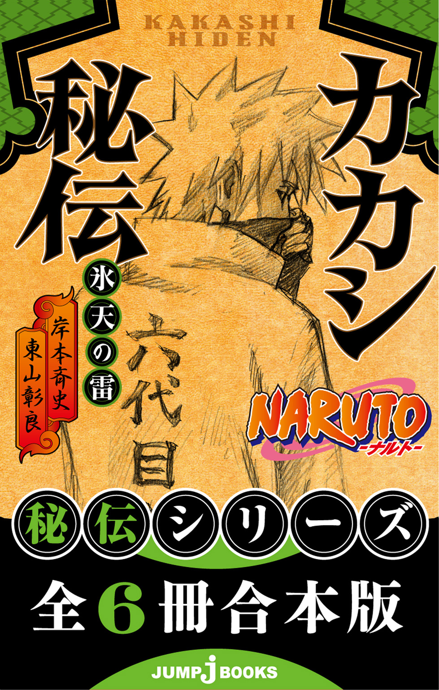
ジャンプジェイブックスDIGITAL
【合本版】ＮＡＲＵＴＯ‐ナルト‐ 秘伝シリーズ 全６冊
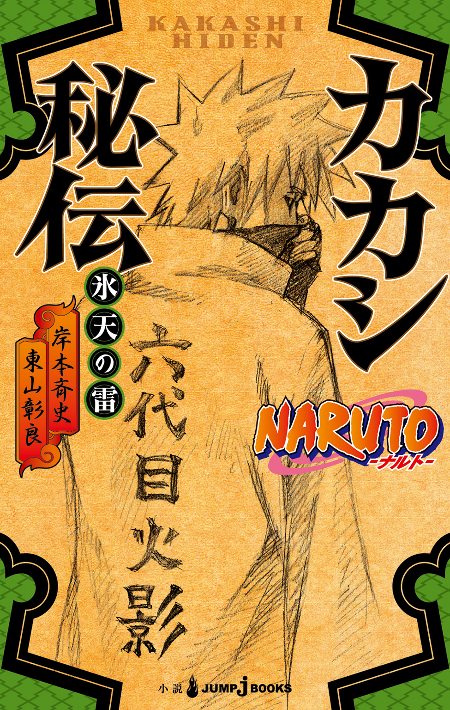
この本は縦書きでレイアウトされています。
また、ご覧になる機種により、表示の差が認められることがあります。
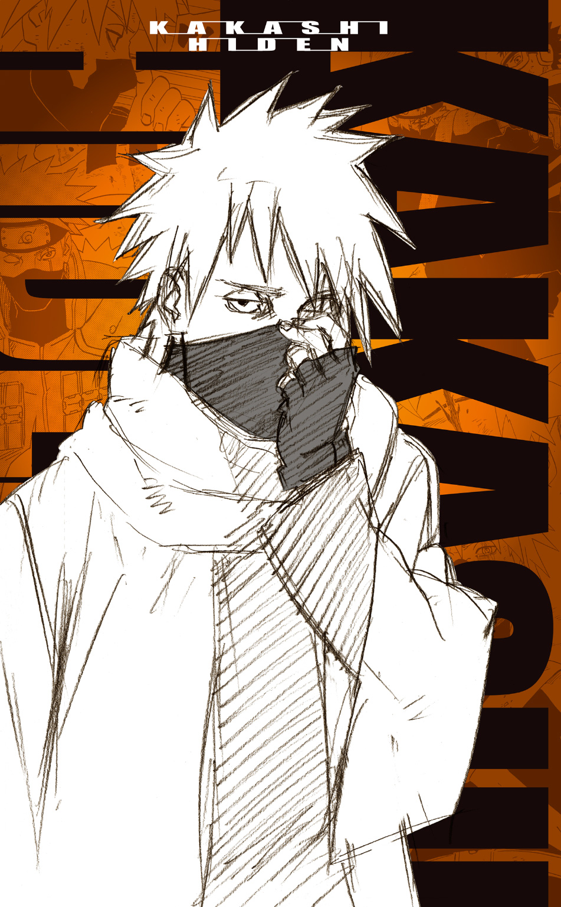
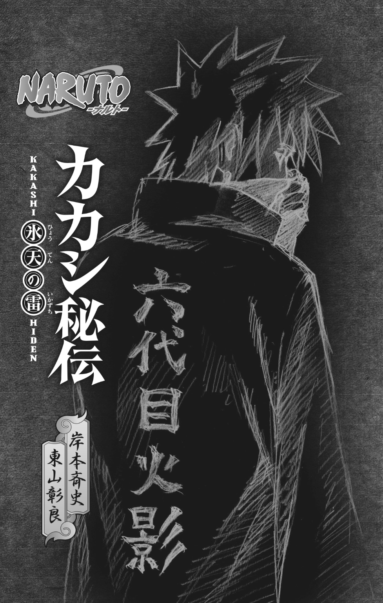
目次
この作品はフィクションです。
実在の人物・団体・事件などにはいっさい関係ありません。
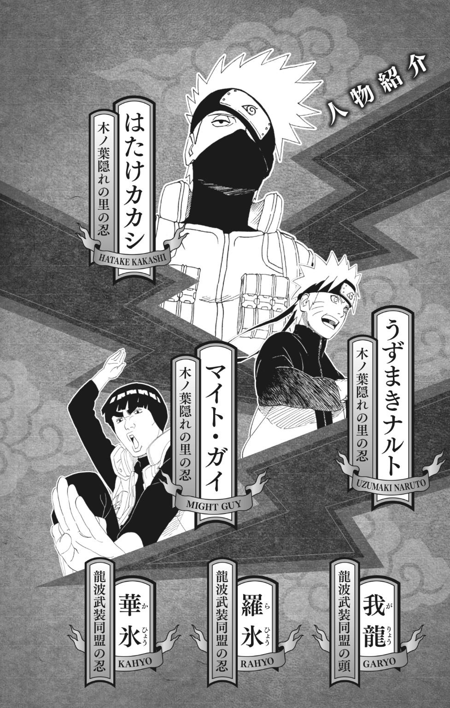
地上五百メートル上空の強風を受けながら、サイがふり向く。
「本当にひとりで大丈夫かい、ナルト？」
「ああ」ナルトは、はるか下方にある、敵地をにらみつけた。「問題ねェってばよ」
「だけど、きみの手はまだ......」
「あんなやつら、片手で大丈夫だってばよ」
超獣偽画によって作り出された鴻は、夜陰にまぎれて、地上からは目視できない。
が、ナルトの眼には、ちゃんと地上が見えていた。
すでに丑三つ時だというのに、標的の潜む荒山の谷には、まだ夜警の松明が煌々と燃えている。
あちこちに見張りの忍が立っていた。
切り立った岩壁と、まるで剣山のような稜線が、冷たい月明かりを受け、しっとりと濡れているように見えた。
「まさに天嶮の要害......」サイがナルトの心中を代弁した。「我龍はこういうところを転々としてるんだね」
「そんで、波の国の人たちを殺してんだ」
ナルトは奥歯をぎゅっと嚙み締めた。
第四次忍界大戦の終結から一年後、風の強い九月の夜であった。
しゅうしゅうと哭きながら、風が谷間を吹き抜けてゆく。
いったんその場を抜け出すと、サイとナルトを乗せた鴻は大きく旋回し、また我龍のアジトを真下に捉えた。
「あまり深く考えないことだよ、ナルト。第四次忍界大戦は、なにも人類最後の戦争ってわけじゃない」
「.........」
「残念だけど、マダラの思想に共鳴する人たちは、これから先も出てくる」ナルトが鴻の背から飛び降りるまえに、サイはそう言った。「我龍のようにね」
ゴオオオオオオオ！
空気を切り裂く音を聞きながら、夜空を落下していくナルトは、左手の人差し指と中指をからめて十字を作った。それはサスケとの戦いで右腕を失ってから、新たに修得した印の結び方である。
「多重影分身の術！」
ボンッ、と白煙が逆巻き、見張りたちが気づいたときには、すでに我龍のアジトは影分身たちに包囲されていた。
「敵襲だ！」
そこかしこで怒声があがった。
「我龍様をお守りしろ！」
岸壁にへばりつくようにして建っている小屋から、そしてあちこちの洞窟から、敵の忍たちが飛び出してくる。
影分身たちがクナイを飛ばすと、数人がいっぺんに倒れた。
背後から敵の斬撃を受けたナルトが、ボンッ、とはじけて煙と消える。
アジトの中央広場は、たちまち怒号飛び交う戦場と化した。
ナルトは左右に目を走らせ、事前にカカシから知らされていた洞窟を探した。
天井から垂れた尖った岩が、二本の牙のように見える洞窟――その洞窟だけが、山々によって外界と隔絶された我龍のアジトに出入りできる唯一の道なんだ、とカカシは言った。
「だったら......やつが脱出しようと思うんなら、その洞窟へ逃げ込むしかねェってばよ！」
影分身たちと敵が死闘を演じている先に、その洞窟はあった。
まるで牙を剝いた獣の口のようなその洞窟に、忍たちに守られ、長衣の裾を引きずりながら駆け込もうとする小男――
「我龍ぉおおお！」ナルトの声が岩壁に反響した。「てめェ、ぜってー逃がさねェかんなっ！」
その谺が消えるまえに、敵の忍がひとり、ナルトの前に立ちふさがった。雪のように白い忍装束をつけ、顔には鈎模様のある白い面をつけている。
「邪魔すんなってばよ！」
すかさずクナイを飛ばすナルト。
しかし、その切っ先が触れるや、仮面の忍は霧のようにゆらめいて消える。のみならず、気がついたときには背後を取られていた。
「氷遁・地鎖連氷！」
背中を軽く、とん、と突かれただけだった。そのせいで少しつんのめりはしたが、倒れるほどではない。
ナルトは足を踏ん張り、ふり向きざま、仮面の忍に向かってクナイを一閃させた――いや、させようとした。
できなかった。
「な、なんだってばよ......？」
体の内側をひっかかれるような感覚は、次の瞬間には激痛に変わった。
ビキ、ビキ......ビキビキビキビキ！
まるで血管から無数の冷たい棘が生え出し、体の中をズタズタに切り裂くかのようだった。
「うううう......」
膝をついてうめくナルトの口から、白い呼気が漏れる。
いくら山の夜気が冷たいとはいえ、まだ九月である。なのに、ナルトは歯をガチガチいわせて、激しい寒さに体を打ち震わせた。
凍てつくような寒さは、仮面の忍に突かれた背中からさっと全身に広がっていく。体をおおってゆく霜が腕や足に回り込み、顔にまで這い上がった。
ビキビキビキビキビキビキビキビキ！
なんとか体を動かそうとしたが、薄い氷片が数枚、パリパリと剝がれ落ちただけだった。氷の縛めは、まるで鎖のように、ナルトをがんじがらめにしていった。
仮面の忍は凍りついてゆくナルトには目もくれず、我龍のほうへとってかえす。
「我龍様、さあ、こちらへ......」
が、我龍は動こうとしない。それどころか、我龍を守っていた三人の忍が、バタバタと倒れた。
「!?」
鈎模様のある面の下で、敵は目をすがめたようだった。
我龍の背後の闇から、クナイを握りしめた手がすうっと現れる。
「そういや、白もそんな面をつけてたっけな」ナルトは標的の首筋にクナイを突きつけた。「そんで、この氷の技......てめェ、霧隠れの抜け忍だな？」
「やはり、本体じゃなかったか......」仮面の忍は、自分がたったいま仕留めたばかりのナルトを、ちらりとふりかえった。「うちはマダラを倒したあのうずまきナルトにしては、手ごたえがなさすぎるとは思ったが」
氷に囚われていた分身が、ボンッ、とはじけて消える。すると氷の縛めも、冷たい音を立てていっぺんに砕け散った。
ナルトと相手の視線が交差する。
「我龍様をかえしてもらおう」
「そりゃできねェ相談だってばよ」ナルトは仮面の忍をにらみつけた。「お前らのせいで、波の国の人たちが何百人も死んだからな」
「理念のためだ」
「マダラの理念か？ それはもうあの戦争で――」
「うちはマダラの失敗は」ナルトをさえぎったのは、我龍だった。「全世界に一度に無限月読をかけようとしたことだ」
ナルトは、自分がクナイを突きつけている色の浅黒い小男を、見下ろした。全身にまとっている揺るぎない覇気は、首筋に押し当てられたクナイなど、ものともしていないようだった。長い白髪をひとつに束ね、白い顎ヒゲを生やしている。切れ長の眼が、片方だけ白く濁っていた。
「しかし、マダラの考えそのものは間違ってはおらん」長衣の裾を風になぶられながら、我龍は続けた。「世界から争いをなくし、究極の正義を実現するためには、無限月読しかない。たしかに、マダラは死んだ。無限月読も、うちはサスケによって永遠に葬り去られた。しかし、だからといって、彼の理念まで死んだことにはならん。ほかのやり方でも、一歩一歩マダラの理念には近づいていけるはずだ。わしはそう信じとる」
「なにをするつもりなんだってばよ？」
「究極の正義とはなにか？ それは全ての人々の平等だよ。この世の不幸は、全て不平等に起因する。では、その平等を実現するにはどうしたらよいか？ それは個人の自由を管理することだ。金儲けをする自由、他人より多くのものを所有する自由、他人より楽をする自由――わしらはそんな自由を管理するために戦っておる。わしらの試みが上手くいけば、やがてほかの国も賛同するようになる。この世の全ての自由が管理されるようになる。これこそがうちはマダラの理念の真髄、そして世界の新しい秩序となる」
「それで、お前らは波の国を実験場に選んだってのか？」ナルトは嚙み締めた奥歯のあいだから声を押し出した。「この国には隠れ里なんかねェんだぞ。戦うことを知らねェやつらを殺してまで......もともと平和だったこの国に憎しみや悲しみを持ち込んでるのは、てめェらのほうだろうが」
「この世が不平等であるかぎり、憎しみや悲しみのない国などない」
風が洞窟の中へ向かって吹き込み、ナルトの、腕のない右袖をはためかせた。
「この国には隠れ里がない。だから、抜け忍たちがたくさん身を寄せとる。波の国へやってきた抜け忍たちは、殺し合うことにうんざりして、忍だったことを隠して、ふつうの人間として生きようとしとる。彼らが求めとるのは、ささやかで、人間らしい暮らしだ。だが、幼いころより殺し合いの訓練しかしてこなかった彼らに、なにができる？ 波の国の者たちは、そんな彼らを見下し、彼らの尊厳を金で買えると思っとる。武力が必要なときも、金を出してきみのような者を雇えばよいと思っとる。自分の手を汚すことなく、金で全てが解決できると思っとる。金！ 金！ 金！ 金を持たん者は、人間扱いすらしてもらえない。きみがいま戦っている相手もそうだ」
ナルトは仮面の忍に目を向けた。
「スズメバチに刺された息子さんを病院に運んだら、医者がおらんかった。次の病院も、そのまた次の病院も、どこにもおらんかった。やっと医者とも言えんような怪しいまじない師を捜し当てたときには、息子さんはショック症状で死にかけとった。もちろん、まじないなど、なんの役にも立たなかった。すぐに治療をしたら、あるいは助かったかもしれん。しかし、波の国からは医者がひとり残らず消えておった。なぜだと思う？」我龍は言葉を切り、苦しげに声を絞り出した。「第四次忍界大戦で負傷した忍の手当てをするために、五大国がみんな買いあげとったからだよ」
「！」
「もし波の国が平和だというのなら、それは貧しい者を踏みつけ、札束の上に築きあげられた平和だよ」我龍が言った。「それでも、きみは本気でこの国に憎しみや悲しみはないと言えるのかね？」
口をつぐんだナルトの代わりに声を発したのは、仮面の忍だった。さっと腰を落とすと、地面に手のひらをたたきつけた。
「氷遁・地鎖連氷！」
「!?」
腹に響く衝撃波が走り、地面を割って下から無数のつららが生え出す。つららは洞窟の天井を刺し貫き、ナルトと我龍の立っている場所を用心深く避け、洞窟の奥へとのび、あっという間に脱出路をふさいでしまった。
「私の地鎖連氷は、わずかな水分さえあれば、なんでも凍らせることができる」仮面越しの声は低く、かすれていた。「これでもう、お前はどこへも行けない......我龍様をかえしてもらうぞ」
敵の忍たちが、どんどん集まってくる。
「あんたの息子のことは、気の毒に思う」
「.........」
「けど、あんたらがやってることは納得いかねェってばよ」ナルトは言った。「自由を手放そうとしねェ人たちを殺して、それで残ったみんなが幸せになれるってのか？ そんなの、新たな憎しみを生むだけだってばよ」
「痛みを伴わない変革はない」仮面の下で、敵が言った。「これは、新たな秩序を実現するための、産みの苦しみなんだ」
「もっとほかに、やり方があるはずだってばよ」
「お前と、ここで議論するつもりはない」
「.........」
「来ないなら、こちらから行かせてもらうぞ」
「悪ぃが、あんたと戦うつもりはねェ」
言うなり、ナルトは我龍を片腕にかかえ込み、地面を蹴って跳び上がる。
「逃げるか！」一拍遅れて、仮面の忍も宙に舞い上がった。そのまま空中で、素早く印を結ぶ。「氷剣の術！」
ガラスの砕けるような音が、山間に響き渡った。
大気中の水分が凝縮し、無数の氷の短剣となってナルトに襲いかかる。氷の切っ先が月明かりをはじいて、キラキラと光った。
が、ニヤリと笑ったのは、ナルトのほうだった。
氷の剣に刺し貫かれる寸前、黒い旋風がさっとナルトと我龍をかっさらう。むなしく空を切った氷剣が、岩壁に突き刺さった。
ピイイイイ、という鳥の声が、谷間に谺した。
着地した仮面の忍は、燃えるような青白い眼で、黒い鳥に連れ去られる我龍を見上げた。
「ナイスタイミングだってばよ！」
「上手くいったね」
鴻の背の上では、ナルトとサイが手のひらを打ち合わせていた。
「あれから、もう六年以上か......てこたあ、オレってば、まだ十二歳だったのか！ あれはオレたち第七班の、初任務だったんだってばよ。カカシ先生がいて、サクラちゃんがいて、サスケのやつもいてよ――」
「たった六年だよ」
イナリはナルトの言葉を正した。イナリは十四歳のはずだが、もっとずっと大人びて見えた。腰にトンカチやらノコギリやらを収めた、革の工具袋をさげている。
「たった六年で、波の国はすっかり変わってしまった。ナルトの兄ちゃんだって、気づいてるんだろ？ ナルトの兄ちゃんだって......」
「この右手のことを言ってんのか？」
イナリが目をそらした。ナルトの右手は、サスケとの戦いで、二の腕から先が失われていた。
「こんなの、どうってことねェってばよ！」ナルトは大口を開けて、豪快に笑ってみせた。「腕なんかより、もっと大切なもんを手に入れたんだからな」
「......ずっと、そのままなの？」
「いま、綱手のばーちゃんが、義手を作ってくれてるってばよ。だから、心配すんな、イナリ」
「そうか......」
「そんなことより、波の国はどうしちまったんだ？」
「あのころは......ナルトの兄ちゃんとはじめて会ったころは、オレもじいちゃんも、なると大橋さえできれば、みんなが幸せになれると思ってた」そう言って、イナリはさびしそうに笑った。「だけど、なると大橋のおかげで交通量が増えて、商売が上手くいって金持ちが増えてくると、みんなの関心はお金のことだけになった。ガトーみたいに、金のためならなんでもするやつなんか、いまじゃ珍しくもなんともない」
「この前、ちらっとお前に会ったのは、たしか......」
「ペインに壊された木ノ葉隠れの里を、オレたちが修理に行ったときだ」
「あんときは、ゆっくり話す暇もなかったもんな......そうか、いま波の国はそんなことになってんのか」
沈黙の中で、ナルトは、寄り添うように立っている桃地再不斬と白の墓標を見下ろした。
木を十字に組んだだけの粗末な墓には、たしかに六年分の歳月が刻まれていた。あのとき、再不斬の墓のそばにカカシが突き立てた首斬り包丁は、サスケの仲間の水月が持ち去っていた。
草原を風が吹き抜け、自生している秋桜を揺らめかせた。
ナルトはうーんと、ひとつ伸びをした。
「そういや、タズナのオッチャンはどうしてんだ？ 元気にしてんのか？」
イナリは少しためらってから、思い切って打ち明けた。「飛鯱丸の最後の仕上げで、ずっと港の造船所に泊まり込みだよ」
「新しい船を造ってんのか？」
「船は船でも、空飛ぶ船だけどね」
「へ？」
「波の国は、いま新しい運輸システムを作り出そうとしているんだ。飛鯱丸が完成したら、波の国は運輸の世界でトップに躍り出ることができる。いままで船や人が何日もかけて運んでいた荷物を、空路を使って短時間で送り届けることができるようになる」イナリの口調は、景気のいい話をしているのとは裏腹に、どこか冷めていて、自嘲気味だった。「本当はまだ秘密なんだけど、ナルトの兄ちゃんになら言ってもいいと思って。一号機が完成したら、波の国のお偉いさんを招待して、お披露目の遊覧飛行をすることになってるんだ。飛鯱丸のすごさをみんなに見てもらって、もっとお金を集めようってことさ。で、お金が集まったら、新しい船をどんどん造って、五大国にも売り込んでいくつもりなんだ。これもまだ秘密だけど、じいちゃんたちは遊覧飛行のとき、木ノ葉隠れの里に警備を頼むって言ってたよ」
「忍の中には、空を飛べるやつもいるけど......空飛ぶ船って、そんなことができんのか？」
「五大国が戦争に明け暮れていたときも、波の国は新技術の開発を続けていたからね」
「でかいのか？」
「じいちゃんたちがいま造ってるのは、五、六十人乗りくらいだと思う。お金さえあれば、もっと大きなものが造れるよ」
「で、どうやってそんなでっけェ船を飛ばすんだってばよ？」
「大きな風船だと思ってもらったらいい」イナリが言った。「空気より軽いガスを満たしたその風船の下に、人や荷物を積める鉄の籠......ゴンドラっていうんだけど、それがくっついている感じかな。船尾にプロペラが六基ついていて、それで前に進むことができるんだ」
ナルトの頭に浮かんだのは、小さな風船がたくさんついた、竹籠の画だった。宙に浮かんだまではいいが、どこからともなく飛んできた烏の大群が風船をつっついて、パンパン割っていく。すると、竹籠に乗った人は、奈落の底へ真っ逆さまに落ちてゆくのだった。
「そんなもん、オレはぜってーに乗りたくねェってばよ」ぶるっと身震いが走った。「お偉いさんを招待するって、本当に安全なのかよ？」
「もう何度も実験飛行をやってるからね」
「で？ お前はそれが気に食わねェんだな、イナリ？」
「......え？」
「顔に書いてあるってばよ」ナルトは肩をすくめ、「〝本当はそんな空飛ぶ船なんかいらねェ〟ってよ」
「......うん」イナリが目を伏せた。「飛鯱丸が完成しちゃったら、たしかに波の国にはお金がいっぱい入ってくる」
「それが気に食わねェのか？」
「それはいい」
「.........」
「だけど、飛鯱丸に仕事を奪われちゃう人がいっぱい出てくると思う」イナリは顔を上げ、ナルトをまっすぐに見つめた。「もともとオレたち波の国は、荷物の運輸で稼いできた。荷物を肩に担いで運んでいた人たちや、船で運んでいた人たちは、たぶんみんな仕事がなくなっちゃう。すると、どうなる？ みんなが飛鯱丸を憎むようになる。そんなものを造ったオレたち大工を憎むようになる」
金！ 金！ 金！ 我龍の声がナルトの耳に蘇った。もし波の国が平和だというのなら、それは貧しい者を踏みつけ、札束の上に築きあげられた平和だよ――
「とにかく、我龍を捕まえてくれて、ありがとう」ナルトの深刻な顔つきを見て、イナリが話題を変えた。「あいつらは、最初から飛鯱丸の建設に反対だった。大工たちが何度も襲われて、何人も殺されたんだ......我龍は鬼燈城へ送られるんだろ？」
「ああ......そうなるだろうな」
鬼燈城とは、五大国が費用を出し合って、草隠れの里に建てた囚人の収容施設だ。もちろん、五大国が共同で管理している。
ナルトは数年前、ある任務をおびて、この鬼燈城へ潜入したことがある。そのときの成り行きで全壊した鬼燈城を修復したのが、イナリたち波の国の大工だということは、知っていた。
「そういえば、ナルトの兄ちゃんも一度、鬼燈城にぶち込まれたことがあったな？ どうせ女風呂でも覗いたんだろ」
「だーから、あれは任務だったんだっての！」
くわっと目を剝いたナルトを見て、イナリが笑った。
ナルトもそれにつられた。
「まあ、世の中はどんどん変わっていくもんだってばよ」笑いながら、言葉を継いだ。「金はクナイや忍術といっしょで、使い方しだいで良くも悪くもなるんじゃねェのかな」
イナリがうなずいた。
「お前が正しい金の使い方をすれば、きっと救われるやつもいっぱいいるってばよ」ナルトは言った。「よく分かんねェけど、それが我龍みたいなやつに抵抗する一番いい方法なんじゃねェかな」
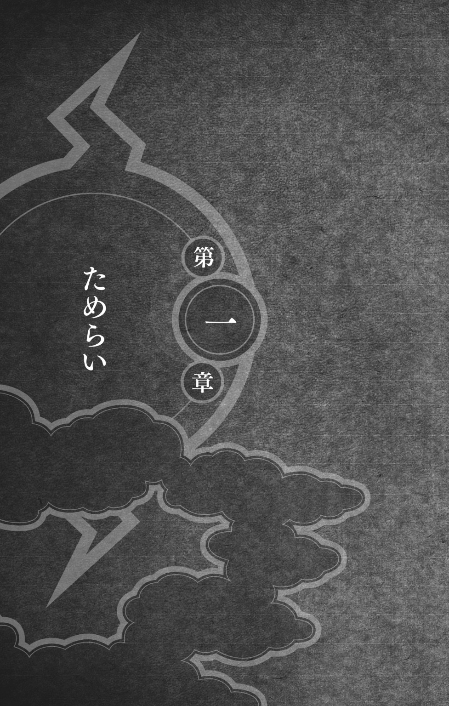
毎度のことながら、ラーメンのどんぶりをかかえたナルトが、一楽を飛び出してきた。
「カカシ先生！ カカシ先生！」
いっぽう、カカシのほうは、ナルトと会いたい気分ではなかった。
だから、読みかけの愛読書――『イチャイチャタクティクス』、しかもシリーズの中でもっともイチャイチャ度の高い第三章「黙ってオレについてこい」――に没頭しているふりをして、そのままやり過ごそうとした。
「カカシ先生ってばよ！」なのに、ナルトのやつは、どこまでも他人の心情を解さないやつなのだ。「なんだよ、さっきからずっと呼んでたんだぞ......まだ耳が遠くなる歳じゃねェだろ」
「ん？ ......ああ、ナルトか」カカシは心中ため息をついた。「いや、すまん、すまん......本に夢中で、気がつかなかったんだ......おっ！ 義手ができたのか？」
「なーんか、まだしっくりこねェけど」そう言って、ナルトは右手に持った箸を、ぎこちなく閉じたり開いたりした。「まあ、贅沢は言ってらんねェってばよ」
「そうだな」
「それより、カカシ先生、まだ就任式はやんねェのか？」
「え？」ほーら、きたよ。「まあ、オレはああいうことが苦手だからな」
最近は、どこに行ってもこの質問をされる。そのことに、カカシは少々辟易していた。
たしかに、火影になる決心はした。
だが、自分では、やっぱり火影の器ではないと思っている。就任式をやってしまうと、本当にもう後戻りできなくなる。第四次忍界大戦が終結したいま、そんなに急いで火影にならなくてもいいのではないか？ そんなふうに思うときすらあった。
「火影岩だって、もうできてんだぞ」ナルトは、新しい右手を不器用に使って、ラーメンをズズズッとすすった。「みんなだって気にしてたし......第一、火影がだれだかハッキリさせとかねェと、よその里にしめしがつかねェってばよ。そのための就任式だろ？」
「綱手様はまだまだご健在だから、オレなんかが......」
「綱手のばーちゃんは、もうダメだってばよ」ナルトはとんでもないことを、キッパリと言ってのける。「このまえの戦争で死にかけてから、なんか仕事に身が入ってねェっつーか」
「......そうか？」
「昼間っから酒飲んだり、ふらっといなくなったかと思ったら、賭場で大ゲンカしてみたり......たぶん、あれだな、あの戦争で老いってやつを実感しちゃったんじゃねェの？」ガッハッハと大笑するナルト。「ほら、どうせならパーッといっちゃえ、みたいな？」
が、カカシは笑うどころではない。それというのも、ナルトの背後にただならぬ黒い殺気を察知したからだ。
「まあ、綱手のばーちゃんももういい歳なんだから、そろそろ隠居して老後を楽しみたいのも分かるけどよ」
「え......えっと、そうかあ？」ますます大きくなってゆく殺気に、カカシはしどろもどろになった。「つ、綱手様はまだまだお若いと思うぞ、うん、オレはそう思うなあ！」
「どこが！ 遠目には分かんねェかもしんねェけど、近くで見たら、顔なんか細かいしわだらけなんだぞ」
「わああ！」頼むから、もうその口を閉じてくれ！「おまっ......そういうことは、あまり大きな声で」
ナルトがいらないことを言うたびに、殺気はゴゴゴゴと大きくなった。
「なに慌ててんだよ、カカシ先生？」ふたつのギラつく目が自分の背後で光っていることに気づかないのは、ナルトばかりであった。「大きな声じゃ言えねェが、最近、怒りっぽいんだよなあ......物忘れもひどいし――」
死んだな、こいつ。
カカシは目を閉じたので、ナルトの頭に綱手の拳骨がめり込むところは見ていない。しかし、ゴンッ！ というシャレにならない音は、いやでも耳に入った。
「だーれが物忘れがひどいんだ！」綱手の怒号が響き渡った。「怒りっぽいのは、お前が怒らせるからだろうが！」
目を開けると、頭にでっかいたんこぶをこさえたナルトが、地面に倒れ伏していた。
「カカシ！」
「は、はいぃ！」綱手にギロリとにらまれて、カカシの声が裏返る。「オ、オレは綱手様はいまでも充分お若いと......」
「まだ就任式の日どりは決まらんのか？」
「.........」
「ためらうのは、よく分かる」綱手が表情を和らげた。「私もそうだったからな」
「はい......」
「火影ともなると、これまでのように気ままに暮らしてはいけん」倒れているナルトを顎で指す。「このバカとも、そうそう遊んでいられなくなる」
カカシは黙って話を聞いた。
「六代目はお前しかいない」綱手が言った。「ナルトはたしかに強くなったが、見てのとおり、まだ火影の器ではない。それに、お前は五影会談のときも、火影になる決心を固めていたではないか」
「あのときはまだ写輪眼がありましたから」
「.........」
「写輪眼を失ったということは、雷切をも失ったってことです......雷切は、写輪眼の動体視力があってこそ、完成できる術ですから......そんなオレが火影になっても、はたして本当に木ノ葉を守れるんだろうかって、つい考えてしまうんです」
「カカシ......」
「すみません、綱手様......このお話は、今回の任務が終わるまで待ってください」
六代目火影はお前がなれ、カカシ――オビトの声が耳に蘇る。それから、オビトはオレに、写輪眼をプレゼントしてくれたんだったな。
なにをためらっているんだ、オレは？ カカシは心中、舌打ちをした。写輪眼は、もともと期限付きで貸してもらったようなもんじゃないか......ああ、オレはたぶん、写輪眼に頼りすぎていたんだろうな。
「飛鯱丸の警備だったな」綱手が話題を変えた。「人手は足りてるか？」
「ギリギリですね。今年はうちが鬼燈城の当番ですから、ガイ班とシカマルの十班はそっちに出払ってますし」
「鬼燈城か......早く新しい城主が決まるといいのだがな」
「無為ほどの使い手は、そうそう見つからないでしょうね」
木ノ葉隠れと雲隠れが共同で行った数年前のある作戦行動で、鬼燈城は壊滅した。城そのものは修復されたが、天牢という秘術を使って囚人を管理していた城主の無為は、その作戦行動のさなかで命を落とした。以来、木ノ葉、砂、雲、岩、霧が、持ち回りで看守を出しているのだ。
「ナルトには里を守ってもらわなきゃならないんで、今回はオレが上忍の連中を連れていきますよ。まあ、式典の警備だけですし、問題ないでしょう。船さえ飛んじまえば、お役目ごめんですし」
「そういえば、ガイがその任務をやらせてほしいって言ってきてたな......あんな足で、まだそんなことを言うなんてな」
「ガイはただ、空飛ぶ船が見たいだけですよ」カカシは言った。「あいつなら、車椅子で波の国まで出かけていきかねない」
「空飛ぶ船か......途方もない話だな。いまのところ、飛鯱丸の存在は、他国には秘密のようだが、しかし......」
「ええ、すぐに知れ渡るでしょうね。そうなったら、各国がこぞってそれぞれの隠れ里に依頼して、波の国から飛鯱丸の技術を盗もうとするでしょう」
つまり、とカカシは心の中で、付け加えた。大空の利権を巡って、また忍どうしの騙し合い、殺し合いがはじまるんだろうな。
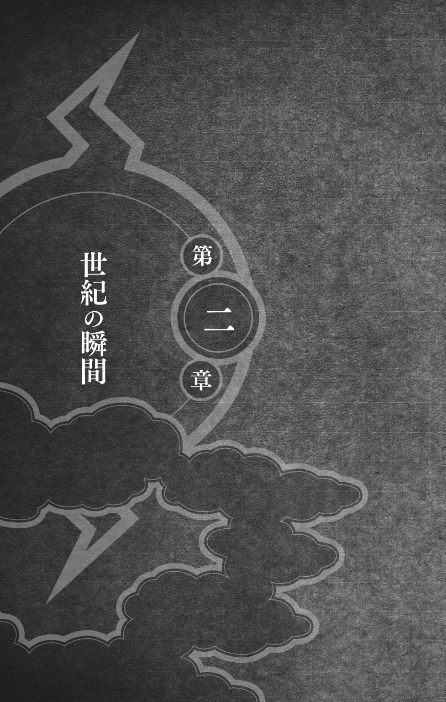
秘密の行事であるにもかかわらず、遊覧飛行は盛大な式典をもって、幕が切って落とされた。
式典会場となった海辺の草原では、くす玉が割られ、白い鳩が放たれ、鼓笛隊が練り歩き、紙吹雪が舞った。飛鯱丸に乗ることになっている賓客は言うにおよばず、ただの参列者でさえ、世紀の瞬間に敬意を表して、みんな正装で式典に臨んでいた。
次々に演壇にのぼって祝辞を述べるお偉方のむこうに、全長二百二十三メートル、直径三十四メートル、最高時速七十キロメートル、船尾に六基の推進プロペラを装備した飛鯱丸は、その流線型の巨体を堂々と横たえていた。巨体の下に客室がくっついている。
船名の由来は、一目瞭然だ。気球部分に、巨大な鯱が描かれている。ご丁寧に、背びれや、胸びれまでついていた。
天気は上々、上空には雲ひとつなく、晩秋の涼しい風が、草原をさわさわと波打たせていた。
「申し分のない日じゃな」自分が手がけた飛鯱丸を見るタズナの眼には、うっすらと涙が浮かんでいた。「これで波の国はまた超強くなれる」
「おめでとうございます」と、カカシは応じた。「立派なものを造りましたね、タズナさん」
「知っとるか、あのでっかい気球は気嚢と言うんだぞ。中にはヘリウムガスが入っとるんじゃ」
「ヘリウムは空気より軽くて、燃えにくい......ですよね」
「うむ、それが飛鯱丸の浮力となる。ほれ、船尾にプロペラが六つあるじゃろ？」
カカシはうなずいた。
「あれがあの巨体を前へ押し出すんじゃ。今回は二時間半の遊覧飛行じゃが、工夫すれば飛行時間はもっとのばせるはずじゃ。他国にバレんように、高度は五千メートルまでしか上げられんがな。今日の飛行コースで五千メートルを超えなきゃ、他国に見られることもない。検分済みじゃよ。機体を水色にしたのも、空の色と同化させるためじゃ」
「だけど、木ノ葉には知られていますよ？」
「それも仕方がなかろう」喜色満面だったタズナの顔が曇った。「いくら我龍が鬼燈城送りになったからといって、やつらの残党はまだそこらじゅうにおるからのう」
「そのために、木ノ葉の手練れを船内に潜伏させています」
「超頼りにしとるよ」
「さあ、それではいよいよご搭乗いただきましょう！」演壇の上から、招待客を飛鯱丸のほうへ促す声が、誇らしげに響き渡った。「招待状をお持ちの、幸運な五十七名のお客様は、どうか飛鯱丸のほうへ！ 係員が船内までご案内いたします！」
「いよいよですね」
カカシの言葉に、タズナは感極まったかのように、目を細めた。「ああ、いよいよ世紀の瞬間じゃ」
ふたりは、笑いさざめきながら飛鯱丸のほうへ流れてゆく、着飾った人々を眺めやった。
鼓笛隊の演奏が、ひときわ高くなる。
背後から、慌てふためく足音が聞こえてきたのは、最後の搭乗客たちがタラップに足をかけ、記念撮影をしているときだった。
「待って！」青いロングドレスの裾をたくし上げた女性が、全速力で駆けてきていた。「乗ります！ 私もその船に乗ります！」
女性のふり上げられた手には、金箔を施した招待状が、握り締められていた。
カカシのそばを駆け抜けようとしたときだった。女性がなにかにつまずき、つんのめった。「あ」という小さな声を発した彼女の体が、前に投げ出される。
カカシは、ほとんど反射的に、その体を受け止めていた。
彼女の見開いた眼と、カカシの眼が、流れゆく風景の中で、おたがいを捉える。
流れるような巻き髪に、うっすら開いた唇、しっとりと潤んだ大きな瞳――時間が一瞬止まり、世界はカカシと彼女だけになった。
ドサッと、カカシの腕に倒れ込むロングドレスの女性。顔を上げた彼女の長い巻き髪が、ふわりとカカシの鼻先をくすぐった。
「大丈夫ですか？」
「あ......すみません」女性は慌てて体を引き離した。「私、ちょっと急いでいたものですから......危ないところを助けていただき、ありがとうございました」
カカシがうなずくと、女性は恥ずかしそうに眼を泳がせた。それから、またドレスの裾をたくし上げ、大声で呼ばわりながら、飛鯱丸のほうへ突進していった。
「待って！ 待ってくださぁい！ 乗ります、私もそれに乗るんです！」
「あんなに遊覧飛行を楽しみにしていらっしゃる方がいる」走り去る彼女の後ろ姿を見送りながら、カカシはタズナに言った。「大工とは、素晴らしい職業ですね」
「超美しい女性じゃったな」タズナが言った。「職業と言えば、キミのハレの日はまだかね」
またか。
カカシは曖昧に首をふった。その眼は、ロングドレスの女性が向かう先、いまや離陸を待つばかりの飛鯱丸に向けられていた。
「よく分からんが、火影の就任式とは、きみと木ノ葉隠れの里の結婚式のようなものではないのかね？」
尾翼のプロペラを見つめながら、カカシは上の空で答えた。「ええ、そう言っていいかもしれません」
「だとしたら、悩まんほうがおかしい。みんなの期待が大きいなら、なおさらじゃ」
朝陽を浴びて、緑の草原に黒い影を落としている船に、眼を凝らす。
「たとえば、いまの美しい女性が、キミにしつこく結婚を迫ったとする。どんなに美しかろうと、男は尻込みするもんじゃよ」
「ええ」カカシの耳には、しかし、タズナの声はほとんど入っていなかった。「そうかもしれませんね」
「女が積極的になりすぎると、男は引いてしまうもんじゃよ。わしの若いときなんか、それこそ腹を空かせた犬みたいに、女の尻を追っかけまわし――」
「タズナさん」相手の言葉をさえぎる。その眼は、船尾から飛び降りてくる怪しい男にじっとそそがれていた。「ちょっと仕事が入ってしまったかもしれません」
顔に疑問符を貼りつけたタズナを残して、カカシは飛鯱丸に向かって疾走した。
タラップを駆け上がる先ほどの女性は、どうやら最後の搭乗客のようだった。作業員が、機体を大地に固定していたロープをはずしてゆく。
空色の機体が、低くうなりながら、離陸の準備を整えつつあった。
「おい」
カカシが背後から声をかけると、黒いフードをかぶったマントの男が、ビクリとして立ち止まった。
先ほど、タズナと話しているときに、飛鯱丸の船尾からこっそり飛び降りた男である。
「お前、招待客じゃないな？」
すると、男がダッと駆けだした。
「待て！」
追撃するカカシを待っていたのは、マントの裾から飛び出してきた、鋭い蹴りだった。
体を開いて敵の攻撃をかわすと、カカシは連続技を繰り出した。
一手、二手、三手と、ふたりは打ち合った。それだけで、相手がかなりの使い手だということが知れた。動きに無駄がない。
が、四手、五手と打ち合っているうちに、敵の打ち筋のようなものが見えてきた。
蹴りと突きが同時にくると思えば、本当にそのとおりの攻撃がくる。足払いと見せかけて、じつは胴体への連打を狙っていると読めば、敵は面白いほどカカシの読みどおりに動いた。
そして、それはカカシがよく知っている攻撃パターンでもあった。しかも、さっきからまったく殺気を感じない。忍術を発動する気配がぜんぜんないのだ。ダメ押しに、黒いマントを着ているとはいえ、この背格好――
頭を下げて蹴りをかわすと、カカシは一気に敵の懐に飛び込んだ。
続けざまに繰り出される突きを手際よくさばき、腰をぐっと落とし、敵の足を払いながら、拳と肘を使った五連続コンボを矢継ぎ早に出した。
バキッ！
ドカッ！
「うわあああっ！」
吹き飛んだ敵が、地面に倒れて手足をビクビク痙攣させた。
「やれやれ......」カカシは相手に近づき、顔を隠しているフードを頭の上に引き上げてやった。「お前がここにいるということは、ガイのやつも来ているな？」
フードの下から現れたのは、眼を回したロック・リーだった。
見物客や、写真を撮る人の群れをすり抜けると、カカシは地面と飛鯱丸をつないでいた最後のロープに飛びついた。
チャクラを練り、腕の力だけで、するするとのぼってゆく。
足を蹴って体をふり上げると、カカシはその遠心力を利用して、一気に船体まで飛んだ。
ゴンドラの窓から、中の着飾った搭乗客が、垣間見えた。窓の外をよぎるカカシに気づいた者は、ひとりもいない。
そのまま浮力部――すなわち、気嚢の側面に身を伏せ、横風を受けながら、尾翼目指して斜めに駆け上がった。
しかし......と、カカシは思った。よくもまあ、あんな体で式典会場のあちこちに配した上忍の眼を逃れて、飛鯱丸にもぐり込めたもんだ。それとも、上忍を買収でもしたのか？
ゆっくりと浮上する船の下で、見物客たちがどんどん小さくなってゆく。
船尾にたどり着いたカカシは、推進部のカバーに片手でぶら下がった。奥にあるのは、直径五メートルほどあるプロペラだ。
やつはここから侵入したのだろう。自分もプロペラが回りだすまえに中へ入らなければならない。そう考えたのと、右側三基のプロペラが回転をはじめるのと、ほぼ同時だった。
「......！」
プロペラは、ゴン、ゴン、ゴン、と低い音を轟かせながら、徐々に速度を上げていく。当然、飛鯱丸は、ゆっくりと左方向へ旋回を開始した。
上空の空気は、思っていたより、ずっと冷たい。高度が上がるにつれて、風も強くなっていく。
カカシは手足にチャクラを集め、風に吹き飛ばされないように、反対側の推進部まで這っていった。
飛鯱丸はついに進路を定めたようで、いったん空中で停止したあと、今度は左側三基のプロペラが、いまにも回りだしそうな気配を見せた。
カカシが風に逆らって推進部の内部にもぐり込んだとき、プロペラがゆっくりと回転をはじめた。
足を踏ん張ると、カカシは回転するプロペラの隙間に、頭から飛び込んでいった。さいわい回転速度はまだ上がっておらず、巨大なプロペラに体をミンチにされなくて済んだ。
が、ほっと一息つく間もなく、背後で勢いよく回りだしたプロペラに、吸い込まれそうになる。
「！」
全身のチャクラを使って推進部の内側にすがりついていてさえ、その風速に体を持っていかれそうになった。
それでも、カカシは少しずつ這い進み、どうにか推進部から脱出したのだった。
周囲を見渡す。
正面は浮力部の気嚢にふさがれているが、推進部に直結している梯子があり、それを使って下へ降りることができた。
下はどうやら、機関室のようだった。
と、カカシの耳が異音を拾う。
眼を走らせると、機関室の中空を縦横に走る足場を、リーとまったくおなじ黒いフードをかぶった人影が、車椅子に乗って走り去るのが見えた。
「逃がすか！」
鉄柵を飛び越えると、カカシはそのまま宙吊りの足場に飛び降りた。そのさらに下は船倉になっているようで、大きな木箱がいくつも積んであるのが見えた。
車椅子の男は、カカシの足場と平行に走る足場を、よろめきながら進んだ。
カカシは足場を蹴って、となりの足場へ跳び移った。
「どういうつもりだ、ガイ！」
車椅子がピタリと止まった。
「リーが全部吐いたぞ」カカシはため息をつき、首をふった。「お前......あいつに飛鯱丸に乗せてくれなかったら、師弟の縁を切るとまで言ったそうだな？」
マダラとの戦いで、右足の骨を砕いてしまったガイは、以来、車椅子の生活を余儀なくされていたのだった。
医者には、もう歩くことすらできないと言われた。
が、驚くべきことに、この男はそんな逆境をたゆまぬ修業で跳ねかえしただけでなく、本気の青春パワーを出したときには、立って歩けるほどまでに回復していたのである。
「リーなどいなくても、オレはいつだってやりたいようにできるんだ」ガイは、まくしたてた。「人間、足の一本や二本なくたって、ちゃーんと生きていけることを、オレは身をもって証明してやるんだ」
「あのねえ......」カカシは、ギプスのハマッたガイの右足をちらりと見た。「そのためだけに、わざわざ飛鯱丸に侵入したのか？」
「いいか、カカシ......オレは忍として、まだ終わったわけじゃないぞ。いまだって、左足スクワットの千回や二千回、どうってことない。その気になれば、車椅子に乗っていようが、こんな船にもぐり込むことなんざ、屁の河童だ。わっはっはっは！」
カカシは冷めた半眼で、どこまでも前向きなこの男を見つめるばかりだった。
「言っておくが、オレはべつにこんな船に乗りたかったわけじゃないぞ」ガイは言いつのった。「こんな人類初の空飛ぶ船になんか、まったく興味はなかったんだ。上空五千メートルの風景？ そんなものを見て、いったいなんになる？ 全長二百二十三メートル、総重量二百トン以上もある船が、いったいなぜ空を飛べるかなど、どうでもいいことだろうが！」
こいつ......と、カカシは思った。なにがなんでも乗りたかったんだな。
「な、なんだ......その眼は？」
「そういえば、お前って船酔いがひどかったよね」
「うっ」
「どうするんだ？」ため息を禁じ得ない。「言っておくけど、お前が吐いたりしても、オレは知らないからな」
「な、なにをバカな！ 船は船でも、これは空飛ぶ船じゃないか」
「空飛ぶ船でも、船は船でしょうよ」
「バカにするな！ これしきのことで、このマイト・ガイが酔ってたまるか！」
が、言っているそばから顔が青ざめ、胃から込み上げてきたものに、うっぷとなるのだった。
「いったい、どうするつもりだ？」まったく、やれやれだ。「この船に潜伏させている上忍は、事前に波の国に届け出ることになってる。届け出のないオレたちが、こんなところにいるのがバレたら、木ノ葉の信用にかかわるぞ。オレたちが、飛鯱丸の情報を盗もうとしていると、誤解されかねない」
「問題ない」
「はあ？」
「この遊覧飛行のことは、各国には秘密だからな」ガイがニヤリと笑った。「公式には飛鯱丸は存在しない。よって、オレとお前も存在しない船に忍び込むことはできん」
「ああ、なるほどね」
「全て計算済みよ！ わっはっは......うっぷ......それより、我が愛弟子はどうした？」
「リーなら、鬼燈城にかえしたよ」
「そうか。リーなら大丈夫！ オレゆずりの青春パワーで、しっかり囚人どもを見張っててくれるさ」それから、声を落とし、「どうせオレなんか、この体だ。収監者の監視など、できやしない。ちょっとくらい抜け出しても、まったく問題ないってわけだ」
「お前......さっきと言ってること、ぜんぜん違うじゃないの」
「なあに、バレやしないさ！ それより、ものは相談なんだが......うっぷ......ああ、気持ち悪い......せっかくもぐり込んだんだから、お前がオレの車椅子を押して、ふたりで船内をいろいろ見て回ろうじゃないか――」
ここでガイは口をつぐみ、それまでとは打って変わった険しい顔つきで、足場のはるか下方の船倉を見下ろした。
もちろん、カカシも気がつかないわけがない。
「忍だな」
「ああ」ガイの言葉に、カカシはうなずいた。「この船には、うちの上忍以外に忍は乗ってないはずだ」
物音を立てないその身のこなし、周囲に向けられる鋭い殺気、揺れる船の中でもバランスを崩さない足運び、そのどれひとつを取っても、船倉に入ってきたふたりの男はただの搭乗客には見えなかった。
ふたりは気配を消して、眼下の男たちの動向を見守った。
頭上からでは、顔までは分からない。服装は、ほかの搭乗客となんら変わらないように見えた。
男たちは、頭上にいるカカシとガイに気づかない。うずたかく積まれた木箱の脇にしゃがんでなにかやっていたと思ったら、そそくさとその場を立ち去ってしまった。
カカシとガイは、顔を見合わせた。
男たちがいなくなってから、カカシは足場を飛び降り、木箱の周囲をあらためた。
探し物は、すぐに見つかった。
「おい、カカシ――」ガイが声をひそめて叫んだ。「なにか見つかったのか？」
「ああ」カカシはうめくように返事をした。「どうやら、厄介なことになりそうだな」
それは、起爆札のついた、クナイだった。
時を移さずに、食堂ラウンジのほうから、悲鳴があがった。
「ええい、もっとスピードは出んのか!? ああ、じれったい......オレの足さえなんともなけりゃ、いまごろさっきのやつらをふん捕まえて、洗いざらい吐かせてやれたものを......急げ、カカシ、敵は待っちゃくれないんだぞ！」
「お前ねえ......」
カカシはガイの車椅子を押して、宙吊りの足場を駆け抜け、倉庫をよぎった。そのあいだ、ガイは一秒たりとも黙っていなかった。
「どうした、カカシ？ スピードが落ちてるぞ！ それでも木ノ葉の忍か、貴様!?」
「お前には、本当に癒されるよ」
「お前も、熱き血潮をたぎらせろ！ そうすれば、自ずと他人を救い、自分も救われるんだ。癒しってのは、けっきょくそういうことなんだ！」
皮肉がまったく通じないのだ、このマイト・ガイという男は。
厨房で車椅子を捨て、まずはガイを換気ダクトへ押し上げてから、自分もダクトへ跳び上がった。
ふたりはダクトの中を這い進んだ。先頭を行くガイは、腕の力だけで、どんどん這い進む。
そういえば、こいつは左足スクワットだけじゃなく、腕立て伏せも、バカみたいに一日中やってたな......前を行くガイを見ながら、カカシは思った。まったく、お前のド根性には癒されるよ、ガイ。
食堂ラウンジの天井裏へ出たところで、ガイが不意に止まる。
そのせいで、カカシはガイの尻に顔面から突っ込んでしまった。
「急に止まるなよ......」
「シッ！」
ガイが指でカカシを呼ぶ。
ふたりは天井にはめ込まれた格子蓋から、ラウンジを見下ろした。格子蓋のすぐ横に、大きなシャンデリアが吊り下がっていた。
ラウンジの隅に、白いグランド・ピアノが見える。ソファやテーブルがほどよく配置され、窓際には、酒を出すバーまであった。
「あいつら、なにやってんだ？」
「まあ......」と、カカシは応じた。「なにか楽しいことじゃなさそうだな」
いままさに数人の忍が、搭乗客を制圧しているところだった。搭乗客にクナイを突きつけ、罵声を浴びせ、小突きながら、ひとつ所へ集めていた。
困惑した老若男女は、まるで羊のように追い立てられ、ラウンジの真ん中に集められた。小さな子供が、母親の腰にしがみついて、シクシク泣いている。文句を言った男が、忍に殴り倒された。
「何人だ？」カカシは鋭く訊いた。
「オレのところからは、六......いや、七人か」
「さっきのふたりもいるか？」
「分からん」今度はガイが訊く。「潜伏してる木ノ葉の上忍は何人だ？」
「三人だ」
その声が消えるまえに――上忍たちが動いた。
搭乗客に扮したひとりが、人混みから跳び上がり、敵の忍に両手のクナイを飛ばした。
敵のふたりが、どっと倒れる。
悲鳴のほうに眼を走らせると、天井から吊り下がった豪華なシャンデリアの下でも、べつの上忍が敵と斬り合っていた。
搭乗客の反撃は想定外だったのか、敵がいっせいに色めきたつ。よく狙わずに投げた敵の手裏剣のせいで、数人の搭乗客が倒れた。敵の蹴りを食らった上忍が、搭乗客を巻き込んで吹き飛ぶ。
「なにをしておる!?」ラウンジの中央にいた、巨体の男が吼えた。「華氷はなにをやっとるんだ!?」
どうやら、この男が一味のリーダーのようだ。紺の忍装束に鎖帷子をつけ、顎ヒゲを生やした男だった。
そして、華氷。
カカシはその名前を、胸に刻みつけた。
三人目の上忍がグランド・ピアノを蹴って跳び、両手にクナイを握り締めて、リーダーの男に躍りかかった。
敵も外套の下に隠し持っていた太刀を抜いて、応戦する。
双方とも迂闊に忍術を発動しないのは、ここが地上五千メートルの上空だからだろう。下手なことをして船体に傷でもつけば、大惨事はまぬがれない。
木ノ葉の忍と、襲撃犯のリーダーのクナイがぶつかり合って、火花を散らした。あとのふたりも、それぞれの敵と対峙している。
「オレたちも加勢にいくぞ、カカシ！」
「お前、その体でどうやって......いいから、ちょっと待て」
いやな胸騒ぎが、仲間たちの救援に駆けつけたいという衝動を、抑え込んだ。すぐに、その理由が分かった。
華氷。
こちらが仲間を搭乗客にまぎれ込ませていたように、敵のほうにもまだ切り札があるようだ。
そして、その予感は、正しかった。
最初の兆しは、ガイの口元に現れた。カカシを急き立てる声が、白くかすみだしたのだ。呼気が白い。それに気づくと同時に、船内の温度が急激に下がるのを感じた。
ラウンジの戦いに眼を戻すと、味方の忍たちの動きが止まっていた。
はじめは、なにがなんだか分からなかった。
三人の上忍たちにも、なにが起こったのか分からないようだった。必死に上半身をねじっているが、下半身はまるで凍りついたかのように、びくとも動かない。
それが比喩などではないことを、カカシはすぐに思い知った。仲間の忍たちが、本当に凍りついているのだ！
薄い氷がビキビキビキビキと音を立てながら、まるで生き物のように彼らの体を這い上がってゆく。たちまち頭のてっぺんまで、氷に閉ざされてしまった。
「な、なんだ......」口をパクパクさせるガイの呼気は、もう白くはなかった。「どうなってるんだ？」
「敵は客の中にもまぎれ込んでいる」温度が上昇していくのを、カカシは肌で感じとった。「どうやら氷遁の使い手がいるようだな」
「心当たりはあるのか？」
「二か月前、ナルトが我龍を捕らえたとき――」凍りついた仲間たちを見下ろしながら、カカシは奥歯をぐっと嚙み締めた。「氷遁の使い手とまみえたそうだ」
「だとしたら、やつらは我龍の手の者だな？」
「おそらく」
「で、どうする？」
「待て、動くぞ」
「我々は龍波武装同盟の有志である！」リーダーの大男が呼ばわった。「搭乗客は全員、すみやかに部屋の中央に集まれ！」
すると、手下の忍が、おびえ、泣きじゃくる搭乗客にクナイを突きつけて、食堂ラウンジの中央に追い立てた。
さらに四人ほどの新手が、あわただしくラウンジに駆け込んでくる。こいつらはおそらくふた手に分かれて、船内に起爆札を仕掛けていたのだと、カカシは踏んだ。
襲撃犯たちは、搭乗客の四方にふたりずつ展開して、監視体制を敷いた。
「我々の要求は、現在鬼燈城に不当に監禁されている我龍様の即時釈放である！」リーダーの雷声が轟いた。「もし本日の正午までに我々の要求が聞き入れられない場合は、十分ごとに搭乗客を処刑していく！」
搭乗客たちのあいだから、悲嘆の声があがった。
「我々は、木ノ葉隠れの里がこの遊覧飛行の警護にあたっていることを知っている！ そして、うずまきナルトの力量も充分承知している。もしも木ノ葉がうずまきナルトを使って事態の収束を図ろうとすれば、木ノ葉は人質を見捨てた里として非難されることになるであろう！」
カカシとガイは顔を見合わせた。
「我々はこの船の数か所に、すでに起爆札を仕掛けている。もし我々の仲間がうずまきナルトの姿を確認したら、たとえそれがうずまきナルトのように見える鳥であったとしても、飛鯱丸はただちに天空の塵と消えるだろう！」
正午まで――あと、三十分。
午前十一時三十五分、木ノ葉隠れの里の火影執務室に、矢文が射ち込まれた。
そこに記された要求は、その五分まえに飛鯱丸の搭乗客が聞かされたものと、寸分たがわぬものだった。加えて、襲撃犯がいったいどうやって飛鯱丸にもぐり込んだのかも明かされていた。
火影執務室にいた綱手は、ただちに事実確認に動いた。
すなわち、第四次忍界大戦のあと新たに導入した無線で波の国と連絡を取り、矢文に書き記されていた場所を捜索させたのである。
その結果、身ぐるみを剝がされ、両手足を縛りあげられた十二人――もともと飛鯱丸に乗ることになっていた招待客たちが発見された。全員、遊覧飛行の式典がとり行われた広場のすぐ近くの小屋に、閉じ込められていた。
この時点で、正午まで二十分を切っていた。
「つまり、この矢文に書かれているのは、冗談なんかじゃないということだ」シズネに周波数を合わせてもらい、綱手は鬼燈城にいるシカマルにそう告げた。「くそ、いったいどうしたらいいんだ！」
「じゃあ、我龍を釈放するんですか？」シカマルは無線機に勢い込んだ。「武装同盟だかなんだか知らねェけど、そんなやつらの要求を一度でも吞んじまったら、同じことをやるやつがどんどん出てきますよ」
「じゃあ、五十七人の乗客の命はどうすればいいんだ？」
「しかも、オレら木ノ葉の都合で囚人を勝手に釈放したら、ほかの里が黙っちゃいませんよ」
「この際、そんなことは言っておれん！」
「ちょちょ......ちょっと落ち着いてくださいよ、綱手様......とにかく、ナルトだけには絶対に知られないようにしてくださいよ。あのバカのこったから、後先考えずに、ひとりで突っ込んでいっちまう」
「ああ、分かってる」
このとき、別の声が、綱手の無線機から漏れた。
「あの、すみません、綱手様......リーです」
「どうした、リー？」
「えっと......じつはですね......」
「なんだ？ 言いたいことがあるなら、さっさと言え！」
「はい......じつは、ガイ先生とカカシ先生が飛鯱丸に乗ってるんです」
「なんだと？」
「ガイ先生、どうしてもあの船に乗りたいって言って......それで、今日はこっそりボクが送っていきました。カカシ先生はそれを追って............すみません！」
「ガイのやつ......」綱手の声は怒りに打ち震えていた。「絶対に許さん」
「お前......マジか、リー？」シカマルの眼が、いのに飛ぶ。「だとしたら――」
「うん」いのがうなずいた。「心伝身の術で連絡を取ってみる」
綱手は眼を閉じた。
無線機だけが、沈黙の中で、ガサガサと雑音を吐き出していた。
「シズネ」眼を開くと、綱手は命じた。「里に残っているナルト以外の全員をただちに集めろ」
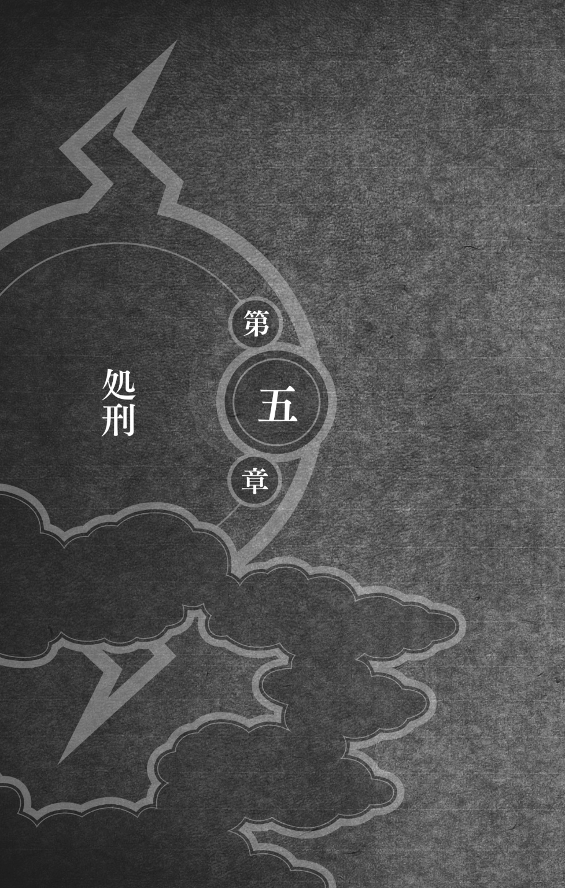
最初の処刑まで、二十分を切っていた。
この十分間、換気ダクトの中で敵を観察していて分かったことは、やつらは地上にも仲間が待機していて、すでに木ノ葉隠れの里にこの襲撃を伝えたらしいということだった。
それだけではない。
やつらは操舵室のドアを爆破し、いまや操縦士たちをも支配下に収めていた。
「お前が火影か？」リーダーの怒鳴り声が漏れ聞こえてくる。「我龍様の釈放はどうなっておる!?」
どうやら、綱手を相手に交渉をはじめたようだった。
「そんなには待てん！ あと二十分だ、二十分後には最初の処刑を行う！」
「―――」
「我々は本気だ！ もし我龍様を正午までに釈放しなければ、十分ごとに搭乗客を処刑する！」そう怒鳴りつけると、リーダーの男は操舵室から出てきて、搭乗客に言い渡した。「聞こえたとおりだ！ お前たちが生きるも死ぬも、木ノ葉隠れの腹ひとつだ！」
身を寄せ合って、小さくなっている搭乗客たちに、動揺が走った。
「どうする、カカシ？」ガイが鋭くささやいた。「下手に動けば、やつらは船を爆破してしまうぞ」
「とにかく、どうにか船の高度を下げないと......この換気ダクトは、操舵室のほうにも続いている。このまま這っていけそうだから、そっちはお前にまかせても大丈夫か？」
「お前はどうするんだ？ まずは起爆札を全部回収せねば......うっぷ！」
「わっ！ バカ、お前、こんなときに――」
ガイが盛大にゲーゲーやったせいで、食堂ラウンジを占拠している襲撃犯が、異変に気づいてしまった。
「なんだ、いまのは!?」たちまち、蜂の巣をつついたような大騒ぎになった。「うっ......なんだ、このすっぱいにおいは!?」
「うわっ、天井からなんか垂れてきたぞ！」
「天井だ！ 天井裏にだれか隠れているぞ！」
たちどころに数本のクナイが、ガガガ、と天井を突き破って、カカシの鼻先をかすめた。
カカシと、顔面蒼白のガイは、とっさに右と左へ逃れる。
間髪いれずに槍が突き上げられ、ガイの頰がザックリと切れた。
「大丈夫か、ガイ!?」
「な、なんのこれしき......うっぷ！」
いや、槍ではない。
それはつららのような、氷の剣だった。
換気ダクトを切り裂く氷剣が、どこまでも追いかけてくる。
「操舵室のほうは頼んだぞ、ガイ！」
「ま、まかせておけ......」
ふたりはたがいに背を向け、換気ダクトの中を猛烈に這い進んだ。
カカシに関して言えば、何度か体をひねって、氷剣を避けなければならなかった。まるで下から生えてくる鋭い牙のように、氷剣はぐんぐん迫ってくる。
のみならず、氷剣は前方からも襲ってきた。
「クッ！」瞬時にチャクラを練り、術を繰り出す。「雷遁・紫電！」
カカシの手から、薄紫の電光がほとばしる。ズドンッ、という衝撃音とともに、襲いくる氷剣が木端微塵に吹き飛んだ。
雷遁・紫電、それは雷切を失ったカカシが新たに修得した技である。
間一髪で、換気ダクトにあいた穴から逃れ出るカカシの残像を、氷剣が八つ裂きにした。
「!?」
落下したところは、トイレの中だった。気がついたときには、青いドレスを着た女性ともつれ合っていた。
悲鳴をあげようと開いた女性の口を、カカシはさっとふさいだ。
「シッ！」
「んんんん！」口をふさがれた女性は、どうにかカカシから逃れようとして暴れた。「んんんん......んんんん！」
「怪しい者じゃない！」
それが彼女だと気づいたのは、そのときだった。流れるような長い巻き髪、見開かれた大きな瞳は、まだ記憶に新しい彼女そのものだった。
「さっき一度会いました！」カカシは告げた。「ころびそうになったきみを、オレが受け止めた......憶えていますか？」
それで、女性もカカシのことを思い出したようだった。
「手を放しますけど、静かにしててくれますね？」
女性はおびえた眼で、こくんとうなずいた。
「オレは木ノ葉隠れの忍です」彼女の口を解放しながら、カカシは言った。「この遊覧飛行の警備にあたっていました。きみはなんでこんなところに？」
「私......」彼女は呼吸を整えながら、答えた。「やつらが襲ってきたとき、ちょうどお手洗いに入ってて......」
「そのまま隠れていたんですね？」
女性がまたうなずいた。
狭いトイレの中で、ふたりはほとんど体を寄せ合って立っていた。ほのかなラベンダーの香りが、カカシの鼻をくすぐった。
「とにかく、ここから出たほうがいい」
トイレの天井にあいた穴を見上げると、氷の剣は跡形もなく消えていた。術者が術を解いたのだ。
ガイは上手く逃げおおせただろうか？
「この穴から出よう」ためらう彼女を安心させようと、カカシはにっこり微笑みかけた。「大丈夫、すぐにとなりの厨房に出られるから」
女性が眼をぱちくりさせた。
「どうしました？」
「ううん......」慌てて眼をそらす。「行きましょう」
そこでカカシは彼女を持ち上げて、換気ダクトへ押し込んでやった。それから、自分もあとに続いた。
ふたりは這い進み、どれほどもしないうちに、ガイと換気ダクトにもぐり込んだときの入り口から厨房へ飛び降りた。乗り捨てたときのまま、ガイの車椅子がそこにあった。
女性はなにか言いかけたが、カカシはそれを制し、さっさと親指を嚙み切って、床に押しつけた。
「口寄せの術！」
ボンッ、と白煙が逆巻き、パックン、ブル、ウルシ、グルコ、シバ、ビスケ、ウーヘイ、アキノ――八匹の忍犬が、現れた。
「な、なに？」女性が眼を丸くした。「なんなの、この犬たち？」
「ここはどこだ？」ブルが呼ばわった。「おう、カカシじゃないか！ ひさしぶりだな！」
「シーッ！」カカシは人差し指を口に当てた。「お前はいつも声がでかいよ、ブル」
「そんなしょぼいかっこうをしてるところを見ると......」サングラスをかけたアキノが、ニヤリと笑った。「正式に火影になるのを、まだためらってるみたいだな、え？ カカシ？」
「しょぼくて悪かったな」犬にまで言われてるし。「それより、早速だが、力を貸してくれ」
「どうした、カカシ？」と、パックンが言った。「お前がそんなに慌てるなんて、珍しいじゃないか」
「詳しく話している暇はない。お前たちはいま、地上五千メートル上空にいる」
忍犬たちの顔つきが、一気に引き締まる。
「この船のあちこちに起爆札が仕掛けられている」カカシは矢継ぎ早に言った。「お前たち、敵に悟られずに、その起爆札を全部見つけてきてくれ」
「おう！」
パックンを先頭に、忍犬たちが、飛び出していった。
「きみはここに隠れててくれ」
そう言い残して、ふたたび換気ダクトへ戻ろうとするカカシの服を、彼女がひっぱった。「なにをする気？」
「あともう少しで、最初の処刑がはじまる」カカシは言った。「それを止めなければ」
「やつらの要求は我龍の釈放なんでしょ？」
「.........」
「お手洗いに隠れてても、あのガラガラ声は聞こえたわ」
カカシはうなずいた。
「だったら、我龍を釈放したらいいじゃない」彼女はすがるように、言った。「あなたたちが迷えば迷うほど、犠牲者は増えるわ」
「そんなわけにはいかない」
「どうして？」
「一度でもあんな連中の言いなりになったら、秩序が崩壊してしまう」
「秩序？」彼女は鼻で笑い飛ばした。「ほんの一年前まで戦争をしていたあなたたちが、いまさら秩序を語るの？」
「.........」
「ごめんなさい......」彼女は眼を伏せ、「だけど、秩序を口にする人たちは、みんな自分たちこそ正義だと思っている。戦争は、ふたつの正義が衝突して起こる。そして歴史は、戦争に勝ったほうの正義しか認めてくれない。つまり、力を持っているほうが、いつだって正義になるの」
「きみの言いたいことは、分かる。龍波武装同盟にだって、彼らなりの正義がある」
「だったら......」
「それでも、我龍を釈放することはできない」
「搭乗客全員の命と引き換えにしても？」
「オレが必ずみんなを守ってみせる――」カカシは肩をすくめた。「――そう言えれば、どんなにいいかと思うよ」
「.........」
「おそらく、オレは犠牲者を出してしまうだろう......それでも、オレは眼の前にある命を、ひとつでも多く助けたい」
彼女の眼が潤み、唇がわなないた。
「ふたつの正義が衝突したときに一番大切なことは、命をかけて相手の立場に立つことだ」ダクトへ跳び上がるまえに、カカシはそう言った。「自分の言い分を認めさせるために、無関係な者の命を平気で奪うようなやつらに、正義を語る資格はないよ」
換気ダクトを這い戻ると、カカシは格子蓋をぶち破って、食堂ラウンジ内に飛び降りた。
ガコン！
天井から現れた忍に、龍波武装同盟の忍たちはいっぺんに度を失った。数人がクナイを抜いて、カカシに向かって突進してくる。
カカシは腰を落とし、敵のクナイを腕で跳ね上げながら、素早く打撃を繰り出す。ひとりが吹き飛ぶと、すかさず次のやつに蹴りを飛ばし、息つく暇もなく、三人目に連打を見舞った。
あっという間に三人の敵が、カカシの足元に倒れた。
「ふざけやがって！」残った敵が、血走った眼で飛びかかってくる。「いっぺんにかかれ！」
彼らの動きを封じたのは、リーダーの怒号だった。
「待てい！」
敵が動きを止めた。
「持ち場に戻れ！ お前たちには、人質を監視するという任務があることを忘れるな。それに、こいつはコピー忍者のはたけカカシだ。お前たちが束になったところで敵いはせん」
カカシは周囲に眼を走らせた。倒れている者を含めて、九人。それが眼に入るかぎりの、敵の数だった。
ラウンジ中央に寄せ集められた搭乗客たちは、恐怖と期待の入り混じった顔で、事の成り行きを見守っていた。
「コピー忍者のカカシ......か」リーダーの男がニヤリと笑った。「もっとも、写輪眼を失ったいまは、ただのカカシだな」
「ま、ただのカカシにだって、できることはあるさ」
「なにぃ？」
「たとえば、お前らのような害鳥を追っ払うくらいのことはな」
「ぬかしよるわ」
「無駄なことはよせ」カカシは言った。「木ノ葉はお前たちのような無法者とは、いかなる交渉もしない」
「それはどうかな」
不敵な笑みを浮かべた敵は、無造作に搭乗客をひとり選んで、指さした。
それだけだった。
「ああ......ああ、そ、そんな......」選ばれた搭乗客の体が、見る間に氷に閉ざされていく。「な、なんだ......どうなってるんだ？」
「!?」
男は、顔に貼りつけた恐怖といっしょに、凍りついていった。
「うわあああああ！」
搭乗客たちのあいだから、悲鳴があがった。龍波武装同盟のリーダーから少しでも逃げようとして、総崩れになった。
「これでも、交渉はしてもらえないか？」
「やめろ！」
血を吐くようなカカシの叫びは、しかし、双眸に鈍い光をたたえたこの男にとっては、心地よい賛辞のようであった。満足げに眼をとじると、まるで交響楽団の指揮者のように腕をふり上げ、次の犠牲者を指さしたのだった。
指さされた男は、逃げ出そうとして、そのままのかっこうで凍てついた。
静まりかえったラウンジには、女性客のすすり泣く声以外、なにも聞こえなかった。
「まだ少し早いが、どうせそろそろ時間だ」リーダーはカカシに向き直った。「本当はひとりだけ殺すつもりだったが、はたけカカシ、お前のせいでふたりも殺ってしまったな」
「貴様......」
「もう分かったと思うが、人質にはすでに術をかけてある。オレがその気になれば、ここにいる全員をいっぺんに凍らせることができる」
「そんなことをすれば......」カカシは相手をにらみつけた。「お前たちは交渉材料を失うことになる」
「不思議なことを言うものだ」
「......？」
「木ノ葉は、我々のようなテロリストとは交渉しないのだろう？ だとしたら、我々に交渉材料があろうがなかろうが、関係ないはずだ」
「！」
「木ノ葉は交渉に応じるさ」リーダーがニヤリと笑った。「交渉に応じてもらえないときは、ここにいる全員を道連れにして、あの世まで遊覧飛行を続けるまでだ」
「グッ......」
カカシは奥歯をぐっと嚙み締めた。
「人質をひとり操舵室へ連れていって、いま見たことを木ノ葉に報告させろ」部下にそう命じてから、リーダーはカカシに顔を向けた。「はたけカカシ、お前がおとなしく我々に捕獲されるなら、人質たちは次の十分間を生き長らえることができる」
「......！」
「しかし、お前が逆らえば、オレはやるべきことをやる。オレがやるときにはやる男だということは、もう証明できたはずだ」
ふたりの視線が交差した。
この男は、本当にやるだろう。鈎爪のように構えられた相手の両手を見て、カカシは直観した。いまオレが指一本でも動かせば、こいつは間違いなく人質を皆殺しにする。
ため息をつくと、カカシは全身にまとっていた闘気を解いた。
すぐさま襲撃犯たちが飛んできて、カカシを後ろ手に縛りあげる。
さっき倒した忍が起き上がってきて、カカシの顔をこっぴどく殴りつけた。そのせいで傷のあるほうの眼尻が切れて、血が滴った。
それだけでは、終わらない。
リーダーが後ろに回り込み、縄の縛り具合をたしかめた。次の瞬間、右手の人差し指に激痛が走った。
ゴキッ！
骨の折れる音が、はっきり聞こえた。
「ぐあっ！」
思わずのけぞったカカシを摑まえると、リーダーは左手の人差し指も、造作なくへし折ったのだった。
バキッ！
「ぐはっ！」
「これでいい」背後から、満足げな声が聞こえた。「これで縄抜けもできまい」
顔から脂汗を流しながら、カカシは膝から崩れ落ちた。
「殺すなら、オレを先に殺せ！」
カカシは何度もそう叫んだが、敵に鼻で笑われただけだった。「おまえの命は、人質百人分に値する......木ノ葉との交渉で、役に立つかもしれん」
そんなわけで、十分後、カカシはふたたび処刑を目の当たりにしなければならなかった。
今度は女性だった。
きらびやかな黒いドレスを着た女性が、彼女が身につけている宝飾品のように、無機質な輝きに包まれていくのを、手をこまねいて見ていることしかできなかった。
「我龍様を釈放するか、このまま人質が死に続けるか、ふたつにひとつだ！」操舵室から届いてくる怒鳴り声に、搭乗客の全員が耳を澄ませていた。「十分以内に連絡してこい！さもなければ、次からはふたりずつ殺す！ お前たち木ノ葉のせいで、人が死に続けることになるぞ！」
くそ。カカシは臍を嚙んだ。
一分一秒が、じりじりと過ぎてゆく。せめて高度がもっと低ければ、打つ手もまだあるのだが。
どうすればいいんだ？ 焦燥感は、折られた指の痛みをかき消すほど、強かった。いったい、どうすれば――
フル回転するカカシの頭に、小さな声が直接語りかけてきたのは、次の処刑の三分前だった。
〝カカシ先生、聞こえますか、カカシ先生？〟
「!?」
〝カカシ先生？ 聞こえたら、返事をしてください。カカシ先生、飛鯱丸に乗っているんでしょ、カカシ先生――〟
〝聞こえてるぞ、いの〟いのの心伝身の術だと、すぐに分かった。〝なぜオレが飛鯱丸に乗っていることを知ってる？〟
〝リーに聞きました〟
そうか！
〝大丈夫ですか、カカシ先生？ やつらに捕まってるんでしょ？〟
〝ガイとも繫がってるんだな？ オレは大丈夫だ。それより、三分後にまた処刑が行われる〟
〝やつらに気取られないように、天井の換気口を見てください〟
カカシは言われたとおりにした。先ほどぶち破った格子蓋の陰から、ガイがひょっこり顔を出して親指を立てた。
〝カカシ先生がパックンたちに集めさせた起爆札は、いまガイ先生が持ってます〟いのの声が頭の中で鳴った。〝いまからガイ先生が敵のリーダーを襲います、その隙にカカシ先生は搭乗客を倉庫のほうへ誘導してください。綱手様が波の国に確認したところ、倉庫にある大きな箱の中身は落下傘だそうです。それを使って――〟
〝ダメだ！〟カカシはいのにそう言い、換気口のガイを眼で制した。〝ガイはあの体だ......それに、搭乗客の中に、敵がまぎれ込んでいる〟
〝！〟
〝サイはいるか？〟
〝はい、綱手様の執務室に待機してます〟
〝サイを寄こしてくれ。あいつの超獣偽画なら、搭乗客を救えるかもしれない〟
〝ただちに〟
〝それと、龍波武装同盟が、どうやってこの船に乗り込めたのかを知りたい〟
〝乗客とすりかわったみたいです〟
〝そうか......とにかくオレが騒ぎを起こして、どうにか時間稼ぎをする。あと少しで、また次の処刑時間だ〟
頭の中の、いのの声が消える。
天井の換気口に眼を走らせると、ガイがまたニカッと笑って、親指をぐっと立てた。
バカ！ カカシは眼でガイを制した。余計なことをするんじゃないぞ、ガイ！
龍波武装同盟のリーダーが足音も高らかに操舵室から戻ってくるのと、ガイの頭が換気ダクトの闇の中にひっ込むのと、ほぼ同時だった。
「そろそろ時間だ！」
搭乗客たちが、ひっ、と息を吞んだ。
「恨むなら、お前たちを見捨てた木ノ葉隠れの里を恨め！」リーダーが声高に言った。「やつらには、お前たち全員の命より、たったひとりの罪なき罪人を守るほうが大事なんだ！」
それから、虎のように、搭乗客の前をのし歩いた。
リーダーが近づくと、だれもが眼を閉じたり、身を縮めたりした。その腕がゆっくりと持ち上げられる。
「かわいそうだが、次はお前――」
ドオォオンッ！
船尾のほうで轟いた爆音が、残りの言葉を吹き飛ばした。
船体がグラリと大きく傾き、悲鳴をあげた搭乗客たちが床の上をころがった。
もちろん、バランスを崩した襲撃犯たちも、なにかに摑まって、体を支えなければならなかった。
警報ブザーが、けたたましく鳴りだす。
「なんだ!?」リーダーがわめいた。「いったいなにが起こった!?」
「船尾で出火です！」操舵室から飛び出してきた忍が、叫びかえした。「何者かが推進部を爆破したようです！」
ガイがやったのか？ カカシは眼を白黒させた。パックンが集めてきた起爆札を使ったに違いない。
「まだ仲間がいたのか？」鬼のような形相で近づいてくると、リーダーはカカシの髪を鷲摑みにした。「いったいなにをした？」
「さあね」カカシは相手を冷たく睨めつけ、「それより、早く消火したほうがいいんじゃないの？」
「ぐぬぬぬぬ......」
「浮力部の気嚢は推進部のすぐ上だ。もたもたしてると、ドカンッ、てなことになるぞ」
が、相手の顔に浮かんだ表情を見て狼狽したのは、カカシのほうだった。
「......？」
その顔からは、焦りも、怒りも消えていた。それどころか、この状況を楽しんでいるかのような、余裕すらあった。
激しい不安が、カカシの背筋を駆け上がった。
警報ブザーが鳴りやむと、搭乗客たちが、恐る恐る身を起こした。
「火は消し止められました！」様子を見に出ていた忍が戻ってきて、そのように告げた。「プロペラが二基ほどやられましたが、浮力部は無傷です。爆発によってあいた穴もすでに補修済み、滑空飛行は充分に可能です！」
「!?」
「そんなはずはない、いくらなんでも早すぎる――という顔だな」眼を泳がせるカカシを見て、リーダーは心底楽しそうに笑った。「木ノ葉が忍をこの船にもぐり込ませることは、予測できた。オレたちが、なんの対策もしてないと思うか？」
「華氷......か」
相手の顔から、ニヤニヤ笑いが消えた。
「それがお前たちの切り札なんだろ？」カカシは言った。「氷遁使いだということは、分かる。おそらく火を消したのも、爆発であいた穴をふさいだのも、そいつの氷だ」
「さすがだな、そこまでバレていたか」
「お前たちの切り札を見つけ出す前に、こっちの札をお見せするのは気が引けるが......」
相手が眼をすがめた。
「そうも言っていられないな」そう言うと、カカシは天井に眼を向けた。「ほら、上」
「!?」
見上げる敵の眼に映ったもの――それは空中で、すでにかかと落としの体勢に入っている、ガイの姿だった。
雨の日も、風の日もだったもんな......カカシの眼には、退院したあと、たったひとりで修業に励むガイの姿が見えていた。
思うように動かない右足に苛立ち、ガイはだれも見ていないところで、何度も何度も吼えた。何度も、何度も、悔し涙を流した。
それでも、けっして修業をやめなかった。リーがそばにいるときは、いつだってあのナイスガイ・スマイルでニカッと笑い、親指をぐっと立てた。いいか、リー、足なんざ体の一部だ、とガイは言ってのけた。健康そのもののほかの部位は、悪くなった足に付き合ってやることはないんだ、特に心はそんなものに惑わされちゃいけない、右足がダメでも左足がある、左足もダメなら、まだ二本の腕があるんだぞ。
お前のことを、少し見くびっていたよ、ガイ。
「木ノ葉の気高き碧い猛獣、見参！」
ドゴッ！
ガイのかかと落としが、敵の脳天に炸裂し、船体を揺るがせた。
その威力はすさまじく、床に大きな穴があいてしまったほどだった。もしも、床板下に配管スペースがなければ、敵の体はそのまま船底を突き破って、空中にたたき出されていただろう。
床下の暗闇の中で、切れた電線が、バチバチと火花を飛ばした。
「待たせたな、カカシ」
「ガイ！」
「あーいたたたたた！」
「.........」
もうもうと立ちこめる塵芥。
「と、搭乗客のみなさん......」その中から現れたのは、足の痛みのせいで涙目になっているくせに、それでもナイスガイ・ポーズでキメているガイだった。「木ノ葉の気高き碧い猛獣、このマイト・ガイが来たからには、もう安心ですよ。大船に乗ったつもりで......うっぷ！」
そして、四つん這いになって、ゲーゲー吐いたのだった。
「あぁあ、船酔いのほうもひどいのね......」そうつぶやいた一秒後、カカシは叫んでいた。「ガイ、後ろ！」
「え？」
急に上体を起こしたせいで、背後から襲いかかってきた忍の顔面に、ガイの頭突きがもろに決まった。
吹き飛ぶ襲撃犯。
「あれ......？」倒れた敵を見て、ガイが足の痛みも忘れて、きょとんとなった。「どうしたんだ、こいつ？」
しかし、その一撃が、ほかの忍の動きを封じたのは、たしかだった。抜刀してガイを取り囲んではいるが、迂闊に間合いを詰められなくなった。
「け、け、計算どぉおおおり！」と、ガイは片足でケンケン跳びをしながら、両手を腰に当ててドンッと胸を張った。「ご覧になりましたか、みなさん！ これが木ノ葉の忍の実力ですぞ！ 青春パワーに不可能なーし！」
「真っ青な顔して、噓ついてんじゃないよ、お前は......それより、いまのうちに、早く縄を切ってくれ」
「合点だ！」
ドゴンッ！
カカシのほうへ足を踏み出したガイの目の前で、床板が爆発した。巨大な拳骨に、床下から突き上げられたかのようだった。
「!?」飛びすさるガイ。
視界が、ふたたび塵芥に閉ざされる。
舞い上がった木端が、バラバラとカカシの上に降りそそいだ。
「羅氷様！」襲撃犯たちのあいだから、歓声があがった。「ご無事だったんですね、羅氷様！」
「羅氷」塵芥の中から歩み出てきたのは、彼らのリーダーだった。「それが、貴様を葬る者の名だ」
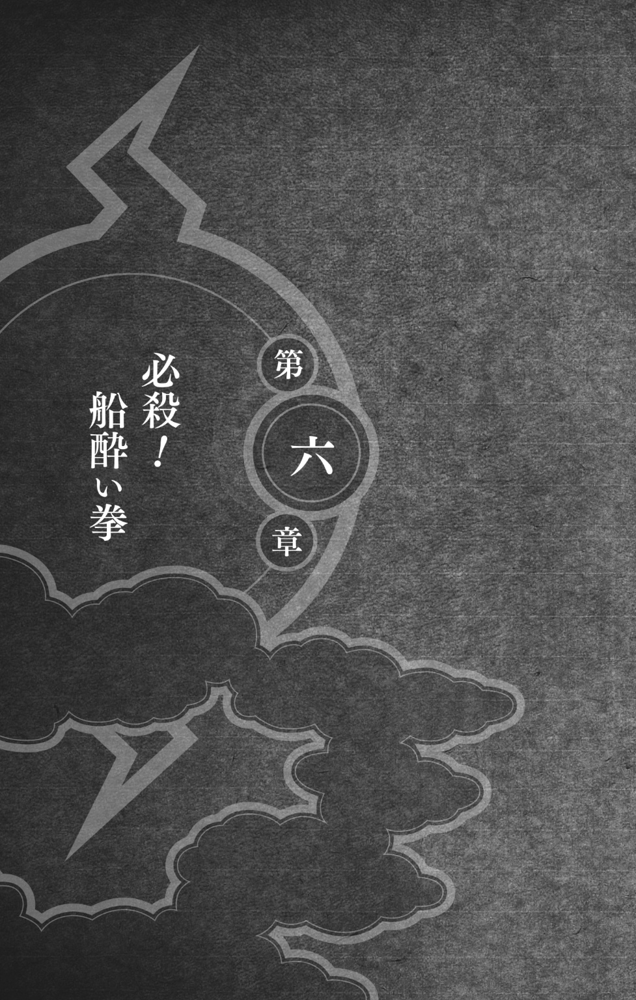
「おい、貴様！」ガイが吼えた。「オレは悲しいぞ！」
羅氷が眼をすがめた。
「貴様の気持ちは、このマイト・ガイ、よぉく分かる。いくら努力しても、いつも横からだれかが、ひょいっとおいしいところをかっさらっていく。しかも、そういうやつが、天才などと呼ばれたりするんだ」ガイは含みのある眼でカカシを一瞥し、さらに力説した。「しかし、オレを見ろ！ いまや片足しか使えないが、そんなことくらいで腐ったりはしないぞ！ コツコツと自分にできることを根気よく積み重ねていけば、オレのようにまた自分の足で立つことだってできるんだ。そして、いずれはその鼻持ちならない天才どもが、オレに助けを求めるようになるんだ。いまのこいつが、まさにいい例だ！」
そう言って、カカシをビシッと指さした。
「お前ねえ......こんなときに、なにを......」
「さあ、羅氷くん、いますぐこんなことはやめるんだ。これ以上、罪に罪を重ねるんじゃない。世の中を恨むな、恨んじゃいけない......」ガイが自分の言葉に酔うのはいつものことだが、このときも感極まって、熱い涙をとめどなく流したのだった。「さあ、きみの悩みを打ち明けてみろ。このマイト・ガイが、青春フルパワーで受け止めてやろう！」
搭乗客たちはすでに、隅のほうへ避難していた。
「それでは、受け止めてもらおうか」腰を落とすなり、羅氷は素早く印を結んだ。「氷遁・砕氷槌！」
「ガイ、自分に酔ってる場合じゃない！」カカシは叫んだ。「来るぞ！」
瞬時に間合いを詰めた羅氷の拳が、出遅れたガイのどてっ腹を貫いた。
「！」
眼を剝くガイ。
ニヤリと口の端をつり上げる羅氷。
が、次の瞬間、敵の拳が貫通したはずのガイの体が、蜃気楼のように揺らめいて消える。ガイの本体は、すでに後ろ回し蹴りを繰り出していた。
「木ノ葉旋風！」
「ぬう!?」羅氷は、とっさに身を引き、次の拳を繰り出す。「砕氷拳！」
ガイの蹴りと、羅氷の剛拳が、激しくぶつかり合った。
ガキッ！
その衝撃で閃光が走り、船室の壁がビリビリ震えた。
同時に飛びすさる両者。
カカシは固唾を吞んで、この戦いを見守った。
「あーいたたたたた！」ギプスをしたほうの足をかかえて、ガイがピョンピョン跳ねた。「ぬぬぬ......な、なんのこれしき......青春パワーに不可能なしだ！」
「お前」と、羅氷。「その足、相当悪いと見た」
「足は折れてても、心は折れてないぞ」
「ならば、その心もオレがへし折ってやろう」
「ど、どうやら、口で言っても無駄なようだな」足の痛みに脂汗をダラダラ流しながら、それでもガイは気を張った。「さあ、こい！」
「お前たち、手出しは無用だ！」羅氷が、がなった。「こいつは、オレが仕留める」
鉛色に変色した羅氷の両腕は、すでに鋼鉄と化している。カカシのいるところからでも、その両腕に集まった、すさまじいチャクラの量を感じることができた。まさに氷塊をも打ち砕く砕氷槌。食らえば、いくらガイでも、ひとたまりもないだろう。
腕をさっとふると、ガイの両手に、まるで魔法のように双襲牙――ガイ仕様のヌンチャク――が現れた。
「未だ、この双襲牙をかいくぐってオレに攻撃を当てた者はいない」
言うなり、ガイは眼にも止まらぬ早業で、双襲牙をふり回しはじめた。
ふた組のヌンチャクが、ビュンビュンと風を切りながら、ガイの体にまとわりつく。それは生き物のようでもあり、またガイの体の一部のようでもあった。
シュシュシュシュッと空気を裂き、腋にはさみ、首や胴に巻きつけ、自由自在に双襲牙を操るガイに、さすがの羅氷も瞠目した。
よし、いけるぞ！ カカシは思った。双襲牙のスピードに、そして、そんな武器を操れるガイに、羅氷が攻撃をためらっている。
しかし、いくら快調そうに見えても、ガイはやはりガイである。唐突にピタッと動きを止めたかと思うと、そのまま固まってしまった。
眉間にしわを寄せる羅氷。それは、カカシも同じだった。
「......？」
ラウンジがしーんと静まりかえり、次の瞬間、ガイの口から、嘔吐物がとめどなくあふれ出したのだった。
「!?」
「うううう......カカシ......」すがるようにカカシを見つめるガイの眼は、苦悶の涙に濡れていた。「き、気持ち悪い......足も痛い......」
こいつ、二重苦じゃないか！ カカシは仰天した。たぶん、自分がふり回している双襲牙を見ていて、船酔いがひどくなったんだ！
「ぐぬぬぬ......」羅氷の額に青筋が立つ。「コケにしやがって......」
ぐっと踏み込むなり、羅氷はガイの悪いほうの足に蹴りを入れた。
苦痛に顔をゆがめるガイ。
その頭めがけて、砕氷拳をたたき込む。
「死ね！」
が、運はまたしても、ガイに味方した。
船酔いのせいで足がもつれ、後ろに体をそらせた拍子に跳ね上がった右足が、なんと羅氷の顎を捉えたのである。
ガツッ！
ガイの右足には、大きくて重いギプスがつけられている。
その固い蹴りを食らって吹き飛んだ羅氷は、なにが起こったのか理解できずに、眼をぱちくりさせるばかりだった。
が、一番びっくりしているのは、ガイ本人のようだった。
「み、見たか......な、名付けて......」と、片足でケンケンしながら、思案した。「えっと......名付けて、ふ、ふ、船酔い拳！」
「.........」
もう好きにしてくれ......カカシは、そう思わずにはいられなかった。
「ふ、ふざけやがって......」
羅氷はギリリと歯嚙みし、烈火の如く攻撃を繰り出してきた。
新技を編み出したガイではあったが、じつのところ、やはり戦うどころではない。片足が使えないうえに、激しい船酔いのせいで、世界がゆがんで見えるほどであった。
床が水あめのようにぐにゃりとねじれ、立つこともままならない。ときどきしゃがみ込んで、ゲーゲーやった。
だから、ガイが次の攻撃を顔面すれすれでかわせたのも、カカシは偶然だと思った。
が、二度あることは、三度あった。
それどころか、四度目も五度目もあった。よろよろとしゃがみ込んでは嘔吐き、ふらつき、白目を剝いてくねくねと体をよじるガイに、羅氷は一発も攻撃を当てることができない。
こいつって......カカシとしては、二度びっくりだった。船酔い拳を使いこなしてるじゃないか！
「おのれぇ......ちょこまかと」
怒り心頭の羅氷の攻撃が、だんだん雑になってくる。それでも、三発に一発は、砕氷拳がガイをかすめるようになった。
「おい、カカシ」
小さな声に呼ばれたのは、羅氷の拳が酒棚をなぎ倒したときだった。酒瓶が床に落ちて、砕け散った。
見下ろすと、いつの間にか、パックンがそばにいた。
「起爆札は全部回収したぞ」パックンが言った。「いま縄を咬み切ってやる」
パックンがカカシの手を縛めている縄と格闘するあいだも、ガイと羅氷の戦いは続いていた。
こぼれた酒に足を滑らせて、ガイが派手にすっころぶ。
そこへ、羅氷が砕氷拳を容赦なくふり下ろす。
ガイがゴロゴロころがると、的をはずした羅氷の拳が、床にドコドコと穴をあけていった。
跳ね起きたガイは反撃に出たが、大ぶりしたその拳は、ことごとくかわされただけでなく、ついに敵に懐に飛び込まれてしまった。
「これでキメる！」体を沈めた羅氷の眼が、ギラリと光った。「砕氷拳！」
剛拳が、ガイの腹を捉えた。
ドスッ、という鈍い音が響き渡り、ガイの体が宙に浮く。眼玉と、体の中の空気が、いっぺんに飛び出した。
勝利を確信した羅氷が、ニヤリと笑った。
ガイの体から飛び出したのは、しかし、空気だけではなかった。
「うっぷ！」
「！」
気がついたときには、ガイの口からプシャーッと勢いよく噴き出したものが、羅氷の顔面を直撃していた。
「ああ......悪い、悪い」ガイが恐る恐る、言った。「ちょっとかかってしまった......ようだな？」
「こ、殺す......」顔からすっぱいものをボタボタ滴らせながら、羅氷が吼えた。「うおおおおお！」
連打の嵐が、ガイを襲った。
蹴り、突き、掌底、肘、膝、拳――相手を痛めつけるために使えるところは、全部使わなければ割に合わないとばかりに、羅氷は打って、打って、打ちまくった。
「ガイ！」
すでにパックンの牙によって切れかけていた縄を、カカシは力まかせに引きちぎった。
「オレたちの用はもう済んだのか、カカシ!?」
「ありがとう、パックン......今度、みんなに美味い肉をおごるよ！」
ニヤリと笑ったパックンが、ドロン、と白煙にまかれて消えた。
床を蹴って舞い上がったカカシの手に、チャクラが一気に流れ込み、バチバチバチと紫色に放電する。折られた指に激痛が走ったが、そんなことは、どうでもよかった。
「!?」異変に気づいた羅氷が、血走った眼をこちらに向ける。「お前、いったいどうやって......」
崩れ落ちるガイの陰から、カカシは飛び出した。
「紫電！」
敵は反応しきれない。
が、渾身の紫電をたたきつけることは、けっきょくできなかった。
シュッ！
空気を切り裂く音に、反射的に体を開く。銀色に輝くクナイが、カカシの頰をザックリと切り裂いた。
「!?」
着地するなり、バック転で逃れる。
追いかけてくるクナイが、カカカッ、と床に突き刺さった。刺さったとたん、あっという間に溶けて消える。
クナイじゃない......体勢を低く保ったまま、カカシは新手をにらみつけた。換気ダクトの中で襲ってきた氷の牙と同じものだ！
「華氷！」羅氷が叫んだ。「なにをしてるんだ！ お前は姿を見せぬ手はずだろ！」
「私が氷剣を飛ばさねば、兄上はやられてました」白い忍装束に鈎模様のある面をつけた新手は、カカシに向き直った。「すぐ殺すには惜しい男......はたけカカシ、お相手願おう」
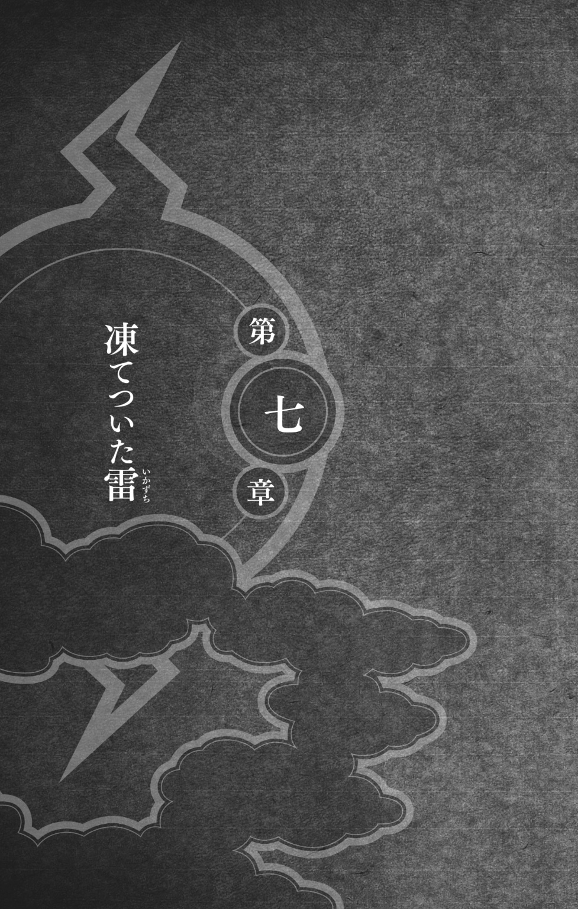
「氷遁・地鎖連氷！」
華氷が印を結び、手のひらを床にたたきつける。
氷の結晶が、蛇のようにカカシのほうへのび出す。結晶は、たちまち巨大なつららとなって、牙を剝いた。
カカシも、すかさず応じる。
「紫電！」
床に手のひらをたたきつけた。薄紫の電流が、大量の酒がこぼれている床を伝い、バチバチと爆ぜながら、氷の牙を迎え撃った。
ドオオオオオンッ！
はげしく衝突した氷と雷が、船を揺るがすほどの大爆発を引き起こした。
悲鳴をあげる搭乗客たち。
爆風に吹き飛ばされたグランド・ピアノが、逃げ遅れた子供に襲いかかる。その男の子をさっと抱き上げて宙に舞い上がったのは、折れた足もなんのその、青春パワー全開のガイだった。
ピアノが壁に激突すると、天井のシャンデリアが大きく揺れた。
泣きじゃくる男の子を母親に戻したガイが、ギロリと羅氷をにらみつけた。
「やっぱりお前たちは、口で言っても分からんようだな」
「はっはっは！」羅氷が笑いながら突進してくる。「面白くなってきたぞ！」
拳と拳、蹴りと蹴り――ガイと羅氷の戦いは、五分と五分のまま、手数だけがどんどん増えていった。十手、二十手、三十手と、激しくぶつかり合った。
「お前は......」カカシは自分の敵に向き合った。「二か月前に、我龍の身辺警護をしていたやつだな？」
「お前たち木ノ葉に勝てるとは、思っていない」
「.........」
「しかし、命を投げ出せば、私たちのメッセージはきっとだれかに届く」華氷は静かに言葉を継いだ。「そして、次はそのだれかが動く。そうやって、私たちの意志は受け継がれてゆく」
「我龍はただの理想主義者だ。理想主義者の厄介なところは、その理想のためなら、世界をも焼き尽くしてしまうことだ」
「こんな世界など――」
「滅んでしまえばいい」
「.........」
「そう言いたいんだろ？」カカシは敵に半眼を据えた。「うちはマダラも、そしてオレの親友だった男も、たぶん、そう考えていた。だけど、じつはやつらが一番この世界を愛していたのだと、オレは思っている」
仮面の下で、華氷が眼を泳がせたように感じられた。
「ナルトから聞いたよ、お前は波の国のせいで子供を失っているんだろ？」
「......！」
「だったら、世界なんか滅びてしまえと思うのも無理はない」カカシは言った。「忍なんかやってれば、だれでも愛する者の死に、いずれ直面する」
「薄氷は......息子は、戦で命を落としたのではない！」
「.........」
「薄氷は......薄氷は......波の国のやつらに殺されたんだ！」
「だから、お前は波の国に復讐を誓ったのか......？」
「忍としての死は、忍自身が選んだものだ！」華氷が吼えた。「忍になる時点で、死ぬ覚悟はできている......私は......私と兄上は、薄氷にそんなふうに生きてほしくなかった。だから抜け忍となって、波の国に身をひそめた。だれも傷つけることのない、静かで、争いのない生活を望んだだけなのに......」
「お前は間違っている」
「......!?」
「生きているかぎり、オレたちは戦い続けなければならないんだ」カカシは言った。「忍だろうが、ふつうの人だろうが、そんなことは関係ない。クナイをふり回すのも、札束をふり回すのも、同じことなんだよ。生きていくことそれ自体が、いつでも命がけの戦いなんだ」
「うわあああああ！」華氷が奇声をあげて、突っ込んでくる。「お前に、なにが分かる!?」
「......！」
繰り出される攻撃を、カカシは冷静にさばいてゆく。敵の拳が空を切り、ブロックされ、蹴りはカカシの残像を割った。
「仲間の死と、血を分けた子供の死はまったく違う！」
カカシは身をかがめ、華氷の回し蹴りをかわす。
「仲間を失った悲しみなど、いずれ時が解決してくれる！」
肘打ちを、掌底で押し上げる。
「お前なんかに、子を殺された親の気持ちが分かってたまるか！」
突き出された拳を、カカシはガシッと摑んだ。「だったら、なぜ他人の子供の命を奪おうとする？」
「!?」
先ほどガイが助けた子供が、おびえた目でこちらを見つめていた。
「お前たちが処刑した人たちだって、だれかの子供だろ」カカシは言った。「お前のその悲しみは、たとえ世界を滅ぼしても、消えてなくなりはしないよ」
「うわああああああ！」カカシをなぎ払うと、華氷は床に手のひらをズンッとたたきつけた。「氷遁・地鎖連氷！」
「！」
それまでとは比べものにならない巨大なつららが、華氷を取り囲むようにして、広がっていった。
それはさながら、感情を凍りつかせるために華氷が咲かせた、大輪の氷の花のようだった。
氷の牙は、バック転で逃れるカカシだけでなく、羅氷や、ガイや、搭乗客たちにも襲いかかった。
ぐんぐんのびてゆく氷の花弁は、天井を刺し貫き、床板をめくり上げ、船体の壁にその尖った切っ先を押しつけた。
「やめろ、華氷！」叫んだのは、羅氷だった。「まだ海の上だ！ こらえろ、華氷！」
すっかり我を忘れている華氷の耳には、しかし、兄の声は入らない。それどころか、一段とチャクラを発散させて、氷の花に勢いをつける。
羅氷はつららを跳び越え、華氷の腹に鉄拳をたたき込まねばならなかった。
ドスッ！
気を失い、羅氷の腕の中に倒れ込む華氷。
が、ほんの零コンマ数秒、遅かった。
ドガンッ！
華氷が気を失うのと同時に術も解けたが、氷の花は雲散霧消するまえに、船体に大きな穴をあけてしまったのだった。
空気は、気圧の高いところから、低いところへと流れる。上空五千メートルの希薄な大気が轟音を立て、一気に食堂ラウンジ内の空気を吸い出そうとするのは、物事の道理であった。
「!?」
搭乗客たちが、船体にあいた穴から、次々に吸い出されてゆく。皿やフォーク、ナイフにスプーン、床に散らばった木端や割れた酒瓶、それから、遊覧飛行のために持ち込まれた数々の調度品とともに。
ほとんどのワイヤーが切れたのだろう、シャンデリアはいまや、残った一本でかろうじて天井にぶら下がっている状態だった。
搭乗客の悲鳴を、ゴウゴウとうなる風がかき消す。
羅氷は華氷を抱いたまま、近くの柱に摑まり、風圧に持っていかれそうになる体を、かろうじてつなぎ止めていた。
「ぬおっ！」ガイの体が宙に浮く。
「ガイ！」カカシは身を投げ出してガイの手を摑まえたが、折れた指のせいで、力が入らない。「くそ！」
それでもどうにか、壁の破れ目から飛び出ている送電線を摑まえる。そのせいでガイを摑まえたまま、船外へと飛ばされる形になった。
「うわっ！」
まるで破れた旗のように、カカシとガイの体が風にいたぶられる。上下左右が恐ろしい速さで入れかわり、何度も船体にたたきつけられた。
「カカシ、手を放せ！」ガイが吼えた。「このままじゃ、お前も落ちてしまうぞ！」
「あ、暴れるな、ガイ......」
「ええい、放せ！ オレなら大丈夫だ！ これしきの高さ、青春パワーをもってすれば、どうってことない！」
「ね、寝言は......寝てから言うものでしょうよ」
ガイを摑まえている手も指が折れているなら、送電線を摑まえたほうの手の指も、やはり折れている。
どんなに力を込めても、ズルズルと手の中から逃げ出そうとする送電線を、カカシはどうすることもできなかった。
〝カカシ先生？ 聞こえてますか、カカシ先生？〟
いのの呼びかけに応答する余裕など、あるはずもない。
落下してゆく搭乗客が、眼の端をかすめる。カカシの眼の端をかすめたのは、しかし、それだけではなかった。
〝記念式典会場の近くで、やつらに襲われた人たちが保護されました〟
まるで木の葉のように吹き飛ばされていく、白い花びらのようなもの――
〝カカシ先生、聞こえてますか？ 波の国がたったいま、襲われた人たちの情報を綱手様に知らせてきました〟
その表面に鈎模様が見えたとき、カカシはそれが華氷の仮面だということに気づいた。
ほとんど真横に吹き流されながらも、カカシは華氷をどうにか捜し当てた。食堂ラウンジの奥で羅氷に抱かれ、ぐったりしている華氷を。
風に巻き上げられた、長い巻き髪――
〝カカシ先生？ 龍波武装同盟に襲われた十二人の内訳は、男性が十一人と女性がひとりです......聞こえてますか、カカシ先生？ やつらに襲われたのは、男性が十一人と――〟
「!?」
その瞬間、全てが消え失せた。
音も、風も、時間までもが。
ついに送電線が手から滑り抜け、ガイとともに落下していくカカシが最後に眼にしたもの――
〝――女性がひとりです〟
それは、あの青いロングドレスの女だった。
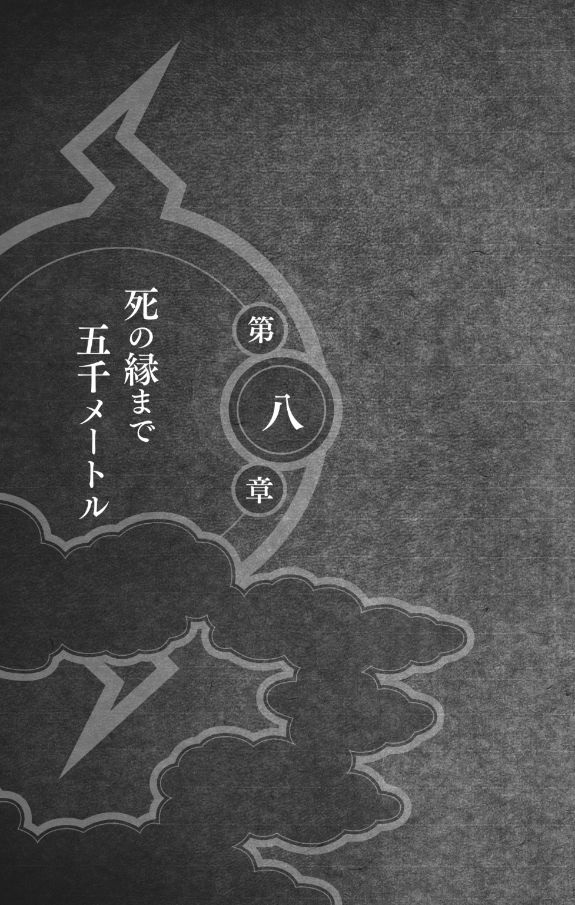
天空に投げ出されたカカシのまわりには、同じようになす術もなく落下してゆく搭乗客が散らばっていた。
ガイと眼が合う。
うなずきかけてくるガイを見て、やつもまた死を覚悟したことを、カカシは悟った。
いくら忍といえど、高度五千メートルから地上にたたきつけられれば、行き着くところはひとつしかない。
くそ......
眼を閉じると、青いロングドレスを着た華氷が見えた。
あなたたちが迷えば迷うほど、犠牲者は増えるわ――厨房に隠れていたとき、彼女はすがるような眼でそう言った。
お前なんかに、子を殺された親の気持ちが分かってたまるか！ ――仮面の下で、彼女は全身でそう叫んだ。
オレになにができた？ 彼女になにをしてやれた？ そこまで考えて、ふと可笑しさが込み上げてきた。よそう......もう終わりだ。
死がついに――訪れる。オビトや父さんや、戦の中で散っていった仲間たちのところへ、オレも行くんだ。
だから、体が重力に逆らってふわりと浮かび上がったとき、カカシにはなにが起こったのか、分からなかった。
「......？」
「間に合ってよかった」
眼を開けると、自分を見下ろしているサイが、にっこり笑った。
「忘れたんですか？ カカシ先生が、ぼくを呼んだんでしょ？」
「！」
ガバッと身を起こす。
そこは、サイの描いた鴻の背の上だった。
上下左右を見渡す。
はるか上空の飛鯱丸の下で、超獣偽画の鴻の大群が、まるで黒い雲のように旋回していた。
鴻の足にぶら下がっているガイが、ニカッと笑って親指を立ててくる。それから、悪いほうの足を持ち上げた。ギプスの足の裏には、〈青春〉の二文字があった。
飛鯱丸から投げ出された搭乗客たちも、ある者は鴻の背にしがみつき、ある者は嘴にくわえられ、またある者は鴻の足にガッチリと摑まれている。
「大丈夫です」サイが言った。「全員救助しました」
「いま、高度がどれくらいか、分かるか？」
「そうですねえ......」飛鯱丸を見上げるカカシの視線を、サイが追った。「ざっと五千五百か、六千メートルでしょうか」
食堂ラウンジの調度や人々が投げ出されたぶん、飛鯱丸は身軽になっている。カカシは考えた。おそらく、そのせいで少し高度が上がっているんだ。
午前中には雲ひとつなかったが、いまや数切れの黒い雲が、西のほうから流れてきている。空気はかすかに、水のにおいをはらんでいた。
「襲撃犯の身元は分かってるのか？」
「いいえ。綱手様がほうぼうに当たっているのですが......」
「主犯は、羅氷という男だ」少しためらってから、付け加えた。「それと、その妹の華氷」
サイが、うなずいた。
カカシは、上空に浮かぶ、飛鯱丸を見上げた。
進路は、西北西。
そっちになにがある？
カカシは、頭をフルに回転させた。
龍波武装同盟の要求は、我龍の釈放。人質と引きかえに、やつらは目的を果たそうとしている。
しかし、当然、木ノ葉がそう簡単に取り引きに応じるとは、考えていないはずだ。だとしたら、やつらは交渉が決裂した場合に備えて、ほかに手を打っているかもしれない。
やつらの切り札は、華氷だ。それは、間違いない。
自ずと答えが出た。
「やつらは鬼燈城へ向かっている」カカシは口を開いた。「木ノ葉につっぱねられた場合に備えて、上空から我龍を救出する作戦だ。鬼燈城の守りを固めるんだ」
「......！」
華氷の術を使って、我龍を上空へ押し上げる。地鎖連氷のつららを使えば、充分に可能だ。あとは飛鯱丸で我龍を回収するだけだ。
〝いの〟カカシは心の中で、呼びかけた。〝聞こえるか、いの？〟
〝聞こえます〟すぐに返事があった。〝ご無事でなによりです、カカシ先生〟
〝飛鯱丸は鬼燈城へ向かっている〟
〝！〟
〝たぶん、やつらは我龍を空から救出するつもりだ〟
〝分かりました、すぐ綱手様に知らせます〟
「サイ」
「はい」
「オレを飛鯱丸に戻してくれ」
「.........」
「胸騒ぎがする」カカシは言った。「それに、残ってる人質を、ほうってはおけない」
上昇気流に乗って、サイの鴻は雨雲を突き破り、またたく間に飛鯱丸の上空へ出た。
船体にあいた穴は、すでに氷がふさいでいる。華氷の地鎖連氷によってできたつららが、あふれんばかりに垂れ下がっていた。
彼女は無事だ。
ホッとすると同時に、カカシは気を引き締めた。
それにしても、空気が薄い。
約六千メートルというサイの読みは、たぶん正しいだろう。飛鯱丸への侵入口を探しながら、カカシは計算した。七千メートルくらいまでなら、たとえ空気を圧縮して船内の気圧を上げなくても、搭乗客がすぐに意識を失うことはない。
が、酸素が足りなくなるのは、時間の問題だ。しかも、カカシの見るところ、飛鯱丸は少しずつ上昇している。
操舵室の計器類が壊れたのかもしれない。だから、操縦士は機体の上昇に気づかないのか――
「あそこ」サイが指さした。「客室のゴンドラの上に、穴があいてます」
カカシはサイの指し示す方角へ、身を乗り出した。流れゆく雲の切れ間から、侵入口を見きわめようとした。
気嚢の下部、ちょうど鯱の胸びれの付け根のあたりに、人ひとりが抜けられる穴があいていた。
「よし、あそこから侵入する」
サイがうなずくと、鴻は翼を傾け、空を斜めに滑り落ちて穴のそばでピタリと止まった。
木ノ葉隠れの里、火影執務室では、綱手が三面六臂の働きで采配をふるっていた。
「シズネ、波の国からはまだ連絡がないのか！ いのの報告では、リーダーは羅氷と華氷とかいうやつららしい。それを伝えて、このふたりの身元を洗わせろ！ シカマル、鬼燈城のほうはどうなってる？ 囚人たちが不穏な動きを見せたら、構わん、ただちに制圧！サクラは医療班を組織して、ただちに鬼燈城へ向かえ！ シズネ、暗部を待機させておけ！」
それから眼を閉じ、心の中で念じた。
〝いの、カカシはいまどうなってる！〟
〝サイからの報告では、また飛鯱丸へ潜入したそうです〟
執務室のドアが、バンッ、と開き、サイの肩を借りたガイが飛び込んできた。
「綱手様！ マイト・ガイ、ただいま帰還いたしまし――」
ゴンッ！
綱手の剛拳が、ガイの脳天に炸裂した。
「おお......おおおお......」
「ガイ、貴様ぁ......」綱手は、頭を押さえて悶絶するガイの胸ぐらを摑んで、ユッサユッサとゆさぶった。「任務をほったらかして、飛鯱丸に乗ってたそうだな！」
「いえ、そんな......め、め、滅相もない！ じ、じつは......えー、じつはですね......あっ、そうそう、足の具合が悪くてですね......かかりつけの医者が波の国にいるもんですから......そうそうそうそう！ で、たまたま病院への通り道に飛鯱丸が――」
「貴様ぁ......そんな噓をぬけぬけと」
「綱手様、いまはそれどころではありません！」拳を固めて、ガイの頭に二発目を見舞おうとした綱手を、シズネが後ろから羽交い絞めにした。「岩隠れのオオノキ様より無線が入っております！」
「そ、そうですぞ、綱手様！」ホッと胸を撫で下ろすガイ。「いまは飛鯱丸のことが先決ですぞ！」
「うぬぬぬ......ガイ、お前は敵の人相を描いておけ」それから、執務机に置かれた無線機に向き合った。「なんだ、土影？」
「挨拶もなしか、綱手姫？」無線機がオオノキの声を吐き出す。「まあ、いい......それより、お前の国の上空にぽっかり浮かんどるもん、ありゃ波の国が極秘に開発しとった船じゃろ？」
綱手は言葉に詰まった。
「おいおい、ワシらも忍じゃぜ。綱手姫ともあろう者が、まさかあんなドでかいもんを、隠しおおせるとは思っとらんかったじゃろ？」
「岩隠れから......見えてるのか？」
「岩隠れだけじゃない。ほかの里も、気づいとるはずじゃぜ。ただ、第四次忍界大戦をともに戦った仲間に敬意を表して、どこも見て見ぬふりをしとるだけよ。あの船の警護は、木ノ葉の極秘任務らしいからのお」
「この両天秤じじいが......」
「しかしワシも、まさかあんなでかいもんとは、思いもせんかったわ」
「こっちはいま忙しいんだ！」綱手が怒鳴りつけた。「さっさと用件を言ったらどうだ！」
「やれやれ、若いもんはせっかちでいかん」無線機からため息が漏れた。「それじゃ、言おう。数日前、狼哭の里に見慣れぬやつらが現れ、青火粉を大量に仕入れていったそうじゃぜ」
「!?」
「知ってのとおり、狼哭の里は、薬師の里......やつらが練成する青火粉の爆発力は、起爆札の数倍はあるんじゃぜ」
「なにが言いたい？」
「ワシらは、その青火粉を追っとった。あんなもんを岩隠れに持ち込まれたら、たまったもんじゃないからな......まあ、それはさておき、どうやらいま空の上にぷかぷか浮かんどる船に、その青火粉が積み込まれたようじゃぜ」
「！」
「波の国は、あの船を使って、運輸業界に旋風を巻き起こそうとしとる」土影は声をあらためた。「しかしな、綱手姫、技術の革新には、いつだって裏の面があるんじゃぜ。だれかが麻酔薬を作ったら、だれかがそれを麻薬に作りかえる。だれかが料理包丁を作ったら、だれかがそれを使って人を斬ってみようとする――」
「だれかが空飛ぶ船を作ったら、だれかがそれを使って空からの戦を仕掛ける......か」
「ほかの忍び里が、いまのところ黙っとるのは、あの船の進路を見きわめようとしとるからじゃぜ。もし、あの船が岩隠れの方角へ鼻面を向けとらんかったら、ワシだって黙っとったわ」
「.........」
「よく聞け、綱手姫」オオノキが言った。「いま、あの船の中でなにが起こっとるのか、ワシは詮索するつもりはない......だがな、もしあの船がこのまま進路を変えずに、まっすぐ岩隠れの里に飛んでくるようなら、ワシは撃ち落とすぜ」
カカシの読みが正しければ、飛鯱丸は草隠れの里の鬼燈城へ向かっている......綱手は考えた。そして、その鬼燈城は、草隠れと岩隠れの境にある。
「船は草隠れに向かっている」綱手は無線機をにらみつけた。「万一、草隠れを通過するようなら、私が撃ち落とす」
執務室に緊張が走った。
「それを聞いて、安心したぜよ」通信を切りあげる前に、土影が言った。「青火粉をどっさり積んだ船に、頭の上でうろちょろされるのは、あまり気持ちのいいもんじゃないからな」
あの両天秤じじいのことだ、これしきのことで安心などするはずがない......沈黙した無線を前に、綱手はしばし思案した。おそらく、ただちに草隠れとの境に、手練れを配置するだろう。
ガイ、サイ、サクラ、シズネ、キバ、シノ、それに暗部の面々――口を開く者は、だれもいなかった。
ザ――ザザ――ザ――
雑音を長々と響かせたあとで、無線が息を吹きかえす。
「火影！」苛立たしげな男の声が、執務室に響き渡った。「我龍様はまだ釈放されんのか!?」
「......羅氷か？」
一拍の間のあとで、羅氷が鼻で笑った。「もうバレちまったのか......」
「進路を変えろ、羅氷」綱手は声を張った。「このままだと、飛鯱丸は撃ち落とされるぞ......木ノ葉がやらなくても、ほかの里が黙っちゃいない。いまなら、まだ間に合う。波の国に引きかえせ」
「飛鯱丸の行先は、オレが決める」
「話を聞け――」
「黙れ！」
「......！」
「いますぐ我龍様を釈放しろ！ 三分だ......三分経っても、我々の要求が聞き入れられぬ場合は、処刑を開始する！」
無線が、ガチャッ、と乱暴に切れた。
三分......綱手はギリリと奥歯を嚙み締めた。そのあいだに、カカシひとりに、いったいなにができる？
かといって、我龍を釈放するわけにはいかない。羅氷のような、ならず者どもの要求に屈したら、木ノ葉は五大国の中での立場を失う。仕事の依頼が減り、里の者が餓えることになる。
くそ、いったいどうすればいいんだ......？
重苦しい静寂の立ち込める執務室に、外のどよめきが届く。
「おい、見ろよ！」窓辺へ駆け寄ったキバが、空を指さして声を張りあげた。「飛鯱丸が見えるぜ！」
いつの間にか、空には暗雲が垂れ込めている。その下を、巨大な鯱が、ゆっくりと西へ向かっていた。
な、なんだ、あれは!? 往来をゆく里の者たちが、びっくり仰天して叫んだ。でっかい魚が空を飛んでるぞ！
「サイ」綱手は組んだ両手に顎を乗せ、眼を閉じた。「飛鯱丸は、あとどれくらいで鬼燈城に着く？」
「上空は追い風でしたので......」サイが言った。「このままだと、二十分ほどで」
「綱手様......本気ですか？」サクラがおずおずと切り出した。「飛鯱丸を撃ち落とすって......まだカカシ先生が中にいるんですよ!?」
永遠とも思えるほどの沈黙が流れた。
カッと眼を見開くと、綱手は毅然と命じた。
「サイは上空で待機！ いのに、土影が言ったことをカカシに伝えさせろ！ それから、ナルトに気取られぬよう、全員ただちに鬼燈城へ向かえ！」そして、言った。「万一、飛鯱丸が鬼燈城を素通りするようなら......たとえ風に流されただけでも、即刻撃ち落とせ！」
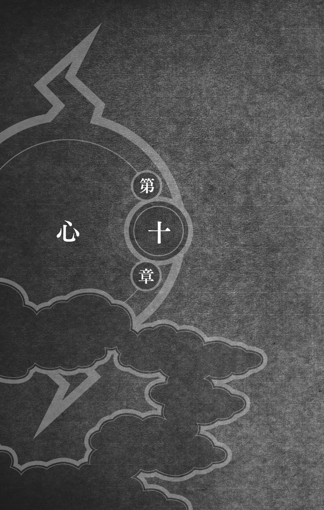
いのが土影の意向を伝えてきたとき、カカシは換気ダクトの中を這い進んでいた。もう少しで、操舵室の換気口という場所にいた。
〝また処刑が再開されます......あと二分ほどで〟
が、処刑の再開と同じくらいカカシの心を占めていたのは、この船に積まれているという、青火粉の存在だった。
くそ、やつらはいったい、どこに青火粉を隠しているんだ!?
〝カカシ先生、すぐにその船から逃げてください......綱手様は本気です、なにかあったら、本気で飛鯱丸を撃ち落とすつもりです〟
〝ありがとう、いの〟ダクトの中を這い進みながら、カカシは答えた。〝だけど、そんなわけにはいかないよ〟
〝でも！〟
〝お前がオレのことを心配してくれているように、この船に取り残された人たちにも、どこかで心配してくれている人がいる〟
〝.........〟
〝そんな人たちを簡単に見捨てるようじゃ、オレは火影になっても里の人たちを守れないよ〟
換気口から飛び降りると、カカシは流れるような早技で、操舵室を見張っていた敵を、音もなく打ち倒した。
操縦士が、ふたりとも驚いたような顔でふりかえった。
「シッ！」カカシは人差し指を口に当てた。「木ノ葉の忍です」
操縦士たちが、うなずいた。彼らの前方の大窓には、灰色の雲海が広がっていた。
「落ち着いて、できるかぎりこのまま高度を保ってください。もし敵に高度を下げろと言われても、なんとかごまかして、絶対に高度を保ってください」
カカシがこう求めたのには、理由がある。
もし本当に青火粉がこの船にあるとしたら、敵はおそらく鬼燈城を爆破するために用意したはずだ。
地上に待機している龍波武装同盟が、その混乱に乗じて我龍を救出する。
たぶん、青火粉は、鬼燈城の上空から投下されるだろう。つまり、命中率を上げるためには、どうしても船の高度を下げなければならないのだ。
食堂ラウンジのほうからどよめきが聞こえた。
「......!?」
「助けてください！」泣き叫ぶ、女の声だ。「この子は......この子は、生まれつき喘息持ちなんです！」
足音を忍ばせてラウンジに近づくと、カカシは柱の陰に身をひそめた。
「でも、どうしても飛鯱丸に乗るんだって楽しみにしてて......お願いします！ 処刑するなら、私を処刑してください......その代わり、その代わり......この子だけは、助けてください！」
ゼエゼエ喘いでいる子供を、母親と思しき女性が抱きかかえていた。よくよく見てみると、それはピアノに押しつぶされそうになったところを、ガイが助けてやった男の子だった。
華氷が船体に穴をあけたせいで、船内の気圧が一気に下がって、空気が薄くなった......カカシは理解した。そのせいで、発作を起こしたのか。
四方にさっと眼を走らせる。どうやら、あの騒ぎで、搭乗客の三分の一ほどが、船外に放り出されたようだ。
十二人いたはずの敵は、いまは七人に減っている。さっき操舵室で倒したやつが眼を覚ませば、八人か――
「さっきの騒ぎで、お薬を落としてしまったんです！」母親は、必死に訴えかけた。「このままだと、この子は息ができずに死んでしまいます！」
が、羅氷はなんの感情もない冷たい眼で、親子を見下ろすばかりだった。
「お願いします！ お願いします！ どうか、どうか......」
「そのガキひとりのために、船を着陸させることはできん」
「！」
「お前は波の国の人間だろ？」羅氷が尋ねた。「仕事はなにをやっている？」
「しゅ、主人は医者を......」
「医者か！」その顔が、残酷な喜びに輝いた。「オレの甥っ子はな、波の国の医者に見捨てられて死んだ......ほら、いまお前らのそばに立っている、オレの妹の子だ」
苦しげに喘ぐ息子を抱いたまま、母親は涙に濡れた眼で、華氷を見上げた。
華氷はじっと顔を伏せていた。
「これも因果応報だな」そう言って、羅氷が肩をゆすって笑った。「今度はオレたちが、お前の子を見捨てる番だというわけだ」
耳障りな笑い声を聞きながら、カカシは華氷にひたと半眼を据えた。
華氷は動かない。長い巻き髪が、仮面をつけていないその顔に、深い影を落としていた。
柱の陰から歩み出る前に、カカシは窓の外をよぎる鳥の影を認めた。
「その子を助けてやれ」
「はたけカカシ!?」羅氷が、殺気をみなぎらせた。「貴様、また性懲りもなく......」
「華氷」カカシはそれを無視して、呼びかけた。「お前はさっきオレに言ったな、『お前なんかに、子を殺された親の気持ちが分かってたまるか』と......だけど、お前には分かるはずだ」
華氷の体が、ビクッと強張った。
「頼む、その子を助けてやってくれ」
「バカか、お前は！」羅氷が怒鳴った。「今度こそ、あの世へ送ってやる！」
「黙れ」
「！」
カカシの眼力に圧されて、羅氷が固まった。
「船を着陸させる必要はない」カカシは華氷に眼を戻し、「オレの仲間が、この船について飛んでいる。そいつに、この子をあずけるだけでいい――その代わりに、オレが処刑されてやる」
長い髪の下から、華氷がにらみつけてくる。
「だったら、まずお前が死んでみせろ」横から口を出してきたのは、またしても羅氷だった。「ガキを釈放したとたん、お前の気が変わらないともかぎらん」
「.........」
襲撃犯たちが、下卑た声で笑った。
カカシは躊躇しなかった。一瞬にしてチャクラを右手に集め、紫に放電する手刀を、自分の首筋にたたきつけた。
羅氷が、ハッ、と息を吞む。
が、一番驚いたのは、カカシ本人だった。
「......!?」
たしかに、紫電を発動した。なのに、手刀はぴしゃりと首を打っただけで、血も出なければ、首がゴロンともげることもなかった。
白熱していた右手が、たちまち冷えてゆく。
それどころか、足元から白い冷気が立ちのぼり、血管の中を氷の棘がこすっているかのような痛みが、全身に走った。
氷がビキビキビキと足を這い上がってくる。
「!?」
カカシはとっさにチャクラを全身に巡らせた。すると、すでに膝まで這い上がってきていた氷が、たちまち雲散霧消した。
「お前が死ぬ必要はない」華氷が静かに言った。「この子は助ける」
「おい、華氷、勝手は許さん――」
「兄上は黙ってて！」
「......！」
「無差別殺戮が、私たちの目的じゃないはず」兄の横槍を吹き飛ばした華氷は、カカシの眼を覗き込んだ。「それに、あなたにはもうなにもできない」
「いつだ？」注意深くチャクラを練りながら、カカシは訊いた。「いつオレに術をかけた？」
「はじめて会ったときに」
「！」
飛鯱丸に乗るために、青いドレスの裾を持ち上げて駆けてくる華氷――つまずいた彼女を抱きとめたとき、オレはもう術中にハマッていたのか。
華氷は親子に近づき、母親にうなずきかけ、子供を抱き上げた。
そのとき、カカシの眼に映っていたのは、まるで我が子を抱くように、ゼエゼエと喘ぐ男の子を見つめる、華氷の悲しい横顔だった。
彼女が腕をひとふりすると、船体の穴をふさいでいた氷に、人ひとりが通れるくらいの亀裂がすうっと入った。
船内はすでに船外と同じ気圧になっているので、もうだれも吸い出されはしない。
冷たい風といっしょに現れたのは、超獣偽画の鴻の背に乗ったサイだった。サイはいつでも攻撃できるように身構えながら、鴻を氷の亀裂に寄せた。
男の子を差し出しながら、華氷が言った。「次にお前を見かけたら、人質を殺す」
「.........」
サイは無表情に彼女を見つめかえし、それから身を乗り出して、無言で男の子を受け取った。
ふりかえった華氷は、母親に言った。
「さあ、あなたも」
涙で顔をぐしゃぐしゃにした母親は、ありがとうございます、ありがとうございます、と連呼しながら、サイに手を取ってもらい、船外の人となった。
「そ、そりゃ不公平だぜ！」ラウンジに取り残された者のあいだから、不平不満が漏れた。「なんであの親子だけ特別扱いするんだ？ だったら、オレも病気の子供を仕込んでおけばよかったぜ！」
氷の亀裂をふさいだ華氷は、そちらを見もせずに、また腕をさっとふる。
「どうせ、処刑の時間だ」
文句を言っていた男が、足元からビキビキビキと凍りついていった。それからはもう、だれも口を開こうとはしなかった。
「お前にかけた地鎖連氷を発動した」華氷はカカシに向き合った。「凍りつきたくなければ、ずっとチャクラを練って、その熱を全身に巡らせるしかない」
「なるほど......だから、チャクラを練ることのできない一般人は、ああもたやすく凍りついてしまうってわけか」
「チャクラを使って地鎖連氷を抑えているかぎり、お前はほかの術にチャクラを回せなくなる。つまり、はたけカカシ――」言葉を切る。「いまのお前は、ただの人だ」
「お前だったんだな......みんなを凍らせていたのは、羅氷じゃなくて、お前だったんだな」
「地鎖連氷を使えるのは、私だけだ」
「なぜいままでオレに発動しなかった？」
少しためらったあとで、華氷の口から、ぽつり、ぽつり、と言葉が滴った。その声は、苦悩と、痛みと、悲しみにまみれていた。
さっき、お前は言ったな、はたけカカシ。『生きていくことそれ自体が、いつでも命がけの戦いなんだ』と。
しかし、その戦いに参加すらさせてもらえない者もいる。
私たちが逃げ出した霧隠れの里がそうだった。
あまり知られてはいないが、霧隠れには、むかしから身分制のようなものがあった。一番偉いのは、先祖代々霧隠れで生まれ育った者の家系。その次は、長い戦いの歴史の中で、霧隠れに味方した者の家系。そして一番下が、私の家のように、霧隠れに倒されてやむなく併吞された家系だ。
木ノ葉では、請け負った任務を、忍の実力に応じてふり分けているはずだ。
霧隠れでは、違う。もっとも危険な汚れ仕事は......いつも、私のような最下層の者に回ってくる。実力など、まったく関係ない。
里にしてみれば、私たちはいつ霧隠れを裏切るか分からない、いわば危険分子だ。だから、危険な任務を割り当てる。
首尾よく任務をこなせば、それに越したことはない。たとえ不首尾に終わって、私たちが命を落としたとしても、それはそれで結構なことだというわけさ。
いまの水影になって、状況はずいぶんよくなったようだが、少なくとも、私の時代はそうだった。先代の水影は、うちはマダラに操られていたという噂もある。とにかく、そんな霧隠れに愛想を尽かして、里を捨てた者も多い。
桃地再不斬という名を、お前も聞いたことがあるだろう。霧隠れの鬼人と呼ばれた男だ。いち早く里を抜けた者のひとりだ。子供のころの彼は、とてもやさしい子だったと聞く。
知ってるか？ 霧隠れは、その昔、血霧の里と呼ばれていた。私たちは忍者になるために、ある試験を受けなければならないんだ。
忍者学校の生徒同士の殺し合いさ。
たぶん、お前もここまでは知っているはずだ。でも、その試験を受けさせられるのは、私たち最下層の忍だけだということは知るまい。
その卒業試験で、まだ子供だった桃地再不斬は、百人を超す忍者予備軍の少年たちを皆殺しにした。
そこからさ、彼が鬼人と呼ばれるようになったのは。そして、抜け忍となってからは......生きていくために、金で人を斬るようになった。最後は、どこの馬の骨とも分からないやつに、不意打ちを食らって死んだと聞いている。
私の夫は、桃地再不斬の失敗を教訓にしようとした。里を抜けるのはいい。あんなところにいても、私たちのような者に未来はない。しかし、抜け忍たちが生活に困らないように、彼らが生きていける場所を波の国に作ろうとした。
知ってのとおり、波の国には隠れ里がない。
私の夫はそこに眼をつけた。隠れ里がないのは、忍が必要じゃないということではない。波の国が忍五大国に依頼していた任務を、私たちが請け負うことができれば、抜け忍たちはそこで人間らしい生活ができるはずだと考えた。
夫の読みは、半分だけ当たった。
波の国の連中は、私たちに仕事を依頼するようになった。そのおかげで、私たちは生活ができるようになった。
だけど、汚れ仕事を請け負う抜け忍の集団に、敬意を払う者はいなかった。
私の夫は、だんだん心が蝕まれていった。そう、あの桃地再不斬のように。
彼が桃地再不斬と違うのは、怒りを外に向けるのではなく、自分自身に向けたこと。
夫は、酒に溺れるようになった。
ここから先は......ありきたりの話だ。酒を飲んで、飲んで、飲んで......ついに、ある夜、海に落ちて溺れ死んでしまった。
夫の死をきっかけに、私は抜け忍の村を去った。小さな息子をかかえて、どうにか波の国の人間として生きていこうとした。
いろんな仕事をした。つまらない仕事ばかりだったが、だれのことも傷つけることのない仕事に、私は満足していた。貧しいけれど、息子とふたりで人生を立て直せたと思った。
そう思っていたのに......。
息子の薄氷は、私の血継限界を受け継いでいた。
ある日、友達と遊んでいるときに、その友達が、おそらくふざけてスズメバチの巣に石を投げた。
怒ったスズメバチが襲ってきた。
薄氷は、友達を救いたい一心で、だれにも教わらなかったはずの術を繰り出した。必死に友達を守ろうとした。
薄氷は、彼の血に書き込まれている方法に従って氷の剣を作り出し、スズメバチから友達を守った。
自分がいくら刺されても、友達に襲いかかるハチを退治しようとした。そのおかげで、その友達は、ほんの数か所刺されただけで済んだ。
だけど、薄氷は全身を刺されていた。
それから、どうなったと思う？
その友達は、薄氷を見捨てて、ひとりで逃げ帰ってしまったんだ。
日が暮れても家に帰ってこない薄氷を探しに、私はその子の家に行った。すると、まるで化け物でも見るような眼で見られたよ。薄氷が抜け忍の子だと分かっていたら、うちの子を遊ばせたりしなかった......母親にそんなことまで言われた。
それでも、私は子供たちがどこで遊んでいたか、どうにか聞き出した。
薄氷を見つけたのは、すっかり陽が落ちてからだった。薄氷は......息子は、ひとりぼっちで森の中に倒れていた。
体中が腫れてて......顔なんか、見る影もないほどだった。それでも、うわ言のように、腫れた唇でつぶやいていた。スズメバチの巣に石なんか投げちゃダメだよ......早く逃げて......早く逃げて......ぼくがハチをやっつけてあげるから――
華氷が言葉を詰まらせると、食堂ラウンジが、水を打ったように静まりかえった。
カカシには、かけるべき言葉が見当たらなかった。子供を持ったことがないうえに、オレは火影に......木ノ葉隠れの里の父親になることにも、二の足を踏んでいる。そんなやつの言葉なんて、偽善以外のなにものでもない。
華氷の眼は、乾いていた。
涙が流れるよりも、カカシには、その乾いた眼のほうがずっと悲しかった。
胸が締めつけられるほど虚ろな華氷の眼は、いくつもの見たくもない結末を見てきた者の眼だった。
そして、桃地再不斬の最期を思い出した。
あれは、第七班としての、最初の任務だった。ナルト、サクラ、それに、サスケもいたっけ。
大工のタズナが無事に波の国へ帰るための護衛という、簡単な任務のはずだった。
そこへ、海運会社の大富豪・ガトーという男が、再不斬と白を殺し屋として差し向けてきたのだ。
再不斬も白も、手強い敵だった。あのサスケが、死にかけたほどの強敵だった。
なのに、まさかあんな幕切れになるなんて......ガトーの手下の雑魚どもに寄ってたかって刺し殺された鬼人・桃地再不斬、その最期の願いは、ただ白のそばで眠ることだけだった。
あのときの情景が――地面にならんで横たわる再不斬と白の姿が、死んだ息子を抱いて途方に暮れている華氷の姿と、重なった。
「なぜお前にすぐ術を発動しなかったのか......」華氷の唇が薄く動いた。「もしかすると、私はお前に私たちを止めてもらいたかったのかもしれない」
「.........」
「もう遅すぎるがな」
オレになにができるだろう？ カカシは、指の関節が白くなるほど、拳を強く握り締めた。どうすれば、この女の心を救うことができるだろう？
「昔話はそこまでだ......」羅氷が命じた。「こいつをどこかへ閉じ込めておけ！」
忍たちが、カカシを取り押さえた。
華氷はもう、こちらを見てさえいなかった。
カカシが入れられたのは、厨房の食材置き場だった。
ふたりの忍に乱暴に蹴り込まれ、ドアにガチャンと鍵をかけられた。忍たちは、ゲラゲラ笑っていた。
「信じられるか、オレたちがあのはたけカカシを捕まえたんだぜ！」ひとりがゲラゲラ笑いながら叫ぶと、もうひとりもゲラゲラ笑いながら奇声を発した。「うひょー！ 龍波武装同盟最強！」
船内の気圧が下がり、明らかに酸素が足りなくなっているのだ。脳に酸素が充分に行き渡らないと、人間は異常に気持ちが高揚することがある。
「こら、カカシ！ てめえ、いつまでもいい気になってんじゃねェぞ！」忍たちはドアをガンガン蹴った。「こっちはこの船と心中するつもりで来てんだ、なめんじゃねェぞ！」
そう、いまのこいつらのように。
気分が高揚し、次は集中力や判断力を失う。そして筋肉に力が入らなくなり、気を失い、やがて昏睡状態に陥り、最悪の場合、死ぬ。
だからカカシは、一か八か、一芝居打つことにした。敵の判断力が失われていることを期待して。
野菜や肉のならんだ棚を見ていくと、牛乳の入った瓶があった。少し考え、この牛乳を使うことに決めた。
栓を抜いて、まずは一本、ゴクゴクと飲み干す。それからもう一本、口に含められるだけ含んだ。
心の準備を整えると、口に含んだ牛乳を、なるたけ大きな音をたててゲーゲー吐き出した。派手にゲホゲホと咳き込み、また牛乳を口に含んでは吐いた。
それを三回ほど繰りかえしたところで、ドアの外が静まり、敵が耳を澄ましているのが分かった。
すかさず体を〝く〟の字にして、床に横たわった。
すぐにドアの上部についている覗き窓が開き、ぎょろぎょろ動くふたつの目玉が現れた。
「おい......どうしたんだ？」
「ううう......うううう......」
口を隠すふりをして喉の奥に指を突っ込むと、カカシは先ほど飲んだ牛乳を首尾よく吐き出した。
「な、なんだ？」口からゲーゲー白いものを吐き出すカカシを見て、忍たちは肝をつぶした。「カカシが吐いてるぞ！」
「あ、頭が痛い......」カカシは荒い息をつきながら、途切れ途切れに言った。「ふ、船の高度が上がって......るんだ......」
「なんだ、それだけか？」
「お前たち......分かってるのか......この空気の薄さ......この船は、たぶん......いま、一万八千メートルを超えている......」
もちろん、でたらめである。
「だから、なんだ？」だが、敵は慌てた。「高度と、お前が吐くことと、なにか関係があるのか？」
「し、知らないのか......高度が一万九千メートルになると......血液の沸点が......人間の体温と同じになる」
これは、事実である。
「だから、それがどうしたってんだよ？」だが、敵にはピンとこなかった。「だからって吐くこたぁねェだろ？」
「オレの見るところ......あと五分だ」
敵が顔を見合わせた。
「あと五分で......このまま上昇していけば......あと五分で......高度が一万九千メートルに達する」カカシは弱々しく言った。「オレたちの血が......体温で沸騰しちまう......みんな......死ぬ」
「!?」
カカシの最後の言葉を聞いたときの敵の狼狽ぶりたるや、噓をついてごめんなさい、と謝りたくなるほどであった。
「ど、どど、どうすりゃいいんだ!?」ひとりが頭をかかえ、もうひとりが右往左往した。「す、すぐに羅氷様に知らせなきゃ――」
「それじゃ間に合わない！」カカシは一喝した。「オレをここから出してくれ......一か八か、オレの技で浮力部に穴をあけて、高度を下げるしかない！」
「そ、そんな......だって、お前は華氷様に地鎖連氷を打たれてて、チャクラが練れないんじゃ......」
そこで、カカシはもう一度喉の奥に指を突っ込み、盛大に牛乳を吐いてやった。
「オレをだれだと思ってる......」ゼエゼエ喘ぎながら、身を起こす。「木ノ葉の......はたけカカシだ」
自分の名前がこれほどの効果を発揮したのは、カカシにしてみれば、はじめてのことだった。
敵はおたがいにうなずくと、鍵を開け、しかも殊勝なことに、手を貸して立たせてくれようとすらした。
カカシの眼が、ギラリと光った。
ドガッ！
バキッ！
「悪く思うなよ」
一分後、気絶したふたりの忍を食糧庫に閉じ込めたカカシは、厨房を抜け出し、宙吊りの足場から船倉へと飛び降りていた。
もう一度パックンたちを口寄せしようにも、チャクラの練り方を変えたとたん、足元から凍りついてしまう。
青火粉の捜索は、自力でやるしかなかった。
船倉に積まれた木箱の中には、とりたてて怪しいものは入っていなかった。酒や食料品、そして、落下傘のベスト――
青火粉は、水に触れると爆発する。ふつうはなにかの容器に水分と分けて仕込み、衝撃を加えることで、水と青火粉が混ざるようにする。
が、それらしき容器が、どこにも見当たらないのだ。
カカシの胸に、いやな予感が広がっていく。
もしオレが羅氷だったら、青火粉をどこへ隠すだろうか？
考えるまでもない。浮力部を見上げる。宙吊りの足場の上に、飛鯱丸を浮かべている気嚢の底部が見えた。
もし羅氷がこの船で鬼燈城に体当たりをするつもりなら、あの気嚢の中に青火粉を仕込んでおくのが、一番効率がいい。水分としては、華氷の氷が使える。体当たりの衝撃で気嚢は燃え、氷が溶け、青火粉が爆発する。鬼燈城は木端微塵だ。
いや、そんなはずはない。カカシは不吉な考えを、頭から打ち消した。飛鯱丸を鬼燈城にぶつけたら、やつらが救出しようと思っている我龍が、巻き添えを食って死んじまうかもしれない。
地上には、やつらの仲間が待機している。おそらく羅氷は、空中から鬼燈城に青火粉を降らせ、シカマルたちが混乱している隙に、我龍を救出しようとするはずだ。
〝いの、聞こえるか、いの？〟
〝聞こえます、カカシ先生〟
〝やつらは鬼燈城に青火粉を落とすつもりだ〟
〝綱手様からうかがいました〟
〝上空から落とすからには、目印になるものが必要だ。城の周囲をよく見張っていろ。ひょっとすると、狼煙のようなものが上がるかもしれない〟
〝分かりました〟
と、タラップを降りてくる足音が、空っぽの船倉に響いた。
「！」
とっさに木箱の陰に身をひそめるカカシ。
現れたふたりの忍は、まるで自分たちにしか分からない印でもついているかのようにひとつの木箱に近づき、せーの、という掛け声とともに持ち上げた。
風にあおられて、船体がぐらりと傾いたのは、そのときだった。
ひとりが木箱を取り落とすと、反対側を支えていたもうひとりがどやしつけた。
「気をつけろ！ 死にたいのか!?」
その剣幕に、木箱を取り落としたほうが、真っ青になった。低酸素のせいで、集中力を欠いていたのかもしれない。
ふたりは慎重に木箱を運び上げ、食堂ラウンジのほうへ戻っていった。
カカシはすぐさま、残っている木箱をあらためた。どうやら、襲撃犯たちが持ち去ったのは、落下傘のベストが詰まっている木箱のようだった。
「......？」
ふだんならひとっ跳びで中空の足場へ戻れるのだが、いまは思うようにチャクラが練れない。
カカシはタラップを駆け上がり、足場を経由して、厨房へ戻った。
換気ダクトへのぼろうとしたが、考え直して、そのまま食堂ラウンジに忍び足で近づいた。ろくにチャクラも練れないのに、もしダクトの中で華氷のつららに襲われたら、ひとたまりもない。
さいわい、厨房とラウンジをつなぐ出入り口近くに、グランド・ピアノが横倒しになっていた。
さっとその陰に飛び込むと、カカシは状況をうかがった。
羅氷が、操舵室側の出入り口付近で、さっきの木箱を開けていた。その頭上では、傾いたシャンデリアが、危なっかしく揺れている。
襲撃犯たちに追いたてられた搭乗客たちは、穴をふさいでいる氷のそばに、ひと塊になっていた。
そこに、華氷の姿もあった。
「我々龍波武装同盟は無益な殺戮を好まない！」羅氷が声を張った。「いまから人質を解放する！」
搭乗客はおたがいに顔を見合わせたが、忍たちに落下傘のベストを差し出されると、歓声があがった。
「ごめんなさい」華氷は、搭乗客がベストをつけるのを手伝った。「あなたたちを解放すれば、それで許されることではないけれど......本当にごめんなさい」
船外で風がうなり、飛鯱丸がまたガタガタと揺れる。
飛鯱丸はしばらく乱気流の中を突き進んだが、悪夢からの解放にすっかり心を奪われている搭乗客たちは、そんなことには気づいてすらいないようだった。我れ先に、ベストを奪い合っていた。
「慌てるな！」羅氷が、がなった。「落下傘は、ちゃんと人数分ある！」
おかしい......カカシの第六感が、そう叫んだ。あの羅氷が、こんなに簡単に人質を解放するなんて。
しかし、搭乗客たちにかいがいしく手を貸す華氷からは、なんの邪念も感じ取れなかった。心から、彼らに申し訳なく思っているように見えた。
「よし、全員、落下傘をつけたな」羅氷が言った。「飛び降りたら、胸の前にあるその紐を引け。そうすれば、落下傘が開く」
華氷が腕をひとふりすると、船体の穴をふさいでいた氷が、またたく間に溶けて消えた。
外から風と雲が吹き込んでくる。
搭乗客たちはどよめき、床にしゃがみ込んだり、なにかに摑まったりした。それから、襲撃犯たちに手を貸してもらい、ひとりずつ船外へと飛び出していった。
カカシは、部下に風速や搭乗客たちの落下地点を尋ねる羅氷から、眼を離さなかった。
なぜだ......なぜ、いまになって人質を解放する？ 窓の外に眼を巡らせても、灰色の雨雲しか見えない。それに、なぜ羅氷は、搭乗客たちの落下地点など気にする？
「!?」
ま、まさか......その小さな閃きは、またたく間に、カカシの中で燃え広がっていった。落下傘を倉庫から運び出したとき、襲撃犯が木箱をうっかり取り落とした。あのときの、やつらの慌てぶりが眼の前に蘇る。まさか、羅氷は――
「ダメだ！」考えるまえに、体が動いていた。「そのベストをつけてはダメだ！」
「はたけカカシ！」ピアノの陰から飛び出てきたカカシを見て、羅氷が眼を丸くした。「ぐぬう......貴様、いったいどうやって――」
「そのベストには青火粉が仕込まれている！」カカシは叫んだ。「着地の衝撃で爆発するぞ！」
眼を見開いた華氷は、カカシを見つめ、ふりかえって羅氷を見、またカカシに眼を戻した。
「ぬ、脱げない！」搭乗客たちが、腰砕けになった。「このベスト、脱げないぞ！」
「わっはっはっは！」羅氷の笑い声が、響き渡った。「もう遅すぎるわ！ やれ！」
忍たちが逃げ惑う搭乗客を捕まえ、ひとりひとり船外へ放り出していった。
先細りに消えていく悲鳴を聞きながら、羅氷はカカシをにらみつけた。
「お前たちがさっさと我龍様を釈放していれば、オレもこんなことをせずに済んだんだ。みんなお前ら木ノ葉のせいだ！」
激しい怒りがカカシの中ではじけ、気がつけば、相手に飛びかかっていた。
「氷遁・砕氷槌！」
瞬時に両の拳を固めた羅氷は、カカシを迎え撃つ。
カカシは素早く左右に揺さぶりをかけ、クナイで相手を突いたが、チャクラを練ることができない状態では、そのスピードはたかが知れていた。
クナイの切っ先を見きわめた羅氷は、体を開き、カカシの腹に鋼鉄と化した拳を打ち込む。
「ぐはっ！」
カカシの体から、全ての空気がたたき出された。そして、羅氷の蹴りで、ラウンジの端まで吹き飛んだ。
すかさず体勢を整え、次の攻撃をしかける。
「紫電！」
体が凍りつくのもかまわずに、術を発動した。
「なに！」羅氷がたじろいだ。
雷が刃となって、床の上を走る。すかさずチャクラを全身に分散させ、すでに腰まで這い上がっていた霜を抑え込んだ。
羅氷がさっと跳びすさる。
が、カカシの狙いは、羅氷ではない。
紫の雷は搭乗客たちを打ち、彼らが身につけていた落下傘のベストを、切り裂いた。
それは、カカシにとって、大きな賭けだった。少しでも狙いがそれれば、青火粉が爆発するかもしれない。
ベストの留め具が、火花を散らしながら、次々にはじけ飛んだ。大慌てでベストを脱ぎ捨て、まろびつつ、穴から少しでも遠ざかろうとする搭乗客たち。
それを横目に見ながら、カカシは床に片膝をつき、肩で呼吸をしていた。ほんのちょっとチャクラを動かしただけで、疲労困憊してしまう。捨て身でかかっていっても、おそらくあと紫電一発が限界だろう。
「それまでのようだな？」羅氷がニヤリと笑い、カカシに向かって拳をふりかぶった。「これで終わりだ！」
「......クッ！」
踏ん張る足に、力が入らない。カカシは両腕を頭上で交差させ、敵の拳を受けるべく身構えた。
が、羅氷の剛拳が炸裂することは、なかった。その拳が、ガキッ、と氷の牙にはじきかえされた。
「!?」
カカシは驚いたが、驚いているのは、敵もおなじだった。
「なにをする、華氷!?」羅氷の怒声が轟いた。「なぜ邪魔をした!?」
「彼の言ったことは本当ですか、兄上？」華氷は、氷のように冷たい視線を、ひたと羅氷に据えた。「そのベストに......青火粉を仕込んでいるのですか？」
「お、落ち着け......華氷」うろたえた羅氷が、しどろもどろになる。「お前に黙っていたのは、わ、悪かった......しかし、我龍様を救うためだ――」
華氷の眼から、涙がひと筋、流れ落ちた。
「......!?」
ラウンジが、しんと静まりかえった。全ての物音が、そのひと粒の涙のうちに、封じられたかのように。
滴り落ちた華氷の涙は、空中で凍りつき、床に落ちて、ガラスのように――砕け散った。
すると、まるで大地に蒔かれた種が芽吹くように、氷の牙が轟きながら床から生え出して、カカシに襲いかかった。
「！」
とっさに身を横に投げ出したカカシを、鋭いつららがかすめる。
華氷は、矢継ぎ早に術を繰り出した。
氷の牙は、まるで蛇のようにのたくり、どこまでも追いかけてきた。カカシが壁を蹴って逃れると、つららはその壁を破壊した。カカシが中空に跳び上がると、つららは天井を刺し貫いた。
残ったチャクラを右手に集めると、カカシは華氷に躍りかかった。
「紫電！」
違和感に気づいたのは、華氷に紫電をたたきつけようとしたときだった。
体が凍ってない。
そのことに気づくのと同時に、華氷が眼を閉じていることにも、気がついた。
華氷の顔の二センチ手前で、放電するカカシの右手から、殺気が抜けていった。
「なぜ打たない？」
「きみのほうこそ、なぜ術を解いた？ それに、きみはわざと攻撃をはずした」言葉を切る。「オレに殺してほしかったのか？」
ゆっくりと眼を開けた華氷の顔には、もう忍としての険しさはなく、はじめて会ったときの――よろめいたふりをして、カカシに術をかけたときの、あのなにかに困惑しきった悲しみがあるばかりだった。
「あなたの言葉を......ずっと考えていた」長い巻き髪に隠れて華氷の眼は見えなかったが、その声は震えていた。「『ふたつの正義が衝突したときに一番大切なことは、命をかけて相手の立場に立つこと』......私は......私が求めていたのは、それだけだった......あのとき、もし波の国がほんの少しでも私たちのような者の立場に立ってくれていたら、息子は死なずに済んだかもしれない」
カカシは黙っていた。
「でも、いま、私は......私がもっとも憎んでいる人たちと、同じことをしている......私は......」
しかし、その言葉が最後まで語られることは、なかった。
折からの乱気流のせいで、飛鯱丸の船体が、グラリと大きく傾いた。そのせいで、ついに最後のワイヤーが切れ、天井のシャンデリアが落下してきたのだ。
落下傘のベストを収めた木箱の上に。
ズドォオンッ！
「！」
耳を聾する爆音が轟き渡り、火炎が一瞬でラウンジをなめ尽くした。
船底から船側にかけてあいた大きな穴が、ゴウッと火を噴いた。そのせいで、数人の襲撃犯が外へ投げ出された。
「うわああああああ！」もはや、だれの悲鳴ともつかなかった。
それだけではない。
浮力部の気嚢と、客室ゴンドラの境目がメリメリと不気味な音をたてて裂け、ガクンッ、と床が沈んだかと思うと、食堂ラウンジが傾き、天井が破れてバックリと口をあけたのだった。
「みんな、船尾に逃げろ！」カカシが叫んだ。「ここはもう、もたない！」
傾いた床を、搭乗客がころげ落ちてゆく。
「氷遁・地鎖連氷！」
つららがドンッとのび出し、彼らが燃え盛る穴から投げ出されるのを、食い止めた。
ドッと吹き込む風が、炎をあおる。
火炎は、たちまち火柱となり、気嚢の底部にまで達した。
燃え広がる紅蓮の炎を、華氷の地鎖連氷が押し戻す。ビキビキビキと走る氷が、気嚢をおおい、炎の侵食を許さなかった。
必死で印を結んでいる華氷を後目に、カカシは搭乗客をひとり、またひとりと厨房のほうへ導いた。
「このまま、まっすぐ走れ！ 厨房を抜けたら、そのまま船尾まで行け！」
「もうダメだ！」操舵室から、操縦士たちが、まろびつつ逃げ出してくる。「ゴンドラが落ちるぞ！」
「こっちだ！」カカシは彼らの手をひっぱり、背中をどやしつけ、厨房のほうへ押しやった。「急げ！」
駆けてくる羅氷が、眼の端に入る。
床が大きく沈み込むと、羅氷が足をもつれさせた。そのすぐ横をグランド・ピアノが滑り抜け、襲撃犯をひとり道連れにして、船外に飛び出していった。
「来い、羅氷！」カカシは床に身を投げ出し、必死に手をのばした。「オレの手に摑まれ！」
羅氷が、びっくりしたように、眼をぱちくりさせた。
「急げ！」一喝した。「もたもたするな！」
羅氷がカカシの手を摑まえるのと、床がめくれ上がるのと、ほぼ同時だった。羅氷の巨体が宙に浮く。
「......クッ！」
羅氷を摑んだ手に激痛が走り、カカシはいまさらながら、自分の指が折れていることに気づいた。
力が入らない。
それでも、歯を食いしばって、羅氷を繫ぎ止めた。
「な、なぜ......」と、羅氷。「なぜ敵のオレを......」
「お......お前たちの気持ちは分かる」カカシは腕に力をこめた。「だが、正しい目的のためなら、どんなことでも許されるなんて、そんなのは戯言だ......」
「！」
「世界を変えたいなら......どんなことがあっても、どんなに苦しくても、自分が正しく在り続けるしかないんだ」
羅氷が眼を見張った。
「兄上！」
どうにか火を消し止めた華氷が、いまや斜めになった床を駆けのぼってくる。
が、すでに遅かった。
華氷が体を投げ出して兄の腕を摑まえようとしたとき、突き上げられるような衝撃とともに、船底が抜けた。
大きな力が、カカシの手から羅氷をもぎ取ってゆく。空中に投げ出された羅氷の顔は、いったいどうしてこんなことになったのだ、と問いかけているようだった。
「兄上！」
「羅氷！」
もはや、どうすることもできなかった。重力の法則は、その大きな手で、全てのものを地上へ引きずり下ろそうとしていた。
「はたけカカシ......」落下してゆく羅氷が、不意に表情を和ませた。「お前のような忍もいたのか」
泣き叫ぶ華氷を胸に抱いて、カカシは間一髪で厨房に飛び込んだ。
その一秒後、まっぷたつにちぎれたゴンドラが、飛鯱丸を離れて、落下していった。
上空で爆発炎上した飛鯱丸は、鬼燈城の中庭からも望むことができた。
「おい、やベェことになってるぜ！」空を指さしながら、収監者たちが口々に叫んだ。「このまま、落っこちてくるんじゃねェか？」
それは、シカマルにも、ちゃんと見えていた。
数分前に、突如、鬼燈城の上空で落下傘がいくつも開いたのだった。
カカシが搭乗客を首尾よく逃がしたのだと判断したシカマルは、落下してくる人たちを救助すべく、リーとサイを天守閣の屋根に配し、サクラ、チョウジを引き連れて、収監者でごったがえす中庭へと走り出た。
飛鯱丸が閃光に包まれたのは、シカマルが落下傘を二十一まで数えたときだった。
火はすぐに消し止められたようだが、そのあと飛鯱丸から落ちた者たちの落下傘は、けっきょく開かずじまいだった。
そして、コントロールを失った飛鯱丸が、少しずつ小さくなっているのは、見間違えようがなかった。
上空の風向きを考えると......シカマルは計算した。飛鯱丸が鬼燈城へ突っ込んでくる可能性は、限りなく低い。だが――
「やべェぞ、ありゃ......」
チョウジの視線を感じながらも、シカマルは飛鯱丸から眼を離さなかった。
「ゴンドラが落ちやがった。いまのあの船は、重石を失ったようなもんだ......どんどん上昇していくぞ」
チョウジがゴクリと固唾を吞んだ。「どういうこと、シカマル......？」
「上空一万九千メートルあたりで、血液の沸点は体温と同じになっちまう」シカマルが言った。「船に残ったやつら、死んじまうぞ」
「！」
「どうするの......」サクラが色をなした。「まだカカシ先生が中にいるのよ!?」
「あんなに上がってしまってちゃ、もうサイにだってどうしようもねェ......」シカマルが苦しそうに言った。「とにかく、オレらはオレらにできることをやるぞ」
「落下傘が降りてくるわよ！」見張り櫓の上で、テンテンが叫んだ。「天守閣のほう！」
雨雲にさえぎられた淡い陽光を背に受けて、最初の落下傘がゆらゆらと天守閣のほうへ流れていく。
シカマルが見上げると、天守閣の上でリーがうなずいた。
横風が吹き、落下傘が流される。
落下傘と人を繫ぐ紐――吊索がもつれ、そのせいで人の体が振り子のように、右に左に大きく揺れた。天守閣の上で待ち構えるリーたちの手をすり抜け、そのまま監房棟へと落下してゆく。
「あっちにはキバとシノが待機して――」
着地点がカッと白熱し、シカマルの残りの言葉を、爆音が吹き飛ばした。
ドオオオオオンッ！
「!?」
監房棟が白煙に包まれ、すぐに火の手があがった。
「な、なんだぁ......？」
「シカマル！」立ち尽くすシカマルの耳を、いのの金切り声が打った。「落下傘のベストに青火粉が仕込まれてる！」
「......はあ？」
「カカシ先生から連絡があった！」天守閣の窓から顔を突き出して、いのは声をふり絞った。「すぐに敵襲があるわよ！」
「マジかよ......」
次の落下傘は、城門のすぐ外に落ちた。
耳をつんざく爆音が轟き、爆風が城門を吹き飛ばす。
収監者たちは、顔を見合わせた。なにが起こっているのかは分からなかったが、次の爆発で塀が崩れ落ちると、まるで夢から覚めたかのように、歓声をあげて走りだした。
「ひゃっほーい！ やっとこんなくそ溜めからおさらばできるぜ！」
「もっと降ってこい、落下傘！ こんなところ、徹底的にぶっ壊しちまえ！」
混乱はそれだけでは、収まらない。
「我龍様！」黒装束を着た忍たちが城内へなだれ込んできて、大音声で呼ばわった。「どこにおられます、我龍様！」
「チィ......めんどくせーことになったぜ」
シカマルは、手のつけられない混乱のさなかにあって、地面に落ちた落下傘の影を狙って、術を繰り出した。
「影首縛りの術！」
シカマルの影がグンッとのび出し、落下傘の影を捉える。その影が支えとなって、落下傘の本体が空中でピタッと静止した。
「テンテン！ ベストを傷つけずに、留め具だけ壊せ！」
見張り櫓から跳んだテンテンが、いっせいに忍具を飛ばす。宙吊りになっている男のベストの留め具が破壊されると、男の体が落下傘からするりと抜け落ちた。
「うわああああ！」
「ふんぬ！」落ちてきた男を、チョウジがガッシと抱き止める。「どっせい！」
空っぽのベストをつけたまま、落下傘が風に吹き流されていった。
息つく暇もない。
人間爆弾は、次から次に、空から降ってくる。
「影寄せの術！」
実体を持ったシカマルの影が、たちまち無数の触手となって、一度に十人を空中で釘づけにする。本来は影を使って物質を手元に引き寄せる術だが、その物質を――つまり落下傘を、元の場所にとどめておくこともできるのだ。
天守閣のほうで、爆音が轟いた。
「我龍が逃げていくわよ！」ベストの留め具を壊しながら、テンテンが叫んだ。「どうするの、シカマル!?」
どうするったって......術を発動しているシカマルは、動けない。黒装束の忍たちに守られた我龍が逃げていくのを、眼の端で追いかけることしかできなかった。いったい、どうすりゃいいってんだよ!?
落下してくる人たちを、サイの鴻がさっと空中でかっさらっていく。
上空では、シノの寄壊蟲が黒い雲となって、落下傘に群がっていた。蟲たちにベストの留め具を食い破られた男たちが落下してくると、リーが跳び上がって空中で受け止めた。
キバとチョウジ、そして暗部たちは、逃げ出した収監者たちを追った。牙通牙と肉弾戦車が同時に発動され、収監者たちをなぎ倒していく。
混乱の渦の中で、シカマルは空を見上げた。
残る落下傘は、あと四つ。
「シノ！」シカマルは叫んだ。「落下傘のほうは、まかせていいか!?」
「ああ」蟲を操りながら、シノがうなずいた。「お前は、我龍を追え」
シカマルの眼が、人だかりの先にある、黒装束の一団を捉える。色づいた楓の葉が舞い落ちるそのむこう側で、我龍は忍たちに守られていた。
「待てっ！」
数人がこちらに向き直り、さっとクナイを飛ばしてくる。
「どけェ！」シカマルはクナイを避け、駆けながら印を結んだ。「影縫いの術！」
鋭利な針と化したシカマルの影が、敵の足をいっぺんに刺し貫く。
足から血を流しながら、敵の忍たちがバタバタと倒れた。
シカマルはそのまま我龍を追ったが、数歩も行かないうちに、足が止まった。
「......？」
なんと、面妖なことに、相手のほうがこちらへ向かって走ってくるではないか！
「ど、どうなされました、我龍様!?」面食らっているのは、黒装束の忍たちも同じだった。「さあ、早くまいりましょう！」
「どいてよ！」忍たちをふり切ると、我龍はこちらに向かって大きく手をふった。「シカマルぅ！」
「なんだぁ......？」
シカマルは眉間にしわを寄せた。我龍のやつ、あんなオカマっぽい声だったっけ？
小脇を締め、まるで少女のように走ってくる我龍に、シカマルは身構えた。「止まれ！」
「もう、なに言ってんのよ......我龍はあたしが捕まえてるから、あんたはチョウジたちと逃げた収監者を追って！」
「.........」
「なにボーッとしてんのよ......あたしよ、あたし！」
「ああ......いのか？」
どうやら、いのが心転身の術で、我龍の中に入り込んでいるようだった。
「いい、あんたたち！」いのは......我龍の姿をしたいのは、敵の忍に向き合った。「あたしに指一本でも触れたら、あんたたちのボスを殺しちゃうからね！」
忍たちが、あとずさりした。
「なにやってんのよ、シカマル......さっさと行きなさいよ！」
「ああ......分かった」
なぜ、そんなことをしたのか、自分でも分からない。気がつけば、シカマルはいのの......我龍の尻をさっと撫でていた。
「キャッ」我龍が......我龍の姿をした、いのがぴょんっと跳び上がった。「なにすんのよ!?」
「ずっと気になってたんだが......そんななりをしてても、やっぱ『キャッ』て言っちゃうんだな」
シカマルの頭に、いのの......我龍の拳骨を借りた、いののパンチが炸裂した。
大混乱の鬼燈城のはるか西を流れる三つの星に気づいた者は、まだいなかった。
どこからどう見ても流れ星なのだが、普通の流れ星と違うのは、この三つの光る物体は空から落下してくるのではなく、逆にグングン上昇していることだった。
カカシは華氷を胸に抱いて、飛鯱丸から落ちてゆく羅氷を、彼女の視界から隠した。
兄を失った悲しみを、華氷はカカシの胸にぶつけた。カカシの胸に顔をうずめ、存分に泣き叫んだ。
華氷の慟哭が嗚咽に変わっても、カカシはそのまま彼女を抱き締めていた。それから、言わなくてはならないことを、言った。
「こんなときに、こんなことは言いたくないんだが......どうやら、飛鯱丸はどんどん上昇している。このままだと、オレたちは全員死ぬことになる」
返事はない。
「この船には、まだ救える命がある」カカシは、まるで子供をあやすように、やさしく語りかけた。「上手くいくかどうか分からないけど、オレはできるかぎりのことをするつもりだ」
カカシの胸に顔をうずめたまま、華氷がつぶやいた。「......どうするの？」
「浮力部の気嚢に穴をあける」
「.........」
「この船を造ったじいさんは、浮力には不燃性のヘリウムガスを使っていると言っていた。だから、たとえ火災が起きても、大爆発なんてことにはならない。上手く気嚢に穴をあけることができれば、飛鯱丸を着陸させることができるかもしれない」
「......上手くいかなかったら？」
「パンパンに膨らんだ風船に針を刺したことは？」
「.........」
「こんなでかい風船を割るのは、オレもはじめてだよ――」
不意に口をつぐんだカカシに、華氷は泣き腫らした顔を上げた。
「......どうしたの？」
カカシは手をあげて、華氷を制した。〝なんだって？ 悪い、いの、よく聞こえなかった......我龍は確保したんだな？〟
〝それは、大丈夫〟頭の中で、いのの声が小さく鳴った。〝シカマルたちはまだ逃げ出した収監者を追ってるけど......たったいま、綱手様から連絡がありました。土影様がそっちに向かっています。ここからも見えます〟
カカシはゴンドラの破れ目から、眼下に渦巻く灰色の雲海を見やった。光を発する物体が三つ、ものすごいスピードで近づきつつあった。
〝ああ、ここからも見えるよ〟カカシは頭の中で返信した。〝飛鯱丸が岩隠れに入る前に、撃ち落とすつもりなんだろう〟
だとしたら、気嚢に穴をあけるのは逆効果か......カカシは迫りくるオオノキたちを見下ろしながら、大急ぎで思案した。穴から漏れ出したガスが、船を押し出しちまう......いや、気嚢の前方に穴をあければ、逆方向に力が働いて、船を押し戻してくれるんじゃ......
華氷の長い巻き髪が、風にたなびいている。それを見て、カカシは風が東から西へ吹いていることに、あらためて気づいた。
ダメだ、気嚢の前方に穴なんかあけたら......と、考え直した。飛鯱丸は風の流れに逆らうことになる。下手をすれば、気流にもみくちゃにされちまうかもしれない。
そんなことになれば、オレたちはあちこちにたたきつけられて、死んだあともまだ船の中を跳ね回っているだろう。そう、まるで洗濯機に放り込まれたみたいに。
と、光の点のスピードが落ち、下方で静止した。
「......？」
不審に思ったのは一瞬だけで、すぐに理由が分かった。飛鯱丸は、土影の飛行可能域を超えて、上昇しているのだ。
〝この船は、撃ち落とさせない〟
〝ええ、そんなことにはなりません〟
〝......なに？〟
〝よく聞いてください、カカシ先生〟いのが言った。〝綱手様からの指令です、ただちに飛鯱丸を爆破してください〟
〝ちょっと待て......船にはまだ生存者が......〟
〝分かってます〟通信を切りあげるまえに、いのは感情を交えずにそう言った。〝それは綱手様だって分かっています〟
カカシは、厨房の奥にうずくまっている人たちに眼を走らせた。
数人がすでに倒れていて、口を大きく開けて空気を貪っている。急激な気温の低下に、だれもが体をブルブル震わせていた。
「いま、高度はどれくらいだ？」
膝をかかえて座っていた操縦士が顔を上げ、紫に変色した唇を動かした。「さあ......計器類がないから、なんとも言えませんが......この空気の薄さからして......たぶん、とっくに一万三千メートルを超えていると思います」
一万三千......カカシは計算した。飛鯱丸が大破して、まだ十分も経っていない。
もともと高度五千メートルで飛行していたが、それまでのごたごたでもっと上がっていたはずだ。
七千メートルまで上がっていたとすれば、一万三千メートルまでの六千メートルを約十分で上がったことになる。
十分で六千メートル。つまり、この速さで上がり続けるなら、あと十分もすれば、この船は高度一万九千メートルに達するということだ。
血液が、体の中で沸騰してしまう。
いや、そんなことにはならない。カカシは必死に考えた。その前に、気嚢が気圧差で爆発するだろう。だとすれば、ここは人為的に気嚢を破壊して、高度を下げたほうがいいのかもしれない。少なくとも、気嚢が不意に爆発して、意表を突かれることはない。
が、この気流の中で気嚢を破壊して、いまのオレに飛鯱丸をコントロールできるのか......？
「あの光の点は？」
華氷の声は、しかし、カカシの耳にはまったく入らない。もう一度同じことを訊かれて、ようやく我にかえった。
「岩隠れの土影だよ」と、どうにか返事をした。「この船に青火粉がたっぷり積まれていることを知っていて、岩隠れに入る前に撃ち落とすつもりだ」
「.........」
「それだけじゃない。たったいま、木ノ葉から指令が入った......オレは、この船を爆破しなきゃならない」
「そんな！」華氷が叫んだ。「この船には、まだ生存者がいるのよ！」
カカシは苦しげに眼を伏せた。
「ごめんなさい......」と、華氷。「ぜんぶ私たちのせいだわ」
「オレは忍だ。死ぬ覚悟はできている。だけど......この船に乗っている人たちは、きっとこの遊覧飛行をとても楽しみにしていたはずなんだ。まさか、こんなことになるなんて......」
華氷が、唇を嚙んだ。
「すまない......」カカシは続けた。「きみを責めるつもりはなかったんだ」
「ううん」華氷はかぶりをふった。「責められて当然よ」
「オレにはもう......打つ手がない」
「草隠れの里を出る前に、この船を着陸させればいいのね？」華氷は顔を、決死の表情で染めた。「だったら、気嚢を破りましょう」
「ダメだ」今度は、カカシが首をふる番だった。「気嚢に穴をあけたところで、この船は気流にもみくちゃになるのが関の山だ」
「私は『穴をあけましょう』なんて言ってない」
「......？」
「『気嚢を破りましょう』と言ったのよ」
カカシは眼をすがめた。
「一か八か、やってみるしかない」大きな瞳に決心をみなぎらせて、華氷が言った。「もうこれ以上、だれにも死んでほしくないから」
華氷に言われたとおり、カカシは船尾へと向かった。
宙吊りの足場を渡り、鉄の梯子をのぼり、飛鯱丸へ潜入したときに使った推進部へたどり着いた。
操舵室は客室ゴンドラといっしょに落ちてしまっていたので、推進部のプロペラは回転を止めていた。
そのまま梯子をのぼり、ついに作業員たちが保守点検に使う足場へ出た。そこからだと、浮力部の気嚢は、手に触れられる近さにあった。
やるしかなかった。
このまま飛鯱丸が上昇を続ければ、どうせ全員が死ぬ。いや、その前に、風に乗って草隠れの領空を出たとたん、土影に迎撃されてしまう。気嚢を破っても、たちまち火の手が回って、みんな焼け死んでしまうかもしれない。
「行くも地獄、退くも地獄か......」
搭乗客たちは、すでに船倉へ避難させている。
深呼吸をひとつつくと、カカシは気合もろとも、チャクラを込めたクナイを気嚢に飛ばした。
ガキンッ！
クナイの刃が気嚢を貫き、火花が散った。
バチバチ、という小さな音が耳朶を打つ。続いて、ヘリウムガスが勢いよく噴出した。
「！」
そして、やはり恐れていたことが、起こった。
はじめは小さな、赤い火だった。それが、ほんの十秒後には、気嚢の後部を焼き尽くしていた。
ゴオオオオオオオ！
気嚢の外皮が一気に燃えあがり、その炎が空気を巻き込んで吠えた。またたく間に火は浮力部全体に回った。
それと同時に、飛鯱丸が鼻面を地面に向けて、落下をはじめた。
カカシは梯子を飛び降り、宙吊りの足場を駆け戻った。その頭上では、炎になめられた気嚢が、まるで神に消しゴムでもかけられているかのように、骨組みだけを残して、どんどん消えてなくなった。
浮力が失われていく。
厨房に飛び込んだときには、すでに華氷が印を結び終え、術を発動していた。
「氷遁・地鎖連氷！」
その声は風にかき消されたが、彼女の術のほうは、そうじゃなかった。
落下する船体を、大きな衝撃が突き上げた。
「!?」
飛鯱丸は一度跳ね上がり、次いで、華氷が地鎖連氷で作り出した氷の板の上に落ちた。その衝撃で、またゴンドラの一部が崩れ落ちた。
華氷は、印を結んだまま、険しい顔つきで術に集中している。よほどの負担がかかっているのだろう、その腕はブルブル震え、髪は逆立ち、ぎゅっと結んだ口の端からは流血していた。
チャクラをまとった氷の板は、まるで飛鯱丸の船底から生え出してくるかのように、その行く手にどんどんのびてゆく。
雲海に頭から突っ込むと、雲がブワッと押し広げられ、船を吞み込んだ。
気流に流されそうになるたびに、氷の触手が船体を強引に引き戻した。
「このまま船を着陸させる......」食いしばった歯のあいだから、華氷は言葉を押し出した。「絶対に成功させてみせる」
雲の中は灰一色で、なにも見えない。
急激な落下に、耳が気圧の変化についていけない。固唾を吞むと、耳をふさいでいた空気が抜けて、風の音が鮮明になった。
気嚢は、ほんの一分足らずで、ほとんど骨格だけになった。燃え残った骨組みが、黒くくすぶっている。
炎は、まだ燃やせるものがあるはずだ、といわんばかりに、前へ前へと侵攻した。カカシと華氷の頭上には、青い炎と灰色の雲以外、なにもなくなっていた。
飛鯱丸は雲を突き破って、落下を続けた。右に左にぶれたが、そのたびに華氷がつららでガードを作って、船が板の上から滑り落ちないようにした。
大破した飛鯱丸は、ぐんぐん高度を下げていく。
と、体がふわりと浮き上がるような感じがした。
「!?」
カカシの体は、実際、一瞬宙に浮いていた。
「どうしたんだ!?」
「水分が足りない！」華氷が叫びかえす。「氷を作るための水分が足りないの！」
「！」
破れた厨房の床から下をのぞくと、それまで飛鯱丸をのせていた氷の板は、跡形もなく消えていた。
はるか下方には、黄色の大地が広がっている。紅葉している山々、そしてキラキラ光る川が流れていた。
氷の支えを失った飛鯱丸は、ほとんど垂直に落下していた。
高度が五千メートルを切ったことは、待ちかねたように飛来した土影を見て、分かった。
黒ツチと赤ツチをしたがえたオオノキが、飛鯱丸にならぶ。
「おい、カカシ、どうやらこれまでのようじゃぜ！」土影が呼ばわった。「お前らだけなら助けてやれる......女、カカシ、飛び移れ！」
カカシと華氷は、眼を見交わした。
華氷がうなずく。
それだけだった。
それだけで、カカシは彼女が自分と同じ気持ちであることが分かった。
「なにをやっとる!? さっさとせんなら、お前らごとその船を撃ち落とすしか――」
が、相手に最後までしゃべらせるほど、カカシは悠長ではなかった。
華氷の口から、あっ、という驚きの声が漏れる。
ドッと突進したかと思うと、カカシは破れた床板を蹴って、船外へ飛び出していた。
その体が宙を舞った。
カカシと大地の間には、数千メートルの、空っぽの空間しかなかった。風がその銀髪をなぶり、その眼には氷のように固い意志が宿っていた。
「よし、こい！」
が、カカシはのけぞったオオノキの頭上を跳び越え、赤ツチの頭をトンッと蹴って、さらに跳梁した。
「な、なにをやっとるんじゃ！」
「カカシ！」華氷も、土影に負けじと叫んだ。
カカシは、全身のチャクラを右腕に集めた。「オレが絶対に雨を降らせる！」
「カカシ！」
「あとは頼んだぞ、華氷！」
まぶしいほど白熱している右腕を大きく後ろに引くと、カカシは渾身の紫電を雨雲にたたきつけた。
「うおおおおおお！」
ドオォオンッ！
そのあまりのすさまじさに雲が割れ、一瞬、青空が垣間見えた。カカシ自身、自分の技に、自分自身が吹き飛ばされたほどだった。
土影が、眼を見張った。
カカシの全身からほとばしった雷は、まるで触手のように四方へのび出し、雨雲を貫く。
たちまち雷が雷を呼び、雨雲が寄り集まって、バチバチと放電をはじめた。
「危ない、土影様！」赤ツチが叫んだ。「早くワイの影に隠れるだに！」
「いらぬ世話じゃぜ！」オオノキが一喝した。「まったく、木ノ葉のもんは無茶をしよるぜ......」
ゴロゴロと雷鳴を轟かせる雨雲――ピシャッと落ちた稲妻が、地上の楓の大木を、まっぷたつに引き裂いた。
「黒ツチ！ あのバカを助けてやれ！」
土影の命令に従って、気を失って落下してゆくカカシを、黒ツチが即座に追いかける。降りだした雨の最初のひと粒が、黒ツチの頰に当たった。
ずいぶん気を失っていたように思えるが、実際にカカシの意識が飛んでいたのは、ほんの数秒のことだった。
顔に降りかかる冷たい雨に、カカシは薄目を開けた。
とたん、巨大な影が、目の前をかすめて飛んでいった。
「!?」
見開いたカカシの眼に、破れたゴンドラの中で、必死に印を結んでいる華氷の姿が映った。
降りしきる雨が、地鎖連氷に呼び寄せられ、いまや残骸と化した飛鯱丸の船底に、氷の結晶を作ってゆく。
船底からのび出した氷の結晶は、天空に輝く白銀の滑り台をどんどん継ぎ足していった。
その上を滑走する、飛鯱丸。
船が通り過ぎるそばから、その軌跡がどんどん砕け散り、キラキラ輝きながら宙に舞った。まるで飛鯱丸が、ほうき星かなにかになってしまったかのように見えた。
もしも天国への階段というものがあるとしたら......轟音を鳴り響かせて滑り落ちてゆく飛鯱丸を見送りながら、カカシは考えるともなしに、そんなことを考えた。きっと、こんな感じなんだろうな。
天空いっぱいに、青白い氷の結晶が、音もなく漂っていた。
「こいつ、眼が覚めたようだぜ」耳元で声がした。「どうする、じじい？」
カカシは、黒ツチの肩にかかえられていた。
「こいつは、本気で死ぬつもりだったようじゃぜ」土影が言った。「どうもこうもあるか。あの厄介な船は、どうやらワシらの里へは落ちてこん。じゃったら、こんなところに用はないぜ」
「あっ」と、赤ツチが素っ頓狂な声をあげた。「鬼燈城から、なんか飛んでくるだに」
サイは無言で、鴻を黒ツチに寄せた。
土影がうなずくと、黒ツチが「あらよっと」と、カカシを鴻の背に放り出した。
「戦勝気分もそろそろ終わりにしろと、綱手姫に言っとけ。ワシらもそろそろ次の世代に道をゆずる頃合いじゃぜ」
それだけ言い残して、オオノキは飛び去ってしまった。
このときはじめて、カカシはずいぶん地上へ近づいていることに気がついた。見下ろすと、白煙をあげている鬼燈城の中庭で、人間たちがアリのようにうごめいていた。
城を取り囲むだだっ広い草原に、飛鯱丸は滑り降りた。鬼燈の季節の過ぎた草原に、もうもうと土煙が舞った。
飛鯱丸は草の上を滑り、そして、前のめりになって静止した。
城のほうがどよめき、すぐに小さな人影が城門を飛び出して、飛鯱丸に駆けつけた。それは、どうやらサクラのようだった。
城の南側では、激しい戦闘が行われていた。旋風が巻き起こり、逃げ出した収監者たちがいっぺんに吹き飛ぶ。リーの木ノ葉旋風に間違いなかった。
城の中庭で伸び縮みしている影を見て、シカマルが踏ん張っているのだと分かった。
収監者たちをなぎ倒してゆく大きな球は、チョウジの肉弾戦車だ。
城へと続く一本道を駆けてくるのは、綱手とシズネに違いない。
シノの蟲、テンテンの忍具、キバと赤丸――そんな仲間たちを眺めていると、熱いものが胸に込みあげてくるのを、カカシはどうしようもなかった。
土影の言うとおりだ、そろそろオレたちが、道を受け継ぐ番なんだ。
カカシの中で、決定的な変化が訪れたのは、このときだった。
オレは写輪眼を失ったことを、火影という地位から逃げる口実にしていたんじゃないだろうか？
ふと、そんなふうに思った。
火影になるということは、守るべき者たちが増えるということだ。つまり、いつ何時、オビトを失ったときのような悲しみに襲われるか、分からない。オレは、そんな悲しみを背負う覚悟を、まだ持てていないと思い込んでいた。
里の仲間たちは、いま、この瞬間にも、黙っておたがいを支えているのだ。まるで朝が来たら眼が覚めるみたいに、当たり前の顔をして。ナルト、綱手様、シカマル、いの、ガイ、リー、テンテン、チョウジ、サクラ、サイ、ヒナタ、シズネ、イルカ、シノ、キバ――みんなの顔が、次々にカカシの胸中をよぎった。
そして、そんな木ノ葉隠れの里を、仲間たちを、心から誇りに思った。
もしも、こいつらがオレを必要とするなら......と、カカシは思った。オレはこいつらの悲しみを、みんなまとめて吞み込んでやろう。そう、当たり前の顔で。そして、こいつらといっしょに、悲しみにのたうちまわってやろう。
火影になるというのは、たぶん、そういうことなんだ。
やがて雨が止み、暗雲は風に吹き流されていった。
鬼燈城の混乱は、一段落つきつつあった。
城の火災は消し止められ、粘り強く逃走を続ける収監者たちを、暗部の忍たちがじりじりと追いつめていった。
風が冬枯れした野原をドッと吹き抜けると、大地に横たわった飛鯱丸の残骸を、木ノ葉の忍たちが用心深く取り囲んだ。
飛鯱丸は、浮力部がすっかり燃え落ちていた。気嚢を支える骨格は、落下の衝撃で、ほとんど砕け飛んでいる。まるで大きな手に半分もぎ取られたかのような客室ゴンドラに風が吹き込むと、木端がパラパラと落ちた。
最初の人影が、破れた船側からよろめき出てくると、綱手の怒号が轟いた。
「両手を頭の上に挙げて、ゆっくりと出てこい！」
その声を合図に、キバ、チョウジ、シノ、リー、テンテンが慎重に飛鯱丸に近づいていった。
搭乗客たちの中に、敵がまぎれていないともかぎらない。
上空では、サイが待機している。
「大丈夫ですか？」サクラだけが、搭乗客のあいだを駆けずり回って、みなの怪我の具合をあらためていった。「怪我をされた方はいませんか？」
ひとり、またひとりと、くたびれはて、やつれはてた搭乗客が船から出てくる。
だれもが茫然と空を見上げ、そして、自分の足が踏みしめている大地の感触をたしかめるかのように、ゆっくりと歩を進めた。中には、地面に足を下ろしたとたん、崩れ落ちて倒れる者もいた。
綱手がうなずくと、忍たちは搭乗客を毛布で包んでやり、水を飲ませてやった。落下のときに骨折した者や、流血している者は、サクラが手当てをして回った。
「動くな！」
綱手の視線の先にいたのは――華氷だった。
木ノ葉の忍たちが、さっと戦闘態勢を取る。
華氷は、しかし、大破した船体のそばに、ただひっそりとたたずんでいた。途方に暮れたようなその大きな瞳は、なにかを探しているようだった。長い巻き髪を、風にたなびかせながら。
「龍波武装同盟の華氷だな？」
綱手を認めた華氷が、小さくうなずいた。
「船の中に、まだ仲間が残っているのか？」
ゆっくりと、かぶりをふる華氷。それが綱手の質問に対する答えなのか、分からないということなのか、それとも、いまさらそんなことはもうどうでもいいという諦めなのか、だれにもなんとも言えなかった。
「だいそれたことをしてくれたな......貴様らのせいで、木ノ葉の信用はガタ落ちだ」
華氷は、沈黙を守った。
「波の国も、飛行船の開発を完全に断念したぞ」綱手が押し殺した声で言った。「このまま、ただで済むとは思ってないな？」
眼に覚悟の色を浮かべて、華氷がうなずく。
「こいつを引っ立てろ！」綱手が腕をふって、命令を飛ばした。「追って沙汰があるまで、牢にぶち込んでおけ！」
「ちょっと待ってください、綱手様」
その声に、綱手だけでなく、ほかの忍たちもいっせいにふりかえる。
驚きと、安堵の入り混じった表情が、華氷の顔を赤く染めた。
そこにいたのは、シカマルに肩を支えられたカカシだった。
「カカシ！」綱手が声を張った。「無事だったか」
「綱手様」シカマルの肩から離れると、カカシはすっくと立った。「彼女の......華氷の処分は、オレにまかせてもらえませんか？」
「なに？」
綱手の視線と、カカシの視線が、つかの間、交差した。
「なにか考えがあるのか？」
が、カカシは綱手の質問には答えず、華氷と向き合ったのだった。
ふたりのあいだを風が吹き抜け、言いようのない懐かしさと、悲しみを舞い上げた。
「ついさっきまで、あそこにいたんだな」
そう言って、カカシは広大無辺の天空を仰いだ。
まだらに残った雨雲のあいだから、淡い光が射しはじめていた。
「よく生きて帰ってこられたものだ」華氷に眼を戻す。「だけど、みんながオレのように運がよかったわけじゃない」
華氷が眼を伏せた。
「搭乗客五十七名のうち、十八名が亡くなった」カカシは言葉を継いだ。「きみの仲間も、きみと、オレが食糧庫に閉じ込めたふたり以外、みんな死んだ......それについて、なにか言うことはあるか？」
華氷は唇を嚙んで、首をふった。
「華氷」
「......はい」
「お前の処分を言い渡す。飛鯱丸襲撃の主犯として、お前には――」
「あの......」背後からの声が、カカシの言葉をさえぎった。「ちょっと待ってください」
ふりむくと、女性がひとり、子供の手を握って立っていた。
カカシは眼をすがめた。
「私は、あのとき......あなたに助けてもらった者です」その女性は華氷に頭を下げた。「喘息の発作を起こした息子といっしょに、あなたがあの船から解放してくれたんです。おかげさまで、息子の発作は治まりました......あなたたちがしたことは、許されることではありません」カカシのほうをチラリと見やり、「それでも、ひと言だけ、どうしてもお礼を言いたくて......本当に、本当にありがとうございました」
華氷が苦しげに顔を伏せた。
すっかり元気になった男の子が、母親の手を放して駆けだす。華氷のところまで走ってくると、上目づかいで、ニッコリ笑った。
「ありがとう、おばちゃん」
「......！」
「ぼく、とても怖かったけど......」そして、小声で急いで付け加えた。「でも......ちょっとだけ楽しかったよ」
母親のもとへと走り去る男の子を見送る華氷の眼に、涙がふくれあがった。
「華氷」カカシが呼びかけた。「飛鯱丸襲撃の主犯として、お前には死んでもらわねばならない」
「！」
「あれだけの犠牲を出したんだ。これは当然の処分だろう」
「......はい」華氷の声は震えていたが、全てを受け入れる覚悟がにじみ出ていた。「どんな処分でも......謹んでお受けします」
「ただし、お前が忍五大国の役に立つ人間だということが証明できれば、罪一等を減じて終身刑にする」
「......どういうことですか？」
「オレの見るところ、お前の地鎖連氷は使える」
「.........」
「なにを言っているんだ、カカシ？」と、綱手。「こいつの忍術が、いったいなんに使えるというんだ？」
「綱手様」カカシは綱手を見やり、「彼女の地鎖連氷は、普通の人がかけられたら、たちまち凍りついてしまいます。だが、チャクラを練ることができる忍なら、そのチャクラを巡らせて熱を作り出し、体が凍りつくのを防げるんです。だから、地鎖連氷を打たれたら、つねにチャクラを練っていなきゃならない。つまり、収監者たちは、逃亡のためにチャクラを使えなくなるんです......どうでしょう？ いま、鬼燈城には収監者をしっかりと監禁できる城主がいません。彼女こそ、まさに適任だと思いますが」
「なるほど......」うなずいたのは、シカマルだった。「前の城主の無為は、たしか収監者がチャクラを練ったら体が燃えちまう天牢って術を使ってた......この女の地鎖連氷は、その逆ってわけか......綱手様、こいつはイケるかもしれませんよ。第四次忍界大戦で、どの里も疲弊している。どこもかしこも人手が足りてねェから、このくそめんどくせー監視当番から解放してやったら、木ノ葉の株もちょっとは上がるんじゃないですかね。それに、いい見せしめにもなりますよ」
「見せしめ？」と、綱手。「なんの見せしめだ？」
「だって我龍は、究極の正義ってやつは、個人の自由を管理することだって説いてるんでしょ？」シカマルはひょいっと肩をすくめ、「だったら、てめェの思想を信じてるこの女に、てめェ自身の自由を管理してもらいましょうよ」
綱手はとくと思案し、うむ、とうなずいた。「この件は、カカシ、お前にまかせたぞ」
「ありがとうございます、綱手様」
「ただし、就任式はちゃんとやれよ」
「.........」
「これをお前の、六代目火影としての初仕事にしろ」綱手がニヤリと笑った。「まさか、いやとは言うまいな？」
カカシはしっかりと綱手の眼を見て、強くうなずいた。それから、華氷に向き直った。
「船の中で、きみは言った。『力を持っているほうが、いつだって正義になる』。鬼燈城の城主になったら、きみはその力を持つことになる......オレにきみの正義を見せてくれ」
「.........」
「やってくれるね？」
「......はい」華氷の眼から、涙がとめどなく流れ落ちた。それは頰を滴り落ちる、けっして凍りつくことのない、熱い涙だった。「あ、ありがとうございます......ありがとうございます......」
「それでは、六代目火影として申し渡す」と、声を張った。「華氷、お前の身柄を鬼燈城に拘束する。期限は無期限。ここで己の行いを反省すると同時に、収監者たちの監視業務に従事し、ひとりの逃亡者も出さないよう日々努めよ！」
綱手が、うなずいた。
忍たちは、誇らしげに、新しい火影を見つめた。
「オレは心配してないよ」カカシの眼もとが、ふと和む。「きみは、他人の痛みが分かる人だから」
「ご期待に添えるように......一生懸命やります」華氷は涙をぬぐった。「カカシ様のお役に立てるのなら......どんなことでも」
「カカシ」綱手がカカシの肩にふわりと羽織をかける。「うむ、よく似合ってるぞ」
「......」
カカシは首をねじって、自分の背中を見た。
〈六代目火影〉
ずっしりと重たいその羽織を、カカシはギュッと握り締めた。
その後ろでは、里の仲間たちが穏やかな微笑を浮かべていた。
燃え尽きた飛鯱丸が、そよ風に吹かれていた。
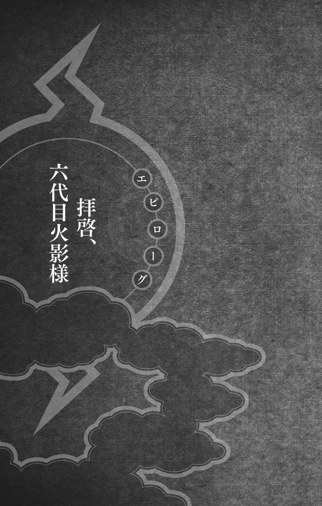
里の西の森で、カカシは大きな楓の根元に腰を下ろした。
三月にしては暖かく、頭上をおおう針葉樹の梢から降りそそぐ陽光は、汗ばむほどだった。
胸ポケットから一通の手紙を取り出す。封を切ったとたん、そこはかとない、いい香りが鼻先をかすめた。
その香りが、四か月前の、あの事件の記憶を――そう、飛鯱丸が龍波武装同盟に襲撃された、あの日の記憶を呼び覚ました。
そして、この偶然を、少し面白がった。つい昨日、五影のあいだで、鬼燈城の管理運営に関しての正式な合意が取り交わされたばかりだったのだ。
あれから、土影、水影、風影、雷影が鬼燈城へ視察に訪れた。雷影などは、華氷の力量を自分の眼でたしかめると言って、彼女と手合わせまでした。
その場に居合わせた者の話によれば、雷影の剛拳は城の壁に新しい穴を数個あけただけでなく、年甲斐もなく、雷犂熱刀まで繰り出したそうだ。
もちろん、雷影が本気を出していたとは、だれも思っていない。しかし、雷影が五分の力しか出していないとしても、並の忍では、華氷ほど優雅に戦うことはできなかっただろうと、だれもが口をそろえて言った。
雷影の攻撃をかわし、華氷は相手の懐に飛び込んだ。そして、雷影の顔の前で、パチンと指を鳴らした。
それだけだった。
雷影の、ヒゲが凍りついた。
「うぬぬぬ、いつの間に術を......」
「すみません、雷影様」眼を見開いた雷影に、華氷はにっこり笑ってみせた。「素敵なおヒゲを台無しにしてしまって」
この手合わせは、どちらも怪我なく終わった。雷影は自慢のヒゲを失い、雲隠れの衆に陰でさんざん笑われることにはなったが。
ほかの影たちは、この一件を面白がった。
「あのきかん坊の、鳩が豆鉄砲を食らったような顔が見えるようじゃぜ」と、土影が言ったとか言わないとか。
いずれにせよ、きちんと自分自身の眼で見て、ほかの影たちは結論を下したのである。華氷の実力は、前任の草隠れの無為と互角、華氷をおいて鬼燈城の新城主にふさわしい者はおらず、六代目火影の采配を全員が支持する、と。
カカシは、四つに折りたたまれた手紙を、開いた。
拝啓、六代目火影様におかれましては、いかがお過ごしでしょうか？ 私は――
「よおし！」森の中に谺したのは、ガイの暑苦しい大声だった。「今日も青春パワー全開でいくぞ、リー！」
「はい、ガイ先生！」
そしてリーに車椅子を押させて、カカシの眼の前を、エッホ、エッホ、と何度も行ったり来たりするのだった。
「おや？」と、ガイが驚いてみせた。「そこにいるのは、六代目火影のはたけカカシ様ではないか？」
「.........」
「そして、その手紙......」ガイは聞こえよがしに、リーに耳打ちをした。「カカシのやつはな、飛鯱丸の一件のとき、オレが搭乗客の命を救わんと奮闘していたころ、なんと破廉恥にも敵のくノ一をひっかけていたんだぞ」
「里のみんなが言ってたことは、本当だったんですね」リーがひそひそとささやきかえす。「ぼくはあんな大人にはなりませんよ、ガイ先生」
「お前たちねえ......」カカシは手紙をたたんで、胸ポケットにしまった。「オレと華氷はそんなんじゃないって、何度も言ってるでしょう？」
が、ガイとリーはカカシの言うことなど無視して、片足スクワットをはじめてしまった。
「よく言った、我が弟子よ！」ガイは左足一本で、スクワットを軽々と続けた。「あんなやつが火影でも、オレがちゃんと補佐してやるつもりだ！ よおし、今日は片足スクワット五千回だ！」
「はい、ガイ先生！」
カカシは腰を上げて、そっとその場を立ち去った。
次に手紙を読もうとしたのは、茶屋の店先だった。抹茶を一杯注文して、茶が運ばれてくるまでのあいだに、華氷からの手紙を開いた。
拝啓、六代目火影様におかれましては、いかがお過ごしでしょうか？ 私は――
「おっ、カカシ先生」
眼を向けると、シカマルとチョウジがだらだらと茶屋へやってきた。
「なに読んでるの、カカシ先生？」ポテトチップスをバリバリ食べながら、チョウジが訊いた。「あっ、ひょっとして、カカシ先生が職権濫用でものにした女からの手紙？」
「『ものにした』って、あのねえ......」カカシはそそくさと手紙をポケットに押し込んだ。「お前たち、まだ誤解があるようだけど、あれはオレの火影としての初仕事であって、けっして職権濫用なんかじゃ――」
「まあ、そう言ってやるなよ、チョウジ」と、シカマルがかぶせた。「カカシ先生だって、とっくに三十歳過ぎてんだぜ。女のひとりやふたり、いたっておかしくねェだろ」
「いや、だからね......」
「あの華氷って人、きれいだったもんね」と、チョウジ。「年増だけど」
それから、ふたりでニヤニヤしながら、カカシを眺めていた。
「.........」
カカシは茶も飲まずに、金だけ払って茶屋をあとにした。
里の目抜き通りを歩いていると、里人が次々に挨拶をしてくる。が、どうも通り過ぎるはしから、クスクス笑いが聞こえてきてしまうのだった。
これはおかしい......すっかり自意識過剰になっているカカシはそう思った。なんでオレが華氷から手紙を受け取ったことを、みんなが知っているんだ？
カカシは歩き、だれもいない路地に入った。
路地の両端を見渡し、しつこいほど人影が見当たらないことを確認してから、またぞろポケットから手紙をひっぱり出した。
拝啓、六代目火影様におかれましては――
「見てよ、あれ」
「!?」
「ニヤニヤしちゃって、いやらしい」
声のほうをさっとふりかえると、サクラと、いのと、ヒナタが、板壁の上から顔をのぞかせていた。
「わっ！」びっくり仰天したカカシの手の中で、手紙が躍った。「おま、おま、お前たち......どこから現れたんだ！」
「見てよ、あの慌てっぷり」いのが、言った。「心にやましいことがあるから、あんなに慌てるのね」
サクラが、まるで汚いものでも見るかのような眼を向けてくる。
「噂は本当なんですか？」ヒナタが言った。「カカシ先生が鬼燈城の城主のポストと引き換えに、華氷さんに迫っているっていうのは......」
「そ、そそ、そんなわけないでしょう！」カカシは叫んだ。「いったいだれが、そんな根も葉もない噂を流しているんだ!?」
が、女の子たちは、もう聞いちゃいない。ひそひそとささやき合っては、まるで三羽の雀のように「えー、ほんと？」とか「信じらんない」とか「もうそんなことまで？」とか、ピーチクパーチクさえずるばかりだった。
カカシはまた歩きだした。
どうやら、プライバシーを保てる場所は、火影の執務室しかなさそうだった。
目抜き通りへ戻り、とぼとぼ歩いていると、ちょっとした人だかりに出くわした。人だかりのむこうで、だれかが声高にわめいている。
集まった皆の衆が、ドッと笑った。
「オレはマジでこの眼で見たんだってばよ！」人の輪の真ん中にいたのは、ナルトだった。「カカシ先生が、手紙を書いては破り、書いては破りしていたんだってばよ......ありゃ、ぜってーにラブレターってやつだってばよ！」
「.........」
「あんなんで、六代目火影として、大丈夫なのかなあ！」ナルトは太平楽に声を張りあげた。「いや、恋をするなとは言わねーけどよ、ありゃちょっと重症だってばよ......こないだなんか、花を摘んでさ......こうやって一枚一枚花びらを引っこ抜きながら、好き、嫌い、好き、嫌い、なんてやってたんだぜ！」
「おまえか......」眼を光らせたカカシが、ナルトの背後にそびえ立った。「おまえが、あることないこと、言いふらしていたのか」
「......え？」ふりかえったナルトの眼には、恐怖の色がありありと浮かんでいた。「カ、カカシ先生！ ちょ、ちょっと待って......」
ゴツンッ！
「いったいなんだって、こんなことをするんだっ！」ナルトの頭に落とした拳骨を、カカシはふり回した。「事と次第によっちゃ、許さないからなっ！」
「だって、だって......」涙目のナルトが、頭をさすりながら、訴えた。「オレだけ仲間はずれにしてさ......みんなが鬼燈城で戦っていたのに......カカシ先生が死にそうになっているときに、オレは里でボサッとしてたんだぞ！」
「ナルト......」
ナルトは腕で眼をゴシゴシこすった。
「悪かったよ、殴ったりして」カカシは言った。「それに、お前に隠していたのは、オレになにかあったときでも、お前には里を守っていってもらわなきゃならないからだ」
「そんなの、分かってるってばよ......」
「あぁあ、シャレが分かんねェ人だな」シカマルとチョウジが通りのむこうからやってくる。「このバカがあることないこと吹いて回ったところで、だれも本気でそんなこと信じちゃいねェよ」
チョウジがうなずいた。
「そうよ」通りの反対から、サクラと、いのと、ヒナタも連れだってやってきた。「ちょっとみんなでカカシ先生のことをからかっただけじゃない」
「ナルトくん......大丈夫？」ヒナタが、ナルトに手を貸して立たせる。「こんなことで殴るなんて、カカシ先生、ひどい」
「え......だって、ナルトのやつが......」
「ナルトは傷ついてたんだぜ」シカマルが言った。「火影なら、そんぐれー分かるだろ」
「いや、そんなこと言われても......」
「謝るべきだと思います、カカシ先生」サクラといのが、ギャーギャー言った。「ただの無邪気なイタズラじゃないですか」
「ああ、もう！」とうとう、カカシは叫び出してしまった。「分かったよ、分かりましたよ......どうしたら許してくれるの？」
ナルトとシカマルが目配せをして、ニヤリと笑った。
しまった！ それを見たとたん、カカシは自分が罠にハメられたことを知った。こいつらに、やられた！
「オレのこの傷ついた心を癒すには......」と、ナルトが言った。「ラーメンしかねェってばよ！」
「.........」
全員が固唾を吞んで、カカシの返答を待っていた。
「分かった、分かった......」カカシは両手をあげて、降参のポーズを取るしかなかった。「じゃあ、いまからみんなでラーメンでも食いにいくか」
「イェーイ！」歓声があがった。「やったあ！」
「作戦成功だってばよ！」
やれやれ......カカシは心の中で、首をふった。不意に可笑しさが込みあげる。火影になっても、やってることは同じじゃないか。毎日、食って、寝て、つまらないことで悩んで。オレの務めは、こいつらとこうやってバカできる日を、一日でも多く守っていくことなんだろうな。
なあ、そうだろ......オビト？
それから、喜び勇んで一楽へと向かう生徒たちのあとを追いかけた。
降りそそぐ陽光。
どこかで、ウグイスが囀っていた。
拝啓、六代目火影様におかれましては、いかがお過ごしでしょうか？ 私は、日々の仕事に追われていますが、日増しに春めいていく季節のなかで、心穏やかに務めを果たしております――
春は、そう、すぐそこまで来ていた。
本書は書き下ろしです。
岸本斉史
１９７４年11月８日生まれ。岡山県出身。 年『カラクリ』でデビュー。
年『カラクリ』でデビュー。 年より週刊少年ジャンプにて『ＮＡＲＵＴＯ‐ナルト‐』連載開始。15年にわたってジャンプのトップを走り続け少年漫画の金字塔として国内外で絶大な支持を得る。
年より週刊少年ジャンプにて『ＮＡＲＵＴＯ‐ナルト‐』連載開始。15年にわたってジャンプのトップを走り続け少年漫画の金字塔として国内外で絶大な支持を得る。
東山彰良
１９６８年台湾生まれ。第１回「このミステリーがすごい！」大賞銀賞・読者賞を受賞し、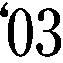年『逃亡作法 TURD ON THE RUN』で作家デビュー。年『路傍』で第11回大藪春彦賞を受賞。著書多数。
ジャンプジェイブックスDIGITAL
ＮＡＲＵＴＯ‐ナルト‐
カカシ秘伝 氷天の雷
著者 岸本斉史／東山彰良
©2015 M.KISHIMOTO/A.HIGASHIYAMA
２０１５年７月31日発行
この電子書籍は、ジャンプジェイブックス「ＮＡＲＵＴＯ‐ナルト‐ カカシ秘伝 氷天の雷」
２０１５年４月７日発行の第４刷を底本としています。
装丁 高橋健二（テラエンジン）
編集協力 添田洋平（つばめプロダクション）
発行人 浅田貴典
発行者 鈴木晴彦
発行所 株式会社 集英社
〒１０１－８０５０
東京都千代田区一ツ橋２丁目５番10号
０３－３２３０－６０８０（読者係）
制作所 株式会社デジタルディレクターズ
本作品の全部また一部を無断で複製、転載、改竄、インターネット上に掲載すること、および有償無償に関わらず、本データを第三者に譲渡することを禁じます。なお個人利用の目的であっても、コピーガードを解除しての複製は、法律で禁じられています。
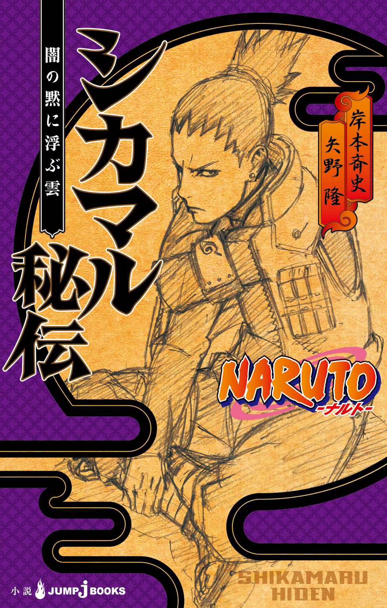
この本は縦書きでレイアウトされています。
また、ご覧になる機種により、表示の差が認められることがあります。
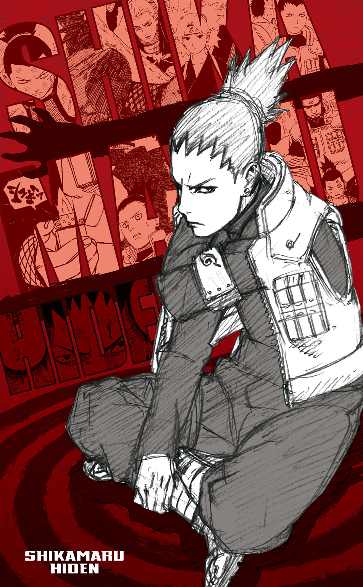
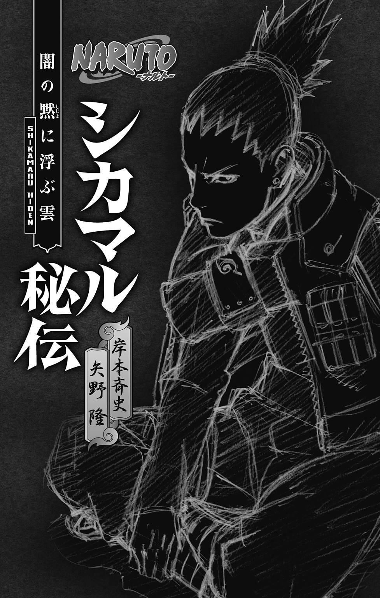
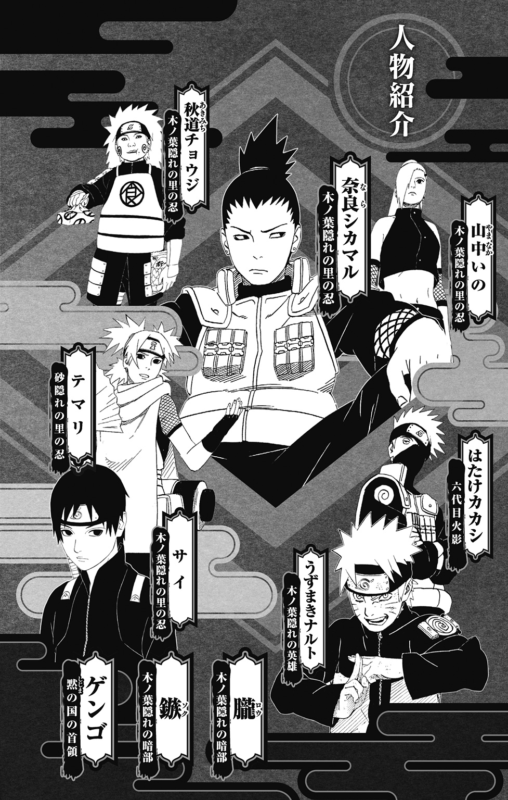
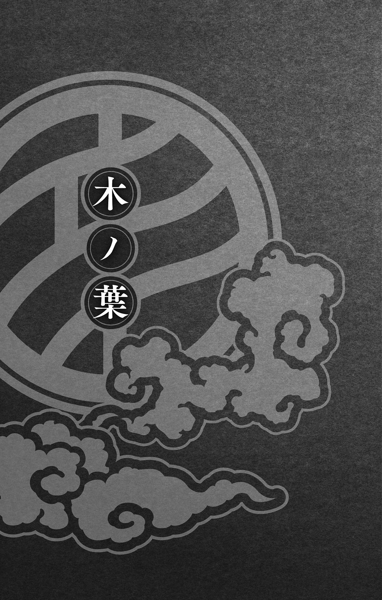
一
いつ頃からだろうか、「めんどくせー」と言わなくなったのは......？
青空を見あげ、シカマルはそんなことを考えていた。
風はそれほど強くないのに、細い雲がつぎからつぎへと視界を通り過ぎてゆく。その慌ただしさが、まるで自分の心のようだとシカマルは自嘲ぎみに笑った。
とにかく忙しい。
第四次忍界大戦から二年あまりの時が過ぎ、世界はようやく落ち着きを取り戻しはじめている。大戦勃発とともに生まれた五影同盟は依然として継続され、忍の世界は劇的なまでに変わった。
五つの隠れ里の間で発足した同盟であったが、大戦以降、近隣の小国もつぎつぎとこれに参加を表明。いまでは同盟から連合へと発展した組織に、大陸全土の忍が参加している。
連合が発足するまではそれぞれの里が各自で請け負っていた仕事は、連合に一括して入ってくるようになった。そして連合に加盟する各里の忍代表が協議をし、それぞれの里に割りふられる。こうして仕事を安定確保できるようになったことで、各里の格差は是正され、忍の世界はようやく安寧の時代を迎えようとしていた。
「はぁ......」
溜息が空に溶けてゆく。
石造りの冷たい床に寝転がっているせいで、背中がやけに冷えた。このままだと風邪をひくかもなどと思いながらも、それでも起き上がらないのには理由がある。
仕事が待っている。
洒落にならない量の仕事だ。
だからふんぎりがつかない。
束の間の休息と思えばこそ、こうして昼の日中から寝転がっていられるが、一度身体を起こしてしまえばそうもいかない。すぐに頭が仕事モードに切り替わる。そうなってしまえばもう二度と寝転がることができないのが自分でもわかっていた。だから意地になって寝転がりつづけている。
誰かが探し当ててくれぬかぎり、こうしているつもりだった。
火影屋敷の屋上にいる。
円形の屋根の向こうに代々の火影の顔が刻まれた岩山が見えていた。左から順に初代の柱間、その弟の扉間。大蛇丸の木ノ葉崩しによって死んだ三代目・ヒルゼンと、黄色い閃光と呼ばれた波風ミナトがつづく。五代目は大蛇丸や自来也と並ぶ伝説の三忍の一人、綱手だ。
ここまでが歴代の火影である。
そしていま現在の火影である男の顔が綱手の隣にあった。
針金のような髪の毛の下に眠たそうな目。鼻筋が通った整った顔立ちの下半分がマスクで覆われている。
火影は木ノ葉隠れの里の象徴だ。すべての木ノ葉の忍が認めた者でなくてはなれない存在である。その顔を刻んだ記念すべき顔岩であるというのに、男の顔の下半分がマスクで隠れているのだ。
はたけカカシ......。
いまの火影の名だ。
第四次忍界大戦を終息に導いた二人の英雄の師として忍の世界では知らぬ者はいない男である。しかしシカマルにとっては、カカシもその二人の英雄もあまりにも身近な存在すぎて、騒がれていることに実感が湧かない。英雄だ伝説だと言われて持て囃されてはいるが、実際の三人はとてもそんな言葉がしっくりくるような者たちではなかった。
カカシはやる時はやる男だが、日頃はやる気がまったくない駄目な大人だ。
英雄と呼ばれる二人にしてもそう。
一人は底抜けのバカ。そしてもう一人は底抜けの強情者。どちらも救いようがない。それでも〝生きた伝説〟だというのだから、世の中というものはわからない。
「なにしてんだオレは......」
想いが自然と口からこぼれ出した。
シカマルは決して英雄なんかにはなれないタイプだ。第一なろうとも思っていない。忍術の腕をみがきバリバリの実務派になりたいかといえばそれも違う。医療忍術を学んで後方援護のスペシャリストになりたいとも思わないし、算用や弁術をきたえて能吏になりたいかといえばそれも違う。
なにごともそれなり......。
それがシカマルの夢だった。
それなりのランクの忍としてそれなりの任務をこなし、それなりの嫁をもらいそれなりの子供と暮らす。そしてそれなりの老後......。
なんとなく一日がなにごともなく終わる。
それ以上の幸せがあるだろうか？
ないと思う。
天気が良い日はこうやって寝転がって空を見ながら、流れる雲の行方に思いを馳せる。雨の日は将棋の駒を相手に一杯やる。誰からも期待されず、妙なプレッシャーもない。ストレスなんか感じることもない。
なんという素晴らしい人生だろうか。
「かはぁ......」
腹の奥底からにじみ出るような重い重い溜息だった。
〝現実〟というモノはなんと手強い敵なのだろうか。
敵が同じ人間ならば、かならず勝てる目がある。それが神のような存在だとしても、実体さえあればどこかに隙があるはずだ。実際、先の大戦で敵となった者たちはどれも化け物じみた存在だった。それでもシカマルたち忍は力を結集し、打ち勝ったではないか。
実際の敵には勝てる。
しかし......。
現実という実体のない敵にはどうしても勝てない。
望むと望まざるとにかかわらず、現実は非情なまでにシカマルをあらぬほうへと運んでゆく。〝それなり〟を望んでいたはずのシカマルは、いまや忍連合になくてはならぬ存在だ。各国の大名や民からもたらされる仕事の依頼をＡからＤランクに大別し、各里の特徴を鑑みて、どの里に適当なのか割り当てる作業やら、主要五大国間の様々な交渉ごとの折衝。果ては老いた土影の将棋の相手まで、なんでもこなす。
〝忍連合に木ノ葉隠れのシカマルあり〟
そんなことを言う者もいる。
目立ちたくない出世したくないと抗えば抗うほど、周囲に押し上げられてゆく。
間違いのはじめは中忍選抜試験だ。
五大国をはじめ、近隣小国の下忍たちまでもが集まった中忍試験。木ノ葉隠れの里の抜け忍、大蛇丸の暗躍や三代目火影の死という波乱のなか、なぜかシカマルだけが中忍への昇格を許された。
唯一の合格者である。
なにをしたという訳ではない。
一対一の対戦という試験の時、バカでかい扇子で大風を起こす小生意気なくノ一相手にひと泡吹かせたあと、手詰まりの末にみずから降参した。
これが評価された。
中忍ともなれば部下を率いることもある。そのため一番重要視されるのは、的確な状況判断だというのだ。潔く敗北を認めたシカマルの行為に、試験官たちは最上の評価を下したのである。
有難迷惑な評価だ。
師匠であった猿飛アスマに無理矢理参加させられただけの望んでもない試験。評価などしてもらうつもりも、やる気もなかった。
しかし現実はシカマルを中忍へと導き、里の者の見る目を変えた。
そのあたりから人生設計がずれはじめた。
サスケが里を抜けた時はチームのリーダーとして同期の忍たちとともに彼を追い、その後は同期のなかでも頭ひとつ抜けた存在として多くの任務をまかされた。
抵抗すればするほど、現実はシカマルを上へ上へと導いてゆく。
第四次忍界大戦から二年......。
シカマルは十九歳になった。
もう子供とは呼べない年齢である。
期待されることがどれほど有難いことか。人に必要とされることがどれだけ素晴らしいことなのか。言われなくてもわかっているつもりだ。実際、シカマルの友は人に必要とされたいという衝動だけで里の、いや......。忍の英雄にまでのぼりつめた。
人は誰かを必要とする生き物だということは、言われなくてもわかっている。だからお前がいなければと言われて悪い気はしない。必要とされれば全力でむき合うし、任務で手を抜いたことなど一度だってない。
この世に生まれて十九年。
すでに多くの柵が全身に絡みついている。
世界の支配を目論む集団〝暁〟によって、師であるアスマを殺された。アスマには紅という彼女がいて、そのお腹にはアスマの赤ちゃんが宿っていた。その赤ちゃんもいまではもう二歳。名はミライ。
ミライの師になる......。
果たさなければならない約束だ。
シカマルの父シカクは第四次忍界大戦の時、連合の参謀を務めていた。そしてオビトの手によって復活した十尾の尾獣玉によって連合の本部が爆撃された際、いのの父親であるいのいちとともに死んだ。
父といのいちの最期の言葉は、いまもシカマルの耳の奥にはっきりと残っている。
『オレ達はいつもお前達の中に居る。忘れんなよ！』
父のようなでかい男になる......。
自分をこの世に生かしてくれた男への誓いだった。
そして......。
ナルトだ。
どこまでも真っ直ぐで、火影になることを信じて疑わない忍の英雄......。
十尾との戦いの時、死にかけたシカマルはサクラの手当てを受けている最中に思った。
ヤツの相談役が務まるのはオレ以外にはいねぇ......。
ナルトを火影にしてその片腕となる。
夢だった。
数えきれないほど多くの柵が身体にまとわりついている。それがシカマルを前に進ませる力となってくれているのは間違いない。みんなの想いがあるからシカマルはシカマルとして生きていける。
それでも......。
たまに疲れる。
本当の自分はみんなが思っているような男じゃない。なにごとも面倒くさがり、それなりの人生を望んでいるようなどこにでもいる男なのだ。期待されれば期待されるほど、逃げ出したくなってしまう。それがシカマルという男の真の姿なのである。
昔は仲間たちも、面倒くさがりなことも、やる気がないこともわかってくれていた。
いつからみんなは勘違いしはじめたのか？
いつからシカマルはめんどくせーと言わなくなったのか？
どちらも同じ頃のような気がする。
「あれは......」
雲を眺めるシカマルの眉間に深い皺が刻まれた。
切れ長の眼が虚空の一点を見つめている。
視線の先にあったのは一羽の鷹......。
西のほうが薄紅に染まりはじめた空を、雄々しく翼を広げた鷹がゆっくりと旋回している。弧を描く軌道の中央にシカマルが位置していた。いや、正確には鷹はシカマルのいる火影屋敷を中心にして回っている。
上体を起こすどころではない。
立ち上がっていた。
茫漠たる海にさまよっていた心は、すでに刃のように研ぎ澄まされている。
瞳は鷹をとらえて離さない。
漆黒......。
鷹はまるで墨で描かれたかのように真っ黒だった。
いや。
あの鷹は本当に墨で描かれている。
超獣偽画......。
サイの術だ。
かつてサスケの代わりとして、ナルトとサクラが所属する第七班に入った男。彼の得意とする術である超獣偽画は、墨で描いた獣や鳥に命を与えて動かすことができる。
シカマルの頭上を飛ぶ鷹も、サイによって描かれたものだった。
「やっと来たか......」
つぶやいたシカマルの視界のなかで、鷹が弧を描くのを止め下降をはじめた。
シカマルは駆けだした。足は下層に降りる階段にむかっている。降りてすぐの所に火影の執務室がある。鷹の行き先はそこだ。階段の手すりに手をかけた時、頰をかすめるようにして鷹が建物の脇に消えた。飛び降りるようにして階段を降り、廊下を走る。
執務室。
ノックもせずに扉を開いた。
「シカマルか」
カカシが言った。
書類や本が乱雑に積み上げられた机の前で、巻物を広げて立っていた。
「いまサイの鷹がこの部屋に......」
「あぁ」
巻物を読んでいたカカシがそれをシカマルに見せるように裏返してみせた。白地に躍る文章がシカマルの視界に飛びこんでくる。
駆け寄り巻物を見た。
「どうやら事態は思っていたよりも深刻なようだ」
言ったカカシの目がシカマルをとらえる。にらんでいるのかと思うほどに厳しい目つきだ。いつもはぼんやりとした雰囲気の口調も、今日はめずらしく真剣である。
カカシの態度が悪い予感を搔き立てる。
シカマルは巻物に書かれた字を追った。
〝ボクはもう自分がわからない......〟
繊細な筆でつづられた書面の最後の一文だけが、やけに鮮やかに見えた。
二
六代目火影様
あまり時間がないので手短に記します。
御懸念の事案につきましてある程度の調査を終えました。しかし十名いた仲間は誰一人戻らず、ボク一人となってしまいました。
生死は定かではありません。ただ敵に察知されたのは間違いないと思われます。
単刀直入に申し上げます。
彼の国の内情は火影様が思われているより何倍も深刻であります。このままこの国を野放しにしておけば、忍連合はいずれ窮地に立たされることでしょう。いや、世界そのものの枠組みさえ変わりかねぬ事態であるとボクは考えます。
この国を動かしている男がいます。
名はゲンゴ。
ゲンゴこそが彼の国であり、彼の国こそゲンゴ。
彼の国のすべてはゲンゴのためにあると言っても過言ではありません。
〝蠱惑〟
あの男を表す一番適当な言葉です。
ゲンゴは世界を変える存在になるやもしれません。
ボクはそれを望んでいるのかもしれない。
忍という存在はあまりにも救いのない生き物ではありませんか？
耐え忍ぶ者こそ忍。
本当にそれでよいのでしょうか？
火影様。
いやカカシさん。
ボクはもう自分がわからない......。
書面から顔を上げ、シカマルは小さな息をひとつ吐いた。目の前には椅子に座って机に肘をつくカカシの姿がある。火影としての公務や外出する時はつねに着けている笠もかぶらず、二年前よりいくぶん伸びた髪を額当てで押さえていた。鼻から下をマスクで覆っているのは相変わらずである。
組んだ両手に顎をのせ、カカシは静かにシカマルを見つめていた。
「どう思う？」
涼やかな声でカカシが問う。
火影の執務室。
二人以外に誰もいない。
「なぜサイは戻ってこずに、超獣偽画を寄越したのでしょう？」
「そうだね」
手から顎をはずし、カカシは背もたれに思いきり寄りかかった。顎を突き出し天井を見つめながら、シカマルよりも大きな溜息をつく。
「文面を見るとすでにサイ以外の者は敵の手に落ちたか殺されているようですね」
「そうらしいね」
「サイをリーダーにして暗部のなかでも屈指の使い手十人で構成されたチームです。敵に姿を晒すような愚行を犯すとも思えません。敵もなかなかの手練れであるのでしょう」
「うん......」
言いながらカカシがくるりと椅子を回転させた。一度背もたれに隠れてシカマルの視界から消えたカカシが一回転してもう一度現れる。カカシという男はどんなに深刻な状況でも肩の力が抜けている男だ。
ふつう、人というものは事態が逼迫すればするほど、身体も思考も硬直してしまう。しかしカカシはこうして気楽な行動をわざとすることで、思考の硬直を避けようとする。長年、腕利きの忍として修羅場を潜ってきた結果、自然と身についた行動のようだった。
ぼんやりとした瞳で天井を見つめるカカシに、シカマルは緊張した面持ちで口を開いた。
「仲間をすべて失い内情を知りえた時点で、サイの取るべき道はただひとつです」
「脱出だね」
「はい」
即答したシカマルにカカシが小さくうなずく。なおも顔をシカマルにむけず天井を仰いでいるカカシにむかってつづける。
「こんな手紙を送ってくるのなら、みずから里に戻り、火影様に......」
「カカシさんでいいってなん度言えばわかんの？」
やっとカカシがシカマルへと顔をむけた。
「いつからそんなに硬くなっちゃったの？ 昔はもっと肩の力が抜けてて、いい感じだったのに」
「オレもいつまでもガキではいられないんで」
「ナルトはいまでも〝ガキ〟のまんまだよ」
「ヤツはヤツです」
「あぁそう......」
寂しそうな目をしてカカシが机の上に広げられたサイからの手紙に目を落とした。
文章を超獣偽画で動物に変化させ遠方に遣わし、白紙の巻物に辿り着けば元の文章に戻すというサイの技である。屋上でシカマルが見た漆黒の鷹が、いまカカシが読んでいる文面の正体だった。
「彼の国の内情はオレが考えるよりも何倍も深刻。か......」
「大戦の失踪者や近頃の抜け忍たちの多くはやはり彼の国にあると考えたほうがよいのでしょうね」
「サイがここまで断言しているということは、そうなんだろうね」
「黙の国......」
すべては二年前にさかのぼる。
うちはマダラとうちはオビトによって引き起こされた第四次忍界大戦は、多くの犠牲を生んだ。人の範疇を脱した超常的な力の前に五大国の忍たちは力を結集して立ちむかい、ついに、マダラを陰で操っていた大筒木カグヤを倒し大戦を終息させることができた。
平穏な時が訪れ各里が戦後処理に入ると、戦死者や行方不明者の特定が急がれることになった。
大陸の地形すらも変えるほどの激戦である。屍が残る者は運がよいという有様であった。とうぜん戦死が確定した者よりも行方不明者のほうが各里ともに多かった。
五大国でおよそ一万人......。
それが先の大戦で出た犠牲である。
忍の里はおろか、この世界自体が滅びるかもしれない戦争だったのだ。この程度の数で済んで幸運だったと言う者もなかにはいた。
しかしシカマルはそうは思わない。
死者は一人でも死者なのである。
やむをえない犠牲など一人たりとてないのだ。
先の大戦で日向ネジという友を失った。シカマルにとっては〝一万分の一〟などという数のひとつではない。日向ネジという友の死こそがすべてである。そしてそれはどの犠牲者にも言えることなのだ。人が一人死ぬということには、単なる犠牲などという言葉では決して割りきれない感情がある。
だからこそ......。
戦争は決して起こしてはならないのだ。
「果たして行方不明者のいったいどの程度が、黙の国に流れているのか......」
シカマルの思考を遮るようにカカシがつぶやく。
カカシの言葉のとおり、先の大戦で行方不明となった者のなかに、生き残って姿を消した人間が少なからずいるということがわかったのである。
はじめにそれに気づいたのは、忍連合の本部であった。
すべての依頼が集まってくる連合本部は、もたらされる依頼の傾向や件数を一番早く知ることができる。
異変は一年前......。
忍への依頼が目に見えるほどはっきりと減ったのである。
忍五大国が協調路線を選んだことで、大名たちが支配する表の世界でも近頃はめっきり戦が減った。そのため危険な任務であるＡランクやＢランクの依頼が減るのは仕様のないことではあった。
しかし事はそれほど単純ではない。
比較的容易なＣランクＤランクの依頼までもが、同様に減っているのだ。
この問題は連合本部にも席を置いているシカマルも、いち早く聞いていた。しかし依頼が減ったからといって具体的な対処ができる訳もない。連合としては、しばらく事の推移をうかがおうという結論に至った。
しかしここに依頼の減少という問題と、大戦以降のもうひとつの問題を結びつける男が現れたのである。
目の前に座っているカカシだ。
カカシが着眼したもうひとつの問題。それは一年ほど前から忍五大国で続発している抜け忍の問題だった。
一年ほど前から、各里でひと月に一人ずつ忍が里を抜けているのだ。ひとつの里でこれまでに十二人。五里合わせて六十人もの忍が消えている。しかもそれはすべて独身の若い男性だった。
里抜けは大罪である。
とうぜん各里ともに追手を遣わした。しかし誰一人として捕らえることができなかったのである。
「援護を差しむけてサイに継続して調べさせたのはまずかったかもしれないね。一度サイを引き上げさせて、態勢を整えてから黙の国にむかわせるべきだった」
「いまさら悔やんでも仕様がありません」
「そうだね」
抜け忍探査を行っていたサイが小さな手掛かりを見つけて報せてきたのはひと月あまり前のことだった。抜け忍の問題と依頼の激減が密接につながり合っているのではと考えていたカカシは、調査の継続と暗部の追加派遣をサイに伝えた。
サイが辿り着いた手掛かり。
それが黙の国である。
忍の五大隠れ里を擁する五大国とそれに挟まれた中小諸国が群雄割拠する大陸。その西の果てに黙の国はあった。忍の里も持たず他国との交渉も一切ないこの国は、黙して語らぬ〝黙の国〟と呼ばれていた。民とそれを支配する大名は他国と同様に存在しているのだが、それ以上の詳細な情報は外には一切漏れない閉じた国だ。
どうやらこの国に木ノ葉の抜け忍が逃げこんだらしいとサイは言う。
懸念材料はそれだけではなかった。
大戦で行方不明となっていた木ノ葉の忍がいたというのである。
黙の国に抜け忍や行方不明と目されていた忍たちが集っている......。
なんのために？
連合への依頼の激減にその答えがあるとカカシは見ているのである。
「サイはどうなっていると思う？」
「生きています」
「同感だ」
マスクの下でカカシの口元が笑みを象っている。
「文面からにじみ出る〝ゲンゴ〟という男に対する称賛にも似た執着......」
言ったカカシが流麗な筆致で記されたサイの文書に触れた。その心を悟るようにしてシカマルは言葉を継ぐ。
「信じたくはありませんが、サイはゲンゴという男に取りこまれているのかもしれません」
「純粋だからねぇ彼は」
「もし生きているのなら救わなければなりません」
「そうだね......」
傷跡の残るカカシの左目が暗い闇を帯びた。
シカマルはこの有能な火影がなにを言わんとしているのかを敏感に悟っている。
仲間の救出よりも大事なことがあるのだ。
シカマルはみずから切り出した。
「もしも黙の国がサイの記しているような状況にあり、火影様の推測どおりの活動をしているのであれば、一刻も早く手を打たなければなりません」
「わかっているよ」
シカマルは止めない。
「大戦から二年。各里はやっと安定を取り戻してきましたが、まだまだ国力はどこも以前の半分にも満たないというのが現状です」
「戦はできないよね」
「そのとおりです」
またおおきな溜息をひとつついて、カカシが椅子から立ち上がった。巻物や書物が乱雑に置かれた机を回りこみシカマルの隣に立つ。
「どうやらオレと同じことを考えているようだね」
「はい」
「だったらオレがどう思っているかもわかってる？」
「自分で行こうとお考えでしょう」
カカシは若い頃に暗部として鳴らした経験がある。後ろ暗い任務を専門に扱う暗部のなかでも、カカシは有能な戦士だったという。笑みで弓形に歪んだカカシの目の奥に、濃い闇がくぐもっている。それを正面から見つめながらシカマルは言葉を吐く。
「火影様のことです。みずからの立場も十二分に理解され、その結果、望みが叶わぬこともすでにわかっておられるはず」
「君の頭の回転の速さはミナト先生の忍術ばりだね」
答えずにシカマルはカカシを見つづける。黙したままのシカマルに、カカシが言葉を吐く。
「とにかくサイが言ってきたとおりなら、彼の国の要はゲンゴという男のようだ」
「はい」
「こいつをどうにかできれば、なんの問題もないんだよね」
「オレもそう思います」
「さて......」
老人のように腰に手を当て、カカシがおおきく伸びをした。
「誰を差しむければいいと思う？」
「オレが行きます」
「え？」
カカシが目を丸くする。
「君には木ノ葉の代表として連合の一翼を担うという大きな役目があるじゃないか。いまさら暗殺なんて仕事をする必要なんかないさ」
暗殺......。
カカシは明言した。二人の頭のなかに共通してあったものを言葉にすることで、明確化させたのである。連合と黙の国の戦になれば、せっかくまとまってきた連合自体がふたたび足並みを乱すかもしれない。各国の疲弊が深刻ないま、あらたな戦を望んでいる者などどこにもいないのだ。
サイの手紙を信じるなら、ゲンゴを暗殺することが黙の国を沈黙させる一番有効な手段なのである。
「この一件を知る者は少なければ少ないほどいい」
「だからって君が行くことは......」
「仲間が捕らえられているんです。オレにやらせてください」
シカマルの気迫に押されるように、カカシは口をつぐんだ。
シカマルは思う。たしかにカカシの言うとおり、自分が行く必要はない。適任の者を選びだしてすべてを任せることが上に立つ者には必要なことなのだろう。それでもシカマルは志願した。
理由はわからない。
ただ無性に、じっとしていられなかった。
三
「という訳で、今回の定期会合は終わります。なにかご質問はありませんか？」
淡々とした口調で司会の男が言うのをシカマルは瞑目したまま聞いた。眼鏡姿の司会の男は長十郎という霧隠れの忍だ。忍界大戦の時に水影の護衛をしていたのを、シカマルは覚えている。
「皆様なにもないようなので、それではシカマルさん......」
長十郎がうかがうように言った。彼は隣に座っている。シカマルは右目だけを開き長十郎を見ると、ちいさくうなずいて両目を開いた。
円卓に十名の忍が座っている。男も女もいた。だいたいシカマルと同年代である。
鉄の国にある忍連合の本部。
侍の力が非常に強い鉄の国には忍がいない。先の大戦の前、五大隠れ里の影忍たちはこの鉄の国において会合をおこなった。それが後の五大国同盟となり、いまの忍連合へとつながっている。同盟発祥の地である鉄の国に連合は本部を設け、五大国を主とする各里の忍たちが集って日夜忍の世界の発展のために働いていた。
シカマルとともに集う十人は次期影忍候補など里でも屈指の若手たちだ。この会議は次代の忍の世を担う者たちによる、これからの忍について語り合う場だった。シカマルの他には司会の長十郎や、砂隠れのテマリや雲隠れのオモイなどがいる。
シカマルはこの集まりのリーダーを任されていた。もちろん志願してのものではない。みなから推された結果である。
「シカマルさん？」
黙ったままのシカマルを心配するように長十郎が言った。ひとつ咳払いをしてから、シカマルはメンバーを見回し重い口を開く。
「これといって目新しい議題もない会議だったと思います。まぁ、これからもこのようなゆったりとした会議であることを望みたいものです。それではみなさん、またひと月後に」
言うと同時に立ち上がる。円卓に広げられた資料の束をまとめ、小脇に抱えてみなに背をむけた。リーダーの素っ気ない態度に戸惑いながらも、メンバーは各自のペースで退出をはじめる。
白く無機質な壁が左右に伸びる長い廊下を、淡々と歩く。多くの忍が忙しなく歩いているが、足音はまったく響かない。忍である。足音を鳴らすなどもってのほかだ。その程度の身の運びは忍者学校でも初歩中の初歩だった。
「おいっ」
背後からシカマルを呼び止める声。
気づかれぬように舌打ちをした。
声の主が、いま一番話したくない相手だったからだ。
かまわず歩を進める。
「待てよシカマルっ！」
蹴り飛ばされそうな勢いの声が背中を叩く。
「なんだ？」
頭だけを回し、肩越しに女を見た。
砂隠れのテマリだ。二年前よりも短くなった髪を左右にわけてふたつに束ね、少しだけ大人びた顔は昔よりも目が穏やかになっている。シカマルよりも歳は上。大人びたというか、すでに立派な大人である。
「どうしたのさアンタ？」
昔よりも目尻が幾分垂れた目でシカマルを見つめている。
「なんのことだ」
「最近アンタおかしいよ」
テマリの細い手がシカマルの肩に伸び、強引に正対させた。
めんどくせー......。
喉元まで出かかった言葉を必死に吞みこむ。
「さっきの会議での態度だってそうさ。アンタがだんまり決めこむから、みんな緊張して場が張り詰めてたじゃないか」
「そうか？」
「そんなことにも気づかなかったのかい」
テマリが目を丸くする。
「なにがあったんだ？」
「別に......」
「私にも話せないことなのかい？」
テマリの視線が痛かった。
大戦が終息してからの二年間、連合での仕事においてテマリは良き理解者であり相棒だった。強大な敵を前にして集った忍たちがふたたび離散しないようにという想いを共有し、ともに連合を盛り立ててきたつもりだ。木ノ葉の次期火影候補と目されるナルトと砂隠れの風影である我愛羅の強固な絆もあって、両里の関係は五大国のなかでも非常に良好であった。そういった外的要因もあり、シカマルとテマリはたがいに連合内で一番の味方であると認め合う存在となっている。
「木ノ葉でなにか起こってるんだろ」
なかなかの洞察である。
しかしわずかに的をはずしている。木ノ葉で事が起こっているのではない。しかし木ノ葉の忍のみで事態を収束させようとしているのは事実だ。テマリの推測は半分アタリで半分ハズレというところだった。
忍の存亡にかかわる事については、里の枠を超えて共有すべきというのが連合の基本方針だ。シカマルとカカシがやろうとしていることは明らかな背反行為である。
それでも言うべきではないのだ。いま連合を挙げて黙の国と事を構えることは得策ではない。
己がやる......。
決意は固い。
「私が力になれることはないのかい？」
「ない」
きっぱりと言いきったシカマルの態度に、テマリが目を伏せる。
「そう......」
力なくつぶやいた次の瞬間だった。
寂しそうだったテマリの顔が一瞬にして怒りに変じたのである。
息を吞むのが精一杯。
避ける余裕などなかった。気づいた時にはシカマルの身体は飛んでいた。
幾度か廊下を転がり尻餅をつくような格好で座りこんだ。右の頰が真っ赤に腫れている。熱をもったほっぺたをさするシカマルの視界の先で、憤怒の形相のテマリがにらんでいた。
「アンタのことをここまで見損なうたぁ、思ってもみなかったよッ！」
怒鳴り声が風圧となって顔を圧す。
「す、すまねぇ......」
無意識の言葉だった。朝帰りしたオヤジが玄関でオフクロに怒鳴られている姿が、みずからにかぶる。大股で歩くテマリが、シカマルの横を通り過ぎて消えてゆく。
その目がうっすらと濡れていた......。
＊
「さっきから全然食べてないじゃん」
目の前に座るチョウジが、両の頰をリスのように膨らませながら言った。
焼肉屋である。
シカマルの隣には、いのが座っていた。
二人とも二年の間にずいぶん大人になった。チョウジは相変わらずぽっちゃりだが、目つきが精悍になり顎髭なんかたくわえている。いのはますます髪を伸ばし、それを束ねずにいるから年よりもだいぶん大人に見えた。
「ここに来る前になんか食べたのかい？」
言ったチョウジの頰がボコリとへこみ、喉が大きく上下して肉が腹の底へ落ちた。
「私もシカマルも成長期はとっくに終わってんだから、アンタみたいにバカスカ食べられないのッ」
「ウソッ！」
チョウジが目を丸くする。
シカマルは思わず笑っていた。心に穏やかな風が吹く。久しぶりの感覚だった。
「お前たちとメシに来るのに、その前になんか食べてる訳ねぇだろ」
シカマルは言いながら金網に箸を伸ばした。もう少しで焦げそうなハラミを箸先で挟もうとするとチョウジの怒声が飛んでくる。
「それ僕が育ててた肉ッ！」
「はいよ」
幾度も繰り返したやり取りだ。手慣れた仕草でシカマルはハラミを戻すと、隣のカルビに箸をむける。隣に座るいのを横目で見た。うなずいたので肉を取り小皿にのせる。
「久しぶりよねシカマルから誘うなんて」
「そうだよ、最近じゃボクが誘わないと二人とも付き合ってくれないもん」
「シカマルは連合の仕事や火影様のサポートなんかで、めちゃくちゃ忙しいんだから、私らとそんなにしょっちゅう会ってらんないの」
「それはわかってるけど......」
うつむきがちにチョウジが頰を膨らませた。
気を遣ってくれていることを素直に喜ぶ自分がいる反面、二人との距離が離れたことを寂しいと思う自分もいる。大人になれば子供の頃のように思うままには生きられない。忍者学校が終わって友達と待ち合わせして暗くなるまで毎日遊んだ頃とは違うのだ。
シカマルが連合や木ノ葉隠れの里で責任のある仕事をしているのと同様に、いのもチョウジも大戦を潜り抜けてきた有能な中忍としてずいぶん重宝がられている。シカマルが忙しいからと言いながら、二人もまた思うように時間の取れない立場なのだ。それでも自分の〝会いたい〟というひと言に、なにも言わず付き合ってくれた。
最高の親友たちである。
「どうしたの？」
いのが男らしくジョッキを傾けながらシカマルに問うた。
「別になんでもねぇよ。ただお前らと話がしたかっただけさ」
シカマルは小皿の肉を口に運んだ。
「あっそ」
それ以上いのはなにも聞かなかった。チョウジは笑顔をたやさず肉を食べつづけている。
他愛もない会話の応酬。
チョウジの食べっぷり。
いのの恋愛話。
そしてアスマの思い出......。
二人との距離が縮まってゆく。
アスマとはじめてこの店に来た頃の自分に戻ってゆくようだった。
あの頃はふた言目にはめんどくせーと言っていた......。
チョウジといのの大人びた姿を見ながら、もうあの頃には戻れないとシカマルは心につぶやいていた。
一人家路を行く。
けっきょく二人には言えなかった......。
黙の国に行くのなら二人とともにと思った。だから焼き肉に誘ったのだ。でも二人の笑い顔を見ているとなんとなく言えなかった。
これから歩もうとしているのは闇の道だ。
木ノ葉を、連合を、そしてすべての忍を救うため、一人の男を殺すのである。
正々堂々戦って勝つのではない。
密かに殺すのだ。
暗殺。
忍にとってそれほどめずらしいことではない。大人になればそういうことも世の中には必要なんだとわかってくる。
でも......。
手を汚す者は少なければ少ないほど良い。チョウジといのを闇に引きずりこむ気にはなれなかった。
「やっぱり暗部か......」
見あげた夜空に星はひとつもなかった。
四
カカシの執務室にシカマルはいた。相変わらず乱雑に散らかる書類の山に囲まれ、忙しく書き物をしている六代目火影の手が空くのを立ったまま待つ。カカシのむこう、開け放たれた窓の外に木ノ葉の街並が見える。ほがらかな午前中の陽光に照らされる街は、穏やかな空気に包まれていた。
「待たせたね」
書類の束を机で叩いてそろえながらカカシが言った。
「で、今日はなんの用？」
「黙の国の件です」
「あぁ、そっちか......」
先日の連合での会合の報告をまだ済ませていない。別段とりたてて伝えることもないので放っておいたのだ。どうやらカカシは会合のほうを予想していたらしい。
「連合は相変わらずです。有能な人材がそろっているので、なんの心配もないでしょう」
「君もその〝有能な人材〟の一員なんだよ」
果たしてそうだろうか？ 本当に自分は木ノ葉隠れの里の代表などが務まる人間なのか。
「本当に行く気なのかい？」
「はい」
カカシが溜息をついた。
「君が行く必要があるのか？」
「サイが捕らえられています。それにうちの里から抜けた者や大戦で行方不明になった者たちもいるんです。果たして彼らが本当に望んで留まっているのか、それともゲンゴという男に捕らえられているのか、それを確かめなければなりません」
「決意は固いようだね」
無言でうなずいた。
目をつぶったカカシが首を左右に振って、ふたたびシカマルを見た。
「わかった、もうとやかく言わないよ。で、誰を連れてゆく気なんだい？ 一人で行くって訳でもないんだろう？」
「暗部の人間を二人お貸しいただけませんか」
「ほう」
肘を机につけ、組んだ手の上に顎をのせたカカシの目が真剣味を帯びた。
「いのやチョウジはいいのかい？」
「猪鹿蝶の連携は目視下の戦闘では有効ですが、今回のような任務には適しません」
「暗殺だからね」
「しかも今回は潜入することもおおきな要素です。できればチャクラを隠せる者が欲しい」
「うん......」
カカシが目を伏せて考えている。元暗部という出自柄、カカシは暗部の内情に詳しい。シカマルの申し出を受け、頭のなかで候補を挙げているようだ。
「仕留めるのは君じゃないんだろ」
「オレの術は標的の拘束に使うつもりです」
「だったら実際に仕留める者も必要だね」
カカシが先回りするようにして言った。実際シカマルも同様のことを考えていた。
暗部を二人......。
一人はチャクラを操りこちらの存在を隠すことができるタイプの忍。そしてもう一人は実際に標的を仕留める術を持つ忍だ。
「格好の人間がいるよ」
「ありがとうございます」
「すぐに手配しよう」
「他の任務に就いているのではないのですか？」
「君の案件よりも急を要するような任務などないだろ」
言いきったカカシに火影という存在の大きさを感じる。事の軽重を冷徹に判断し、そのうえで迅速な決断をする。そうすることで忍たちは、里のために存分に力を発揮できるのだ。己ではとうてい務まらないとシカマルは思う。火影になりたいと思ったことはない。が、やはり憧れがないといえば噓になる。カカシの男としての大きさに、まだ年若いシカマルは太刀打ちできない悔しさを覚えた。
「すぐに二人に帰還を伝える。君はもう少し待っていてくれないか」
「できるだけ早くお願いします」
「わかってるよ」
微笑んだカカシが立ち上がる。そしてシカマルに背をむけると窓の外を眺めた。
「そんなに背負わなくてもいいんだよ」
カカシがボソリとつぶやく。
シカマルは答えない。
背負っている......。
たしかにそうかもしれない。
自分でもわからないうちに、シカマルはたくさんのものを背中に負ってしまっていた。面倒くさがりのくせに、柄にもなくなにごとも抱えこんでしまう。重くて仕様がないはずなのに、放りだせない。
怖かった。
すべてを投げだすことで自分が自分でなくなる気がするのだ。もともと面倒くさがりである。一度、荷を下ろしてしまえば二度と担げなくなるのではないか？ そしてもう誰も自分を必要としてくれなくなるのではないか？
それがたまらなく恐ろしかった。
「いまから本音を言うよ」
掲げた左手にちいさな雷が幾重にも連なる。
「いますぐ火影なんていう面倒な柵を脱ぎ捨てて黙の国に行きたいよ」
なにもかもを放りだして黙の国に行き、ゲンゴを仕留めたいというカカシの心の叫びが聞こえる。しかし火影という責任のある立場をそう簡単に投げだせるものではない。
「君にこんなことを背負わせてしまってすまないと思っている」
「オレもナルトもそして同期のヤツらもみんな、すでに背負う立場になってるってことですよ。もうアナタがすべてを背負う必要はないんです」
「そうか......」
雷が陽光に溶けた。
「シカマル」
カカシが振りむく。
「大人になるってどういうことなんだろうな」
「そんなことオレに聞かないでくださいよ」
「また来るわ」
言ってシカマルは墓石に背をむけた。墓には〝奈良シカク〟と刻まれている。
父の墓だ。
カカシとの面会が終わったあと、自然と父の墓に足がむいた。大人になるってどういうことなのか？ カカシが問うた答えがここにあるような気がしたからだ。
第四次忍界大戦の最中、父は五影とともに連合の本部にいた。戦闘の激化によって五影が前線に赴いたあとは、いのの父であるいのいちとともに全軍の指揮を執っていた。十尾を目覚めさせたオビトは、全軍の攪乱を企図しここに尾獣玉を放った。死の砲弾が迫るなか、シカクは最後の最後まで全軍に指示を与えつづけ、そして死んだ。
死の間際まで忍であった。
いや......。
本当は死ぬ前の刹那、シカクは父であった。しかしそれを知っているのは子であるシカマルだけだ。
大人とはなんだ？
シカマルは考える。
父の墓に別れを告げ、足は次にむかう場所へと進んでいた。
師の墓だ。
猿飛アスマ......。
三代目火影の血筋でありながらエリートの道を拒み、つねに前線に立ちつづけた男だ。忍者学校を卒業したシカマルは、このアスマのもとで忍として一人前に育て上げられたのである。親友のチョウジといのと三人で、アスマの背中を追うようにして任務に邁進した。
どんな苦境に立たされようとタバコをくわえて気楽な態度を崩さないアスマは、シカマルの憧れだった。
そんなアスマももうこの世にはいない。
世界征服のために暗躍する〝暁〟との戦いのなかでアスマは死んだ。
シカマルを生かすために......。
人智を超えた力をもつ暁のメンバーに勝つ見こみがないと悟ったアスマは、その身を賭してシカマルや仲間たちを守って死んでいった。
彼もまた最期まで他者のことを考えながら死んだ。
我が身を捧げて守るものをシカマルはまだ持ちえていない。里の人々や仲間はたしかに大切だが、父やアスマほどの強さで守るものかというと違うような気がする。そういう意味ではシカマルはまだ大人ではないのかもしれない。そもそも〝大人〟などという曖昧な言葉自体に囚われている時点で子供なのだとも思う。だとすればカカシだって子供なのかもしれない。
しかしカカシはすでに命に代えても守るものを得ているはずだ。
〝火影にとって里の者はすべて子供である〟
死んだアスマの父、三代目火影ヒルゼンの言葉だ。
火影として生きる道を選んだ時点でカカシはやはり大人なのかもしれない。
もう訳がわからなくなってきた......。
「シカの兄ちゃっ！」
物思いにふけるシカマルの耳に屈託のない声が触れた。なにかがヨチヨチと歩いてくる。まん丸い赤子だ。四方に飛び出したまん丸い手足をぎこちなく使いながら、赤子は一生懸命シカマルへと近づいてくる。
「ミライッ」
シカマルは赤子の名を呼んだ。自然と声が明るくなる。頰が緩み唇が笑みを象る。
「キャッ！」
ミライはシカマルの足に辿り着くと、短い両手で抱きついた。
「シカの兄ちゃっ！」
さっきと同じ口調でミライが言った。足にしがみついたままシカマルを見あげるミライは、眩しすぎて目がくらみそうになるほどの笑顔である。太陽のような笑みをむけられていると、凍っていた心が溶けるようだ。
「久しぶりねシカマル」
「紅先生」
「もう先生じゃないんだから、その呼び方は止めてよね」
黒髪の女性がそう言って笑った。
猿飛紅......。
元はアスマやカカシとともにシカマルたちの同期を率いる上忍であった。しかしいまは母として子育てに専念している。
ミライの母だ。
「アスマの墓に？」
「えぇ」
「お父様のお墓は？」
「いま行ってきました」
シカマルと紅が会話を交わしている間も、ミライは足にしがみついて笑みを浮かべたままスリスリと顔をこすりつけている。
「シカの兄ちゃっ！ いまパパ、会った」
片言ながら必死に自分のことを伝えようとしているミライの姿を見ていると、心が熱を帯びてくる。
この子の師になる......。
アスマと紅に約束したことだった。
「そうか、パパに会ってきたのか」
しゃがみこんで言ったシカマルに、ミライが嬉しそうにうなずいた。自分の言葉が通じるのがたまらなく嬉しいらしい。
「偉いなぁミライは」
頭を撫でると、ふさふさで柔らかい髪の毛の感触が掌を伝わって心に穏やかな風を運ぶ。
「早くおおきくなれよ」
「うんッ」
「ほんとうにシカマル兄ちゃんのことが大好きね」
紅が言うとミライは前のめりになるほど強くうなずいた。自分の頭の重さで転びそうになるのを、シカマルは両手を差し出して受け止める。
この子のためにも死ねねぇな......。
「そだよッ」
まるでシカマルの心を見透かすようなタイミングでミライが言った。
「ありがとな」
ミライを抱き上げる。キャッキャッとみずみずしい笑い声をあげる赤子を見あげ、もう一度〝死ねぬ〟と強く思った。
五
白い顔の猫と猿が目の前に立っていた。
頭だけが猫と猿で、首から下は二名とも人間である。身体に密着するような漆黒の衣に、最近新しくなった木ノ葉のベストを着こんでいた。以前のベストは胸の両側に巻物や忍具を収納するポケットがついていたが、今回のものはそれらを廃しずいぶんシンプルになっている。大戦を終え、各里協調の時代らしい平時の装備であった。
猫と猿の顔の本来目玉が入るあたりには、深い洞穴のような穴が空いている。口はどちらもへの字口で、端は頰まで裂けていた。猫のほうは空洞になっている目の下に赤く細い隈取りが入っている。猿のほうは眉間から猫よりも太めの赤い隈が、怒って吊り上がった眉のように入っていた。二人とも手を後ろに回し、腰のあたりで組んでいる。猫猿合わせて四つの空洞がシカマルをむいていた。
「この二人なら君の希望にそうことができると思うんだが......」
机のむこうの椅子に座ったままカカシが言った。机の左右に猫と猿が立っている。シカマルから見て右手に猫、左手に猿である。
身長に大きな差異があった。猿のほうは百七十六センチほどあるシカマルよりもわずかに大きい。逆に猫はシカマルの肩ほどの身長しかない。
猿は男、猫は女......。
体つきから明白だ。
「二人とも面を取れ」
カカシが言うと二人は己が顔に触れた。白い猿と猫の顔が薄皮のように剝げ、その下から人の顔が出てくる。
動物の白面を着けるのは暗部の慣習だ。任務のなかでも暗殺や謀略、他国の騒乱の助長などという後ろ暗い仕事に主に従事しているため、素性を知られることを極端に嫌う。里の人間でさえ、暗部に誰が属しているのか知らない者が大半を占めるのだ。普段はなに食わぬ顔をして里を行き来している者が、実は暗部の人間だったという話はいくらでもある。
「男のほうは朧。女のほうは鏃」
カカシの声と同時に、二人がシカマルにむかってちいさく辞儀をした。
「こんな年の娘が......」
「心外だシ」
シカマルのつぶやきを断ち切るように鏃が言った。
「忍の世界は実力がすべてだシ。私は自分の実力で暗部の座を勝ち取ったんだシ」
「そういうことだ」
鏃の言をカカシが肯定する。
シカマルが驚くのも無理はない。
鏃は幼かった。シカマルよりも五つ六つ下であるのは間違いない。まだ忍者学校を出て間もないといってもおかしくなかった。あどけなさの残るふっくらとした頰には幾分赤みがさし、薄い唇は頑強な意志を感じさせるほど硬く結ばれている。細い眉はきつく吊り上がり、その下の瞳は自信に満ち爛々と輝いている。どこか幼い頃のテマリを思い出させるような顔立ちだとシカマルは思った。
「ヒノコは忍者学校を出るとすぐにその才を見こまれて暗部にスカウトされた。まだ十四歳だが、すでに多くの任務をこなし暗部内での信頼も厚い」
「人を見かけで判断するのはよくないシ。ってか火影様、本名で呼ぶなって言ってるシ」
少し頰を膨らませるようにして鏃が言った。
「ヒノコ......。ずいぶん可愛らしい名ま......」
言いかけたシカマルの目の前で鏃の姿が消えた。息を吞むシカマルの額にいつの間にかオレンジ色の爪が触れている。
「名前で呼ばれるのが嫌いだシ。そこんとこは気をつけてもらいたいシ」
眉間のあたりにつきつけられた鏃の人差指の先端から、チリチリという音がしている。カカシの雷切をすごくちいさくしたような感じの音色だった。
鏃の指先でチャクラが爆ぜている......。
「いい加減にしろ鏃」
猿の面を着けていた男が言った。
名は朧......。
太い眉にえらの張った顎、強情そうな一重の目が鏃をにらんでいる。
「こういうことは最初が肝心だシ。餓鬼だって舐められるのだけは御免だシ」
「悪かった。以降気をつける」
これ以上事を荒立てる必要も、小娘の意地に付き合っている暇もないと、シカマルは素直に謝った。鏃は頭のてっぺんでひとつに留めたオレンジ色の髪をゆらし、朧を見ていた視線をシカマルにむける。
「わかったらいいシ」
不用心なまでに背中を見せながら、鏃がずかずかと元いた場所に戻ってふたたび後ろで手を組んだ。
「朧は自分と、自分が対象と定めた人間のチャクラの量や質を自由に変異させることができる」
カカシが言うと朧がちいさくうなずいた。
「実際のチャクラを増加させることができるということですか？」
「鋭い質問だね」
「他者が知覚するという観点においてのチャクラの変容にござる。よって、某がシカマル殿のチャクラを増大させんとしても、実際の戦力は増えはいたしませぬ。ただシカマル殿を知覚する者の錯誤を生むのみにござります。つまり某の術は、彼我の関係がなければ成り立たない術にござりまする」
いささか時代がかった喋り方をする男である。その巌のごとき風体と相まって、なんとも侍然とした印象を与える。
朧の説明に納得するようにうなずき、シカマルは口を開く。
「チャクラの量を変異させられるということは、完全に消すことも可能ということですか？」
朧はどう見ても四十を超えている。シカマルよりも二十ほど年上なのは間違いない。
「できまする。いずれかの標的を定め、そのチャクラの質と量をすっかりそのままシカマル殿にトレースさせることも可能にござる」
この男が〝トレース〟などという言葉を発すると、かなり違和感がある。
カカシが割りこむ。
「身を隠すのには最適な術であると思うが？」
「大丈夫でしょう。で、この娘さんは？」
シカマルはそう言って鏃のほうを見た。〝娘さん〟という言葉に鏃が細い眉をピクリと吊り上げる。まだまだ子供なところは抜けきれていないようだ。それがこの忍の短所なのか長所なのか、それはまだわからない。
「実際に見せてやったほうがいいんじゃないか？」
カカシが言うと鏃はうなずいてシカマルに背をむけた。
右腕をあげた鏃の指先がカカシの背後の開け放たれた窓の外をさしている。その延長線上に一羽の燕が飛んでいるのをシカマルの目はしっかりととらえていた。
「私の武器はチャクラの針......」
ささやく鏃の手からオレンジ色の閃光がほとばしった。
燕はちょうど窓と窓の間の太い柱の陰に隠れた。もし鏃がこのタイミングでチャクラを放ったのなら、絶対に当たりはしない。チャクラは柱にぶつかり、壁面にヒビを刻む。
が......。
柱には傷は入らなかった。なのに、窓の外で燕が甲高い鳴き声をあげる。
シカマルは窓へと走った。
身を乗り出すようにして燕が飛んでいたあたりの下の地面を見つめる。
燕はたしかに死んでいるように見えた。
「勘違いしてもらっちゃ困るシ。私は無駄な殺生はしないシ......」
背後に立った鏃が言った。それと同時に燕がむくりと起き上がり、さっと天高く舞い上がる。
「チャクラが活性化するツボを貫いたから、あの燕はさっきよりも何倍も元気だシ」
「壁はどうやった？」
窓から手をはずし振りむきながらシカマルは問う。まだ背丈が伸びきっていない少女は、無邪気な笑みを浮かべながら薄紅色の薄い唇をぺろりと舐めた。
「一度標的を狙い定めたら、視界から消えてもチャクラの針はどこまでも追っていくんだシ。標的を貫くまで私の針は止まらないシ」
朧の術でチャクラを消し、時には変容させながら敵の只中まで潜入する。そしてゲンゴのすぐそばまで近づいて己の影首縛りの術で動きを封じ、遠くで狙いを定めている鏃のチャクラの針で仕留める。
大丈夫だ。
やれる......。
「ひとつだけいいか？」
不敵な笑みを浮かべながらシカマルの顔を見あげている鏃に告げる。
「なんだシ？」
「そのシィ、シィ言うのはなんとかならんのか？」
＊
追ってくる......。
ヤツらだ。
音忍。
大蛇丸の手下どもだ。
いや......。
いつからオレは追われていた？
追っていたのはオレのほうだ。
救いださなければならないヤツがいる。
うちはサスケ。
なにごともそつなくこなす、いけすかない野郎だ。
でも仲間なんだ。
絶対に助けだす。
初めてのリーダーを任されたんだ、失敗は許されない。
仲間が......。
仲間がどんどん殺されてゆく。
チョウジ。
キバ。
ネジ。
そしてナルト......。
オレ一人残された。
音忍たちに囲まれている。
ヤツらはせせら笑っている。
ゴメンよ......。
みんなゴメン。
次はもう失敗しないから。
だから頼む、死なないでくれ。
「頼むッ！」
自分の叫び声に驚き、蒲団を跳ね飛ばすようにして起きた。全身がびっしょりと汗に濡れている。
夢を見た。
中忍選抜試験に合格し、はじめての任務だった。大蛇丸の手引きによって里を抜けようとするうちはサスケを奪還するという任務だ。
仲間は同期の面々とネジ。
サスケを追うなかで仲間は一人一人欠けてゆき、最後はシカマル自身もナルトにすべてを託し音忍との対決を選んだ。
結果、サスケは里から去り、仲間たちはみな傷を負った。
中忍として、リーダーとして臨んだはじめての任務は失敗に終わったのである。
汗に濡れた額に掌を当て、ゆっくりと深呼吸をした。
どうしてあんな夢を？
これまで一度も見たことがなかった情景である。
たしかに心にはいまもあの時の傷が残っている。みずからの最大の汚点として、自分を律する時にはかならず思いだす一件だった。
あの時ほど追い詰められたことはない......。
夢は深層心理の発露だという。
ならばいまオレは追い詰められているのか？
「大丈夫だ......。大丈夫だシカマル......」
自分で自分に言い聞かせるなど柄にもないと思いながらも、言葉が勝手に口からこぼれ出していた。鼓動が早鐘のように鳴っている。もう今夜は眠れそうにない。
朝日が昇れば出立だった。
六
ゲラゲラと底なしに陽気な笑い声をあげながら十歳くらいの男の子たちが通り過ぎた。その後ろからは険しい顔つきの三十代らしき男が急ぎ足でどこかにむかっている。子供たちは忍者学校に、男はおそらく仕事に行くのだろう。通りの脇にある早朝からやっている惣菜屋の店先では主婦らしい数名の女性が世間話に花を咲かせている。
いつもの朝、いつもの風景だ。
平穏な朝の里をシカマルは火影の屋敷のほうにむかって歩いていた。里の表玄関である〝あ・うんの正門〟から真っ直ぐ火影の屋敷までつづく大通りである。通りは火影の屋敷でどん詰まりとなっており、その裏に歴代火影を刻む顔岩があった。
火影の屋敷にむかっている訳ではない。その裏手に用があった。
任務を受けた忍たちは普通、あ・うんの正門を潜って里を出ることになっている。別に決まりではないが、自然とそういうことになっていた。しかし暗部だけは違う。極秘任務に就くことが多い暗部の者たちは、里の人間にさえ知られずに出立するため火影の屋敷の裏手にある顔岩脇の裏門を通ることになっていた。
シカマルがむかっているのはその裏門である。
今回の任務は里の者にも秘密だった。知っている者はカカシと少数の首脳陣のみ。あとはシカマル本人と連れてゆく鏃と朧だけだ。
里を離れたあとの処置はすでにカカシに任せている。里の者たちには連合の仕事で里の外に行っていると言ってもらうことになっていた。
誰にも知られずに里を出て、誰にも知られずに戻ってくる......。
それが理想だった。
「ん？」
裏門へと急ぐシカマルが視界になにかをとらえた。
金髪の男......。
むこうもシカマルに気づいた。
「よぉ、シカマルじゃねぇか。こんな早くにどうしたんだってばよ？」
同い年とは思えぬほどに幼い笑顔を浮かべながら、男がシカマルへと駆け寄ってきた。
左右の頰に三本線、淀みのない蒼い瞳......。
「お前こそ、こんな早い時間にどうしたんだナルト？」
シカマルは男の名を呼んだ。
うずまきナルト。
先の大戦を終息に導いた英雄であり、四代目火影の息子。生まれてすぐにその身に九尾を封じこめられ、幼い頃から周囲の偏見の目にさらされながらも火影をめざし真っ直ぐに歩いてきた男である。いまやカカシの次の火影候補筆頭だ。
「なんか夕べはあんま眠れなくてよぉ、朝早く起きちまったから〈一楽〉にラーメン食べに行った帰りなんだってばよ」
「こんな早くからやってんのか、あの店」
「最近、二十四時間営業になったんだぜ」
嬉しそうにナルトが言う。
「だからってこんな朝っぱらからラーメンなんかよく食えるな」
「朝昼晩いつでもオッケーだってばよ」
「自慢するようなこっちゃねぇだろ」
「オレの身体の半分はラーメンでできてる」
真顔のナルトが胸を張った。
シカマルの口から自然と溜息が漏れる。
「いまやお前は大戦終息の英雄なんだぜ、ちったぁ身体のことも考えろよ」
「英雄は英雄、ラーメンはラーメンだってばよッ！」
「意味がわからねぇぞ、その理屈」
「でへへ」
鼻の下をこすりながら笑う姿は、忍者学校の頃からちっとも変わっていない。ナルトは純粋なまま真っ直ぐに生きている。その真っ直ぐさが周囲を変え、自分を変えるのだ。里の爪はじき者だったナルトはその純心さで次第に仲間を増やしてゆき、ついにはこの世の一切を恨み闇の底に落ちてしまった親友のうちはサスケまでも救ってみせた。
なかなかできることではない。
いや......。
ナルト以外には誰も真似のできない芸当である。
そんな真っ直ぐなナルトが幼い頃から抱いていた夢が、火影になることだ。誰からも相手にされず注目を集めたいがために悪戯ばかり繰り返していた頃から、火影になるとずっと言いつづけていた。最初は誰も信じていなかった。が、いまは里の誰もがカカシの次はナルト以外にありえないと思っている。
ナルトは太陽だ。
決して尽きることのない炎を身中に宿し、煌々と輝く太陽なのだ。その情熱に照らされた者はみな心を開き彼の仲間となる。
これまでもこれからもナルトは変わらずに進みつづけるだろうと思っている。そして実際にそうなるはずだ。ゆくゆくは火影となり里の者の信望を身に受けながら、ますます輝きを増してゆくことだろう。
しかし太陽はその輝きのため陰を知らない。これまで闇に囚われた者たちと幾度となく戦ってきたナルトだが、決して自分を曲げることはなかった。どんなに深い闇に落ちた人間であろうとかならず光を求める心がある。そう信じて戦うナルトが敵を変えてゆく様をシカマルもなん度も目にした。
どんな暗闇のなかでも光を失わない。
だからナルトは真の意味での陰を知らない。
人にはどうしたって拭いきれない闇がある。すべての人を等しく救おうというのは無理な話なのだ。どんなにおおきな手で救い上げても、かならず指の間から漏れる者が出てくる。仕様がないことも世の中にはあるのだ。
しかしナルトはそうは思わないだろう。どれだけ不可能と思われる状況であろうと、すべての人を救うことを諦めない。それがナルトという男だ。
それでいいとシカマルは思う。
なにごとにも純粋で真っ直ぐなナルトは、太陽でありつづけるべきなのだ。
光が強ければ影もまた強くなる。
その影を背負う者がいればいい。
シカマルはそれが己の役目だと思っている。
影を操る術を得意とする自分にもってこいの役目ではないか。
ナルトを火影にし、みずからはその参謀となる。それがシカマルの夢だ。つねにナルトのそばにいて、彼の光の隙間にできる陰をできるだけ拾い上げなければならない。
そこまで考えがいたった瞬間、腑に落ちるものがあった。
なぜ自分がこれほど頑なに黙の国に行くことを志願したのか？
ナルトのためだ。
黙の国がこれ以上強大な勢力になれば、きっとナルトは苦しむ。そして彼にとって黙の国は最大の障害となるだろう。
だから芽のうちに摘んでおく。
ナルトの陰を背負うと決めたシカマルが、みずからの手で障害の芽を摘むのは当たり前のことなのだ。
「お前はなにしてんだよ？」
ナルトが問う。
「散歩だ」
「こんな朝っぱらから？」
「ラーメン食べてるお前よりもよっぽど朝らしい行動だと思うぜ」
「たしかに」
二人して笑う。ひとしきり笑ったあと、シカマルは問うた。
「今日は休みか？」
「そんな訳ねぇだろ。どっかの誰かさんがめんどくせー任務ばっかり持ってくるから、もう半年くれぇ休みなしだ。今日も昼から任務に行くってばよ」
どっかの誰かさんとはシカマルのことである。
「お前のために取ってきてる任務なんだから文句言わずにやれ」
「つっても少しくれぇ休みが欲しいってばよ」
「次の火影候補だと目されてはいるが、いまが一番大事な時なんだ。自覚しろ」
「わかってるってばよ......。でもよぉ」
「でもじゃねぇ」
むずかる子供をさとすようにシカマルは言う。
「里のみんながお前を認めてる。だからこそ多くの任務をこなして、やっぱりナルトでなければとみなに思わせなきゃなんねぇんだ。大戦からもう二年近く経ってる。終戦の英雄ってだけで認められるほど甘くはないんだぜ」
「はいはい......」
口をとがらせて答えたナルトが、おおきな欠伸をした。
「腹も膨れたし、帰ってもうひと眠りすっかな」
「寝坊すんなよ」
「おう」
思いっきり目を細めてナルトが笑い、シカマルの横を通り過ぎる。
「おいナルト」
肩越しに振り返って呼び止めた。
「んあ？」
気の抜けた声をあげナルトが振り返った。
「お前は火影になる男だ、忘れんなよ」
「まっすぐ自分の言葉は曲げねぇ。それがオレの忍道だ」
「オレたちの......。だ」
「あぁ」
右手を大きくあげてナルトが背をむけ歩きだした。去ってゆく後ろ姿をしばし見送ってから、シカマルも歩きだす。
「オレがお前を火影にする......」
自分の言葉は曲げないと誓ったシカマルの決意だった。
「待たせたな」
目の前に立つ鏃と朧に告げる。今回の任務は里への潜入、そして標的の暗殺である。隠密行動のみで行える仕事ではない。だから二人とも面は着けていない。
「黙の国の実情の偵察、消息を絶ったサイと暗部の捜索。しかし最優先事項はゲンゴという男の暗殺だ」
シカマルの言葉に二人が黙したままうなずく。
カカシすらも見送りに来ていない。人気のない裏門に三人だけが立っている。顔岩の麓の雑木林にある裏門は、昼間でもじめじめとして薄暗かった。
「暗殺するのですから観察は不要ですな......」
鷲の嘴のような鼻に空いたおおきな穴を広げながら、朧が〝観察〟という語をやけに強調させて言った。意味がわからずシカマルは戸惑う。すると朧の隣に立っていた鏃が申し訳なさそうに口を開いた。
「面白いくらい思いっきり滑ってるシ......」
言われた朧がうろたえている。目尻のあたりに汗がにじんでいた。
鏃が朧から目をそらし、シカマルを見た。
「偵察の意味で観察って言って、暗殺と観察を無理矢理掛けたんですよこのオッサン......。この人たまにこういうどうしようもないダジャレを言うんで気をつけたほうがいいシ」
なにに気をつければいいのだというツッコミを飲みこんでシカマルは咳払いをした。気を取り直すようにして、もう一度二人にむかって口を開く。
「門を出たら一気に走る。いいな？」
「わかってるシ」
楽しそうに答える鏃の隣で、頰を赤く染めた朧がうなずく。
「じゃあ行くぞ」
言うとシカマルは、人が二人並んで通るのがやっとというちいさな裏門を力強く開いた。
七
深紅の髪が風に揺れているのを、テマリは背後から眺めていた。我が弟ながらなんと様になる姿かと思う。
砂隠れの里が一望のもとに見渡せる丘に立っていた。里の者はここを〝風読みの丘〟と呼んでいる。この丘で一年中止むことのない風に吹かれながら里を見るのが、弟の唯一の休息だということをテマリは知っていた。
「なにか用かい姉さん？」
顔だけを振り返らせ、弟が言った。つるりとした艶やかな額に〝愛〟の一字が刻まれている。
砂瀑の我愛羅......。
数年前まではこの名を聞けば他里の者たちはみな震え上がったものだ。それがいまではどうだ。砂隠れの里の長であり、連合の重鎮。忍界になくてはならない存在となった。
すべてはナルトのおかげだ。
ナルトと同様、幼い頃にその身中に尾獣を宿した我愛羅は、己だけを愛し他者はみな敵であると頑なに信じ、誰も受け入れようとはしなかった。姉であるテマリや兄のカンクロウに対してさえも、あの頃の我愛羅は心を許すことはなかった。姉や兄でも容赦はしない。気に入らなければ殺す。言葉にはしなくても、全身から放たれるおびただしい殺気から、そんな弟の声が伝わってきていた。
そんな弟に唯一本気でぶつかったのがナルトである。
〝人柱力〟として生きてきた我愛羅を、ナルトは決して見捨てようとはしなかった。人の枠を超えた死闘を演じた二人は、次第にたがいを認めていったのだ。暁によって弟の身体から尾獣が抜き取られた際には、死のうとする我愛羅を、ナルトはみずからのチャクラを惜しげもなく分け与え救ってくれた。そして我愛羅はナルトを〝友〟と知覚する。
弟が変わったのはそれからだ。
不器用な性格の弟は、少しずつゆっくりと変わっていった。テマリやカンクロウへの接し方や話し方が変わり、里の者への態度が変わり、他里の者たちに対する感情が変わってゆく。
そして我愛羅はみなに認められた。
ナルトという男に本当に感謝している。そしてナルトを生んだ木ノ葉隠れの里のこともまた好ましく思っていた。あの里の者たちは忍としての誇りが非常に強く、一本筋の通った者が多い。
ふと、ヤツの面影が脳裏をよぎる。テマリは胸の奥がチクリと痛むのを感じ、ちいさな舌打ちをした。
「どうしたんだい姉さん？」
「あ、あぁ......」
テマリは我愛羅の隣に立つ。心配そうに姉を見つめる我愛羅の瞳が、澄んだ光をたたえていた。姉を想う弟の心が、痛いほど伝わってくる。
テマリは無意識のうちに目をそらしていた。
砂隠れの里はつねに乾いている。砂漠の真んなかにあるせいで雨が降らない。とうぜんのように風には砂が混じっている。
「砂が目に入っちまった」
「めずらしいね、姉さんらしくもない」
「そ、そうだね......」
砂隠れの里に生まれた者は、砂と風との付き合いには慣れている。砂埃で目をやられるようなことはない。
砂が目に入ったというのは言い訳だ。
「シカマル......」
我愛羅が唐突にヤツの名前を口にした。テマリは驚きで身体を硬直させるのを、止めることができなかった。虚を衝かれて固まる姉のことを詮索することもなく、我愛羅は淡々と言葉を継いだ。
「彼、最近おかしいよ。連合本部で会った時もなんだか心ここにあらずといった感じだし、ちょっと働きすぎなんじゃないかな」
「アンタもそう思ってたんだ」
我愛羅がうなずく。
「数年前まで人のことを好意的に見られなかったから、いまでは逆にみんなの素振りや様子がすごく気になるんだ。だから多分オレは人よりも他者の心の動きに敏感なんだと思う」
元来、根が真面目な弟である。一度こうと信じるととことんまで実行する男だ。だから一度心を開くと決めたから徹底的に実践している。そんな弟がシカマルの微妙な変化に気づいたとしてもなんの不思議もない。
「彼はなにかを隠してる」
「うん......」
同意するようにテマリは答えた。
「彼は連合や忍のこれからを誰よりも真剣に考えている男だ。そんな彼が連合を揺るがすようなことはしないと思う」
連合に参加する各隠れ里は全体に影響するような国内外の事件や問題に関して報告するという義務がある。我愛羅はそれを言っているのだ。テマリも、シカマルは木ノ葉隠れの里のなかでなにかただならぬ事態を抱えていると見ている。あれほどの男が隠せないほどの苦悩だ。おそらくその事態は忍全体の問題ともなるような案件であろうと思う。
「思い当たる節はあるかい姉さん？」
「どうだろう」
連合内でシカマルと一番よく仕事をしているのはテマリである。だから弟は問うたのだ。
「ないこともないが......。確信は持てない」
黙ったまま我愛羅がテマリの言葉をうながす。
「大戦の行方不明者と各里の抜け忍について、かなり真剣に調べていた」
テマリから目をそらした我愛羅がふたたび里を見た。弟の眉間に皺が寄っている。
考えているのだ。
急に風が強くなる。
顔を叩く砂が痛い。
「ナルトに聞いてみよう」
我愛羅がつぶやいた。
「行ってくれるかい姉さん」
「あぁ」
テマリは自分の声が弾んでいることに驚いた。
我愛羅がつづける。
「カカシさんに直接問うても、のらりくらりとかわされるだろうから、まずはナルトにシカマルのことを聞くんだ。そしてもしも彼がなにかただならぬ事態に直面しているようならば全力で助けなければならない。砂隠れの忍が必要ならば、どれだけ使ってもらってもかまわない」
「シカマルは木ノ葉の忍だよ？」
「砂だ木ノ葉だという時代はもう終わったんだ。彼は連合に必要な男だ。力になるのはとうぜんのことだ」
「ありがとう......」
「姉さんが礼を言うことじゃないさ」
頭を下げたテマリの目から涙がこぼれ落ちた。顔を上げてそれを拭いながら、我愛羅に微笑みかける。
「今日の砂はやけに目に入るじゃないか」
＊
「ねぇねぇ、サクラちゃん聞いてる？」
胸の高さまで積み上げられた本の山に肘をつきながらナルトは言った。膨れっつらを両手で支えながら、壁一面に並んでいる本棚を忙しなく駆けずり回るサクラの後ろ姿を眺めている。
「サイのヤツはもうひと月以上姿を見てねぇし、シカマルの野郎はなんかやけによそよそしかったんだってばよ。ねぇねぇ、なんかオレに隠してることない？」
「ないわよッ！」
殺気立った声がナルトの腑抜けたつらを打つ。
「アンタ、任務はどうしたのよ？」
「今日は終わった」
「だったらサッサと一楽でラーメン食べて家に帰って寝なさいよッ」
「えぇ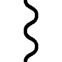、だって久しぶりにサクラちゃんが火影屋敷に来てるっていうから、こうやって顔を見せたのにぃ......。元第七班としてあまりにも冷たい態度だってばよ」
唇をとがらせるナルトを見たサクラが、その面前に立った。両手を腰に当て、ナルトをにらみつける。
「私はいま綱手様と一緒に医療忍術の体系化と連合内での機構造りに大忙しなのッ！ 今日も綱手様が火影時代に残していた資料を取りに来たのッ！ 時間がないのッ！ しかもそれ全部プライベートを削ってやってんのッ！ 任務を済ませたあとの時間しかないから本当に忙しいのッ！ だからアンタの無駄話を聞いている暇はないのッ！ わかった？」
言うとすぐにまた本棚へと足をむけた。
「アンタ最近、ヒナタとはどうなってんの？ 私なんかよりヒナタのほうがちゃんと聞いてくれるんじゃないの？」
「なに？ 焼き餅？」
猛スピードで戻ってきたサクラが、ナルトの頭に拳骨を落とす。石の床に顔から突っ伏すナルトを鬼の形相のサクラが見下ろしている。
「んな訳ないでしょッ！ 私はサスケ君を待つって決めたんだからッ！」
「は、はい......」
倒れたままでナルトが答える。次の瞬間、それまで緩みきっていたナルトの目が急に険しくなった。それに勘づいたサクラも少しだけ真剣にナルトのことを見つめている。
「でもよ、なんか最近やけに胸騒ぎがするんだってばよ」
「身体のなかの尾獣が騒いでんの？」
ナルトの身体にはいまも九尾が居座っていた。それとは別に八匹の尾獣の残滓も残っている。いわばナルトの身体は十尾の人柱力のようなものだった。先の大戦で十尾の人柱力となったオビトは、忍の始祖である六道仙人に匹敵する力を得た。
尾獣たちを身体に飼うナルトもまた、六道仙人の能力の一端を宿している。ナルトの〝胸騒ぎ〟が、常人が感じるそれとは異なっていることをサクラは知っているのだ。
「尾獣たちがどうこうって訳じゃなくて、なんかオレ自身が感じてるんだってばよ」
「だったら勘違いじゃない？」
「酷ぇなぁ......。オレ自身の評価はゼロかよ」
寝転がったまま、またもナルトが膨れる。
「だってアンタが心配したって仕様がないじゃない。サイもシカマルもすでに立派な忍なんだよ。本当にアンタの力が必要になったら助けを求めてくるだろうし、そうじゃなくても火影様が言ってくるはずだよ」
「えぇ、カカシ先生は信用できないってばよ」
「アンタよりは何倍もましよッ！」
寝転がるナルトの尻にサクラの蹴りが炸裂する。強烈な勢いでナルトの身体が浮いて、壁際で直立した。気をつけの体勢のまま、ナルトは怯えるようにサクラを見つめる。
「クダクダ言ってないでアンタはアンタの任務を確実にこなしなさい。それをサイもシカマルも望んでるんだから。特にシカマルはアンタが火影になるために、連合でも里でも必死に頑張ってんだよ。アンタが期待に応えなくてどうすんのよ」
「それはわかってるってばよ......。だからこそあいつらのことが心配なんだってばよ」
サクラが溜息をつく。
「しっかりしなさい。アンタがそこまで想う仲間たちなんだから、下手なことじゃ死んだりなんかしないよ」
「死ぬだなんて縁起の悪いこと言うなってばよっ！」
「あぁもうッ！ あぁ言えばこう言う、こう言えばあぁ言う。めんどくさいんだってばよぉぉぉッ！」
ナルトの口癖を真似たサクラが飛んだ。
「帰って寝ろぉッ！」
飛び蹴り。
吹っ飛んだナルトがドアを破って部屋の外に出ていく。
見送るサクラが笑顔で手を振っていた。
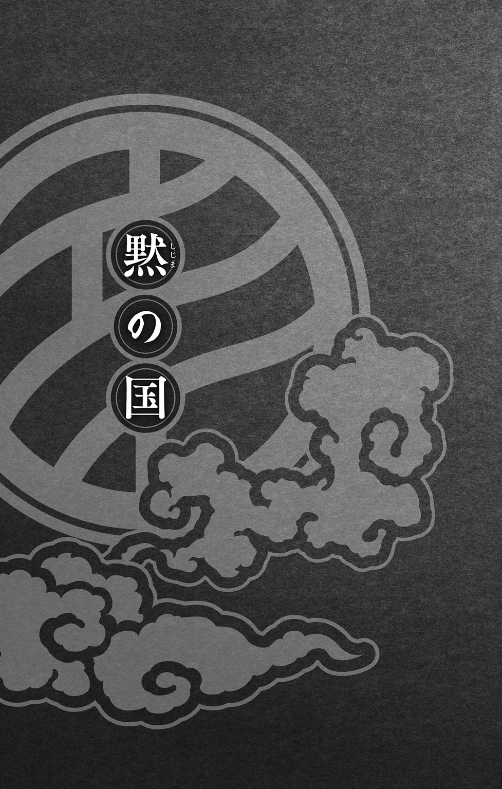
一
昼夜の別なく三日間走りつづけ、シカマルらは黙の国へと辿り着いた。
黙の国は大陸の西端の小国である。国土の七割近くが山と森に囲まれ、残った三割の平野部が国土の各地に点在していた。その平野に作られた町は、どれも村程度の規模しかない。五大国のひとつである火の国に属する木ノ葉隠れの里出身の三人にとっては、ひなびた田舎という程度の感想しか持ちえない国だった。
黙の国の中心である幄の里は、国のほぼ中央に位置している。国境を抜けてからは、つねに山野を駆け抜け、シカマルたちが幄の里に辿り着いたのは木ノ葉を出てから四日目の夕刻近くになっていた。
貧しい国とはいえ、中心の里ともなるといくばくか都会の風情がある。藁屋根が多かった村々の家屋とは違い、幄の里の家はどれほどちいさくても立派な瓦屋根だ。鉄筋コンクリートの建物も多く、街並は綺麗に区画整理されている。
里の街路は蜘蛛の巣のような形をしていた。何重もの同心円と、中心から放射状に伸びた道によって仕切られ小分けになった土地に、民家やアパートが建ち並んでいる。
その同心円の中心に一際大きな建物があった。里の外から見た場合、群立する家並のなかにこの建物がひとつだけ突出している。十数階建てのその建物は、一層一層を仕切るように深紅の瓦屋根が配され、最上階を彩るきらびやかな瓦屋根の両端には、左右一対の金色の獅子像が配されていた。
「あれがこの国の城でございましょうな」
「そんなことドヤ顔で説明されなくてもわかるシ」
里の中心部へとつづく大路を歩く二人の会話を、シカマルは城を見ながら聞いていた。
とうぜん木ノ葉の忍装束などとっくの昔に着替えている。
国々それぞれ習俗が違えば装束も変わる。潜入時の装束は現地調達に限るという暗部の二人の申し出を素直に受け入れ、途中の里で一番裕福そうな屋敷に忍びこみ三人分の衣装をそろえて着替えた。衣を胸のほうで交差させ腰帯を締めて留め、下半身は幅広の袴のようなものを着け、それを脛まである編み上げのブーツの中に仕舞って裾をまとめている。それが黙の国の装束であるらしい。衣はいたって地味。文様などは一切入っていない。シカマルたちが着けているものが地味という訳ではなく、幄の里を歩く民もみな茶や黒や灰色などの無地の衣であった。
街にある商店の看板もネオンつきのものは一切なく、色合いも大人しいものばかり。
都会ではあるが鮮やかさは皆無であった。
「気づいておられまするかシカマル殿」
前を歩く朧が言った。潜入に長けた暗部の二人に挟まれるようにしてシカマルは歩いている。前方の備えは朧だった。
朧の問いはあまりに大雑把である。なにについて気づいているのかという対象が限定されていないから答えようがない。黙っていると、朧は最初から用意していたように自分で自分の問いに答えた。
「大名に仕える従者どもの姿がありませぬ」
「たしかにそうだな」
話しながらも三人の足は真っ直ぐ城にむかっている。別段目的がある訳ではない。足が自然と一番大きな建造物にむかっているという程度のことだ。無闇に突入するような愚行は冒さない。
「往来を歩いておるのは民ばかりにござる。ここまで従者どもの姿を見ぬとは面妖な話でござる」
時代がかった口調で告げる朧の指摘は的確である。
大陸の国々を実際に支配しているのは、大名たちだった。忍は決して政の表舞台には立たない。国の中心となる里といえば、大名の住まいがあるのが当たり前だ。とうぜん大名の本拠であれば、彼らを世話する従者たちも集まってくる。従者と呼ばれる者たちは大名に仕えているため、民とは区別されていた。普通の者よりも豪華な身形をし、物腰も若干居丈高である。こうして往来を歩いていれば、そのような従者たちの姿を見かけなければおかしいのだ。
「大名がいないのかもしれないシ」
ボソリと鏃がつぶやいた。小国のなかには実際に大名がいずに、民の合議によって政を運営しているところもある。
しかしこの国は違う。
確信を持つシカマルは背後を歩く鏃を見ず、城に目をむけたまま口を開く。
「この国は〝ゲンゴ〟という男が支配しているとサイの報告にもあった」
「大名じゃないかもしれないシ」
「なるほど......」
言いながらシカマルは、前方から歩いてくる一人の男を見ていた。漆黒のロングコートを着こんだ目つきの鋭い男である。シカマルたちが着ている黙の国の装束とは明らかに雰囲気が違う。〝暁〟の着ていたものに似ているが、赤い雲の模様はなく、暁のコートのように口元まで隠すような襟もない。合わせ目はファスナーとは違い、銀色の金具で装飾された大きなボタンが首元から腰のあたりにかけて五つ並んでいた。
「さっきからああいう格好のヤツに結構出くわしているとは思わないか？」
「某もそれには気づいており申した」
「人が言ったことにそんなにアッサリと後から乗っかるフツー？」
「あの格好......。格好の標的にござるな」
「うるさいシ、だまれオッサン」
冷淡な鏃のツッコミを無視しながらシカマルはつづけた。
「あそこの男に見覚えはないか朧？」
シカマルが往来の脇にある茶店の前に置かれた緋毛氈の敷かれた長椅子に目をむけた。肩越しにわずかに振り返った朧が、シカマルの視線を追うようにして茶店へと顔をむける。
「ま、まさか......」
「えっ！ どういうこと？ 訳わかんないシ......」
鏃の言葉を聞き流してシカマルは朧に語りかける。
「やっぱりそうか、なんとなく見覚えがあったんだ」
長椅子に姿勢よく座り、瞑目しながら茶を飲んでいる男を二人して見る。その男もロングコートを着ていた。
男が店の者を呼ぶ。ペコペコとなん度も頭を下げながら、店主らしき翁が店の奥から出てきた。その卑屈なまでにへりくだった様子は、まるで大名やその従者たちに媚びを売る民のようだった。
「あれは暗部にいたミノイチにござる」
「その男は......」
「大戦の時に行方不明になったはずだシ......」
シカマルの言葉を切って鏃がつぶやいた。三人はミノイチに気づかれないように目をそらし、茶店の前を通り過ぎる。
「こりゃあ直接聞いてみたほうが早いみてぇだな」
心の奥で火花がチリチリと爆ぜる。
シカマルの口角は自然と上がっていた。
＊
「もう動けやしねぇぜ」
歯を喰いしばり顔じゅうに必要以上の力を込める男に、シカマルは淡々と言った。袋小路である。鉄筋コンクリートの建物に挟まれ昼でもジメジメとしている人気のない場所をわざわざ選んだのだ。
鏃と朧は袋小路の出口を見張っている。数々の潜入をこなしてきた暗部の手練れである二人は、建物の陰に隠れて息を潜めながらじっと路地のほうに神経を集中させていた。
シカマルの足元からは建物の陰になった薄暗さよりも濃い闇がにじみだしている。左右の足から這いだしたそれは、二匹の漆黒の蛇のように地面を這いながら目の前の男の身体に絡みついている。蛇は男の胴のあたりで交わり巨大な掌の形に変じていた。そしてその指先はじりじりと男の首へとむかっている。
影首縛りの術......。
シカマルの生まれた奈良家は、代々影を利用する術に長けた家系である。影首縛りは、自分の影で相手の動きを封じる術だ。この影は物理的な力を有している。よって影で敵の身体を拘束するだけではなく、直接ダメージを与えることも可能だ。
「オレの影でアンタの首を絞めることだってできるんだぜ」
「ま、まさか......。な、なぜ貴様が......」
「アンタ、オレのことを知ってんのかい？」
朧が言うにはこの男は木ノ葉の暗部にいた忍である。シカマルを知っていても不思議ではない。
「オレはあんたの名前を知ってるぜ、ミノイチさん」
「そ、そんな名は知らん」
「とぼけんなよ、アンタ、元は木ノ葉隠れの忍なんだろ？」
「し、知らん」
ミノイチの身体を這う自分の影に念を込める。首筋へとむかっていた掌を象った影が、ミノイチの喉仏をつかんだ。
「かはッ......」
喉をつまらせミノイチが苦悶の声をあげる。
「アンタが木ノ葉の生まれなら、奈良家のこの術でどういうことができるかもとうぜん知ってんだろ？」
このまま絞め殺すこともできる......。
そう脅しているのだ。
「なんでアンタはこんな所でそんな格好をしている？」
「お、オレはもう忍ではない」
シカマルをにらむミノイチが掠れた声で言った。
「俺は革者だ」
「革者？ そいつぁなんのことだい？」
「きゅ、旧態依然とした忍の世界にのんべんだらりと生きているお前たちのような者には、オレたちの崇高な志などわかりはせぬ」
「なに訳のわからないことを言ってんだアンタ。オレは〝革者〟ってのがなんなのかって聞いてんだぜ」
影の指先にさらに力を込める。
「ぐぅっ......」
ミノイチが呻いた。
「このまま縊り殺しちまったっていいんだぜ」
自分でも吐き気がするようなセリフを吐いた。
心が闇に侵されてゆく......。
「オレが説明したところで、理解できる訳が......。くぬぅっ！」
喉仏まで影を伸ばして、一気に力を込めた。
「無駄話ばっかりしてっと本当に殺っちまうぞ」
ミノイチを見つめるシカマルの瞳は、完全に瞳孔が開ききっていた。
「わ、わかった......」
「わかりましただろ？」
「わかりました......」
影の力を弱めると、ミノイチが涙目で咳きこんだ。
「さぁ答えろ。革者とはなんだ？ 元忍であるアンタたちはなにをしようとしている？」
矢継ぎ早に繰り出される問いにミノイチが目を白黒させる。シカマルの冷酷な表情を見て、無駄な言葉は一切許されぬことを悟り、おおきく息を吸いこみ一気に語りだした。
「この国は我ら〝革者〟が支配している。大名などという下賤な者どもは、すでにこの国にはいない。革者とは忍であった者たちがゲンゴ様の崇高な志によって目を開かせてもらった後の称号である。我らがゲンゴ様とともに目指すのは、この世界の真の革命だ。お前たちがなにを企んでいようと、ゲンゴ様の前では無力よ。オレからなにを聞こうと、この国の真実を知ろうと無駄なことよ......」
言ってミノイチは笑った。
「やめろっ！」
ミノイチが舌を嚙み切ろうと力いっぱい上下の歯を嚙み合わせた。
いや。
一瞬早くなにかがミノイチの首のあたりを貫いた。
「全身を麻痺させるチャクラの点穴を突いたから、三日くらいは眠ったまま動けないシ」
いつの間にか背後に立っていた鏃が言った。
「革者ねぇ......。なんか気取ってるシ、いけ好かないシ」
口をとがらせる鏃の目が、眠るような穏やかな表情で寝転がるミノイチを見下ろしていた。
二
無機質なコンクリートの床から伝わる冷気で身体が震えるのを、シカマルは抑えようともしなかった。窓のない壁も天井も、すべてコンクリートである。
暗灰色の空間に三人車座になっていた。
三人とも革者のロングコートを着けている。すべて奪ったものだ。いま三人がいる部屋も、そのなかの一人のものだった。いまこの部屋の持ち主は、隣の部屋のクローゼットのなかで鏃のチャクラを受け気絶している。
コートを奪う時に尋問することも忘れていない。その結果、いろいろとわかったことがある。
「どうやらシカマル殿の見立てどおりとなり申したな」
口火を切ったのは朧だった。
「やはりこの国はゲンゴなる男の強烈なカリスマ性によって支配されておるようでござる」
朧は〝強烈なカリスマ性〟と言ったが、シカマルもそれには同感だった。
シカマルと朧のコートのために男の革者が二人。そして鏃のために女の革者を一人。ミノイチを含めあわせて三人の革者を尋問したのだが、そのいずれの者にも言えることがあった。それが異常なまでのゲンゴへの執着と信頼である。
彼らのゲンゴへの信望は、木ノ葉の忍が火影やナルトにむけるようなものとは一線を画していた。人が人を想い慕う。それが木ノ葉における火影やナルトの存在だとシカマルは思っている。同じ人間に対しての尊敬だ。しかしゲンゴへのそれは違う。人が神を恐れ敬うかのような強固な力を、シカマルは革者のなかに感じた。端から人間である自分たちとは違う存在として、ゲンゴのことを無条件に受け入れているのだ。
人をここまで心酔させる男とは如何なる者なのか？
シカマルは純粋な興味を覚えはじめている自分がいることを自覚していた。
「ゲンゴを始末しちゃえば終わりって、最初からの話だシ」
あっけらかんと鏃が言った。
「そのために私とオッサンが選ばれたんだシ、そうじゃなきゃ逆に私たちの出番はなかったシ。逆によかったんだシ」
〝逆〟の使い方がいささか乱暴だが、鏃の言うことは的を射ている。
「革者たちのゲンゴへの想いは、もはや信仰にござる」
「私も同感だシ」
そう言って鏃がうなずきながら手をあげた。
「あそこまでゲンゴって男のことを慕うってことは、なんかあるシ」
「なんかとはなんだヒノコ？」
「ぬあぁっ、シカマルさんッ！ 名前は呼ぶなって言ったシッ！」
細い眉尻を思いっきり上げながら鏃が右の人差指をピシャリとシカマルの鼻先に突きつけた。その先端でオレンジ色のチャクラの稲妻がチリチリと瞬いている。
「今度名前を呼んだら撃つッ！」
語尾に〝シ〟を付け忘れている。
「なんで？ 可愛い名前じゃ......」
「それが嫌なんだッ！」
オレンジの雷がわずかに激しくなった。
「もっと轟雷とか疾風とか五月雨とか、そんな格好いい名前がよかったシ」
有能な忍であっても、やはり中身は十四、五の娘である。格好いいといって並べた名前のセンスが、どう考えても幼稚すぎた。こみ上げてくる笑いを喉の奥に押しこめながら、シカマルは鏃を見つめる。笑いをこらえている顔を真剣な表情と勘違いしたのか、鏃がちいさく息を吞んだ。
「すまん。お前がそこまで自分の名前を嫌っているとは知らなかったんだ。以降、気をつけよう」
「わ、わかれば別にいいシ......」
ドギマギするように鏃がうつむく。その足元には幄の里の地図が広げられていた。この部屋の主が持っていた物である。
「こうして見ると本当に蜘蛛の巣のようでござるなぁ」
腕を組み朧が言った。
シカマルも幄の里の地図に目を落とす。円の形に広がる里の真んなかに巨大な城の絵が描かれている。その下に〝俘囚城〟と書かれていた。
「俘囚......」
シカマルのつぶやきに朧が答える。
「戦においての捕虜、または中央における周辺に住まう蛮族を呼称する際のいわば蔑称にござるな」
「蔑称か」
朧の解説に相槌を打ちながら、シカマルの頭は回転しつづける。
「この名はゲンゴがつけたのだろうか？ それともゲンゴが城主となる以前からこの名で呼ばれていたのだろうか」
「黙の国は他国との関わりを避けつづけてきた国にござる。それ故、我ら木ノ葉の暗部も、この国の城の名前までは知り申さず」
なんとなくシカマルはゲンゴが名づけたような気がした。漠然とした直感だ。だから二人には言わなかった。
「どうしてこんな名を国の要となる城につけたのか......」
「五大国や近隣の中小国を中心とした時に、自分たちはあくまで辺境に住まう蛮族である。〝俘囚〟であると自分で自分を卑下しておるのでしょう」
「そうだろうな」
「馬鹿馬鹿しいシ」
二人の会話を黙って聞いていた鏃が、不満そうに口を開く。
「自分から差別されてますなんて宣言するなんて、どんだけ卑屈なんだよって思うシ。つうかそんな後ろむきなヤツらが、忍の世界を根底から覆すようなことするってのはおかしいでしょ？」
またも語尾の〝シ〟を忘れている。
鏃は怒っているのだ。
ではなにに怒っているのか？
おそらくみずからを俘囚と位置づけるこの国の者たちにだ。
「卑屈だから、後ろむきだからこそ牙を剝くこともあるんじゃないか？」
シカマルの返答に鏃が嫌悪の視線で応える。真正面からそれを見つめ返し、シカマルはつづけた。
「復讐心ってやつは、相手への恨みから生まれるもんだ。そして恨みってのはかならずしも直接手を出さなきゃ買わないってもんじゃねぇだろ」
「ではシカマル殿は、この国の者たちは他国を恨んでいると申されるのか？」
「それこそ馬鹿馬鹿しい話だシッ」
またも鏃が割って入る。
「この国を支配している革者ってのはみんな元は他国の忍だっていうじゃないか」
鏃の言うとおりだった。
革者たちへの尋問によってわかったことだったが、この国の支配階層となっている者たちはすべて、もともと他国の忍であった者たちなのだ。先の大戦で行方不明となった者の一部、そして一年の間五大国で続発していた抜け忍たちが、この里に辿り着いて革者の一員となり、ゲンゴの下で民を統率しているという。
この国も昔は大名が支配していたらしい。それらを追いだし、革者という存在を招来し、この国の統治を根底から変革したのがゲンゴだ。
現在の黙の国は忍によって支配されているといってよい状況であった。
「革者が他国を恨むってんなら、元から自分の里を恨んでたってことになるシ」
「そういう忍もいる」
鏃が鼻息を荒らげる。シカマルは冷静な口調を崩さずにつづけた。
「先の大戦の原因を作った〝暁〟という集団にいたメンバーの大半は抜け忍だった。類まれな才能を有しながら集団に馴染めず、忍の世界を嫌った者たちだ」
自分を取り巻く境遇に不満を持ち、その暗い感情を醸造させてゆく。その果てにあるのは自国への恨みなのかもしれない。己の不遇や運の悪さは里の仕組みや現状が腐っているせいだ。悪いのは己ではない、里ひいてはこの世界そのものだ。そう飛躍してゆく先に暁や革者のような存在が生まれるのかもしれない。
「もしも......」
朧が地図に目を落としたままつぶやいた。
シカマルも鏃も言葉を待つ。
「革者たちがシカマル殿の申されるとおり、忍の現状に不満を持っておるといたしまする」
「うん」
シカマルの相槌を挟んで朧がつづける。
「それでこの国に流れてきた......。しかし、やっていることは忍の世界におった頃となんら変わらぬことではありませぬか」
朧の言ったのは、革者たちの生業についてだった。革者は元忍の集団だ。忍の任務をこなそうと思えば、いくらでもできる。
黙の国の革者たちは独自のルートを使い、大陸諸国から仕事を集めていたのだ。しかも連合の基準よりも安い価格で請け負うのである。中小諸国のような金のない国にとっては助かる話だ。五大国のような巨大な国にとっても安いに越したことはない。
連合への依頼量が目に見えるほどに減ったのは無理もない話だった。
朧の言うとおりである。
忍の現状に嫌気がさして黙の国に来たはずの者たちが、この国でまた忍の真似事をしているのだ。たしかに滑稽な話だった。
「真の革命だシ......」
鏃がおもむろにつぶやく。二人が視線を送ると、鏃は照れくさそうに天井を見あげながらその薄い唇を動かしはじめた。
「ミノイチが言ってたシ。ゲンゴ様と我らが望むのは世界の真の革命だって」
「そのための依頼の請け負いだと？」
シカマルの問いに鏃がうなずきで答えた。
「まぁいずれにせよ、そのゲンゴという男の顔、一度拝んでおかなければなりませぬな」
「いい機会に恵まれたシ」
言った鏃の細い指先が俘囚城の前にある広場を指した。
「参加自由の演説とは......。暗殺にはおあつらえむきな舞台でござるな」
朧が悪辣な笑みを浮かべながらシカマルを見た。普段は質実剛健を常とする朧が見せた、殺しを楽しむかのような笑顔。やはりこの男も暗部の人間なのだということをいまさらながらに実感した。
「朧の術を利用して人波に紛れてオレたち二人が広場に入る。もしもゲンゴへとオレの影が伸ばせるようだったら、そのまま拘束する。お前は広場が見渡せる建物の屋上に潜んで、きっかけを待て。ゲンゴに変化があったらすぐにチャクラの矢を放て」
鏃も朧に負けず劣らずの凶悪な笑みを浮かべながらうなずいた。
「お前が頼りだヒノコ」
「だから名前は止めれってなん度言えばわかるんだッ」
怒りに任せて鏃が立ち上がった。憤怒の形相でシカマルを見下ろしている。
「四十回......」
ボソリと朧が言った。
「あぁ？」
先輩に対しての礼などすでに頭にない鏃が、口をへの字に曲げながら朧をにらんだ。しかし朧は怯むことなく、鏃にむかって口を開く。
「シカマルの四にシカマルの〇。そ、それで四十回」
「シカマルのカはどこに行ったんだよオッサンッ！」
鏃の蹴りをすばやく避けた朧が、シカマルの背後に隠れた。四十を超えたいいオッサンが、しかもどちらかといえば武骨で体格のいいオッサンが、しかも目の前の娘は自分の後輩であるオッサンが、悲しいくらいに身体を縮こまらせている。お茶目な自分を演出しているのかもしれないが、あまりに気持ち悪くてシカマルは振りむくこともできなかった。
「本当に明日は大丈夫なのかよ......」
溜息とともに二人に問う。
「大丈夫だシッ！」
「心配御無用にござるッ！」
シカマルを挟みながらにらみ合う二人が同時に答えた。
溜息がもう一度こぼれ出た。
三
里のすべての人間が集まったのではないかと思えるくらい、俘囚城前の広場には人がごった返していた。黒いロングコートを着こんだ革者だけではない。老若男女、貴賤の別もなくあらゆる階層の人々が、広場に集い主役の登場をいまや遅しと待ちわびていた。みなの顔は一様に熱気を帯び、瞳は爛々と輝いている。高揚しているのか、近くの者と語らい合う声が、おしなべてうるさいくらいに大きい。
人々の熱が充満しているせいか、ロングコートを着こんだシカマルの肌は汗で湿っていた。
隣には朧がいる。
鏃は広場の脇のコンクリートの建物に潜んでいるはずだ。
シカマルは朧の術で、自分のチャクラをコートの持ち主のものへと変じている。質も量もすべてそっくりそのままにコピーしている。朧も同様に、みずからのコートの持ち主のチャクラをまとっていた。二人とも顔にも変装をほどこしている。これも暗部である朧の技術を用いてのものであった。姿形を真似ても敵にチャクラの質を見極めることのできる者がいれば、すぐに見破られてしまう。朧の術はそんな変装の欠点を十二分にカバーすることができた。チャクラごと変装してしまえば、見極めることは困難だ。
おまけにこの群衆である。
シカマルたちを敵と知覚できる者などいる訳がない。
「とりあえずあの場所の近くまで行きましょうぞ」
声をひそめて朧が言った。その目がむかう先には演壇が設えられている。登るための木組みの階段と骨組のみの演壇であった。壇上にはなにひとつ置かれていない。警護の者すらいないのだ。なのに群衆は手が触れられるほど近くまでひしめき合っている。
「本当にゲンゴは来るのでござりましょうや？」
不審げに朧が言った。
無理もない。
これほど無防備な壇上に一国の主が立つというのは、あまりにも危険に思えた。命を狙う者の存在を一片たりとも疑っていない。そんな様子の演壇なのである。
「とにかく近くまで行って待つ。もしゲンゴという男でなかったら静かに撤退すればいいだけのことだ」
「承知いたし申した」
影首縛りの術が届く距離まで行けばいい。動きを封じてしまえば鏃のチャクラが確実に仕留めてくれるはず。
「どうやら現れたようにござる」
朧のつぶやきが終わるかどうかという頃、演壇に近い群衆から巨大な歓声があがった。その荒々しい波はみるみるうちに広場中を伝播してゆき、あっという間にシカマルを包んだ。鼓膜が破れそうになるほどの声の嵐のなかを、シカマルは群衆を搔き分けながら演壇へとむかう。
やがて演壇の上に一人の男が現れた。
漆黒のコートは革者と同じデザインであるが、銀細工の留め金のあたりがみなのものよりも派手な装飾に彩られている。袖にも特別な銀糸の刺繡がほどこされており、柄は無数の蛇だ。髪は濃い藍色。わずかに顎が張った男らしい骨格で、目鼻はすっきりと整っている。悠然とみなを見下ろす瞳には、涼しげな知性が宿っていた。顎にわずかに髭をたくわえている。歳の頃は三十代半ばといったところか。
「ヤツがゲンゴでありましょうな」
歩みを止めず朧がつぶやく。シカマルは答えずにただ前に進みつづける。しかしその脳裏には、目の前の男がゲンゴであるという確信めいたものがあった。
壇上の男がゆっくりと右腕をあげる。あれほどうるさかった歓声が瞬時におさまった。その反応に満足するように男は目を閉じて口角をわずかに上げる。そして一度深く息を吸ってから瞼を開け、悠然と語りはじめた。
「まずはここに集まってくれたすべての者に感謝する」
深く重く、それでいて涼やかな声だった。耳ではなく身体全体に染み渡るようななんとも不思議な質の声である。シカマルは男の声に心を撫でられたような、えもいわれぬむず痒さを感じた。
どうやら朧も同じような感覚を覚えたらしく、歩きながらわずかにシカマルのほうを見た。視線を合わせずシカマルは足だけを黙々と動かす。
ちいさな辞儀をしてから、男はふたたび語りはじめる。
「私がこの地に起ちて早十年。いまでは多くの同志を得、この国も栄えはじめた。しかしまだまだ我らの想いはなにひとつ満たされても叶えられてもおらぬ」
みんなが黙って聞いている。壇上の男が言葉を切ると、異様な静寂が生まれた。わずかふた言だけで、広場は完全にこの男が支配する空間となっている。
「黙の国に住まう民に問いたい！」
いきなりそれまでの穏やかな口調とは違った激しい声で男が言った。その魂からの叫びと同時に両腕を広げる。
「大名どもが支配していた頃と、いまのこの国......。いったいどちらのほうが住みよい世界であろうか？」
「ゲンゴ様ぁ！」
民が一斉に歓声をあげた。おおきなうねりとなった声は、男を肯定する言葉で溢れている。
「どうやらあの男がゲンゴで間違いのうござりまするな」
朧が言った。シカマルはうなずきを返し演壇へと歩む。すでにあと数メートルで影首縛りの圏内という所まで来ていた。間合いに入ればすぐに拘束する。
一発勝負だ......。
ゲンゴが右手を高々とあげた。民が静まる。
「みなの想いは十分に受け取った。力も知恵も忍出身の我らに及ばぬ大名どもに支配されておった暗黒の時代はすでに過去。民よ、もう安心せよ。みなのことは、我ら革者がその力と命をもって永遠に守ろうではないか。みなはひたすらみずからの暮らしのために邁進してくれればよい。それこそが我ら革者の望みだ」
誰もがゲンゴの言葉に酔いしれていた。あまりにも異様な盛り上がりである。涙を流している者までいた。シカマルには正直それほど内容のある言葉だとは思えない。まだ導入であることを差っ引いても、そう上手い演説とは思えなかった。が、声に奇妙な力があることだけは認めよう。内容ではないところで聞かせてしまう力が、この男の声にはあった。
「黙の国は大陸の辺境にある。この国の歴史は、他国から虐げられた歴史。先人たちが国を閉ざしたのは、他者との交流を絶つためではない。己が身を守るためだった。国を閉じなければならぬほど、この国は弱くちいさかったのだ。しかしそれももう終わる」
ゲンゴの声が次第に圧力を増している。
「この世界を治めるべきは大名などではなく、忍の力を持った我々だっ！ 忍の力こそ民に安寧をもたらす真の正義。人を超えし力を有した者が、世を統べることこそ本来あるべき姿。忍や民をみずからの下に置き、我欲のためだけに生きる大名など無用のものではないかッ！ この国を見よ。私が大名どもを駆逐して十年。国はかつてない繁栄を見せている」
ゲンゴが胸を張る。
「もうすぐだ......」
隣を行く朧に告げる。あと数歩で影の届く距離まで来ていた。
「私はこの世界から大名たちを駆逐し、我らによるあらたな世界を築く。なぜ忍が差別されねばならない？ 大名よりも優れた力を持つためだ。人として過ぎたる力を持つためではないかッ！ なぜ超越した力を持つ者が虐げられねばならない？ 人より優れているということは美点ではないか？ 民であろうと優れていれば這い上がれる。そんな世の到来を恐れるからこそ、大名どもは忍を差別し、隔離し、みずからの勢力下に置いた。忍も民も、大名どもの我欲の犠牲者なのだ」
間近に迫ったゲンゴの瞳から蒼い炎があがったような気がした。
「変革だ......」
あと一歩で間合いに入る。
民の熱狂から判断して目の前の男は十中八九ゲンゴ本人だ。
ここまですんなりと接近できたことにシカマルは驚いている。
罠の可能性を考える。
しかし相手がシカマルたちを知覚しているとは思えなかった。
この機を逃すことなど考えられない。
「あらたな世をめざし暁は立った。しかし彼らは忍によって滅ぼされた。差別と支配に甘んじる旧態依然とした忍どもによって滅ぼされたのだ。暁はしょせん、暁......。眩い朝の先触れに過ぎぬ。聞けっ、黙の闇に朝日を待つ者たちよ」
ゲンゴが悠然と両腕を広げた。その様はまるで天から神を迎えるかのようである。
「あらたな時代の陽光は、この黙の国より照るっ！」
民が歓声をあげる。
騒音があたりを支配した。
好機っ！
シカマルは壇上にむかって影を放った。二匹の黒蛇がスルスルと演壇の骨組みを這い上り、ゲンゴの足へと走る。蛇の牙が足をとらえた時、ゲンゴは動きを封じられ、鏃のチャクラで命を失う。
それまでは自分の言葉に酔っていればいい。
蛇がゲンゴの足を......。
とらえなかった。
「なッ！」
間合いに入ったはずだ。
なのに影が伸びない。
「そこの鼠」
ゲンゴの凍てついた視線がシカマルを射た。
「気取られておりまするッ！」
朧が叫ぶ。
ゲンゴの背後から数個の影が飛んだ。
飛来した影が朧にのしかかり、そのまま拘束した。
「くッ」
もう一度、ゲンゴにむかって影を伸ばす。
「無駄だ」
ゲンゴの非情な声。
影が言うことを聞かない。
いままで手足のように動かせていたはずの影が、糸の切れた凧のように標的を見失いグルグルと地面をのたうち回っている。
ならば......。
シカマルは壇上へと飛んだ。
策が破れたのならば、みずから戦うのみ。
刃が迫っているというのにゲンゴは薄ら笑いを浮かべたまま動こうとしない。
腰のクナイを引き抜き、喉元めがけて振るう。
演壇に爪先がついた瞬間、なに者かがシカマルの身体を真横に蹴り払った。衝撃で壇上を転がりながら、体勢をととのえ片膝立ちとなってクナイを構える。
「ま、まさかお前......」
男がゲンゴとシカマルの間に立ち塞がっていた。血色の悪い真っ青な顔、感情を読み取れぬ茫漠とした瞳、清廉な気性を表すような真一文字に引き結ばれた口元。間違いなくあの男だった。
「なにやってんだよ......」
シカマルは男の名を呼んだ。
「......サイ」
四
サイの手のなかで絵筆が躍っている。もう一方の手にある巻物の上を筆先が走る度に、虎が現れシカマルに襲いかかった。
壇上から転がり落ち、敵の只中にいる。
サイだけに構っている暇などないのだ。
頭が混乱していた。
どうして己の術は効かない？
なぜ変装がばれた？
鏃は大丈夫か？
敵の攻撃を搔い潜りながらもう一度ゲンゴへむかおうとするシカマルの視界の端に、十数名の革者たちにのしかかられて動きを封じられた朧の姿があった。必死に身をよじっているが、それだけの男たちに乗られていては抵抗することは不可能だ。
シカマルの頰をサイの描いた虎の爪が裂いた。
変装のために着けていた樹脂製の皮がベロリと剝がれる。
「いますぐ化けの皮を剝がして楽にしてあげますからね」
無邪気な笑みを浮かべながらサイが言う。その手は止まらない。何匹もの虎がシカマルを取り囲んでいる。
「どうしてお前......」
「さっきからアナタはボクを知っているような口ぶりですね」
名乗る訳にはいかなかった。たとえ拘束されて素性が知れることになろうとも、自分から名乗ることはできない。忍の鉄則である。
群がる革者のむこうに演壇が見えた。その上には悠然と腕を組み、シカマルの必死の抵抗を見下ろすゲンゴの姿がある。
あそこまでもう一度......。
墨で描かれた虎の頭に飛び乗りクナイで突き刺し、シカマルはふたたび飛んだ。背後で虎が黒色の飛沫と化す。
着地と同時に駆ける。
目の前には気の遠くなるほどの数の敵。
「行けるか？」
みずからに問いながらシカマルは両手で印を結んだ。
足から無数の影が四方に伸びる。
影縫いの術。
針と化した影で敵を貫く術である。無数に針を作りだせるので、複数の敵を相手にするのに都合がよい。
周囲にいる虎と敵に狙いを定めた。
無事に影は広がった。念じれば一斉に地面から這い出て敵へとむかう。
「行けッ！」
気合いを入れるようにシカマルは言った。影が地面からムクリと鎌首をもたげる。
「無駄な真似はよせ」
壇上に立つゲンゴの声がシカマルを打った。するとそれまで威勢よく動いていた影が、力を失いシュルシュルという音をたてながらシカマルの足へと戻ってくる。
「な、なにをした？」
ゲンゴに問う声は怒号に包まれて消えた。
どうしてヤツの声はこれほど届くのか？
ヤツはなに者なのか？
「あれ？ その術をボクは知っていますよ」
サイが、いつの間にか目の前に立ち塞がっていた。
「アナタでしたかシカマルさん」
「サイ、てめぇ......」
「無駄な足搔きは見苦しいですよ」
言ったサイの絵筆がいままで以上に激しく躍る。巻物から身を起こしたのは、これまで以上に巨大な黒白の虎だった。
「アナタも直にわかりますよ」
絵筆を握った手がシカマルにむかって突き出される。それを合図として、巨大な虎が前足を大きく振り上げながら襲いかかってきた。
「くそったれ......」
覚悟を決め、クナイを手に虎にむかって飛ぶ。
右足をなにかがつかんだ。それからすぐに今度は左足をつかまれる感覚があった。革者たちだ。飛ぼうとしていた勢いを殺され、顔から地面に叩き落とされる。その上になん人もの敵がのしかかってきた。
「アナタほどの切れ者が、虎が陽動だということを見切れないなんてよっぽど混乱していたんでしょうね」
敵に押し潰されて息をするのがやっとのシカマルを、サイが見下ろしている。その背後にゆっくりと近寄ってくる人影を視界にとらえた。
ゲンゴだ。
「面を取れ」
シカマルの背に乗っている革者にゲンゴが命じた。頰の傷に指が突っこまれ、そのまま一気に皮を引き剝がされる。
「ほぅら、やっぱりシカマルさんだ」
「この男が木ノ葉隠れの俊英、奈良シカマルか」
まるで捜し物が見つかったと言わんばかりの上ずった口調でゲンゴが言った。妖しく光る薄水色の瞳がシカマルをとらえて離さない。笑みをたたえながら、シカマルは口を開いた。
「ちゃんとここで始末しておかねぇと、後が怖ぇぞ」
「大丈夫だ、貴様はオレとともに生きる」
自信に満ちたゲンゴの声と同時に首に衝撃を受け、シカマルはそのまま意識を失った。
＊
真の暗闇だった。
一寸先の自分の手さえ見えぬほどの闇のなかで、シカマルはただひたすらに思惟を重ねている。幾日過ぎたのかさえわからない。ただ運ばれてくる食事の回数と腹具合から推し量って、すでに五日以上は経過しているはずだった。
どうしてこうなったのか？
幾度も考えてみたが一向に全体像がつかめない。
サイが現れる以前に問題がある。
ゲンゴが立つ演壇のそばまで行き影を伸ばした。しかし影はゲンゴの足には到達せず、行方を見失う。そしてゲンゴはシカマルたちを認識した。ヤツは二人を〝鼠〟と呼んだ。チャクラをも完全に変えていたのにである。
まるであの男の間合いには術を無効化するバリアでもあるかのように、シカマルたちの術はいとも容易く防がれてしまった。
果たして本当にゲンゴは術を無効化するのか？
わからない。しかしなんらかの影響によって朧やシカマルの術が妨害されたのだけは間違いなかった。
シカマルの影はゲンゴに届かなかった。影縫いをサイの獣らにむけて放とうとした際にも、影はいきなり力を失った。いずれの時も、ゲンゴかあるいはその周囲のなんらかの影響によってシカマルの術は力を失ったと考えるのが一番妥当なところだろう。その状況から考えてみても、朧の術も効力を失っていたか薄められていた可能性が高い。変装の対象となった者のチャクラとシカマル自身のチャクラが混ざり合い、異質なチャクラとなった。それをゲンゴに気取られたのだと考えると理屈が通る。
奴には術が効かない......。
なぜなのか？
あのわずかな時間では、ゲンゴの力の正体を見破るだけの情報は集められるはずもない。吟味する要素が少ないから、とうぜん推論すら立てることができない。それがシカマルを苛立たせる。
焦らせる......。
「ぐっ！ ぐむっ！」
どこからか苦痛に呻く朧の声が聞こえてくる。だいぶん前には鏃の苦しむ声も聞こえた。どちらも近い所に囚われているらしい。厳しい拷問を受けているのか、聞こえてくる声はつねに呻き声だった。
なぜかシカマルは拷問を受けていない。
「すまない」
呻き声をあげる朧へむけ、聞こえるはずもない言葉を投げた。
みずからの短絡的な行動が招いた結果である。
もっと慎重にゲンゴのことを調べてから決行すればよかったのではないのか？
やりようはいくらでもあったはずなのだ。
冷たい石の床を殴る。
なん度もなん度も......。
「生きているか？」
闇のなかで声がした。
ゲンゴだ。
「死んだか？」
答えが返ってこないのを気にするようにゲンゴが言った。しかしヤツはシカマルのチャクラが潰えていないことなど、とっくに承知しているはずだ。死んでいないことをわかっておきながらの皮肉なのである。
「飯はちゃんと喰っているようだな」
出される物は全部食べている。もちろん毒が入っていないことを確認した上でだ。ひと舐めするだけで毒の有無を知る訓練は、忍の基礎中の基礎である。
飯を喰うのは諦めないためだ。
生きていればかならず機は訪れる。その時、身体が動かなければ道を開くことすらできずに死んでしまう。忍はつねに命を諦めないものなのだ。どんなことがあっても生き延び、かならず任務を遂行してこそ真の忍なのである。耐え忍んでこそ忍なのだ。
だから朧と鏃の生もシカマルは信じていた。
「暗闇に包まれ幾日も過ごし、少しは大人しくオレの話を聞く気になったか？」
「生憎、闇と影はオレの友達なんでね」
「面白いヤツだ」
言ってゲンゴが笑った。
「また来る」
気配が消えた。
「ぐぁぁぁぁぁぁっ！」
朧の悲鳴がふたたびはじまった。
五
火影の執務室などとは比べものにならないほど巨大な広間だった。入り口にある両開きの豪勢な扉から部屋の奥まで真っ直ぐにつづく緋色のカーペットの中ほどに、シカマルは座らされている。両手は後ろに回され、手錠がはめられていた。立ち上がって下手な真似をしないように、両脇に警護の革者が一人ずつ立っている。彼らも元は忍だ。シカマルが妙なことをしようとすればすぐに気づく。
背後には朧と鏃の姿がある。二人もシカマル同様に警護の者がつき、手錠をはめられていた。ただひとつ違ったことといえば、二人の顔が痣や傷だらけであったことである。酷い拷問を受けたであろうことは、疲れきった二人の表情からも明らかだった。
食事の回数から類推して、すでに十日ほどが経過している。その間シカマルは一切の拷問を受けなかった。幾度かゲンゴが直接出向いてきたが、いつもとりとめのない雑談をしてすぐに帰ってゆくだけだった。今日は晴れているだとか、夜の食べ物はなににするかなど、本当にどうでもいい話をして帰る。
「頭を下げろ」
右側に立っている革者がそう言って、シカマルの頭をつかんでカーペットに額をぶつけた。
「彼らは大事な客人だ。乱暴に扱ってはいかんな」
はるか前方からゲンゴの声が聞こえる。それと同時に、しゃがみこんでシカマルの頭を押さえていた革者が、恐縮するように立ち上がった。頭が軽くなる。
「部下どもが失礼をした。面を上げてくれ」
言葉を聞くよりも早く、シカマルは頭を上げてゲンゴを見た。赤いカーペットの先に大理石の階段があり、その最上段がもうひとつの広い空間になっている。そこに豪壮な龍の彫刻を長大な背板に配した椅子がある。その椅子にゲンゴが足を組み座っていた。左の肘を肘掛けにつき、手の甲に頰をのせ、身体を左に傾けながら悠然とシカマルを見下ろす姿はまさにこの国の支配者である。
「もっと近くへ」
ゲンゴが言うと、両脇に立っていた革者がシカマルの腕を抱えて立ち上がらせた。そして大広間の四分の一程度、ゲンゴのいる空間へとつづく階段までひと駆けという所に、あらためて座らせられる。鏃と朧も同様だ。
「少しは私の言葉を聞く気になったか？」
「どういう意味か理解しかねるんだが」
決然と言い放ったシカマルにゲンゴがちいさく笑った。ゲンゴが座る椅子の両脇には十数名ずつの革者がつき従っている。側近然とした横柄な態度で、シカマルを見下ろしていた。そのなかにサイの姿がある。黒いロングコートを着た姿は、すでに革者のそれであった。仲間であるはずのシカマルを見つめるサイの瞳に動揺も逡巡もない。もともと感情の希薄な目の色をしていたが、それでもここまで茫洋とした目つきではなかった。
「英明と名高い貴君のこと......。すでに私の意志を読み取っていると思っていたのだがな」
ゲンゴがなにを欲しているのか？
そんなことにはとっくの昔に勘づいている。しかしそれはあまりにも荒唐無稽であり、実現性が皆無なことなので口にしないだけだ。
「私の片腕になれシカマル。貴君ならば私とともにあらたな世を生みだすことができる。私は、貴君はそれができる男だと見ている」
「御免だね」
即座に言い放つ。ギラギラとした殺気をみなぎらせた目でゲンゴを射抜く。しかしこの国の主は、どこ吹く風といった様子で悠然と視線を受け止める。
「いきなり片腕になってくれと言って、ハイ喜んでなどと言うような男を私は求めてはいない。それでよいのだシカマル」
「そのなにもかもを見透かしたような口ぶりがいちいちむかつくんだよ。アンタにオレのなにがわかるってんだ？」
本当は怒りなど感じていない。こんなことで冷静さを欠くような愚かさは、シカマルにはなかった。喧嘩を売ってみることで相手の出方を見たい。ただそれだけのことだった。
「人は他人のことを完全に知ることなど絶対にできない。だからこそ、こうして語り合うのではないのか？ 私は貴君を見透かしてなどいない。ただ貴君よりも少しだけ長く生きているから、貴君の情動が少しだけ見て取れるだけだ。それが高慢な口調となって顕れていたというのであれば謝ろう」
「そういう態度がむかつくって言ってんだよ」
「そうか......」
自嘲するようにゲンゴが目を伏せて笑った。そしてわずかの間、沈黙した。虚空に視線を彷徨わせながら、なにかを考えていたゲンゴがふたたびシカマルへと視線を落とし、口を開く。
怒りをかわすために、わざと間を作ったのだ......。
考えているように見せているだけで、ゲンゴはすでに次の会話を用意している。しかしこのままの調子で会話をしていれば、シカマルは怒った姿勢を崩さず強硬に嫌悪の返答を繰り返す。不毛なやり取りを避けるため、ゲンゴはわざと間を作ったのだ。呼吸を置き、時間を置くと二人の間に流れる空気は変わる。それを回避するためにはシカマルは怒りの言葉を吐きつづけていなければならないが、それではただの遠吠えになってしまう。
ゲンゴに誘導されるように沈黙するしかなかった。
この男はこの手の駆け引きに慣れている......。
「ひとつだけ貴君に問いたいと思うが、答えてくれるか？」
「なんだ」
素直に言ってからシカマルは後悔した。しかしもう遅い。
「なぜ忍はこれほどに虐げられねばならぬのか？」
忍が虐げられている？
どういう意味なのかよくわからなかった。
沈黙するシカマルを見たゲンゴが、自分の問いを補強するように語りはじめる。
「忍たちが住む里は〝隠れ〟という形容をかならずつけられている。なぜ忍は隠れなければならない？ この大陸の国土の何割が果たして忍の土地なのか？ 微々たるものではないか。この世界を支配している者は他にいる。大名だ」
ゲンゴの言うとおりだ。忍の里の名には〝隠れ〟という語が入っているし、大陸の大半の土地は大名たちが割拠しながら治めている。
だからどうしたというのか？ 大名たちが国土を治めていたとしても、隠れと形容されていたとしても忍は虐げられてなどいない。
シカマルは忍連合の中枢にいる。だからこそ世界の内情は他の忍よりも少しは理解しているつもりだ。大名たち、そして彼らが治める国土に住まう民にいたるまで、忍とは共存共栄の良好な関係を築いている。
「答えてくれシカマル。忍はなぜ、彼らから虐げられているのだ？」
「いつオレたちが、大名に虐げられたんだ」
「大名だけではない。この大陸に住まう忍以外の者すべてにだ」
ゲンゴの瞳が炎を吹いたようにシカマルには見えた。
「ではもうひとつ問いたい」
「ひとつだけだって言った......」
「あとひとつ問いたい」
シカマルの言葉を強固な口調で断ち切ると、ゲンゴは勝手につづけた。
「忍は他のすべての人間とは違った力を持っている。それは同意してもらえるか？」
チャクラや忍術......。
たしかに忍は常人とはかけ離れた力を持っている。シカマルは黙ったままうなずいた。それを満足そうに眺めてからゲンゴはまた語りだす。
「忍の力はもはや、人の枠ではとらえきれぬほど強大なものだ」
もう一度シカマルはうなずいた。
二年前の大戦はこの星全体の命運を左右するほどの凄まじい戦いだった。もし忍連合が敗れていたなら、ゲンゴもシカマルもいまこうして語らい合うことなどできなかったはずである。この星の人々を巨大な幻術で夢のなかに引きずりこもうとしたうちはマダラや、大戦を終息させるためにチャクラの根源である九匹の獣たちを身体に宿し戦ったうずまきナルト。彼らはもはや人とは呼べぬ存在である。そういう存在を生みだす力を有していること自体、忍は人の範疇から逸脱した存在なのかもしれない。
「人の枠すら超えた者たちが、なぜ〝隠れ〟などという形容のついた里で、忍んで暮らしていかなければならないのだ？ なぜ大名どもの小間使いのような仕事をして、日銭を稼がなければならないのだ？ 二年前の大戦で世界を救ったのは誰だ？ 大名でもなければ民衆でもない」
ゲンゴが肘掛けに置いていた肘をはずして背筋を伸ばし、右腕を高々と突き上げた。
「忍ではないかっ！」
覇気に満ちたゲンゴの声がシカマルを圧す。
なんだこの力は......？
動悸が速くなってゆく。
これまで感じたことのない昂揚をシカマルは感じていた。
なぜか？
それは心のどこかに眠らせていた想いをゲンゴがはっきりと言語化しているからなのかもしれなかった。
そう......。
二年前、忍は世界を救ったのだ。
「忍たちが命を犠牲にして戦い守り抜いたこの世界のなかで、いったいどれだけの人間がその事実を知っているというのか？ 大戦終息の英雄として忍の世界であれだけ慕われているうずまきナルトの名でさえも里の民は知らぬのだ。うちはマダラも、うちはオビトも、うちはサスケもはたけカカシも、五影も、暁も、すべて忍の世で語り継がれるだけの存在ではないかッ！」
ゲンゴの言うとおりだ。忍がどれだけ命を張ってこの世を守っても、しょせん世間の人々には伝わらない。
「そのくせ大名たちは忍の屍で築いた平和の上に胡坐をかき、ぬくぬくと民を支配しつづけている。大戦の折、そんなヤツらのために忍どもは戦場に丁寧なほど厳重な結界を張ってやった。そこまでして守った民や大名がなにをしてくれた？」
なにも変わらない。
無理もないとは思う。
大戦で忍連合と敵対したうちはマダラや大筒木カグヤは、大陸全土の人間を幻術に嵌めてチャクラを生みだすための電池に代えようとした。その結果、激戦の最中に民や大名たちはみな眠っていたのである。
それでも......。
あの時、大陸でなにが起こっていたのかを知る者がいない訳ではない。
「なぜ人として優れた力を持つ忍が隠れ里などに住んで密やかに暮さねばならぬ？」
ゲンゴがすっくと立ち上がった。
「忍は本当に虐げられるべき存在なのか？」
一歩踏みだす。
階段。
一段また一段とゲンゴが歩を進める。
「シカマルよ。これから語るのが、私が貴君に本当に問いたいことだ」
すでにゲンゴは階段を降りきっている。あと数歩前進すればシカマルの目の前まで来るという距離に近づいていた。
「この世は〝忍〟の力を有する者たちによって支配されるべきなのではないか？」
〝違う〟とはっきり言えなかった。いや、否応いずれの返答もできなかった。
なにが正しいのかわからなくなっている。
耐え忍ぶ者。
それが忍だ。
どれだけ強大な力を有していたとしても、それを誇示せず人のために使ってこそ忍は忍でいられる。
しかし。
忍が有するチャクラや忍術の可能性は計り知れない。ゲンゴの言うように忍が大名に代わって世を統べることとなれば、世界はいまよりも格段に進歩するのではないか。
人にとって本当によい選択とはなにか？
シカマルは答えることができない。
「私は忍の力でこの大陸をひとつにまとめ上げてみせる。この気が遠くなるほど長きにわたる群雄割拠の時代を私が終わらせるのだ。忍の力があれば可能であるッ！」
本当に殺すべきなのか？
ゲンゴという男のことがよくわからなくなっていた。
六
ゲンゴを否定できない......。
葛藤でグラグラと揺れるみずからの心にシカマルは戸惑っていた。
殺すつもりでここまで来た。
平和な道を歩みはじめた忍にとって邪魔な存在だと思った。
だからこそ仲間たちにも本当のことを告げずに旅立ったのだ。なのに目の前にいるゲンゴという男の言葉を聞くにつれ、自分の考えが本当に正しいのかどうかわからなくなってきた。
「戦乱の世が終わらぬのはなぜか貴君は考えたことがあるか？」
目の前に立ったゲンゴが問う。
正直なところシカマルはそんなことを考えたことはなかった。生まれた頃からこの地には多くの国があり、小競り合いを繰り返しながら興亡をつづけている。そしてその各国の関係の狭間で、忍はみずからの術を売りながら糧を得ていた。端からそれが常態であったから〝戦乱〟などという呼称すら頭にはない。
シカマルが思い悩んでいるのは忍の世界のことだ。ゲンゴの言うような大きな世界のことではない。
忍たちがいかに融和しながら将来を見据えていけるか。そのために連合はどうあるべきか。そしてそのなかでナルトを火影にし、みずからの世代を築き上げるにはどうすればよいか。
そんな悩みがちっぽけに思えるほど、ゲンゴの言葉は広く深い。忍の世ではなく、この世界そのものを見据えている。
「能力に秀でた忍ではなく、民と同等の力しかない大名が世を統べているからに他ならないとは思わないか？ チャクラも優れた術も持たぬ者たちがいがみ合っているから、いつまで経っても戦乱は終わらぬ。秀でた存在がいないから一国が飛び抜けることもない。そうして各国が牽制と硬直を繰り返しているから戦の世がつづいている。私はそれを終わらせようというのだ。いまだ誰も為し遂げたことのない大陸統一を、忍の力を持つ私と革者たちで達成するのだよシカマル」
「大陸統一......」
シカマルのつぶやきにゲンゴが満足そうにうなずいた。
「この世はしょせん、弱肉強食だ。それが獣の理である以上、人という獣もその枷からは逃れられぬ。ならば真の強者である忍こそ強弱のヒエラルキーの頂点に君臨してしかるべきではないか。異形ないまの世をあるべき姿に戻す。それが私たちのやろうとしている革命だ」
忍こそがこの世を統べるべき存在......。
そうかもしれない。
「シカマル殿」
背後から声がした。
朧だ。
わずかに首を回し、肩越しに見た。
「ゲンゴ殿の申されるとおりではござりませぬか？ 忍は何故、大名どもに利用されねばならぬのです。某は暗部の人間にござる。故に幾度となくヤツらの汚いところを見てき申した。ヤツらは忍を便利な道具としか思うておりませぬ。某の親友であった男は火の国と風の国の戦争に利用され、両国が停戦を合意した途端、邪魔者として始末され申した」
朧の腫れ上がった目から涙がこぼれ落ちる。
「私も同じ想いだシ」
ボソリと鏃がつぶやいた。まだ幼さの残る少女の口元にも、赤黒い痣がにじんでいる。容赦のない苛烈な拷問を、ゲンゴが手下に命じたのである。
「私もゲンゴって人の考えに賛成するシ」
「ヒノコ......」
「大名だけじゃない、ヤツらが治める国に住む人たちだって同じだシ」
シカマルが本名を呼んだことにさえ気づかぬまま、鏃が熱っぽく語る。
「私たちが忍だって気づくと、傍目では明るく振る舞っていても、目の奥に猜疑の光がにじむんだ。あれは私たちを恐れ、疑い、差別する目だシ。どうしてそんなヤツらのために、私たちが血や汗を流さなければならないのか私にはわかんないシッ！」
ゲンゴが拷問を与えた張本人であることを忘れたように、鏃は憧憬の眼差しでこの国の主を見つめた。
「仲間たちもこう言っている。私のやろうとしていることは忍にとって最も意義のある行動なのだ。シカマルよ、私とともに来い。ともに覇道を歩もうではないか」
ゲンゴが手を差し出す。
この手を取ればもう戻れない。
いや、戻ろうと思うからおかしくなるのか？
ゲンゴが大陸全土を統一してしまえば忍の世もなくなる。そうなればナルトやチョウジやいのたちともふたたび会えるはず。いや、彼らを自分がいざない、みなで一丸となって忍の世を作ることもできるかもしれない。
「さぁシカマルよ。私の片腕となってくれ」
ゲンゴの言葉がシカマルの背中を押す。
「くっ......」
手を取りたがっている自分がいる。
が......。
それを必死に止めている自分もいる。
「さぁ」
苦悩するシカマルの視界の真んなかに、ゲンゴの手が突き出された。
「な、なんで......」
喉の奥になにか硬いものが詰まっているようだった。とげとげしいその塊を吐きだすようにしてシカマルは言葉を継ぐ。
「なんでアンタなんかの手下になんなきゃなんねぇんだよ......」
「ほぅ、ここまで私の話を聞いてまだわからぬとは、なかなかの強情者だな貴君も」
腑に落ちないのだ。
心の一番深いところにゲンゴを信用しきれない〝なにか〟が残っている。そのひねくれた性根が臣従することを良しとしない。理由が明確にある訳ではない。なんとなく気に喰わない。その程度の抵抗だ。それ以外の心はゲンゴに同調したがっている。
「そうか、ならばこうしよう......」
そう言ってゲンゴがシカマルの両脇に控えた男たちに目配せをした。そして階段の下あたりまで数歩後ずさる。
両脇の革者が後ろ手にかけられた手錠をはずす。久しぶりに拘束を解かれ前のめりになる。額から床に激突しそうになるのをしびれた右腕でなんとか支えると、シカマルはゆるゆると顔を上げゲンゴを見た。
両腕を左右に広げ胸を張りシカマルを見下ろしている。
「私のことを信頼できぬというのなら、ここでひと思いに殺せばよい」
「ア、アンタを殺す？」
声が震えている。
「影を操る貴君の術があれば、ここで私を絞め殺すことぐらい訳ないはずだ。さぁ、かまわぬからやってみよ」
なぜここまで自信満々に殺せなどと言えるのか？
ゲンゴへの違和がますます増大してゆく。
どこかでなにかを見誤っているのではないか......。
シカマルは震える手を床につける。
広間の壁に作られた大きな窓から陽光が差しこんでいた。眩い光に照らされた床につけた腕から胴にむけて影ができる。漆黒の影が微動をはじめた。それは少しずつ激しくなり、震えと化し、最後には激しい揺れへと変じる。
「行け」
力のこもらない声でシカマルは影に命じた。それと同時に腕の影が一本の槍となって真っ直ぐにゲンゴへとむかってゆく。
「さぁ、はずすなよシカマルッ！」
両目に爛々と光をたたえたゲンゴが楽しそうに言った。
覇気に満ちた声がシカマルの身体を圧す。
影が......。
止まった。
ゲンゴの爪先に触れるかどうかというところで影は止まっていた。どれだけ行けと念じてみてもそれより先には進まない。
「どうした？ なぜやらない？」
ゲンゴが問う。
違和、違和、違和......。
考えろ考えろ考えろ考えろ......。
考えるんだシカマル！
自分に言い聞かせる。
己はどこで見誤った？
「ッ！」
頭の真んなかで小さな火花が弾けるのを感じた。
朧と鏃だ......。
シカマルが覚えた違和は、あの二人にある。
一筋縄ではいかぬ暗部の手練れである朧と鏃が、なぜあれほど素直にゲンゴの言うことを受け入れたのか。激しい拷問を受けながら、敵愾心の欠片すらなくすほどに敵を慕うなどありえないことではないか。
なにか仕掛けがある。
シカマルの脳裏にある言葉が浮かび上がる。
幻術......。
人の思考を操り、みずからの術中に嵌めるのが幻術だ。鏃と朧の様は、幻術にかかった者と似通っている。
では己も幻術に嵌まっているのか？
おそらくそうだろう。
しかし幻術といえば瞳術である。そしてその代表といえば木ノ葉隠れのうちは一族だ。彼らは〝写輪眼〟という独特の瞳を持ち、それを利用することで相手を幻術に嵌める。
広場での一件を思いだす。もしあの時、朧の術が弱まりゲンゴに二人の存在が知れたとする。そう考えると絶対に瞳術はありえないのだ。なぜなら二人は〝鼠〟と言われるまでゲンゴの瞳を見てはいない。瞳術に嵌めるためには相手と視線を合わせる必要がある。その時点で瞳術の線は完全に消えるのだ。
ではなにがシカマルたちを幻術に誘ったのか？
考えても遅い。
幻術に嵌まっている以上、抜けだすには他者の助けが必要だ。しかし仲間である朧も鏃もすでにゲンゴの術の範疇。底なし沼に足を踏み入れたが最後、あとは頭の先まで嵌まっていくしかない。じきに自分もゲンゴの軍門に降ることになる......。
「気に喰わねぇ......」
想いが口からこぼれだした。
ゲンゴは勝ち誇ったようにシカマルを見つめている。その足元にはいまもなおシカマルの影が留まって震えていた。
「そろそろ観念したらどうだ？」
優しいゲンゴの声がシカマルを温める。凍りついた身体が一気にとろけてゆく。あまりの心地よさに自然と口元が緩んだ。
ゲンゴの幻術の正体......。
おぼろげながら脳裏に浮かんだ答えが明確な像となる前に、シカマルはみずからの意志でそれを搔き消した。
もうどうでもよかった。
七
「さぁシカマル」
ゲンゴの手が鼻先に迫る。
あれをつかめば楽になる......。
もう面倒なことを考える必要はない。
忍がこの世を支配する。
それがこの世界のあるべき姿。
あの手を取ればすべてが楽になる。
もう迷わなくていいんだ......。
「ともに行こう」
ゲンゴの声が背中を押す。
シカマルの右手がゆっくりと持ち上がり、差しだされた掌へと吸いこまれてゆく。
指先と指先が触れ合おうとした時だった......。
背後がなにやら騒がしい。
そう思うと同時に、身体が持ち上がり宙を舞った。天井に引っ張られるような物凄い勢いで宙を舞うシカマルの視界が、踏ん張っているゲンゴの姿をとらえた。階段の上にある玉座の脇にいた革者たちも、突風を受けながら耐えている。
舞い上がったのはシカマルだけだった。
天井に激突する。激しい痛みを全身に覚えた次の瞬間には風が止み落下をはじめた。
「ぐはっ」
受け身すら取れず、床で背中をしたたかに強打し息が止まる。
ゲンゴと離れ、囚われたままの鏃と朧よりも遠い所まで飛ばされている。
「シカマルッ！」
入り口付近から自分の名前を呼ぶ怒号が部屋中に響き渡った。
女の声......。
聞き慣れた声だ。
「なんでお前がこんな所にいんだよ......」
腰を押さえながらシカマルは声のしたほうへと目をむけた。
金髪をふたつ結びに束ねた目つきの鋭い女が立っている。両手で握っているのは巨大な扇子だ。あの扇子が起こした風がシカマルを吹き飛ばしたのは間違いなかった。
テマリ......。
「なにボサッとしてんだよッ！ 他の誰かの言いなりになるなんてアンタらしくないじゃないかッ！ アンタは私が見こんだ男なんだッ！ しっかりしろッ、この馬鹿野郎ッ！ そんな男のめんどくさい講釈なんて、アンタにとっちゃ屁みたいなモンだろッ！ 違うかいッ！ なんとか言えよッ！ シカマルッ！」
ゲンゴの重々しい口調に慣らされていた耳にキンキン響く大音声を受け、目がチカチカする。
「あっ......」
頭のなかを覆っていた靄のようなものが綺麗さっぱり消えていた。ぎゅうぎゅうに心に詰まっていたものがなくなって、胸にぽっかりと穴が空いているようだ。しかしそれがやけに心地よい。
腹の底まで深く息を吸いこみ、ゆっくりと吐きだす。
自然と笑みがこぼれた。
幻術から抜けだすための一撃......。
「いきなり現れてなに言ってんだお前は」
頭の後ろに手を当てて立ち上がりながらテマリを見た。
「助けに来てやったんだ、四の五の言わずに礼を言いな」
扇子の先を地面に突き立て、要のあたりに右肘をつけて胸を張るテマリ。その背後にずらりと忍たちが並んでいる。みな砂隠れのマークが刻まれた額当てをしていた。
「お前を死なせる訳にはいかないからな」
テマリが笑った。
ギラギラと燃える砂漠の太陽のようなテマリの笑みが、シカマルの心を晴らしてゆく。そしてその脳裏に、さっきテマリが言った言葉の一片が蘇ってくる。
〝そんな男のめんどくさい講釈〟
「めんどくさい......。か」
振り返り、ゲンゴを見る。階段の上で変事に顔を強張らせている側近たちにむかってなにかを告げている。それを合図に側近たちがシカマルの脇を通り抜け砂の忍たちへとむかっていく。いきなりの敵襲に驚きながらも、玉座脇に控える側近たちを即座に敵にむかわせた切り替えの早さは一国一城の主の器たりうる男であった。
背後で刃が激突する音が聞こえてきた。
不思議なくらい穏やかな気持ちだ......。
シカマルは軽やかに一歩踏みだす。
目の前には肩をいからせて身構えるゲンゴの姿があった。
静かに静かに歩む。
鏃と朧の横を通り過ぎる時、二人の肩に手を添えた。
「もう大丈夫だ」
言ってまた歩きだす。
双方がひと飛びすれば間合いに入るギリギリの所で立ち止まった。
真剣な眼差しでゲンゴを見つめた。
その途端。
「ふぁぁあ......」
シカマルの口から欠伸がこぼれ出た。目に涙がにじみ、視界がわずかにぼやけた。
「おい」
ゲンゴがシカマルを指さした。
顔のあたり......。
「ん？」
シカマルは誘われるままにみずからの鼻に手をやった。
濡れている。
血だ。
いつの間にか左の鼻の穴から鼻血が出ている。
「テマリの野郎......」
突風で天井に叩きつけられた時しか原因は考えられなかった。
「なんか邪魔が入っちまったみてぇですまない。で、なんの話だったっけ？」
頭に右手をのせ、左右に大きく振った。首のあたりでボキボキと骨が鳴る。
「援軍が来たからと言って......」
「えッ！ 援軍？ どこに？」
ゲンゴの言葉を断ち切るようにシカマルは驚くような声をあげた。それにゲンゴが驚く。眼をおおきく見開いたゲンゴの様子を不審に思ったシカマルは、そこでみずからの言葉の突拍子のなさに気づいた。
「あぁ、アイツらのことか。だったらアンタの誤解だ。アイツらは援軍なんかじゃねぇ」
「ならばなんだと言うのだ」
「知らねぇよ。アイツらが勝手に来たんだからよ」
シカマルの語り口に、ゲンゴが呆気に取られている。さっきまでのシカマルとは様子が違っていることに、驚きを隠せずにいるようだった。
「まぁよい。あの程度の敵に奇襲を受けたとて、我が国はなんら揺らぐことはない」
「ぷふッ」
思わず噴き出した。
無意識にである。
ゲンゴの額に青筋が浮かぶ。
「揺らぐことはないだと？ 城のこんな中枢にまで入ってこられて？」
「私の側近たちを舐めるなよ。あの程度の忍などものの数ではないわ」
「そりゃ楽しみだ」
「まぁ聞けシカマル」
「断る」
右手をビシャッと前に出し、シカマルは決然と言い放った。
「ボケッとアンタの言葉を聞いてっと〝幻術〟に嵌まっちまうからな」
「ッ！」
ゲンゴの右の眉がかすかに震えた。
「あの女のおかげでやっと幻術から覚めることができたんだ。もう二度とかかんねぇぜ」
「甘い......。甘いぞシカマル」
「声にチャクラを流しこみ、その口調と言葉で相手を幻術に嵌めるなんざ、革命家気取りのアンタにはお似合いの術だ。よく考えたじゃねぇか。演説の際にオレの影が力を失ったのは、あの時すでにオレはアンタの幻術に取りこまれちまってたからなんだな」
「幻術？ 愚かなことを言うな。私の言葉は意志だ、志だ。先刻より貴君に語ったことはすべて我が本心。そして事実だ。忍こそが世を統べるべき者たりうる。それは厳然たる事実なのだよ。そんなことがわからぬ貴君ではあるまい」
ゲンゴの言葉が耳朶をジンジン震わす。チャクラが流しこまれているような心地がするが、防ごうという意志がシカマルにはなかった。
一向に平気なのである。
荒れ狂う大海のように乱れていた心が、いまは不思議なほどに穏やかだった。
なにがあっても怖くない。
いや......。
「もうなんか、なんもかんもめんどくせーな」
ふたたび口から欠伸がこぼれ落ちる。
「なんで欠伸が出ると涙まで出んのかな？」
ゲンゴは答えない。
完全に調子を乱されているようだ。
シカマルは意図していない。
戦略でもない。
ただ素の自分に戻っただけだ。
テマリの叱責が思いださせてくれた......。
シカマルはもともと世界のことなんて考えるような玉ではないのだ。それなりの人生を望むただの面倒くさがり屋なのである。自分の行動が世界の行く末を左右するなど、それこそ面倒の極地ではないか。
己にはそんなものは背負えない......。
世界を変えたきゃ勝手にやってくれ。
いや、ちょっと待て。
そうなるとナルトやみんなはどうなる？
助けに来てくれたテマリはどうなる？
「やっぱさぁ、アンタにこのまま伸び伸びやられると困るんだ」
「せ、先刻までの覇気はどこへ行った？ なにを考えておるシカマルッ！ 目を覚ませシカマルッ！」
「なに言ってんだアンタ？ いまやっと目覚めたとこなんだよ......」
気の抜けた笑みを口元に浮かべ、シカマルはまた一歩ゲンゴへと近づいた。
「本来のオレがな」
すでにたがいの刃が交錯する間合いであった。
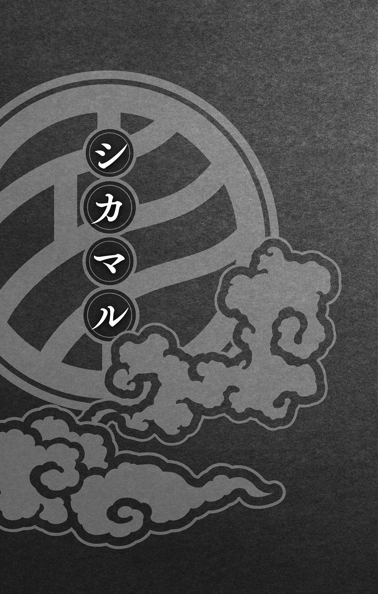
一
周囲で熾烈な戦いが繰り広げられている。刃と刃がぶつかり合う音や怒号が飛び交うなか、シカマルはゲンゴを見つめていた。
「貴君は忍が虐げられている現状を、それでもよいと言うのかッ」
叫ぶゲンゴの顔に余裕がない。眉間に皺を寄せ額に青筋を浮かべながら必死に語る様には、さっきまで感じていた神々しさは微塵もなかった。幻術から覚めたせいなのか。いや違う。たしかにゲンゴの総身からは、覇気が消え失せていた。
「なに焦ってんだよ」
「なんだと？」
「アンタ、可哀相なほど必死だぜ」
「誰が......」
ゲンゴが口籠る。喰いしばった歯の隙間から呻き声が漏れた。
「忍のような人外の力を得た者は、常人より恐れられるのが宿命。恐れは差別となり、差別は支配を生む。ここで立たねば忍はますます苦衷に立たされることになるぞ」
「オレはなぁ......」
首を右に傾け骨を鳴らす。視線だけはゲンゴからそらさない。
「忍なんてなくなればいいと思ってる」
「なッ、なにを言いだす」
「あれ？ アンタはもう忍じゃないんじゃないのかい」
「ッ......」
またもゲンゴが口籠る。その滑稽な姿にシカマルは口元に微笑をたたえた。
「せっかく忍がまとまったんだ。この結束を利用すれば、じきに戦乱も収まるさ」
「たッ、短絡的なことを......」
「やってみなけりゃわかんねぇだろ」
ゲンゴの手がみずからの背後に伸びた。
なにかをつかむような動作......。
クナイだ。
緩んでいたシカマルの目が引き締まった。牢屋に監禁されていたせいで、武器という武器は取り上げられてしまっている。
「シカマルッ！」
テマリの声だ。
声を追うシカマルの目に、自分にむかって一直線に飛んでくる塊が映った。
塊が手の届くところまで来た瞬間、虚空を右手で搔く。
クナイ......。
テマリが笑っていた。
この間、数瞬。
振り返ると同時に、目の前のゲンゴが飛んだ。
宙空......。
シカマルも飛んでいる。
たがいのクナイが激突して火花が散った。
「争いがあるからオレたちのような忍が存在するんだ」
「ほざけ小僧......」
ゲンゴの口調が乱暴なものになっている。
両者ともに相手を引き離すように思いっきりクナイを振った。
着地。
先刻と変わらぬ間合いを保って二人は立つ。
にらみ合う間はない。
同時に地面を蹴って相手にむかって駆ける。
殺気みなぎるゲンゴの顔めがけてクナイを突き出す。
狙いは同じ。
ゲンゴのクナイがシカマルの顔へと伸びる。
首から上だけをわずかに傾けてそらす。
シカマルの頰が一文字に裂け血飛沫が舞い上がる。視線の先で、ゲンゴがシカマルと反対の頰に傷を負っていた。
突き出されたゲンゴの手首を左手でつかむ。ゲンゴも同様にシカマルの右手の手首を左手でつかんだ。
相手の顔にむかって腕を伸ばした状態のままにらみ合う。
「この戦乱を終わらせるための一歩......。それが連合だ。忍がまずは結束し、その輪を今度は大名や民にまで広げてゆく。そうして世界がひとつになれば、忍なんてモンはかならずなくなる。オレの世代では無理でも、オレの子や孫の世代にはかならず忍はなくなっている」
「理想で物事が動くほどこの世は甘くはない」
「アンタの志ってやつだって理想じゃないのかい？」
ゲンゴの口角が異様なまでに吊り上がっている。笑みというにはあまりにも邪悪な表情であった。
「オレを幻術に嵌めようたって無駄だぜ」
「まぁ聞けシカマルよ。理想というモノは、実現する可能性が高ければ高いほど価値あるモノとなる。貴君が述べる理想は、雲をつかむようなモノ。私の語る理想とは天と地ほどの差がある」
「愚かだねぇアンタ」
「みずからの愚かさに気づかぬ者こそ真の愚者」
「だからアンタが愚かなんだろ？」
ゲンゴの唇がピクリと震えた。
来るッ！
クナイを突き出したシカマルの右手首が軋むように痛んだ。ゲンゴが左腕で関節を極めたのである。シカマルがつかんだままの右の手首をクルリと回転させ、ゲンゴはクナイの切っ先を首筋にむけた。そのままの体勢で指先を器用に使い、シカマルの首へと突き出す。
避けている暇はない。
手首をねじられている方向に身体をひねりながら飛んだ。ゲンゴの突き出した右腕を軸にして反時計回りに回転するような跳躍である。クナイを避け、宙を舞うシカマルの足がゲンゴの脳天を襲う。
シカマルの手首を放してゲンゴが左手でみずからの脳天をかばった。その腕に強烈な蹴りが落下する。ゲンゴの腕のなかで骨がミシリとにぶい音をたてた。
これで終わりではない。
防御された蹴り足をねじるようにして、今度は逆の足でゲンゴの脇腹を蹴りにいく。
ゲンゴが一歩後ろに退いた。
着地したシカマルは止まらない。今度はしゃがんで右足を突き出す。そのまま回転して、ゲンゴの足を払いにいく。
うちはサスケが中忍試験の時に見せた獅子連弾。そしてナルトがそれを元にみずからの発想を加えたうずまきナルト連弾。それを真似た動きである。
上手くいった......。
脛をしたたかに打たれたゲンゴが尻餅をつく。
すかさず馬乗りになる。うずくまる喉元にクナイを添えた。わずかにでも動こうものなら躊躇なく殺るつもりだ。
「なッ、なぜ私の言葉が届かない？」
「幻術ってのは心に隙があるヤツにしか効かねぇんだよ」
「あの女が現れてからの貴君の言動は隙だらけではないかッ！」
「やっぱりアンタは愚かだな......」
溜息をついてゲンゴに微笑む。
「オレの心の中は隙だらけ。いや......。隙しかねぇんだ。隙だらけだからこそ、隙がねぇ。四角四面なアンタにはわからねぇだろうけどな」
「そ、そのようなことが」
「ここに実際にあるんだから仕様がないだろ。もうアンタの言葉はオレには届かない」
ゲンゴの額に油汗がにじんでいる。
「本当はこんなことなんかしたくはないんだ。それなりになんとなく生きられりゃそれでよかったんだ。でも......」
シカマルはみずからに語っていた。
これまでつねに心のどこかにくすぶっていた後悔のような想い。
いまここで断ち切る。
覚悟はできた。
「オレにはそんな生き方はできねぇようだ」
人に頼られているから仕方なくやる。その〝仕方なく〟が積もり積もって現在のシカマルがあった。だから駄目だったのだ。その程度の想いだから、いつまでも腹をくくれず、煮えきらずにいたのである。
根本から間違っていたのだ。
みずからの夢の始末をつけるのは、自分以外にいない。
シカマルの〝なんとなくそれなりの人生〟という夢は叶わないのだ。
それでいいじゃないか。
あらたな夢が見つかったのだから......。
「ただぼんやりとなんとなく生きていきたいってヤツが、そのまんまで生きられるような世を作るためにオレはこれからも生きていく。この戦乱を終わらせて世界をひとつにする。そしてこれという夢のない平凡な人生を生きるのが夢だというヤツらが、それなりに生きていける世の中を作るんだ」
それなりなヤツがそれなりに暮らせる幸せを守るのだ。
自分らしいあらたな夢だと満足している。この夢を実現するためにナルトを火影にし、師となってミライを育て、その結果として父やアスマに恥じない忍になれればいい。これまでのシカマルは順序が逆だったのだ。外からの圧に押されるようにしてみずからの枠を規定し、それに恥じぬように生きようとした。だから無理が生じたのである。
外の世界との関係でみずからの夢が生まれるのではない。己の夢のその先に、外の世界が広がっているのだ。
「やっと吹っきれたぜ」
〝それがどうしたと言うんだい？〟
不意に背後から優しくささやく声が聞こえた。
殺気。
ゲンゴから飛び退いた。
さっきまでシカマルの頭があった場所を、虎の爪が引き裂く。
墨絵の虎......。
「そんな緩みきった夢のために、ゲンゴ様は殺らせないよ」
「サイ......」
立ち上がったシカマルの前に、絵筆と巻物を構えたサイが立っていた。
「ゲンゴ様ッ、早くあの愚かな砂隠れの忍どもに志をッ！」
「うむ」
ゲンゴがうなずいて階段を駆け昇る。玉座まで一気に昇り詰め、両腕を広げた。
「聞けッ！ 皆の者ッ！」
演説だ。
「やらせるか」
「邪魔はさせないッ！」
階段を昇ろうとしたシカマルの前にサイが立ちはだかる。
「行けッ！」
サイの絵筆が動き、虎が巻物から飛びだす。さっきシカマルの顔を削ごうとした虎と、あらたな虎が同時に襲ってくる。
階段の上ではゲンゴが大声で語っている。止めなければ幻術によって、砂の忍たちの動きを封じられてしまう。
不意に閃くものがあった。
どこにいるのかもわからぬまま、とにかくシカマルは叫んだ。
「聞けッ、テマリッ！ アイツは言葉で幻術に嵌めるッ！ お前の大風でヤツの言葉を搔き消せッ！」
「承知ぃッ！」
威勢のいい声は驚くほど近くで聞こえた。次の瞬間、激しい風が幾重にも折り重なり合いながら広間の中を縦横に駆け巡りはじめる。テマリが起こすおびただしい風によってゲンゴの言葉が搔き消されてゆく。
虎の爪を搔い潜りながらシカマルは階段の上を見た。
言葉が通らぬと悟ったゲンゴがどこかに去ろうとしている。
「くそッ......」
シカマルは階段のほうに行こうとするが、サイの描いた虎がそれを阻む。
「絶対に行かせないッ」
「いい加減、目を覚ませサイッ！」
「目覚めなければいけないのは、君たちのほうだ」
サイは完全にゲンゴの術中に嵌まっている。
シカマルの背後からこれまでの何倍もの強烈な突風が吹き抜けた。墨絵の虎が飛沫となって霧消する。
「ここは私に任せてヤツを追って！」
シカマルの前に飛びだしたテマリがサイと正対した。
「テマリ......」
「礼は後でいいから早くッ！」
「わかった」
言って階段へ走りだす。
「待つんだシカマルッ！」
「おっと、アンタの相手は私だよ」
テマリが広げた扇子でサイをさえぎる。
シカマルは一度だけ二人に目をむけ、その後は脇目もふらず階段を駆け昇った。
二
間一髪で間に合ったことに、テマリは安堵していた。
我愛羅にシカマルのことを相談したあと木ノ葉へとむかったテマリは、ナルトを問いただした。ナルトはなにも知らなかった。しかしテマリ同様、シカマルがどこかおかしいと感じていたナルトはいのやチョウジと相談し、その想いを固めカカシに詰め寄ったのである。里の外部の人間であるテマリを連れての鬼気迫るナルトの直談判、そしてテマリからの砂の忍が救援に行くという申し出を受け、カカシもついに決断を下した。事を荒立てないという約束の下、砂隠れの忍の出動に同意したのである。
なにがあってもすぐに里の忍を動かすことができるように手筈は整えていた。カカシの承認を得るとすぐに里へ狼煙を上げ、テマリはそのまま黙の国へと走ったのである。途中、我愛羅の率いる里の忍たちと合流した。
黙の国に着いてすぐ、手近な者をさらい尋問した。シカマルが黙の国に行ってから十日以上が経過している。テマリは焦っていた。自然と尋問も苛烈になってゆく。革者を名乗る男は、すぐに木ノ葉隠れの里の忍が城に囚われていることを吐いた。
それさえ知れば後は簡単だった。
我愛羅が作った砂の風船に乗り、城へと潜入。ちょうどシカマルがゲンゴというこの国の主と語らい合っている最中の出来事である。テマリは広間へつづく廊下を守る者たちを仲間の忍たちとともに退け、密かに中をうかがった。
忍によって世界を支配するというゲンゴの言葉に、シカマルがほだされようとしている姿を見て、いてもたってもいられなくなった。
シカマルは、あんな男の言葉に翻弄されるような男ではない！
扉を吹き飛ばして広間に飛びこんだテマリの身体を支配していたのは、猛烈なまでの怒りだった。
幻術だと聞いて安心した......。
目覚めたシカマルは、テマリの知る男に戻っていた。鼻血を流しながら腑抜けた目でゲンゴと相対する姿を見ただけで、ここまで来た甲斐があったと思う。
「ぼやぼやしている暇などありませんよ」
ぎこちない笑みを浮かべた木ノ葉の男がテマリに言った。その手に握った絵筆が、さっきから何匹もの虎や狼を生みだしている。いまもまた男の絵筆が、邪悪なまでに牙を剝き出しにした白虎を野に解き放った。以前にもこの男の描いた動物を見ているが、今日描いたいずれのものも、これまでにないほど凶悪な形相をしている。
名はたしかサイ......。
ナルトやサクラと同じ班にいた忍だ。
「ワンパターンな攻撃にやられるような私じゃないんだよ」
つぶやきながら全身を使って扇子を振るう。風が変化し、鎌の刃を持つイタチに変じた。クルクルと身体を回転させるイタチが、目の前の虎の喉を搔っ切る。その瞬間、虎は墨汁となって地面に崩れ落ちた。
「惚れ惚れするほどに躊躇がない」
サイの声。
作りもののような笑顔を想い浮かべながらテマリは声のしたほうを見た。
いない！
いつの間にどこに消えたのか？
目で追うような間はなかった。
「墨霞からの瞬身......。これをとらえきれる忍はそうはいません」
背後から声。
間に合わない。
「えぇいッ、ままよッ！」
背後から斬られるのはわかっている。
右からか左からか？
賭けだ。
右から斬られないことを祈りながら、思いっきり身体を右方へと傾けた。
テマリの左の肩の上すれすれの所を虎の爪が駆け抜ける。
「甘いよ」
ゾクリとするほどに冷たい声でサイが言った。
いつの間にか正面に立っている。
「畜生ッ！」
右に傾けたままの身体に添わせるようにして盾の代わりの扇子をかざす。鉄の刃すらも通さない頑丈な布で織られた特注品である。クナイ程度の刺突なら十分に防ぐ。
が......。
「くうッ！」
腹部を鋭い痛みが貫いた。
「繊細なチャクラの操作......。ボク得意なんだ」
サイが無邪気に言った。その手に握られたクナイが、扇子を突き破ってテマリの腹に突き立っている。
サイの握るクナイにぼんやりと靄のようなものがまとわりついている。
チャクラだ。可視化できるほどに濃密なチャクラをまとわせることで、通常の何十倍もの強度と鋭さを付加することができる。
「君たちがどれだけ頑張ってもゲンゴ様には敵わない。いずれこの世はボクたち革者が統べることになる」
「ほ、本心から言ってるのかい？」
「あぁ」
笑みを崩さずサイが言った。幻術にかかったという程度の軽い症状ではない。ゲンゴへの揺るがない信頼が、サイの顔ににじんでいる。
でも......。
「じゃあアンタ、なんで泣いてんのよ」
「え？」
右の目尻から涙がひと筋こぼれ落ちているのをテマリは見逃さなかった。心の深奥でサイは葛藤している。
「泣いてなんかいないよ」
言いながらサイがクナイをグイと深く突く。
息が止まる。
「いい加減目を覚ましなさいよぉぉぉぉぉぉッ！」
怒鳴り声。
腹に突き立ったクナイだけを残し、テマリの視界からサイが消えた。
「大丈夫？」
倒れそうになる身体を誰かが支えていた。
「サ、サクラ？」
「喋らないで。いまお腹の傷を塞ぐから」
サクラの手がクナイを抜き、すぐに傷口に触れた。温かいチャクラの波が、テマリの腹を穏やかに包みこむ。
「サ、サイは？」
「大丈夫よ、仲間がいるから」
「え？」
テマリはサイが吹き飛んだであろうあたりへと目をむけた。
サクラが殴り飛ばしたサイを、誰かが押さえつけている。
巨漢......。
あれはたしかシカマルの親友だ。
「チョウジッ！ そのまま拘束しててッ！」
サイを押さえこんでいる巨漢の男の背後で、長髪のくノ一が両の掌を広げ、叫んでいる。
「シカマルが危ないって時に、木ノ葉の忍が動かなかったなんて言われちゃ癪だから」
テマリの腹に手を当て、サクラが言った。背後に傷だらけの忍が二人立っている。一人は中年の骨ばった顔の男。そしてもう一人はテマリよりもずっと年下の女の子だ。
腹の痛みをこらえながら、テマリはサクラにむかって口を開いた。
「や、ヤツは幻術に......」
「この人たちに聞いたから」
背後に立つ二人の忍がうなずく。
「よしッ！ 準備オッケー」
サイにむかって掌を差し出しているくノ一がチョウジに言った。巨体の下でジタバタと手足を動かすサイの顔に、殺気が満ちている。食いしばった口から、ぬらぬらと輝く牙がのぞいていた。
「忍法・心転身の術ッ！」
くノ一が叫ぶ。
「いののあの術が発動すれば大丈夫」
サクラがつぶやいた。
チョウジがサイから離れる。
サイが立ち上がった。
刹那。
雷に打たれたようにビクンと小さく震えて動かなくなった。サイのほうへ掌をむけたまま、いのと呼ばれたくノ一も身体を硬直させている。
「さぁ、治ったわよ」
サクラが掌を離す。
腹の痛みは消えていた。
＊
深く深く潜る......。
サイはまだ見つからない。
潜っても潜っても闇ばかり。
普段から本当の自分というものを自覚しきれていないサイのことだ。ちょっとやそっとじゃ見つからないことはわかっていた。
それでも助ける......。
でなきゃ私がここに来た意味はないのだから。
サイの心の裡でいのは必死にもがきつづけていた。
心に潜りこみ、みずからの意のままに敵を動かすことができる心転身の術は、使いようによっては相手の心に内面から影響を及ぼすこともできる。中忍試験の折、サクラの裡で心同士で戦った際に気づいたことだ。
自分がわからないと悲痛な筆跡で書き残した書状を見た時、いのにはサイの葛藤が痛いほどにわかった。その時はまだゲンゴという存在もその幻術も知らなかったが、とにかく自分が行かなければと思ったのである。シカマルを助けたいのはもちろんだが、いのを動かしたのはサイの苦悩に満ちた書状だった。
虚ろな自分にいつも悩んでいたサイは、ゲンゴの幻術に誰よりも深くかかっている。サイを助けることができるのは自分だけ。
だからどこまでも深く潜ることができた。
あまり深く潜ると今度は自分の存在が曖昧になってきて、最後には相手の心に取りこまれて二度と戻れなくなってしまう。そんな危険を冒してもサイを助ける理由がある。
もっと語り合いたい......。
いつも寂しげな笑みを浮かべているサイのことが、もっともっと知りたかった。
こんな所に一人置いてけぼりにする訳にはいかないのだ。
わずかな光さえ届かぬ真の闇のなかに仄かな暖かさを感じた......。
ナルトのチャクラだ。
サクラのものも混じっている。
ヤマト......。
カカシ......。
木ノ葉の忍たちのチャクラが混ざり合っている。
吹雪のただなかに燃える炎。
温もりを求めるように、いのはみんなのチャクラを目指した。
居た......。
温かいチャクラの繭のなかでうずくまっているサイを、いのは五感ではっきりととらえた。
「こっちよサイッ！」
必死に手を伸ばす。
声に気づいたサイが顔を上げた。
両目を真っ赤に腫らし泣いている。
「さぁ、私と一緒に来てッ」
「君は......」
足を組んだまま手を伸ばそうとしないサイの肩をしっかりとつかんだ。
「行きましょう」
サイが微笑む。
これまで見たことのない自然な笑みだった。
＊
深い水底から顔を出し酸素を求めるように、いのは全身で空気を求めた。
闇が破れ周囲は光で溢れている。
敵と味方が激しく戦っていた。チョウジやサクラに守られながら、いのは寝かされたサイの頭の横に座っている。
「どうだった、いの？」
チョウジの声が聞こえるが答える気力がない。
膝のそばでサイがゆっくりと目を開く。
気づけば手を握っていた。
「サイッ」
「君が......」
手を握られたままサイがぼんやりとつぶやいた。
「もう心配ないから」
言ったいのの目から涙がこぼれる。
「ありがとう美人さん」
「バカ......」
二人は穏やかに笑い合った。
三
長い長い螺旋階段を誘われるようにして駆け昇る。見つめる先にあるのはゲンゴの背中。側近たちは広間で戦っている。神のように崇められていた男のたった一人の逃走であった。
左右を石の壁で閉ざされた螺旋階段は、それだけで異様な圧迫感がある。グルグルと駆け昇っていると目が回りそうになった。
「いい加減諦めたらどうだ？」
背中に問う。
答えが返ってくるはずもない。
ゲンゴの前に巨大な鉄の扉が現れた。なんの装飾もない不格好で武骨な門扉である。
重い扉を躊躇なく開いたゲンゴがなかに消えた。扉の隙間から暗闇が垣間見えた。
閉ざされた扉に手をかける。
誘っている。
間違いなくなにか仕掛けがあるはずだ。
扉を開いた。
どんな策が待っていようと関係ない。
進むのみ。
扉のむこうは真の暗闇。
無音の闇に気配だけが潜んでいる。
一人。
唐突に背後で扉が閉まった。気配は目の前にあるから、閉めたのは他の誰か、もしくは目の前の気配の主がなにがしかの小細工をしたのだろう。
「臆することなく単身むかってきたか。その行為が蛮勇でないことを願うのみだ」
ゲンゴの声だ。
「この闇では私の姿をとらえることもできまい」
「奈良家の忍は代々みずからの影を操る。影を生むのは闇だ。いわば闇は影の母。影とともに生きるオレにとってこの闇は、母親の胎内みてぇなもんだ。さっきからずっと、オレはアンタをはっきりととらえてるぜ」
半分ハッタリである。
たしかに闇に慣れてはいるが、だからといって暗視ができる訳ではない。気配の濃淡が他の忍よりも若干敏感にわかる程度だ。
「面白い......。貴君は本当に面白い男だ。ここで殺すには惜しいほどにな」
自信に満ち満ちた口調でゲンゴが言った。
沈黙......。
シカマルもゲンゴも黙ったまま相手の気配に意識を注いでいる。
「オレはもともと霧隠れの忍だった」
沈黙を破るようにゲンゴが語りだした。
「貴君は桃地再不斬という男の名を知っているか？」
知っている。
下忍になったばかりの頃、ナルトがしょっちゅう口にしていた名だ。手違いで受けた任務で戦うことになったとかいう手練れの抜け忍がたしか桃地再不斬といった。
「再不斬が霧隠れの里でクーデターを起こした時、彼が願っていたのが私の理想とする世の中だった」
忍こそが世界を支配する......。
「しかし内通者の通報によってクーデターは露見し、再不斬は抜け忍となった。その時つき従ったなかに幼い私もいた。しかし理想の実現のために金を必要とした再不斬はマフィアまがいの豪商と手を結び汚れ仕事を請け負うようになった。理想のためという大義名分のためにみずからの手を汚す再不斬を見限り、多くの同胞が袂を分かった。そのなかに私もいた。それから十数年。私はついに国を手に入れた。ここからなのだ......」
ゲンゴの声が震えている。
「ここからやっと私の野望がはじまるのだッ！ なのに貴様らのせいでッ！」
ゲンゴの気配から殺気がにじみだす。
地面を蹴る静かな音がシカマルの耳に届いた。
クナイを引き抜き構える。
目には見えない。
気配で追うしかなかった。
ゲンゴは一直線にこちらにむかってきている。
正面から受けるにはあまりにも情報が少ない。
「再不斬は道を誤ったッ！ 理想を実現させることを焦って手を汚したッ！ しかし私は違うッ！ 辛苦の道の末に術を編みだし、人を熱量の渦に巻きこみ、国を支配するのだ。そしてその渦を拡大させ、果ては大陸全土を吞み喰らうッ！」
叫び声のなかに異質な音を聞いた。
空を斬るような唸り......。
刃だ。
しかもかなり大きい。
鉈？ いやもっと細い。長刀か太刀のようなものだ。
気配が間近に迫った。
空を斬るような音がシカマルの首にむかって迫ってくる。
息を吞み横に飛ぶ。
斜めに傾いたシカマルの身体の上を疾風が駆けた。
「よく避けた。が、これで終わりと思うなよッ！」
叫びと同時に横薙ぎの疾風が虚空で軌道を変えた。
転がって片膝立ちになったシカマルの脳天めがけて唸りが迫る。
暗闇のなかにゲンゴを夢想する。
空を斬る音の範囲から刃の長さを測り、その先に柄を想い描く。
そのむこうにゲンゴがいる。
この暗闇では影はできない。忍術で拘束するのは不可能だ。
己が身だけが頼り。
幾分頼りない体術しかシカマルに残された武器はなかった。こんなことならリーあたりに教えを受けていればよかったなどという無駄な思考を描けるほど頭脳は緩んでいる。
「へへッ......」
柔らかい思考が戻ってきたことに満足し、シカマルは一人笑った。
唸りがシカマルの束ねた頭髪の先に触れた。
「ッ！」
全神経を集中させ、脳裏に描いたゲンゴにむかって思いっきり前転した。
太刀は間合いの奥深くに入られるとたちまち威力を失う。刃に追い立てられている時は、逃げ回るよりも懐に潜りこんだほうが有効なのだ。
生を得ようとすれば死に、死なんとすれば生きる......。
兵法の基本だ。
転がったシカマルの背後で太刀が床を斬った。一回転したのち目一杯しゃがみこんだ足を一気に伸ばして上空に飛ぶ。
頭がゲンゴの身体に当たる感触。
呻きとともにゲンゴがしゃがんだ。
「ほらよッ！」
ゲンゴの折れ曲がった膝の上に右足を乗せ、左の膝で頭を蹴る。気配の濃淡と物音、そしてそれまでの動きを最大限に夢想した結果、シカマルの脳にはゲンゴの姿がはっきりとイメージできていた。
「かはッ」
したたかな一撃を喰らってもなおゲンゴは倒れなかった。仰け反ろうとする身体を筋力で強引に押し留め、太刀の柄から手を放してシカマルの胴を両腕で抱く。
宙を浮遊するような心地のあと、首筋から背骨を電流と激痛が貫いた。投げられたと気づいた時にはすでにゲンゴの気配が立ち上がっている。カラカラと鉄で石の床を削るような音が聞こえた。おそらく太刀を取り直したのだ。
全身がしびれている。あと数瞬は身体が思うようには動かせない。
「霧隠れには七本刀という刀があり、里の忍は幼い頃より刀を操る術を叩きこまれる」
言ったゲンゴが太刀を振るった。
狙いは寝転がったままのシカマルだ。
道はひとつしかなかった。
荒唐無稽。
みずからで試みるなど思ってもみなかった芸当だ。
しかしそれ以外に逃れる術はなかった。
「ままよッ！」
唸りに合わせてシカマルは両腕をあげた。夢想のなかにある刃めがけて両の掌を思いっきり差し出す。
冷気が掌から伝わってくる。
刃のものだ。
「どッ、どうにかなったみてぇだな......」
「馬鹿な」
茫然とゲンゴがつぶやいた。
無理もない話だ。なにせいまゲンゴの太刀は、シカマルの両の掌でしっかりと挟みこまれているのだから。
「忍法・真剣白刃取り......。なんてな」
「どこまでもふざけおって」
怒りをにじませるゲンゴの声。
虚空で止められたままの刃に力がみなぎる。
このまま膂力だけで押そうというつもりなのだ。寝転がったままのシカマルと立ち上がり万全の体勢で太刀を振るったゲンゴでは、力の入り方が違う。分はゲンゴにあった。
じりじりと太刀が下がっていく。
「貴様を殺し、広間のヤツらも同志に引きこみ、私は野望にむかって邁進する」
「おいおい、いつの間にか〝貴君〟が〝貴様〟になってるぜ。化けの皮が剝がれちまってることにさえ気づかねぇヤツに世界をどうこうできる訳がねぇだろ」
「この状況でなにを言う。貴様は彼我の優劣すらも解せぬ愚者だ」
「その愚者を片腕にしようとしたのはどこのどいつだ」
「どこまでも屁理屈ばかり......。貴様の言葉には芯がない」
ゲンゴの太刀にいっそう力がこもった。
刃を押さえる腕が震えている。
すでに限界は近かった。
額から生温かい汗が流れ落ちる。
絶体絶命......。
それでもシカマルは笑っている。
「芯がないからこそ強いってこともあるんだぜ」
「無為な問答を繰り返すつもりはない。もうじき貴様は死ぬのだ」
「まぁ聞けよ」
言ったシカマルの額に刃が迫る。
「オレは雲を見るのが好きなんだ」
「黙れ」
「雲ってのはつかもうとしてもつかめねぇ、風があればすぐに吹き飛んじまう。芯のねぇ胡乱なもんだ」
額に冷たいモノが触れた。
かまわずつづける。
「ただそんな芯のねぇ胡乱なもんでも、雨を降らせることもありゃ、雷を落とすことだってできるんだ」
「それがどうした？」
「芯がありゃまともだなんて考えが間違ってるって言ってんだよ。芯なんかなくっても......。確固たるモノがなくっても、人として曲げちゃいけねぇモンを持ってりゃ、なんとかなるんだよ。そんなこともわからねぇで、誰もが自分の思いどおりになると思ってやがるバカ野郎には、死んでも理解できねぇだろうがな」
額の皮が裂け、生温かいものが流れだしていた。それでも語ることを止めないシカマルの言葉に、ゲンゴが自然と引きこまれている。意識がシカマルの言葉に集中しているのが手に取るようにわかった。
好機。
寝転がった体勢のまま、ゲンゴの踏ん張った軸足を横薙ぎに蹴った。
よろけたはずみで刃がわずかに傾く。その流れに逆らわぬように頭だけを回転させた。額の皮の表面だけを掠め取りながら、刃が床へと吸いこまれてゆく。
頭を回した方向に全身を回転させてゲンゴの股の間から抜け出すようにして立ち上がった。
ちいさい呼気をひとつ吐き、シカマルは床を蹴って飛び上がる。即座に右足をゲンゴの顔がある場所にむかって突き出した。
鼻をとらえた鈍く柔らかい感触が、足の裏から伝わってくる。
ゲンゴは倒れない。
着地と同時にもう一度後方に跳ね、太刀の間合いから逃れる。
「どうだい、オレの言葉の幻術の味は？」
「舐めるなよ小僧......」
「おいおい〝貴様〟の次は〝小僧〟かよ」
言ったシカマルの背後で金属をこするようなけたたましい音が鳴った。
眩い光が射しこむ。
「無事かッ、シカマルッ！」
チョウジの声だ。肩越しに見たシカマルの視界に、門扉を開け放ちこちらを見つめる仲間の姿があった。チョウジにいのにサクラ、そして鏃と朧の二人も幻術を解かれてそこにいた。
もちろんテマリの姿もある。
サイはどうなったのだろうかとふと思いながらも、シカマルはふたたびゲンゴへと目をうつす。
「術の準備だ、いのっ」
叫んだ。
腰の後ろに右手を回し、いのにだけわかるように親指を立てて合図をした。長年チームを組んできた間柄である。意思疎通は完璧だ。
「承知ッ！」
いのからの返答。
「オレの合図があるまで、誰も手を出すなッ」
額から流れだす血が視界を阻む。掌で拭ってから、ベストの裏に仕舞っていた木ノ葉隠れの額当てを取りだし、額にきつく締めた。止血の役目がどの程度できるのか心配ではあるが、ないよりはましだ。
「余裕じゃないかッ、え？ シカマルッ！」
瞳を血走らせながらゲンゴが太刀を振り上げ間合いを詰めてくる。
印を結ぶ。
シカマルの足元から影が伸びて、ゲンゴにむかって疾走する。
「ネタがばれた手品に引っかかる愚か者などいないッ」
影の先端が足に触れる直前にゲンゴが床を蹴って跳躍した。
落下の勢いに任せてシカマルを斬る。
脳天からシカマルがふたつに割れた。
肉が色を失い黒く染まる。
影だ。
「分身ッ」
つぶやくゲンゴの背後にシカマルが迫る。
手にはクナイ。
首筋を斬りつける。
霧隠れの里で刀術を仕込まれたというだけはあって、ゲンゴは絶妙な間でもって屈んでかわす。そのまま両膝を曲げた姿勢で身体を反転させ、下段の構えのまま刃を水平に寝かせた太刀をその動きに合わせる。
シカマルの胴が両断された。
またも影に変じる。
「小癪な真似を......」
「準備ができたッ」
ゲンゴの憎々しい声と同時にいのが叫んだ。
「よしッ」
すでにシカマルも用意が整っている。
シカマルの実体はゲンゴの太刀の間合いから十分に距離を取った場所で、いのが心転身の術を発動させるのを待っている。両手の掌を突き出し親指と人差し指で三角形を作っている独特の構えで、いのがゲンゴのほうを見た。
「忍法・心転身の術」
ゲンゴが咄嗟に身体をひるがえし、いのから逃げた。それを見たいのがしずかに微笑む。そしてゲンゴに狙いを定めていた掌を、シカマルへとむけ直す。
シカマルの全身が硬直した。
心のなかにいのが入ってくるのがわかる。
術が発動していたのは数瞬。呼吸をひとつするかどうかという間に、すでに術から解放されていた。
「鏃、朧ッ」
術を解いたいのが二人を呼んだ。
狙いどおり......。
標的の心に入りこむことができる心転身の術は、術が発動した身体のなかでたがいの意識を共有することができる。それを利用したのだ。シカマルが立てた策は、すでにいのも共有している。それを鏃と朧に伝えてもらうのだ。
この男を仕留めるのは鏃と朧との三人でと決めている。
「じゃあ行くぞッ！」
シカマルの言葉に鏃と朧がうなずく。
ゲンゴへむかってシカマルは駆ける。鏃と朧は部屋の端にむかって走りだし、たがいに対極の角に立って動きを止めた。
「なにをしようが無駄だッ」
「さぁ最後の戦いだ。楽しくいこうじゃねぇか」
クナイと太刀が虚空で激突した。両者の得物の間には刃物としての圧倒的な質量の差がある。ゲンゴの斬撃に押されるようにシカマルの身体がおおきく仰け反った。そこに反転した太刀が返ってくる。
またも両断されるシカマルの身体。
やはり影......。
「どこまでも愚弄しおってッ！」
逆上が言葉となってゲンゴの口から吐きだされる。
上空から落下するシカマルがゲンゴの脳天を襲う。
太刀が切り払う。
またも影。
影、影、影、影、影、影、影、影、影......。
幾度となく太刀がシカマルを切り裂いた。しかし斬っても斬ってもシカマルは影となって虚空に消えてゆく。
「どこに消えたッ、シカマルッ！」
ゲンゴの前からシカマルが消え去った。
背後......。
忍び寄るシカマルにゲンゴは気づいていない。
「王手」
ささやく声に血相を変えてゲンゴが振り返った。
遅い......。
すでにシカマルの足から伸びる影がゲンゴの身体に絡みついている。
影分身を無数に繰りだし、朧の力を使い、すべての分身に濃いチャクラを帯びさせる。そうして自然とゲンゴの脳にシカマルの分身のチャクラの質を覚えこませた。幾度も斬るうちに、ゲンゴは分身が放つチャクラを無意識のうちに追いはじめる。そうやってチャクラを追う意識を作った上で、本当のシカマルはこれまた朧の力でチャクラをすべて消し去った状態で背後を取るのだ。完全な死角から飛びこまれたゲンゴには、影首縛りを受けるまでなにが起こったかわからない。
「シカマル貴様ぁぁぁッ」
身体を縛られたまま、ゲンゴが力の限りをつくしてシカマルのほうへと首を回す。怨念のこもった言葉を吐く口からは、ぬらぬらと紅に光る長い舌がのぞいていた。
「ヒノコッ」
シカマルは叫ぶ。
「だぁぁぁッ！ だから名前は呼ぶなって言ってるシィィィィッ！」
耳をつんざくような声と同時に鏃が右手の人差指からチャクラを放つ。
オレンジ色の稲妻がゲンゴの舌を的確にとらえて貫くのをシカマルはたしかに見た。
「かッ、かはぁぁッ？」
頭を高く突き出すようにしてゲンゴが乾いた息を吐いた。
「アンタの舌に流れるチャクラを絶った。もうアンタは言葉を吐くことができねぇ身体になっちまったんだ」
ゲンゴの目から涙がひと筋こぼれ落ちた。
「オレがきっと戦のない世を作ってみせる。だからアンタの夢を奪ったことを許してくれ」
言いながら朧にむけて目で合図を送った。拷問や幻術を受けてもなお頑強さを保ったままの骨太な男が、おおきく肩を上下させながら駆けてくる。
「拘束して連合に連れてゆく」
「承知いたし申した」
朧は目を輝かせながらうなずいた。その視線に敬服の念が満ちている。照れくささを誤魔化すようにシカマルは指先で鼻の頭をつまんでから、ゲンゴを差しだす。影首縛りの術を解くのと同時に、朧がゲンゴの腕を幾重もの鉄輪と護符で造られた暗部特製の手錠で拘束した。
気づけば朧の背後にいつの間にか鏃も立っている。
「任務完了だな。少し不細工だったが......」
照れくさそうなシカマルの微笑に、二人はいまにも泣きそうなくらいに顔をクシャリと崩してうなずいた。
四
ゲンゴを連行し螺旋階段を降りたシカマルが仲間とともに広間に到達した頃には、革者と忍の戦いもひと段落していた。鏃によってゲンゴの舌のチャクラが絶たれたと同時に革者にかけられていた幻術も晴れ、それが戦闘終息に大いに役立ったようである。
激戦であったにもかかわらず、革者と忍双方の犠牲者は思いのほか少なかった。数名の重傷者を除けば、みな軽傷である。死者が出ていないことが奇跡であるが、これは先に突入した砂隠れの忍たちが、できるだけ殺さずにという我愛羅の命を忠実に遂行した結果であった。
ゲンゴ捕縛という事実を知った側近たちは、みな一様に肩を落とし戦う気力を完全に失っている。熱病のような夢から覚め、いまは凄まじい虚脱感に身をゆだねているようだった。広間のいたる所でうなだれる革者たちを、木ノ葉隠れと砂隠れの忍たちが拘束し、手当てをしている。
「サイッ！」
人の群れのなかに忍たちに介抱されているサイを見つけた。
「シカマル......」
上体を起こしたサイが、虚ろな眼差しでシカマルを見た。螺旋階段を降りてゆく際に、いのから広間を出てからあとの経緯は聞いている。
強硬な手段で幻術から引きずりだされた影響か、サイはいまもまだ忘我の海をただよっているようだった。
「すまない」
「気にすんな、全部終わったよ」
優しい言葉をかけながらシカマルはしゃがんでサイの肩に触れた。しなやかな筋肉に包まれた肩がかすかに揺れている。涙は流していない。心が泣いている。
「自分が情けない」
「あの男の言葉には魔力があった。オレだって一度は墜ちかけたんだ。恥じることはない」
「でも......」
「あんまり気にすんな。どんなことがあっても動じずに飄々としてるのが、お前のいいところだ」
「ありがとうシカマル」
大きく見開かれたサイの右目の目尻から涙の粒がひとつこぼれ落ちた。
「木ノ葉に戻って少し休め。オレがカカシさんに言っとくからよ」
「ありがとう......」
そう言って頭を下げたサイのかたわらにいのが立つ。
「後は頼んだぜ」
いのに告げて立ち上がる。いのは目を閉じ深くうなずくと、シカマルと入れ替わるようにしてサイのそばにしゃがみこんだ。
「シッカッマッルゥゥゥゥゥゥゥゥッ！」
安堵の溜息をついたシカマルの背中を、威勢のいい声が叩いた。
そうだこの男のことをすっかり忘れていた......。
頭を搔きながら声のしたほうへと振りむく。
視界を拳が覆う。
身体が揺れた。
転がる。
床から天井、天井から床へと景色がめまぐるしく変わる。
六回転......。
強大な力に翻弄されながらも、シカマルは自分が回転した回数を冷静に数えていた。
尻が床につき、なんとか身体が止まる。座ったままのシカマルの目に次に飛びこんできたのは、自分へ飛びかからんとする人影であった。両手を床につけ上体を起こしているシカマルの胴に人影が馬乗りの姿勢になる。
襟首をつかまれ思いっきり揺すられた。首がなん度もガクンガクンと上下するなか、シカマルは男の熱い怒号を聞いている。
「お前ッ、なんでッ、オレをッ、自分ばかりッ、いつもッ、そうやってッ、みんなッ、心配ッ、オレだってッ、ぬぁぁぁッ、バカ野郎ッ！」
「すまないナルト」
シカマルは人影の名を呼んだ。
「本当にお前はバカ野郎だってばよッ！」
ぶつ切りの単語を必死につらねてナルトは自分の気持ちを必死に伝えようとする。その明瞭でない言葉にこもるシカマルを想うナルトの気持ちがジンジン伝わってきた。心の奥に炎を抱くこの男こそ〝火〟の名を冠する木ノ葉隠れの長に相応しいとあらためて感じさせられる。
「お前はオレの参謀になるんじゃなかったのかよ」
謝罪の言葉と無事な姿を見て、ナルトは幾分落ち着いたようだった。
「もうこの国は大丈夫だ」
ナルトが力強く言いきった。その背後にいつの間にかサクラが立っている。
「ここの支配階層だった革者たちは元は忍だから、先の大戦の英雄であるナルトのことはみんな知ってる。ナルトが来たと知って、これに刃向かおうとする者はいないわ。それにゲンゴが拘束されて幻術も覚めただろうから、すぐに全部収まると思うわ」
ナルトの忍の世での影響力は計り知れない。サクラが言うとおり、ナルトが到来したと聞けば、革者たちが刃向かうことはないだろう。
「これからはなんかあったら真っ先にオレに言えってばよ」
「あぁ」
シカマルは目を伏せて素直にうなずいた。
ナルトが襟から手を放して立ち上がった。
「ほら」
力強い手が差し出された。
黙ったままつかむ。
物凄い勢いで腕が引っ張られ、一気に立ち上がった。強引なまでに真っ直ぐなナルトのこの直情的なやりようがシカマルには羨ましい。そしてこの男のためならばと想わせる。
「これが最後だ......」
「え？」
つぶやいたシカマルにナルトが首をかしげる。
ナルトの胸を拳で小突く。
「ガキみてぇな真似をするのはこれが最後だ」
「あぁ」
「これからはガキのお守りが待ってるからな」
「ガキって誰のことだってばよ」
「わかってんだろ？」
二人は静かに笑い合った。
サイや暗部の二人の治療などのため、ひとまず木ノ葉隠れの里に戻ることになった。黙の国のことは、残留するナルトやサクラたちに任せる。ナルトが残ってくれれば心配はない。ゲンゴさえいなくなれば後はどうとでもなる。
砂隠れの忍たちも一部の者を残し、里に戻ることになった。幄の里を出れば別々の道を行くことになる。
「今回は借り作っちまったな」
里の大門の前に立ち、シカマルは我愛羅に言った。我愛羅の背後には里に戻る忍たちが勢ぞろいしている。荒涼とした砂漠に住む忍たちは精強な顔つきをしていた。そのどれもがシカマルを見て笑っている。忍の世界がひとつになりはじめていることを、こういうなにげないところで感じる。
「気にするな。お前はこれからの連合になくてはならぬ存在だ。借りなどという堅苦しい言葉を使って大仰に構えることではない。仲間を助けるのは当たり前のことではないか」
腕を組み我愛羅が言う。以前はこれほど饒舌に語る男ではなかった。能面のような表情からはまったく感情が読み取れず、つねに殺気をはらんだ危険なヤツだった。そんな男の口元にもまた、砂隠れの忍たち同様おだやかな微笑がにじんでいる。
シカマルの背後にはサイや鏃や朧。そしていのとチョウジ。それに里に戻る木ノ葉の忍たちがそろっていた。彼らもまた穏やかな表情で二人のやり取りを見守っている。
「しかしよかった......」
しみじみと我愛羅がつぶやく。
「姉上の苦悩がなければ我らは貴重な男を失うところだった」
我愛羅の隣でテマリが視線を斜め上方にむけたまま、聞き流しているといった態度を取っている。照れ隠しのつもりだろうが、あまり可愛げはない。
「あの男のことは心配するな。我らが帰る途次、連合本部に連れてゆく」
「なにからなにまで世話をかける」
「だからそのような他人行儀な物言いはするな」
里の忍から絶大な信望を得る風影は、そう言って手を差し出してきた。
「ではまた連合で会おう」
シカマルも手を差し出す。熱いほどの温もりをはらんだ我愛羅の手を強く握った。その力に敗けぬほどの力強さで、我愛羅も握り返してくる。
「じゃあな」
「あぁ」
手をほどくと我愛羅は振り返って仲間たちを見た。
「戻るぞ」
砂隠れの忍たちが気合のこもった声で応えた。
「おい」
背をむけようとしていたテマリに声をかけた。
自分でもびっくりするくらいに無意識だった。
歩を進めようとしていたテマリが立ち止まる。砂隠れの忍たちも立ち止まろうとしたが、我愛羅が行けという合図を送るのを認めると、門から延びる大路を駆けだした。一度シカマルへ視線を投げて、我愛羅もそれにつづく。
テマリだけが残った。
〝きゃッ！〟という上ずった声がシカマルの背後から聞こえてくる。
鏃だ。
かまわずにシカマルはテマリのほうへと近づいた。
「なんだ？」
仏頂面でテマリが問うてくる。
半端ない目力だ......。
怖じ気づく自分を奮い立たせるように一度深く息を吸いこむと、シカマルは自分の思いを口にした。
「今回はあ......」
駄目だ言葉にならない。
「なんだ？」
苛立つようにテマリが急かす。いまにも弟を追おうとするように、わずかに身体を背後の大路のほうへとむけた。
「今回はありがとうよ」
「ふんッ」
鼻で笑うテマリに、シカマルはつづけた。
「今度、メシでも一緒にどうだ」
「なんだデートの誘いか？」
テマリが真剣な眼差しで淡々と問うてくる。恥じらいなど微塵もない、可愛げのない態度だった。
なぜオレはこんな女をメシに誘っているのか？
シカマルは自問する。
「まぁそういうところだ」
無意識に言っていた。
誘ったのだから仕様がない。いや、誘いたいから呼び止めたのだ。自分でもわからない感情にシカマルは戸惑っている。
「そうかデートか......」
まるでこれから困難な敵を前にして行われる軍議の席ででもあるかのように、テマリは手を顎に当てて真剣に考えはじめた。
「嫌か？」
思わず問うていた。そんなシカマルの顔をしばらくしげしげと眺めていたテマリが、手を顎からはずして腰に当てた。
「めんどくせー」
そう言ったテマリの満面の笑みがシカマルにはとても大事なモノのように思えた。
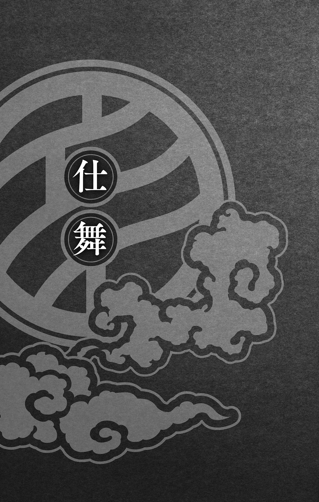
黙の国を去ってから一週間。俘囚城での監禁やゲンゴとの戦いの疲れを癒すようにというカカシの計らいでシカマルは休暇を命じられた。額の傷もゲンゴとの戦いのあとすぐにサクラに癒してもらっているし、休暇を必要とするような怪我はどこにもない。心にいたっては、黙の国に行く前よりもむしろ軽くなっている。別段休む必要はなかったのだが、カカシがどうしても休めというから仕方なく休んだ。
チョウジやいのたちも木ノ葉に戻ってくるとすぐに別の任務で外に出てゆき、ナルトやサクラはいまだ黙の国に留まっている。ミライを訪ねて紅先生の家に行っても、数時間話をすれば事足りた。
なにをするでもない一人だけの時間。
誰にも邪魔されない一週間。
久しぶりに穏やかな日々を過ごした。
日がな一日将棋盤を眺めて一人で駒を動かしている日もあれば、里の外に出て山に登り、朝陽が昇ってから空が夕陽に染まるまでずっと雲を眺める日もある。そんな時間がたまらなく楽しかった。
自分が変わったということを実感する。
黙の国に行く前のシカマルならば、一週間もの長い間任務や連合の仕事から離れるとなれば絶対に焦ったはずだ。自分がいない間に大事件が起こってはいないか、なにか重大なミスを誰かが起こしていないかなどと愚にもつかないことばかりを考えて、一日たりとも満足に休めなかっただろう。
しかし今回は、十分すぎるくらいに休んだ。この一週間、任務や連合のことを思いだすことは、寝る前の蒲団に入った十分程度。
自分がいなくとも仲間がしっかりやってくれている。自然とそう考えることができるようになった。
責任感がなくなった訳ではない。余裕ができただけ。もしも自分が本当に必要になった場合は、かならずカカシやテマリが呼んでくれるだろう。その時になってから頭を切り替えても十分に対応できる。休暇中まで、遮二無二仕事のことを考える必要などないのだ。
仲間を信じているからこそ、完全に頭を切り替えられる。そんな簡単なこともわからなくなるほどに、シカマルは自分を追いつめていた。
一週間の休暇で、黙の国に行く前までの自分とそのあとの自分のなにが違うのかを、嫌というほど客観的に見ることができた。そのなかで見えてきたのは仲間という存在の大きさ、そしてなにもかも自分一人で背負おうとしていた狭小で尊大な己の間違ったプライドだ。
人は一人では生きられない。自分一人ですべてをこなすことができるほど万能でもない。
だから仲間がいる。
一人で背負おうなどと思うこと自体が間違っているのだ。
それがわかっただけでも黙の国に行った甲斐があった。
俘囚城でゲンゴに籠絡されそうになった時、テマリの一撃を受けてすべてが吹っきれた。己がなに者なのかという明確な答えが、あの暴風のなかで見えたのだ。
シカマルは基本、無責任な男なのである。なにごとも面倒くさく、本当ならなにひとつやりたくない。ボケッとしていていいのなら、何日でも喜んで腑抜けていられる。
これが本来のシカマルなのだ。
それでいいではないか。
無責任でちゃらんぽらんな自分を認めたからこそできることがある。
夢がなく平々凡々に生きることを望む者の気持ちをわかってやれるのは、自分のようなヤツしかいない。それなりでいいと思うことがなにが悪い？ 目的や目標をもって高みを目指すだけが夢ではないのだ。
戦乱がつづく世のなかではなかなか難しい夢かもしれない。
だからこそ自分がいる意義がある。
この世が平和になれば、誰もが穏やかに暮らせる世になれば、それなりの人生を望む者が、それなりに生きることもできるだろう。生憎シカマルは戦乱の世に生まれてしまった。だからこうして忙しなく生きている。
これから先に生まれてくる者たちのために、この戦乱を終わらせなければならないのだ。ゲンゴのような崇高な想いからの夢ではない。志などという高尚なものでもない。
誰もがのんびり生きられる世......。
創ろうとする者が肩に力を入らせていては本末転倒ではないか。
それなりに頑張る。
その程度でいい。
＊
「今回は本当にご苦労様」
書類の束を机で叩いてそろえながらカカシが言った。
黙の国での一件の報告と復帰の挨拶のためにシカマルは火影の居室に来ている。
「現地に残っているサクラの現状報告書や、いのたちからの任務終了書で大体のところはわかった。療養中の鏃や朧の口からも君の奮闘は聞いているよ」
「奮闘......。ですか」
気恥ずかしい表現に眉尻が自然とゆがむ。
ゲンゴの幻術を見抜けずに術に嵌まりかけ、テマリに助けてもらってやっと目覚めることができ、最後の最後まで仲間に助けてもらった。一人で成し遂げたことなどなにひとつない。
「休暇の間にこれだけの報告書を書き上げなくてもよかったのに......」
言ってカカシが手にした書類の山に目を落とした。五十枚近くはある紙の束だ。さっき机で端をそろえていたのは、シカマルが書いた報告書である。
休暇の間に考えなかったのはあくまで現在進行形の任務や連合のことで、黙の国の一件のことは別だ。報告書をまとめることも忍の務めのひとつである。休暇の間にこの程度の仕事をするのは当たり前のことだ。といっても一日一時間程度という軽い仕事である。
「目を通しておくよ」
溜息とともにカカシが報告書を机の端にある書類の山の頂上に置いた。その分だけ標高が増す。
ぐらつく書類に目もくれず、カカシはシカマルへと視線をやった。
「君はこの里や連合にとってなくてはならない存在なんだから、もっと自分を大切にしてよね」
なくてはならない存在......。
「めんどくせーなぁ」
自然と口から漏れた言葉だった。そんなシカマルの顔をしげしげと眺めて、カカシは笑った。
「もう大丈夫だね」
「えぇ」
シカマルも自然と笑っていた。
「さてと......」
カカシが首筋に手を当てて頭を左右に幾度か振ってから、机の引き出しに手をやった。なにやら書類を一枚取り出すとそれをシカマルへと差し出す。
受け取り、書類に目を落とした。そこにはＢランクという赤い判子が押された任務の内容が明記されている。
火の国の大名の側近が雷の国へ国書を届ける道中に随行し、警護にあたるというものだ。いまや忍同士の連合というつながりの影響で飛躍的に治安が改善され、二国間の往来は昔よりも格段にしやすくなった。本来ならば大名の近臣だけでも警護が事足りるのだが、不測の事態のために忍を数名つけることになっている。別にシカマルでなくとも中忍以上の忍であれば満足にこなせる事案だった。
「君には簡単すぎる任務なんだが......」
「カカシさん、ちょっといいっすか？」
カカシの言葉を右手でさえぎり、シカマルは言った。驚くような表情でカカシがシカマルを見つめている。
「久しぶりに君が〝カカシさん〟なんて呼ぶからびっくりしたよ」
「体裁や格好ばかり気にしてあるべき姿を捻じ曲げるようなことすんのは、もう止めにしたんスよ」
「いいんじゃない」
うなずくカカシをそのままに、シカマルは話題を戻す。
「その任務なんスけど、別のヤツに任せちゃくれませんかね」
「どうして？」
「あ、明後日なんスけど......」
目をそむけたシカマルの頰が紅く染まっている。カカシが首をかしげながら次の言葉を待っていた。
「デートなんスよ」
「ぷっ」
噴き出したカカシをにらみつける。
「まさか君がデートで任務を断るなんて思わなかったからびっくりしたけど、いいじゃないの！ 行ってきなよ」
「ありがとうございます」
「青春ってやつだね」
目をつぶって腕を組んだカカシは、なん度もうなずいている。
〝それなりの人生〟は諦めたんだ。
これくらいの息抜きは許してくれ。
「では失礼します」
部屋を出ようとカカシに背をむけ右足を踏みだした。
「シカマル」
呼び止める声に振りむくと、カカシが立ち上がっていた。
「いまの君なら少しはわかるんじゃないのかと思ったんで、もう一度聞いてもいいかい？ 大人になるってどういうことなのかなぁ？」
視線を天井のほうにむけ、しばし考える。そして頭に浮かんできた言葉を正直に口にした。
「なにかを諦めて、もっと大事なモノを見つけること......。なんて感じじゃないスかね。オレにはよくわかんないスけど」
「なにかを諦めて、もっと大事なモノを見つけることか」
「ナルトみたいに子供の時からひとつのことに真っ直ぐにむかってゆけるヤツもいるが、大半のヤツは悩みながらなにかを諦め、それでも歩きつづけて、そうやって最後にはなにか大事なモノを見つけてそれにむかって生きるんじゃないっスかね」
「なるほどね......」
「そんじゃオレはこれで失礼します」
腕を組んで目を伏せているカカシに言って、シカマルは背をむけた。気恥ずかしくてこれ以上ここに留まっていられなかったからだ。
「楽しんでこいよシカマルッ」
扉を閉じる刹那、カカシの明るい声が聞こえてきた。
「ありがとうございます」
届かない言葉をシカマルは吐いた。
～みなを載せて時は緩やかに流れて行く～
オレに似たのだろうか？
生まれたばかりだというのにこの世のすべてを見透かしたように気だるい声で泣く赤子だった。
「大丈夫だ。自分がなにもわかってねぇってことに、お前も気づく時が来る。その時にともに歩むことができる仲間を作るんだぞ」
言葉などわかりもしない赤子は、一重で切れ長な母に似た目を真ん丸にしながらオレを見つめていた。
「これからはもうめんどくせーなんて言えないな」
「少しくらいならいいさ。アンタが本当に動かなくなる前に、私がまた頰っぺた張り飛ばしてやるから」
「あぁ、そうだな......」
名前はなににしようか？
「めんどくせー」
本書は書き下ろしです。
岸本斉史
１９７４年11月８日生まれ。岡山県出身。 年『カラクリ』でデビュー。
年『カラクリ』でデビュー。 年より週刊少年ジャンプにて『ＮＡＲＵＴＯ‐ナルト‐』連載開始。15年にわたってジャンプのトップを走り続け少年漫画の金字塔として国内外で絶大な支持を得る。
年より週刊少年ジャンプにて『ＮＡＲＵＴＯ‐ナルト‐』連載開始。15年にわたってジャンプのトップを走り続け少年漫画の金字塔として国内外で絶大な支持を得る。
矢野 隆
２００８年、小説すばる新人賞を『蛇衆』で受賞。以来、時代劇の名手として多数作品を刊行。他に漫画『アサシンクリード４』の原作を担当など、活躍の場所を広げている。
ジャンプジェイブックスDIGITAL
ＮＡＲＵＴＯ‐ナルト‐
シカマル秘伝 闇の黙に浮ぶ雲
著者 岸本斉史／矢野 隆
©2015 M.KISHIMOTO/T.YANO
２０１５年７月31日発行
この電子書籍は、ジャンプジェイブックス「ＮＡＲＵＴＯ‐ナルト‐ シカマル秘伝 闇の黙に浮ぶ雲」
２０１５年４月29日発行の第３刷を底本としています。
装丁 川畠弘行（テラエンジン）
担当編集 六郷祐介
編集人 浅田貴典
発行者 鈴木晴彦
発行所 株式会社 集英社
〒１０１－８０５０
東京都千代田区一ツ橋２丁目５番10号
０３－３２３０－６０８０（読者係）
制作所 株式会社デジタルディレクターズ
本作品の全部また一部を無断で複製、転載、改竄、インターネット上に掲載すること、および有償無償に関わらず、本データを第三者に譲渡することを禁じます。なお個人利用の目的であっても、コピーガードを解除しての複製は、法律で禁じられています。
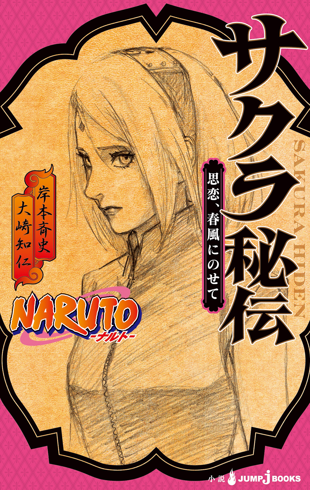
この本は縦書きでレイアウトされています。
また、ご覧になる機種により、表示の差が認められることがあります。
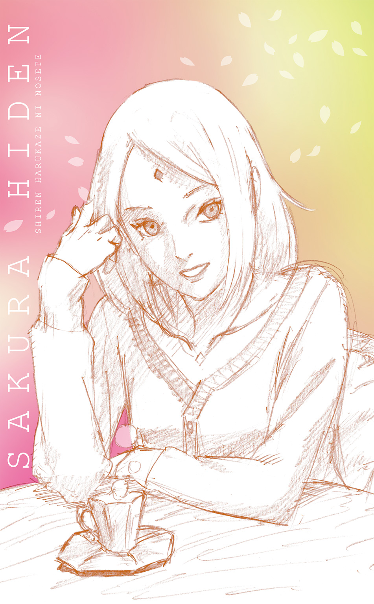
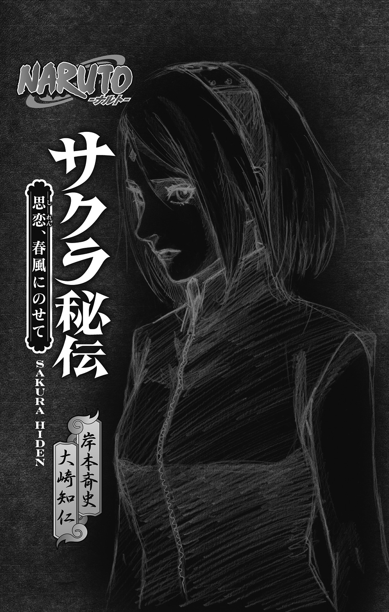
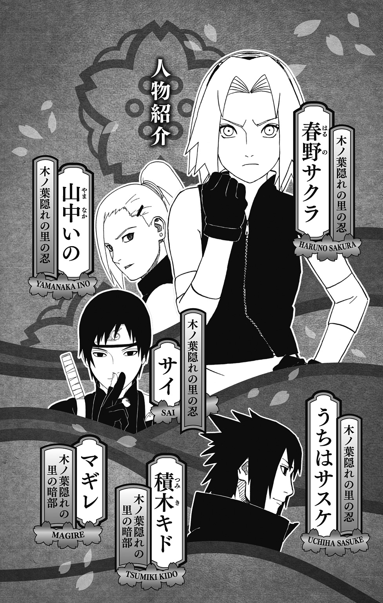
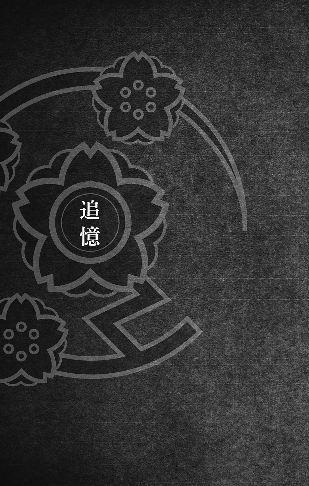
全部覚えてる。サスケくんに言われたこと。
――お前、うざいよ。
あのときは、ショックだったなあ。
でも、あのとき、いけなかったのは私。サスケくんの前で、なんか舞い上がっちゃって、言わなくていいことまで言っちゃって、それで、うざいよ。
うん、当たり前だよ。
――やっぱり......お前、うざいよ。
これは、サスケくんが里を抜けるとき。
このときも、私、ショックだった。でも、このあとで、サスケくんは、こう続けてくれたんだ。
――サクラ......
――ありがとう......
すごく救われた。「ありがとう」って一言。あのあと、サスケくんは里を抜けて、ずーっと会えない日が続いたけど、私、あの「ありがとう」って一言があったから、サスケくんを信じていられた。
大変な戦い......ううん、大変なんて言葉じゃ言い尽くせない、この世界が滅びちゃうほどの戦いが起こって、そこにサスケくんは戻ってきてくれた。
そして、戦いが終わって、サスケくんは旅に出た。
その旅についていきたいって、私、言ったら、サスケくん、
――お前はオレの罪とは関係ない。
だって。
でも、そのあとに続けて、
――また今度な。
――ありがとう......
額を、トンってしてくれた。
また今度な。ありがとう。何度も、胸のなかで繰り返してるよ。トン、の感触も。
「うざいよ」から始まって、「また今度な」まで来たんだ。そう思うと、なんか心があったかくなる。
サスケくん。今どこにいるの？
サスケくん――
私、今ね――
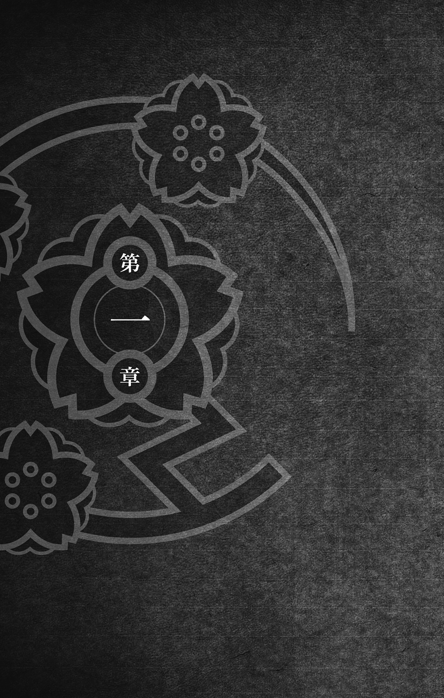
１
資料を手に説明しているのは、女性の医療忍者だった。年は、サクラより二つほど下といったところか。
「――お配りした資料のデータを見てもわかる通り、心身の不調を訴える子どもの数は確実に減っています」
「導入から一年半、効果はきちんと上がっているというわけね」
サクラが言うと、説明係の医療忍者は、「はい、十分に」とうなずいた。緊張しているのか、少し頰が赤い。
「症状が長引いて、対話によるカウンセリングでの改善が見られない場合は、院内の他の科とも連携して、薬の処方なども含めた対応をとるようにしています」
「問題ないんじゃない」
サクラの隣にいた、いのが言った。
サクラは「そうね」とうなずいてから、
「ただし、他の科との連携は、なるべくきめ細かく進めてください。少しの対話で改善しないからといって、薬による治療にパスするんじゃなく、まずはじっくりと子どもの話を聞いてあげること。『子ども心療室』の設立の趣旨はそもそもそこにありますから」
そう付け加えておいた。
そのあとも資料にもとづいた説明が続き、今後の方針を確認し合ったところで会議は終わった。
サクラといのは会議室を出た。木ノ葉病院内にある会議室だった。
「あの子、ちょっと緊張してたね」
廊下を歩きながら、いのが言った。
「説明してくれた子？ まだ慣れてないんじゃない。ああいう場に」
「それもあるだろうけど、憧れのサクラ先輩が目の前にいたせいもあるんじゃないかな」
「なによそれ」
サクラが聞くと、いのはいたずらっぽく笑って言う。
「知らない？ あんたって後輩人気すごいんだよ。――医療忍者だけど戦えば強い。おまけに仕事もバリバリできて、しかも美人。そりゃ人気も出るでしょ」
私もあやかりたいなー、と笑ういのに、
「やめてよ」
サクラは苦笑いしてつっこむ。
しばらく友達モードで話したあと、いのが話題を仕事のほうに戻す。
「でも、ようやく軌道に乗ったって感じだね、子ども心療室」
「そうだね」とサクラもうなずく。
木ノ葉病院内に、子どもの心のケアを専門に担当する部署を作ってはどうか、と、サクラが上層部に提案したのは、二年ほど前、第四次忍界大戦が終結して、半年が過ぎた頃だった。
大筒木カグヤの復活を、世界中の忍が連合して阻止した、あの大戦――
あまりに強大な敵に、世界は何度も絶望の淵に落とされたが、それでもナルトを中心にした忍連合軍は折れず屈せず戦い抜き、カグヤの野望を打ち砕いた。
平和の訪れに、人々は歓喜した。世界は、救われたのだ。
やがて復興が始まり、大規模な戦闘で損傷した土地や建造物の修復が進められた。
サクラも医療忍者として、大勢の負傷した忍たちの治療にあたった。
大きな傷を負った者も少なくなかったが、治療に訪れる人たちの表情はみな穏やかだった。戦争が終わったという安心感のためだろう。
サクラがふと、
――子どもたちはどうなんだろう......？
と、考えたのは、たまたま病院で、赤ちゃんを抱いた紅を見かけたときだった。
直接戦いに参加していない子どもたちは、肉体的には無傷かもしれない。しかし、心のほうはどうだろう。
いつ終わるとも知れない戦争は、幼い心に大きなストレスを与えたのではないだろうか。国土が崩壊するさまを見て、あるいは近しい人の死を知って、心に傷を負っているのではないだろうか。
サクラは病院の来院者のデータを調べてみた。すると、大戦後、原因不明の体調不良を訴える子どもたちが多く来ているようだった。
放ってはおけない、とサクラは思った。
子どもたちは里の宝――これは三代目火影のヒルゼンがよく口にしていた言葉だった。先輩の忍たちもみな、共通の認識としてこの言葉を胸に刻んでいた。
病院内に専門職を置き、子どもたちの心のケアをする仕組みが作れないか、サクラはまず師匠である綱手に相談してみた。
「いいと思う」と師匠は言った。「お前が主導で進めてみるんだ、サクラ」
師匠に背中を押され、サクラは準備に入った。専門職の要員確保とその養成。木ノ葉病院との連携や、下地作り。そして、どうやって予算をとりつけるか。やることは多く、とてもサクラ一人では無理だったが、同期の山中いのが手伝いを買って出てくれた。
「あんたって意外と真面目なとこあるからね。一人で抱えこんでパンクしたら可哀相だから」
いのの協力もあり、『子ども心療室』は、半年の準備期間で導入にこぎつけることができた。
効果はすぐに見え始め、着実に上がっていった。それは今日受けた説明でも数値として示された。
「いのが手伝ってくれたおかげだよ。ありがと」
「特別ボーナスが出たら、なんかおごってよ」
いのの軽口に、サクラは吹き出した。
病院を出ると、いのが「お茶でもどう？」と誘ってきた。
だがサクラは、「ごめん」と両手を合わせる。
「今日はこのあとまとめておきたい資料があるんだ。また今度ね」
「わかった」
いのは言ったが、その顔に少し心配するような色があった。ちょっと頑張りすぎじゃない？ と、その目が告げている。
サクラはそれに気づかなかったふりをして、「じゃあね」と手を振った。
繁華街を一人で歩き出す。
午後の早い時間だが、街はにぎわっていた。
里に積もっていた雪もすっかり解け、季節はもう春だ。道行く人たちも、重たいコートから解放されている。
「あれ？ サクラちゃん」
不意に、背後から声が聞こえた。よく知る声だ。
「ナルト！ ヒナタ！」
振り返ると、私服姿の二人がこちらに歩いてくる。
「なに？ デート？」
サクラは聞いた。
「そ。たまたま二人とも非番だったからよ」
「サクラちゃんは？」とヒナタ。
「私は病院で、いのと打ち合わせ」
「話は聞いてるってばよ。あー、例の、なんだっけ、子ども......えーと、なんとか室？」
「子ども心療室」と訂正してから、「今からなに？ ゴハン？」と聞いた。
「うん。一楽に」
ヒナタがうなずく。
「なあ」とそこへ、ナルトが耳打ちしてきた。
（サイから借りた『安安』にさ、デート代は男がもったほうがいいって書いてたんだけどよ、コース料理ってスゲー高えんだな）
少し蒼ざめているナルトに、サクラはくすっと笑いつつ、
（いいのよ、背伸びしなくても）
と囁き返しておいた。
「なんの話？」と、首をかしげるヒナタに、
「あー、やー、なんでもない、なんでもない」とナルトは笑い、「ラーメン楽しみだなー」とお腹をさすってみせた。
ナルトのしぐさがおかしかったのか、ヒナタはぷっと吹き出した。微笑ましい二人の様子に、サクラの口元もほころぶ。
二人が里公認のカップルになって数か月が経とうとしていた。
奥手のヒナタと、鈍感なナルトの関係は、近くにいてサクラもかなりやきもきさせられたが、めでたく結ばれた今は、それも楽しい思い出だった。
きっかけとなる事件が、この冬にあった。
月に住む大筒木最後の末裔、大筒木トネリが、ヒナタの妹ハナビをさらい、その白眼を奪って地球滅亡をもくろんだのだ。
トネリと交戦したナルトが深手を負い、ヒナタが連れ去られるという状況にもなったが、復活したナルトがトネリを撃破し、地球の滅亡は回避された。
その任務を通して、ナルトはヒナタが自分にとってかけがえのない存在であることに気づき、ヒナタに想いを告げたのだ。
地球を救ったナルトが、ヒナタと恋人同士になって帰還した――そのニュースはまたたくまに里内を駆けめぐった。
しばらくは同期や先輩の忍から冷やかされていた二人だが、もうそういう時期は終わっている。
先日、招待状をもらった。二人の結婚式は、もうすぐだった。
「そうだ、サクラちゃんも一緒にラーメンどーよ？」
にかっと笑ってそんなことを言うナルトに、「あのね」とサクラは溜め息をつく。
「私が一緒に行ってどーすんのよ。せっかくの非番なんでしょ。たっぷりデートしてきなさいって」
二人の後ろに回りこむと、背中を押してやった。
繁華街を歩いていくナルトとヒナタの後ろ姿を見送る。ナルトがなにか冗談を言い、ヒナタが笑う。幸せそうな二人の姿に、
――いいなあ。
ついそう思ってしまう。
だが、思っても仕方のないことだった。
届かない想いは胸の底に降り積もっていき、溜め息に変わる。そんなとき、決まって頭は仕事のことを考え始めるのだ。
まとめなくてはいけない資料。目を通すべき報告書。
いつのまにか仕事モードになっていた自分に気づき、サクラは苦く笑った。
――こりゃ、いのが心配するわけだ......。
２
火影の笠と装束をまとい、机についているのは六代目火影のカカシだ。
「サクラ、前に打診されてた件だけど、砂から返事が来た。向こうさんはいつでもオーケーだそうだ」
「ほんとですか」
サクラが顔を輝かせると、カカシはにっこりと笑い、
「いのと二人で行ってきたら？ あの子も結構手伝ってくれたんでしょ？」
と続ける。
「はい、そうします！」
木ノ葉病院で、いのとともに『子ども心療室』の効果についての報告を受けてから一週間。サクラは火影室に呼び出されていた。
『子ども心療室』の現状を、同盟国である砂隠れの里にも伝えたい、と、以前からカカシに願い出ていたのだ。
大戦のストレスにより心が傷ついた子どもは、木ノ葉以外にもいるはずだ。
ならば、木ノ葉で効果を上げた心療室の仕組み作りは、他里にとっても有益であるはずだった。
「役に立つシステムはみんなで共有しないとね。しっかり教えてきてあげて」
「はい。カカシ先生にも、この件では本当に助けていただきました。予算でも便宜をはかってくださって......」
「元教え子が頑張ってんだから、俺としてもなんか手伝いたいじゃない。それにまあ......心の傷が厄介なもんだってことは、俺もわかってるからね」
カカシは言って、小さくうなずいた。
「砂への出張の日程は、お前といのに任せる。気をつけて行ってくるんだぞ」
「はい！」
サクラは火影室をあとにした。
砂隠れの里までは、四日はかかる。旅に必要な忍具や装備のことを考えつつ、資料ももう一度整理しておかなくてはいけない。火影の家を出て、あれこれ考えながら歩いていると、少し先にサイの姿が見えた。任務服の背に大きな巻物を背負っている。
「サイ」と声をかけると、「やあ」と近づいてきた。
「あんたもカカシ先生に用事？」
聞くと、「んー、うん」と、サイはなんだか煮え切らない返事を返してくる。
「サクラのほうこそ、火影室になにか用事だったの？」
反対に聞き返してくるサイに、サクラは砂隠れへの出張のことを話した。
「そう。砂に。だったらお肌の水分補給はマメにしたほうがいいね。あそこは乾燥してるから」
サイの忠告に、サクラはうなずく。
「大丈夫よ。ちゃんと保湿液持ってく。私だってそれぐらいの女子力あるんだから」
「そっか。でも、サクラは女子力というより腕力ってカンジだから、保湿液のびん握りつぶさないようにね」
にっこりとそんなことを言うサイに、サクラも微笑みながら言ってやった。
「腕力でその口ふさいであげよーか？」
「怖い怖い」
ちっとも怖がった様子もなく言って、サイは火影の家に向かって歩き出した。
まったく、と、サクラは苦笑する。
「お呼びでしょうか」
机の前に立ち、サイが言った。
「悪いな、急に呼び出して」
カカシは手にしていたファイルを閉じた。
「いえ。でも、ボクに個人的に頼みたいことというのは......？ なにか任務ですか？」
「うん、ま、任務っちゃあ任務なんだが、正式のものってわけじゃないんだ」
「どういうことです？」
サイがわずかに目を細めた。
「お前に調べてほしいことがある。ただしそれはお前一人で動いてほしい」
「なにを調べれば」
カカシはうなずくと、続けた。
「――一週間前、里の温泉に保養に来ていた大名が、何者かに襲われた事件は知ってるな？」
「はい。......湯につかっていた大名の近くにクナイが一本飛んできたと聞きましたが」
「まあ、被害自体はゼロといってもいい。大名も無傷だったしな。だが、その日、大名の来ていた温泉の周辺は、暗部によって厳重な警備が敷かれていたんだ。クナイ一本投げこむにしても、それは容易なことじゃなかった」
それと、とカカシは続ける。
「その事件のさらに数日前だ。里の演習場の一つを視察に来ていた御意見番のホムラ様とお付きの忍二名が、暴漢に襲撃された」
「その事件は知りませんでした」
「ホムラ様が大ごとにされるのを嫌ったからな、おおっぴらにはしてないんだ」
「でも、不穏ですね。国の重役が襲われているわけですから」
「それも立て続けにな」
「その二つの事件をボクに調べろということですか？」
「そ。まあ、事件が二つで終わるのか、三つめがあるのか、二つの事件は同一犯なのか、それとも別個のものなのか、とにかくそこら辺ひっくるめて全部お前に調べてほしいわけ」
カカシは言った。
サイが聞く。
「暗部は？ 動かしてないんですか？」
「動いてるよ、もちろん。だけど、個人的に探索の糸を一本垂らしておきたいなと思って。それでお前に」
「わかりました。すぐに動きます」
「悪いね」
「ナルトやサクラと一緒に動かなくていいですか？ そのほうが調査の効率も上がる......いや、ナルトはこういうのは苦手かな」
「わかってるじゃない」
カカシは笑った。
「あいつはこういう隠密系のミッションには不向きだから。それにサクラはサクラで、今やることがあるからね」
「そういえば、ここに来る途中で会いました。砂に出張に行くとか」
「そうそう。だから今は、とりあえずサイ一人で動いてよ。そのほうが目立たないと思うし」
「わかりました」
「くれぐれも慎重にな」
カカシは言って、表情を引き締めた。
「単なるイタズラや粗暴犯じゃないような気が、俺にはしてるんだ」
「先生のカン、ですか」
「うん。意外と当たるんだよね、これが」
「慎重に動きます。でも、先生も用心してくださいね」
「俺も？」
「国の重役が襲われているんです。次に六代目様が襲われても不思議じゃありません」
「確かにそうだな。用心しとくよ」
カカシはうなずきながらも、
――手っ取り早く俺を狙ってくれてもいいんだがな。
と、一瞬思う。
３
旅の準備が整い、いのとの打ち合わせも済ませた。
砂隠れの里への出発を翌日に控えたサクラは、綱手に呼び出された。
場所は、綱手の行きつけの酒酒屋だ。
「別に用事というわけではないんだ。明日からお前が旅に出ると聞いてな、それの景気づけみたいなもんだ。......ま、本当は私がただ飲みたかっただけだがな」
そう言って、綱手は笑った。
サクラが負担に思わないように、そういう言い方をしてくれているのだとわかった。
綱手も、最近のサクラが働きすぎていると思っているのだ。だから呼び出してガス抜きをしてやろう、ということなのだろう。
『子ども心療室』設立に際して、サクラの背を押してくれたのは綱手だ。今のサクラの仕事ぶりに、ひょっとしたら綱手はいささかの責任を感じているのかもしれない。
「――しかし、立派になったもんだね、私の弟子も。里に子ども心療室なんてのを導入するなんて。私も師匠として鼻が高いよ」
次々と盃を干す綱手の頰には朱が差している。食事もそこそこに、早いペースで飲み始めていたのだ。
「でも、結局のところ、私がやったのは窓口を整備しただけです。実際、子どもたちと向き合うのは専門職の人間ですから」
「謙遜しなくていい。子どもは自分の心の傷について、うまく言葉にできないことが多い。だから溜めこんで、しんどい思いをすることになる。そんなとき、救いの手を差し伸べてくれる人間がいるのは心強いことだ。その仕組みをお前が作ったんだ。十分意味はある」
「はい」
師匠にそう言ってもらえると、サクラも報われたような気がして嬉しくなる。
「ところで仲良くやってるのか、ナルトとヒナタは」
仕事寄りの話が一段落したとき、綱手が聞いてきた。
「ええ。こないだ、たまたまデートしてるとこに遭遇しましたよ。うまくやってるみたいでした」
「ヒナタも、あれはあれで意外と手綱をしっかり握るタイプかもしれんな」
「だと思います。相手が勝ち気なタイプだとナルトも衝突しちゃうかもしれませんけど、ヒナタならそういう心配もないでしょうし」
「お前のような女だと難しかったかもしれないな」
綱手が言って、にやりと笑った。サクラは、「あはは」と笑って頭をかく。その笑みが、すぐに溜め息にとって代わるのは、やはり自分の恋のことを考えたせいだ。
――いけない、いけない、しんみりしたら。
サクラは慌ててカラリとした声で聞いた。
「師匠、もうぶっちゃけ聞いちゃいますけど、男の人って、どうやったら振り向いてくれるんですかね」
「男を振り向かせたい......なら」
綱手は言うと、一拍置いてから、
「胸だな」
そう言ってドーンと胸を張る。
――胸......。お胸かあ。
「そうかあ。やっぱりなあ。ヒナタも大きいもんなあ」
サクラはズーンと肩を落とす。
「馬鹿、冗談だ」
綱手が慌てて言い足した。
「なにで振り向くかは、人による」
「はあ。そう思いたいです......」
「頑張れ、サクラ。ま、こればっかりはなにも手助けはしてやれんがな」
「だったら師匠、賭けてください」
サクラは言った。
「賭ける？」
「私の恋がうまくいかないほうに。師匠の賭けはよく外れるんですよね。だから」
はっ、と綱手は大きな胸をそらして笑った。
「わかった。そうしよう」
４
翌日、あうんの門をくぐり、サクラといのは砂隠れの里に向けて出発した。
風の国・砂隠れの里は、火の国・木ノ葉隠れの里の西方に位置している。里を出て、荒野と樹海を抜けた先に、砂隠れの里はあった。
飛ばせば三日で着くが、今回は緊急時ではない。高速移動をするつもりはなかった。
砂隠れの担当者には、四日後の到着予定だと伝えてある。
天候も穏やかで、移動は楽だった。任務服の二人は、雑談しながら快調に荒野を駆けた。
「テマリさんとシカマルがどうも怪しいんだよね」
と、いのが言い出したのは、里を出て二時間ほど駆けた頃だった。
サクラはいのの顔を見た。いたずらっぽい笑みを浮かべている。腰まである綺麗な髪を、今は束ねていた。
「怪しいって、それ......」
「付き合ってんじゃないかってこと」
「ほんとに!?」
「うん。ていうか、あれは付き合ってるね」
「断言しちゃうんだ」
駆けながら会話しているが、二人とも呼吸は乱れていない。
いのが続ける。
「ほら、テマリさんてさ、たまに木ノ葉に来るでしょ。仕事で」
「まあ、あの人は砂の外交担当だからね」
「でね、私、こないだ見ちゃったんだー。シカマルとテマリさんが並んで歩いてるとこ」
「そんなの」とサクラは笑う。
「別にフツーじゃない？ 仕事の話してたのかもしれないし」
シカマルも里での立場が重くなり、他国の外交担当者とも密に連絡をとっている。実際サクラも、二人が一緒に歩いているところを里で何度か見かけたことがあった。
「それはそうなんだけどさ、なんていうか、恋人同士っぽいフンイキってあるじゃん。別に腕を組んでるとかじゃないんだけどさ、表情とか、漂わせてるムードっていうの？ 私がこないだ見たとき、二人がまさにそれだったんだよね。いつもだったら私、二人に声かけるけど、そのときはためらっちゃって、結局声かけなかったもん」
「そうなんだ......。テマリさんとシカマルがね」
だが、組み合わせとしては、そんなに意外じゃないな、というのが正直な気持ちだった。
なにかと縁のある二人なのだ。中忍選抜試験のときは対戦相手として顔を合わせ、またサスケ奪還任務のときは、音隠れの多由也と戦うシカマルのもとへ助太刀に現れたのがテマリだった。
その後も、里は違えど見知った仲としてそれなりの交流はあっただろうし、任務や仕事、そしてあの大戦を経て、二人の気持ちが友情とは違うものに傾いていったとしても不思議ではない。
「向こうに着いたら、テマリさんにその辺のこと聞いてみようかな」
いのが言って、ふふっと笑う。
「やめときなよ。あのでっかい扇子で叩かれるわよ」
「あはは、確かにー」
他愛のない会話が楽しかった。
「みんな春だね。でも、シカマルはそうでも、チョウジはさすがにまだ色気より食い気なんじゃない？」
サクラは聞いてみた。
「いやいや、それがそうでもないんだよねー」と、いの。
まだ秘密情報があるのよ、という顔でいのが続ける。
「雲隠れのカルイさん」
「噓！」
これは意外だった。
「あの、なんていうか、激しい感じの人？」
「そう。なんかチョウジがさ、最近やたらと理由つけて雲隠れに行きたがるからさ、怪しいと思って問い詰めたんだよね。そしたら――『んーとね、なんかね、カルイさんとご飯の約束があって』とかモジモジしながら言うんだもん」
あれは時間の問題だね、と、いのは言って、一人でうなずいている。
「そうかあ」とサクラもうなずく。
ふと思いついて、聞いてみる。
「それより、いののほうはどうなの？ 最近、その、レンアイ方面は」
子どもの頃は、ともにサスケをめぐってライバル心をむき出しにしていたサクラといのだが、成長とともに、いのはそのレースから降りた感じになっていた。
いのが今、誰を想っているのか、それとも誰のことも想っていないのか、知りたくなった。
「うーん......まあ、いるよ」
と、いのは恥ずかしそうに答えた。
「え、彼氏できたの？」
「ううん。じゃなくて。いいなって思ってる人なら、いるよってこと」
「へー！」
思わずサクラはいののほうに寄った。
「全然知らなかった。なになに？ 誰なの？」
「すごい食いつくじゃん、サクラ」
「だって気になるよ。ヒントちょうだい、ヒント」
「ヒントぉ？」
いのは少し考えると、頰をうっすら染めて、
「......絵のうまい人」
「いや、それもう答えじゃん！」
サクラはつっこんだ。
「ふうん、そっか、サイか」
「でも、意外じゃないでしょ？」
「まあ、ね」
サイがサスケの代わりに第七班に編入された当初から、いのはサイに気があるそぶりを見せていたのだ。サスケくんにちょっと似ててカッコいいね、と。
「最初の頃はさ、まあまあイケメンだなーぐらいだったんだけど、わかんないね、気持ちって。今は完全にもってかれてる......ってなにコレ!? 私、すごい恥ずかしいこと言ってない？ わー！ ひー！」
「落ち着いて、落ち着いて」
と、いのをなだめて、サクラは聞く。
「で、ちなみに......告白とかは？」
「それは、うん、まだ......」
いのの声が小さくなる。その反応が、サクラには意外だった。
異性関係では割とさばけたところがあって、思い立ったら即行動、みたいなイメージが、いのにはあったが、今回はどうも違うらしい。
「ラベンダーか、ハナミズキか......迷ってんだよね」
いのが言った。
「ラベンダーか、ハナミズキ？」
「うん......。ラベンダーの花言葉は、〝あなたを待っています〟、ハナミズキの花言葉は、〝私の想いを受け止めて〟。サイに気のある雰囲気出して、あいつのこと待ってればいいのか、それとも、こっちからバシッと告白しちゃうのがいいのか......今、悩み中なんだ」
「そっか」
花言葉で説明してくれる辺り、いかにも花屋の娘だった。
「いのは......ハナミズキのイメージだけどな、私は」
サクラは言ってみた。いのもうなずく。
「だよねー、私のキャラ的にはねー」
うー悩むぜ、と、額に手を当てるいのが、なんだか少し可愛らしく見えた。
私の場合は、とサクラはふと思った。
――ラベンダー、なのかな、やっぱり......。
私の想いを受け止めて、と言おうにも、サスケは旅の空だ。
サクラには、今のところ待つことしかできなかった。
でも、と思う。
――いつまで待てば......？
５
旅人風のコートを羽織り、一振りの刀を背負った男と、黒いベストを着た眼光の鋭い男が対峙していた。
ベストの男の背後には、十数人の仲間がいたが、コートの男は連れもおらず、一人だった。
彼らの近くには、数張りのテントがあった。岩山と砂に囲まれたアジトだった。テントの色は砂と同系色で、上空から視認されにくいようになっている。
「本気で言ってるのか？ 俺たちと手を組み、木ノ葉隠れの里でテロを起こすと」
ベストの男が聞いた。
コートの男はうなずいた。
「そうだ。何度も言わせるな」
「俺の知っている話と違うな。......お前は、里への憎しみを捨て、里のために戦ったんじゃないのか？」
「人は変わる」
コートの男は冷たい声で言った。
「憎しみは消えてなどいなかった。俺自身、一旦は消えたかに思えたが、それは思い違いだった。俺はもう一度動く。里を潰すためにな」
ベストの男は、相手の顔を見返した。
会うのは今日で二度目だった。
一度目はすぐに追い返した。持ちかけてきた話があまりにも胡散臭かったからだ。しかし、懲りずにこの男は会いに来た。
「なぜ、俺たちと手を組みたいんだ？ 理由を聞かせろ」
ベストの男は聞いた。
「アンタらの噂は聞いている」
コートの男は無表情に言った。
「元砂隠れの忍で、手練れの集団だと。特にリーダーのアンタは、なかなかの風遁使いだそうだな。その力を見こんでだ」
「それだけでは答えになっていないな。俺たちがどういう組織かわかっているのか？」
「わかってるさ。砂の現体制に不満を持つ、砂の抜け忍で構成されたテロリスト集団だろう」
相手の言い方に、どこかこちらを軽んじるような響きがあって、ベストの男は不快だった。
「そうだ。確かに俺たちは砂の現体制を変革したいと考えている。そのために強い忍を欲していることも事実だ。だが、俺たちは木ノ葉に対してはなんの恨みもない。その俺たちがどうしてお前と手を組んで木ノ葉を襲う必要がある？」
「俺の力はアンタらの組織にとって有益なはずだ。俺の力があれば、砂でクーデターを起こすことも容易だろう。そのためにまず、俺の木ノ葉崩しに協力しろと言ってるんだ。木ノ葉崩しが成ったあかつきには、アンタらが砂で起こすテロにも力を貸してやる」
ベストの男は鼻を鳴らしてかぶりを振った。
「協力しろ。力を貸してやる。......お前はなにか勘違いしていないか？ なぜお前が上から物を言う？」
「俺のほうが上だからに決まっているだろう。いいか？ 勘違いしてるのはアンタらのほうだ。仲間じゃない、俺の手下にしてやる。そのほうがアンタらにとっても得だから、そうしたほうがいい」
ベストの男は目を閉じた。怒りを静めるための瞑目だった。
目を開け、ベストの男は言った。
「決裂だな。話にならん。さっさとここから失せろ」
「......そうか。ならば消えるとしよう。だが――」
そこで相手は目を細めた。
「貴様らは、俺の木ノ葉崩しの計画を知ってしまったな」
直後、ベストの男は両手で印を結んだ。
――風遁・風切りの術！
斬風が、相手の体を蹂躙し、その四肢をばらばらに切断した。
「いい反応だな」
声が耳元でしたのと同時に、ベストの男は自分の体が背後から刀で貫かれていることに気づいた。
風遁で仕留めたかに見えたが、それは幻術だった――
「ぐっ......！」
口から血と苦悶の声がもれたときだった。四方八方から忍が殺到してきた。
「全員動くな！」
乱入してきた忍たちは、砂隠れの暗部の仮面をつけていた。
腹の異物感が消えた。と同時にベストの男はぐらりと倒れた。
横倒しになった視界のなかで、コートの男が大きく跳躍して、この場を離れるのが見えた。
「逃げたぞ！」
暗部の誰かが叫んだ。
怒号と、忍具の飛び交う音。仲間と、暗部たちが戦っているのだ。
砂塵のなかで、ベストの男の視界は暗くなっていった。
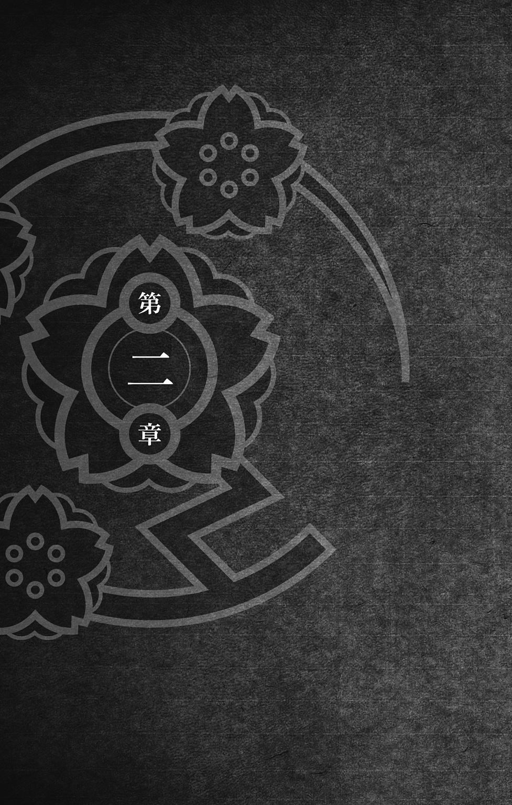
１
「こいつらを調べればいいんで？」
サイの渡したメモを手に、情報屋の男が言った。スキンヘッドで、眉も剃り落としているため、年齢のわかりにくい男だった。実際、何歳なのかサイも知らない。
里のはずれにある森のなかだった。木もれ日が、二人の周囲に落ちている。
「そうだ」
と、サイはうなずいた。
「......霧の抜け忍のテンゼン......、魂抜きのゲンバ......、犯罪結社『亡』の頭目、バラキ......どいつもこいつも手配凶度上位の大物ばかりじゃないですか」
情報屋は言った。近くを川が流れており、その水音のせいで、声は遠くには届かない。
「とりあえず、その三人をあたってほしい。不穏な動きはないか、どんなささいな情報でもいいから拾ってきてほしいんだ」
「わかりました」
「三人の名、覚えたか？」
情報屋がうなずいたので、サイは片手で簡単な印を結んだ。
情報屋の手にしていたメモの文字が、蒸発するように消えた。文字は、サイの持つ特殊な墨で書かれていた。
「しかしまた、なんでこいつらの動向を？」
「アンタが知る必要はないよ」
「例の、御意見番のホムラ様が襲われた件のからみですか？」
サイは情報屋の顔を見た。薄く笑っている。
「よく知っているな」
「こちとら、それが飯の種ですからね。......で、今言った連中の誰かが怪しいんですか？」
「アンタが知る必要はないと言っただろう」
サイが一瞬目つきを鋭くすると、情報屋はぎくりとした顔になった。
「おっと失礼。わきまえておきます」
相手が相手だから探るのに時間がかかるかもしれない、と言い置いて、情報屋は森をあとにした。
サイも森を出て、里に向かう道を歩き出した。
子飼いの情報屋を動かしたが、おそらくは空振りだろうな、という予感がしていた。三人の大物犯罪者について、情報屋はなにがしかのネタを持ち帰ってくるだろうが、それが今回の事件につながる可能性は低いだろう。それでも行かせたのは、万が一を考えてのことだ。
保養中の大名と、視察中の御意見番が襲われた。
カカシは、単なる粗暴犯とは思えないと言っていたが、それはサイも同感だった。
カカシから密命を下された日、サイは暗部の資料室に出向き、二つの事件について調べてみた。
大名は駕籠で移動中も、そして温泉場に着いてからも、暗部の強固な警護のもとにあった。その警護のわずかな隙をついて、温泉につかる大名の近くにクナイが一本飛来した。
たかがクナイ一本と軽視することはできなかった。そのクナイに起爆札でもついていたら、被害は甚大だったはずだ。
視察中、暴漢に襲われた御意見番のホムラにも、暗部ではないが二名の忍が警護役としてそばについていた。
暴漢は覆面をした三人の男だった。そのうちの一人に忍刀で斬りつけられ、ホムラは腕に軽い傷を負った。
暴漢はすぐに逃走し、警護役がこれを追ったが、途中でまかれ、身柄を確保するには至らなかった。逃げた暴漢は、薄紫色のチャクラの衣をまとっていたという。
警備の追跡をかわしたこともそうだが、古強者のホムラに、浅いとはいえ傷を負わせたことからも、相手が強い忍であることはわかった。敵の狙いや規模は不明だが、忍としてのスキルだけなら、敵のそれは相当なものと見てよかった。
強い忍で、犯罪行為に手を染めるとなると、おのずと手配書の手配凶度の高い犯罪者に目がいく。
だから、サイは情報屋に接触し、手配書上位者の動向を探らせることにした。無論、上位者すべてをあたらせるわけにはいかないから、明らかに違うと思われる者などは外しておいた。
だが、そのぐらいの調査は、すでに暗部の人間もやっているだろう。そのうえで、カカシがサイに密命を下したということは、もっと得体の知れない何者かの存在を、カカシは事件の背後に感じているに違いない。
サイは、このあとの行動について考えた。
事件の現場となった温泉場と演習場に行ってみようか、あるいはもう一度手配書を洗い直すか。そのとき、背後に気配を感じ、サイは立ち止まった。
森からは離れ、もう街区のなかに入っていたが、にぎやかなところではなかった。道沿いに、工場の裏手のコンクリート塀が続いている。人通りはない。サイがここに来るのを待って、相手は気配を消すのをやめたのかもしれなかった。
戦いが、すぐに起こった。背後から手裏剣が飛んでくる。それを横に跳んでかわし、振り返って、敵の人数を確認した。
二十メートルほど先に、二人。黒い覆面をつけている。覆面の暴漢――御意見番を襲ったやつだろうか。二人以外に仲間が潜んでいるかどうかは、わからなかった。
追撃が来た。
一人がクナイを投げた。と同時に、もう一人が動いた。動いたほうは、クナイを逆手に持っている。飛来するクナイをよけさせ、サイの体勢が崩れたところを攻撃するつもりのようだ。連係の呼吸はよかった。
サイはクナイをかわし、そこへ肉薄してきたもう一人の攻撃も後方へ跳んでかわした。跳びながら、巻物と筆をかまえる。
――忍法・超獣偽画！
墨の線で描かれた二頭の虎に命が宿り、敵めがけて駆けていく。これで終わりだろう、とサイは思ったが、それは裏切られた。
襲いかかった猛虎の一頭は、クナイで額を突かれて墨の飛沫に変わり、もう一頭は、嚙みつこうとしたところをかわされて背中に乗られ、やはり首をクナイで刺されて墨に戻った。
サイは、はっとした。思いの外、強い。
虎を倒した敵は、そのまま守勢に回らず、攻めかかってきた。
一人がクナイや手裏剣を飛ばし、サイがかわしたところへ、もう一人が踏みこんでくる。
単調なコンビプレーだが、攻撃のキレがいいために、サイも反撃の糸口が摑めない。
サイは煙玉を地面に投げた。
ボンという破裂音とともに、煙幕が広がった。
サイは素早く煙の外に出、巻物に新たな絵を描いた。
煙が薄くなっていく。敵はクナイをかまえ、サイの攻撃に備えていた。
サイが新たに描いた虎が、敵めがけて走っていった。今度の虎はさっきのよりも小さい。が、六頭に増やしておいた。
頭を低くして走る虎、高く飛ぶ虎、それぞれがトリッキーな動きで敵を攪乱する。
虎の数が増えたことで、敵も攻めあぐねているようだ。
――よし！
サイはクナイを手に、乱戦の渦中に飛びこんだ。
――まずはこいつから......。
距離的に近かったほうにクナイで迫る。
が、次の瞬間、敵のチャクラが倍増した。ぼっと燃えるようにチャクラが膨れ上がり、それが衣のように全身を包みこんだのだ。爆発的に増えた敵のチャクラは、その爆発力だけで二頭の虎を墨に戻した。
「――！」
サイは目を見開いた。
なかなかやる、というレベルではなかった。チャクラの量だけは上忍クラスといってもよかった。そして、驚くべきは、チャクラが増えたことよりも、彼らの体を包む、チャクラの衣の様子だった。
――あれは......尾か？
薄紫色のチャクラの衣、その尻の部分に、三十センチほどの長さの尾が生えている。
観察は、しかしそこまでだった。
虎の攻撃をかいくぐり、一人がサイとの距離を詰めてきた。瞬く間に体術による接近戦が始まる。
互いの拳と蹴りとクナイが交錯した。
敵が不意に身を屈め、足払いをかけてきた。サイはそれを食らって転倒した。
相手はすぐさまサイに馬乗りになり、クナイを振り下ろした。かわせず、クナイがサイの胸を突いた――瞬間、サイの体が墨に戻った。墨分身を捨て駒にして、オリジナルのサイが現れ、逆襲に転じた。分身に戸惑う敵の背後から蹴りを見舞う。
ヒットした。敵は吹っ飛び、地面を数メートル転がった。起き上がり、しかし反撃には出なかった。
敵はそのまま後ろ向きに跳び、逃走を図った。チャクラが増したぶん、そのスピードは速かった。
――追うか、それとも......。
サイは、もう一人の敵に視線を飛ばした。
四頭の虎を一人で相手にするのはきつかったようだ。二頭は倒したようだが、残る二頭によって完全に地面に組み伏せられている。チャクラの衣は、もう消えていた。
サイは、逃げた男を追うのを諦めた。
組み伏せられた男に近づいた。
うつ伏せの男は顔を横にして、苦しげな声をもらしていた。覆面からのぞく目が、サイを睨んでいる。が、その瞳には怯えの色もあった。
「何者だ？」
サイは聞いた。
男は答えない。
「正直に答えるなら、取り調べのあとの処遇にも配慮する」
言ったが、それはエサだった。取り調べ後、この男をどうするかは、サイの一存で決められることではない。
「ほ、本当に......」
と、男が掠れた声で言った直後だった。
おうっ、と奇妙な声を上げ、男が目を剝いた。すぐに全身の痙攣が始まり、それは、男を押さえこんでいる虎の脚をはねのけんばかりだった。
「どうした！」
サイは、虎を墨に返し、男の傍らにしゃがみこんだ。
男の呼吸が浅く、速くなっている。なにかを言おうとしているが、それは声にはならず、喉の奥で軋んだような音になるだけだ。
「おい――」
と、男の体に触れて、サイは危機を察した。男のうなじの辺りに、梵字に似た紋様が浮かんでいた。
――やばい、こいつは――
サイが弾かれたように後方へ跳んだ直後、男の体が爆発した。血と肉と骨を飛散させて、男は死亡した。
サイは、着地した場所で静かに息を吐いた。
敵の手に落ちた忍が、自ら命を絶つことは珍しくない。拷問や、あるいは瞳術などにより、相手にこちらの情報を盗まれることを避けるためだ。死んだのち、自分の死体を解剖されることを恐れて、爆死を選ぶケースもある。
やはり、とサイは思った。
――簡単な事件じゃないみたいだな......。
２
――こんな偶然ってあるんだ。
いや、これは偶然なんかじゃなく、サクラの想いの強さが引き寄せた、必然の再会だったのかもしれない。
砂隠れの里に着くと、サスケがいたのだ。
里の入り口に、ターバンとコートをつけたサスケがいて、サクラのことを待っていたのである。
「サスケくん！」
サクラは駆け寄った。いのがその場にいないことが、一瞬気になったが、サスケと再会できた喜びのほうが大きくて、それはすぐに忘れた。
「元気だったか？」
「うん！ サスケくんは？ 腕の調子はどう？」
「心配ない。よくなじんで、よく動いてくれている」
そう言うと、サスケは柱間の細胞で作った義手を動かしてみせた。
「どこか変な感じだったらすぐに言ってね。私が診るから」
「ああ、すまない」
サスケは言って、サクラの頭をポンと撫でてくれた。それだけで息が止まるくらい嬉しかった。いのはどこにいるんだろう、と、また思う。せっかくサスケくんがいるのに。
「頑張ってるみたいじゃないか、サクラ。子どもの心のケアについて、いろいろやっているんだろう」
「サスケくん、よく知ってるね」
「ああ。お前とは同期だからな。俺が里にいない間、お前がなにをしてるかは気になるさ。いや――」
と、そこでサスケは一拍置いた。
「気になってるのは、同期だからってだけじゃなくて、ほかにも理由があるんだがな」
「え......？」
サクラはサスケの顔を見た。視線がぶつかり、見つめ合う格好になった。
「サクラ」
とサスケが言った。
意外にもサクラの気持ちは落ち着いていた。
――もう子どもじゃない。もう舞い上がったりしない。このときを、私はずっと待ってたんだ......。
「サクラ」
「サスケくん......」
そのとき、サクラは頰に微かな風を感じた。
おかしい。今は風なんか吹いていないはずだ。風が吹けば、辺りの砂が動くはずなのに、砂は動いていない。それなのに、サクラは風を感じた。
その不思議な感覚の原因は、すぐにわかった。夢から現実へ、サクラの意識が引き戻されようとしているのだ。
砂隠れの里の入り口でサスケと向かい合っているのは夢で、現実のサクラは今、砂隠れの里の手前にある林のなかで仮眠をとっているのだ。仮眠中のサクラの頰を、風が撫でていったということだ。
夢と現実の狭間で、サクラは焦った。
覚めてほしくない。まだサスケくんといたい。サスケくんの言葉の続きを聞きたい。サスケくんの――
サクラは目を開けた。
夜だった。林のなかに、サクラはいた。月の明かりがあるおかげで、周囲は闇にならずにすんでいた。近くで、いのも仮眠をとっている。木ノ葉隠れの里を出て、今日で三日目。この林を抜ければ、砂隠れまではあと少しだったが、陽も暮れてきたので、無理はしないことにしたのだ。
夕刻、この林に入ると、携帯食で簡単に食事を済ませ、二人は早々に休むことにした。戦地であれば、用心のために交代で仮眠をとるところだが、今は、敵を感知する結界用の札を周囲にセットしているだけだった。幸い、この旅の間、札が反応したことは一度もなかった。
頭の芯に、今見た夢の余韻がまだ残っていた。
夢にサスケが出てきたことは、嬉しくもあったが、切なくもあった。目覚めたとき、サスケの不在が強く意識されるぶん、切なさのほうが大きいのだ。
溜め息が、自然ともれた。
――あんな夢見るなんて......。
と、サクラは思う。やっぱり少し焦ってるんだろうな、私......。
旅の途中、いのから、シカマルとテマリの話を聞いた。それとチョウジとカルイの話も。そして、いの自身は、今、サイのことが好きだという。
いろいろな恋が、サクラの周りで芽生え、育っている。
誰が誰より早く、などと考えることが無意味なのはわかっている。恋愛の成就は、誰かと競い合って目指すものではないのだ。
それでも、サクラの心には、焦りに似たもどかしさがあった。
――正夢になればいいのに。
ふと、そんなことをサクラは思った。
――今見た夢が、正夢になって、明日砂隠れの里に着いたらサスケくんが来てた、とか......。
「ないか......」
声に出して呟くと、サクラは小さく笑った。
溜め息を、風がさらっていった。
翌日、サクラといのは、予定通り砂隠れの里に到着した。
出迎えてくれたのは、砂隠れの医療班の幹部たちだった。立派な髭をたくわえた、年嵩の男が言った。
「おつかれさまです。少しお休みいただいてから、早速お話をうかがいたいのですが、かまいませんか？」
「それで結構です。よろしくお願いします」
サクラが答えると、髭の男は二人を里の病院に案内してくれた。
二人は、院内にある多目的室のような広い部屋に通された。しばしの休憩のあと、部屋に医療関係者と思しき出席者が集まってきた。
出席者二十名ほどを前に、まずはサクラが話し始めた。
木ノ葉隠れの里における『子ども心療室』について。その導入にあたっての問題点や、現時点での効果など――
大勢を前にして喋るのは、何度経験しても慣れないが、時々いのが補足してくれたおかげで、進行はスムーズだった。
サクラの話のあとは、意見交換の時間になった。
里の文化や行政制度の違いもあるから、木ノ葉のやり方をそのままなぞることはできないが、調整しながら導入すれば、砂でも大いに効果を上げそうだと、医療班の幹部は言ってくれた。
意見交換も含め、全体の会合は二時間ほどで終わった。
出席者が退室すると、サクラたちを案内してくれた髭の男が近づいてきた。
「お疲れのところ申し訳ないのですが、風影様のところまでご足労いただけますか？ 風影様がお話ししたいことがあると。テマリ様も一緒です」
「ええ、それはもちろん」
「砂まで来て、あの二人に会わずに帰るなんてね」
いのも言って笑った。
髭の男が、「それでは、こちらへ」と先に立って歩き出した。その表情がどことなく硬いことが気になった。
病院を出て、里の中心部に向かって歩くと、球状の建物があった。建物の壁面には『風』という文字が記されている。サクラたちは、そこに案内された。
広大な部屋の中央に円卓があり、我愛羅が座していた。傍らにはテマリも立っている。
「お連れいたしました」
髭の男が言い、我愛羅がうなずくと、男は一礼して部屋を出て行った。
「サクラ、いの、今回はありがとう」
我愛羅が言った。
「我愛羅くん、テマリさん、元気だった？」
サクラが聞くと、我愛羅は「ああ」とうなずき、テマリも、「うん」とだけ返した。
二人とも、どことなく浮かない顔だった。我愛羅は基本的にポーカーフェイスだが、今日の顔つきには、かすかに険しい色があった。
「あの......なんかあったの？」
いのが聞いた。
我愛羅はテマリと一度視線を交わしてから、サクラたちに顔を戻した。
「うちはサスケが、この里に来た」
３
サクラは目を見開いた。
「ほんとに!?」
――え、まさか、本当に正夢？
一瞬笑みを浮かべそうになったが、今の我愛羅の声と表情から、不穏な雲行きを察して笑顔は引っこめた。
「サスケくんが、ここに？」
「なんで？」
サクラといのは聞いた。
我愛羅は円卓の上で両手を組み合わせると、一度息を吐いてから言った。
「――どこから話せばいいか、少々悩むが、起きたことをそのまま話すのがいいだろうな」
我愛羅はそう前置きして、続けた。
「二日前だ。うちはサスケが、うちの里に潜伏していたテロリストと接触した」
「はあ!?」
いのが頓狂な声を上げる。
「ちょっと待って。なんでサスケくんがテロリストなんかと――」
「いの」
と、声を差しこんだのはテマリだった。
「まず我愛羅が話す。質問はそのあとにしてくれ」
「ごめん......」
我愛羅はうなずくと、続けた。
「――二日前、俺はこの里の暗部の者とともに、あるテロリストのアジトを包囲していた。本来、里長である俺が直接そういった任務に同行することはないんだが、事情が事情だからな」
そのテロリスト、元は砂隠れの忍だったが、我愛羅が風影に就任したことに反発し、里を抜け、反体制グループとなっていた。
長らく居所が摑めなかったが、ひと月ほど前、暗部の一人がアジトを発見し、グループは暗部の監視下に置かれることになった。
アジトにこもっていたグループに動きがあったのは、一週間ほど前だった。
一人の男がアジトを訪れ、リーダーであるそのテロリストと接触したのである。
監視任務についていた暗部の者は、
――アジトを訪れた男は、すぐにテントから出てきて姿を消しました。
と報告した。
面会の時間はわずかで、会話の内容を盗み聞くこともできなかった。だが一つ、暗部の者は気になる報告を我愛羅に上げていた。
「アジトに現れた男の容貌が、木ノ葉のうちはサスケに酷似していたと」
サクラは静かに息を吸いこんだ。しかし、質問はまだだ。
我愛羅が続ける。
「他人の空似か見間違いだろうと思ったが、それだけで片付けるのも抵抗があった。俺は、翌日から暗部とともに監視任務に加わることにした」
我愛羅なら砂の目玉でテントのなかを覗き見ることができるし、砂を操れば、盗聴用の装置を仕掛けることも容易だ。
そして、我愛羅が監視に加わってから数日後のことだった。
テロリストのアジトに、うちはサスケが現れた。
サスケはアジトのなかに入ると、リーダーのテロリストと交渉を始めた。
「〝俺の手下になれ〟というのが、サスケが相手に突きつけた要求だった」
「手下に......？」
いのが眉根を寄せた。
我愛羅がうなずく。
「手下になって、俺の木ノ葉崩しに協力しろ、そうすればお前たちのテロ活動も手伝ってやる、とサスケは相手に持ちかけたんだ」
「そんなこと！」
思わずサクラは声を出してしまった。
我愛羅が続ける。
「そのテロリストはサスケの要求を突っぱねた。交渉は決裂したというわけだ。しかし、サスケはそこでその場を去らず、テロリストを殺害したんだ。木ノ葉崩しの計画を知られた以上、生かしてはおけない、ということでな」
砂の目玉で監視していた我愛羅は、そこで暗部の者に突入を指示した。
テロリストグループと暗部の乱戦がすぐに始まり、サスケはその混乱の最中、逃走した。我愛羅は追おうとしたが、途中でサスケにチャクラを消され、見失ってしまったという。
「――これが二日前に起こったことだ」
サクラは目を閉じた。だが、口は開かなかった。部屋に、沈黙が落ちた。
やがて、いのが言った。
「や、ちょっと待って。そんな話さあ、信じられると思う？」
声に笑いが混じったのは、あまりに現実離れした話だったからだろう。サクラもそれは同感だった。
一族の悲劇。里への抜き去りがたい憎悪。それらに打ち克って、サスケはサクラたちと忍界大戦を戦ってくれた仲間なのだ。そのサスケが、どうして今またテロリストと手を組み、木ノ葉への復讐を画策する必要があるのだ。サスケの行動とは到底思えなかった。
「ねえ、我愛羅くん、それって間違いなくサスケくんだったの？」
間違いなく、の部分に力をこめてサクラは聞いた。
いのも言う。
「そうよ、たとえば変化の術とかでさ、誰かがサスケくんに化けてたとか......」
「俺もそう思いたい。だが、それは考えにくいんだ」
我愛羅は小さく首を振った。
「変化の術で姿形を似せることはできても、チャクラの色やタイプを同じにすることはできない。俺が二日前にアジトで見たサスケは、俺のよく知るサスケと、同じタイプのチャクラを持っていた」
「確か木ノ葉の暗部に、チャクラをコピーする術を持った忍がいると聞いたことがあるが......関係はないか？」
テマリが言った。
そういう忍がいるというのは、サクラも聞いたことがあった。だが、今回は無関係だろう。
「ないと思います」
サクラは言った。
「サスケくんとは接点のない忍ですし、そもそもそんなことをする理由がわかりません」
「ならば、我愛羅が見たサスケは、本物のサスケである可能性が高くなるな」
「テマリさん！ そんな言い方......」
「事実を言ってるだけだ、私は」
テマリは言って、いのに鋭い視線を向けた。
「白ゼツ......」
とサクラは言いかけて、「なわけないか」とすぐに打ち消した。
「それは俺も一瞬考えた」
我愛羅が言った。
「あれもチャクラをコピーする能力を持っていたからな。だが、大筒木カグヤが滅んだ以上、あれが生き残っているとも思えない」
「じゃあ......象転の術という可能性は？」
サクラは言った。『暁』を率いていた、ペインという男がそういう術を使ったと、古書処の資料で読んだことがある。依り代にメンバーのチャクラを分け与え、完全な「同一体」として操る術だ。
「確かに、その術なら、顔もチャクラも同じであることの説明はつくだろうな。だが、ペインはもういないんだ。あるいはその術を使える別の人物がいたとしても、なぜサスケがそういう人物と接触し、自分の同一体を作ることを許したのか、という問題も残る」
我愛羅の言う通りだった。目撃されたサスケが、サスケ本人ではなくサスケの同一体であったとしても、サスケの嫌疑は晴れないのだ。
「サスケ本人に連絡はつかないのか？ 旅に出ていると聞いたが」
我愛羅が聞いた。
サクラは力なく首を振った。
「伝言を託せる連絡ポイントみたいなのは各地にあるんだけど......」
「サスケくんが、いつどのタイミングでそこにアクセスするかわからないんだよね」
いのが、サクラに続けて言った。
「今回の事件、砂としては、外部にもらすつもりはない。内々で処理するつもりだ。事件について知っているのは、俺と任務にあたった暗部の者、それ以外はテマリと幹部数名だけだ。アジトで逮捕したテロリストたちも、現在は収監されているから情報が里外にもれることはない」
「うちはサスケがテロリストと手を組もうとするはずがない。それは、私と我愛羅もそう思っている。そもそも、いきなり手下になれなどという雑な交渉を、サスケがするとも思えないしな」
テマリが言った。
サクラといのはうなずいた。
「サクラ、いの、急いで里に帰ってカカシの判断を仰ぐのがいいと思う。せっかく砂に来てくれたのだから、もっとゆっくりしていってほしいのは山々だがな」
我愛羅が言った。
もろちんサクラも里に戻るつもりだった。砂隠れに来たら、いろいろとやりたいこともあった。砂隠れの医療体制について、もっと学びたかったし、毒の研究についても専門家と話したいことがあった。
だが、今は木ノ葉に戻るのが先だった。
「通信用の鷹を飛ばして、概要だけはカカシに伝えておく。俺が出向いて説明してもいいが、里長という立場上、そうそう里を空けるわけにもいかなくてな」
「わかった」
四日かけて来たが、三日で帰ろう、とサクラは思った。

１
「春野サクラが導入を提案し、発足から一年半が経過した『子ども心療室』ですが、一定の効果を上げています。次期の予算、ここにもう少し回してもよいかと思いますが......」
カカシの発言に、上座を占めた大名は、ふむと顎を撫でた。なにやら考えているような顔だが、その実、大して頭を巡らせていないことは、カカシにもわかっていた。退屈な会議が早く終わればいい、考えているのはそれぐらいのことだろう。
大名殿で会議が開かれていた。議題は主に予算の振り分けについてだった。
出席者は大名以下、国の上役たち、火影であるカカシ、御意見番のホムラとコハル、さらに暗部の幹部クラスなども顔をそろえていた。医療班の幹部として、シズネも出席している。
「春野サクラからもう少し詳しい報告を聞きたいものだが、今、あの娘は里を離れているのだったな？」
言ったのは、コハルだった。
ええ、とカカシはうなずく。
「山中いのとともに、砂に行っています。砂の医療関係者に『子ども心療室』の現状報告をし、意見交換をしたいと本人が言いましたので」
「砂や、あるいは他里でも同様の仕組みが導入されれば、共同研究のようなこともできるかもしれません。そうなれば、今後、子どもの心のケアがより充実していくと思われます」
カカシの隣の席にいたシズネが、そう一言添えてくれた。
「暗部への予算はどうなります？」
ぴしゃりと、そこに声が差しこまれた。カカシの斜め向かいに座していた男だった。
積木キドという、現在暗部で複数の班を束ねている幹部だった。年齢は、確かカカシとほとんど変わらないはずだ。鷲鼻と鋭い目が特徴的な顔だった。キドの隣には、副官的立場のマギレという男もいる。
キドが続ける。
「心療室への予算は、これまでにも十分すぎるほど与えられています。一定の効果が認められたのなら、もうそれ以上の予算は不要かと思いますがねぇ」
粘着質な語尾が耳障りだった。
「制度の維持と発展のために必要な予算もあるんです」
シズネが尖った声で言った。
「それを言うなら、暗部の維持と発展も考えていただきたいものですな」
キドは言って、カカシのほうを見た。冷たい目をしていた。
「カカシさん――失礼、六代目。この二年、暗部に振り分けられる予算が、減少傾向にありますが、はたしてこれは正しい選択なのでしょうかね」
「少なくとも俺は正しいと思っているが......」
カカシが言うと、キドは「はははっ」と芝居がかった笑い声を立てた。
「火影様の発言とは思えませんね。暗部は火影直轄の組織です。その暗部の予算を、火影自ら削ろうとするとは。しかもあなた自身、元暗部の人間じゃないですか」
「優先順位があると言ってるんだよ、俺は」
「子どもの面倒を見ることのほうが、暗部より重要だと？ 理解できませんな、私には」
そもそも、と、キドは語気を強める。
「子どもの心の傷を対話によって快復させるというやり方がまどろっこしい。そのために専門職を養成する。実に迂遠だ。そんなことをするなら、薬でも飲ませて、さっさと不安症状を取り除いてやればいいんだ」
「薬も一つの方法だろうさ。でも、それ一辺倒ってのもね」
「マギレさん」
シズネがキドの隣にいる男に声をかけた。
「あなたは医療忍者ですよね？ あなたもキドさんと同じ考えなのですか？」
聞かれたマギレは、シズネのほうに顔を向けた。色白で、片眼鏡をかけているところが、いかにも学究肌という印象の男だ。
「......対話することで子どもの不安を取り除いてやる、そのこと自体を否定するつもりはありませんが、効率性、確実性を考えるなら、薬の投与による治療のほうが合理的かと判断します。以上です」
マギレはそう言うと、また顔を正面に戻した。どことなく傀儡めいた、人間味のない動きだった。
キドがあとに続ける。
「効率性、合理的。実にいい言葉だ。医療も、そして予算もそうあるべきです。予算には、カネには、限りがある。本当に里のためになるところに振り分けるべきかと思いますがね」
「今は平時だ。世界は緊張状態にない。そんなご時世の今、暗部に手厚い予算を下ろす必要を、俺は感じないがね」
「治にいて乱を忘れず――という言葉もある。平和なときこそ、世が乱れたときのことを想定しておく必要があるのですよ。それに――」
と、もったいをつけるようにキドはそこで言葉を切った。
「はたして平和と言えるのでしょうかねぇ、今」
キドが冷笑とともに粘っこく言った。
「――過日、大名様とホムラ様が何者かに襲われたことは、ここにいる全員が承知していることです。無論、大名様の護衛の任を果たせなかった暗部は、その責めを負わなければなりません。ですが、だからこそ暗部の強化が、今の急務なのだと私は思いますが、いかがでしょう」
巧みなプレゼンじゃないか、とカカシは鼻白む。だが、言っている内容は正論なので、ケチをつけるところはない。
「まあ、わしは、キドの言う通りにしてもいいと思うが......」
大名が言い、ホムラのほうに視線を向けた。あとはお前が決めてくれ、と顔に書いてある。
腕組みをして、険しい顔をしていたホムラが、一つ息を吐いてから言った。
「暴漢なぞに後れをとり、傷を負ったわしにも責任はある。ただ、これは言い訳めくが、わしを襲ってきた者どもは、それなりの技量を持っていた。里に不穏な空気が流れているのは事実だ」
ホムラは、キドとカカシを交互に見て、続けた。
「次期の予算は、暗部の体制強化を最優先事項として組むこととする。よいな？」
２
会議が終わり、カカシが火影室に戻ると、サイが来ていた。
夕刻だった。部屋にはオレンジ色の残照が差しこんでいる。
「襲われました、さっき」
カカシが火影の机に着くと、サイは言った。
「なに？」
会議での気疲れが、その一言で吹き飛んだ。
手配書の上位者を何人かピックアップして、情報屋にあたるよう依頼したその帰りに、覆面の二人組に襲われた、とサイは話した。
「強かったです。二人のうち、せめて一人でも確保したかったんですが――」
一人は逃げ、残る一人は自爆したという。
「自爆......」
「しかし、覚悟の自爆ではありませんでした」
カカシはサイの顔を見返した。
「一旦は確保したその男に、尋問を試みました。話せば、今後の処遇を考慮してやるとエサをちらつかせて。でも、男がなにか言いかけたとき――」
男の体に異変が起き、爆発した。
「首の裏に呪印のようものがありました。それが発動したんだと思います」
カカシは顎に手をやった。
話そうとしたら、呪印が発動した、というところに、カカシはある男の顔を連想していた。
「なんか......ダンゾウっぽいね、やり口が」
カカシが言うと、サイもうなずいた。
「確かに、あの人がボクたちを縛っていたやり方に似ています」
志村ダンゾウは、かつて暗部を裏で支配していた男だった。三代目火影の座を猿飛ヒルゼンと争い、その争いには敗れた。そののち、暗部のなかに「根」という独自の機関を作り、里の支配を目論んだ男だ。サイは、その「根」にいた。
ダンゾウはサイたち「根」の構成員の舌に、呪印を埋めこんでいた。「根」やダンゾウについて話そうとした途端、体が痺れて声が出なくなる、というのがその効果だった。
「お前を襲ったやつらも、ボスの意思に縛られてたってことか......。まあ、爆発するのと痺れるのとじゃ、結果は全然違うけどな」
「それと、もう一つ」
サイが言った。
「ボクを襲った二人は、戦いの途中で、尾獣のチャクラをまといました」
「尾――」
カカシは目を剝いた。
「本当か」
「はい。本人の姿が尾獣化したりはしなかったんですが、チャクラが爆発的に大きくなり、衣となって体を覆いました。そのチャクラの衣に、短いですが、尾が」
カカシは唸り声を上げた。
「人柱力でもない者が、どうして尾獣の力を......」
「それも、二人も」
「死体を調べてみれば、なにかわかったかもしれないが、自爆されちまったんじゃな」
「それを調べられたくないというのもあって、爆死の呪印を施されていたのかもしれませんね......」
カカシは目を閉じて、頭を巡らせた。
ダンゾウっぽいやり口......。このタイミングで襲われたサイ......。
そして、先刻の会議――カカシのカンが告げるものがあった。
カカシはサイに聞いた。
「サイ、お前、今回の事件について調べていること、誰かに話したか？」
「いえ、誰にも。......なぜです？」
「誰にも話していないなら、どうしてお前は襲われたんだろうな」
「え......？」
「お前が事件を調べていると知ったから、敵さんはそれを阻止するためにお前を襲った。なら、敵はどこでそれを知ったんだ？ まさか、お前と情報屋が話しているのをたまたま盗み聞きして、それで慌てて襲撃を思い立った、なんてことはないだろう」
「それはありえません。情報屋と接触するときはいつも細心の注意を払っています」
「ということは、お前が情報屋のところに行く前から、敵はお前が事件について調べていることを知っていたことになる」
カカシの言葉に、サイは沈黙した。
やがて「あ――」と小さくもらす。
「ここで先生に命令を受けたあと、ボクは暗部の資料室で事件について調べました」
「暗部の」
「はい。暗部の資料室は、閲覧した者の記録が残ります。ボクが事件に関心を持っていることは、その記録からわかります......」
「それだろうな、おそらく」
カカシは言った。
「でも、先生」
サイは声を低くした。
「それだと犯人は暗部のなかにいるということに......」
二人の視線がぶつかった。
ややあって、カカシは言った。
「実はさっき、上役が集まって予算会議をしてたんだが、次の予算は、暗部に多く回ることになりそうだ」
「暗部に」
「ああ。暗部の積木キドが、会議中、今回の襲撃事件について触れてな、今こそ暗部の強化が急務ですなんて力説したんだ。会議には大名様もホムラ様もいたから、暗部はまんまと予算獲得に成功したよ。......なあサイ、俺の言いたい意味がわかるか？」
「先生、それ......」
サイが息を吸いこんだ。どうやらサイも、カカシと同じ絵図を思い浮かべたらしい。
「暗部が事件を起こし、暗部がそれをネタに予算を増やす。要は自作自演ってやつだ」
「.........」
「そう考えると、いろんなことの辻褄が合うんだ。大名様や御意見番が狙われた理由もそこにある。上層部の危機感を煽りたいなら、上層部を襲うのが一番手っ取り早いからな。それに、大名様の移動ルートや当日の警備計画は、暗部の極秘事項だ。外部の人間がそれを知るのは難しい。だが、犯人が暗部のなかにいると考えればそれはあっさり解決する」
さらに、とカカシは続ける。
「その襲い方も、程度を心得てる。投げこむクナイは一本。斬りつけるときも、浅く一太刀。それ以上のことをやれば、里を挙げての犯人捜しになるかもしれない。あくまで小さな事件でなければならなかったんだ」
「それを、キドさんが......」
「まだ確定はできないがな。俺の心証的にはクロだ」
「キドさんは、ダンゾウ様の金庫番と呼ばれていた人です。ダンゾウ様の計画が実行に移される際、必要なお金はほとんどすべてキドさんが裏で捻出していたという話を聞いたことがあります」
「その噂は俺も聞いたことがある」
うちは一族に対して、あるいは「暁」に対して、ダンゾウが各所で進めていた工作には、当然ながらかなりの金が必要だったはずだ。
諜報活動の過程で、情報提供者には報酬を支払っていただろうし、長期にわたる移動や潜入には、それなりの経費がかかる。
過去、暗部に下りていた正規の予算のうち、どれだけが「根」に回されていたかはわからないが、「根」には「根」だけの資金ルートがいくつかあったはずだ。そのうちの一つあるいはすべてを、キドは担っていた。ダンゾウのそばにいた男だから、手下を呪印で縛るという発想が共通しているのもうなずける話だった。
「『根』の金庫番だった男が、『根』がなくなってから表舞台に出てきたということか......」
カカシは呟くと、サイに目を戻した。
「キドをマークしてくれないか。今のところ、容疑者の最有力だ」
「わかりました」
「ただし、少しでも危険だと思ったら、すぐに離脱してくれ。敵はお前の襲撃に一度失敗している。二度目は、さらに本気でかかってくるはずだからな」
「はい」
サイはうなずくと、机の前から一瞬で姿を消した。
サイが去った火影室で、カカシは椅子の背もたれに体を預け、天井を見つめた。
「......しかし、いろいろ起こるね、どうも」
そう独りごちたとき、「火影様」と、通信班の忍が駆けこんできた。
「砂より緊急連絡の鷹が来ました」
そう言ってカカシに小さな巻物を渡すと、通信班の忍は退室した。
カカシは巻物を広げた。
砂隠れの里に、うちはサスケが現れ、テロリストと接触。交渉ののち、テロリストを殺害した、とある。
「いやいや......」
カカシはかぶりを振った。
「起こりすぎでしょ」
３
「待機、ですか？」
聞き返したのは、いのだった。
「そう。要はなにもするなってこと」
火影の机で、カカシはそう言った。
「なにもするなって......サスケくんの偽者が現れたんですよ？ このままほうっておくんですか？」
いのが気色ばんだ。
「じゃあ、どうするのが一番いいと思うんだ？ 里のなかで、あるいは他里に出向いて、うちはサスケの偽者が出たんですけど、なにか知りませんか？ なんて聞いて回るのか？」
「それは......」
と、いのが口ごもる。
サクラといのは、ついさっき砂隠れから木ノ葉に戻ってきたばかりだった。あうんの門をくぐり、その足でまっすぐカカシのもとへ来たのだ。
砂隠れから放たれた鷹が、木ノ葉に着いたのが一昨日のこと。
概要を知ったカカシに、サクラといのが、我愛羅から直接聞いた詳しい話を伝えたあと、カカシは二人に待機しろと告げたのだった。
「今は下手に動かないほうがいい。というか、動くには手がかりが少なすぎる」
カカシは言った。
「でも」
「俺たちは」
いのの声を遮って、カカシは言った。
「俺たちは、サスケがそんなことをするやつじゃないとよく知っている。だが、サスケがどういう人間かを知らない者が事件を知ればどうなる？ サスケが心変わりした。また犯罪者になったとデマが広がるかもしれない。そう考えたら、事件をお前たちだけに告げて、里内でおさめてくれた我愛羅の判断はナイスだった」
だから、木ノ葉も今は動くべきじゃない、とカカシは繰り返した。
「サクラも、それでいいな？」
「あの......」とサクラは切り出す。
「確か暗部に、チャクラをコピーできる忍がいるんですよね？ まさかとは思いますけど、関係ないですよね......？」
砂隠れで我愛羅たちと会ったとき、サクラ自身が否定した可能性ではあったが、カカシに直接確認しておきたくて、サクラは聞いた。
「いや、それはない。確かにそいつは標的のチャクラをトレースする術を持ってるが、今、長期任務中でな。変な言い方になるが、アリバイありってやつだ。だから、シロ」
カカシはきっぱりと言った。
「こっちからサスケくんに連絡をとることはできないんですか？」
と、今度はいのが聞く。
「うーん......ま、それができりゃあ一番いいんだが、難しいだろうな。気まぐれなあいつが各地の連絡ポイントに、いつアクセスするかはわからんし、木ノ葉への定期連絡を義務付けてるわけでもないしな......」
「やっぱりそうですか」
いのの声が沈む。
サクラも顔をうつむけた。
こちらから連絡はとれない。調査に動けば事件のことが広まってしまう。だとするなら、サクラたちができることは、カカシの言う通り、静観することだけだった。
「まあ、もちろん、状況が変われば、お前たちにも動いてもらうけどね」
カカシはそう言うと、「――それと、もう一つ」と言葉を継いだ。
「お前たちには残念な報告だ。ま、これは俺の力不足によるところも大きいんだが、昨日上層部の会議があってな、『子ども心療室』への予算が削られることになった。次の予算は、暗部に大きく振ろうということになってな」
「暗部に？ どうしてですか？」
いのが聞いた。
「ほら、大名様が襲われた事件あったろ？ あとまあ......それ以外でも、里のなかがちょっときな臭いことになってんだわ。それで上層部が暗部を強化すべきだっていう考えになってな」
「きな臭いことってなんですか？」
いのがさらに聞くと、
「すまん。今はちょっと。時期が来たら必ず話す」
カカシは片手で拝むポーズをとった。
「動くなとか、時期が来たらとか、先生、のらりくらりしてばっかり」
ツンとするいのに、カカシは弱ったように苦笑した。
「そう責めるなって。いろいろあんのよ、火影って立場になると」
今日はもう帰って休め、とカカシに言われ、サクラといのは火影の家を出た。
「顔色、あんまりよくないけど、大丈夫？」
別れ際、いのに言われた。
大丈夫と答えはしたが、家に帰って鏡を見たら、確かに疲れた表情を浮かべていた。
砂からとんぼ返りしてきた疲れもあるが、なによりも我愛羅から聞いたサスケの目撃情報がこたえていた。
――もう、なにやってんのよ、サスケくん......。
だが、抗議したくても、その声が届かない距離に、サスケはいるのだ。
言いたくても言えない言葉が、やってあげたくてもやってあげられないことが、どんどんサクラの中に溜まっていくようだった。
ベッドに身を投げ出した。
ひんやりしたシーツの感触を頰に感じたあと、仰向けになった。
人差し指と中指で、額に触れてみる。
――また今度な。
――ありがとう......
あのときの言葉が脳裏によみがえる。
――今度って、いつ？ サスケくん......。
胸の内で呟いた。
４
分厚いガラスの向こうで、キド一派の医療忍者が立ち働いていた。
試験管を振る者や、測定器を使う者、そして紫色のカプセルを箱に詰める者など、いろいろだった。
「順調か？」
カプセルを箱に詰めている部下を見ながら、キドは隣に立つマギレに聞いた。
「順調です。今月の予定量は問題なくクリアできそうです。以上です」
マギレの平板な声が返ってくる。
キドが里のはずれに作った研究施設だった。ここでは、マギレの指揮のもと、日々さまざまな薬品が研究・製造されていた。施設は地下にあり、地上部分の建物は、カムフラージュのためにレンガ造りの倉庫になっていた。この地下施設の存在は、無論キド一派しか知らない。
「培地の様子はどうだ？ 家に帰りたいと泣いてるんじゃないのか？」
「泣いてはいません。というよりも、薬で朦朧とさせていますので、培地の感情は見えなくなっています。以上です」
「そうか」
悪いやつがいるものだな、とキドはニタリと笑った。それにしても、と話題を変える。
「予算会議はうまくいった。拍子抜けするほどだったな」
「しかし、はたけカカシは、大名と御意見番の襲撃が、我々のやったことだと気づいたかもしれません。以上です」
「気づかれてもかまわん。むしろ気づかないような男なら、今日まで生きのびて火影になどなっていないだろう」
気づかれてもかまわない、というのは、負け惜しみではなく本心だった。
今回の二件の襲撃事件は、キドにとってあくまでテストにすぎなかった。
――尾獣ドラッグ。
テストの結果は上々だった。尾獣ドラッグで能力を向上させた刺客は、キドの指示通り、大名のそばにクナイを投げこみ、御意見番を浅く斬りつけ、警備の上忍の追跡をかわして、現場からうまく逃走してみせた。そして、キドはその事件をダシにして、暗部への予算を上積みさせた。
尾獣ドラッグは使える、とキドは手ごたえを感じていた。それは二つの意味でだ。服用した人間にとっても、そして政治的な駆け引きにも使える、という意味でも。
だが、はたけカカシという男に関しては、今後も油断のならない相手だと見なければならなかった。ふだんは眠たげな目をした男だが、要所で働かせるカンは鋭い。今回も、元暗部のサイを動かしている。
「サイがまだ我々の周りをちょろちょろしているようだな」
キドは言った。
先日、刺客を二人、サイに差し向けたが、失敗したとの報告を受けている。一人は爆死したというから、尋問に対して口を割ろうとしたのだろう。
大名と御意見番のときもそうしたが、刺客には全員呪印を施して放っている。
任務をなしとげて帰還した者だけが、その呪印を解かれるのだ。
マギレが言った。
「先日の失敗は、私の見積もりが誤っていたせいです。尾が一本の者を二名行かせたのですが、元々のスキルとチャクラが不足していたようです。以上です」
「まあ、いいだろう。失敗はしたが、警告の意味にはなった。いよいよになれば、もっと尾の数の多い者を行かせればいい」
キドは言った。
ここで計画をとん挫させるわけにはいかないのだ。
里の予算のスケールなどとは比べものにならないほどの金――
それを手にするには、まだもう少しやることがあった。
――キド、よかったな。これでお前もみんなのように忍者学校に行けるぞ......。
――うん、お父さん、ありがとう！
不意に脳裏をよぎった記憶が、キドの表情を硬くしていた。
「金だ......。もっと、金が......」
心に浮かんだ呪詛が声となってもれていた。
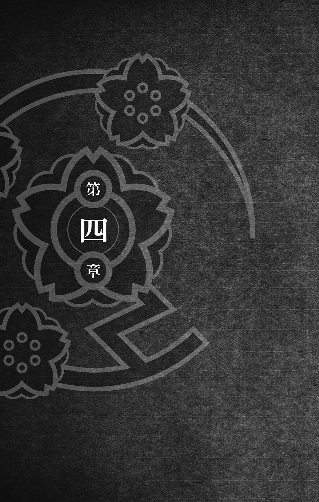
１
サイはキドの監視を開始していた。
医療忍者のマギレとよく行動をともにし、里内にキドがいくつか所有する、隠れ家や訓練施設などを時々見回っているということはわかったが、それらの訪問先で、キドがなにをしているのかまではわからなかった。
施設のいくつかは、周囲に感知用の札が置かれ、迂闊には近寄れなかった。
侵入自体は不可能ではなかったが、向こうは、サイが事件について調べていることを知っている。深追いして、証拠の隠滅を図られるのも得策ではない。かといって、ただ遠巻きに行動を監視しているだけでは、状況を打開できない。
なにか、突破口が欲しかった。
キドのマークを開始して、三日が過ぎた。
自宅に戻る途中、サイは、道端の電柱に小さな印がつけられているのに気づいた。
情報屋からの伝言だった。印の意味は、サイにしかわからない。情報屋は、サイと会って話がしたいようだった。
情報屋に調べるように頼んだ、手配書の上位者についての情報は、キドをマークしている今、差し当たって知りたいことではない。だが、調べてくれたことに対しては報酬を支払わなければならなかった。
翌日、サイは情報屋と落ち合った。
前回会った森ではなく、街中のビルの屋上だった。
大きな給水タンクのかげで、サイは情報屋と対面した。
「サイさんに言われた三名。調べてみたんですが、どうやら全員シロのようですね」
情報屋は言った。
「霧の抜け忍のテンゼンは、この一年ずっと雲隠れの里の近くで悪さをしてるし......、犯罪結社『亡』のバラキも、別の結社に吸収されて、昔ほどの力はないみたいです。魂抜きのゲンバに関しちゃ、半年前に病気で死んでましたよ」
「そうか。ありがとう」
サイは礼を言って、約束の報酬を払った。
「他に、なにか気になる話はないか？」
サイが聞くと、情報屋は意味深な笑みを浮かべた。
「や、まあ、実は大ネタがあるっちゃあるんですが......でもこれは、サイさんが今調べてる事件と関係なさそうですからね......」
「かまわないよ。話してくれ」
「いただけますか？」
これ、と情報屋は指で丸を作り、笑ってみせた。
「内容によるね」
サイが促すと、情報屋は言った。
「――今回、サイさんに言われた三人の消息を調べるために、俺、結構いろんな土地を回ったんですよ。そうしたらちらほら耳に入ってきたんですよ、うちはサスケの目撃談が」
「サスケの？」
サイはわずかに眉根を寄せた。
「別に目撃されるぐらいいいだろう。サスケは今、罪を償うための旅をしているんだ」
「ええ、あの人が世界を旅してるのは知ってます。でもね、聞こえてきた話が、どうもその、穏やかじゃない」
「というと？」
「たとえば、どこそこの洞窟で、闇の武器商人を襲っただとか、某国の暗黒街で、それこそ犯罪結社みたいなのと接触したとか」
「サスケがどうして武器商人なんかを襲うんだ？」
「俺もよくは知りませんよ？ ただ、その話を教えてくれたやつが言うには、『木ノ葉でテロを起こすつもりだから、安く大量に忍具をよこせ』てなことをサスケがその商人に言ったんですって。で、まあ、そんなこと言われりゃあ、相手は断りまさぁね。そしたらサスケは、でっけえ火の玉吹き出して相手をぶっ殺しちまったとか。犯罪結社のほうも、そんな感じで交渉決裂になって、結局は同じことになったみたいですけど......」
「いつの頃の話だ？」
「ここ一、二週間のことだと思いますけどね......」
サイはかぶりを振った。ありえない話だった。
「サスケがそんなことするはずがないよ。なにかの間違いだ」
「わかってますって。俺はただ、こんな噂を聞きましたよって話をしただけで......。やだな、そんな怖い目して」
情報屋はスキンヘッドをつるりと撫でた。
「あ、それはそうと、次の里の予算、暗部に多く回るそうですね」
サイの機嫌を損ねてしまったと思ったのか、情報屋は愛想笑いを浮かべて、話をつないだ。
「サイさんが今調べてる、その、御意見番が襲われた事件、そいつを引き合いに出して、暗部のナントカって人が一席ぶったんでしょう？」
「有能な情報屋だな、アンタは。もうそんなことまで耳に入ってるのか」
「へへ、まあ、いろいろとありまして」
情報屋は上目使いになった。
サイはもうここから去りたかったが、情報屋は続けた。
「――しかし、暗部ってところも、ほんとよくわかんない組織ですね。名前の通り暗殺もするんでしょうが、要人警護もするみたいだし、サイさんみたいに、なんか事件が起これば調べたりもするんでしょう？」
「ボクはもう暗部に籍はないよ。でもまあ、暗部が謎だらけの組織だっていうのは確かにそうだ。ボクだって、なかにいてもよくわからなかった」
「あれでしょう？ 戦いが終わったら、その現場に行って、いろんな資料とか集めたりもするんでしょう？」
「......？」
サイは怪訝な顔になった。
「なんだそれは？」
「戦闘の記録かなんかをデータベースにしてるんじゃないですか？ ちょくちょく同業者から耳にしますよ。忍界大戦が終わってすぐくらいに、終末の谷の周辺で、木ノ葉の暗部の仮面をつけたやつを見かけたって。なんか、あそこらへんの土とか岩の破片を持って帰ってたそうですけど」
サイは首をかしげた。
暗部の扱う任務は、確かに暗殺以外にも多岐にわたるが、戦地の土を持って帰るような話は聞いたことがなかった。
「忍界大戦のすぐあとぐらいと言ったか？」
「ええ。あと、橋の名前なんでしたっけ、サスケと、六代目になりそこねたダンゾウ様、あの人が戦った橋。同じ頃その橋のあったところにも木ノ葉の暗部が調査に入ったとかって、これは別のやつから。だから俺、てっきり暗部の人って、そういう仕事もすんのかなって」
サイは腕を組み、黙りこんだ。
情報屋が雑談の流れで口にした話は、妙にサイの心に引っかかった。
「あのー、サイさん？」
「また連絡するよ」
サイは言うと、追加の報酬を情報屋の手に押しつけて、その場を離れた。
２
「どうも情勢がよくないね」
というのが、カカシの第一声だった。
サスケの件について話があると言われ、サクラはいのとともに火影室に呼び出されていた。
「よくないって、先生......」
サクラが机に歩み寄ると、カカシは言った。
「砂以外でもサスケの姿が目撃されてる。それも、複数回だ」
サスケは闇の武器商人や、犯罪結社と接触し、いずれの場合も、「木ノ葉でテロを計画している」と相手に告げたようだった。そして、協力しろと持ちかけて、断られたら相手を殺す、という展開も砂隠れで我愛羅から聞いた話と同じだった。
「先生はその話、どこから？」
サクラが聞くと、
「うん、サイがね、情報屋から聞いてきた話なんだが......」
「サイが？ どうしてサイが情報屋と接触してるんですか？」
これは、いのが聞いた。
「いや、あいつに、ちょっと調べものを頼んでてね。その経過報告のときに聞いたんだけど」
「調べものって、ひょっとして前に言ってた、里がきな臭くなってるってやつですか？ サイはそれを調べてるんですか？」
いのの矢継ぎ早の質問に、カカシは、「うん、まあそう」と苦笑いしつつ認める。
「あいつ一人ですか？ 危険なことはさせてないでしょうね」
さらにいのが聞くと、
「それは大丈夫だって。あんまり無理はするなって言ってあるし、あいつはそこら辺の距離感は心得てるやつだよ。ナルトじゃないんだから」とカカシ。
しきりにサイの身を案じるいのに、カカシはなにかを察したかもしれないが、ここではなにも言わなかった。
「サスケくんのことですけど」
と、サクラは聞いた。
「このままだとどうなりますか？」
「このままだと、そうだな」
カカシは咳払いして、続けた。
「国際指名手配されて、世界中から追っ手が差し向けられる」
サクラは息を吸いこんだ。
「ただまあ、一足飛びにそういうことになるんじゃなくて、まずは五影会談が招集されるだろうな。サスケはナルトと一緒に世界を救った英雄でもある。そういう男を、なんの話し合いもなく指名手配するようなことはせんよ」
「だったら大丈夫じゃない？」
いのが明るく言った。
「だって今の五影は、一緒に忍界大戦を戦った仲間なんだから、目撃されてるサスケくんが偽者だってことぐらい、すぐにわかってくれるでしょ」
そう楽観的でいいのだろうか。サクラの胸に兆した不安は、続くカカシの言葉でさらに膨らむ。
「しかし、里長個人の気持ちはそうでも、各里の内部の声がそうでない場合もあるからな。里長は、里の声の代弁者という立場でもある。サスケ討つべしという声が高い里が出てくれば、五影全員の足並みがそろうとは限らん。追っ手の編成だけでもやっておこう、なんて言う里も出てくるかもしれない」
「そんな......」
いのの表情が曇る。
「もし五影会談があったら、私も同行させてください」
サクラは強い口調で言った。
「間違ってもサスケくんを指名手配犯なんかにさせられませんから」
「わかってるよ。もし会談が招集されたら、そうする。ま、しかし、本音を言うなら、サクラじゃなく、サスケ本人が出てきて、潔白を主張してくれるのが一番なんだけどね」
どこでなにしてんだか、とカカシがぼやく。
「連絡ポイントに伝言とかは託してあるんですか？」
いのが聞いた。
「そりゃ、もちろん。お前のニセモノが出た、至急連絡乞う、てな。でも、今んところ反応なし」
いのが、はあ、と溜め息をつく。
「もし、サスケくんが出てこないなら......今あちこちで目撃されてるサスケくんが、偽者だっていうことを私たちが証明するしかないですね」
サクラが言った。
「それはそうだが、できるか？ 我愛羅が感知したチャクラは、サスケのものだった。五影会談が開かれたら、我愛羅としてもそのことに触れざるをえないだろう。そうなったとき、この仕掛けがわからないと他の里長を説得できない」
「.........」
サクラは唇を嚙んだ。
「やるしかないです」
言ったが、声に力はこもらなかった。
３
状況が、キドの望む方向に変化しつつあった。
偽のサスケは、キドが指示した通り、世界各地で闇社会の住人と接触し、テロの意志を見せたうえで相手を殺害していた。
砂隠れの里でテロリストが殺害された事件は、風影が里外にもれぬよう手を打ったようだが、それ以降起きた事件については、徐々に噂となって各国に広まりつつある。
人の口に戸は立てられない。噂はやがて、各国各里の上層部も知るところとなり、うちはサスケをどうすべきかが話し合われるだろう。
すぐにサスケを討て、という結論にはならないはずだ。それはキドにもわかっている。忍界大戦の功労者を問答無用で犯罪者にするようなことを、各里の長がするはずがない。
だが、状況がそのようになっている頃には、本物のうちはサスケがアクションを起こすはずだった。
本物のサスケは旅を打ち切り、一旦は木ノ葉隠れの里に戻ってくるだろう。
キドの狙いはそこだった。露骨に偽者を動かし、当人が姿を現さざるをえない状況を作る。そして、里に戻ったあの男を、尾獣ドラッグで強化したキドの私兵で捕える。捕えたあとは――
里内某所――隠れ家のひとつにキドはいた。
執務室で一人。キドは薄笑いを浮かべていた。
「早く出て来い。うちはサスケ......」
低く呟いた。
「お前は金になる......。金に......」
４
目撃されているサスケが偽者だと証明する――
火影室で言うには言ったが、自宅に戻って考えを巡らせても、一向にアイデアは浮かばなかった。
どうすれば偽者だと証明できるか、ということよりも、どうしてサスケくんは里に戻ってこないの、ということばかりを、サクラは考えてしまうのだった。
――早く帰ってきてよ、サスケくん。
――本物の俺がそんなことするはずないだろって、そう言ってよ......。
心が弱気の虫にとりつかれている。だから、考えがまとまらず、サスケくんに会いたい、とそればかりを念仏のように唱えてしまう。
――だめだ、こんなんじゃ......。
サクラは家を出た。
少し体を動かしたほうが気分も晴れるだろうと思ったのだ。
行き先を決めずに歩き出したが、気がつくと忍者学校の近くまで来ていた。繁華街の喧騒から遠ざかりたいという意識が働いたせいかもしれない。
昼下がりの学校から、子どもたちの声が聞こえてくる。
フェンス越しに、少し見学していこうと思った。
校庭のほうに回ると、十歳前後の子どもたちが、組手の稽古をしていた。そして、稽古をつけている先生を見て、あ、と思う。ナルトだったのだ。
「ほらほら、手数だけ多くてもだめだぞ！ ちゃんと次の攻撃のことを考えて体をさばくんだってばよ！」
大戦後、ナルトがちょくちょく忍者学校で臨時講師をしているのは聞いていた。こうして見ると、なかなか立派に務めているようだ。
「おい、試合が終わったら、ちゃんと和解の印を結べよ！ 強いとか弱いの前に、それが忍者のルールなんだからな」
組手の作法を守らない生徒に、ナルトがコツンと拳骨を落とす。
――アンタも昔はそうだったんだよ。
心のなかで言って、サクラは小さく笑う。
ひと通り全員の指導を終えると、ナルトは生徒たちを整列させて、互いに礼をした。
顔を上げたナルトが、サクラに気づき、「おー！」と声を上げる。
「サクラちゃん！」
サクラは小さく手を振った。
「お前ら、ちょっと待っててくれな」
ナルトは子どもたちに言い置くと、サクラのほうに駆け寄ってきた。
「どうしたんだ？ 今日は休み？」
ナルトに聞かれ、サクラは、
「うーん、まあ、そんなようなもんかな」
と言葉を濁す。
「結構ちゃんと先生してるじゃない」
サクラが言うと、
「だろー？」
ナルトはにかっと笑い、鼻の下を指でこする。そして、「あ、そうだ！」と手を打つ。
「せっかくだからさ、サクラちゃんも教えていってよ。あいつらに組手」
「ええー？ 私はいいわよ」
「いいじゃん、ちょっとぐらい。怪力くノ一のスゴ技、伝授してやれってばよ」
「あのね、いちいち怪力ってつけんの――」
「おーい！ お前ら、今日はすげーゲストの先生が来てくれたぞー！」
サクラの抗議に耳を貸さず、ナルトは子どもたちに向けて大声を出した。
「怪力くノ一、春野サクラ先生だってばよ！」
「二回も言うかー！」
サクラがつっこんだところへ、子どもたちが声をそろえた。
「よろしくお願いします。怪力センセー！」
「ほら、アンタが余計なこと言うから！」
サクラが鼻息を荒くしても、ナルトは取り合わない。「ほら、早く！」と子どもたちのほうへ戻っていく。
――ったく、アイツは......。
だが、こうなってはサクラも少しは教えていくしかない。かぶりを振りつつ、校庭に足を踏み入れた。
そして、いざ子どもたちに混ざって組手の指導をしてみると、意外なほど気分が晴れていくのがわかった。
一口に指導といっても、子どもたちのレベルはバラバラだから、そのやり方は相手によって変えなければならない。驚くほど飲みこみの早い子もいれば、何度言ってもうまくやれない子もいる。それらはすべて、その子たちの個性だった。
組手の手本を示しながら、それぞれの生徒に合った指導の言葉を考える。体と頭、両方を働かせることで、ここ数日、心に溜まっていた澱のようなものが洗い流されていくのがわかった。
終業のチャイムが鳴るまで、サクラは夢中で指導にのめりこんだ。
稽古の終わりに、ナルトは生徒たちを整列させて言った。
「みんな、よく頑張ったな。――じゃあ最後に、本日のゲスト講師、春野サクラ先生から、ありがたーい話があるから、よく聞いとくよーに」
「はあ!?」
突然ナルトにそう振られて、サクラは面食らった。
「ちょ、ちょっと待ってよ。なにそれ」
「なんでもいいからさ。卒業生として、後輩たちに一言」
「なんでもいいって、そんなの急に浮かぶわけ――」
「サクラ先生、手短にお願いしまーす」
と、生徒の一人が言い、周りがどっと笑った。どの時代にもクラスにお調子者はいるのだ。
――くそ、ナルトのやつ......！
と、横目で睨みつつ、サクラは必死で言葉をひねり出した。
「えと......どうしよう、こういう展開は予想してなかったんだけど、じゃあ、ほんとに短めにね」
子どもたちのまっすぐな目に見つめられながら、サクラは話した。
今日はみんなと稽古ができて、本当に楽しかった。組手は忍の戦いの基本だから、おろそかにせず反復練習しようね。
そして、最後はこう締めくくった。
「――それから、みんなのなかにも知ってる子がいるかもしれないけど、私は医療忍者として、『子ども心療室』、というのを作りました。これは、辛いことがあって心が傷ついてしまった子どもたちに寄り添って、その傷を一緒に治していこうっていうところなの。心って、ほんとに難しいものよね。他人の心がわからないのは当たり前だけど、時々自分の心がどうなってるかもわからなくなる。体は組手とか訓練で強くなるけど、心はどうすれば強くなるんだろうね。これからみんなには、体もそうだけど、心も強い忍者になってほしいなって思います。そのためには、みんな、たくさん失敗して、たくさん恥ずかしい思いをして、あとはそうだな、たくさん、人を好きになってください。そうすれば、きっとみんな――」
「ほい」とナルトから差し出された缶ジュースを、サクラは「ありがと」と受け取った。
授業が終わり、二人は忍者学校の近くの公園に来ていた。
ベンチに並んで腰かけ、二人でジュースを飲む。
「サンキューな、サクラちゃん。授業手伝ってくれて」
「ううん。私のほうこそ楽しかった。いい気分転換になったよ」
「ならよかった」
「でも、ほんと驚いた。ナルト、先生の素質あるんじゃない？」
「へへ、俺ってば落ちこぼれだったからさ、できないやつの気持ちがわかるんだってばよ」
「そっか......」
「つーか、サクラちゃんだってスゲーじゃん。俺なんて、たまに学校来て教えてるだけだけど、サクラちゃんはもっとちゃんとしたやり方で子どもたちの相手してんだろ？」
「全然だよ、私なんて」
サクラはかぶりを振った。今、正面から褒められるのは、なんだか少しこたえた。
ジュースを一口飲むと、ほっと息を吐いて続けた。
「だめだね、私。さっき子どもたちに、心も強い忍者になってください、なんて言ったけど、それが一番できてないの、今の私だもん」
「なんかあったのか？」
ナルトは言って、飲みほしたジュースの缶を、数メートル向こうのゴミ箱にシュートした。それが見事に決まったのを見て、サクラはふと、ナルトに全部話してみる気になった。
「サスケくんがね......」
「サスケェ？」
「サスケくんが、今、世界のいろんなところで目撃されてるの。でも――」
この話、ナルトにしてもよかったんだろうか、と一瞬ためらいもあった。だが、結局サクラは話した。いずれナルトの耳には入ることだろうし、それならば自分の口から伝えたかった。
目撃されているサスケは絶対に偽者で、でも、どうすればそれを証明できるかわからない。
ナルトは口を挟まずに話を聞いてくれた。そして、言った。
「ふーん、そっかー。そんなことになってんだなー」
深刻さのかけらもない、軽い口調に、サクラは少し肩すかしを食らったような気がした。
「そっかーって、アンタ、驚かないの？」
「なんで？ だってそのサスケ、ニセモンなんだろ？」
「そりゃそうだけど......」
ナルトの薄い反応が、サクラには少し不満だった。驚いたり、怒ったり、もう少し感情を激するかと思ったのだが。
「ニセモンなら心配いらねえって。サクラちゃんも、あんま思い詰めんなよ」
「だけど、誰がどんな目的で、それにどうやって偽者を作り出してるか、まだわからないんだよ？」
「大丈夫だって」
そう言って、ナルトは笑ってみせる。
「はあ」とサクラは溜め息をつく。
「なんか、アンタと話してると、私ばっか心配してるのが馬鹿らしくなってくるわね。サスケくんも、全然こっちからの連絡に反応してくれないし......」
「それそれ！」
と、ナルトが急に大きな声を出した。
「なによ、急に」
「サスケが反応してねえから、俺も心配してねえんだってばよ」
「全然わかんない」
「だからさー」
なんて言ったらいいのかな、と頭をかき、ナルトは続ける。
「自分のニセモンがうろついてるのに、アイツが全然里に戻ってこないってことは、アイツ自身、大した事件だと思ってねえんだって」
「サスケくんが......」
サクラは呟いた。大した事件だと思っていない......。
「アイツならこう言うってばよ。『......そんなつまらんことで、俺を里に呼ぶな。お前たちでなんとかしろ』」
ナルトは、サスケのモノマネを交えて、そう言った。
サクラは、ついプッと吹き出してしまった。そして、霧が晴れていくように、ナルトの言う通りだと思った。
自分はなにをクヨクヨしていたんだろう、と思う。後ろ向きの思考が切り替わり、背筋がしゃんとなるのがわかった。
「そっか。そうだよね」
サスケが里に戻ってこないということは、サスケ本人が今回の一件を深刻にとらえていないということ――ナルトらしい単純で明快な意見だが、今のサクラにとってはなによりも救われる言葉だった。
自然に笑みが浮かんでいたらしい。
「サクラちゃんは笑ってるのが一番だってばよ」
ナルトが言って、にんまりと歯を見せた。
サクラは大きく息を吸いこんだ。空気までおいしく感じられるのは、気分が変わったからだろう。
「ありがと、ナルト」
サクラは言って、ベンチから立ち上がった。
「アンタと話して元気出たわ」
ナルトが、にしし、と笑う。
「しっかし、サスケってば、ほんと困ったやつだよなー。サクラちゃんのこと困らせてばっかなんだから」
兄貴風を吹かすナルトがおかしくて、サクラはまた吹き出した。
５
ナルトと話した翌日、サクラは綱手に声をかけた。相談に乗ってほしいと。
昼過ぎ、食事処のテーブルを挟んで二人は向かい合った。
サスケが各地で目撃されていることを、綱手はもう知っていた。里長を退いてしばらく経つが、カカシが配下の者を使って、重要な案件については時々知らせてくれるのだという。
「目撃されているサスケくんは本物のはずありません。でも、我愛羅くんはサスケくんと同じチャクラだったって。そこにどういう秘密があるのか、いい知恵が浮かばなくて......」
サクラがそう言うと、綱手は「うむ」と腕を組んだ。
「顔形だけじゃなく、チャクラまでコピーする方法、か......」
「暗部にそういう術を使う忍がいることはいるそうなんですが、今は任務中なので、今回の件には関わりないそうです。――なにか思いつきませんか、師匠」
変化の術ではチャクラまでコピーできず、象転の術だと、術者とサスケ本人に関わりがないと、同一体を作れない。
「......難しいな」
しばらく黙ったあと、綱手はそう言った。
「お前が今言った方法以外で、となると、私にもすぐには思いつかんな。まさか白ゼツが生き残っていたわけでもないだろうし」
「それはないと、私も思います」
テーブルに沈黙が下りた。
やがて、酒で口を湿らせた綱手が言葉を継いだ。
「やはり、一番可能性があるのは、象転の術だろうな」
「でも、それだとサスケくんと術者につながりがあることに......」
「うむ。自分のチャクラが依り代に分け与えられるわけだからな。しかし、術者が、なんらかの方法で、サスケに気づかれずにサスケのチャクラを吸い取り、依り代に与えたとすれば、サスケの与り知らぬところで偽者が跋扈している状況というのは生じうる」
「サスケくんに気づかれず......」
「そうだ。しかし、だめだな、これも」
綱手はすぐにそう言った。
「サスケほどの実力者が、知らないうちにチャクラを吸い取られていた、なんていう状況がまず考えにくい」
「確かに、そうですね......」
サクラは小さくうなずいた。だが、今の綱手の意見は掘り下げてみる価値があるような気がした。
顔形を同じにするのは大した問題ではないのだ。変化の術自体は、さほど難度の高い術でもない。
問題はチャクラを同じにすることだ。そして、綱手が言うように、チャクラは相手から吸い取ることができるし、そのチャクラを誰かに渡すこともできる。
受け渡し、入れ替え、移動、そういうことが可能なのだ、チャクラというものは。
サスケの知らないところで、サスケのチャクラの受け渡しがあった――
そこにどんなカラクリがあるかだった。闇のなかで手探りしていたところ、やっと指先になにかが触れたような感覚がある。
「当人に気づかれず......」
サクラは呟いた。うつむいて、考えに集中する。顔の横に垂れた髪を、そっと耳のうしろに流したとき、はっと閃くものがあった。
「髪の毛......」
「どうした？」
綱手が怪訝な顔をした。
サクラは言った。
「綱手様、たとえばですけど、髪の毛とか皮膚みたいなものから、その人のチャクラを抽出することは可能でしょうか？」
「髪の毛？ それは、まあ不可能ではないだろうな。ごく微量だろうが」
綱手は言った。
「要はそこに個人情報物質が含まれていれば、理論上は可能だ。そういう意味では、髪の毛に限らず、血液や汗でもいい。ただしその保存状態や、その人物の体から髪の毛や皮膚が脱落して、どれだけの時間が経過しているかとか、クリアする条件は多いだろうが......。サクラ、じゃあお前、今回のこれも......」
「ただの思いつきなんで自信はないです。でも、サスケくんの知らないところで、サスケくんのチャクラが使われたって考えたら、そういう方法なのかなと」
「......サスケの髪や皮膚を入手して、そこからチャクラを......」
綱手は宙を睨んで、言った。
「悪くない線かもしれんな。技術的には相当難しいが、しかし、今まで出た方法のなかでは、一番正解に近いような気がする」
「でも、仮にそういう方法でサスケくんのチャクラが作られたとして、それをどうやって依り代に与えたか、ですよね」
「その辺りも考えないとな。外科的手術で与えたのか、あるいはカプセル、薬のような形にしたのか......」
考えを煮詰めなければならないことは多かった。だが、思考のとっかかりはできた。
「師匠、ありがとうございます。もう少し自分で考えてみます」
サクラは綱手に礼を言った。綱手はうなずき、
「頑張れ、サクラ。......ま、とことん議論に付き合ってやってもいいが、私はもう隠居の身だからな。あとはお前たちに任せるよ」
「任せてください、師匠」
サクラも力強くうなずいた。
――お前たちでなんとかしろって、サスケくんも言ってるみたいですから......。
もう少しここで飲んでいくという綱手と別れ、サクラは食事処を出た。
木ノ葉病院に、参考になりそうな文献でも探しに行こうかと歩き出したとき、「サクラ」と声をかけられた。
振り返ると、サイがこちらに向かって歩いてくる。
「サイ」
「食事してたの？」
「うん、師匠と。これから病院に調べものに行こうと思って」
「そうか」
火影室に用があるというサイと並んで歩き出した。
カカシから聞いた話を思い出して、サクラは言った。
「聞いたよ。大名様が襲われた事件、調べてるんだよね」
「カカシ先生から聞いたの？」とサイ。
「うん。昨日、いのと一緒に火影室で教えてもらった」
「そうか。まあ、君たちになら先生も教えるか」
サイは呟くようにそう言った。
調査は捗ってるの、と聞こうとしたが、それは遠慮しておいた。あまり立ち入ったことを聞くのも悪いと思ったのだ。応援や助言が必要なときは、サイが自分からそう言うだろう。
「ところで、サスケのこと、もう聞いた？」
サイが声を落として聞いてきた。
サクラは、うんとうなずく。
「でも、実は私といのは、サイよりも先に知ってたの。砂に出張に行ったとき、我愛羅くんから聞かされてね」
サクラは、そのときのことを話した。
「チャクラまでサスケと同じだったって？」
サイが驚く。
「うん。我愛羅くんが見たサスケくんはそうだったって」
「ボクにサスケのことを教えた情報屋は、チャクラのことまで言ってなかったな......」
サイの顔が険しくなった。
「でも、さっき綱手様と話してて、思いついたことがあるの。チャクラは受け渡しができる。だからサスケくんのチャクラが、サスケくんの知らないところで悪用されたのが今回のケースなんじゃないかって」
「知らないところで......」
サクラは、今しがた綱手と話していて見つけた仮説を、サイにも話してみた。
「髪の毛、皮膚、か......」
サイは呟くと、不意に足を止めた。
「どうしたの？」
サクラはサイを振り返った。
サイは険しい顔のまま、顎に手を当てている。
ねえ、とサクラが続けようとしたとき、サイが言った。
「サクラ、一緒に火影室まで来てくれない？」
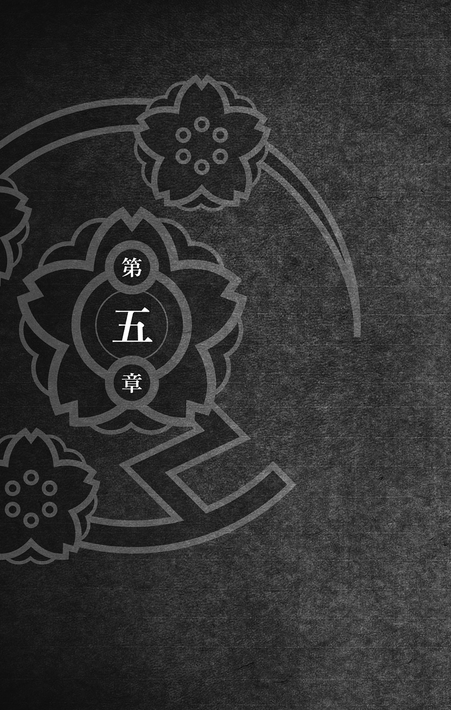
１
サイと二人で火影室に行くと、部屋にはカカシといのがいた。
いのは、どことなく疲れた表情を浮かべていた。
「いの、来てたの」
「うん、ちょっと試してみたいことがあって、カカシ先生と通信班の部屋に行ってたんだけど......」
「通信班？」
サクラが怪訝な顔になると、机についていたカカシが答えた。
「いや、いのが心伝身の術で、こっちから直接サスケに連絡をとれないかやってみるって言うからさ、試してみたんだけど......」
「やっぱ、無理」
いのが肩をすくめて言った。
「サスケくんの現在地が、おおよそでもわかればなんとかなったかもしれないけど、この広い世界をあてずっぽうで探すのは、やっぱ無理があったわ。ちょっとバテた」
いのが言って、舌を出した。山中一族の使う心伝身の術は、かなりの集中力を要するのだ。長時間は使えない。
「それより、お前らはどうしたの？」
カカシの問いに、サイが答えた。
「先生にお話があって」
「うん？」
「その、偽のサスケの件ですが......ひょっとしたら暗部が関係しているかもしれません」
「なに？」
カカシの目が鋭くなった。
サイが続ける。
「サクラから聞きました。今回目撃されているサスケの偽者は、容貌だけでなくチャクラまでサスケのものなんですよね？」
「我愛羅の話だとな」
「サクラが言うには、髪の毛や皮膚からでもチャクラを抽出できるそうなんです。偽のサスケがまとっているチャクラは、そうやって作られたものかもしれない」
「髪の毛や皮膚か......」
カカシは呟いて、思案顔になった。
「確かに盲点だったかもしれないな」
「や、まだ仮定の話ですよ？ そういう方法なら、サスケくんの知らないところで、サスケくんのコピーがうろついていることの説明にはなるなって......」
先走るサイに、サクラは少し焦った。
カカシが言う。
「まあ仮定は仮定としてだ。しかし、そこになぜ暗部が出てくるんだ？」
「情報屋の男が気になることを言っていたんです。......大戦のすぐあと、終末の谷や、サスケとダンゾウ様が戦った橋に、木ノ葉の暗部の者が調査に入っていたって」
「暗部が？」
「はい。暗部はその場所の土や岩の破片とかを持ち帰っていたそうなんです」
「そんなもの持って帰ってどうする......あ」
いのが、言葉の途中で、なにかに気づいた。
サクラが閃くのも、ほぼ同じタイミングだった。
「そうか。サスケくんの、個人情報物質が欲しかった......」
サクラが呟くように言うと、サイが「そう」とゆっくりうなずいた。
「確かに、その場所なら、サスケの髪だとか皮膚のかけらだとか、そういうもんは入手しやすいな」
カカシが言った。
それに血液もだ、とサクラは心のなかで付け足す。
なにしろ終末の谷は、サスケとナルトが死力を尽くして戦い、決着をつけた場所でもあるのだ。
二人はその戦いで、片腕を失っている。つまり、血液や体組織が、あの戦いの場には残っていたということなのだ。
そして、サスケとダンゾウが戦った橋もだ。終末の谷と同様、サスケの髪の毛や血液などが入手可能だったろう。しかもそれを忍界大戦の直後に採取したのなら、サスケの個人情報物質の「鮮度」は高かったはずだ。
しかし、と、カカシが言った。
「俺には専門的なことはわからんが、そうやって持ち帰ったもののなかからサスケの髪の毛や皮膚なんかを選り分けて、さらにそこからチャクラを抽出するなんて、ソートー大変なことなんじゃないか？」
「気の遠くなるような作業だと思います」
サクラは言った。だが、おそらく暗部はやったのだ。その作業を。
サクラは、あのときの終末の谷を思い出してみる。
戦いが終わり、ナルトとサスケは崩壊した巨像の上に横たわった。
サクラは二人の腕を治療し、カカシはそれを微笑みながら見守っていた。
そして、新時代への希望を感じながら、あの谷をあとにした――
その谷に、暗部の者たちが降り立ったのだ。サクラたちが去ったあと。
彼らは土を削り、岩の破片を拾い集めた。サスケの「痕跡」を求めて――
それがもし現実に行われたのだとしたら、その作業の隠微さに、サクラは不快の念しか覚えない。
「でも、暗部はサスケくんの偽者をあちこちで目撃させて、なにがしたいんだろう......？」
いのが言った。
「それはボクにもまだわからない。だけど、もし暗部が、今ボクらが話しているやり方でサスケの偽者を作ったのだとしたら......カカシ先生」
と、サイはカカシに顔を向けた。
「ボクを襲ったやつらが、尾獣のチャクラをまとっていたことの説明がつくかもしれません」
「それはつまり、暗部が人柱力の個人情報物質を集めて、そこから尾獣のチャクラを取り出したってことか？」
「可能性はあると思いませんか？ 他者のチャクラを身にまとう、という点で二つの事件は共通しています」
「いつもキドの横にいるマギレって男は医療忍者だ。キドの命令で、あるいはそういう技術を研究していたとしてもおかしくはないな」
「ちょ、ちょっと待ってよ。二人だけで話さないで」
いのが割って入った。サクラも話が見えず、混乱する。
「あの、尾獣のチャクラって、どういうことですか？」
「ああ、すまんすまん。えーと......どう説明したらいいかな」
カカシは頭をかいたあと、パンと手を打った。
「あ、とりあえず、君たち三人、今から同じチームね」
「え？」
「へ？」
サクラといのがきょとんとすると、サイが冷静に言った。
「確かに、ボクたちが追っている敵は同じである可能性が高い。だとするなら、情報を共有して、チームとして動いたほうがいいかもね」
「敵......って？」
サクラが聞くと、サイが言った。
「暗部の積木キド。そしてマギレ。ボクは今、この二人をマークしている」
大名と御意見番の襲撃事件を調べていたカカシとサイは、有力な容疑者としてこの二人に行きついた。
襲撃事件は、暗部への予算の増加を狙った自作自演である可能性が高く、また、サイは調査の過程で、刺客に狙われた。その刺客が、尾獣のチャクラをまとっていたのだという。
「尾獣のチャクラ......」
サクラが呟くと、いのが言った。
「じゃあ、キドたちは、終末の谷でナルトの個人情報物質も集めたのかな？ そこから九尾のチャクラを抽出して......」
「でも、ボクを襲ったやつらがまとったチャクラは、尾が一本だけだったけど......」
「尾の数は関係ないかもしれないわね」
サクラが言った。
「ナルトも、最初の頃は、封印の解ける段階によって、現れる尾の数が違っていたし」
「いやー、いいね、そうやって打ち合わせしてる感じ。即席チームだけど、うまくいきそうじゃない」
カカシが、場にそぐわない吞気なことを言う。
「からかわないでくださいよ、先生」
いのが言った。
サイも続ける。
「そうですよ。それに即席と言っても、ボクとサクラは元々同じ班だし、いのと組むことにも全然不安なんてありませんよ」
ね、いの、とサイに声をかけられて、いのの顔が一瞬赤くなった。
「そ、そうよね！ 楽勝よ！」
いのの気持ちを知るサクラは、くすりと小さく笑う。
「いやいや、冷やかして悪かった。......ま、本音言うとさ、俺もお前らと混じって外で動き回りたいんだけど、こういうのつけるようになっちゃうとね、それもなかなか」
カカシは言って、火影の笠をつんつんと触った。そして、顔つきを引き締めて続ける。
「今回の事件、容疑者として追うべきは、もちろんキドとマギレだが、一方で暗部の独断を許してきた俺にも責任の一端はある。その点については、お前たちにも申し訳なく思っている」
サクラたちはカカシの顔を見返した。
カカシは続けた。
「俺は暗部という組織のあり方を早急に見直すつもりだ。外で動き回れないぶん、俺はそっちに知恵を絞る。だからキドとマギレのほうは、頼んだぞ」
サクラたちは、「はい」と同時に答えた。
「猪鹿蝶ならぬ、いの・サク・サイの急造チームね」
いのが言った。
「語呂悪くない？」
サクラがつっこんだ。
「語呂が悪いくらいいいよ。チームワークさえよければ」
サイがうなずいた。
火影室を出た三人は、とりあえず木ノ葉病院の屋上に場所を移して、これからのことを打ち合わせた。
「ボクは引き続きキドの行動を監視することにする」
「私たちは......どうしよう？ やっぱり、サスケくんの偽者のほうを調べればいいかな」
いのが言って、サクラを見た。
「そうね。ただ、暗部が本当にサスケくんの個人情報物質を集めてたのか、その辺り、もう少し裏をとったほうがいい気もする。今のところ、サイが情報屋から聞いた話だけだもんね」
「そうか。でも、裏をとるって、どうやって」
「私、思ったんだけど、暗部がサスケくんの髪の毛や血液を集めていたとして、それを探しに行った場所って、終末の谷や、あの橋以外にもあるような気がするの」
「他の場所にも調査に入ったってこと？」
サイが聞いた。
「そう。チャクラの抽出に使う髪の毛や血液は多いに越したことはないと思うの。てことは、いろんな場所からそれを集めてたんじゃないかな」
「たとえばどこ？」と、いの。
「里の外まで範囲を広げちゃうと、私にもわからない。だけど、里のなかに限れば、すぐに浮かぶのはサスケくんの家。あとは、南賀ノ神社とかね」
「うん、まあ、その二か所は有力かもね」とサイ。
「より新しいサスケくんの髪の毛ってことなら、家より南賀ノ神社のほうが、暗部が行った確率は高いかも」
サクラがそう言うと、
「んー、でも、どうだろー」
いのが腕を組んで宙を睨む。
「わざわざ髪の毛探しに、そんなとこ行くかなー。終末の谷でサスケくんの血液を採取するっていうのは、まあ持ち帰れる公算が高いと思うけど、南賀ノ神社でサスケくんの髪の毛を探すとなると、さすがにそれは難しいんじゃ......」
「探しに行って、なければないでいいのよ。でも、最低一度は調べに行ってると思うの。時期は、大戦のすぐあと」
その時期、南賀ノ神社の近くで、暗部を見かけた者はいないか、聞きこみをしてみるのはどうだろう、とサクラは提案した。
「もし見たって人がいたら、少なくとも状況証拠にはなるわ」
「オッケー。やってみましょうか」
いのが同意したことで、三人の動き方は決まった。
「定期的に会ってお互いの情報を交換しよう。どんな小さな証拠でも、集めていけばそれはキドを追いこむことになる」
サイの言葉に、サクラといのはうなずいた。
急ごしらえのチームだが、ともかく動き出した。
動けるのはいい。部屋で悶々としているよりも、ずっと気が楽だ。サクラは思った。
それに、
――サスケくんのために動ける。
サクラにとって、そう思えることは大きかった。
２
キドは焦れていた。
サスケの偽者を動かし、世界各地で目撃させるところまでは首尾よくいった。だが、肝心の本物のサスケが里に現れない。
――なぜ、戻らない......？
本物のサスケが、この状況を知らないはずがない。必ずどこかで耳にしているはずだ。
サスケの無反応が、キドには気に入らなかった。キドのやろうとしていることを、サスケは歯牙にもかけていない、という感じが、その無反応から匂ってくるからだ。
だが、キドは焦れつつも、一つ妙案を思いついていた。
この手を打てば、サスケが里に戻る公算が高まるだけでなく、もう一つキドの計画にとって好材料が生まれることになる。
「――次の手を打つ」
執務室で、キドは言った。マギレと、他に数名の幹部がいた。幹部は、暗部の仮面をつけている。
「この女を――」
と言って、キドは右手を軽く振った。
一瞬後、壁に一本のクナイが突き刺さった。クナイは一枚の写真を壁に留めていた。
「さらえ。サスケと同期の、春野サクラという女だ。女が行方不明になった、というニュースがサスケの耳に入れば、サスケは里に戻るだろう」
「それなら、いっそ殺してしまうというのは？」
別の幹部が言った。
「やつにとっては、そのほうがインパクトが大きいでしょう」
「いや、殺さない」
キドは言った。薄く笑い、続ける。
「すぐにはな」
３
サクラといのの聞きこみは最初、難航した。
そもそも南賀ノ神社というところが、里のはずれに位置していて、周囲にあまり人家がない場所なのだ。
加えて、大戦のすぐあと、という時期もネックだった。
大戦が終わって、もう二年以上が経っている。人々の記憶も薄れかけている頃なのだ。
やっと実のある話を聞けたのは、二人が神社付近で聞きこみを開始して、三日目のことだった。
「暗部の人なら見かけましたよ！ 三人ぐらいいたかなあ！」
と、その人物――ロック・リーは言った。
「それって、時期は？」
サクラが聞くと、
「二年ちょっとくらい前ですかね」
リーはそう答えた。
「ボク、ランニングでたまにこの辺りに来るんですよ。今日もそうなんですけどね。ほら、ここって普段あまり人けのない場所じゃないですか。だからその日、暗部を見かけたことは記憶に残ってます。ま、でも、暗部は任務次第でどこにでも現れますからね。特に怪しいとも思わなかったんですけど」
サクラはいのと顔を見合わせてうなずいた。
「サクラさんといのさん、なにを調べてるんですか？ ボクでよければ、スーパー力になりますよ!?」
と、リーは言ってくれたが、サクラといのは、「うん、なにかあったらお願いするね」と、やんわりかわしておいた。
リーも、ナルトに似て突っ走ってしまう傾向がある。今、二人がやっている、証拠固めのような作業には不向きだろう、と思ったのだ。
夕刻、サクラたちはサイと落ち合い、今日一日の調査結果を報告し合った。
自宅へ帰る道すがら、サクラの足取りは軽かった。ささやかでも成果があったからだ。
少しずつでもキドを包囲していけば、それはサスケを救うことにつながる。そう思うだけで、サクラの気力は充実した。
「放せと言ってるだろ！」
突然怒鳴り声が聞こえ、サクラはびくりと足を止めた。家の近くの路地に差しかかったところだった。
サクラは路地を覗きこんだ。もう夜だったが、街灯の光がわずかながら届いているため、真っ暗ではなかった。
一人の男が、複数の男に地面に押さえつけられていた。押さえつけている男たちは暗部の仮面をつけている。
「いいから放せ！」
「黙れ！ お前にはテロの嫌疑がかかっているんだ！」
「それは俺じゃないと言ってるだろう！」
言い争う声のうち、組み伏せられているほうの声にサクラは覚えがあった。
「サスケくん!?」
サクラは声を上げた。
「サクラか!?」
組み伏せられている男が顔を上げた。
やはりサスケだった。
「こいつらに言ってくれ。里に戻ってきたら、いきなり襲いかかってきたんだ。俺がテロリストを殺したなどと言って......」
放してあげてください、と言おうとして、サクラはその声を飲みこんだ。
「待って。ほんとにサスケくん？」
サクラは慎重に聞いた。なにしろ今日までずっと偽者のサスケのことで考えたり、動いたりしていたのだ。どうしても疑心暗鬼になってしまう。
サスケは、はっと短く息を吐いた。
「お前にそんなことを言われるとはな。同期の顔を忘れたのか。もっとよく見てみろ」
という一言に、一瞬の魔が潜んでいた。
サクラが反射的にサスケの目を見返した瞬間、視界がぐにゃりと歪んだ。
――幻術......！
立っていられなくなった。が、それほど強い幻術ではなかった。乱されたチャクラをすぐに元に戻し、体勢を立て直した。
直後、背後に気配を感じた。
「――！」
振り返ろうとしたとき、首筋にチクリとした痛みを感じた。
なにかの薬を入れられる感覚があった。膝に力が入らなくなった。がくりとくずおれ、うつ伏せに倒れた。
４
最初は、首の痛みだった。
その痛みを入り口に、徐々に意識が戻ってくるのを感じた。肩や腰に冷たくて固い感触がある。
不自然な体勢で床に転がされているのだ、とわかった。手足を動かそうとした。が、できなかった。
目をゆっくりと開ける。両手は後ろ手の状態で拘束され、両足首も同様に金属製の拘束具で固定されていた。
かすかな吐き気があったが、しばらくして、それは去った。
なにもないコンクリートの部屋だった。がらんとしていて、広い。
正面に錆びた鉄の扉がある。窓はないので、ここが地下なのかどうかも定かではない。
さらわれてから、どれくらいの時間が経過したのかもわからなかった。
拘束具を壊せないか、両手に力をこめてみた。だが、うまく力が入らない。
さらわれるときに、首になにかを注射された。その影響だろう。
鉄の扉には、小窓があって、そこから誰かが覗いているのが見えた。暗部の仮面をつけている。
「起きたぞ。キド様にお知らせしろ」
その言葉のあと、別の者が走っていく足音が聞こえた。
キド様、と見張りの仮面は言った。ここはキドの持つアジトの一つなのだろう。
さらわれたときの記憶がよみがえる。
安い芝居だった。里に戻ったサスケを暗部が取り押さえている。サクラの家の近くでそんなことが起こるはずがない。
サクラも、最初は怪しんだ。だが、一瞬の油断があった。そして、忍にとってその一瞬が命取りなのだ。
――ダメすぎる、私......。
サクラは目を閉じた。
見え透いた手に引っかかった自分が情けなかった。
複数の足音が聞こえてきた。
扉が開けられ、鷲鼻の男が入ってきた。隣には片眼鏡をかけた色白の男がいる。
鷲鼻の男は任務服の上にコートを羽織り、片眼鏡の男は白衣をつけていた。二人の背後には、仮面をつけた暗部の者が二人控えている。扉の外で、サクラを見張っていた二人だろう。
「あんたが、キド、ね」
サクラは鷲鼻に言った。声が、少しつっかえた。
「そうだ。春野サクラ。貴様、うちはサスケの居所を知ってはいないだろうな？」
「サスケくんの、居場所？ こっちが、聞きたいわよ......」
声を出すには辛い体勢だった。芋虫のように転がされ、相手に見下ろされている。屈辱がサクラの目つきを険しくした。
「サスケくんの、偽者をでっちあげて、いろんなところで目撃させたのは、アンタね」
「そうだ。そうすればあの男が里に戻るんじゃないかと思ってな。しかし、戻らなかった。だから、お前をさらったのだ」
「サスケくんを、里に戻らせる、ために......？」
――私をさらった......？
「お前とあの男は同期。同じ班。大戦をともに戦った仲間なのだろう？ お前が行方知れずになったと聞けば、あの男も里に戻るだろう」
「ふん、どうかしらね。サスケくんって、すっごいクールだから、私が行方不明になったって聞いたくらいじゃ、里には――」
戻ってこない、と続けようとして、サクラの胸の奥に小さな痛みが走った。
――ほんとに、戻ってこないのかな、サスケくん。
――私が、いなくなったぐらいじゃ......。
戻ってきてほしい、と思った。だが、すぐにその思いを打ち消す。
だめだ。サスケが戻ってくるということは、こいつらの思惑にはまってしまうということ。だから、サスケは戻ってくるべきではない。
――だけど、戻ってこないってことは、サスケくんが私のことをそんなには心配してないってことだから......。
サスケを恋い慕う気持ちと、サスケの身を案じる気持ちで、サクラの頭は混乱した。
「戻ってこないなら――」
と、キドが続けた。
「簡単な話だ。お前を殺すだけだ。死体が見つかったと聞けば、さすがのあいつも帰るだろう。せめて葬式ぐらいにはな」
「だったら、今すぐ殺してみなさいよ！」
怒りにまかせて手錠を引きちぎってやろうかと思った。だが、まだうまく力が入らなかった。
「無駄なことはされないほうがいいと思います」
片眼鏡の男――おそらくこいつがマギレとかいう医療忍者だ――が言った。
「あなたの首に打った注射は、筋肉を痺れさせるのと同時に、チャクラの練成も困難にする薬です。そこで大人しく寝ているほうが体力を無駄にせずにすみます。以上です」
「くっ......」
と、サクラは奥歯を嚙んだ。
キドが言う。
「今すぐには殺さない。こちらの理想は、あの男の目の前でお前を殺すことだからな」
サクラはキドの顔を見返した。
「サスケくんの前で......？」
「そうだ。そのほうが、あいつの眼の質がよくなる」
言って、キドはここに来て一番大きな笑みを見せた。
「眼の、質......？」
――なにを、言っているの......？
キドは邪悪な笑みを浮かべたまま言った。
「――うちは一族は愛深き一族だ。そして、その愛深き性向が、うちはの者に強い瞳力を授けたということは、お前も知っているだろう？」
「.........」
「大切な家族、仲間、恋人――それが目の前で殺されれば、誰だって悲嘆にくれる。だが、うちは一族の場合はそれだけではない。あまりに深い悲嘆が、視神経に作用し、その眼に力を与える」
「.........」
「やつの悲しみや怒りや嘆きは、やつの瞳力をさらに研ぎ澄ませるに違いない。だから、お前はあいつの目の前で殺す」
サクラは息を吸いこんだ。
「そんなことして、アンタたち、なにを......？」
「写輪眼ドラッグ」
と、キドは言った。
「あの男の眼を材料にして、ドラッグを作るのだ。飲めば、誰もが写輪眼を使えるようになる薬だ。これは売れるぞぉ」
キドの「くっく......」という笑い声がコンクリートの床を這った。
「見たこともないほどの金が、私のもとに集まる。金が、金が......！」
忍び笑いが哄笑となり、部屋を満たした。
――この男......。
サクラは、キドという男に対して、初めて嫌悪ではなく恐怖を覚えた。
５
ドアがノックされている。
サイはシャワーを止めた。
ノックの合間に、サイ、と呼ぶ声も聞こえる。声は、いののようだった。
サイは下着をつけると、タオルで頭を拭きながら、玄関に向かった。
ドアを開けると、いのが立っていた。
「サイあのね......って、ちょっと！」
いのの顔が一瞬で赤らんだ。
「な、なんで服着てないのよ！」
「ごめん、シャワー浴びてたから」
なんとなく、いのにならこの格好でもいいかと思ったのだが、よくなかったようだ。しかし、ただ怒るだけでなく、顔が赤くなったのは不思議だった。
「それより、どうしたの、こんな朝早くに」
サイが聞くと、いのは視線を戻した。まだ顔は赤いが、表情は緊張を帯びている。
「サクラがいないの」
「サクラが」
サイはタオルを動かしていた手を止めた。
いのが言う。
「――今朝は早めに心療室に行って、二人でまとめなきゃいけない書類仕事があったの。でも、サクラ全然来なくて。家にも行ったんだけど、いないのよ。チャクラを感知しようとしてみたけど、それにも全然引っかからなくて......」
サイは息を吐いた。
「キドたちだろうね」
「私もそうだと思う」
「探そう」
サイは言って、部屋にとって返した。
素早く任務服を着ながら、玄関で待ついのに声をかける。
「ボクらの調査を妨害したいなら、その場で仕留めればいい。サクラの姿がないってことは、あいつらに連れ去られたんだ」
準備が整うと、いののところに戻った。
「カカシ先生には？」
「まだ」といのは首を振った。
「心伝身で伝えてくれる？」
サイが言うと、いのはうなずき、すぐに印を結んで術を使った。
ややあって、カカシといの、そしてサイの頭のなかが、心伝身の術を介してつながった。
〝先生、サクラがさらわれました〟
いのが状況を説明した。
〝サイと二人で今から探索に出ます〟
〝応援がいるか？〟
カカシの声が、二人の頭のなかに流れこんでくる。
〝と言っても今、任務で出払ってるやつが多くてな、すぐに動かせる人間は限られているが......〟
〝ボクたちだけでいいです〟
サイが言った。
〝サクラはきっとまだ生きています。でも、大規模な捜索で里が騒がしくなると、連中はすぐにサクラを殺してしまうかもしれません〟
〝すまんが、頼む〟
カカシは申し訳なさそうに言った。
〝俺も行きたいところだが、さっき雷影から無線が入った。サスケの指名手配の件で、いい加減五影会談をしたほうがいいんじゃないかってな。ちょっと状況を話して待ってもらうつもりだ〟
〝先生はそっちの対応をよろしくお願いします。サクラはボクたちが〟
サイがそう言い、いのは術を解いた。
「けど、探すって、どこを？」
いのが聞く。
「ここ十日ほど、キドを監視して、あの男が立ち回った先をいくつか知ってる。そこに行こう」
「だけど、向こうはサイが調査してることを知ってるんだよね？ てことは、サイが知ってそうな場所にサクラを閉じこめたりはしないんじゃ......」
サイはうなずいた。いのの指摘は的を射ている。
「考えてることがあるんだ。ちょっと強引なやり方だけどね」
行こう、と言って、サイは動き出した。
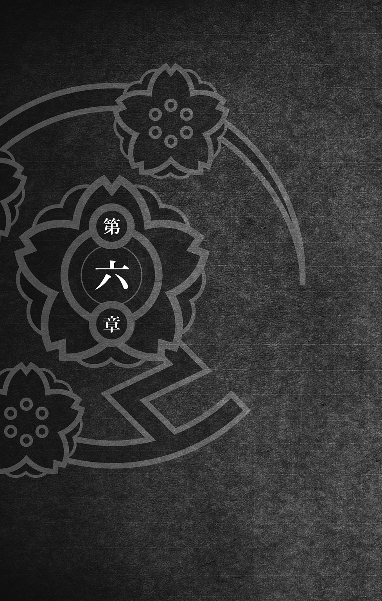
１
写輪眼ドラッグ。サスケの眼で、ドラッグを作る。
聞かされたおぞましい計画に、サクラは顔を歪めた。そして、その計画の一部に、自分が組みこまれていることに、サクラは怒りを覚えた。
だが、その怒りも長くは続かなかった。次に襲ってきたのは自己嫌悪だった。
――なにやってるの、私......。
自分を責める気持ちが、あとからあとから湧いてきて、サクラの気力を奪っていく。
サスケのために動いている、という実感を嚙みしめていた矢先の、この失敗だ。
サスケのためになっているどころか、サスケの足を引っ張っている。
――また今度な......。
サスケはそう言ってくれた。
その「今度」を心待ちにしていた。
ところが今、自分の失敗のせいで、サスケが窮地に立たされようとしているのだ。最悪だ。こんな形で再会するなんて、最悪だ。
サイ、いの、と心のなかで呼びかけた。
――もう私が捕まったことに気づいてる？ 早く助けに――
そこで、サクラははっとした。暗い淵に落ちていきそうだったところを、寸前でこらえた、という感じだった。
――なに言ってるの、私。
――早く助けに来て？
だめだ、と心のなかで強く断じた。だめだ、だめだ。
サスケやナルトと、第七班で一緒になったばかりの頃を思い出した。あの、弱かった頃の自分を。
――私、いつもナルトとサスケくんに守られてた。守られてばかりだった。
――そんな自分が嫌だった。だから、強くなった。
――あの二人の背中ばっかり見ていたくない。対等になりたい。だから......。
今の私は、と思った。あの頃の、弱い私じゃないか。
――絶望して、仲間の助けを期待して。こんなので、サスケくんと会う資格ないよ......。
『――お前、うざいよ』
から始まって、
『――また今度な......ありがとう』
そこまで来たんだ、私とサスケくんの関係は。
うざい自分に戻りたくない。サクラは思った。弱い自分には、もう戻らない――
やろう、今できることを――
「サスケくんが......」
サクラは、キッと顔を上げて言った。
「サスケくんが、あんたたちみたいなのに、やすやすと捕まると思う？」
「思う」
笑みを消し、キドは冷然と言った。
その確信に満ちた態度が、サクラを一瞬ぞっとさせた。
「もとより勝算がないのに、あの男を里におびき寄せようなどとは考えない」
確かにあの男は強い、とキドは言った。
「それは認める。しかし、こちらも手練れを用意している」
手練れ、という言葉で、サクラは思い出した。
サイが襲われたとき、相手は尾獣のチャクラをまとっていたという。
「尾獣のチャクラを使う気ね」
サクラは言った。
「サイから聞いたか？ そうだ。厳密には尾獣ではなく、尾獣モドキだがな。それでもそこそこ戦える」
「そこそこ？ そんなので勝算なんて言葉、よく使えたわね」
「それで十分だ。勝てなくてもいい、殺せなくてもいい。こちらはあいつの体を拘束して、眼を奪えればいいのだ」
キドの落ち着き払った態度が、頭にくる。だが、いい流れだった。この会話を打ち切らせてはいけない。
「どうしても欲しいのね、サスケくんの眼が」
「そのために準備を進めてきたのだからな」
「終末の谷でサスケくんの髪や血液を集めて、そこからチャクラを取り出し、偽者を仕立て上げた――そうなんでしょう？」
「さすがは医療忍者だな。察しがいい。――しかし、よかったじゃないか。そのおかげでお前は、偽者とはいえ、サスケに会えたんだ」
くっくとキドが笑う。
サクラはキドを睨んだ。
「偽者に会って嬉しいわけないでしょ。大体ね、あんたたち知らないだろうけど、本物のサスケくんはもっとすらっとしてて、目元も涼しげで、声ももうちょっとだけ低くて、鼻筋も通ってんのよ。アンタたちの作った偽者はクオリティが低いのよ、クオリティが」
「その偽者にだまされたお前が言っても、説得力はないがな」
「うるさい。似てないったら、似てな――」
「この男が、各地でサスケの偽者を演じていた男だ」
キドはサクラの声を遮りながら言った。その言葉で、背後にいた二人の仮面のうち、一人が前に進み出た。
「お前をさらうときに偽のサスケを演じたのも、こいつだ」
「それが......どうしたのよ」
「仮面を外してみろ」
キドが命じると、そいつは言う通りにした。
仮面が外され、サスケとは似ても似つかない男の顔が現れた。
「そしてこれが」
と言って、キドはコートのポケットから白いカプセルを一錠取り出した。
「サスケのチャクラをおさめたカプセルだ。飲めば、一定時間、サスケと同じ色、同じ系統のチャクラをまとうことができる。――おい」
キドはそのカプセルを、仮面を外した男に渡した。
「サスケに会わせてやれ」
キドはサクラを横目で見ながら、男にそう命じた。
「やめなさいよ」
「わかりました」
「やめてったら」
サクラの声にはかまわず、男はカプセルを飲み下した。そして、両手で印を結ぶ。
ぼん、と煙が立ち、それが晴れると、そこにサスケが立っていた。顔はサスケ。チャクラも、サスケだった。
「――！」
サクラはすぐに目をそらした。不覚にも、一瞬どきりとしてしまった自分を恥じた。
「どうだ。クオリティが低いかどうか、もう一度見てみろ」
――誰が見るか。
サクラは目を閉じて、キドやその男から顔をそむけた。絶対に見るものか。
ややあって靴音がした。サクラのほうに近づいてくる。
サクラの近くで、誰かが立ち止まった。
薄く目を開けて、サクラはぎょっとした。偽のサスケがしゃがみこみ、サクラの顔を覗きこんでいた。
――近づくな！
サクラはまた顔をそむけようとした。
そのときだった。
偽のサスケが、サクラの髪を触りながら言った。
「愛してるぞ、サクラ」
「――!!」
叫び出したくなるほどの悪寒が全身を駆け抜けた。
サクラは偽のサスケを睨みつけた。
偽のサスケは、本物のサスケが浮かべるはずのない、下卑た薄笑いを口元に張りつかせていた。
「......！」
言葉が出てこなかった。全身に怒りが充満していた。
偽のサスケがキドのほうへ戻っていくのを、サクラは燃えるような目で睨み続けた。
偽のサスケは、変化の術を解き、また仮面をつけた。仮面で隠されるまで、男は薄笑いを浮かべていた。
「再会おめでとう」
キドが言った。サクラを屈服させた、という満足感が、その声の底には滲んでいた。
サクラは息を吐いた。もう一度吸い、吐く。激しく波立っていた心が、少しずつ治まっていくのがわかった。
やがてサクラは言った。
「......全然違う」
「......？」
キドが怪訝な顔になった。
「やっぱり本物と偽者とじゃ、全然違う。......でもいいわ。アンタたちが悪趣味なもの見せてくれたおかげで、私のなかに十分すぎるほど溜まったから。怒りと......チャクラがね」
そう言うとサクラは、キドと会話しながら密かに練り続けていたチャクラを一気に全身に駆け廻らせた。
薬の影響で、普段なら短時間でできるチャクラの練りこみに時間が必要だった。
だから、サクラはなんとか会話を引き延ばそうとした。挑発的な態度をとり続け、キドとの会話を増やした。
百豪の術をなしとげたサクラにとって、会話しながら、しかも相手に気取られずチャクラを溜めるのは難しいことではなかった。
チャクラは溜まった。そこに、悪趣味なものを見せられたことによる怒りも加わり、サクラの四肢に無双の怪力がよみがえった。
「マギレ、もう一度薬を――」
「もう遅い！」
サクラが両腕と両脚に力をこめると、手かせと足かせが同時に弾け飛んだ。
２
いのは、サイとともに街のはずれにある廃材置き場に来ていた。
二人でドラム缶のかげに身を隠し、道を挟んで斜め向かいにある、木造二階建ての建物を見張っている。
「あれはキド一派が持ってる隠れ家の一つだよ」
サイが教えてくれた。
「誰かと密談したり、誰かを匿ったり、あるいは誰かを閉じこめたりするのに使ってるんだと思う」
キドを監視しているとき、キドは何度かここを訪れているのだと、サイは言った。
隠れ家には生垣が巡らされ、門の近くに暗部の仮面とコートをつけた者が一人、周囲に視線を飛ばしていた。
「いの、あの建物からサクラのチャクラを感じないか調べてみて」
「わかった」
サイに言われ、いのは感知に入った。
建物のなかには、三人分のチャクラを感じた。だが、どれもサクラのものとは違っていた。
「いない。あそこにサクラのチャクラはないわ」
「そうか」
サイは気落ちした様子もなくうなずいた。
「ねえ、ひょっとして、こうやって一か所ずつ、キドの立ち回り先を調べていくの？」
気になって、いのが聞くと、サイは「まさか」と首を振った。
「それじゃあ時間がかかりすぎる。それに、ボクの知らない隠れ家をキドが持っていたらお手上げになってしまう」
「じゃあ、どうするの？」
ここに来る前、「強引なやり方」をとる、とサイは言っていた。
サイは門番を指さした。
「幸い見張りは一人だ。あいつを倒しちゃおう」
「倒すって、え、いきなりバトル？」
「速攻でやる。いのは心転身であいつに入って。で、ボクの攻撃が届く寸前で抜けてくれればいい」
猪鹿蝶ではよくやる、基本の連係技だった。サイとやったことはないが、敵は一人、サイのスキルも信頼していたので、いのはためらわず「わかったわ」と返した。
印を結び、精神エネルギーを練る。
「じゃ、いくよ」
サイは言うや否や、ドラム缶のかげから飛び出した。
と同時に、いのは門番の忍めがけて精神エネルギーを飛ばした。
――心転身の術！
術は成功し、いのは門番を棒立ちの状態にした。
拳を固めたサイが門番に肉薄し、一撃を見舞う――その寸前に、いのは「解！」と門番の精神から離脱した。
精神を取り戻した門番が、最初に知覚したのは、眼前に迫っていたサイの姿だった。
サイの拳が門番の腹を突き、門番はぐらりと前にのめった。その首筋に、サイはさらに手刀を落とした。
声もなく地面に伸びた門番を、サイは肩に担ぎ上げると、いののところに素早く戻った。
「こいつに聞こう。いろいろとね」
サイは言うと、門番を担いだまま歩き出した。
廃材置き場の奥まで来ると、サイは門番を地面に転がした。
辺りは廃材の山が点在しており、ちょうどいい目隠しになってくれそうだった。
サイは縄を取り出すと、門番を後ろ手に縛り、足首にも縄をかけた。気絶したままの門番の上体を起こし、廃材の山に寄りかからせる。
そこで門番は目を覚ました。
「！ サイ、貴様......！」
「お静かに」
サイは落ち着いた声で言うと、門番から仮面を取った。
三十歳前後の男だった。怒った目で、サイといのを交互に睨んでくる。
「先輩にこんな無礼なことはしたくないんですが、時間がありません。ボクたちの質問に答えていただきます」
「.........」
男は声を出さず、サイから視線を外した。
サイが言った。
「昨日、人をさらいましたね？ どこに隠しているんですか？」
男は顔をそむけたまま口を閉ざしている。
「先輩が積木キドの一派であることはわかっています。春野サクラをどこへやったんですか？」
男は、なおも無言だ。黙秘を貫くつもりらしい。
「先輩、これ以上だんまりを通すなら、ボクも使いたくない手を使うことになります」
「拷問か？」
と男が聞いてくる。口元は挑戦的に歪んでいる。
サイはあっさりとうなずき、
「ええ。ボクも、元暗部ですからね。口を割らせるためのいろんな手を知っています」
「上等じゃないか」
男は言った。
「俺も暗部だ。拷問に耐えるすべは知っている」
「役に立ちますかね、それが」
サイはそう言うと、クナイを取り出した。そしてためらいなく、男の服を切り裂いていく。男の上半身がほとんど裸同然になった。が、それでうろたえるような相手ではなかった。
いのは緊張していた。
任務で尋問に立ち会ったことはある。そこで怒号や恫喝を聞いたことは何度かあるが、拷問となると経験がなかった。
血なまぐさい光景を見ることになるのだろうか、と身構えてしまう。
サイは、超獣偽画で使う筆をかまえた。
「いの、君は見ないほうがいい」
「.........」
なにをするの？ なにを描くの？ 虎に襲わせる？ それとも大蛇とかで体を締め上げる？ それとも......。
凄惨な光景が次々と頭に浮かび、思わずいのは言ってしまう。
「ね、サイ。あんまり――」
ひどいことは、と続けようとしたとき、サイが筆を動かした。
こーちょこちょこちょこちょ......。
「ぶ......ぅわっはっはっはぁ！」
男が声を上げて笑い出した。
「......って、拷問ってそれー!?」
いのはつっこんだが、サイは真面目な顔で言う。
「時間がないときは、これが一番効くんだよね」
「ほんとに？」
「うん。本で読んだ」
というやりとりの間も、サイは休まず筆で男をくすぐり続けた。
男は身をよじらせて笑い、のたうち回り、やがて口の端からよだれをたらし始めた。
頃やよしと思ったのか、サイが手を止めて聞いた。
「教えていただけますか？ 先輩」
「......はい」
と、虚脱した顔と声で返した男には、もう暗部の凄味などみじんもなかった。
里の北東のはずれに、レンガ造りの倉庫がある。サクラはそこにいるはずだ、と暗部の男は言った。
すぐにサイが超獣偽画で鳥を出し、二人はそれに乗って目的の倉庫を目指した。
サイの鳥に乗るのは初めてではなかったが、久しぶりなので、いのは一度バランスを崩しかけた。
「怖かったらボクに摑まって」
サイが前を向いたまま言った。いのは一瞬胸の奥に甘い感情を覚えたが、すぐに頭を切り替えた。
「大丈夫」
鳥はかなりの速度を出している。
眼下の街並みが、見る見る森や原野の緑に変わっていく。野生のトンビやタカともすれ違った。
「――見えてきたよ！」
サイが言って、二時の方向を指さした。
雑木林の向こうに、開けた土地があり、その一角にレンガ造りの建物があった。鳥はぐんぐんそこに近づいていく。
鳥が高度を下げていったときだ。
倉庫から数人、暗部の仮面をつけた者が飛び出してきた。
肉眼では見えないが、侵入者を知らせる結界が倉庫を覆うように張られていたのだろう。鳥がそれを破ったのだ。
出てきた暗部の者たちは一斉にクナイを放ってきた。無数のそれを、サイが鳥を巧みに操ってかわした。
一度上空で旋回し、鳥は再び倉庫に近づいていく。
「サクラーっ！」
いのは叫んだ。
「助けに来たわよー！」
その瞬間だった。
突然、倉庫の屋根を突き破って、なにかが飛び出してきた。
拳を突き上げた人影――飛び出してきたのはチャクラを全身に帯びたサクラだった。
「サクラ!?」
鳥の背の上で、いのは素っ頓狂な声を上げた。
「おかしいな。助けに来たはずなのに......」
と、サイも目を瞬いている。
３
「もう遅い！」
叫ぶと同時に、サクラは拳を固めて天井を見た。腰を落とし、膝のバネを溜め、
――ぶち破って外に出る！
今いるこの部屋が地下にあるのか、地上何階かとかはどうでもよかった。
上に突き抜ける。それだけを考えた。
「取り押さえろ！」
キドが怒鳴ったが、サクラの動きのほうが速かった。
――桜花衝！
「しゃーんなろ――――!!」
サクラは天井めがけて跳躍した。チャクラの輝きを帯びた右の拳がコンクリートの天井を粉砕する。
天井を突き抜けた先は、だだっ広い倉庫のような空間だった。
――私、地下室に閉じこめられてたんだ。
という認識は、ほんの刹那のこと。桜花衝の勢いのまま、サクラは倉庫の天井もぶち破った。
ぱあっと視界に空が広がり、解放感がサクラの胸に流れこんだ。そのとき、
「サクラ!?」
という声がした。
視線を右に振ると、サイの鳥が見えた。その背にサイといのがいる。
サクラは上昇の勢いを殺し、倉庫のすぐそばに着地すると、そこから大きく跳躍して倉庫から距離をとった。
鳥から飛び降りたサイといのも、サクラのすぐ隣に着地する。
「サクラ、無事だった？」
いのが聞く。
「うん、なんとかね。ていうか、いのたちも、よくここがわかったわね」
「キドの部下を一人絞め上げた......んだけど、こうなってみると、サクラ一人でも問題なかったかな」
サイが苦笑した。
だが、サクラは厳しい表情のまま言った。
「ううん。来てくれてよかった。あそこにはキドとマギレもいるの。油断しないで」
その直後だった。
サクラが突き破った倉庫の天井の穴から、キドとマギレも飛び出してきた。二人に続いて、数人の暗部も。
サクラたち三人と、キド一派の十人ほどが睨み合う格好になった。
「噂に違わぬ怪力女だな」
キドがいまいましそうに言った。
「だが、逃がしはせんぞ。お前には、サスケの眼を磨く材料になってもらわねばならんからな」
「なってたまるもんですか、そんなもの」
「サクラ、なに？ サスケくんの眼を磨くって......？」
いのが聞いた。
「こいつら、サスケくんの眼を奪って、ドラッグを作るつもりなのよ」
「ドラッグ？」
「写輪眼ドラッグ。飲んだら誰でも写輪眼を使えるようになる薬なんだって。こいつら、私をサスケくんの目の前で殺せば、サスケくんがショックを受けて、それがサスケくんの瞳力を高めると思ってるのよ」
「......！」
いのは絶句した。
サクラは続けた。
「サスケくんの偽者も、こいつらは薬で作ってたの。変化の術でサスケくんの姿になった者に、サスケくんのチャクラをおさめたカプセルを飲ませてね」
「ついでにお前たちもサスケの目の前で死んでみるか？」
キドがにやりとして言った。
マギレも続ける。
「仲間が目の前で、一度に三人も死ぬ。相当な瞳力のアップが見こまれます。以上です」
「あんたたち......！」
いのが目を鋭くした。
「ドラッグね......」
サイが冷ややかな声を出した。
「じゃあ、ボクを襲ったやつらがまとっていた尾獣のチャクラ。あれもドラッグの効果？」
「そうだ。尾獣ドラッグ」
と、キドは言った。
「終末の谷で、サスケくんのだけじゃない、ナルトの髪の毛や血液も集めて、そこからチャクラを取り出したの？」
サクラが聞くと、
「半分はそれで正解だ。残りの半分は......企業秘密にさせてもらおう」
キドはにやりと笑った。
「なにが企業秘密よ。会社みたいなこと言って」
いのが笑い飛ばすと、キドがすかさず返す。
「会社さ」
「え......？」
「私は里を抜け、軍事会社を作る。世界規模のな」
「軍事、会社......？」
サクラが怪訝な顔になると、サイが言った。
「そうか......紛争地域にドラッグを売るつもりか」
「そういうことだ」
キドは言った。
「飲めば尾獣のチャクラをまとえる、飲めば写輪眼を使える。そんなドラッグがあるなら、戦力アップを望む組織は、必ず欲しがるはずだ」
それだけじゃない、とキドは続ける。
「紛争そのものを私が作り上げることも可能だ。今回はサスケの偽者を仕立てたが、たとえば某国の要人の偽者を作り上げ、その偽者に、紛争を誘発するような行動をとらせる。結果、紛争が起きれば、その地域で私たちのドラッグが売れる。あるいは、ドラッグで強化した傭兵を売りこむという手もある。いずれにしろ、私たちに莫大な利が転がりこむ。金が、うなるほどの金が、私の手に入るのだ......」
キドは言いながら、どこか恍惚とした表情を浮かべている。
「ドラッグで得た力なんて、まがい物じゃない。みんながみんな、そんなものを欲しがるとは思えない」
いのが言った。
キドは、やれやれとかぶりを振る。
「まがい物ではなく、合理的選択と言ってもらいたいものだな。それに、欲しがる人間は必ずいる。強力な尾獣のチャクラと写輪眼を使えるようになるのだからな」
「ドラッグだけで強くなれるなんて錯覚よ。辛いことに耐えて、人は強くなる。一歩ずつ階段をのぼって、人は高みを目指すの」
サクラが言うと、キドは鼻を鳴らした。
「実に幼稚な論だな。時間をかけることを単純に善とする愚見だ」
『子ども心療室』と、キドが言った。
「とかいうものを、お前たちは作ったな？ あれなども、私に言わせれば非効率、不経済の塊だ。子どもの心のケアだと？ そんなものに時間とカネをかけても軟弱なガキが増えるだけだ。心が折れるようなガキは、所詮弱い人間だったんだ」
最後は吐き捨てるような口調だった。
「あのねぇ！ 私とサクラは――」
と、いのが言いかけたが、
「いいのよ、いの。言わせておけば」
サクラはそれを制した。
「こいつには、人の心のことなんてわからない。まあ、わからないから、サスケくんをおびき出すのにも失敗したんだろうけどね」
言って、サクラは不敵に笑った。
「偽者を動かしても、サスケくんは里に戻らなかった。こいつはサスケくんの心を見誤ったってことなんだから」
サクラが言うと、キドの表情に苛立ちが走った。
「あの男は戻ってくる。お前たちをエサにすればな。――おい」
キドは背後に控えている仮面の配下に告げた。
「尾獣ドラッグを飲め。こいつらを確保するんだ。勢いで殺してしまっても、それはそれでかまわない」
キドの命令で、配下の者たちは一斉に動いた。暗部のコートを脱ぎ捨て、仮面も外す。動きやすい任務服になると、彼らは口にカプセルを放りこんだ。
「お前らの言うまがい物の力がどの程度のものか、味わうがいい」
キドが言った。
サクラたちもすぐに動けるように適度な距離を置いて散開した。
と、そのとき、相前後してキドの配下の者たちのチャクラが大きくなった。
全員が薄紫色のチャクラの衣をまとい、その衣には尾が生えていた。
尾の数はまちまちだった。一本の者もいれば、二本の者もいる。その長さにも個人差があった。
「尾の数が、違うわね......」
いのが言った。
「一本より二本のほうが強いみたいね、チャクラの強さから見て」
サクラが敵を見比べながら言った。
「尾の数は、本人が元々持っていたチャクラの量に比例する。興味があるなら、お前たちも飲んでみるか？」
キドが軽口を叩いた。
「気をつけて」
サイが言った。
「尾が一本でも相当強いから」
「わかってる」
サクラがうなずいたとき、キドが顎をしゃくった。
「やれ」
直後、尾獣のチャクラをまとった敵が殺到してきた。
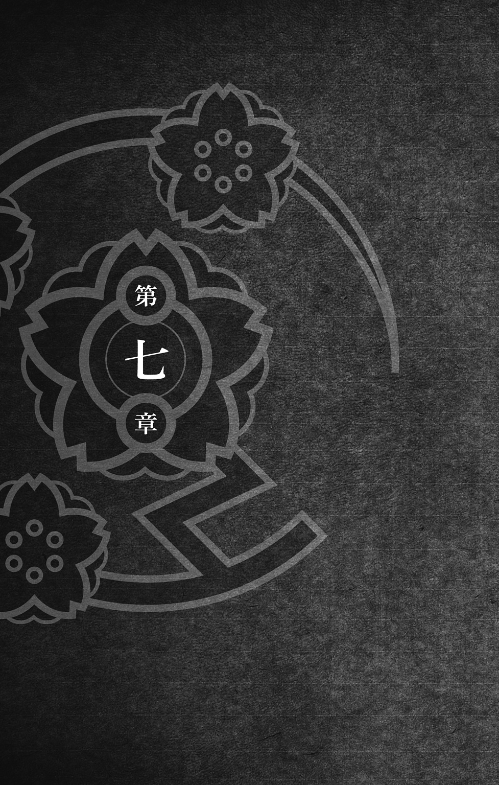
１
襲いかかってきた敵は十人だった。キドとマギレは後方に退いている。
応戦するサクラたち三人は、急造チームだが、それで連係がかみ合わないということはなかった。
敵に人数で劣るときの戦い方は、常に動き回り、そうしながらも仲間の背中を守る――頭で考えずとも、体が反応した。
敵の攻撃方法はさまざまだった。パワーで押してくる者もいれば、クナイや手裏剣にチャクラを帯びさせて放ってくる者もいた。
風遁使いもいた。油断のならない斬風が、時折飛来する。そういう攻撃の一つひとつが、尾獣のチャクラにより、さらに殺傷力を高めているようだった。
サクラは体術と拳撃で応じた。遠距離タイプの敵がいないので、攻めあぐねることはなかった。
いのは、こういう接近戦では通常後方に回ることが多かったが、今はそうも言っていられない。体術でサイをサポートしている。
不意に火球が飛んできた。人の頭ほどの大きさの火球がいくつも。右側からだ。
サクラは跳躍してかわした。
火遁で攻撃してきたのは、地下室で偽のサスケを演じた男だった。チャクラの衣から尾が二本生えている。
「またサスケの姿になってやろうか？」
そいつは言って、下品な笑みを見せた。
「なってみなさいよ」
サクラは言った。
「私、嬉しくて首に抱きついちゃうかも。そのまま絞め上げるけどね」
「絞め上げるのはこっちだ！」
相手がチャクラの尾を一本伸ばしてきた。尾はサクラの体に届く寸前で、先端が手のような形になり、サクラの首を摑んだ。
「――！」
ぐいと体を持ち上げられ、つま先が地面から離れた。息ができない。
「便利だな。尾獣のチャクラってのは」
相手は腕組みをして、余裕ぶった笑みを見せると、もう一本の尾も繰り出してきた。
重たい衝撃が腹に来た。尾のパンチを連続して浴びる。瞬間的な痛みはあるが、深刻なダメージはない。だが、体勢がよくなかった。このままサンドバッグ状態だと、いずれ決定打を浴びてしまうだろう。
サクラは両手――特に指先にチャクラを集め、首を摑んでいる尾に手をかけた。
「んっ！」と気合一発、引きちぎるようにしてその縛めを外す。
「こいつ！」
地面に降り立ったサクラに、相手は尾の追撃を放ってきた。
サクラは身を低くしてかわし、相手の懐に飛びこんだ。ひじ打ちを見舞い、さらにアッパーを繰り出す。両方とも手応え十分だった。
アッパーで浮かせた相手に対し、
「二度と！ サスケくんに！ 化けないで！」
言葉とともに拳を見舞った。
「わかったわね!?」
フィニッシュは回し蹴り。相手は白目を剝き、声もなく倒れた。
倒れたあと、相手の体からチャクラの衣が消えた。どうやら意識が途絶えると、チャクラの衣も消えるようだ。そこは一般的な忍術の仕組みと変わらないのだろう。
「気絶させちゃえば消えるみたいね、このチャクラ！」
いのとサイに告げると、
「効果の持続時間も、決まってるみたい！」
と、いのの声が返ってきた。
確かにそれは、サクラも自分の目で確認した。
気を失っていないのに、薄紫色のチャクラの衣が消えてしまう者が何人かいた。
だが、そういう者はすぐさま新しいカプセルを口に放りこみ、尾獣のチャクラを復活させている。
「じっくり戦っても、チャクラを補充されるだけだ」
サイが言った。墨絵の虎を操りながら、自身も体術で交戦している。
「一気呵成にいこう」
そのとき、「きゃっ」と、いのが声を上げて転んだ。
敵の一人が尾で足払いをかけたのだ。二人の敵がクナイを持っていのに飛びかかる。
「いの！」
サクラが一人を拳で弾き飛ばし、もう一人はサイの飛び蹴りを食らって転がった。
いのが立ち上がる。
「大丈夫？」
尋ねたサイに、いのは「うん」とうなずく。そして、サイの腕に傷があるのを見て、なにも言わずそこに手をかざした。医療忍術により、傷口がふさがっていく。
サクラは拳を固めた。
――いの・サク・サイ。結構戦えてるじゃん！
内心で呟き、敵めがけてダッシュした。
２
気を失い、チャクラの衣の消えた暗部が累々と横たわっている。
部下全員を倒されても、しかしキドとマギレに動揺したそぶりはなかった。
倒れた暗部の向こうにいるキドとマギレを見つめて、サクラが言った。
「あの二人との戦いになったら、私がキドを向こうの森に誘いこむ。いのとサイは、残ったマギレってやつをお願い」
「無茶しないでよ、サクラ。三人一緒のほうが......」
と、いのが言いかけたが、サクラは首を横に振った。
「あいつらがどんな技を持ってるかはわからない。でも、少なくともマギレってやつは医療忍者だから、回復系の術を持ってるはず。キドから回復役を引き離して戦うのは理があると思うの」
「だったら、ボクがキドのほうを引き受けるよ」
サイが言ったが、サクラはこれにも首を振った。
「こっちは医療忍者が二人。だったら固まらずに分かれたほうがいい。私は自分で傷を治せるし、サイの傷はいのが治せばいい」
サクラが言ってうなずくと、サイもややあって小さくうなずいた。
「わかった。サクラの言うやり方でいこう」
短い打ち合わせがすんだとき、いきなりキドとマギレが動いた。
その場から消え、次の瞬間、サクラたちに近いところへ着地した。
「お疲れのところを悪いが、次は私たちの相手をしていただこう」
「部下がみんな弱くてがっかりしてるなら、もっと顔に出してもいいのよ」
サクラが言うと、キドは小さく口元を歪めた。
「挑発は、基本的にするのもされるのも嫌いじゃないが......今は時間を優先しよう」
そう言うとキドはコートを脱いだ。任務服の立ち姿は、均整のとれた体だった。
――強い......。
と、サクラは思った。
金だ、利だ、とそんな話ばかりをする男だが、暗部の上層部まで出世するには、まずもって強くなければならなかったはずだ。その強さは、十分に感じとれる佇まいだった。
一方のマギレは白衣を脱がない。そのままの姿で戦うつもりのようだ。
その直後だった。
――雷遁・散雫！
キドが腕を振り、無数の小さな雷光を放ってきた。
サクラたちは散開してそれをかわした。サイの虎は、その雷撃を食らい墨に戻ってしまった。
サクラは着地するなり、右手に広がる森のほうへ駆け出した。
キドがこの誘導に乗ってこない展開も頭をよぎったが、サスケの眼を「磨く」ためにサクラを捕えたというなら、ここで簡単にサクラを離脱させたりはしないはずだ。
はたしてキドが追ってきた。
「私とマギレを離して戦う気か。うまくいくといいな」
サクラは無視して、さらにスピードを上げた。
巨木が織りなす森へ入っていく。幹を駆け上がり、枝から枝へ飛び移った。キドは、追走というより並走するような格好でついてくる。
頃合いを見て、サクラは一本の枝の上で止まった。
キドと対峙する。
視線がぶつかった。
風が森を抜けていき、サクラの髪を揺らした。
「では――」
と、キドが言った。
「始めようか......」
サクラはなにも言わず、右の拳を左の掌に打ちつけた。パン、と森に響いた音が開戦の合図だった。
キドが枝を蹴って距離を詰めた。
拳と蹴りを繰り出し合い、両者は一旦離れた。
キドが腕を振る。
――雷遁・散雫！
さっき見せた雷撃の礫がまた飛んできた。
サクラはかいくぐりながら枝から枝へ跳び、キドに肉薄した。
――桜花衝！
と突き出した拳が、キドの胸に直撃した。
――よしっ！
ぐうっ、と苦悶の声をもらしたキドの姿が、しかしバチバチと放電しながら消えた。
「――！」
サクラは内心で舌打ちした。雷遁影分身を使われたのだ。
オリジナルのキドは、サクラの左斜め後方に移動していた。キドが両手で円を描くような動作で印を結んだ。
「食われろ！」
――雷遁・虎鋏！
山で獣を捕るときに使う罠――虎鋏の形に似た巨大な雷光の円環が、サクラの体に食いつかんと飛来してきた。
サクラはよけなかった。
両の掌に分厚くチャクラを溜め、口を閉じるように左右から迫ってくる雷光の刃を受け止めた。刃は一旦勢いを止められたが、しぶとくサクラの体に迫ってくる。
「はあっ！」
だが、サクラの力のほうが勝っていた。気合とともに力をこめると、虎鋏は弾けて霧散した。
「ほう」
キドが笑うのが見えた。
「虎鋏を弾くか。ならば......」
キドがポケットから紫色のカプセル――尾獣ドラッグを取り出した。
「.........！」
サクラは息を吸いこんだ。
キドはサクラの視線を受けとめたまま、カプセルを舌にのせた。
３
キドがサクラの誘導で森のなかに消えても、マギレは表情一つ変えなかった。
「一応聞いておきますが、もし投降の意思があるなら、ボクたちは攻撃しません」
サイが言うと、マギレは片眼鏡の位置を直し、かすかに首をかしげた。
「言っている意味がわかりません。私には投降する意思もなく、またその必要もありません。私はあなたたちを倒し、キド様の加勢に向かいます。あるいはキド様があの女を確保して、こちらに戻ってくるほうが先かもしれません。いずれにせよ、あなたたちはここで倒されるのです。以上です」
マギレはそう言うと、両手を腰の後ろに回した。
次に現れたとき、両手にはクナイが何本も握られていた。
「......なにあのクナイ？」
いのが怪訝な顔になる。
サイも見たことのないタイプのクナイだった。本来は鉄の刃である部分が、ガラス製の容器になっている。先端の尖ったその容器のなかには、なにか色のついた液体が揺らめいていた。確かめるまでもなく、中身は毒だろう。
マギレがクナイを放ってきた。
サイといのは左右に分かれて跳んだ。クナイはすべて外れたが、マギレはすぐに両手を腰に回し、またクナイを摑んだ。無数のそれを暗器のように体に備えているのだろう。
サイといのは、動き回って狙いをつけにくくさせたが、マギレのほうも動いて、さまざまな角度からクナイを放ってくる。ときにはわざと頭上に投げて、時間差で命中させようともした。
いのが、前転を打ってクナイをかわし、起き上がりざまに印を結んだ。
――入ってみる。
と、その目がサイに伝えてきた。心転身の術を試みるようだ。
いのが術の準備をする間、サイが動いてマギレの目を惑わせた。
だが、術は失敗した。マギレに弾かれたらしく、いのは顔をしかめてすぐに印を解いた。
サイは巻物を広げ、筆を走らせた。
――超神偽画、風神・雷神！
二十メートル近い背丈の巨像が二体立ち上がる。周囲に影が落ち、暗くなった。
「もうこれ出しちゃうんだ！」
いのがサイのそばに駆け寄ってきて言った。
「出し惜しみしてるときじゃない。早くケリをつけてサクラのところに行かないと」
サイは言った。
風神が腕を振りかぶり、マギレめがけて拳を繰り出した。
降ってきた巨大な拳を、マギレは後方に跳んでかわした。だが、そこに雷神が待ち構えていた。マギレの頭上に雷神の足が落ちる。地響きが鳴り、土埃がもうもうと立ちこめた。
よけられなかったはずだ、とサイは思った。
ややあって土埃がおさまり、雷神がゆっくりと足を上げた。
いや、雷神が足を上げたのではなかった。下からその足を持ち上げる者がいたのだ。
「なにあれ......！」
いのが声をもらした。
雷神の足を片手で持ち上げているのは、マギレだった。
尾獣ドラッグを飲んだようだ。薄紫色のチャクラの衣をまとっていた。
マギレが、ひょいと手を動かしただけで、雷神はバランスを崩し、ひっくり返った。地響きと土埃のなか、サイといのは、飛び退いて下敷きになるのを免れた。
倒れた雷神の胸に、マギレが飛び乗った。そこで初めてマギレの姿がよく見えた。
片眼鏡はどこかになくなり、白衣も脱ぎ捨てられていた。髪の毛が逆立ち、理知的な風貌が凶暴に様変わりしていた。そして、尾の数だ。六本生えていた。どの尾も太く、長さも一メートル以上はあった。
マギレはその六本の尾を持ち上げ、雷神の胸に突き刺した。
一秒後、雷神の体が爆発し、墨の飛沫と化した。
「私も――」
地面に降り立ったマギレが言った。
「出し惜しみしている場合ではありません。以上です」
言葉の直後、先端が鋭く尖っている尾が何本か伸びてきた。
狙われたのはいのだった。いのは反応して跳んだが、尾は途中で軌道を変え、いのを追った。
いのの体に一本の尾が届きそうになったとき、風神が間に入り楯となった。
風神の足に尾が刺さり、風神は弾けるように墨と消えた。
さっきの雷神もそうだが、刺されたから墨に戻ったのではなく、尾からなにかを――起爆性のあるチャクラのようなものを注射されて爆発したようだった。
マギレは攻撃の手を休めなかった。
六本の尾を自在に繰り出して、サイといのを狙い続けた。
また、尾だけでなく、自身の手で時折毒入りのクナイも投げてくる。サイといのはかわすだけで、いっこうに攻勢に移れない。
サイはわずかな隙をとらえ、渾身のクナイを一本放つ。が、マギレの肩口に向かったそれはあっさりとかわされた。
「サイ！」
突然いのが抱きついてきた。そのまま二人は転がった。
直後、サイが立っていた場所から、すさまじい勢いで尾が一本飛び出してきた。地中に潜ってサイを狙っていた尾を、いのが感知してくれたのだ。
「ごめん」
サイは言った。いのは、気にしないで、というふうに首を振った。
「まずいな。このままじゃジリ貧だ」
サイが言ったとき、マギレが尾の先端を二人のほうに向けた。そこから光球が発射される。
二人は分かれて跳び、かわした。光球は地面に着弾し爆発した。
尾から直接流しこむだけでなく、それを弾丸として発射することもできるようだ。
――鳥を出して、上から攻撃するか......。
サイがちらりと空を見たとき、
〝サイ〟
と、いのが心伝身で話しかけてきた。
〝試してみたい作戦があるんだけど〟
〝作戦？〟
〝うまくいくかどうかわかんないし、ちょっと捨て身っぽいところもあるんだけど......〟
二人はマギレの攻撃をかわしながら交信を続けた。
〝......わかった。やってみよう〟
いのの説明を聞き終えると、サイはうなずいた。
視線を交わし、同時に行動を起こした。
煙玉を二人で投げる。煙幕が辺りに広がった。
マギレが言った。
「無駄なことです！ 以上です！」
マギレは六本の尾を振り回し、煙を攪拌した。煙幕が散らされ、目隠しの効果が消えていく。
煙が完全に晴れる直前、三頭の墨の虎が、マギレの正面から襲いかかった。
跳躍した三頭の虎は、マギレが尾から放った光球を浴び、すぐに墨へと戻った。が、その墨の後ろから、いのがクナイをかまえて現れた。
三頭の虎は捨て石。本命は、いののクナイ攻撃。しかもそのクナイは、マギレが放った毒入りクナイだ。
だが、マギレは冷静に応じた。尾の一本を振り、いのの横腹を打ち据えた。
「――！」
いのは吹っ飛び、地面に叩きつけられた。そして動かなくなる。
「いの！」
サイが叫びながらマギレに飛びかかっていった。クナイを逆手に持ち、マギレに迫る。マギレが尾で防御しようとした、その瞬間だった。
飛びかかったサイは墨に戻った。墨分身のサイだったのだ。その墨がマギレの顔にばしゃりと降りかかった。
「くっ！」
一瞬虚をつかれたマギレに、オリジナルのサイが向かっていった。
クナイを手に懐に飛びこもうとする。が、マギレの尾が縦横に振られ、牽制された。
サイは一旦後方に跳び、再度踏みこもうとした。そのときだ。
六本の尾から夥しい数の光球が発射された。
弾幕のようなその攻撃を、サイはかわしきれなかった。脇腹にいくつか被弾してしまう。熱感が傷口に広がった。サイは思わず膝をついた。
マギレが無表情に告げた。
「玉砕覚悟の波状攻撃に出た勇気は讃えますが、あまりに無謀すぎたようですね。以上です」
「讃えてくれるだけで、嬉しいよ」
言うやいなや、サイは地面を蹴ってマギレに突進していった。
マギレは、尾による直接攻撃と光球の発射で迎え撃ってくる。
サイは痛みに耐えながらかわし続けた。
「しつこいですね。以上です」
マギレが、六本の尾を三本ずつに分けた。その先端を手のように変化させ、左右からサイの体を摑んできた。
脇腹の傷で反応が遅れたサイは、その六本の尾にがっちりと体を拘束された。
身をよじるが、まったく動けなかった。
「本当に......以上です」
マギレが言い、尾の一本をサイの体から離し、その先端をサイの眼前に据えた。
光球が発射される前の小さな輝きが、尾の先端に宿った。
そのとき、マギレの背後から一羽の鷹が飛んでくるのが見えた。
鷹はその爪にクナイを摑んでいた。マギレが使っていた毒入りクナイだ。
マギレが鷹の飛来に気づき、振り返った。
鷹はマギレの背に衝突する寸前で進路を変えた。掠めるように上昇に転じた鷹は、もうクナイを摑んではいなかった。
クナイはマギレの背に刺さっていた。
「解！」
と、いのが鷹のなかから自分の体に戻ってきた。うつ伏せに倒れた状態から、素早く立ち上がり、サイのもとへ駆け寄ってくる。
「お前、たち......！」
マギレが初めて動揺の色を見せた。
「玉砕覚悟の波状攻撃......と見せかけて、野生の鷹を利用したトリックプレーでした。以上です」
サイが言って、薄く笑った。気絶したフリをして、鷹のなかに入る――いののアイデアに乗って正解だった。
いのも言う。
「サイが投げたクナイを、アンタはチャクラの衣で弾こうとせずにかわした。てことは、そのチャクラの衣はクナイの貫通を許すってこと。だったら不意打ちで毒入りクナイを打ちこんでみるのも手かなと思ったのよ」
ふ、とマギレが笑った。
「......得意がるのもいいですが、あなたたちは大事なことを忘れています。毒を使う者は、その毒で自分が死なないよう解毒薬も持っている。私が今から解毒薬を打てば――」
「効けばいいけどね、その解毒薬」
いのが不敵に笑った。
「......？」
「その背中に刺さったクナイ。クナイ自体はアンタのやつを借りたけど、中身の毒薬は、私の痺れ薬と取り換えてあるから」
「......え？」
マギレが声を上げた。
煙玉で煙幕を作ったとき、サイは虎と墨分身を用意し、いのはクナイの中身を入れ替える作業をしていたのである。
いのの痺れ薬が効き始め、マギレの体が震え出した。
「馬鹿な、こんな、馬鹿みたいな手で......」
マギレの震えに合わせて、体を包むチャクラの衣も不安定になり始めた。大きく膨らんだり、萎んだりを繰り返している。
サイは決めに行くことにした。
巻物と筆を用意し、もう一度巨像を描き出した。
――風神・雷神！
現れた二体の巨像がマギレを見下ろした。
巨像の影のなかで、マギレは怯えた顔になった。さっきまで威勢よく暴れていた尾が、今や六本ともしゅんとなって地面に伸びている。
雷神が足を振り出した。
すでに体の自由を奪われていたマギレが、その足をよけることはできなかった。小石のように蹴られたマギレは、地面を何度かバウンドして転がった。
止まったところへ、風神の足が落ちてくる。一瞬大地が揺れ、収まった。
今度こそ仕留めたはずだ。サイといのは、風神の足元に駆けつけた。
風神が足を上げると、大地にめりこんだマギレの姿が見えた。完全に気を失い、尾獣のチャクラもなくなっていたが、
「死んではないわね。ギリギリだけど」
いのが言った。
「早くサクラのところに行かないと」
サイが言って、二体の巨像を墨に戻したときだ。黒い影が次々と近くに着地した。キド一派の援軍か、と二人は反射的に身構えたが、そうではなかった。
「先生！ ナルトとヒナタも！」
いのが声を上げた。
任務服をつけたカカシ、ナルト、ヒナタだった。
「ヒナタとネジの墓参り行ってたら、火影の服じゃねえカカシ先生を見かけてさ、なにかあったんだと思って追いかけたんだ」
ナルトが言った。
「雷影と話したあと、お前らの応援に行こうと思って移動してたら見つかっちゃってさ。ま、もうすぐ結婚する二人に危険な任務もどうかと思ったんだけど、どうせ来るなって言っても来るからさ、コイツら」
カカシは苦笑交じりにそう言うと、地面に視線を向けて、
「......で、これがマギレか。きれいにプレスされてるな」
「よくここがわかりましたね」
サイが言うと、カカシは顔を上げた。
「でかいチャクラがぶつかり合ってるのはわかったからね、場所の見当はついた。あとはヒナタの白眼で」
「サクラちゃんは？」
ヒナタが不安げに聞くと、いのが答えた。
「今、キドと戦ってる」
カカシが森のほうに視線を向けて言った。
「あっちか......。急ごう」
４
キドが生やした尾の数は――九本だった。
ただしそれは、チャクラの衣から生えているものではなかった。
――これって......尾獣化してる......？
サクラは眉をひそめた。
尾獣ドラッグを飲んで、キドの体に起こった変化は、配下の者たちのそれとは大きく異なっていた。
薄紫色のチャクラが爆発的に大きくなるところまでは同じだが、キドの場合は、それが硬い表皮のようになって全身を覆ったのだ。配下の者たちがまとった、半透明の膜のような衣とは明らかに違っている。
尾は九本だが、妖狐のようなシルエットでもない。獣というよりは、紫色の怪人といったほうが表現としては正確だった。
「――あまり洗練された姿とは言えんが、ケタ違いに強くなったことだけはわかるだろう？」
キドが言った。
キドのこの姿自体はさほど恐怖ではない。が、キドが発散しているチャクラの量には圧倒された。
「そうね」
と、サクラは言った。
「一対一に持ちこんだこと、少し後悔してる」
「心配するな。なるべく殺さないつもりだ。ここではな。だが――」
その瞬間、キドの姿が消えた。
「――死んだらすまん」
という声は耳元で聞こえた。
「――！」
振り返る余裕はなかった。前方に跳んだ。直後、ごおっという風を背中に感じた。キドが尾を振ったのだとわかった。
尾に打たれた巨木が倒れるメリメリという音が聞こえた。
サクラは太い枝に着地し、体勢を整えた――つもりだったが、その足場だった枝が、キドの伸ばした尾によって破壊された。
サクラは宙に投げ出された。だが、地面には落下せず、横から飛んできた尾がサクラの体に直撃した。
バキバキと枝をへし折りながら、サクラの体は森のなかを吹っ飛んでいった。チャクラを全身に巡らせていなかったら、この一撃で戦闘不能になっていたはずだ。
巨木の幹に背中をぶつけ、サクラの体は止まった。そのまま幹を伝って落下しかけたが、すぐさまサクラは反撃に転じた。
幹を蹴り、枝を蹴りながら、キドに正面から迫っていく。
「いい度胸だ！」
キドが尾を矢継ぎ早に繰り出してきた。紫色の槍衾を、サクラは一髪の間合いで潜り抜け、キドの懐に到達した。
拳を胸に叩きこむ。
硬い表皮だった。反動でサクラの体まで壊れてしまいそうだった。だが、きちんと撃ちこめたという手応えが拳には残った。
その証拠に、キドの胸の殴られた部分に亀裂が入っていた。表皮のその部分が、小さな破片となってぽろぽろと剝がれ落ちた。
「おそろしいまでの破壊力だな。尾獣ドラッグで強化された私の体に傷をつけるとは。だが――」
とキドは不敵に笑った。
「これで振り出しに戻る」
亀裂の入った表皮は、みるみる修復され、元通りになっていった。
サクラは息を吞んだ。
キドが言った。
「私とマギレを引き離したのは、あいつが医療忍者だったからだろうが......どうやら、なんの意味もなかったようだな」
尋常ではない硬さと、自己再生能力を持った鎧。それに加えて、九本の尾が繰り出してくる予測不能の攻撃。
これはいよいよ、とサクラは思った。
――無謀だったかしらね......。
だが、この状況に持ちこんだのはサクラ自身だった。泣き言を言っている場合ではない。
「諦めて、サスケの目の前で死ぬほうを選ぶか？ 死に方としては、お前もそのほうが本望だろう？」
「冗談」
サクラは小さく笑った。
「サスケくんの目の前で死ぬくらいなら、ここでアンタと刺し違えるほうを選ぶわ」
「刺し違える？」
キドがにやりと笑った。
「馬鹿力しか能のないお前が、どうやって私と刺し違えるというんだ」
「こうやるのよ！」
声と同時に、サクラは再び拳を繰り出した。
さっき亀裂の入った部分にもう一度拳を叩きこんだ。
手応えは、やはりあった。拳の当たった箇所に亀裂が入る。しかしその後の展開もさっきと同じだった。表皮が小さく剝がれ落ちたが、すぐに修復されていく。
「馬鹿力というか、こうなるとただの馬鹿だな」
キドが両手で印を結んだ。見たことのある印だった。
――雷遁・虎鋏！
牙の生えた雷光の輪が、サクラに食いついてきた。
これは受け止めきれない、とサクラは一瞬で判断した。ドラッグにより強化された術は、一度目に見たときに比べ、速さも破壊力も数段増しているのがわかった。
サクラはしかし、後退してよけることはせず、前方に飛び出し、雷光の輪をくぐるようにして虎鋏をかわした。背後でガチン！ と虎鋏が閉じたのがわかった。
サクラが踏みこむとは予想していなかったのか、キドはサクラの拳をまた胸に浴びた。
が、今度は亀裂が入らなかった。
「どうした、もうバテたか？」
「まだまだ！」
叫び返し、サクラはさらに拳を繰り出した。当たる。しかし、亀裂は入らない。さらに拳を引く。が、キドが言う。
「そう何度も殴らせてはやらんぞ」
尾が飛んできた。かわす。さらに別の尾が飛んでくる。かわす。が、次の尾に打たれた。
サクラは吹っ飛び、背中から巨木に激突した。強制的に肺の空気が吐き出され、一瞬意識が飛びかけた。地面に落ち、しかしすぐに立ち上がった。
キドも地面に降り立った。
サクラは拳を固めてダッシュした。
キドの胸に拳を叩きこむ――頭にあるのはそれだけだった。
「猪突猛進は早死にするだけだ」
キドは言いながら、尾を突き出して牽制した。サクラは次々にかわしていく。が、かわしているだけではキドの懐に飛びこめない。
尾が鋭く突き出された。それをサクラはよけなかった。ズン、と太い尾がサクラの腹を貫いた。だが、かまわずサクラは走り続けた。
――私は死なない！
――忍法・創造再生！
サクラの全身に百豪のチャクラがみなぎり、顔に紋様が浮かんだ。貫かれた箇所の細胞が急速に分裂し、傷を修復している。だが、尾は刺さったままなので、傷口がふさがるということはない。
「貴様......！」
キドが目を剝いた。
尾に貫かれたまま突進してくるサクラに、一瞬だが怯んだようだ。
サクラはキドとの距離を詰めると、拳を何度も繰り出した。ここまで肉薄できるチャンスはそうない。一発でも多く拳撃を叩きこみたかった。
サクラは連打した。だが、キドの体表にはやはり傷一つつかない。
「ええい、どけ！」
キドが、サクラを貫いている尾を大きく振った。
尾からサクラの体がずるりと抜けた。貫かれた腹の傷が、チャクラによってふさがっていく。
「互いに自己治癒力が売りというわけか。だが、拳でしか攻撃できないお前にこの先なにができる？ 時間切れを狙っても無駄だぞ。尾獣ドラッグのストックはまだいくつもある」
キドが、ふわふわと九本の尾を宙に浮かべながら言った。
「確かに、なにもできない。拳しかない私は、ただ拳を撃ちこむだけよ」
サクラは顔についた土を手で払うと、キドを睨み返した。
「わからんな。続けても無駄なことを、なぜやめないのだ。純粋に私はそれが不思議でならない」
「決まってるでしょ」
サクラは言った。
「アンタをぶっ倒したい。サスケくんの眼でドラッグなんか作らせない。尾獣ドラッグも作らせない。軍事会社も作らせない。その気持ちが......想いが朽ちてないからよ！ だから私は、何度だってアンタに立ち向かう！」
――だから私は、何度だってサスケくんに想いを告げる！
――......ってあれ？
不意にサスケへの恋心が胸に浮かんできて、サクラは動揺した。
キドの硬い表皮を叩き続けていることが、何度想いを告げても報われないサスケへの恋を連想させたのだろうか。
――......ううん。報われないなんてことない。
――私とサスケくんの距離は、少しずつ近くなってるはず。
『また今度な......』
そこまで来たのだから。
そして、このキドとの戦いもそうだ。サクラはまだ望みを捨ててはいなかった。
チャクラが続く限り、拳を打ちこむつもりだった。
「何度やっても結果は同じだ。私の体が傷つく前に、お前の拳が用をなさなくなる」
「悪いけど私――」
サクラは拳を固めると、言った。
「何度もアタックして跳ね返されるの、慣れてるから！」
サクラは駆け出した。
キドの眼前に到達し、拳を繰り出す。
――届け！ 届け！ 届け！
サクラは念じながら拳を叩きつけた。かわされようが、ガードされようが、とにかく同じところだけを打ち続けた。
一瞬、ガードの隙が見えた。逃さず拳を突きこんだ。いい感触のパンチが入った。
紫の表皮に、ぴしりと一条の亀裂が走るのが見えた。
――よし！
内心快哉を叫んだときだった。
キドが、突然口を大きく開けた。瞬間、サクラは危険を直感した。高密度のチャクラが、キドの口腔内に準備されているのがわかったのだ。
――まずい、これって......！
サクラは斜め後方に跳びながら、両腕を顔の前で交差させた。
――尾獣玉ってやつ!?
直後、キドの口からチャクラの塊が発射された。
体内で圧縮されていたのだろう、口の外に出た瞬間、球状の塊は直径一メートルほどに膨張し、サクラに向かってきた。
直撃は避けられたが、半身が触れてしまった。そして、それだけでも凄まじい衝撃だった。
尾で打たれたのとは比較にならないほどの衝撃を受け、サクラの体は森のなかを吹っ飛んだ。
太い枝を何本も折り、巨大な岩に当たってサクラは止まった。
地面に崩れ落ち、すぐには立てなかった。息をするだけで、全身に激痛が走った。
四肢がちゃんと動くかを確認しながら、サクラは立ち上がった。
「もうやめておけ。その体では、次の尾獣玉はかわせんだろう。本当に死ぬぞ」
キドが言いながら、こちらに歩いてきた。
「やめ、ない......」
サクラは言った。声が少し掠れた。
「だって、もうちょっと、なんだから......」
キドが首をかしげた。
「もうちょっとだと？ どういうつもりだ。お前は立つのもやっと。私の体は無傷。絶望的状況とは、こういうのを言うんじゃないのか？」
「無傷？ どこが？」
サクラは小さく笑みを浮かべた。
キドは怪訝な顔になり、自分の胸に視線を向けた。そして、気づいた。
体表に走った亀裂が修復されず、その亀裂を中心に表皮の剝落が始まっていることに。
「なっ！ どういうことだ......！」
キドが狼狽した。
「なぜ、修復が始まらない!?」
「だってその部分の細胞は、もう死んでいるから」
「死んでいる、だと......？」
その言葉の間にも、キドの胸の皮膚はぽろぽろと剝落し続けている。
「私の拳は、効いていた。効いていないように見せかけていただけよ」
「......？」
キドが目を眇めた。
「私はアンタの体に拳を叩きつけながら、同時に回復のチャクラも流しこんでいたの。本当は、一瞬亀裂が入ったのを、即座に回復のチャクラで治していたってことね。だから、見た目には無傷で、私の拳はまったく効いていないように見えた」
「傷を治していた......？ なんのために......」
「もちろん、細胞の死期を早めるためよ」
サクラは言った。
「――傷が治るっていうのは、要するにその部分の細胞が新しく分裂して、傷口をふさぐっていうこと。だけど、体細胞は分裂できる回数に限界があるの。アンタの鎧は硬い。でも、むりやり細胞分裂させ続ければ、いずれ細胞は死に、そこを一点突破できる。創造再生の応用技よ」
「馬鹿め。こんな傷ごときで、勝負が決まると思うなよ......！」
キドが怒りで顔を歪ませた。
サクラは拳を固めた。キドの言う通り、鎧の一部に穴をあけただけでは勝ちとはいえない。
――あと一発......！
その穴に渾身の、そして最後の一撃を叩きこむためにサクラは走り出した。
拳を引き、狙いを定める。
視界のなかで、キドが口を開けるのが見えた。
――二発目の尾獣玉！
サクラはそれを読んでいた。
「はあっ！」
サクラはキドの十メートルほど手前で身を低くすると、地面に拳を叩きつけた。
大地が揺れ、キドがぐらりとバランスを崩した。その瞬間、サクラはキドの眼前に躍り出た。
――本日二度目の......！
「しゃーんなろ―――――！」
サクラの残りのチャクラすべてを乗せた桜花衝が、キドの胸に叩きこまれた。
完璧な手ごたえが、サクラの拳に残った。それを裏付けるように、キドの体が巨木や巨岩をなぎ倒し、粉砕しながら飛んで行った。
５
感じたことのない衝撃が胸に叩きこまれ、キドは飛んだ。
飛びながら、血を吐いた。
血――。
その血が、キドの脳裏に、記憶の断片を呼び寄せた。
血を吐いて倒れていた父。
――お父さん、お父さん！
ベッドの脇にうずくまっていた父に、キドと母が駆け寄った。
――どうして薬をやめてしまったんですか！
主治医が叱りつけるように母に言っている。
飲んでいるものとばかり思っていたんです。母は、胸に浮かんだはずのその言葉を最後まで口にしなかった。
たくさんの白いカプセルが、父の机の引き出しから見つかった。
カプセルは、中身が入っていなかった。ただのカプセルだった。
――あなたはすぐに薬飲むの忘れるんだから、ちゃんと私の前で飲むようにしてくださいね。
――ははは、わかったよ。
父は笑って、ほら飲むぞ、と母の前で白いカプセルを飲んだ。中身のない、空のカプセルを。
――キド、よかったな。これでお前もみんなのように忍者学校に行けるぞ......。
――うん、お父さん、ありがとう！
病がちな体を押して、父は任務に出かけ、お金をためてくれた。
そのおかげで、キドは忍者学校に行けるようになった。家計の苦しさから、忍者学校進学を半ば諦めていたキドにとって、それは福音だった。
だが、事実は違っていた。
重い持病のある父には、欠かしてはならない薬があった。
高価な薬だった。
父はその薬を飲むのをやめ――母やキドの前で空のカプセルを飲むことを続け、その薬代をためていたのだ。
父は自分の命を諦めて、薬代を息子の学費に回したのだ。
――よかったな、キド。
――ちっとも、よくないよ......。
父の遺影に向かって、何度も何度も言い続けた。
お金があれば、お父さんは薬を飲めた。
お金があれば、お父さんは死なずにすんだ。
お金があれば――
お金が――
１
激しい衝突音が何度も響き、やがて森が静かになった。
サクラはキドが飛んで行ったほうへ歩き出した。
キドは、森の少し開けたところで、ずたぼろになって倒れていた。
サクラはゆっくりと、しかし警戒は解かず近づいて行った。
意識がなくなったのだろう、キドは尾獣化が解け、任務服の姿に戻っている。
そのとき、頭上で、「サクラーっ！」と、いのの声がした。
見上げると、鳥が三羽飛んでいる。
その背中から、サイといの、そしてカカシ、ナルトとヒナタも飛び降りてきた。
「カカシ先生......、みんな......」
「遅くなってすまなかった」
カカシが言い、
「大丈夫だったか、サクラちゃん」
ナルトも言った。
「うん、なんとかね」
「よく一人で倒せたな」
カカシがキドを見ながら言った。
「もうフラフラですけど......」
サクラは言って苦笑した。実際、もうチャクラはカラッポに近かった。
「マギレは？」
聞くと、サイが答えた。
「ボクといので、なんとか」
「私の痺れ薬で動けなくなってるけど、念のため、サイの分身が見張ってる」
いのがつけ加えた。
そのとき、気絶していたかに見えたキドが、「う......」とかすかな声をもらした。
「カカシ、か......」
「下手な真似はするなよ。ちょっとでも妙な動きを見せたら、俺が斬る」
カカシが冷静に告げた。
キドが小さく舌打ちするのが聞こえた。
「サクラちゃん、こいつ、ミョーな薬作ろうとしてたんだって？」
ナルトが言った。
「そうよ。あんたやサスケくんの髪の毛とか使ってね」
「気持ちワリー」
と、ナルトが舌を出す。
「尾獣ドラッグに写輪眼ドラッグか。確かに気持ちワリーが、しかし、そんなもんが世界に蔓延したらソートー厄介だぞ。悪党がお手軽に強くなっちゃあ、取り締まるほうも大変だからな」
カカシが言って、肩をすくめた。
「まあでも、写輪眼ドラッグは阻止できたわけだし」
いのが言い、
「尾獣ドラッグも、こいつらのアジトを一斉捜索すれば、すべて押収できるでしょう」
サイも言った。
「そうだな。あとは尋問部に引き渡して――」
と、そこでカカシが不意に言葉を飲みこみ、目を鋭くした。
「先生？」
と、訝るサクラたちに、
「結界班から心伝身の声が届いた」
カカシはそう言うと、こめかみに手を添えて、心伝身の相手とやりとりを交わした。
「――わかった」
カカシは交信を終えると、サクラたちに言った。
「暗部の仮面をつけたものが数名、里を抜けたそうだ」
「暗部が？」
カカシはうなずくと、キドに目を向けた。
「お前の手下か？」
キドは薄く笑って答えた。
「私のアジトには、私のチャクラや生命反応と連動した受信機が置かれている。私のチャクラが著しく減れば、緊急の警報が鳴る仕組みだ。それが鳴ったときは、速やかに里を抜けろと部下には指示してある。ドラッグを持ってな」
「......用意のいいことで」
カカシは舌打ちした。
「部下だけが逃げていいの？ アンタは投獄されるのよ」
サクラが言った。
「戦いに敗れたのは私の責任だ。投獄は甘受する。だがその代わり、部下が里の外で尾獣ドラッグを広める。忍の秩序は崩壊し、治安は一気に悪化するだろう。それで私の溜飲は下がる」
キドは言って、低く笑った。
「手下どもはどこに向かったんだ？」
カカシが聞いた。
「答えると思うか？ 私が」
「思わない。だから――少し寝ててくれ」
カカシは言うと、キドの首筋に手刀を打ちこんだ。キドはあっけなく気を失った。
「すぐに追おう。結界班が言うには、連中は里の北側の結界を破って出たそうだ。サイ、鳥を」
はい、とうなずくと、サイは上空に待機させていた鳥を近くに呼んだ。
「ここには念のため、俺とナルトの分身を残していこう」
「了解」
カカシとナルトが印を結び、影分身の術を使った。
生まれた分身に、「頼んだぞ」とカカシが告げ、サクラたちは鳥の背に乗った。
サイといの、カカシとサクラ、ナルトとヒナタ、というペアに分かれる。
鳥が上昇し、北に進路をとった。
「最後の最後でめんどくさいことしてくれるね、まったく」
カカシが溜め息まじりに言った。
「追いつけるかな」
隣の鳥の上で、いのが不安そうに言った。
「尾獣ドラッグでチャクラを増していたら、かなりのスピードが出せる。微妙かもしれないね」
サイが答えた。
「ヒナタ、なにか見えたら言ってくれよ」
ナルトが声をかけた。
「うん！」
と答えたヒナタが、ややあって、「あっ」と声を上げた。
「十時の方向！ 火が見えます！」
「火？」とカカシ。
「はい、それと、倒れてる人も......」
一行は鳥の進路をそちらに変え、さらにスピードを上げた。
やがてサクラたちにも見えてきた。
眼下の草原に人が何人も倒れている。その周囲では、、かすかに煙も立ち上っているのが見えた。
「なにあれ!?」
いのが声を上げた。
「降りるぞ！」
カカシが言い、鳥の高度を下げた。
サクラたちは鳥の背から離脱し、地面に降り立つと、その場所に駆けつけた。
倒れているのは暗部の忍たちだった。
死んでいる者はいなかったが、全員がチャクラを乱されて意識が混濁している。幻術をかけられたということだ。
――幻術......!?
はっとして、サクラは辺りを見回した。
視界の奥の森――一瞬、人影がよぎったような気がした。ターバンとコートをつけた後ろ姿。
サクラは声を上げそうになった。
だが、まばたきする間に、その人影はもう見えなくなっていた。何度も目を凝らしてみたが、なんの気配もチャクラも感じ取れなかった。
――気のせい......？
――ううん。そんなはずは......。
そこへ、いのの声がした。
「ねえ、なんなの、これ？ なにが起きたっていうの？」
「ふむ。どうやら......俺たちが追いつく前に、こいつらを始末してくれたやつがいるらしい」
カカシが腕組みをして言った。
「始末してくれたやつって？」と、いの。
「お前らはわかってるんじゃないのか？」
カカシがいたずらっぽく笑って、七班に聞いた。
サクラは「はい」と微笑み、ナルトは「へへ」と鼻の下をこすった。サイも、ピンと来たのか、にこにこと笑ってうなずいている。
火遁の術の痕跡。幻術をかけられた暗部の者たち。そして――気のせいかもしれないけれど、一瞬見えた気がした、あの後ろ姿。
「えっ、ひょっとしてサスケくん!?」
いのが声を高くした。
「ま、そういうことだろうな」
「本物の？ マジで？」
「そりゃ本物だろーよ」
カカシが言って笑った。
「なによそれ。じゃあ、なんでサスケくん、ここにいないのよ」
「戻ったんでしょ、また旅に」
サイが言った。
「いやいや、水臭いでしょ、それは。だって、ここから里、すぐ近くだよ？ 寄っていけばいいのに。ねえ、サクラ」
「そうだね」
と、サクラは返したが、不思議と寂しさは感じなかった。
お前たちでなんとかしろ、とでも言うように、今回の事件に対して無反応を通していたサスケが、それでも最後には戻ってきてくれた。そのことがわかって嬉しかった。
里に戻る途中で、サスケは尾獣のチャクラをまとった暗部の者たちと遭遇した。
交戦し、火遁と幻術で勝った。
写輪眼を使えば、相手の記憶を読むことができる。
サスケは、このなかの誰かの記憶を読んだのだろう。それでサクラたちがキドと対決したことを知り、さらにはキドのチャクラが激減したことを受けて、この暗部の者たちが里を抜けた、ということを知ったのだ。
ボスであるキドが倒されたのならば、自分はもうすることはない。旅に戻ろう。それでサスケはこの場を離れた――
ついさっきこの場で起きたであろうことを、サクラはそんなふうに想像した。
「なんだかなー。やることやって、さっさと消えるってのが、いかにもサスケって感じだってばよ」
ナルトが肩をすくめた。
「ほんとね」
とサクラもくすりと笑う。
だがそういう、「サスケらしさ」の余韻のようなものを感じられただけでもよかった。
「しかし、キドもマギレもお前らが倒して、そろそろ俺の出番かなと思ったんだが、ここでも結局サスケに持っていかれたなあ」
カカシが残念そうにかぶりを振った。
「消化不良なら、先生。走って帰りますか？ ボクたちは鳥で帰りますけど」
サイが言うと、カカシは即答した。
「あ、そういう無駄に熱いのはやめとく。なんか、ガイっぽいし」
火影の軽口に、みんなが同時に吹き出した。
２
その後、積木キドとマギレは、尋問部に身柄を移された。
森乃イビキを中心に、取り調べが進められたが、キドとマギレは最初から黙秘した。
よってイビキは、口頭での尋問から、相手の記憶を読む方式の取り調べにやり方を変えた。
情報部の専用の機械が用意され、山中一族の者が取調官として呼ばれた。
どれだけ口を堅く閉ざしていても、機械と術で記憶を読まれれば意味がない。
その結果、キド一派にまつわるさまざまなことが判明した。
里内にある隠れ家やアジトの場所。さらには、一派の構成員も。
隠れ家やアジトが割れたことで、尾獣ドラッグはすべて押収されることになった。
ドラッグはシズネのところに持ちこまれ、キドとマギレの脳内から読み取られた情報と併せて解析が進められることになった。
「――やはりあいつら、終末の谷でナルトの髪の毛や血液も集めていたようだな。そこから尾獣のチャクラを抽出して、ドラッグを作ったようだ」
火影室でカカシが言った。
机の前で、サクラ、いの、サイの三人が報告を受けていた。
「でも、それだけであんなドラッグが、しかも大量に作れるものでしょうか？」
サクラは言った。
「そこに関しちゃ、ネタがあった。あいつら、六道仙人の血縁者を探し当てて、無理やり尾獣ドラッグの研究と製造に協力させていたようだ」
「六道仙人の......？」
サクラが眉根を寄せると、カカシはうなずいた。そして、いのに顔を向ける。
「いのは覚えてないか、かつて雲隠れにいた金角銀角という兄弟を」
「もちろん、覚えてますよ。大戦のときに戦いましたから」
と、いのが答える。
雲隠れの里の実力者だった兄弟の忍。先の大戦において、穢土転生でよみがえり、いのたちの部隊と戦ったということは、サクラも知っていた。
「でも、それがなにか......？」
「金角と銀角は、かつて九尾の肉を食って、尾獣のチャクラを得た。キドたちはそこからヒントを得て、尾獣ドラッグを思いついたらしい」
カカシは続けた。
「終末の谷で採取したナルトの個人情報物質。そこから取り出したチャクラは、それだけではドラッグにするには少量すぎる。だからそれを増やしてやる必要があった。――これは、サクラやいののほうが詳しい話だろうが、細胞を培養するときには『培地』ってのが必要なんだよな？」
「そうですね。増やしたい細胞に栄養を与えたりする、土台のようなものですね」
サクラが言った。
「キドとマギレは、六道仙人の血縁者――まあこれは南の小国にいた青年なんだが、その人物をさらい、隠れ家の一つに閉じこめていた。そして、その人物に体組織を提供させ、それを培地にして、ナルトの尾獣チャクラを増やしていたんだ」
青年は最初、提供を拒んだという。当然だ。木ノ葉とは縁もゆかりもない国で、非戦闘員としてごく普通の暮らしを営んでいた青年なのだ。
だが、キドは脅迫と薬を用いて、青年の意志を挫けさせた。抵抗できなくなった青年は、キド一派の監視下で、体組織の一部を提供させられた。
「その人は、今は......？」
サクラが聞くと、カカシは「心配ない」と答えた。
「あいつらのアジトに一斉捜索が入ったとき、無事に助け出されている」
「よかった」
サクラはほっとして、いのやサイと顔を見合わせた。
そこへ、カカシが言葉を継いだ。
「それからもう一つ――キドの記憶に潜っていた取調官からの報告がある」
だが、すぐには続けず、言葉を選ぶような間をとったあと、カカシは続けた。
「今回の事件の要因......と言っていいものかどうかはわからんが、キドの成育歴に関してだ。――積木キドは貧しい家に生まれた......」
続くカカシの話は、その一事だけを取り上げて見るならば、胸の痛む話だった。
息子を忍者学校に入れるために、自分の薬を諦め、偽の薬を飲み続けた父親――辛い話だった。
木ノ葉隠れの里がある火の国は、五大国のなかでは比較的国力の豊かな国だが、それでもこういうことが起きるのだ。
金への異常な執着。ドラッグによる軍事ビジネス。キドの幼少期に、今回の事件につながる要素は確かに見える。だが――
「だからといって、今回キドが起こした事件を、仕方のないことだった......と片付けることはできないけどね」
カカシの言葉に、サクラたちは神妙な顔になった。
難しい問題だった。こうすればいい、と一言で言える類の問題でもない。
「ま、俺は火影として、今後そういう目に遭う子どもが出ないような里作りを目指すだけだな」
カカシはそう言った。
「私、『子ども心療室』作ってよかった」
火影の家を出ると、サクラはいのとサイに言った。
「キドの、子どもの頃の話を聞いて？」
いのに言われ、サクラはうなずいた。
「うん。やっぱり、子どもの心の傷って、放っておいちゃいけない問題なんだなって......」
最後の戦いの場で、キドは、『子ども心療室』を意味のないものだと否定した。そんなものを作っても、軟弱な子どもが増えるだけだ、と激しく言い立てた。
幼少期の辛い体験が、キドにそんな言葉を吐かせたのだろう。
俺のときには、そんなものはなかった。甘ったれるな。俺は自力でそこを耐えたんだ、という苦々しい気持ちがキドにはあったのかもしれない。
だが、それを言うキドが、今回のような事件を引き起こしたのだ。そう考えると、なおさら子どもの心のケアの重要性が浮かび上がってくる気がする。
心の傷は取扱いが難しいものだ。
サクラは、ちらりとサイを見た。サイも、過酷な幼少期を過ごしている。戦災孤児となり、「根」に入ってからも、壮絶な訓練を強いられた。辛い別れもあった。
出会ったばかりの頃、サイは感情のない機械のようだった。笑顔のない、というよりも、どういうときに人は笑うのか、それすらもわからなくなっている少年だった。
そのサイも、今はちゃんと笑う。ちゃんと怒る。サイの心の傷に寄り添う仲間がいたからだ。
サスケも、とサクラはその旅人のことを思う。
一族の悲劇という、あまりにも大きな運命に翻弄された少年期だった。憎しみにからめ取られそうだったサスケを救ったのは、ナルトをはじめとする里の仲間だった。
『子ども心療室』も、そういう仲間のような存在になればいい、とサクラは考えていた。気楽に訪れて、なにかを話す。話すのが苦手なら、苦手でいい。なにか言葉が出てくるように、こちらから働きかけてもいいし、なにかを言い出すまで待ってあげることもできる。そういう場。
「子どもたちが、みんな笑ってるような里にしたいな。難しいかもしれないけど」
サクラは言った。
難しいかもしれない。けど、やらなきゃ、という思いを強くした今回の事件でもあった。
「そうだね」と、いのが言い、サイも微笑んだ。
「サクラ先輩」
と、そこへ声がかけられた。
振り返ると、木ノ葉病院で働く後輩の医療忍者が駆けてくる。以前会議で、心療室の効果を報告してくれたくノ一だ。
「砂隠れの医療関係者から、『子ども心療室』について、いくつか問い合わせが来てるんですけど」
その後輩は言った。
「そう。じゃあ、行くわ」
サクラがそう答えると、「私も行こうか？」と、いのが聞いてくる。
そうね、と、答えかけたサクラだったが、すぐに思い直した。
「んー、大丈夫。私がやっておくから」
「でも」
と言ういのに、サクラはそっと耳打ちした。
（いいから。アンタはサイと二人でご飯でも行ってきなさいよ）
（ちょっと......）
変な気回さないで、と顔を赤らめるいのに、「いいから」とサクラは繰り返した。
（いの・サク・サイは今回だけ。また正規の班ごとで任務にあたるようになったら、二人きりになれる機会減っちゃうよ？）
というサクラの指摘で、いのの気持ちも固まったようだ。
「うん、じゃあ......」
と、うなずくいのに、
「またね」
サクラは手を振って、踵を返した。
――余計なおせっかいだったかな。
後輩と病院のほうに向かいながら、サクラは一度後ろを振り返ってみた。並んで歩くサイといの。時折見える二人の笑顔は、いつか見たナルトとヒナタに似た雰囲気があった。
ラベンダーとハナミズキ。
いのがどちらを選ぶかはわからないけれど、答えは意外に早く出るかも、とサクラは思った。
――頑張って、いの。
心のなかでエールを送った。
少し前のサクラなら、焦っていたところだろう。
みんなは恋を成就させているのに、自分だけは、というふうに。
今はもう違う。
『また今度な......』
その「今度」は、きっと来る。もうそこまで来ている、とさえ思える。
サスケが帰ってきたら、今回の一件について、いやそれ以外のこともだ、話したいことがたくさんある。
――サスケくん、おかえり。
――私ね......。
――ただいま、サクラ。
本書は書き下ろしです。
岸本斉史
１９７４年11月８日生まれ。岡山県出身。年『カラクリ』でデビュー。年より週刊少年ジャンプにて『ＮＡＲＵＴＯ‐ナルト‐』連載開始。15年にわたってジャンプのトップを走り続け少年漫画の金字塔として国内外で絶大な支持を得る。
大崎知仁
広島県出身。第９回ジャンプ小説大賞入選。『銀魂』や『ぬらりひょんの孫』のノベライズを手がけ、漫画原作者として『てとくち』（作画・河下水希）を連載。時代物やコメディの腕には定評がある。
ジャンプジェイブックスDIGITAL
ＮＡＲＵＴＯ‐ナルト‐
サクラ秘伝 思恋、春風にのせて
著者 岸本斉史／大崎知仁
©2015 M.KISHIMOTO/T.OHSAKI
２０１５年７月31日発行
この電子書籍は、ジャンプジェイブックス「ＮＡＲＵＴＯ‐ナルト‐ サクラ秘伝 思恋、春風にのせて」
２０１５年４月29日発行の第２刷を底本としています。
装丁 高橋健二（テラエンジン）
編集協力 添田洋平（つばめプロダクション）
発行人 浅田貴典
発行者 鈴木晴彦
発行所 株式会社 集英社
〒１０１－８０５０
東京都千代田区一ツ橋２丁目５番10号
０３－３２３０－６０８０（読者係）
制作所 株式会社デジタルディレクターズ
本作品の全部また一部を無断で複製、転載、改竄、インターネット上に掲載すること、および有償無償に関わらず、本データを第三者に譲渡することを禁じます。なお個人利用の目的であっても、コピーガードを解除しての複製は、法律で禁じられています。
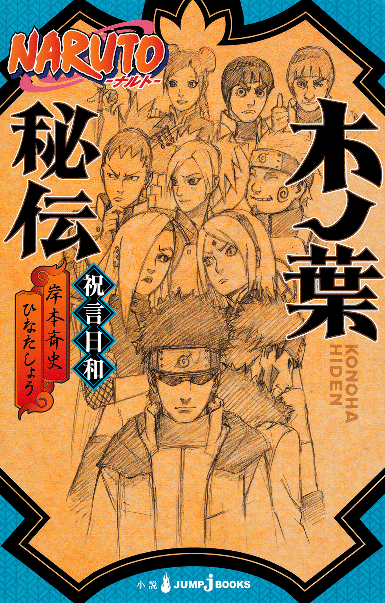
この本は縦書きでレイアウトされています。
また、ご覧になる機種により、表示の差が認められることがあります。
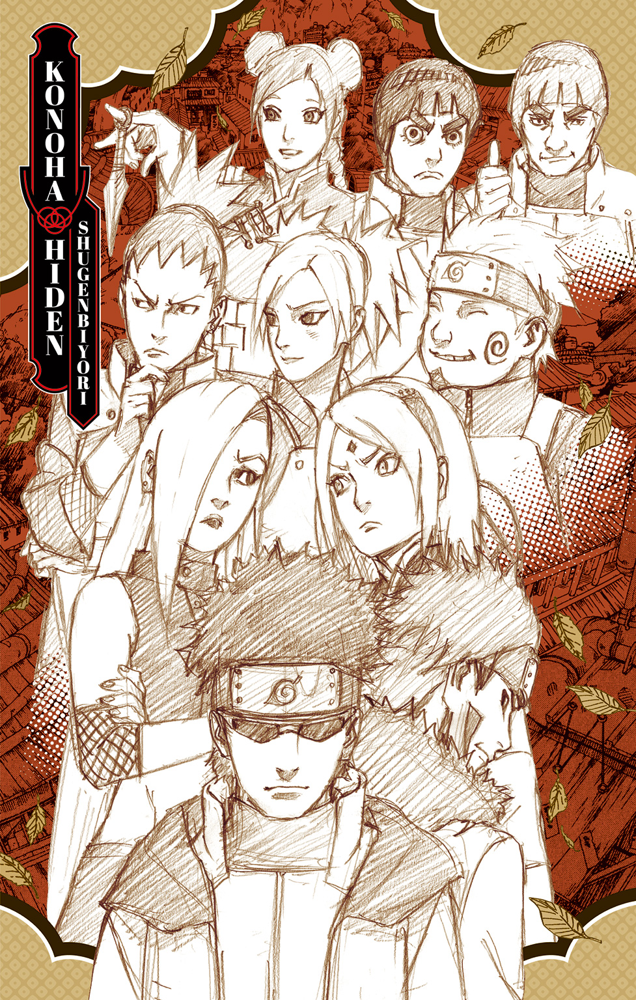
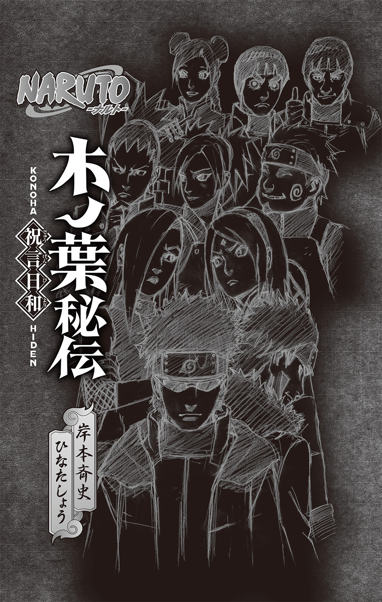
目次
この作品はフィクションです。
実在の人物・団体・事件などにはいっさい関係ありません。
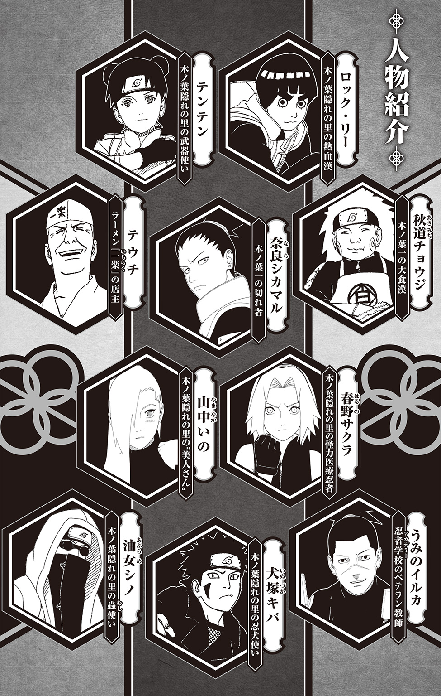
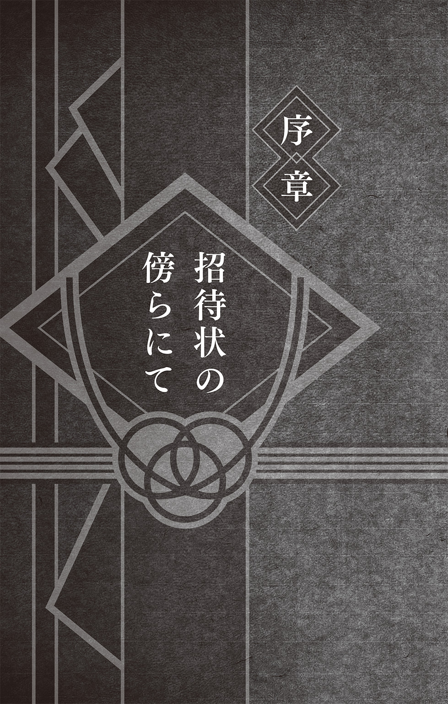
六代目火影・はたけカカシは悩んでいた。
「さて、どうしたものかね......」
つぶやく声が、物音ひとつしない静かな室内に溶けて消える。
カカシは、いつものように火影の執務室にひとりきりで、書類の山と格闘していた。
目の前には、イスに座った自分の目線よりも高く、書類の束が積まれていた。それも、左右に何束もだ。うずたかく積まれた書類の内容は、予算や人事など、主に里の運営に関するものだ。それらすべてに目を通しておくことが、里の長たる火影の務めなのである。
だが、それはべつに、たいした問題ではない。
片っ端から目を通して、ハンコを捺していけばいいだけのことだ。こういったものは、一度集中してさえしまえば、意外と呆気なく、あっという間に終わるものだからだ。
書類の山を処理しきるのが先か、それとも、次々と運ばれてくる書類が自分の視界を埋め尽くすのが先か、どちらが速いか勝負してみようじゃないか――なんて気持ちでハンコを捺していると、自然と楽しくなってくるものなのだ。
カカシは、いつもハンコを捺しながら（あと少しすれば、自分の顔が部屋の入口から見えなくなってしまうなぁ......）などと、のんきなことを考えながら仕事をしていた。
しかし、今日ばかりは、そんなのんきなことは言っていられそうになかった。
机の上に広げた任務計画表に目を落としたまま、カカシの手は止まってしまっていた。
いや、正確には、指先だけは動いていた。
静寂に耐えかねて、あえて指先で机をトントンと叩いていたのだ。そうやってリズムを取りながら、まとまらない思考をなんとかまとめていく。
任務計画表とは、その名のとおり、里の各忍がこの先、どのような任務にどのくらいの期間就いていく予定であるのかを記したものである。カカシには、それをいつも以上に、こと細かくチェックしていかなければならない理由があった。
書類の山に埋もれないようにと、端によけておいた封筒に目をやる。
封筒の中身は、ナルトとヒナタ――ふたりの結婚式の招待状だった。
同封されていた返信用のハガキには、すでに出席に○をつけて、さらにお祝いのメッセージをひと言添えていた。ふつうならばこれで済む話なのだが、ことカカシに限っては、まだ他にやるべきことがあった。
それは、結婚式に呼ばれている他の参加者――特にナルトとヒナタの友人たちが、確実に式に参加できるように、必要とあらば任務の予定を調整すること。
というのも、ナルトとヒナタの友人たちは、今や里の第一線で活躍している忍たちばかりだからだ。一流の忍として、連日連夜、任務をこなす身なのである。
そして、そんな任務には不測の事態がつきものだ。
天候、悪路、負傷......理由はさまざまだが、三日で帰る予定だったものが、けっきょくは里に帰るまでに一週間もかかってしまった......などということもざらにある。
そんなことにならないように、なんとかうまく任務の予定を調整しなければならないのだが、多忙な彼ら彼女らの予定を押さえることは、思いのほか難しい。
それに、任務が終わって帰ってきたその足ですぐに結婚式というわけにもいかない。
できれば、結婚式の前にも一日くらいは非番の日を入れてやりたいと思うのが親心なのだが、世の中というのは、なかなかうまくはいかないもので、カカシは計画表に目を落としたまま、あちらを立てればこちらが立たずといった具合に悩み続けていたのだった。
大人の世界と書類には、『建前』というめんどうなやつが必要なのだ。
ケガをしているわけでも、熱を出して寝こんでいるわけでもない優秀な忍たちに、そう何日も連続して非番を与えるわけにはいかないのだ。
さらには、当然、火影としての責任もある。
しっかりと、万事滞りなく里を運営、維持していかなければならない。そのうえで、みなが笑顔で結婚式当日を迎えることができるように、考えなければならない。
目を閉じ、イスの背もたれに深々とその身をあずけながら、カカシは思考する。
が、なかなか妙案が思いつかない。
各人のスケジュール調整は、困難を極めた。
――いっそのこと、任務という名目でこの日を押さえてしまうか......。
ふと、そんなことを考えてみる。
それならば、その他の調整も、すべてうまくいくのだが......。
――でも、なーんか、そういうの職権濫用っぽいよねぇ......。
カカシは、腕を組んで難しい表情を浮かべた。
実際には、みなの事情を知っているカカシが、ただできる限り無理のないスケジュールを組もうと悪戦苦闘しているだけという話なので、まったく職権濫用でもなんでもないのだが、こういう事務処理は、まだ少し慣れない。
カカシもまた、長年第一線の現場で活躍してきた忍であったからだ。
「ま、それは最終手段ってことで」
ハハハと、かわいた笑いを漏らして、カカシはひとり思考を続けた。
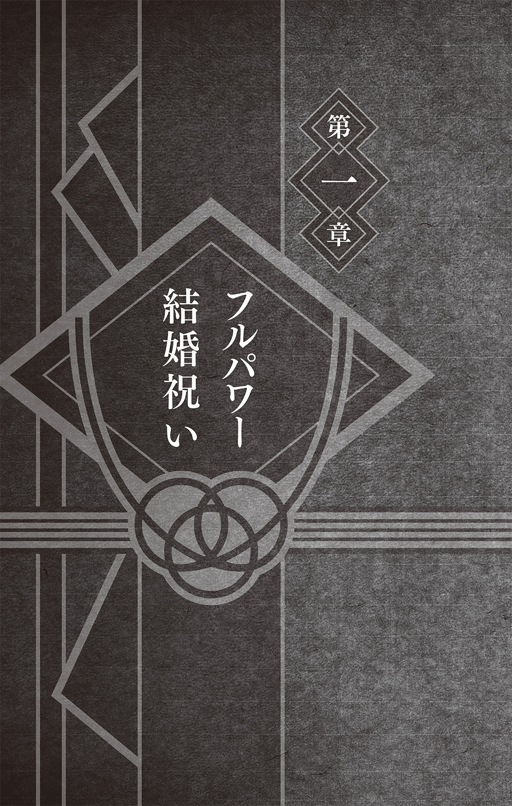
〝忍の隠れ里〟と聞けば、里や忍者に馴染みのない多くの人たちは、山々に囲まれた小さな集落を想像するのではないだろうか。
それはきっと、外界とは隔絶された、いわゆる『陸の孤島』と表現されるべきところに存在していて、おそらくは、常人ならばたどり着くことは疎か、見つけ出すことすら困難な場所にあるに違いないと、そう考えられているのではないだろうか。
しかし、現実は違う。
木ノ葉の名所としても知られる、里の入口にある『あうんの門』。
この門をくぐった先に広がっている活気あふれる巨大な里の様子を見れば、初めてこの場所を訪れる者は、誰もが度肝をぬかれることだろう。
計画的に整備された里内には、住宅地だけでなく学校や病院、さまざまな商店、さらには娯楽施設まで、生活をするうえで必要になるものすべてがそろっているからだ。
ありとあらゆることすべてが里内だけで完結できるようにつくられた――言ってみれば『都市国家』と形容してもいいほどの規模。仮に、生まれてから一度も里から一歩も出なかったとしても、なに不自由なく一生暮らしていけるだけの世界が、そこにはある。
そして、里の周囲は深い森に囲まれていた。
森の中に突如として現れる巨大都市――それが木ノ葉隠れの里なのである。
そんな里に暮らすのは、なにも忍者たちだけではない。
もともとは複数の忍の一族が集まってつくられた里であったが、たくさんの人が定住する場所には、食事をする場所も必要になってくる。さらには日用品などを売るお店も必要になってくる。すると、当然のことながらそこに目をつける者たちが現れる。
忍たちが生活する場所の近くに、彼らを相手に商いをする忍以外の者たち――商人や職人といった人たちが集まってきたのだ。
忍に一族や家族があるように、商人や職人もひとりで里にやって来るとは限らない。彼らにも一族があり家族がある。
商売のために家族そろって里に永住することを決意した者もいれば、元は忍であったが別の職に就いて頭角を現すようになった者もいる。中には、自分たちは忍の一族の出ではないが、子供をどうしても忍者学校に通わせたいと引っ越してきた者もいる。
忍の一家、商人の一家、職人の一家......そうしたさまざまな職種、さまざまな背景をもった多くの人たちがともに暮らしていくうちに、長い年月をかけて今のような巨大な里ができあがったのだ。
――そしてこの巨大な里は、今もなお、ゆっくりと成長を続けている。
その大きさゆえ、里をぐるりと一周するだけでもひと苦労だ。なかなかに骨の折れる距離がある。しかしそんな里内を、先ほどから何周も何周も走っている者がいた。
ロック・リーである。
まだ夜明け前の里内を、死にそうな顔をしながらフラフラと走り続けている。
なぜ彼が、里人、そして任務のない忍たちも寝静まっているこんな時間にひとり走っているのだろうか。べつに秘密の特訓をしているわけではない。というか、走りたくて走っているわけですらない。できることなら、今すぐにでも家に帰って眠りたいくらいなのだが、彼にはそうもいかない理由があった。話は、半日ほど前に遡る。
その日、六代目火影・はたけカカシによって、里内に、ある特別任務が発令された。
それは、うずまきナルト、および日向ヒナタ両名にだけは、決して知らされることのない極秘のものであった。任務の内容はこうだ。
『まもなく開かれるナルトとヒナタの結婚式に出席する者は、祝いの品を持参すること』
なんてことはない、ごくごく当たり前の内容である。
もちろんすでに祝いの品の目星を付けている者や、準備をしている者もいたのだが、ナルトやヒナタの友人たちの多くは、みなまだ若い。結婚式にはあまり出たことがない者や、友人が結婚するのは初めてという者も多かったがために、カカシはあえて任務という名目でこのようなことを言ったのだった。
もともとカカシは、物静かで冷静に見えてかなりユーモアのわかる男である。
この極秘任務も、任務という名を冠したカカシ流の粋な計らいであった。
しかしその言葉を、誰よりも額面どおりに、そして誰よりも熱い心で受け取ってしまった男がいた。言わずもがな、木ノ葉の美しき碧い野獣――ロック・リーである。
「ナルトくんからの熱き友情に報いるためにも、全身全霊をかけて最高の結婚祝いを入手してみせます！」
などと宣言したかと思ったら、軽く引き気味のカカシを残して走り去っていったのだ。
リーにとっても、最初は、修業がてらあれこれと案を出してみようくらいの気持ちであった。元来、じっと座りこんだまま考えごとをするような性格ではない。身体を動かしたほうが良い考えも浮かぶはずだと、そのときのリーはそう考えていた。
しかし――
広い里内を何周しても、これといってピンとくる案が浮かばなかったのだ。
いや、正確に言うと浮かんではいたのだ。
二周目あたりで、ふと『ダンベル』という単語は思い浮かんだ。が、論外だ。さすがに結婚式にダンベルを持っていくやつはいないだろうと、即座に却下していた。
だが、それ以降、走れども走れども、なかなか妙案が思いつかないのだ。他の人とは違う自分らしいなにか......。心のこもった贈り物......。喜んでもらえる最高の品......。
考えれば考えるほど、しっくりとした答えが見つからない。
「ボクとナルトくんとの絆は、こんなものではないはずです......！」
走りながらそうひとりごちて、リーは覚悟を決めた。すなわち――
――思いつくまで走るのをやめない！
そう心に決めたのだ。〝自分ルール〟である。
自分ルールとは、己の肉体と精神を鍛えるために、一度やると決めたことはたとえ明日この世界が滅び去ろうともなにがなんでも貫き通すという男気あふれる特訓法だ。ダンベル以外のナイスな贈り物を思いつくまで、リーは延々と走り続けることにしたのだ。
ちなみにリーは、ただ里の外周をぐるーっとひと回りしていたわけではない。
広い部屋をくまなく雑巾掛けで往復するように――と、表現すればわかりやすいだろうか。里を隅から隅までまんべんなく走りきってようやく一周といった愚直な数え方をしていた。
その際、当然のことながら塀を跳び越え、木から木へと飛び移り、密集している建物の屋根を伝って走ることになるわけなのだが、忍の隠れ里ではこうして忍者が道なき道を走るといった光景は日常的なものなので、里人たちも特に気にすることはない。
なので、断りもなく屋根の上を走っているからといって、家主から苦情が出ることもないのだ。せいぜい「うちの家の上で、やたらと濃い眉毛をした男が朝っぱらから気合いだなんだと叫んでいてうるさい」といった苦情が、月に一度ほどの割合で来るくらいだ。
歴代の火影たちの顔岩に見守られるようにして広がる里内を、リーは文字どおり飛び回りながら、がむしゃらに、縦横無尽に走り続けた。そうして、新たな案が浮かばぬまま、ついには一睡もせずに朝を迎えてしまったのだった。
里の中心部にそびえる切り立った岩山、そこに刻まれた顔岩を朝日が照らしはじめた。
「は......八百......ろくじゅう......よん......」
ゼエゼエと荒い呼吸をくり返しながらつぶやく。もはや歩いたほうが速いのではという速度でそれでも走り続けていたリーであったが、とうとう限界が訪れたようだ。足をもつれさせたかと思ったら、為す術なくそのまま前のめりに倒れこんでしまう。
受け身を取る気力もないまま、バタンと地面に倒れ伏す。うつ伏せ状態のまま、リーはなにがいけなかったのだろうと考えていた。
まず、軽く身体を動かせば頭も冴えてくるはずだと考えた。これが間違っていたのだろうか。いいや、そんなはずはない。頭の中で、すぐさまリーは否定する。
ならば、逆転の発想が必要だと考えて、途中から逆立ちをしたのがまずかったのだろうか。いいや、時として大胆に発想を転換させることは必要だ。それに逆立ちをして里を一周するほうが、ふつうに走るよりもさらに修業になる。これも考え方としては間違ってはいない。ならば、常識を疑えとばかりに後ろ向きで走りはじめたのがいけなかったのだろうか。いいや、あれはあれでいい修業になった。なにも間違ってなどいない。
けれども、ならばどうして、なぜなにも思いつかないのか......。
目の前の地面を呆然と見つめる。先ほどまで火照っていた身体が、澄んだ朝の空気によって冷まされていく。汗が冷えて、リーは思わずぶるりと身震いした。しかし、満身創痍状態のリーには、もはや立ち上がる気力すらなかった。
熱き友情だの、心のこもった結婚祝いだのと言っておきながら、気の利いた贈り物のひとつすら思いつくことができないなんて、自分はなぜこんなにも無力なのか......。
ぐっと目を閉じ、リーは己の不甲斐なさを嚙みしめる。しかし、無力だ、不甲斐ない、で終わるわけにはいかない。この命を賭してでも祝うと決めた以上、こんなところで立ち止まっているわけにはいかないのだ。疲労困憊だったリーの瞳に、再び覚悟の炎が宿った。
すると、ここでリーは、あることに気がつく。先ほどから倒れ伏した自分を見下ろして立っていた何者かの存在に。
いつの間にそこにいたのだろうか。リーの目の前に、見慣れた脚絆があった。人の足である。人が立っていたことに、今の今までまるで気がつかなかったことに驚きながらも、リーはゆっくりと身を起こしてその男を見上げた。
「ネジ......」
そうして、静かにその名をつぶやいた。
夢か幻か、そこには、亡き友・日向ネジの姿があった。
「倒れるまで走り続けるとは、相変わらずだな。リー」
以前と変わらぬ凜とした眼差しで見つめられ、リーは思わず言葉を失った。もう一度会えるとしたら、言いたいことは山ほどあったはずだった。だが、いざそうなってしまうと情けないものでなにも言えない。いや、なにも言わずとも、ネジは理解してくれている。すべてを見通すようなネジの瞳を見ていると、なぜだかそう思うのだ。
「お前に、どうしてもひとつだけ言っておきたいことがあってな......」
そう言うと、しゃがみこんだネジが優しくリーの肩に手を置いた。ネジの手は温かく、不甲斐ない自分を励ましてくれているかのように感じられた。きっとネジは、悩んでばかりいる自分を心配して現れたのだと、リーは直感的にそう思った。
「ネジ......ボクは......」
「わかっている。みなまで言うな」
艶やかな長い黒髪を揺らして、ネジが微笑んだ。そして――
「リー、よく覚えておけ。体力よりも......腕力......。それと日向は......」
言い終わるか終わらぬかのうちに、朝靄に包まれてネジの姿が消えていく。
「......えっ？」
あたりの木々がざわめく。風が、朝靄を吹き払う。
「えっ、ちょっ、ネジ......？ ネジ!?」
呆然として周囲を見回すリーであったが、すでにネジの姿はない。困惑するリーの声に応えたのは朝の静寂だけだった。
「ええっ!? な、悩んでいるボクに結婚祝いの助言的なものを......。そのために出てきてくれたんじゃないんですかネジぃぃぃっ!?」
「ネジぃぃぃっ!?」と叫びながら、リーは、がばっとその身を起こした。
時刻は、早朝。すでに多くの人が一日のはじまりを迎え活動をはじめている時間帯。
リーは、ぼんやりとしたまま、今の状況を確認する。どうやら、いつの間にか道のど真ん中で寝てしまっていたらしい。里のはずれで人通りがなかったのが救いであった。
カラカラに渇いた喉を唾液で潤し、つぶやく。
「夢......でしたか......」
短く、儚い夢であった。リーは、その場に座りこんだまま、うつむいた。
ネジが死んで、すでに数年もの時が経とうとしていた。
しかしリーは、今でも時おりネジの夢をみる。それも、決まってつらい任務の合間や困難に直面しているときに限ってだ。
ふだんは、いくら望んでもネジは夢に現れてくれないというのに。
夢の内容は、主にネジとふたりきりで修業をしていたり、なぜかネジとふたりだけで過酷な任務をしていたりといったものなのだが、夢の中で、リー自身がネジに向かってなにか積極的に話しかけるということは、どういうわけだかあまりないのだ。
修業法、敵と戦うための連携、任務での作戦など、とにかくありとあらゆることをネジが冷静に語り、そのとなりでリーはそれを黙って聞いているという夢が多かった。
そんな夢をみて目覚めた日はいつも、その内容を思い出しながら、「そこはもっとダイナミックに正面突破でいきましょう！」だとか「ボクが前に出ますから、周囲の警戒をお願いしますよネジ！」だとか、夢の中では言えなかったセリフを反芻してみるのだ。
自分がそう言ったら、ネジはどんな顔をするのだろう。どんな言葉を返してくれるのだろう。最近、だんだんと想像できなくなってきている。
リーは、そのことをひどく気にしていた。
そんな、沈みこんだリーの背中に、突然力強い声が届いた。
「リーよ、朝っぱらからナイス青春だ！」
思わず振り返ると、親指をぐっと立て、白い歯を見せて笑う男がそこにいた。
リーの魂の師――マイト・ガイである。
しかし――
「ガ、ガイ先生......」
と、リーは思わず言葉を失ってしまう。車イスでの生活を余儀なくされているガイが、なぜか近くの物置小屋の屋根に車イスに座ったまま乗っていたからだ。
第四次忍界大戦の際、うちはマダラとの戦いで、ガイは命を賭した禁術・八門遁甲の陣を発動させた。ナルトのおかげでなんとか一命は取り留めたものの、代わりに右足に再起不能の傷を負っていた。以降、ガイは車イスでの生活を送っているのだが、右足のギプスに『青春』の文字を刻み、以前と変わらぬ熱き心でリーを励まし続けてくれていた。
そんなガイが、どうやって登ったのか、屋根の上にいるのだから驚きだ。
するといきなり――
「とうっ！」
気合いの入った掛け声とともに、ガイが屋根から飛び降りた。車イスが、がしゃんと音を立てる。車イスごと器用に着地したガイに、リーは慌てて駆け寄った。
「あぶないじゃないですかガイ先生！ なんでこんなことを......！」
「車イスでは飛べないと、世の中の多くの人はそう思うだろう。だからオレは、そんなことはないんだということを、この身で証明しようと思ってな」
すさまじいことをさらりと言ってのける。
ガイの卓越した身体能力なくしてはできないことだ。
「里のみんなが――カカシも、エビスもゲンマも、未だにオレのことをひとりの忍として扱ってくれる。それが嬉しくてな。オレにもまだやれることがあるはずだ。だから――」
そして、ナイスガイポーズとともにガイが宣言した。
「この先も不可能を可能にし続ける姿をお前たちに見せる！ それがオレの青春だ！」
ガイの言葉は魂の奥底に響く。その言葉のひとつひとつが、つらいとき、苦しいとき、心が折れてしまいそうになったとき、いつもリーを救ってくれた。今もまた、リーはガイの言葉に勇気をもらったのだ。
いつの日にか、ガイのような立派な男になりたい。自分のように迷い悩んでいる者を熱き言葉で励ませるような、そんな男になりたい。
それがリーの、起きているときにみる夢であった。
「ところで、ガイ先生はなぜここに？」
ふと疑問に思ったことを訊いてみると、ガイはなにとはなしに答えた。
「もちろん朝の修業だ。今日は、広い部屋を雑巾掛けするかのように里中をくまなく走って回ろうと考えていてな。どうだリーよ、お前もいっしょにやるか？」
「それはもうやりました」
「たいしたやつだ。だが、悩み事はまだ解決していないんじゃあないか？」
鋭い質問に、リーは思わず目を見開いた。
「な、なぜそれを!?」
「お前の姿を見れば、なにかに悩んで一晩中修業していたことくらいわかるさ。何年お前といっしょに青春していると思っているんだ。だから最初に言ったろう。『朝っぱらからナイス青春だ！』と」
そう言われて、ここではじめて、リーは自分がひどく泥だらけでぼろぼろな格好をしていたことに気がついた。たぶん、あまりの疲労に途中でなにを思ったのか、里中を転がりながら一周などとやりはじめたときの汚れだろう。
「そしてこれはおそらくなんだが、結婚祝いの件で悩んでいるんじゃないか？」
先ほどよりもさらに鋭いガイの言葉に、リーは狼狽した。
「ガイ先生はボクの心が読めるんですかっ!?」
「いや、オレも結婚式に呼ばれているんだ......」
ガイもまた、悩んでいた。
ありきたりでないものがいい。
だが、奇を衒いすぎるのも考えものだ。
それでいて印象に残り、かつ、友情・努力・勝利を兼ね備えた結婚祝いはないものか。
リーは、ガイとともに頭を悩ませていた。
自分らしく、熱き青春を感じさせる贈り物とはなんなのか。
そんなものが、はたしてこの世の中に存在するのだろうか。
もしあるとするならば、それはきっと、オシャレな全身タイツを着ているに違いない。
熱き青春といったら汗と涙だろう。汗と涙は贈り物になるのか否か。
そもそも根性だけで人は生きていけるのだろうか。
ちょっと待てよ。カレーは中辛がいいのかそれとも激辛がいいのかどっちなのか。
ふたりの議論は白熱した。
「やはり今のボクの胃はカレーピラフの気分――」
「待てリーよ」
手を広げてガイがリーを制する。
「話が複雑になりすぎた。こういうときは、初心に戻れだ。だからオレたちも、今一度、基本というやつに立ち返ってみようじゃあないか」
「基本......ですか......？」
「そうだ。そもそも、結婚式とは一体なんなんだ？」
なにやら、哲学的様相を呈してきた。
リーが答えを見つけられぬ間に、ガイが新たな疑問を口にする。
「では、結婚式に絶対に必要なものとはなんだ？」
リーは、じっと前を見つめて考えた。結婚式とはなにか。結婚式に必要なもの......。
結婚式とは、愛するふたりが夫婦となる式のこと。ならばその式に必要なものは――
「『愛』......なのではないでしょうか......？」
リーは、頰を赤らめながらも真っ直ぐガイを見つめて答えた。
「詩人だな。だがなリーよ、オレは『新郎』と『新婦』なんじゃないかと思っている」
ガイのひと言を聞いて、リーの身体に稲妻が走った。全身に、雷遁系の術を受けたかのような衝撃である。思わず「ああっ......！」と声を漏らしてしまったくらいだ。
「た、確かに......！ 新郎と新婦なしでは、結婚式は行えないです......！」
「だろう？ 新郎と新婦なしの結婚式なんぞ、もはや結婚式に非ず、だ。それではただの『式』になってしまう。文字どおり、なんの式なのかもよくわからないものにだ！」
盲点であった。
ガイは、不器用な直情型に見えて、意外と思慮深い男である。上辺だけではない物事の本質を見抜く力を持っていた。リーにとって、そんなガイの姿はいつだって模範となるべきものであり、憧れでもあった。
「では、新郎と新婦の立場になって、なにをもらったら嬉しいのだろうかと考えてみればいいというわけですね？」
「そのとおりだ。よしっ、ならばオレが新郎をやる！ リー、お前は新婦をやれ！」
「はいっ、ガイ先生！」
「贈る側として考えるのではなく、贈られる側として考えるんだ......！」
ふたりは互いに手を取り合い、真剣な眼差しで、じっと見つめ合った。
おかっぱ頭でやたらと太く濃い眉をしたふたりの男が、朝っぱらから無言のまま見つめ合うという光景がそこにはあった。
リーは、必死に考え続けていた。新婦の立場になって考え続けていた。もしもボクが新婦だったら......。花嫁衣装に身を包み、結婚する......。それから――
結婚、出産、家事、育児......。そのような単語が次々とリーの頭の中を駆け巡った。
赤ちゃんを抱っこしたまま買い物をする自分。
赤ちゃんをあやしながら部屋の掃除をする自分。
赤ちゃんをおんぶしながら第七驚門......開！ をする自分。
赤ちゃんは、意外と重い。
支え、育てあげるには、相当な力（物理的かつ経済的な）が必要だろう。
瞬間、リーの脳内に赤ちゃんを抱くヒナタと、そばでそれを見守るナルトという映像が浮かびあがってきた。よくよく思い返してみると、リーは今までナルトに贈り物をするということばかりを考えていたことに気づいた。新婦の気持ちになってみて、改めてそれに気づいたのだ。結婚は、ひとりでするものではない。
だとすると、やがて母となるであろう人に贈るべきものは――
リー、よく覚えておけ。体力よりも......腕力......。
夢でみた、ネジの言葉を思い出す。ええ、わかっていますよネジ。ボクじゃなくて、ヒナタさんの心配をしていたんですね。リーは、ひとり頷いた。そして――
「見えました......！」
静かに、リーが告げる。
「家庭を守るには、腕力が必要です......。それも、最強クラスの！」
ガイも静かに告げる。
「オレは今、脳内で壊れた我が家の修繕作業を行っていた。さらには害虫駆除、トイレ掃除、買い物の荷物持ちをやっていた。とても......とても腕が、鍛えられた......。だとすると、お互い導き出される答えはひとつだ。オレたちが真に贈るべきものは――」
ガイは、互いの健闘を称えるかのように微笑んだ。
「――ダンベル、だ」
気がつくと、リーの頰をひとすじの涙が伝っていた。
「ボクも......ボクもずっと......二周目くらいから、そう思って......いました......っ！」
抑えようと思っても、涙が止めどなくあふれてくる。
「ガイ先生！ ガイせんせええええええええっ!!」
涙と鼻水で顔をぐしゃぐしゃにしながら、リーはガイに抱きついた。嬉しかったのだ。自分の考えが間違っていなかったことをガイに認めてもらえたことが、ただ純粋に。
そして、ガイもまた泣いていた。涙を流しながら、強く熱く、リーを受け止める。
「リー！ お前は右手のダンベルを贈れ！ オレは左手だあああああ！」
天に向かって、吼えるように叫ぶガイ。
「うおおおおっ、オレは左手のを贈るぞおおおおお!!」
しばしの間、ふたりは身を寄せ合っておいおいと泣き続けた。
ガイのおかげでようやく自分らしい結婚祝いを見つけたリーは、晴れやかな気持ちでダンベルを握りしめていた。あのあと、すぐさまダンベルを買いに走ったのだ。店の店主も、朝一番でダンベルがふたつも売れてさぞ驚いたことだろう。
――見ていてくださいネジ。祝ってみせますよ。このダンベルで......！
力強い瞳で空を見上げて、笑みを浮かべる。
「リーよ、これで結婚式の準備は万全だな！」
「はいっ！ この手にずしりとくる重み......最高の贈り物になりそうです！」
「ようしっ、それじゃあダンベルを持ったまま競走だ！ うぉりゃあああああ！」
言うや否や、ガイが、車イスのタイヤを勢いよく回転させた。砂けむりをあげながら風のように走り去っていくその後ろ姿を、リーは慌てて追いかける。
「待ってくださいガイ先生っ!!」
木ノ葉隠れの里は、今日も青春日和になりそうだった。
ちなみにその後――
カカシのもとに「うちの家の裏で、やたらと濃い眉をした男ふたりが朝っぱらから異常なテンションで泣き叫んでいてうるさい」といった苦情が、数件ほど寄せられたという。
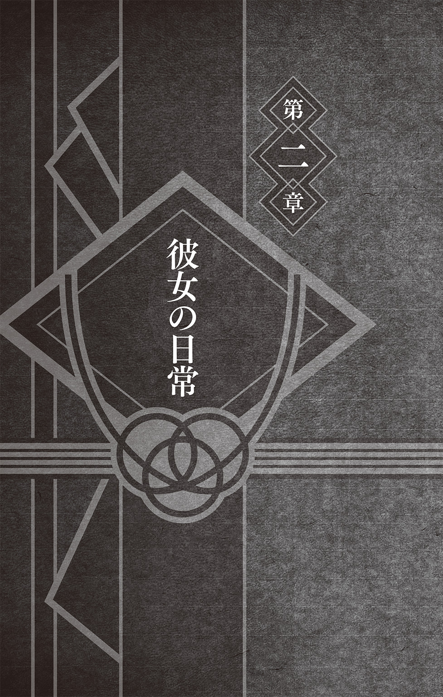
カッ！ カッ！ カッ！
小気味よい音があたりに響く。いつもの演習場。いつもの的。いつもの練習方法。
だが、そこに立つテンテンの気持ちだけは、いつもと少し違っていた。
「結婚祝いかあ......」
つぶやきながら再びクナイを、投げる。カッ！ と音を立てて、用意した的のど真ん中に見事命中する。しかし、忍具の扱いに長けたテンテンにとっては、立ち止まったまま、しかも動きもしない的の任意の場所にクナイを命中させることくらい朝飯前であった。
そして実際、テンテンは朝食前にこの練習を行っていた。
早朝、演習場で手裏剣やクナイの練習をして身体を温めてから朝食を摂るというのが、任務などがない日のテンテンの過ごし方であった。朝食は、このまま演習場で食べてしまうことが多い。近くの売店で蒸かしたての肉饅頭を買ってきて、お茶といっしょに軽く済ませるというのがいつものお決まりのパターンだった。
「どうしよう......」
再びつぶやいて、腕を振り下ろす。カカカッ！ と今度は先ほど真ん中に命中したクナイを囲うようにして手裏剣が刺さった。これもまた、テンテンにとっては目を閉じてでも容易にやってのけることができるほど簡単な技であった。
いや、テンテンにとっては――どころの話ではない。
こうしてテンテンが最初に行う練習は、忍と名乗る者ならば誰もがふつうにできることばかりである。それどころか、忍者学校生でもやがてできるようになるものであったし、名門の忍の家に生まれ育った者ならば、親や兄弟などから教わって忍者学校に入る前に身につけていてもおかしくないような技術である。
要するに、ものすごく基本的なものであった。
では、なぜテンテンがそんな基本的な技をこうして今でも練習しているのかといえば、それはひとえに師であるガイの教えによるところが大きい。
『基礎をおろそかにするやつに明日は来ない！』
初めてガイと修業したときに言われた言葉だ。
これにはまだ幼かったテンテンもなるほどと感心した。ちなみに、となりにいたリーは感動のあまりむせび泣いていた。これにはさすがのテンテンもドン引きした。
しかし、ガイの教えどおり、テンテンは基礎訓練を今でもしっかりと続けていた。
もともと、テンテンは多彩な術を操るような器用な忍ではなかった。
昔から時空間忍術の才能があるとは言われていたが、反面、チャクラのコントロールが他の忍よりも下手だと言われたこともあった。華麗な忍術や複雑な幻術を次々と繰り出すような凄腕のくノ一にはどうやらなれそうもないと、早い段階で気づいてしまったのだ。
しかし、気づいてしまったからといって、強くてカッコイイくノ一になるのを早々に諦めてしまうようなヤワな精神は持ち合わせていなかった。
テンテンの場合、幼い頃より自分の向き不向き、そして不器用さに気づいてしまったことは、むしろ幸せなことであったとさえいえる。限られた条件の中で、自分になにができるのかを必死に考え続けることができたからだ。おかげで、答えを見出すのと同時にそれのみをひたすら追求していくことができた。
苦心の末、テンテンが見出した答え――それは忍具であった。
手裏剣やクナイなど、忍であれば誰もが持っているありきたりな装備品である。だが、その扱いのみに特化した――言ってみれば専門職と呼ばれるような忍はまずいない。
テンテンはそこに着目した。ありふれた忍具を誰よりもうまく使いこなすのはもちろんのこと、他の忍たちでは滅多に扱わないような忍具、ふつうの忍ではまずお目にかかったことがないであろう珍しい忍具、そうした多種多様な形をしたありとあらゆる武器を操って戦うという独自の道を模索しはじめたのだ。
テンテンがそう考えるに至ったのは、やはり師であるガイと、同じ班になったリーやネジの影響によるところも大きい。ガイは、里一番の体術の使い手として名を馳せている男であったし、リーは、そんなガイに憧れてひたむきに身体を鍛え続けていた。そして幼い頃より天才と呼ばれていたネジも、木ノ葉の名門・日向一族に伝わる柔拳を使う。
彼らとともに過ごし、修業し、ときには組み手を行っているテンテンもまた、相当な体術を身につけていた。そもそも、もとより忍術や幻術よりも体術の素養があったのだ。
ガイの熱血指導によりメキメキと実力を身につけていったのはいいのだが、それはいっしょに指導を受け修業をしているリーやネジにとっても同じことで、しだいにテンテンは、体力や腕力ではどうしてもふたりに及ばないという現実に直面するようになっていった。
里の中でもとりわけ体術に関して全体的なレベルの高いガイ班なので、その修業についていけているという時点で、また、リーやネジの訓練相手をこなせているという時点で、テンテンの体術のレベルも里の他の忍たちとくらべてかなり優秀なものではあった。
だが、その真っ只中に身を置いているテンテンとしては、やはり無意識のうちにリーやネジ、果てはガイと自分とをくらべてしまっていたのだ。
――みんなの中で、自分が一番できていない。
そんな思いを、彼女は常に抱えながら修業していた。
しかし同時に、そんな思いが、彼女に独自の道を歩ませた。
ガイたちは拳で岩を割る。自分は拳だけではそこまでの次元にたどり着けない。
だからテンテンは、その拳にクナイを握りしめたのだ。
リーやネジに並び立つために。彼らとともに歩んでいけるように。
やがてテンテンは、幼い頃よりあった時空間忍術の才能にも磨きをかけ、口寄せによって巻物から無数の忍具を自由自在に取り出して戦えるようになった。
その頃になると、さまざまな武器の知識が増えていったのも手伝って、テンテンは忍具の持つ魅力にドップリと嵌っていた。思い返せば、もともと忍具の持つ無駄のない形――機能美とでも言うべきものに惹かれていた面もあった。
忍者学校時代、クナイは地味で可愛くないと言っていた級友がいたが、彼女たちはなにもわかっていない。地味で可愛くないからこそこんなにも魅力的なのだ。
当時は思っただけで口にはしなかったが、一流の忍具使いを目指して修業をしている今なら言える。誰よりも忍具のことを考え続けてきた今だからこそ言える。
武骨な刃の中にも、美しさはある。
忍術にも幻術にも、そして体術にも負けない美しさが、そこにはある、と。
言えるといっても、もちろん、テンテンはあえて人にそんなことを言ったりはしない。
それは、言葉ではなく行動で――たとえばクナイで狙った的を見事射抜くことによって語るべきものであると思っているからだ。逆に言えば、語れるほどの腕にならなければ意味がない。だから、テンテンはただの一日も基礎訓練を欠かしたことはなかった。毎日黙々と武器を磨き、投げ、今日もまた的に当て続けているのだ。リーとネジ――その努力と才能を誰よりも間近で見てきたテンテンだからこそたどり着いた練習法であった。ふたりとも、どんなに強くなっても基礎をおろそかにすることだけは決してしなかったからだ。
こうして――
誰でもできる当たり前のことを、ともすれば、たいして練習などしなくとも少し勘の良い者なら器用にやってのけてしまうようなことを、それでもテンテンは、何千、何万回とくり返してきた。この身体に、腕に、そして指先に、感覚を染みこませていく。
実戦では、的は止まってくれない。自分もまた、止まれない。
止まるときは、死ぬときだと、そう己に言い聞かせながら、それでもまずは、止まっている的の中心にしっかりとクナイを当てる練習をする。
やがて、何千、何万回ものくり返しの果て――
複雑に動いている的すらも、瞬間、あたかも止まっているかのように感じられるようになってくる。手裏剣が、クナイが、吸いこまれるかのように命中するようになってくる。
誰にでもできる練習を、毎日休みなく延々とくり返すことは、決して誰にでもできることではない。それをやり続けた者にしか見えない世界が、確かにあるのだ。
そうした地道な修業の成果もあってか、仲間たちの間でも、忍具の扱いに長けている者といえばテンテンだろうと、真っ先に自分の名前が出てくるくらいの腕前にはなった。
これは、当然のことながらテンテンにとってたいへん嬉しいことであり、同時に誇りでもあったのだが、今日ばかりはそのことでいささか悩んでしまうこととなった。
「あー、もう、なにも思いつかない！」
声とともに、ズガガガガッ！ と一際大きな音が静かな演習場に響きわたる。すべての的が、手裏剣やクナイだらけになっていた。無論、ひとつたりとも失敗はない。
当初、テンテンは結婚祝いと聞いて、すぐさま「よーしっ、特注のクナイにしよう！」などと考えていた。ひとり納得し、満足して、これでこの話は終わったはずだった。
しかしその夜――
眠りに就こうと横になったとき、暗くした部屋の天井を見上げながらふと「クナイ以外だとなにがいいかなー」なんてぼんやりと考えてしまったのがいけなかった。
自分でもびっくりするほどなにも思いつかなかったのだ。テンテンは、ほとんど眠ることができぬまま悶々としながら夜を過ごすはめになった。おかげで寝不足である。あくびを嚙み殺しながら、的に刺さった手裏剣やクナイの回収に向かう。
テンテンがよく修業に使う演習場には、地面にたくさんの杭が刺さっていた。人の背ほどの高さのある太い杭である。体術の打ちこみ稽古などに使う忍もいるが、テンテンはこの杭に持参した的を装着して練習していた。
その的から、ぐっと力を込めては一本一本クナイを引き抜いていく。しばし黙ってその作業をくり返しながらも、テンテンは頭を悩ませていた。その悩みは、特注クナイがダメなら他の忍具にすればいいだとか、もはやそういう次元の話ではなかった。
忍具といえばテンテンと言われるようになったことは、素直にありがたいことである。そのテンテンがテンテンらしくやはり忍具を贈り物にする。べつにおかしくはない。
けどちょっと待った！ それだとあまりにもふつうすぎじゃない？
昨夜から、なぜだかそんなことばかり考えてしまうのだ。心に引っかかるものがある。なにが引っかかるのか。その答えに、実はもう気づいていた。
「結婚か......いいなあ......」
杭にもたれかかり、手持ち無沙汰にクナイを弄びながら、テンテンはため息をついた。
心に引っかかるのはこのことだ。ナルトとヒナタが結婚する。それはめでたいことだ。けれども自分は彼氏のひとりもいないまま、やれ手裏剣だクナイだ空飛ぶギロチンだなどとはしゃいで、まるで色気のない生活を送っている。結婚話を身近に聞いて、本当にこれでいいのだろうかという思いが、突如として頭をもたげてきてしまったのだ。
朝から晩まで忍具忍具忍具忍具......。乙女として、本当にこれでいいのだろうか。
ちなみに、ここ最近の一目惚れは、なんといってもやはり空飛ぶギロチン。この名前を見ただけで好きになってしまった。もうこれは買うしかないでしょ。
それから、最近お気に入りのファッションは、なんといってもやはり手首に着けるアクセサリー。引っ張ると口寄せ用の巻物が展開できて、瞬時に忍具を取り出すことができる優れもの。これは便利。いつでもどこでも暗器でエンジョイできる。流行の最先端だ。
けど、本当にこれでいいのだろうか？
もはやお店を開けそうなくらいいろいろと珍しい武器を集めてしまったが、それでも気がつくと新しいクナイを買ってしまう。やはりクナイは基本だなとテンテンは強く思う。
日頃から珍しい忍具ばかり見ていると、やっぱりクナイだなあという気持ちになったりするものだ。まあ、けっきょくは両方好きで両方集めてしまうのだけど。
だけど、そんなのべつにいいじゃない。クナイは何本あっても困るものじゃないし。
あ、でも、これは珍しい彫刻が施されているから任務に持っていくのはやめよう。芸術品だ。家に飾るべきだよね。けどそれなら任務用のももう少し買っておかなくちゃ。すぐになくなると困るから予備も用意しないとね。そうだ、せっかく買い物するんだったら他にもまとめて買っておいたほうが手間にならなくていいかなー。
なんて言っているうちに気がついたら家の壁一面クナイだらけになった。
それでもテンテンは満足げだ。よーし、こうなったら明日の任務で投げまくろうとか、そういうことを考えているのである。
本当に、これで、いいのだろうか......？
――いや、よくない。
このままだと、たとえ特注クナイをプレゼントしたとしてもみんなから――
「またクナイか......」
「でもテンテンだし......」
「テンテンといえばクナイだし......」
などと思われてしまう。心外である。あたしはクナイだけの女じゃない。空飛ぶギロチンだってあるんだから。違う。そういうことでもない。
テンテンはクナイの手入れをしながら悩み続けた。
特注のクナイ以外で結婚祝いにふさわしい思い出に残る品はなにか、と。
「クナイだけじゃなかったのか......！」
「さすがテンテン！」
「テンテンといえば美意識の塊だよな！」
などとみんなから言われるような贈り物はなんだろう。いっそのこと、これからどこかオシャレな雑貨でも置いてあるような店にでも行ってみようか。
「う〜ん、でも金欠気味だし......」
空飛ぶギロチンは高かった。でも一点ものだ。そんなもの、買うに決まっている。
『迷ったら買う』というのが武器を収集する際のテンテンならではのルールであった。
「えっと......ということはつまり......」
目を閉じて、脳内で情報を整理してみる。現実的な問題として、まず予算というものがある。贈り物をするにもそこは踏まえなければならない。次に、特注クナイではないなにかということで、まず特注クナイの特徴を考えてみるべきか。その逆を連想すれば、いい考えが思いつくかもしれない。悩みながらも、テンテンはそう結論づける。
だとしたら、贈るべき結婚祝いは――
テンテンは、静かに目を開けた。
「限られた予算で手に入る乙女心を感じさせ人を殺せないもの......！」
これだ！
「なにこれ意味わかんない！」
ダメだ！ テンテンは頭を抱えた。自分でももうなにを言っているのかよくわからなくなってきた。気がつけば手にしていたクナイは無意識のうちに手入れが終わり新品同様に鈍く輝いているしもうダメだ。しょせん自分は忍具しか取り柄のない女なんだと思い知り絶望する。このままだとまずい......。なにか、もっと他に、なにかないのだろうか......。
と、ここで――
「テンテーン！ テンテーン！」
遠くから、自分の名前を呼ぶ声が聞こえた。声が、だんだんと近づいてくる。声の主は顔を見なくともわかる。こんな朝っぱらから大声を出して走ってくるのはリーくらいだ。
しかし、演習場にやって来たリーの姿を見て、テンテンは驚きのあまり目を見開いた。
「テンテーン！ 結婚祝いは、もう決めましたか？」
ブンブンと手を振りながら笑顔で駆けてくるリーに、テンテンは思わず声をあげた。
「リー!? 朝っぱらからどうしてそんなことに!?」
やって来たリーの格好は、女装をしているのだろうか。エプロンまで着けて、まるで買い物帰りのおばちゃんのようだった。その顔は、化粧のつもりなのだろうか。全体がおしろいで不自然なほど真っ白なうえ、雑に塗られた赤い口紅のせいでやたらと口が大きく見える。おまけに眉までこんなにも濃く太い。いや、よく見たら眉は素のままだ。
ともかく、突如としてまったく理解ができない見た目となったリーが現れたのだ。
これでは驚くなというほうが無理というもの。
もしもこの姿をテンテンではなく知らない人が見たら、悲鳴をあげるのではないだろうか。しかもなぜか片手にはダンベルをしっかりと握りしめている。本当に理解できない。その姿は、もはや意味がわからなさすぎて怖いという次元に達していた。
「な、なんなのっ!? なんでそんな――」
動揺を隠しきれないテンテンに、リーが興奮気味に答えた。
「ボクが新婦で、ガイ先生が新郎をやっていたんです！ そのあと、ボクの服が汚れていたので、ガイ先生の教えに従って改めて主婦の気持ちになって考えてみようとこの格好に着替えたんです！ そうしたら、やっぱりダンベルだなって再確認できたんです！」
「どうしよう！ 説明を聞いてもさっぱり理解できないんだけど！」
というか、より意味不明になってしまった。
なんでこの格好？ なんでダンベル？ 不気味だ。
リーが、嬉々としながらダンベルを持ち上げてみせた。
「ボクとガイ先生は、結婚祝いにこれを贈ります！ テンテンはなににするんですか？」
そのセリフを聞いた瞬間、テンテンのなかでなにかが弾けた。
理解できないけど、なんか理解できた。どうしてそうなったのかはわからない。しかしリーとガイ、ふたりは結婚式にダンベルを持っていくつもりらしい。
途端に、今まで抱えていたすべての悩みが矮小なものに思えてきた。頭の中が、すーっと冴えわたり目の前にあった霧が晴れたかのような感覚になる。
「テンテンとかぶってしまったらどうしようかと思いまして訊きに来たんです」
リーが、口紅まみれの顔で、にやっと笑みを浮かべながらそんなことを言う。
「いや、かぶらないでしょふつう......」
真顔でそう答える。
「そうでしたか。それはよかったです！ それでは、ボクは修業を続けますね！」
「その格好でっ!?」
真顔を保つことができない。それがガイやリーのおそろしいところである。
来たときと同様にものすごい勢いで走り去っていくリー。
その背中を見送りながら、テンテンは「う〜んっ」と思いっきり伸びをした。
そして――
「特注クナイでいっか！」
迷いはすでになかった。テンテンは、清々しい気分で声をあげた。ダンベルにくらべて、自分はなんてまともなんだろう。よかった。あたしはまだ、大丈夫。
「さあ、練習、練習♪」
カッ！ カッ！ カッ！
再び、小気味よい音があたりに響く。
いつもの演習場。いつもの的。いつもの練習方法。
そしていつもと、同じ気持ち。
これが、テンテンの日常である。
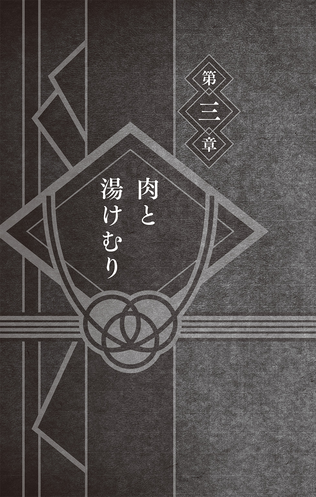
ゆらりと、炎がゆれた。
火を見つめていると、人はどうしてこんなにも落ち着くのか。
奈良シカマルはふと考える。
おそらくは原始――まだ人が文明を持たずに暮らしていた頃から、ゆらめく炎は常に人とともにあった。炎は、ときに夜の闇を照らし、ときに人々を寒さや外敵から守り、また、仲間の居場所や自分の帰るべきところとしての目印にもなった。
古来より脈々と紡がれてきたそうした人の営みが、自分の身体にも受け継がれているのだろう。だから、暖かな炎を前にすると、こんなにもほっとした気持ちになるのだ。
そしてそれは、どこか木ノ葉の掲げる『火の意志』に通ずるものがある。
親から子へ。子から孫へ。師から弟子へ。友から友へ。人から人へ。
想いをつなげ、伝えていく。
はじめは小さな、それこそ吹けば消えてしまうような灯火だったかもしれない。
けれども、そんな誰かの灯火は絶えることなく今でも受け継がれ息づいている。
だからこそ、人はこうして炎を前にして安堵できている。どんなに時が流れたとしても、全身の細胞ひとつひとつに刻まれた太古の記憶がそうさせるのだ。
そして人は、そんな火を使い食物を調理し、火を囲みながらそれを食してきた。
そこには、すでに団欒という光景があったはずだ。
今も昔も本質的にはなにも変わらない光景だ。現に今も、シカマルは親友の秋道チョウジとふたりで、炎を前にしながら食事をしていた。
喧騒。笑い声。そして食器がたてる音。そこに、肉を焼く音が重なった。
焼肉Ｑ。
シカマルたち行きつけの店である。
焼肉屋というと、昼はそれほどでもなく夜に混雑するという印象があるが、この店は昼も夜も賑わっていた。安く、おまけに肉の質も良いことから人気があるのだ。
なので、今まさに昼時という店内は、まるで戦場のようだった。
あちこちの席から飛ぶように注文が入り、ビールやウーロン茶の入ったジョッキを手にした店員が駆けずり回っていた。忙しそうどころではない。はっきりと、忙しいのだ。
そんな店員の様子を横目で眺めながら、シカマルは肉をひと切れ網の上に置いた。深い紅色をした綺麗な肉にはツヤがあり、脂はまるで真珠のように輝いていた。新鮮な証拠だ。
ジュウッという美味そうな音と香ばしい肉の香りに包まれた店の片隅――
いつもの席で、シカマルとチョウジは昼食を摂っていた。
つい先ほどのことだ。
買い物に出ていたシカマルは、チョウジとばったり会っていた。
そのままふたりはしばらく話していたのだが、立ち話もなんだからどこか店にでも入ろうかという話になった。チョウジの「ちょうどお昼時だし、軽く肉でも食べていこうよ」というひと言で、馴染みの店・焼肉Ｑに入ったというわけだ。
まるで茶屋にでも寄って少し休憩していこうくらいのノリだったが、チョウジはいつもこの調子だ。もちろん、軽く――ではなく、がっつり肉という肉を食べるのである。
網の上の肉に、肉汁が浮いてきた。シカマルはそれをひっくり返す。見事な焼き色だ。
肉は焼きすぎると硬くなる。ほどよい焼き加減を見極めなければならない。
一般的に、肉の焼き加減を特に意識していない人の焼き方では、その多くが焼きすぎの傾向にあるということが最近の研究結果によってわかっている......らしい。以前、チョウジがそのようなことを言いながらまだあまり焼けていない肉を食べていた。チョウジは勢いのまま食べる傾向にあるが、もっと焼いたほうがいいとシカマルは思った。
網の上の肉が、そろそろ食べ頃を迎えた。シカマルが箸を伸ばそうとすると、目前で肉が搔っ攫われた。チョウジである。チョウジは、「はむっ」と言いながら肉を頰張った。
「オレの肉が......」
「えっ？ ああっ、ごめんよシカマル。ちょうどイイ焼き加減だったからつい......」
間違って肉を取ってしまったことに気づいたチョウジが、すまなそうな顔をする。
「まあ、いいや。まだたくさんあるしな」
そう言って、シカマルがまた肉をひと切れ、網の上に置いた。
「焦がすよりかはマシだろ？」
シカマルがにやりと笑うと、途端にチョウジも笑顔になった。そして、口の中にあった肉を勢いよく米で追いかけはじめた。
「この肉、すごくおいしいよ」
悪いと思って気を遣ったのか、モグモグしながらチョウジがそんなことを言いだした。
「それに炭火で焼くのは素人には難しいんだ。だからこうしてたくさん焼いてたくさん食べるときは、やっぱりガスの方が全体的にうまく焼けるんだね。ちょうどいい火力だよ」
違う。火力の話だった。話しながらも、チョウジはガツガツと米をかきこんでいく。
あーあ、あれじゃあすぐに丼も空になっちまう。シカマルは慌ただしい最中の店員をなんとかつかまえるとおかわりの注文をした。
こうしたチョウジの豪快な食べっぷりは、見ていて本当に気持ちのいいものがある。
が、いざ目の前でそれをやられると、あまり食べていない自分まで、なぜだかお腹がいっぱいになる。なのでシカマルは、こういうときいつも自然とチョウジの世話を焼く係になってしまうのだった。けっきょく、次に焼いた肉もチョウジに渡すこととなった。
チョウジの、凄まじいまでの箸捌きによって瞬く間に目の前の肉が消えていく。焼きあがったばかりの肉が、次々とチョウジの口の中に消えていく。たくさん肉を頰張ったチョウジは、なんとも幸せそうだ。おまけに、ここ最近ではその食べっぷりにさらに貫禄が増してきたなと思わずにはいられない。
肉、米、肉、米、肉、米、肉、肉、肉......と食べ進めるチョウジを眺めながら、シカマルは、やっぱり髭があるからだなと結論づける。
ここ最近、チョウジはガラリと見た目の印象を変えていた。
もっとも目に付くところといえばまず顎髭だろう。好き放題長く伸ばしているわけではなく、オシャレに整えたものだ。それだけじゃない。以前は長くしていた髪も短めにして横に流していた。全体的にスッキリと落ち着いた雰囲気になっているのだ。
やはり髭があるからか、そして髪も切ってさっぱりとした印象になったのと相まって、長年いっしょに過ごしてきたシカマルの目から見ても、今のチョウジはだいぶ大人っぽくなったように見える。だから肉を食べている姿にも以前とは違う貫禄があるのだ。
「オレも髭でも生やそうかね......」
背もたれに寄りかかりながら、シカマルがつぶやいた。
「うん？ どうして？」
吸いこむように肉を食べて、チョウジが顔をあげた。無我夢中に食べているように見えて、チョウジはちゃんと話を聞いてくれている。それに安心して、シカマルが続けた。
「オレよ、お前と違って子供の頃からまるで変わっちゃいねーだろ？」
後ろで結った髪に触れる。シカマルは昔からこの髪型一筋だ。長い髪を後頭部でまとめて上に立てるというシンプルなものだ。しかし、べつにこだわりがあるわけではない。生来ものぐさ気質であったシカマルにとって、これが一番楽な髪型だったのだ。
しいてこだわりがあるとすれば、髪型も服装も楽なものに限るというくらいか。
しかしそれは、あくまでもそう言えないことはないというだけのことであって、本当はこだわりからくるものなどでは決してなく、無関心からくるものであった。
シカマルには、無駄に格好をつけるためや見栄を張るためにわざわざ着心地が悪かったり動きづらかったりする服装を選ぶ者の気持ちが理解できない。いつでもどこでものんびりと雲でも眺めながら昼寝ができるような服が一番だと考えていた。幼い頃から「できることなら一日中暖炉の炎でも見つめながら生きていきたい......」という、およそ世間一般が考える子供というイメージからかけ離れた性格をしていたシカマルにとって、髪型だの服装だのというものに関心がなかったのも無理もないことである。
だが、長年連れ添った親友が大人っぽい見た目に変わったことを受けて、シカマルにも思うところがあった。それというのも、シカマルは早くから中忍となったため、かなり若いうちから里の運営に携わる仕事――たとえば中忍試験の監督や、それに伴う打ち合わせや会議に出席することが多かったのだが、当然まわりの者はすべて年上の大人であった。
そうした責任ある立場・状況に身を置いているうちに、シカマルは『大人と同じ立場で』だとか『大人のように冷静に』だとか『大人みたいに毅然とした態度を』だとか、そういったことを常々考えて行動するようになっていった。
そんなシカマルにとって、『大人のように見える』というのはひとつのキーワードでもあるわけだが、昔から見た目が変わらない自分はチョウジとくらべるとどうなのだろうと、ふとそんなことを思ってしまうのだ。それが先ほどの髭発言に現れたのである。
「よく『昔と変わらないね』って言われるんだよなあ......」
シカマルがそうぼやくと、モグモグと食べ進めながら、チョウジが首を傾げた。
「でも、それは髪型の話でしょ？ あ、おばちゃんこれおかわり！」
空いた皿を重ねて、チョウジが口もとを拭った。
「ボクから見ると、シカマルは昔にくらべてだいぶ変わっているように見えるけど」
「そうかあ？ 大人っぽく見えるかオレ？」
「うん。やっぱり忍連合の重要な会議とかに出ているからかな。昔とくらべてかなりしっかりとした顔付きになっていると思うよ。このボクが言うんだから間違いないよ」
チョウジに太鼓判を捺される。
「ああ、そういや、オヤジに似てきたってのもよく言われるな」
自分の顔は年中鏡で見ているから気づかないのだろうか。ただ、やっぱり髭でもあればもう少し威厳があるように見えると思うんだがな......。
シカマルが髭の生えていない顎に手をやって考えていると、おかわりで頼んだ肉の大皿が運ばれてきた。とてもふたりで頼む量じゃない。これをふたりどころかチョウジひとりで食べるというのだから驚きだ。もっとも、店員も他の常連客たちも、見慣れた光景だからか驚くような人はひとりもいない。
――みんなで来たときには、いつも最初に、この大皿を頼んだっけなあ......。
シカマルは、まだ下忍になって間もない頃を思い出す。
初めての任務が無事終わったことのお祝いとして連れてきてもらったのがこの店だった。以降、任務終わりの打ち上げに、よく来るようになった。
四人で来たときにも、今と同じこの席によく通された。
肉をがっつくチョウジに、同じ班の山中いのが声をあげた。
「あ!? チョウジが私の肉食べたッ！」
急に大声を出されたものだから、シカマルはつい言ってしまう。
「うるせーなぁ......」
すると、いのにキッと睨まれた。
「うるせーってなによ？ 私の肉！ じゃあアンタが焼いてくれるっていうの？」
どうやら標的にされてしまったようだ。理不尽だ。
「なんだよ。なんでまたオレが焼くんだよ。ったく、めんどくせー......」
ブツブツと文句を言いながらも、シカマルは網の上に肉を並べていく。
女というのは、どうしてこんなにも気が強いのか。シカマルはそんなことを考えながら肉をひっくり返していく。そもそも、シカマルのもっとも身近にいる女――母親からして尋常ではないほど気が強い。どうしてオヤジはあんな恐ろしい女と結婚しようなどと考えたのだろうか。まったく理解ができない。
「もういいんじゃねーか？」
そろそろ肉が焼けてきた。シカマルのひと声に、いのが満足そうに箸を伸ばした。肉が消えた。超常現象ではない。チョウジである。いのが箸を投げ出して叫んだ。
「アンタわざとね!? わざとやってるのね!?」
「えっ、ボクはただ、そこに肉があったから......」
「急に意味不明なこと言って誤魔化そうとしても、そうはいかないんだからね！」
チョウジに摑みかかるいの。困惑しながらそれでも箸と丼は放さないチョウジ。シカマルは「どうせまたオレが焼くんだろ......」などとぼやきながら再び肉を網の上に並べはじめる。同じ班である三人の、いつもの光景であった。そして――
そんな三人の様子を楽しげに見守っていたのが、アスマだった。
シカマルは、かつてアスマが座っていたその場所を見つめた。
自分と、チョウジと、いのと、アスマ。四人で囲む食卓。四人で任務をこなして、またこの店に来る。それがいつまでも続いていくと思っていた。
ありえないことだが、当時のシカマルはなぜかそんな気持ちでいた。大人になった自分というのを、いまいち想像できなかったのだ。
だが、時は流れていく。
いのはより女らしくなった。チョウジの食欲は相変わらずだが、髭が生えた。シカマルも、いつの間にか変わってきている。そしてアスマは、もういない。
四人でこの店に来ることは、永遠にない。
この店には、この席には、二度と戻ることのできないあの頃の楽しい思い出が染み付いているように感じられた。それを忘れたくないから、今でもこうして通っているのだ。
焼肉の香ばしい匂いに混じって、ふと、煙草の匂いがしたような錯覚に陥る。
アスマは、大人だった。
くわえ煙草をしていて、髭が濃かった。いつでも冷静で、悠々としていた。
若い頃に放浪の旅をしていたというアスマの見識は深く、その器も大きかった。父のようでもあり、兄のような人でもあった。いつもシカマルたちに焼肉を奢ってくれた。それでいて、いつもチョウジの食欲を前に顔を真っ青にしながら財布の中を確認していた。
今、シカマルたちは自分で稼いだお金でこの店に来ている。少しは、アスマのような大人になれただろうかと、シカマルは思う。
伝票を手に取り、パラパラとめくりながら値段を計算する。奢るには高い金額だ。割り勘にしても、なかなかいい値段になっている。
――やれやれ、オレももう少し食べておくか......。
未だ衰えぬペースで食べ続けているチョウジを眺めながら、シカマルも肉を取った。
「はむっ、はむっ、はむぅ！ おばちゃんこれもおかわりっ！」
そんなチョウジの声とともに、口の中にハム......ではなくロースの旨味が広がった。
チョウジがひとしきり食べ終わり、満足したのかジョッキのウーロン茶を一気に流しこんでひと息ついたところで、シカマルが切り出した。
「そんでよ、さっきの話なんだが、どうする？」
「ん？ デザート？」
そんな話は一切していない。
「......ナルトたちへの結婚祝いの話だ」
「ああ、なんだそっちか」
こいつ、忘れてたな......。シカマルはため息をついた。そもそも、シカマルはナルトたちへの結婚祝いを買うために外出していたのだ。そこでたまたまチョウジと会い、なにを贈るのかチョウジに相談をしていたというわけだ。
シカマルは、なににするか決めかねていた。ナルトだけじゃなくヒナタも喜ぶものにしなければと考えていたのだが、なかなか思い浮かばない。結婚祝いだけでなく、こういった贈り物だとかそういうものに、もともと疎い性格であった。
しかし、そういうことならば疎くないであろう人に訊けばいい。ついでに女性視点でも考えてもらいたいということで、シカマルはすでにいのを訪ねていた。
やまなか花。
その名のとおり花屋であり、いのの実家である。
話を聞くなり、いのはすでに目星を付けていると豪語した。さすがは、いのだ。オシャレや流行にくわしい。やはり持つべきものは同じ班の仲間だなとシカマルはひと安心した。
「それならお前と同じ店でいいや。どこだか教えてくれねーか？」
なにとはなしにそう持ちかけたのだが――
「え？ お店かぶるのとかありえない。ダメ」
ともに死線を乗り越えてきた仲間だというのにあっさり断られた。
その後――
「まいったな......」と里内の店を眺めながらフラフラとしていたところでチョウジと出会い今に至るわけだが、チョウジは肉を食べるだけ食べてすっかり結婚祝いの件を失念している様子だ。そして今も、気がついたらアイスクリームを食べている。いつの間に注文したのかまるでわからなかった。チョウジにはそういう計り知れないところがある。
が、こと贈り物に関しては正直な話、いのにくらべたら頼りにならないかもしれない。
シカマルが悩んでいると、チョウジがさらりと言ってのけた。
「ボクは一応もう決めているんだけど......」
予想外の反応であった。シカマルは、思わず身を乗り出した。
「ほんとかよ!? で、どうするんだ？」
「うん。ナルトとヒナタ、ふたりにはこれをあげようかと思っているんだ」
チョウジが、なにやら短冊のようなものを取り出してテーブルに置いた。テーブルについた水滴に濡れないように、シカマルはそれを手に取る。
「お前これ......」
シカマルは我が目を疑った。それは、高級料亭のお食事ご招待券だった。
「ボクたちのような若い人じゃなかなか行けないような店だけど、お祝いだからね」
そう言って、にこりと微笑むチョウジ。チョウジの言うとおり、この店は、格式高いが値段も高いという滅多に行けるようなところではなかった。
だがしかし、そんな店に行ける券だなんて、贈り物としては最高だ。
ふだんでは行けないような店で食事をするというのはお祝い感があるし、なによりふたりの思い出に強く残る。こんなに気の利いた結婚祝いはないだろう。
ただ、いくらお祝いだからといって、そんないい店のお食事ご招待券を躊躇なく手放してしまっていいものか。お前は本当にあのチョウジなのか......？ チョウジ、お前は一体全体、どこまで大人びてしまうというのか。
シカマルは、手にした券と優雅にアイスクリームを食らうチョウジの顔とをまじまじと見くらべながら呆気にとられていた。チョウジは何事もないかのように落ち着いていた。落ち着き払って、すでにアイスクリームも二皿目に突入していた。
じっとアイスクリームを見つめて口をむぐむぐと動かしながら、チョウジがつぶやく。
「ちょうど三名様まで有効なんだよね、それ......」
一瞬、なにを言っているのか意味がわからなかった。だが、すぐにその意味を理解したシカマルは、嫌な汗をかきながらおそるおそる訊き返す。
「もしかして、お前も......いっしょに......？」
今度は別の意味で呆気にとられるシカマル。だが、すぐにチョウジが笑顔を見せる。
「まさか、いくらボクでもさすがに新婚のふたりといっしょなわけないよ」
「だ、だよな......さすがにそれは......」
「店員さんに頼んで、ボクだけ違う席にしてもらうよ」
「......マジかよ」
思わず、シカマルは天を仰いだ。天では業務用の換気扇が休むことなく動いていた。
静かに動き続ける換気扇。静かに、だが確実にアイスクリームを食べ続けるチョウジ。
すでに昼時は過ぎて客もまばらになった店内は、平時の落ち着きを取り戻していた。
静かになった店内で換気扇の音を聞きながら、シカマルはひとり悩み続けていた。
お食事ご招待券。
これが、チョウジの用意していたプレゼント。決して悪くはない選択だ。
だが――
よりにもよって、なぜ三名様まで有効なのか。恋人同士で二名様だとか、そういうことをもうちょっと考えろよ高級料亭。三名様だとチョウジが行くだろうが......！
シカマルは苦虫を嚙み潰したような顔をして行ったことすらない店の方針を批判した。
高級料亭で、ナルトとヒナタが、いつもよりちょっとめかしこんだ格好をして食事をしている光景を思い浮かべてみる。無論、その後ろの席では、チョウジがふたりを満足げに見守りながらもおかわりを要求しているのだ。
――いいのかそれで......。
いや、とりあえずチョウジはそれでいい。ある意味チョウジらしい贈り物だ。問題は、まだなにも思いつけないでいるオレのほうにある。シカマルは冷静に思考を働かせる。
ここで、シカマルは居住まいを正した。そうして、静かに目を閉じる。
シカマルには、なにかを深く考えるとき――それはたとえば趣味の将棋での読み合いや、任務で複雑な作戦を行う際に、決まって独自の姿勢をとって瞑想をする癖がある。あえてわざわざその姿勢をとるわけではない。自然とそうなるのだ。これがシカマルにとっての一番集中できる姿勢だからだ。しかし、よもや焼肉屋でこの姿勢をとり戦略を練ることになるとは誰が思ったであろうか。誰も思わなかったに違いない。当のシカマル本人ですらこんなことになるとは思っていなかったのだから。
闇の中で、考える。結婚祝いに相応しいものとはなにか......。シカマルの脳裏に、次々と贈り物の候補が浮かんでは消えていく。
まず、実用的なものはもらう側にとっても助かる選択ではないだろうか。たとえば台所用品、調理器具などは、持っていないものであれば良い贈り物になるだろう。
最近では食器なども人気があるようだ。夫婦で使えるお揃いの品にするといいだろう。
あるいは、洒落た時計や写真立て。このへんは定番という感じか。
記念になる置物などもいいとは思うが、趣味が合わなければ意味がない。
いずれにしても、他の人とかぶることは避けなければならない。いのなんかは、品物ではなく店がかぶることすら嫌がっていたくらいだ。
いっそのこと花束でも贈ろうか。ある意味、一番お祝いらしい品ではある。
食品という手もある。菓子や茶、高級食材なんかも喜ばれるだろうが、これだとチョウジのお食事ご招待券とややかぶるような気もする。本当はチョウジのようになにかの商品券でも渡したほうが、よほど気兼ねがなくていいのではないだろうか。自分で好きなものを選んで買うことができる。だとすると、身も蓋もない話だが現金......。
シカマルは、ゆっくりと目を開けた。チョウジはまだアイスクリームを食べていた。
――どうだろうな......。
もっとも現実的な結論として『現金』という単語が浮かんできた。悪くはない。使わないものや他の人とかぶったものを贈るより、よっぽど気が利いている。
しかし、これでもし他の出席者が全員現物を持ってきたとして、シカマルひとりだけが「ほらよ」と現金を渡したらどうなるだろうか。
――オレの場合、ひとりだけめんどくさがって買い物にも行かずなにも考えずに、ただ金だけ出したように思われちまわないか......？
そんな不安がよぎる。
実際には、そんなことにはならないかもしれない。だが、ポンと金を出すだけでは、あまりにも味気ないのは確かだ。なんというか、夢がない。
――ちょっと顔見知りくらいのやつならそれでもいいのだろうが......。
依然としてシカマルの悩みは解決しない。依然としてチョウジの食事も終わらない。
「よく食うな......寒くならないか？」
アイスクリームの皿を何枚も重ねるチョウジに、ふとそんなことを訊ねてみる。
「焼肉で火照った身体に心地良いよ。それにボクは、たとえ雪国を旅していたとしても、あえてアイスを買って食べるタイプの男だからね。食欲は寒さを凌駕するんだ」
にこりとしながら「ごちそうさま」と続けるチョウジ。ようやく満足したらしい。
いや、ちょっと待てよ。今のだ。瞬間、シカマルの脳内でなにか閃きが起こる。
「チョウジ......お前今なんて言った？」
「え、『ごちそうさま』って......」
「違う。その前だ。雪国をどうこうってやつだ」
「ああ、雪国を旅していてもアイスを食べるって。でもそれ、たとえ話だよ？」
「それだよ」
シカマルは、嬉々とした顔をしてチョウジを指差した。
「旅。いいじゃねーか。新婚旅行だ......！」
焼肉Ｑを出たシカマルとチョウジは、特に目的地もなくぶらぶらと里内を歩いていた。
いや、目的地などなくていい。シカマルの悩みはすでに解消されていた。
「そっか、ナルトとヒナタに新婚旅行をプレゼントするんだね」
「ああ、チョウジ、お前のおかげで名案が浮かんだ」
そんなことを言いながら、歩いていく。あとやるべきことといえば、旅行先の選定、下見だな。そうだ。やはり女目線での意見も聞いておくべきか......。
いのは今、どこにいるのだろうか。あの口ぶりからすると、いのも今日あたり結婚祝いを買いに出かけているのではないかと思うが......。
シカマルは、近くの店を覗きながら歩いていく。
「誰か捜してるのかいシカマル？ ボクも手伝うよ」
「ああ。ちょっと女目線での意見も聞きたくてな。いのでもいればいいんだがよ」
といっても、木ノ葉隠れの里は広い。
特に待ち合わせをしたわけでもないのにこうしてチョウジと会えたのだって本当に偶然だし、これでまたばったりといのと出会ったりなんかしたら、偶然に偶然が重なって第十班が――いの・しか・ちょうが集結したことになる。
なんの連絡もなしに適当に里内をうろついて三人ともそろうだなんて、それはもうありえないくらい低い確率だ。もし芝居や映画でそんな筋書きがあったとしたら、観客からご都合主義も甚だしいと言われ批判されてしまうことだろう。
すると突然、チョウジがつぶやいた。
「あ、いた」
「噓だろ!?」
現実恐るべし。
シカマルは驚きのあまり素っ頓狂な声をあげてしまう。事実は小説よりも奇なりという言葉があるが、まさにこのことか。しかしこの直後、シカマルはさらに驚くこととなる。
シカマルの目の前に現れたのは、短めの後ろ髪をふたつに分けた女性であった。髪を束ねず膝下に届くほど伸ばしているいのとはまるで違うその容姿に、シカマルは思わず目を丸くした。やって来たのは、木ノ葉の同盟国・砂隠れの里の上忍――テマリであった。
木ノ葉隠れの里には、テマリのような他里の忍だけでなく、毎日実に多くの人が出入りしている。任務に赴く忍、任務から帰ってきた忍はもちろんのこと、任務の依頼人、行商人など多種多様な人たちが、ひっきりなしに往来していた。当然、誰もがみな簡単に里に入れるわけではない。里の入口では、怪しい者はいないか、妙なものを持ちこもうとはしていないか、絶えず検問や審査がなされている。
たとえば他里の忍であるテマリは、身の丈ほどもある巨大な扇子を背負っている。これは、ひとたび振るうだけで突風を巻き起こすことのできるテマリ愛用の武器であるが、同盟国の忍ということと、正式な理由があっての訪問、そして長年培ってきた信頼などといった理由から、持ちこみを許可されているものだ。
さらに、通行証が発行されているため、もはや彼女は複雑な審査などを飛ばして木ノ葉に入ることができるのだ。
そんなテマリが「ん？」とシカマルたちの存在に気づいた。目と目が、合う。
「なんだ、お前たちか。なにをしているんだ？」
話の流れとチョウジのひと言から、いのが来たものだとばかり思っていたシカマルは、内心動揺しながらも努めて冷静な声色と態度で答えた。
「あ、ああ。ちょっとふたりで昼メシをな......。それより、お前はどうして......？」
「私は中忍試験の打ち合わせついでに挨拶まわりといったところだ」
「中忍試験？ まだ少し先の話だろ？」
「まあ、今回は打ち合わせの打ち合わせ、みたいなものだからな」
まったく、責任ある立場だといろいろと面倒だ、とテマリが微笑む。
テマリは、四代目風影の娘であり、今の五代目風影・我愛羅の姉にあたる人物である。弟を補佐し、里の外交などに活躍する切れ者だ。この日は、同盟国同士が合同で開催する中忍試験の打ち合わせのため、たまたま木ノ葉隠れの里にやって来ていたようだ。
シカマルは、チョウジを引き寄せると、テマリには聞かれないよう小声で抗議した。
「おいチョウジ！ なんだよ『いた』って。オレはてっきりいのかと......」
「でも、女の子の意見っていうのなら、べつにいのじゃなくても......」
「そ、それもそうだけどよ......」
シカマルは、ちらりとテマリの様子を確認する。
テマリは、砂隠れの里一の風遁使いである。いや、この忍の世界全体で見ても一、二を争う使い手である。今でこそ里の外交や後進の育成などのいわゆる非戦闘方面での活躍が目立っているが、その性格は好戦的にして大胆不敵という根っからの武闘派気質であった。
逆にそういう性格だからこそ外交にも長けていたのかもしれないが、そんなテマリに、巨大扇子で竜巻を起こして嬉々としながら敵を吹っ飛ばすようなそんな女に、新婚旅行についての意見を求めてどうするのか。ヒナタとはまるで性格が違う。
勝ち気で姉御肌という、どちらかというとシカマルの母親と同じようなタイプのテマリに、大人しいヒナタが好みそうな旅行プランを考えられるはずがない。
それを言ってしまうと、確かに、いのもヒナタとはまるで性格が違う。が、いのは同期として幼い頃からナルトやヒナタのことを見知っているので、シカマルとしてもまだそのほうが相談しやすい。というか、いのならノリノリで新婚旅行の相談にのっていろいろと流行りの場所とかを教えてくれそうな気がするのだが、テマリがそういった話にのってくれるという想像が、シカマルにはまったくできなかった。「なに、新婚旅行？ くだらないことを考えているんだな」と、冷めた目で見下される様子しか想像できないのだ。
「どうした？ ふたりでコソコソと、怪しいな」
テマリが訝しげな表情になる。シカマルがなんとか場を取り繕おうとした矢先――
「シカマルが、なにか相談したいことがあるみたいなんだ」
チョウジに先手を打たれてしまう。
「なっ、おまっ......」
焦るシカマルに、テマリの視線が注がれる。まさか「お前に新婚旅行の相談をしても無理っぽいよな」とは言えない。観念して、シカマルは正直に話すことにした。
「まあ、その、なんだ......」
なぜだか緊張してしまう。妙に気恥ずかしいのだ。
まともにテマリの顔を見ることもできずに、シカマルは切り出した。
「......新婚旅行について考えているんだがよ、お前はどこがいいと思う？」
「ええっ!?」
テマリが、突如甲高い声をあげた。
驚いたシカマルは、今度は逆にまじまじとテマリの顔を見てしまう。
「どうした!?」
「はっ、あっ、その、しっ、新婚旅行......!?」
テマリの視線が、宙を泳いでいた。ほらな、やっぱりテマリじゃ相談しづらい。テマリだって、いきなりナルトとヒナタの結婚祝いの話を聞かされたらこうして悩むに決まっている。同期のオレでさえどうするか決めかねていたくらいなのだから......。
チョウジのやつめ、余計なことを。シカマルは恨み言のひとつでも言ってやろうとチョウジを見やる。チョウジは、素知らぬ顔をして近くの売店を眺めていた。
苦々しい顔をしながら、シカマルは気持ちを切り替えることにした。
せっかくなので、こうなった以上とにもかくにも意見は聞いておこうと思ったのだ。
「すまねえ。柄じゃねえとは思うんだが、ぜひお前の意見を聞かせてくれ」
「なっ、なんでそのっ、わたっ、私なんだっ？」
あきらかに困惑している様子のテマリ。無理もない。
「そりゃあ、お前に訊くのが一番かなと思ったから......かな」
さすがに真剣に考えてくれている相手に向かって「とりあえず誰でもいいから女の意見が訊きたくてよ」とは失礼すぎて言えない。いくらなんでもそのくらいの気は遣う。
「わ、私が一番......」
なぜかうつむいてそわそわしだすテマリ。これは悩んでいるなとシカマルは確信する。ダメだ。このままじゃ埒が明かねえ。シカマルはまずは自分の意見を告げることにした。
「オレとしては温泉旅館なんかでのんびりってのがいいんじゃねーかと考えているんだが、そういうのってのはどうだ？ なんというか、ジジくさくねーか？」
「あっ、いいんじゃないか......温泉......」
「そっか。よかったぜ。旨いメシに温泉、最高だよな」
テマリに認めてもらえたことで、不安だった気持ちも和らいだ。朝から悩み続けだったシカマルも、ここにきてようやく安堵の笑みを浮かべた。これなら、ナルトもヒナタも喜んでくれるのではないだろうか。しかしテマリは、先ほどから落ち着かない様子だ。
「もしかして、このあとまだ用事でもあったか......？」
そうだった。テマリは仕事で来ているのだ。そこをつかまえて悩みごとを相談していたのだということを、シカマルは改めて思い出した。だが――
「あ、いや、今日はもう特に......。帰ろうとしていたところだったんだ」
「.........？」
どうやら用事はないらしい。よくわからないテマリの反応に、シカマルは首を傾げた。どうも今日のテマリは様子がおかしい。なぜなのか......。
「あとは、どこの旅館にするかだね」
そんなチョウジのひと言に、シカマルは気を取り直して答えた。
「そうだな。できればすぐにでも下見に行っておきたい」
「まだ日も高いから、今から行ってもいいんじゃないかな？」
「ああ。そうするか」
「じゃあボクは『甘栗甘』に寄っていくから、ふたりで行ってきなよ」
「「えっ!?」」
シカマルとテマリの声が重なる。慌てて、シカマルはチョウジに詰め寄った。
「ちょ、チョウジ......！ お前、いっしょに来てくれるんじゃ......!?」
「う〜ん、ごめんよシカマル。ボクはどうしても食後のデザートを食べたいんだ」
「さっき食べたじゃねーか！」
「デザートは別腹なんだよ」
「だからさっき食べたじゃねーか！」
そんなやりとりをくり返す。テマリも、チョウジの身勝手な発言に怒っているのか顔が真っ赤になっていた。おいおいおい冗談じゃねえ。チョウジ考え直せ。女は怒らせないほうがいい。怒らせたが最後めんどうなことになると昔から相場が決まっているだろうが。
シカマルが必死に目でそう訴えるも、チョウジは察してくれない。
「新婚旅行なんだから、ふたりで行ったほうがいいよ」
にこりと微笑みながら、そんなことを言う。それがあまりにも正論で、シカマルもなにも言い返せなくなってしまう。確かにチョウジとふたりで行くよりは、男女ふたりで下見したほうが、より良い意見も出るだろう。だが、今の、よくわからない反応をするうえに顔を真っ赤にして激怒しているであろうテマリとふたりきりというのは......。
シカマルの顔から血の気が引いていく。
「それじゃあふたりとも、ボクはもう行くね」
そうこうしているうちに、チョウジがさっさと走って行ってしまう。
「あっ......」
と、シカマルが声を漏らすも時すでに遅し。チョウジは一度だけ振り返って手を振ると、そのまま人混みの中に消えてしまった。
シカマルは、その場に立ち尽くしながら呆然としてしまう。
なぜなんだチョウジ......。なぜそんなにも甘味処に行きたいんだ......。さっきあんなにもアイスクリームを食べただろうが......。お前の胃は底なしか......。
ぼんやりと、そんなことを考える。
里の通りは賑わいを見せているというのに、シカマルとテマリのいる場所だけが、ぽっかりとまるで結界でも張られているかのように静寂に包まれていた。
シカマルは、あまりの怖さにテマリを直視できないでいた。
「えっと......」
だが、重い沈黙に耐えかねて口を開く。
「なんつーか......どうするよ......？」
そうして、ついついそんなことを口走ってしまう。馬鹿かオレは。
すると――
シカマルの服の裾が引っ張られる。
「......行く」
目をそらしたまま、テマリがか細い声で答えた。
――どうしてこうなった......。
しばらくののち、シカマルはテマリとともに木ノ葉の温泉地にやって来ていた。
ここまでの道中、ふたりの間にあまり会話はなかった。
とりあえず当たり障りのない話を振ってみたものの、テマリは質問にただ素っ気なく簡潔に答えるだけで、依然としてお互い気まずい雰囲気のままであった。
――なんなんだ、この謎の緊張感は......。
猛獣......いや、テマリと目を合わせないように前を向いたまま、おそらく冷や汗に分類されるであろう汗を拭う。そうしてシカマルは、今のこの状況を、努めて客観的に、今一度冷静になって分析してみる。
そもそも、こうしてテマリとふたりきりというのは、特に珍しいことではない。
むしろ、ままあることだ。以前だって里を案内したし、いっしょに仕事の打ち合わせがてら食事もした。柄にもなくデートに誘ったことだってある。まあ、デートと言っても、けっきょくはいつもどおり当たり障りのない話をして、気がつくといつの間にか仕事の話なんかになってしまったが、そのときだって今ほど緊張はしなかった。それどころか、悪くない一日だった。
それなのに、なぜ今日はこんなにも緊張するのか。こんなにも微妙な空気になっているのか。こんなにもテマリが話してくれないのか。その理由を、シカマルは必死に考える。
おそらく、めんどうなことに付き合わされて、テマリも内心ではうんざりしているのではないだろうか。このあと予定がないと言った手前、無下に断るわけにもいかずにわざわざ来てくれたに違いない。だから様子が変なのだ。だからあまりしゃべらないのだ。
だが、もとはといえば、こうなったのもすべてチョウジの胃袋が急に『甘栗甘』の甘味を求めてしまったせいなのだ。そして、わざわざ「ふたりで行ったほうがいい」などと余計な提案をした挙げ句いなくなってしまったせいなのだ。そうでなければ、今頃シカマルはチョウジとともに、もしくはひとりでこの場所にやって来ていたはずだ。
――まさかテマリとここに来ることになるとは......。
今朝起きたときには想像すらしていなかった展開だ。
それどころか、チョウジと焼肉を食べていたときでさえ、そしてテマリと偶然出会ったときでさえ、こうなるとは思わなかった。
『忍者は裏の裏を読むべし』なんて言葉があるが、さすがにこれは、読みきれない。まったく、世の中なにが起こるかわからないものだ。
そんなことを考えながら、シカマルはテマリとともに木造のアーチ橋を渡っていく。下に流れる川からは、もうもうと湯気が上がっていた。温泉の川だ。少し鼻につく独特な匂いは茹でた卵の匂いに似ていた。これは温泉に溶けこんだ硫化水素によるものだ。
火山帯にある木ノ葉では、至るところで源泉が湧いていた。特に湯量が豊富で温泉地として知られているこの場所は、古くから傷ついた忍たちの湯治場として栄え、今では里の内外から観光客が集まるようになっていた。
シカマルも、そんな観光客たちとすれ違う。
多くの観光客が、浴衣姿で、旅館や施設の名前が入った下駄や雪駄を履いている。これがこの街の正装なのだ。外湯巡りだろうか。それとも散策か。
保養と行楽――そのふたつを兼ね備えながら発展していった温泉街には、旅館以外にも飲食店や遊技場、土産物屋などさまざまな施設が建ち並んでいた。こういった店を眺めながらゆったりと散策するのも、この街の楽しみ方のひとつである。
シカマルとテマリも、それらの店の前を通り過ぎていく。店先にある蒸籠には、温泉の蒸気によって蒸された薄皮饅頭が綺麗に並んでいた。土産物屋には、絵葉書や木彫りの置物に混じって、観光客向けの忍者グッズも売られていた。また、瓶詰めや袋詰めにされてあちこちで売られている湯の花も、この街の貴重な収入源となっているようだ。
そんな湯の花を横目に、旅館を探す。すでに太陽は西に傾きはじめており、まもなく夜になろうとしていた。店先の提灯に、次々と明かりが灯っていく。提灯の明かりに照らされて湯けむりに包まれた街が浮かびあがる光景は、なんとも幻想的だ。
「すごいな......」
テマリが、ぽつりとつぶやいた。
「ああ......」
シカマルも、静かに答えた。そして、テマリに提案してみる。
「......そうだ、せっかくだしどっか寄ってくか？」
テマリがようやく自分から話しかけてくれた。美しい街の風景がふたりの間にあった緊張を解いてくれたかのようだ。これをきっかけにしようと、シカマルは考えた。わざわざ来たのだ。少しくらい寄り道をしても罰は当たらないだろう。
「そうだな」
テマリが、きょろきょろとあたりを見まわした。
「それなら......あの店なんてどうだ？」
テマリが指差したのは、『的当て』と書かれた看板を掲げた小さな店であった。木製のクナイを三本投げて、棚から景品を落とせばそれをもらえるというルールらしい。
「この店でいいのか？」
「ああ。こういうの一度やってみたくてな」
――よくわかんねーが、機嫌は直ったみたいだな......。
目を輝かせながら暖簾をくぐるテマリの様子に安心して、シカマルもあとに続く。
店内は、意外と混んでいた。
見ると、恋人同士だろうか、若い男女が多い。シカマルがなんとなく落ち着かないでいると、さっそくテマリがクナイを投げた。すこんと景品をかすめてクナイが後ろの幕に当たる。そのままテマリが、もう一投。今度は、かすりすらしないで大きく外した。
「んん？」
テマリが首をひねった。
「おいおい、どうした？ 珍しいな、お前が外すなんて」
温泉地に来て的当てをしなくとも、シカマルもテマリもクナイなんて毎日のように投げている。それも本物をだ。二回も外すなんてありえない話だ。
「いや、軽くてうまく飛んでくれないんだ」
そう言って、テマリから木製のクナイを渡される。なるほど、いつものとは違いすぎてこれでは逆に飛ばしにくい。手にした瞬間、シカマルも理解する。
「けどよ、これならこれで重心を把握すればいけるんじゃねーかなっと！」
ラスト一投！ いつもよりも勢いをつけて、クナイを投げる。すこん。
「んん？」
シカマルも首をひねった。
的当てを終えて、ふたりは旅館探しに戻っていた。
テマリの手には、小さなダルマの置物と、同じく小さな招き猫の置物が握られていた。
あのあと、シカマルが数回の挑戦（自腹）の果てになんとか落としたものだ。
それでやっと落とせたのがこんな小さな景品なのだから、なんというか、いわゆる費用対効果というやつが低いような気がしてならない。
しかし、シカマルもプロである。二度三度と投げているうちに、軽い木製のクナイに手が慣れてきた。ところが、慣れてきたのはいいのだが、この軽い木製のクナイが文字どおり曲者であった。これでは大金をかけないと大きな景品は落とせそうにないということを、シカマルは瞬時に悟ってしまったのだ。いや、大金をかけても店の目玉は無理だろう。
周りにいた恋人たちが「キャッキャ」「うふふ」言いながら絶対に獲れないであろう景品を狙っているのを見て憐れに思ってしまった。あれはもう少し重い――つまりは本物のクナイでも使わなければ落とせないだろう。できれば本物を投げたい。店主に。
もちろん本物のクナイを投げるわけにもいかないので、なにもないよりはマシと手堅く確実に獲れる景品を落としたわけだが、それがこのダルマと招き猫である。店の中で一番小さな景品である。店側には一切損はない。うまくできているものだ。
「すまねえ......それしか獲れなくて......」
というか、これ以上あの軽い木製クナイを投げることに慣れてしまうと、今度は逆に本物のクナイが下手になりそうでまずい。
「ふふ、持って帰るにはちょうどいい大きさだ」
テマリが、そう言って笑った。皮肉ではなく、本心で言ってくれている。テマリはごくたまに、こうして無邪気な笑みを浮かべることがある。
「弟たちへの、いい土産になったよ」
そういえば、ちょうどふたつだ。しかし、我愛羅とカンクロウ――どっちがダルマで、どっちが招き猫なのか。いまいちピンとこないが、どちらにしても微笑ましい光景であることには違いない。テマリは、弟思いの姉であった。
手にしたダルマと招き猫を眺めながら鼻唄を歌うテマリ。だいぶ機嫌がいいようだ。
「さて......それじゃあそろそろ旅館を決めねーとな。お？ ここなんかどうだ？」
シカマルは立ち止まると、近くにあった旅館を見上げた。
立派な門構えの、歴史を感じさせる建物だ。門の左右に飾られた提灯のほのかな明かりが、優しく客を出迎えている。庭には大きな池もあるようだ。外から見る限り、なかなか申し分のない旅館である。が、問題は温泉や食事だ。見かけ倒しでは困るのだ。
「よし、ちょっと入ってみるか」
少し見学させてもらって、良ければすぐにでも決めてしまおう。シカマルが、そのまま旅館に向かって歩きだした途端、テマリが足を止めた。
「どうした？」
振り返り、テマリの様子を確認する。
「あ、その、やっぱり、なんというか......」
テマリが、うつむきながらそわそわしはじめた。まただ。せっかくいつものテマリに戻ったかと思ったらまたこれだ。一体どういうことなのか。
「その、やっぱりまだ、心の準備が......」
手の中でダルマと招き猫を弄びながら、そんなことをもにょもにょと口にする。心の準備とはなんだ？ あまりにも高級そうな旅館で気後れしてしまうという意味だろうか。
確かに、宿泊料が高すぎて、いくらなんでもシカマルの手が届かないというところであれば、残念ながら諦めるしかないだろう。しかしそれも一度入って訊いてみないことにはわからない。それに、決めるにしても部屋や大浴場の様子なんかを見ておかなくてはならない。こうして門の前で立ち止まってあれこれ悩んでいてもしょうがないのだ。
「テマリ、とりあえず入ってから考えよう。な？」
「は、入ってからだと、遅いんだっ。雰囲気に流されてしまうかもしれないから......」
「どういうことなんだ!?」
テマリの言っていることがまるで理解できずに、ついにシカマルは頭を抱えてしまう。
なんなんだ一体？ 雰囲気？ 旅館の老舗っぽい雰囲気ということか？ 流される？ 庭にある池にか？ さっぱりわからねぇ......。だが、これだけはわかる。
――今日のテマリは、やはりなにかおかしい。
シカマルは、改めてテマリの顔をじっと見つめた。すると、テマリが慌てて視線をそらした。そしてその顔が、みるみるうちに赤くなっていく。
「お前......まさか......」
シカマルが、テマリの額に手を当てる。「ひゃっ!?」とテマリがよくわからない声をあげてビクンと身体を震わせた。おそらく、手が冷たかったせいだろう。
「熱でもあるんじゃねーか？」
テマリの額は、ほんのりと温かかった。が、どうも熱はないようだ。そのわりには、耳の先まで茹でダコのように真っ赤になっている。
「わ、わたっ、私は、先に、帰るから......」
そんなことを言いながら、ぎこちない動きのまま帰ろうとするテマリ。明らかにいつものテマリとは様子が違う。快活なテマリがこうも弱々しくなっているとは、どうやら熱はないが体調が悪いということなのだろう。それしか説明がつかない。
「おいおい、待ってくれ。もう暗くなっているし、体調が悪いのなら、なおさら宿でもとってひと晩休んでいかなくちゃならねーだろ。大丈夫だ。すぐに布団も敷いてもらう」
テマリを気遣ってシカマルがそう言うと、なにがいけなかったのか、テマリが突然全力で走りだした。シカマルは、去っていくその後ろ姿を呆然と眺めていた。どうやら、体調が悪いわけではないらしい。いや、そんなことよりも、テマリを追いかけなくては！
シカマルも、慌てて走りだす。巨大な扇子を背負って走る背中を追いかけていく。
せっかくテマリとここまで来たのに、こんなところで帰られてしまっては意味がない。テマリには、なんとしてもより良い新婚旅行先を選ぶための助言をしてもらわなくてはならない。ナルトのやつはともかくとして、ヒナタにも喜んでもらうためには、男の意見よりも女の意見だ。それに旅館には、女湯の様子や、浴衣の柄、女性客へのサービスなど、男ひとりでは判断できないことが山ほどある。シカマルは、無我夢中でテマリを追いかけた。そして、必死に手を伸ばす。
――オレひとりではダメなんだ。オレひとりでは......！
伸ばした手が、届いた。テマリの腕をしっかりと摑んで、シカマルは叫んだ。
「待ってくれ！ オレにはお前が必要なんだ！」
立ち止まり振り返ったテマリは、なぜかうっすらと涙目になっていた。
はぁはぁと、お互い呼吸を整える。提灯の明かりに照らされてできたシカマルの影がテマリと重なった。落ち着いたのか、テマリの顔はもう赤くはなかった。ほのかな光に照らされたその顔は、いつも以上に大人びていて、シカマルは思わず見入ってしまう。不思議な感覚だった。まるで夢の中にいるかのようだ。
テマリが、静かに訊ねる。
「本当に......私でいいのか......？」
その言葉に、はっと我に返ると、シカマルは力強く頷いた。
「ああ、お前しかいない......！」
真剣な面持ちで答える。
「なんつったって、オレじゃあ女湯に入れないからな......！」
「......は？」
テマリが、ぽかんと口を開けた。そして――
「えっと......？ どういう......ことだ......？」
うろんな眼差しを向けてくるテマリに、シカマルは戸惑った。あまりにも予想外の反応だった。とりあえず、今一度テマリに確認してみる。
「どうもこうも、オレじゃあ女湯に入ることはできねーだろ？」
「あっ、当たり前だ！ なにをいきなり......」
テマリが少しむっとした調子で答えた。この反応から察するに、どうもそこまではわかってくれているようだ。さすがはテマリだ。
――だとしたら、もう少し丁寧に......。
「だからよ、オレは女湯に入れない。男だからな。つーわけでテマリ、お前が女湯に入ってくれ。お前なら入れる。当たり前だよな。そんで、女湯から出たあとで、オレに女湯内部の様子を、こと細かく報告してくれ。ただそれだけでいいんだ。な？ 簡単だろ？」
「お前は一体......なにを言っているんだ......？」
テマリが、ものすごく冷静な声で答えた。もはやその瞳は、うろんな眼差しを通り越して、明らかに困惑の色を浮かべていた。なんということか。嚙んで含めるように説明したというのに、まったく理解されなかったようだ。これにはシカマルも困ってしまう。
一体全体、なんだってテマリは理解してくれないんだ？ オレでは女湯には入れないのだと、さっきからこれほどまでに言っているのに......。
「というか、これは一体、なんの話なんだ......？」
そこからかよ。こんなにも言いたいことが、まるで伝わっていないなんて......。
「なにって、結婚祝いで贈る新婚旅行の行き先――旅館選びの話だが？」
「それって、誰の結婚式なんだ？」
「ナルトとヒナタだろ。あれ？ 言ってなかったか？ おかしいな......」
どうも話が嚙み合っていないような気がしたが、テマリはなにか別のことを考えていたというわけか。ここにきて、シカマルはようやくそのことに気づいた。
テマリは優秀だ。一を聞いて十を知る女だ。あれだけ言ってもわからないなんてありえないとは思っていたが、なるほど、そういうことだったのかと、シカマルは納得する。
「ふーん、そうだったのか......」
テマリも納得したのか、静かに微笑んだ。
「いや、待てよ......あっ!!」
と、シカマルは思わず声に出してしまう。テマリはもしかすると――
「なあ、おい......まさか」
するとなぜか、無言のままテマリが背中から巨大扇子を下ろして手に持った。
「お、おい......なんだ？ 急にどうした......？ な、なんだこのチャクラは......!?」
テマリが、にこりと微笑んだ。それにつられて、シカマルも笑顔をつくる。
お互いが微笑み合い、まるで仲睦まじい恋人同士のような光景だった。
その日――
木ノ葉の温泉地にひと晩中季節はずれの突風が吹き荒れ、住人や観光客たちは不安のあまり眠れぬ夜を過ごしたという......。
最近、ナルトがよく売れている。
いつの間にか、ナルトが人気ランキングで一位になったりしている。
ナルトは子供から大人まで、まさに老若男女に親しまれている。
切っても切っても、気がつくとナルトがなくなっている。
ナルトを食べると強く元気な子に育つなんて噂するお母さんたちまでいる。
ああナルト、白地に桃色渦巻き模様の憎いやつ。ないと寂しいそれがナルト。
『ラーメン一楽』店主・テウチは、今日もナルトを盛りつける。
熱々のスープに茹でた麵を入れ、その上に手際よく具材をのせていけばラーメンの完成だ。最後にちょこんと置かれるナルトの色味が、丼全体をキリリと引き締める。
ナルト人気も相まって、一楽の売り上げも右肩上がりだ。店の外に臨時でテーブルを置いても、すぐに席が埋まってしまう日々が続いていた。
けれど、昔からこうだったわけではない。
一楽が木ノ葉に店を構えてからかなりの年月が流れた。ありがたいことに、安くて早くてうまいラーメンは、開店当初から里の多くの人たちに支持された。おかげできちんと店を維持できるだけの売り上げは出してこられたものの、それはあくまでもギリギリで採算が取れているといった次元での話。今ほど繁盛していたわけではない。
そして――
当時のナルトは、いつもドベ。店の外に立てかけられた人気トッピングランキングの看板の一番下に名前を書かれるという、あってもなくてもいい脇役扱いの具材だった。
理由は、他の具材にあった。
その食感の良さから大人気のメンマ。
店の一押し、手間暇かけてつくられた絶品チャーシュー。
味が染みてるトロウマ半熟タマゴ。
意外な伏兵、アクセントに最適な海苔。
どれもこれも、ひと癖もふた癖もある強者ばかりだ。
特に海苔は、万年最下位のナルトのひとつ上に常にランクインするという、まさに『越えられない壁』と形容するにふさわしい存在であった。
それというのも、海苔には根強い信者がいた。
どうも、忍という人種はラーメンの中にある海苔になにか思うところがあるらしい。
決して目立たず、主張せず、湯気でへたれて、丼に貼り付き、スープによってボロボロにされてもなお、影のようにそこにいる。丼の端にあり続ける。そんな海苔の姿は、白くて渦巻きで無駄に目立ちまくりのナルトとは大違いだ。
そんなふうに、感情移入といったら大袈裟になるが、それに近しいなにかを感じている人もいるようで、海苔の人気は衰えるところを知らないのだ。
その海苔を、いや、海苔だけでなくメンマもチャーシューもタマゴも追い抜いて、店の人気トッピングランキング一位の座に、あの万年ドベと呼ばれ続けたナルトが輝いたのだから、テウチも感慨深いものがある。時代は変わっていくなと、長年ラーメンをつくっていると、こういうこともあるのだなと、なぜかしみじみと思ってしまうのだ。
もっとも、魚のすり身からつくられるナルトには、忍者に必要な栄養素が豊富に含まれているわけだし、なによりもあの「の」の字を描いたような美しい渦巻き模様は、忍たちが着ける額当てにも刻まれている木ノ葉のマークによく似ている。それに形だって、縁がギザギザで手裏剣のように見えなくもない。今まで人気がなかったのが不思議なくらい、忍者とナルトとの間には、なにか奇妙な縁のようなものがある。
ナルトは、まさに忍の者たちが食べるにふさわしい食品と言えるのではないだろうか。
そんなナルトが、なぜ今になってこれほどまでに人々から多くの支持を集めるようになったのかといえば、それにはまず、常連客のほうのナルトの話をしなくてはならない。
今のナルト人気は、すべてナルトのおかげなのだ。
さて――
ここからは、その常連客のほうのナルトの話だ。
うずまきナルト――幼い頃からよく店に来てくれている常連中の常連。
テウチは、そんなナルトの結婚式に招待されていた。結婚するという話は聞いていたものの、まさか式に呼ばれるとは思ってもみなかった。なにか祝いの品を考えなくては。
――あの坊主が、結婚か......。
人気トッピングランキング一位のナルトと相まって、やはり感慨深いものがある。
時代は流れていくものだなとつくづく実感させられる。
テウチは、初めてナルトが店にやって来た日のことを思い出す。
「おう、どうした坊主。食ってくか？」
テウチが笑顔で声をかけると、少年はびくりと身体を震わせた。ちょうど夕食時も過ぎた頃で、店には客がいなかった。テウチは、店の前をうろうろしながら店内を覗きこんでいたその少年の存在に前々から気づいていた。それも今日だけではない。ここ最近、よく見る顔だ。いつも店の前を行ったり来たりしては、入らずにいなくなってしまうのだ。
そのうち、常に視界の端に映る少年のことがやたらと気になるようになってしまった。
いつ見ても、少年はひとりぼっちだったからだ。
そしてこの日も、寒い中ひとり身を隠すようにして店内の様子を窺っていたので、客がいなくなったのを見計らってついに声をかけたのだった。
おずおずとやって来た少年にラーメンを出してやると、その顔がぱっと明るくなった。
こんな遅い時間にひとりきりでなにをしているのか。
家族は、両親は、どうしているのか。
そんなことを思ったが、テウチはあえてなにも訊かずに少年がラーメンを食べるのを見守った。うまそうに食べるなと思った。
やがて少年は、小さな手で丼を持ち上げるとスープを一滴も残すことなく飲み干した。あまりにも豪快で、丼で顔が隠れてしまったほどだ。満足したのか、丼を置いたところで目と目が合った。すると、少年が歯を見せて笑った。思わず、テウチも笑顔になった。
「いい喰いっぷりだ。よしっ、今日は店の奢りだ坊主」
すると、少年がニカッと笑いながら名乗り、礼を言った。
少年の名前はうずまきナルト。ラーメンに縁のある名前だとテウチは思った。
これが、ナルトとの出会いだった。
それから、ナルトはよく店に顔を出すようになった。客から、ナルトには家族がいないのだという話を聞いた。そして、多くの里の者たちから疎まれているという話も聞いた。
ナルトが店に来るようになってしばらく経った頃、こんなことがあった。
常連客のひとりが、テウチに言った。
「大将、なんだってあんなガキを店に入れるんだ？ 他の店はみんな避けてるんだぜ？ 売り上げが下がっちまう、店が潰れちまうって言ってよ」
その言葉に、悪意はないように感じられた。
店のことを、本気で心配してくれているのだと思った。だが、なぜか無性に腹が立った。
忍の世界のことは、テウチにはわからない。
ただ、いろいろな事情があるのだろうということだけはわかっていた。
しかし、ラーメンが好きで、腹を減らしてわざわざこの店に来てくれる者を、どうして追い返せようか。親や兄弟のいないあの子が、誰かがつくった温かいものを食べられるところは、もしかしたらこの店しかないのかもしれないのに。
そんな考えは、思い上がりに過ぎないのかもしれない。しかし、たとえ忍の世界のことはわからなくても、ラーメンの世界のことならわかる。
ラーメンは、目の前の一杯がすべてだ。
テウチは、地道にコツコツと、一切の妥協なく黙々と目の前の一杯と向き合う。テウチは職人としての誇りを胸に、いつだって目の前の一杯に最善を尽くしてきた。そんな一杯を、あれほどまでに嬉しそうに、あれほどまでにおいしそうに食べる者を、出入り禁止になんてできるわけがない。そんなこと、ラーメン屋にとっては当たり前のことだ。
席について、目の前にあるラーメンを食う。となりに誰がいようが関係ない。
となりにいるのは、みんなこの店のラーメンを食べたくてやって来た客――ただそれだけのことなのに、一体なにが問題だというのか。
そこに、ただひとつ問題があるとすれば、きょろきょろと落ち着きなくよそ見をしてしまうほどまずいラーメンをつくってしまったということだけだろう。
なぜならば、目の前にあるのが本当にうまいラーメンならば、となりの人のことなんか考えずに、脇目もふらずに食べているはずだからだ。
「――それでもうちの店が気にいらねえってやつがいるのなら、来なくて結構だ」
テウチは、店の体裁を気にする常連客に、よどみなく自分の想いを語った。
「すまねぇ大将。おれぁ、そんなつもりで言ったんじゃ......」
「わかってる。うちの店のことを考えて言ってくれたんだろ？ また来てくれよな」
そう言って、テウチは微笑んだ。
以降も、常連客は常連客であり続け、ナルトはその仲間入りをした。
しかしあるとき、こんなことがあった。
毎日のように店に来ていたナルトが、ある日突然ぱたりと来なくなったのだ。
テウチにとって、これは異常事態と表現してもいいほどの出来事である。
ナルトは、昼に食べに来たと思ったら、また夜にも店に来るほどの客だ。
さらには、今日は来ないなと思っていると、大量のカップラーメンを買い占めていて遅くなったと中途半端な時間にもひょっこりと顔を出すような客でもあった。
そんなナルトの姿が、ある日を境にぷっつりと見られなくなったのだ。
いつも来る客が来ない。来るはずの客が来ない。
これを異常事態と言わずしてなんと言おうか。
テウチは気が気でない毎日を過ごしていた。
場所柄、こういうことは過去に何度か経験していた。
店には、里人だけでなく、忍の常連客も多くいたからだ。
「任務の前に、どうしてもここのラーメンを食べていきたくて」
なんて嬉しいことを言ってくれる客もいる。
そんなときテウチは、また食べに来てほしいと願いながらラーメンをつくる。店が繁盛しますようにという意味ではない。どうか無事に帰ってきてほしいという意味だ。無事に帰ってきて、またこのラーメンを食べてその笑顔を見せてさえくれれば、職人冥利に尽きる。本音を言えばお代なんていらない。そんな気持ちでつくっている。もちろん、お代を貰わなければ次の一杯をつくるための材料費すらも賄えなくなるので理想論ではあるが。
ただ、テウチがそこまでのことを思うのは、やはりある日突然ぱたりと姿を見せなくなる客がいるからだ。それも、ナルトほどではないにしろ、年中店に来てくれる客がだ。
「このあと任務なんですよ。終わったらまた寄らせてもらいますね」
そんなことを言って笑顔で店を出て行ったその客は、それきり店に現れなかった。
何か月経っても何年経っても、店にやって来ることはなかった。
テウチには忍の世界のことはわからない。ただ、忍である以上、それがどんなに幼い子供であっても、任務には死がつきまとうものだということくらいは知っていた。
そんな忍たちがいるおかげで、そんな忍たちが人知れず里とみんなを守ってくれているおかげで、テウチたち里人は安全で平和な暮らしができているのだ。
だから――
気を遣ってくれただけで、ホントはうちのラーメンが気に入らなかったんだろ......？
うちよりもうまい店を見つけたんだよな？ なあ？
夜、翌日のための仕込みをしながら、ふと来なくなった客の顔を思い出してはそんな思いが脳裏をよぎる。そうであってくれと、心の底から願いながら、もしかしたら明日にでも顔を出してくれるかもしれないと自分を奮い立たせ、それならば前よりももっともっとうまい一杯にしなければならないと一晩中仕込みに精を出す。
テウチは、日々そうしてラーメンをつくり続けていた。
ナルトが顔を出さなくなって数か月が過ぎた頃、ただ単にナルトは修業のためずっと里の外に出かけているという話を人づてに聞いて、心底安堵したものだ。
そういえば、いなくなる前、最後に店に来たとき、長旅になるとかなんとか話していたような気がする。てっきり長期の任務でしばらく留守にするものとばかり思っていたが、まさか年単位で帰ってこないとは思わなかった。忍の修業とは過酷なものだ。
そんな長期の修業を終えて帰ってきたナルトは、以前よりも背が伸びてすっかり男らしくなっていた。毎日見ていては気がつかないような変化だ。しかし、テウチは多くを語らず、ただ魂を込めた一杯をナルトの前に置いたのだった。
背は伸びても、ラーメンを食べたあとの笑顔は、初めて会ったあの頃と変わらない。
そのことがどうしようもなく嬉しくて、テウチもついつい笑顔になってしまうのだ。
やがて、持ち前の諦めないド根性で里の危機を幾度となく救ったナルトは、里の英雄と呼ばれるまでの男に成長していた。孤独だった少年が、長い年月を経て、みなに認められ愛される存在となったのだ。多くの人がうずまきナルトの名前を口にするようになった。そして、誰ともなくナルトの英雄譚が語られるたびに、具材のナルトに対する親近感が増していった。客の多くが、しだいにナルトを追加注文するようになっていき、トッピングでのナルトの追加が、一種の流行りのようなものになっていった。
そのうち、一楽のラーメンのことを『英雄ラーメン』だなんて小っ恥ずかしい名前で呼ぶ人たちまで出てくるようになった。なんともむず痒いが、「食べたら任務に失敗しない」「絶対に生きて里に帰ってこられる」と言われると、「よしてくれ」だなんて野暮なことは言えない。彼ら彼女らは、これから里のために常に死がつきまとう過酷な任務に赴くのだ。験くらいいくらでも担がせてやりたくなるのが人情というものだ。
それに、テウチ自身が昔から今まで変わらずに「生きて帰ってこいよ」という想いを込めてラーメンをつくってきたのだ。食べたら強くなれる、英雄にだってなれるんだと思ってもらえるのなら、これほどまでに嬉しいことはない。
心持ちひとつでも、人は変われる。かつて、テウチ自身がそうだったように。
あれはそう、寒い寒い冬の日の出来事だった。
初めて自分の店を持とうと決意したその夜、テウチの身に人生最大の試練が――
寸胴鍋の中で、湯がボコボコと沸騰しはじめた。
その音と立ちのぼる湯気を前にして、テウチは、はっと我に返る。
「おっと、ついつい昔を思い出しちまった」
まったく、歳とるといけねえや、とぼやいて、テキパキとラーメンをつくっていく。
茹でた麵をスープに入れて、具材を盛りつけていく。最後にナルトをのせたら完成だ。
注文が入ると、目の前の一杯をつくることに全力で集中するため、テウチの思考はよく中断される。なにを考えていたのだったか......。すぐに忘れてしまって、ぱっと思い浮かばないのもいつものことだ。しかしそれでかまわないとテウチは思っている。
ただ目の前のラーメンをつくるために今を生きる。
ラーメン屋が、それ以上のなにを望むというのか。それだけで充分。それがたまらなく好きだからこそ、この世界で生きていこうと決めたのだから。
それに、大切なことならすぐに思い出すものだ。
ああ、そうだそうだ、結婚祝いの話だった。やはりすぐに思い出せた。
ナルト（人）にはナルト（具材）ともどもお世話になっている。ぜひとも喜ばせたいものだが、生憎自分にできることは限られている。自分にできることは、いつものラーメンをつくることくらいだ。そうテウチは考えた。
だが、それでいい。瞬時にそうも考える。
テウチとナルトとの関係は、店主と常連客というものだし、テウチがナルトについてよく知っていることといえば、とにかく店のラーメンを深く愛してくれているということくらいだ。長年の付き合いだが、けっきょくはカウンター越しに一杯のラーメンを挟んで向き合うことしかできない不器用な関係なのだ。お互いに。
そんなテウチがそんなナルトに贈るものといえば、それはもうラーメンしかない。
テウチは、近くにあったメモ用紙に『ラーメンフリーパス』という文字を書いた。
店のラーメンが無料で食べられるという券だ。これは喜んでくれるだろう。
いや、ちょっと待てよ。とっさにある言葉を付け足す。
『ラーメンフリーパス 一年間有効』
これでいい。テウチは満足げに頷いた。
とりあえず、いくらお祝いだからといって永遠に無料というわけにもいかないし、そんなことをしてしまったら逆に店に来づらくなってしまう恐れもある。これでナルトも安心して好きなだけラーメンを食べることができるだろう。好きなだけ、それこそ朝から晩まで毎日のように嫁さん連れて「よーし、オレってば全身の細胞がラーメンでつくられるまで食べまくるってばよ」などと言いながらずるずるずるずる......潰れるなこの店。
テウチの脳裏に、朽ち果てた店とそこに呆然と立ち尽くす愛娘・アヤメの姿が浮かびあがる。店の看板娘として精力的に働いてくれたあのアヤメが、悲しそうな顔で廃墟と化した店を見つめている。そんなアヤメにどう声をかけたらいいのかわからないまま、テウチもまたその場に立ち尽くす。「一年は......長いよ......」と、つぶやくアヤメの瞳から大粒の涙がこぼれ落ちる。悪夢だ。どうしてこうなった。なんで店が竜巻にでも遭ったみたいに崩壊しているんだ。ただラーメンをつくっていただけなのに......。
「くっ......」
悪いイメージを振り払おうと、テウチはぶんぶんと頭を振った。
落ち着け。落ち着くんだテウチ。そうだ冷静になれ。さすがに一年は長すぎだろう。
『ラーメンフリーパス 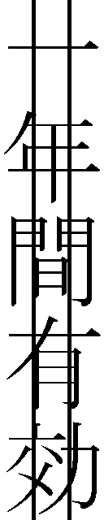 半年』
半年......。いや、そうじゃない。
手にしたペンが、キュッキュと小気味よい音を立てていく。
『ラーメンフリーパス 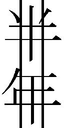 一か月間有効』
ペンを置いて、テウチは頷いた。これでいい。いや待て、まだ少し不安だ。
『ラーメンフリーパス 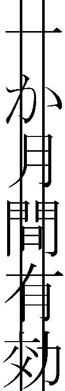 一週間有効』
再び書き直す。いつの間にやら、テウチは呼吸を荒らげていた。
ナルトの反応を、予想する。
「一週間!? よーし、それなら一日十杯食べるしかないってばよ！」
ダメだ！ ぐしゃりと、ついにはメモ用紙を握り潰してしまう。そもそも、こんなものがあるからいけないんだ。この券は、人を不幸にする。主に我々親子を不幸にする。
「ぐっ......ぐぅぅ......」
テウチは泣いていた。不用意に発行したこの券のせいで、アヤメが路頭に迷ってしまいそのうちクソみたいな男を連れてきて結婚するとか言いだした様を想像して泣いた。
アヤメ、その男はなんだ。なにぃ、蕎麦屋のせがれだと。ええいやめろ、お前にお義父さんと呼ばれる筋合いはない。失せろ。さもないと頭からラーメンぶっかけるぞ。
「う......うう、あぁ......う、うぅ......」
テウチは頭を抱えながらうめいた。フリーパスだなんて無理だ。そんなことをしたら生きていけなくなってしまう。では、どうすればいいのか。期限や制限を加えなければ、とんでもないことになる。仮に『※ただし常識の範囲内で』と表記したとしても、相手の常識が自分にとっての常識と同じとは限らない。かといって、ラーメンとはまるで関係のないものにしてしまっては意味がないし、それはそれで思いつかない。万事休すだ。
「こんにちは」
テウチが悩んでいると、新たな客がやって来た。
「ラーメン大盛りで。あ、それとナルトの追加も」
客から、そんな注文が入る。ナルトは本当に人気になった。あまりにもよく売れるので、ここ最近は切らさないように常に多めに仕入れていた。
テウチは、すぐに気持ちを切り替えると、テキパキとラーメンをつくりはじめた。いつものように、最後にナルトを盛りつける。追加分も含めて、盛りつける。
この分だと、トッピングランキング一位の座はしばらく安泰そうだ。
「はいよ、お待ち！」
客にラーメンを出して、テウチは再び悩みはじめる。新しい真っ白なメモ用紙を前にして、苦悶の表情を浮かべる。客がうまそうにナルトを食べていた。いくらでも注文するといい。ナルトは、まだ山ほど切り分けて用意してあるのだから。トレーの上に綺麗に並べたナルトを見つめながらそう思う。メモ用紙と同じように、ナルトは白かった。ただし、ただ白いばかりではなく、ナルトには美しい渦巻き模様があった。
ナルトはいい。テウチはそんなことを考える。
テウチの頭の中も、そして手もとに置いたメモ用紙も真っ白だというのに、ナルトには人を魅了する渦巻き模様がある。テウチはしばらくの間、じっとナルトを見つめ続けた。
そして――
『ナルト 一枚無料』
自然と、手が動いていた。気がつくと、真っ白だったはずのメモ用紙に、そんな言葉が書かれていた。テウチは静かにペンを置いた。が、すぐにペンを持ち直した。
『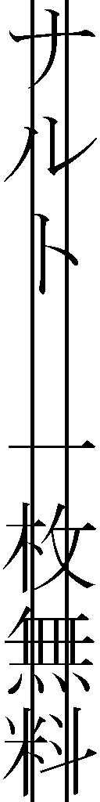』
さすがにこれはないとの判断だ。少々悩みすぎた。これは、あまりにも悩みすぎた結果なぜか一番ありえない選択をしてしまうやつだ。あぶないところだった。
ナルト（人）のおかげでナルト（具材）が売れたというのに、さすがにこんなケチくさい真似はできない。しかし、いくらお祝いだといっても、後先考えずに豪快にしすぎてしまうと、脳内でアヤメが路頭に迷った挙げ句クソみたいな男を連れてくるようになる。
必要なのは、ほどよい加減。ラーメン愛に満ちあふれ、店の経営を圧迫しない範囲で豪快な部分も持ち合わせているという絶妙な加減だ。
そこで、テウチはふと思う。
――ナルト（人）のおかげでナルト（具材）が売れたのならば......。
確信とともに、新たなメモ用紙に書いていく。
書きながら、テウチはラーメンを食べているナルトの、あのなんとも言えない幸せそうな顔を思い浮かべていた。あれはずるい。反則だ。一杯のラーメンであんなに嬉しそうな顔をされたら、ラーメン屋なら誰でも思ってしまう。
この顔を、いつまでも見ていたい、と。
「よしっ」
ペンを置いて、テウチは頷いた。ようやく、しっくりくる贈り物が思い浮かんだ。
『ナルト食べ放題 いつまでも!!』
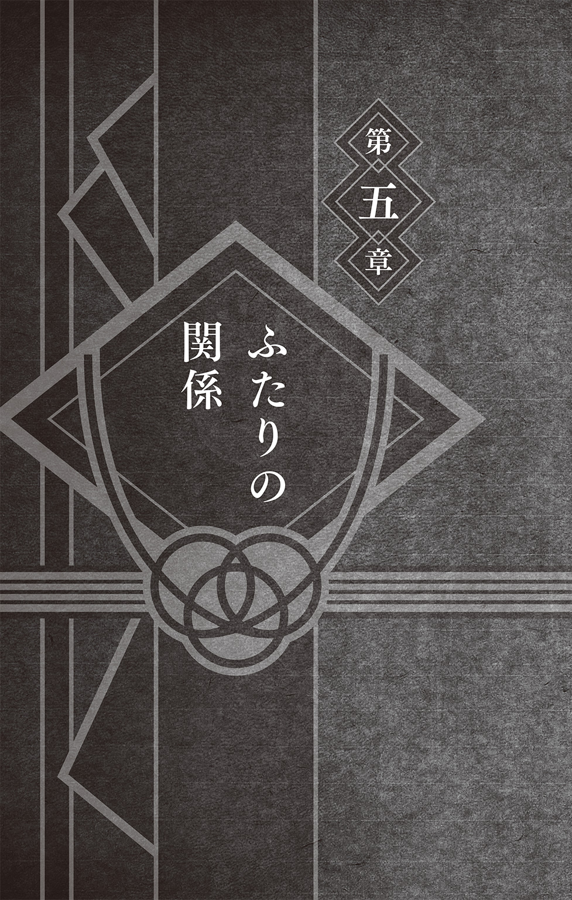
ひと目見た瞬間、春野サクラは確信した。結婚祝いは、これしかない！ と。
それは、行きつけのオシャレな雑貨店で見つけた一点物の写真立て。
色、形、そして細部に施された意匠まで、すべてが好みにどんぴしゃり。まるで、自分と出会うためにそこにあるかのような、そんな気さえしてしまうほどの一品だ。
一点物でなければ、自分が欲しいくらいだ。こういうものは自分も欲しいと思うくらいのものを選ばなくてはダメだ。でなければ、自信を持っておすすめできないではないか。
ああ、できれば本当に自分の部屋に飾りたい。
これが部屋に置いてあったら、毎日家に帰るのが楽しみになるのに......。
自然にそんなことを考える。しかしサクラがこの写真立てを気に入った最大の理由は、他でもないその一点物というところにあった。
一点物――それはつまり、世界でひとつだけ、自分しか持っていないということ。
せっかくの結婚祝いが誰かとかぶっているのなんて、それこそ目も当てられない。
その点、この一点物の写真立てならば、誰かとかぶる心配がないのだ。
これならば、たとえ運悪く写真立てという選択がかぶってしまったとしても、一点物であるがゆえに、他の人とは違う唯一無二の贈り物になってくれることだろう。
それに、知っている限り、他に写真立てを贈ろうと考えている人はいないはずだ。
たとえば、建築や設計関連の本を読むのが好きなヤマト隊長なんかは――
「新居に合う家具でも贈ろうか......。いや、いっそのことボクが新居を......」
なんて能面のような顔をしながらブツブツとつぶやいていたし、絵が得意なサイは、徹夜でお祝いのための絵を描くと言って張りきっていた。
ちなみに、今朝方たまたまサイを見かけたのだが、ところどころがぽっかりと、まるで切り取ってしまったかのように白く色が抜けた絵を持ったまま呆然と立ち尽くしていた。
「サクラ......鳥が大空に羽ばたいていってしまったよ......」
などと、ともすれば哲学的なことを言っていたが、なぜ筆にチャクラを込めてしまったのか。なぜ超獣偽画を使ってしまったのか。張りきりすぎたのだと、サクラは思った。
とにもかくにも、このようにみんな自分の趣味や特技を活かしたものを用意しているようだ。なのでサクラも、女の子らしく男性陣では思いつかないようなオシャレな記念品なんかを贈ろうと考えたのだった。そこで目に留まったものこそ件の写真立てである。
写真立てはいい。贈り物として、ちゃんと記念になりつつも、出しゃばっていないところがいい。主役はあくまでも写真で、どの写真を入れて飾るかはその人しだいだからだ。
この写真立てに、結婚式での晴れ姿や、いずれ生まれるであろう子供の写真なんかを入れて飾ったら、どんなに素敵だろう。サクラは、ナルトとヒナタ、ふたりが暮らす部屋の片隅に、この写真立てが置かれている様を想像してみた。
きっと、幸せな思い出が幸せな今を見守っているはずだ。写真に写っているふたりも、そしてその写真を眺めているふたりも、笑顔を浮かべているに違いない。
想像しただけで、なんだかこちらまで幸せな気分になって、思わず頰が緩んでしまう。これは間違いない。最高の贈り物になるだろう。サクラは写真立てを手に取った。
すると――
写真立ての反対側の縁を、別の手が摑んでいた。
サクラは、無言のまま手にぐっと力を込めた。
すると、もう一方の手もちょうど同じタイミングでぐっと力を込めたのか、写真立てはその場から動かなくなってしまう。
手の先に視線をやると、そこに山中いのがいた。
「放しなさいよ、いの......！」
サクラが、ぐぐぐっと力を込める。
「サクラ、アンタこそ......！」
いのも、ぐぐぐっと力を込める。
サクラといの――ふたりはとても仲良しだ。幼い頃からの親友でありライバルなのだ。
つい先日も、とある任務でチームを組んだほどの仲だ。そのように即席でチームを組んだとしても、ものの見事にお互いが連携できるほど息の合うふたりなのだ。
だが――
まさか同じ時間、同じ場所、同じ瞬間に同じ商品を手に取ろうとするなんて、なんという運命の悪戯だろうか。まるで示し合わせたかのようだ。息が合うにもほどがある。
もしこれが男女だったならば、恋がはじまったのかもしれない。
お互いの間に可憐なハートマークのひとつでも生まれたのかもしれないが、生憎、並び立つふたりの間に生まれたのは飛び散る戦いの火花だけであった。
いのの顔を見て、サクラは瞬時に（こいつ、私と同じ考えを......！）と悟った。女は、そういうことにはすぐに気がつくものなのだ。いのもまた、それを察したようだ。
これを結婚祝いに贈るつもりだ......！
お互いがお互いの気持ちを見抜き、激しい戦いがはじまった。
「私が、先に、見つけたのよ......！」
いのが、歯を食い縛るようにしてそう言った。
「私の、ほうが、早かった......！」
サクラもまた、手にさらに力を込めてそう言った。
いのとふたりになると、やはりどうしても幼なじみの感覚で張り合ってしまうのだ。
ふたりの力が拮抗しているのか、先ほどから写真立ては小刻みに震えるのみだった。
けど、私は右手！ サクラは、内心ニヤリとほくそ笑んだ。
勝機は、お互いの立ち位置にあった。
サクラは右手で写真立てを摑んでおり、となりに立ついのは左手で写真立てを摑んでいたのだ。いのごときの脆弱な左手が、私の右手の圧倒的な力に勝てるはずがない。
サクラは「しゃーんなろー！」と吼えると、いのの手から一気に写真立てをもぎ取った。
「ああっ、な、なにすんのよ!? 返しなさいよっ！」
写真立てを失ったいのが、猛然と抗議してきた。しかしサクラは大人の女性であった。そのようなレベルの低い抗議など、悠然と聞き流す。
ライバルと言われたのも今は昔。もはや今となっては、私はいののすべてを超越していると、サクラは手にした写真立ての感触とともに勝利の余韻に浸っていた。
「この馬鹿！ 馬鹿力っ！」
「誰が馬鹿力ですってええええっ!?」
いのの無神経な物言いにカチンときたサクラは、思わず持っていた写真立てを握り潰しそうになりながらも、なんとか冷静さを取り戻すと大人の女性としての余裕を見せた。
「ふ、ふん。私はね、今や里の中でも屈指の医療忍者よ。高度な医療忍術には、緻密なチャクラコントロールが必要なの。この私の馬鹿ぢか......人よりも強い力を引き出す技は、そんな緻密なチャクラコントロールができるからこそ実現可能なれっきとした忍術。医療忍者として私がすさまじく優秀である証なんだからね。まあ、いの、アンタにはたとえ逆立ちしても心転身しても絶対に真似できないでしょうけどね」
「くっ......」
いのが、ぐうの音も出ないといった様子で後退りした。勝負あった。いのよ、去るがいい。サクラが会計に向かおうと背を向けたその瞬間――
「あー、サクラァ、もしかしてアンタ、それをナルトとヒナタへの結婚祝いにしようだとか、そんなことを考えているんじゃないの？」
いのがひどく嫌みったらしい口調で、そんなことを言いだした。
「ほんと、ありえないわよねー。そんなダサい贈り物なんてぇ」
「なっ......!?」
これには、サクラも思わず足を止め振り返ってしまう。
しかし、いののにやけ顔を見て、サクラはすぐにピンとくる。
甘いわよ、いの。サクラは、いのの作戦を見抜いていた。写真立てをボロクソにけなして、買う気をなくさせるつもりなのだ。力では敵わないとわかったから、今度は言葉でということなのだろう。だが、その手にはのらない。
「なにを言ってるのよ。アンタだって、さっきまでこれを買おうとしていたでしょ！」
「ぐっ......そ、それは......」
浅い。浅いのよ、いの。ちょっとつっこめば、こうしてすぐにしどろもどろになる。
「ダサいと思っているものをわざわざ買おうとするなんて、最悪のセンスよね」
そう追い打ちをかけてやる。憐れいのは、自らの術中に嵌ってしまったのだ。
「わ、私はべつに買おうだなんて......！」
「じゃあなんであんなに必死で摑んでたのよ？」
「あ、あれは......そ、そうよゴミ。邪魔なゴミだなーと思って、どかそうとしただけ！」
「なによっ、その苦しい言い訳は！ 店の中にこんな馬鹿でかいゴミがあるか！」
「あのぉ、申し訳ありませんお客さま。他のお客さまのご迷惑になりますので......」
ついに店員が参戦してきた。どうやら、気がつかないうちに、ついつい声が大きくなってしまったようだ。サクラは、急ぎ店員に謝罪した。
「す、すみません......。ホラいの、アンタのせいで迷惑だって......」
そう言って、サクラはいのを肘で小突く。
「はあっ？ アンタがギャーギャー騒いだせいでしょ!? なに言ってんのよ！」
いのもまた、サクラを肘で小突く。
サクラはいのを睨んだ。いのもサクラを睨みつけた。
瞬間、ついにふたりは取っ組み合いになった。お互いの服と髪の毛を引っ張り合う。
「もとはといえば、アンタが突っかかってくるからいけないんでしょ！」
「だから、私のほうが先に摑んだって言ってるでしょ！」
そこに、慌てて店員が割りこんでくる。
「お客さまっ！ お客さまっ！」
「「うるさいっ！」」
サクラといのが、鬼のような形相でそう叫ぶ。
皮肉なことに、こんなときだけ仲良く声がそろった。
時が止まってしまったかのように店内がしーんと静まりかえる。止めに入った店員も、サクラといののあまりの剣幕に、ぽかんと口を開けたまま固まってしまっていた。
サクラといの――どちらともなく「あ、すみません......」と小声で店員に謝ったときにはもうすべてが遅かった。けっきょく、ふたりは店から追い出されたのだった。
しかし――
店の外に出てからも、ふたりの宿命の戦いは終わらない。
「ふざけんじゃないわよ！ 追い出されちゃったじゃない！」
「なんてことしてくれてんのよ！ せっかく見つけた結婚祝いだったのに！」
道行く人が何事かと見ていくが、そんなことはおかまいなしにふたりの口論は続いた。
「あんな馬鹿力で無理矢理人から奪い取っておいてよく言えるわ。だいたいねえサクラ、アンタには譲り合いの精神ってもんがないのよ！ 胸もない譲り合いの精神もない、唯一あるのは馬鹿力！ ほんとどうしようもないわね！」
「はあ!? 胸は今関係ないんですけど！ なにからなにまで私に勝てないからって、関係ない話に持っていこうとするのやめたら？」
「はあ!? 勝てないとか意味わかんない。女らしさでは確実に私が勝ってますけどー！」
「女らしい？ どこが！ アンタのはただチャラチャラしてるだけでしょ！」
「あーあー、負け惜しみ！ 顔もスタイルも服のセンスも生け花も料理の腕だって、全部私のが上！ あ、そうだ。馬鹿みたいな怪力だけはアンタの勝ちだったわよね？」
そう言って、いのが勝ち誇った。
――いのぶたが......！
サクラのこめかみに青筋が浮かぶ。
しかしサクラも負けてはいない。
「は？ 料理くらいできますけど？ それに顔とかスタイルとか馬鹿じゃないの。そういうことしか考えられないからアンタはダメなのよ。私みたいに知性を感じさせる女になれないからって、八つ当たりしないでよね」
やれやれと、わざと大袈裟に首を振ってため息をついてみせるも、いのは怯まない。
「あっ、そうだサクラ、今ふと思ったんだけど、馬鹿力だけが取り柄の頭でっかちな女なんて、きっと嫁の貰い手がないでしょうねぇ。ほんと、可哀想よねー」
「嫁の貰い手がないですって!? それはこっちのセリフよ！」
「え？ ごめーんサクラ。今のべつにアンタのこと言ったワケじゃなかったんだけど、もしかして図星だった？ 気になったんなら謝るからー」
「くっ......」
結婚祝いの奪い合いからはじまった口論だからか、いのがクスクスと笑いながら、そんな失礼なこと甚だしい追撃まで入れてくる。卑劣な話術だ。
「まあ、どのみち知性と怪力だけじゃ嫁の貰い手ないでしょうけど」
この女、嫌みの天才か。サクラは果敢に言い返した。
「だから料理だってできるって言ってるでしょ！ 少なくともいの、アンタよりはね！」
「は？ サクラ、アンタごときが料理の腕で私に勝てると本気で思ってるわけ？」
「思うに決まってるでしょ。私がいのなんかに負けるはずがないんだから！」
「上等よ。返り討ちにしてやるわ！」
視線と視線がぶつかり合う。
お互いの意地とプライドを懸けた罵り合いが、気がついたら料理対決になっていた。
結婚祝いの話も、写真立ても、もはや忘却の彼方。なぜこうなっているのかさえ、すでにどうでもよくなっていた。ただ、目の前でほくそ笑む小生意気なライバルを、なんとしてもぎゃふんと言わせてやるという思いだけが、ふたりを動かしていた。
サクラといの。
ふたりの、女のプライドを懸けた料理対決がはじまろうとしていた。
料理のお題は、兵糧丸。
兵糧丸とは、忍者が愛用する携帯保存食である。
栄養のバランスに優れた多くの食材を練りこんだものを、ひと口大に丸めて乾燥させた食べ物というのが、広く一般に知られている基本的な兵糧丸である。
しかし、兵糧丸の世界は意外と奥が深い。
つくる人の数だけ、違った兵糧丸が存在するといっても過言ではないのだ。
それというのも、兵糧丸とは、人によって使用する食材や大きさがまちまちなものだからだ。たとえば、先祖代々一族に伝わる秘薬を調合する者もいれば、おにぎりのように大きく丸めて持参する者もいる。また、人ではなく動物用につくることもある。
このように、好みや伝統、体調、戦術、または任務の期間や任務地の気候......あらゆる条件によって中身が大きく変わる可能性を持った料理――それが兵糧丸なのである。
サクラといのが、料理対決のお題を兵糧丸にしたわけも、そんなところにあった。
すぐにつくれて、かつ手軽に食べることのできるもの。それでいて、お互いの個性や腕前が如実に表れるこの料理ならば、白黒ハッキリつけやすいと判断したのだ。
材料を買いそろえて自宅に戻ったサクラは、すぐさま兵糧丸づくりに着手した。
用意したすり鉢に材料を入れ、一心不乱にすりこぎを回していく。まずは、ゴマやアーモンド、クルミなどの、木ノ葉隠れの里でよく使われる材料を砕いていく。
「みてなさいよ。料理の腕でもこの私が上だってことを、思い知らせてやるわ！」
ゴリゴリゴリゴリと音を立てながら、材料が粉末状になるまで手を動かしていく。兵糧丸づくりは、材料がなんであろうと基本的にはこの作業のくり返しだ。
これまたよく使われる材料である蜂蜜や氷砂糖を、ドバドバと加えながら作業を続けていくうちに、サクラはふと忍者学校時代を思い出していた。
忍者学校のくノ一クラスでは、華道や茶道などの授業がある。女性としての幅広い知識と教養を身につけることは、敵地への潜入任務などの際、敵の目を欺くための役に立つからだ。ふつうの女性として振る舞えないようでは、一人前のくノ一にはなれないのだ。
その中には、もちろん料理の授業もあった。
いのは料理の授業もそつなくこなし、クラスの中でも輝いていた。
反面、サクラは言われたことしかできずに、ぱっとしなかった。
そんなサクラにとって、人気者のいのは憧れの存在であった。
――けど、今は違う。
長い年月をかけて、くノ一としても、女としても、己を磨き続けてきた。かつて憧れた背中は、やがて横顔となり、今ではサクラのほうが一歩も二歩も先に行っているはずだ。
「料理でも、これからは私の背中を眺めているがいいわ......いの！」
すりこぎでゴリゴリとやりながら、気合いたっぷりにそう宣言する。
嫁の貰い手がないだなんて言われて、黙っているわけにはいかない。この勝負、絶対に負けるわけにはいかないのだ。だいたい、いのは最近ちょっとサイといい感じだからって調子にのっている。そんな浮わついた気持ちでいるやつに負けてたまるもんですか。
乙女の怒りを思い知るがいい――なんて、ゴリゴリやっているうちにやや話が逸れてきてしまったが、サクラは今回の戦いに必勝の策を用意していた。
「ふふふ、これよこれ」
そうひとりごちて、にやりと笑みを浮かべる。
サクラが取り出したもの、それはプリンであった。
いのとは幼い頃からの付き合いである。いのが大のプリン好きであることを、サクラは知っていた。それどころか、サクラはいのの好き嫌いをすべて把握していた。
忍にとって、情報は命だ。完璧にいのの好みを把握しているサクラに、もはや負ける要素など微塵もない。
自信満々のサクラは、すり鉢の中に躊躇うことなくプリンを投入していった。それを、ぐっちゃぐっちゃとかき混ぜながら、サクラは高らかに笑った。
「これで私の勝利は確実だわ！」
あとは適当な大きさに丸めて乾燥させるだけ。
ほどなくして、サクラ特製プリン風味のスイーツ兵糧丸が完成した。
先ほどの雑貨店の近く――
木ノ葉茶通り付近にある待ち合わせ場所には、すでにいのが立っていた。
サクラと目が合うと、いのがニヤッと笑みを浮かべた。
「遅かったわねサクラ。てっきり私に敵わないものだから逃げ出したのかと思ったわ」
そして、出会い頭にそんなことを言う。
――こいつ、このセリフを言いたいがためにわざと先に来ていたわね......！
サクラは心の中で舌打ちした。なぜならば、サクラは指定された時間ぴったりに到着していたからだ。決してカカシ先生のように遅れてきたわけではないのだ。
――くだらない真似を......！
だが、そんな安い挑発にのるサクラではない。この勝負、すでに勝利はサクラの手の内にあるようなもの。今のうちにせいぜい吠えているがいい。
「勝つほうは遅れてやって来るものよ」
すでに絶対的な勝利を確信しているサクラは、堂々とした態度で、いのと対峙した。
いのが冷静な口調で告げる。
「それじゃあ、勝負をはじめましょうか。そうね、ここは公平を期すために、第三者に食べてもらってどちらがおいしいのか判定してもらいましょう」
「ええっ!? アンタが食べるんじゃないの!?」
一瞬にして、手の内にあった勝利の二文字がこぼれ落ちかける。
そんなサクラの反応に、いのが目を丸くした。
「当たり前じゃない。私たちが食べたところで、けっきょくお互い勝ちを譲らない可能性のほうが高いんだから。だから客観的に審査してくれる人が必要でしょ」
いのが正論をぶちまける。盲点だった。まさかいのが食べないなんて。これでは、わざわざプリンを買いに行った意味がない。いのが好む味にした意味がないではないか。
「っていうかサクラ......アンタまさか......」
眉間にシワを寄せて、いのがじっと見つめてくる。
「毒を入れたんじゃないでしょうね？」
「そんなことするわけないでしょうが！」
さすがに心外だ。親友をここまで疑うとは、ろくな女ではない。
「どうだかねー。ま、いいわ。というわけで、判定はチョウジにお願いするわ」
「ちょ、ちょっと待ちなさいよ！ チョウジはアンタの班でしょ!?」
「チョウジなら、食べ物関連の話で絶対に噓はつかないでしょ？ わざわざ私の肩を持ったりしないわよ。だからある意味、一番信用できる審査員だと思わない？」
言われてみれば確かにそのとおりだ。いのの提案に、サクラも納得する。
「それじゃあチョウジを呼んでくるわ。さっきたまたま見かけたのよ」
そう言うと、いのの姿が路地に消えた。
しばらくすると、路地の向こうから「いいから早く来なさい！」だとか「女の子の手料理が食べられるチャンスなんだからね！」などという声が聞こえてきた。
どうやら、チョウジが少し抵抗しているらしい。
やがて、いのに引きずられるようにして路地から姿を現したチョウジは、ひどくげんなりとした顔をしていた。やはり、いのに無理矢理連れてこられたのだろう。
「待ってよ、いの。ボクはたった今、山ほどアイスを食べてきたばかりなんだけど......」
「いいからいいから。デザートは別腹って言うでしょ？」
「うん。だからもうデザートは食べたんだけど......。あ、サクラ」
と、ここでチョウジがサクラに気づいた。チョウジが、すぐさま助けを求めてきた。
「いのがボクのことをよくわからない兵糧丸の実験台にしようとしてるんだ。助けてよ」
「それで、いの、どっちから食べさすの？」
「くそう、サクラもグルだった！」
それで観念したのか、チョウジが大人しくなった。それどころか、
「まあ、兵糧丸も別腹だからいいんだけどね......」
なんて、そんな頼もしいことまで言いだした。
これは心強い。いのの言うとおり、確かにチョウジなら公平な審査をするだろう。
プリンも入っているんだし、食べるのがいのでなくてもきっと甘くておいしいはず。勝てるに決まっている。サクラは、拳をぎゅっと握りしめた。
「それじゃあチョウジ、どっちの兵糧丸がおいしいか、食べくらべてくれる？」
いのがチョウジに兵糧丸を渡した。いのに続いて、サクラも渡す。
チョウジは、両手に持った兵糧丸を交互に見やると、まずはサクラが渡したほうに齧り付いた。審査のためだからか、ひと口ですべてを食べずに、半分だけ口に入れた。
「うっ......こ、これは......っ」
チョウジの目が、くわっと見開かれる。そして――
「うまいっ！ これはうまいよ！ すごく甘くて疲れが吹き飛ぶようだよ！」
そう言うと、チョウジは残りの半分もポイと口に入れた。それどころか、余分につくってきたものまでポイポイといくつも口に入れていく。相当気に入ったらしい。
「よーしっ！」
サクラは握りしめていた拳を胸の前に掲げた。見たか、いの。これが私の実力だ。
ずいぶんと好感触のチョウジを前に、予想と違ったのだろう――いのが苦々しい顔をしていた。ギリギリと奥歯を嚙みしめる音が聞こえてくるかのようだ。
「どう？ もう私の勝ちでいいんじゃないの？」
そう言ってやると、いのが慌ててチョウジを促した。
「チョ、チョウジ、ほら、早く私のも食べてみてよ」
まだむしゃむしゃと頰をふくらませながらも、チョウジはいののつくった兵糧丸を口に入れた。今度はひと口だった。まだ口内にサクラのつくった兵糧丸が残っていて判定しづらかったのか、さらに二つ三つと口の中に入れていく。
「うん......うん......うん......」
目を閉じて、しきりに頷きながらいのの兵糧丸を味わうチョウジ。そして――
「すごい！ こっちのもめちゃくちゃ甘くておいしいよ！」
すべてをごくりと飲みこみ、チョウジが満足そうに笑顔を浮かべた。
そこに、すさまじい勢いでいのが詰め寄った。
「それでどっち？ どっちがおいしかったのよ？ ねえ？」
「う〜ん......どちらもものすごく甘くておいしくて、甲乙付けがたいって感じかなぁ」
首を傾げつつ、チョウジが次々と兵糧丸を口に入れていく。無論、サクラがつくったものと、いのがつくったもの両方だ。咀嚼しながら、腕組みをする。
「どっちもいいんだよねえ。甘くておいしいよ。うん、うまいうまい。うまウボォ」
突然、チョウジが鼻血を吹き出しながら崩れ落ちた。
「いやああああっ!?」
「ええっ、ちょっ、どうしたの!?」
チョウジは、そのまま白目を剝いてぐったりとしてしまう。
力なくだらんと垂れたチョウジの手から、兵糧丸がこぼれ落ちた。それがいののつくったものであることを見るや否や、サクラは叫んでいた。
「いのっ、アンタ毒草！ 毒草入れたわね!?」
「そんなもん入れるか！ アンタ私をなんだと思ってんのよ！」
「と、とにかく、治療をしないと！ チョウジ、しっかりして！」
サクラが声をかけると、チョウジが静かに口を開いた。
「ボクにも......仲間がいっぱい......出来たよ......」
流れる鼻血で真っ赤になった口もとで、モソモソとうわごとのようにつぶやき続ける。
「なんなのこれっ!? 走馬灯!? 走馬灯なの!?」
「いやああああ、チョウジ死なないで！ サクラ、早くなんとかして！」
いのに泣きつかれるも、サクラにはチョウジがなぜこうなっているのかわからない。治療をしようにも、チョウジの身体は、ぱっと診たところいたって健康そのものなのだ。
やはり原因は、今まさにチョウジが食べていた兵糧丸にある。
「ま、まさか......」
サクラはゴクリと固唾を吞んだ。
「私の知らない......毒......？」
戦慄の眼差しで、じっといのを見つめる。
「なんで私を疑うのよっ!?」
「だって、アンタの兵糧丸を食べてこうなっているんだし......」
「アンタのが効いてきたのかもしれないじゃない！」
「私が毒なんて入れるわけないでしょ！」
「ボクにも......仲間がいっぱい......出来たよ......」
「まずいわ！ チョウジの走馬灯が二周目に突入したわよ！」
「ぐずぐずしている暇はなさそうね......！」
そうつぶやいて、サクラは決意をこめた瞳でしっかりと前を見すえた。そして、目の前に置いてあった、いのがつくった兵糧丸をひとつ手に取った。
「どうするの!?」
「なにが入っているのか確かめてみないことには、治療のしようがないわ」
そう言って、サクラは舌を出した。そして、いのの兵糧丸を舌先に押し当てた。
「毒が入っていたら、舌先が痺れるかもしれない......」
いきなり食べずに、まずはこうして様子見してみる。
「だから毒なんて入っていないってば！ ええいもう！」
そう言うと、いのも兵糧丸を手に取った。もちろん、自分がつくったものではなく、サクラがつくったものをだ。サクラに倣って、いのもそれをおそるおそる舌先に付ける。
「アンタのがおかしいのかもしれないでしょ！」
真剣な面持ちのまま、舌で兵糧丸の確認を続けるサクラ。冷や汗を流しながら、それでも兵糧丸を舐めるいの。しばしの沈黙が続いた。
サクラが、慎重に兵糧丸を少し囓る。それを見て、いのも怖々といった様子で兵糧丸を囓った。ふたりとも、兵糧丸の欠片をゆっくりと舌の上で転がしていく。
そして――
「......おいしい」
「......うん」
我慢できずに、そのままふたりは手にした兵糧丸をポイと口に放りこんだ。
「なんだろう......私この味、すっごい好き！」
咀嚼しながら驚きを隠しきれずにサクラがそう言うと、
「私もこの味大好き！」
同じく驚きを隠しきれずに、いのがそう言った。
毒だなんてとんでもない。いのがつくってきた兵糧丸は、なぜかサクラの大好物・白玉あんみつの味がした。つまり、サクラがつくったものと同じスイーツ兵糧丸だったのだ。
――でも、なんで......？
サクラがそんなことを考えていると、チョウジがむくりと起き上がった。
「チョウジ、大丈夫なの!?」
「いや〜びっくりしたよ。血糖値が急上昇して死ぬかと......まさか鼻血まで出るなんて」
口もとと髭についた血をゴシゴシと拭いながら、チョウジが答えた。
なるほど、血糖値か。サクラは納得した。
たしかにこの兵糧丸、どちらもありえないほど甘い。それをあれほどまでに大量に、しかも一気に食べたのだから具合が悪くなってしまっても無理もない。
おまけにチョウジは、つい先ほどまでアイスクリームを、これまた大量に食べていたらしい。いくら大食漢のチョウジといえども、必要以上に糖分を摂りすぎたというわけだ。
「はあ〜、なんだーよかったぁ......」
いのが大きく息を吐いてうなだれた。極度の緊張状態から解放されたのだ。
そんないのを尻目に、
「うーん、でもこの兵糧丸を食べていたら、なんだか本物のプリンと白玉あんみつを食べたくなってきちゃったよ。やっぱり今から『甘栗甘』に行こうかな？」
チョウジはそんなことをあっけらかんと言ってのけた。
「チョウジ、アンタほんとに死ぬわよ!?」
「大丈夫だよ。さっき食べたのなら、もう消化したし」
「さすがにそれはありえないでしょ......チョウジ、アンタほんとすごいわ......」
けろりとしているチョウジを見つめながら呆れ顔のいの。
サクラは、そんないのに訊ねてみた。
「ねえ、いの。なんでわざわざ私の好きな味にしたの？」
第三者――チョウジに食べてもらって客観的な判定をしてもらうと言いだしたのはいのなのに、これは一体どういうことなのか。どうしても訊いておきたかったのだ。
するといのは、ばつが悪そうな顔をしてそっぽを向いた。
「べつに......ただ、アンタに食べさせれば喜ぶかなって......」
なんてことはない。
いのもまた、サクラと同じように思考して、相手の好物を入れたのだった。
要するに、同じ写真立てを取り合ってケンカした挙げ句、同じことを考えて勝負に臨んでいたというわけだ。そう考えた途端、笑いが堪えきれなくなってしまった。
「アハハハハなによそれぇ、けっきょくは私と同じ作戦じゃない」
急に笑いだしたサクラにつられて、いのも笑いだす。
「ふふっ、そりゃあ、ダテに長いこと付き合ってないわよ。どんだけいっしょに過ごしてきたと思ってんのよ？ アンタの考えなんて、全部お見通しなんだからね」
「お互いにね」
サクラがそう付け加える。そうして、お互い顔を見合わせて笑い合う。あまりにもおかしくて、ついには涙まで出てきた。指でそれを拭いながら、サクラはいのに提案した。
「それじゃあ、お見通しついでに言いたいことがあるんだけど」
「なによ？」
「私たちふたりで結婚祝いを探せば、もっとすごいものが見つけられると思わない？」
「当然。私のセンスにアンタのセンスが加われば敵なしよ！」
にやりと微笑んで、いのがウィンクをする。
「よーし、それならふたりで最高のプレゼントを探しに行くわよー！」
サクラが空に向かって元気よく拳を突き上げると、いのが微笑んだ。
「まったく、サクラ......アンタってほんと強くなったわよね」
途端にしんみりとしながら、いのが遠くを見つめた。
「昔はあんなに泣き虫だったのにね......。いっつも『デコリーン』だの『デコレボリューション』だの言われて泣いてたっけ......」
「ちょっといの！ なによ『デコレボリューション』って!? 勝手に人の過去のあだ名を捏造してんじゃないわよ！ っていうか、それアンタが今考えたわね!?」
サクラが怒鳴ると、いのが舌を見せて逃げていく。
「あ、コラ！ 待ちなさいよ！」
「アッハハハ、冗談だってー！」
どこか楽しげなふたりの声が、木ノ葉茶通りの喧騒に溶けこんでいく。
サクラといの――
ふたりはいつまでもライバルであり、そして最高の親友同士であった。
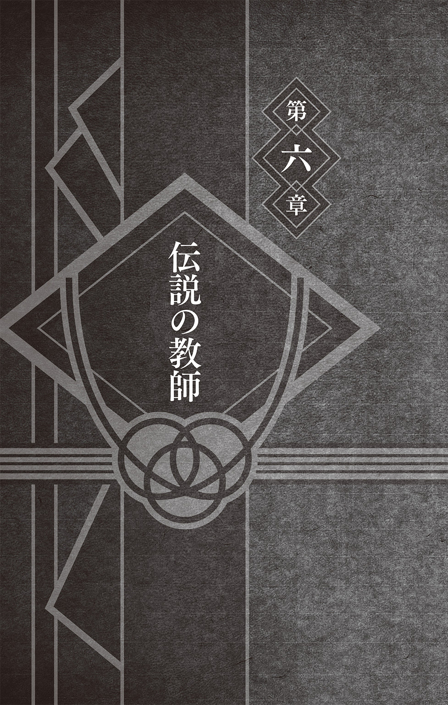
この仕事を選んでよかった。
もし胸を張ってそう思えたのだとしたら、これほどまでに幸せな人生はない。
なぜならば、仕事とは自分のため、そして誰かのために生きることであるからだ。
うみのイルカは、そう考える。
そして、イルカは今まさに幸せであった。胸を張って、そう思っていた。
きっかけは、ラーメン一楽の人気トッピングランキング一位の座に「ナルト」の三文字を見つけたというただそれだけのことだった。
しかし、それだけでイルカは、目前に迫ったナルトとヒナタの結婚式のことを考えてしまい思わず感極まってしまったのだ。歳をとって涙もろくなったのだとは思いたくない。
イルカのこの感情は、いわゆる親心というやつに近いものなのかもしれない。
そして実際、こんなことがあった。
その日、いつものように忍者学校の職員室で事務仕事をしていたイルカのもとに、えらくかしこまった顔をしてナルトがやって来た。結婚式のことで話があるという。
しかし、すでに式には出席すると返事をしていたイルカには思い当たるところがない。
何事かと訊ねると、ナルトはおもむろにこう切り出した。
父親として出席してほしい、と。
それを聞いて、イルカは笑顔で即答した。「任せておけ」と。
そして、「あんまりにも真剣な顔でやって来たものだから、またラーメンを奢ってくれだなんて言われるのかと思ったぞ」なんて冗談を飛ばしながらナルトを見送ったのだが、ナルトの姿が見えなくなると、人目もはばからずに号泣してしまったのだった。
長年教師をやってきて、これほどまでに嬉しかったことはない。
自分の選んだ道は間違っていなかったと思えて、涙が止めどなくあふれてきたのだ。
一楽で「ナルト」という文字を見ただけでも、こうしてまた目頭が熱くなってしまう。
そうしてついつい、トッピングでナルトの追加をお願いしてしまうのだ。
それだけナルトは、イルカにとって特別な思い入れがある生徒だった。
もちろん、教師であるイルカは、ひとりの生徒だけを特別扱いしたり贔屓したりするようなことはしてはいけない。しかし、それをわかっていてなお、イルカにとってナルトは、ひとりの生徒としてだけでなく、ひとりの人間として特別な存在であった。
だが、最初からそうだったわけではない。
初めてナルトの担任になったときは複雑な気持ちだった。
ナルトの顔を見ると、どうしても死んだ両親の顔を思い出してしまうのだ。
優秀だったイルカの両親は、優秀であったがゆえに幼いイルカを残して帰らぬ人となっていた。里を襲った化け狐からイルカを、そして里の人々を守るために、最前線に立ってボロボロになりながら命尽きるまで戦ったのだ。
以来イルカは、誰からも褒められず、誰にも認められずに孤独な少年時代を送ることになる。誰もいない真っ暗な家に帰るたびに、両親のことを思い出した。
時が流れ、イルカは教師になっていた。
そんなイルカの前に生徒として現れたのがナルトだった。
あのときの化け狐――九尾がナルトの中に封印されていることは知っていた。そして、ナルトに非がないことは充分に理解していたつもりだった。だが、頭ではわかっていても、長い年月をかけてようやく折り合いをつけたはずの心はざわついた。
寡黙で厳しい父と家庭的でしっかり者の母はともに上忍で、人々からの信頼も厚かった。
イルカは、いつも仲間たちの輪の中心にいる両親を誇りに思った。いつの日にか自分も立派な忍となって、そんな父や母を支えていきたいと考えるようになった。
しかし次の瞬間には、化け狐が天をも切り裂くような咆吼をあげながら現れる。イルカを庇い重傷を負った母の姿と、血だらけになりながらも死闘を続ける父の姿がどんどんと遠ざかっていき、そうしてイルカは暗い自室で飛び起きるのだ。
幼い頃からたびたびみる悪夢だった。
ナルトの担任になってからというもの、この夢が毎晩のように続いた。
すっかり精神的にまいってしまったイルカは、無意識のうちにナルトを避けるようになっていた。ナルトはいたずらばかりして里人たちから嫌われていた。クラスメイトからは仲間はずれにされていた。イルカはなにもできずにただそれを見ていた。教師としてやっていく自信をなくしてしまっていたのだ。イルカは無力であった。
しかしイルカは、ある日はたと気づいてしまう。
ナルトは昔の自分と同じだということに。
誰からも褒められず、誰にも認められずに過ごす日々のつらさを誰よりもわかっていたはずの自分が、どうして今までそれに気づかなかったのか。
そのことに気づけてからというもの、ナルトに対してもふつうに接することができるようになった。やがて、悪夢もみなくなった。
だが、もしも。もしもあのとき、気づくことができていなかったらと、イルカは今でもたまに考えることがある。自分のことしか考えることができず、常にかわいそうなのはただ自分だけだとしか思えず、人の痛みにまるで気づけない最低な大馬鹿野郎になっていたかもしれない。
ナルトのおかげだと、イルカは思っている。
ナルトとの出会いが、自分の人生を変えるきっかけになったのだ。
ナルトとの出会いが、イルカの中で一生教師として生きていく覚悟をつくったといっても過言ではない。イルカにとってナルトは、そういう大切な存在であった。
すると――
昔のことを思い出していたせいだろう。ふと、ある男の顔が脳裏をよぎった。
男の名はミズキ。昔から成績も良く忍術の才能にも恵まれていた男だった。
ミズキとは幼い頃からの知り合いで、ともに教員採用試験を受け、ともに働き、助け合ってきた。なにかと口うるさいイルカと違って、いつも笑顔でやさしいミズキは、生徒たちからも人気のある先生だった。
だが、ミズキには生徒たちに見せるやさしい顔とは別の顔があった。
ミズキは嫉妬深く、自分を信じることのできない男であった。
本当の自分をわかってくれる人がいない。本当の自分はもっとすごい。本当の自分はこんなものではない。自分はこんなところで小さく収まるような人間ではない。自分は里から過小評価されていると、イルカの前でだけはそのように漏らしていたことがあった。
つまるところ、ミズキもまた、誰にも認めてもらえないと悩んでいた男だったのだ。
そのためミズキは、結果ばかりを執拗に追い求めていた。うまくいかないことをすべて人のせいにした。人を羨み、妬んだ。けっきょくミズキは、邪悪な野心を捨てきれずに道を誤った。そしてついには、忍としての道も踏み外してしまったのだ。
――ミズキ......。
イルカは思う。
――教師という職業に、目先の結果なんてありはしないんだ。
もし結果が出るとすれば、それは五年後や十年後――いや、場合によってはもっともっと長い歳月が必要になるかもしれない。子供たちがどんなふうに成長して、どんな大人になって、結果としてどんな人生を送ったのか。
そこまで見なければ、わからないことだってある。
ナルトは、今や里でその名を知らぬ者がいないほどの有名人だ。
里の誰もが、ナルトのことを認めている。
幼い頃、落ちこぼれだと馬鹿にされ、孤独な日々を送ったあのナルトがだ。
この結果が、はたしてミズキには想像できただろうか。いや、できまい。
イルカは今、長年教師を続けた者でなければ決して見ることのできない未来を目の当たりにしていた。この気持ち、この感動は、他の人にはわからないだろう。
――この気持ち......お前にも味わわせてやりたかったよ......ミズキ。
一楽を出た頃には、すでにあたりは暗くなっていた。
夜風に吹かれながら、イルカはひとり家路を急ぐ。胸ポケットの中にはナルトとヒナタのために買った結婚祝いが入っていた。歩くたびに感じる確かな重みが、心地良い。
自分は幸せ者だとイルカは思った。ナルトだけでなく、多くの生徒たちが卒業してからも自分のことを慕ってくれている。こんなにも幸せなことはない。
特にナルトとは、今でもよくいっしょにラーメンを食べに行くほどの付き合いだが、これからはそうしてナルトと外食ばかりしていたら、家で手料理を用意しているヒナタに怒られてしまうかもしれない。そんなことを考えて、イルカは自然と笑顔になった。
幸せな気分のまま自宅に帰ったイルカは、真っ暗な部屋に明かりを灯した。
誰もいない部屋が、煌々と明るく照らされる。
部屋の空気は、ひんやりとしていた。
洗面台には、買い換えようと思ったままそれきりのくたびれた歯ブラシが一本。テーブルの上には、飲みかけの湯飲みが置きっぱなしになっていた。
ここでイルカは、洗濯物を取りこみ忘れていたことに気づいた。
夜の外気にすっかり冷たくなってしまった下着を、黙々と片付けていく。
ピチャン、と蛇口から水滴が落ちた。静かな夜だった。
そんな静寂を、突如として子供たちの笑い声が打ち破った。となりの家の子供たちだ。
イルカはひとり部屋に佇んでいた。「ふう......」とひと息ついて低い天井を見上げる。
――そろそろ自分も本格的に人生の伴侶を......。
なぜだか今日は、一際強くそんなことを思ってしまう。
そしてイルカは、小さく拳を握りしめると、ぽつりと口にした。
「よしっ、オレもナルトに負けていられないな......！」
静かな決意表明だった。
我こそはという方は、ぜひ彼のもとまで。
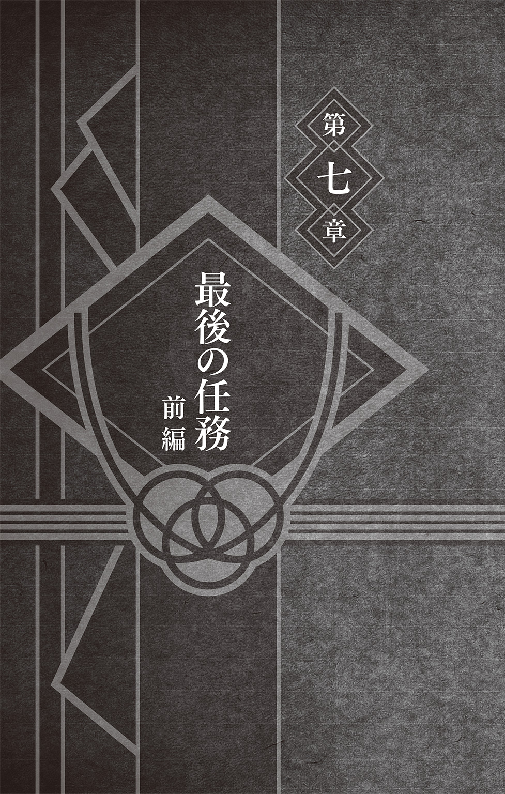
リーとテンテンは、演習場で話をしていた。
シカマルとチョウジは、偶然ばったりと出会っていた。
サクラといのは、行きつけの雑貨店に向かっていた。
サイは、空を見上げて崩れ落ちていた。
イルカは、鼻唄まじりに洗濯物を干していた。
そして一楽は、いつもどおり営業していた。
誰も、その近くを飛んでいた一匹の羽虫の存在に気がつかなかった。
羽虫が、一匹。木ノ葉隠れの里をうろうろと飛び回る。
小さな虫だった。誰も気に留めないほど小さな虫だった。それに、たとえ意識して見つめたとしても、晴れた日の屋外では、まぶしい陽の光によってすぐに見失ってしまうことだろう。せわしなく動き回る小さな虫を目視し続けることは困難を極める。
だが――
不意に、羽虫が動きを止めた。いや、正確には、翅を休めてとどまったのだ。
どこか一箇所にとどまってさえくれれば、小さな虫でも容易に目視できる。
たとえばそう、目の前にピンと立てた自分の指先などならば。
油女シノは、指先にとまった羽虫をサングラス越しにじっと見つめていた。
「......ごくろうだった」
そして、静かな声で虫にねぎらいの言葉をかけた。すると指先にいた虫は、そのままシノの手の甲を歩いていき、さも当たり前のように袖の中に姿を消した。服の中に虫が入っていってしまったが、シノは別段慌てるわけでもなく平然とした顔をしていた。
それもそのはず。
なぜならシノは、油女一族という蟲使いの家系に生まれた忍だからだ。
一族の者は、寄壊蟲という名の蟲を生まれてすぐに体内に宿し、それらを自在に操る代わりに己のチャクラを餌とする契約を結んでいた。
そして、今しがた袖の中に入っていった羽虫こそが、シノの操る寄壊蟲であった。シノが平然としていたのも当然のこと、今のは寄壊蟲が巣穴に戻っていっただけなのだ。
契約を結び、ともに生きている蟲たちは主に任務の際に使われるのだが、その用途は多岐にわたっていた。攻撃や防御のみならず、捕獲に索敵、追跡や探索に治癒など、ありとあらゆる場面で使われていた。無数の蟲に人の形を取らせ、分身の術にも使用するほどだ。
このように、生まれたときより無数の蟲と共生している油女一族は、蟲の習性を熟知し、蟲とともに戦う術を古来から磨いてきた秘伝の一族であった。
そしてこの日――
シノはそんな秘伝の技を、里の仲間たちの動向を窺うために使っていた。一体なぜそのようなことをしていたのかというと、その理由はシノのとなりにいる男にあった。
「で、どうだった？」
となりで忍犬・赤丸と遊んでいた犬塚キバが、そう声をかけてくる。
「やはり、みな結婚祝いを入手しに動いているようだ......」
里を一望できる高台に立ったまま、シノが答えた。
「だろうな。それで、すでになににするか決めてるってやつはいたか？」
「多くはまだだろう。集まって相談しているといったところか」
シノがそう告げると、キバが歓喜の声をあげた。
「ひゃっほ〜、やっぱりオレの睨んだとおりだぜ！」
言いながら、キバは顎に生やした無精髭をなでた。キバは最近、すっかりこの無精髭がお気に入りのようで、ことあるごとに触っていた。癖みたいになっているのだ。
「みんなが悩んでいる今がチャンスか。いよいよオレの出番ってわけだ」
「正確には『オレたちの』だ」
間髪入れずにシノがつぶやくと、「へっ」とキバが不敵な笑みを浮かべた。
「んなこたぁわかってるっつーの。な、赤丸？」
そう言うとキバは、自身の腰を超えるほど体高のある赤丸を、わしゃわしゃとこねくり回すようにしてなでた。犬塚家という忍犬使いの一族に生まれたキバにとって、赤丸は幼い頃より寝食をともにしている相棒であった。それは赤丸にとっても同じことで、齢十歳を過ぎた今でも、キバとともに毎日のように任務をこなしていた。
そんな赤丸が「ワンワン!!」と吠えると、すかさずその声にキバが答えた。
「おう、そうだな。オレたち第八班にしか贈れないもんを見つけてやるんだ」
――第八班か......。
赤丸とじゃれ合うキバを見つめながら、シノは思い出す。
初めてキバと同じ班になった日のことを。
寡黙なシノと、行動派のキバに赤丸、そして引っこみ思案なヒナタ。
この三人と一匹が、第八班の班員である。
ともに修業し、支え合い、ずっといっしょにやってきた仲間だ。
だが、大人しいヒナタはともかくとして、やかましいうえにやたらとリーダーシップをとりたがるキバと初めて同じ班になったときは、あまりにも性格や考え方が違うためにうんざりしたものだ。あのときは、この先の未来には不安しかないと毎日嘆いていた。
「お前とはうまくやっていけそうにない。なぜならオレたちは――」
面と向かってそんなことを言ったのを今でもよく覚えている。ちなみに「なぜなら」のあとがほぼないのは、キバが「なんだお前？ 暗えんだよっ！」と叫んだためだ。
キバは昔から粗野で、声が馬鹿みたいにでかいのだ。
「キバ......初めて同じ班になったときにオレが言ったセリフを覚えているか？」
なにとはなしに、気がついたらシノはそう訊ねていた。直情型のキバのことだ。おそらく、そんなことは覚えてすらいないだろう。
「初めて......？ ああ、あのときは演習場で昼メシを喰ったっけな」
赤丸をなでながら、キバは考えこむようにして空を見上げた。そして、
「確か......『オレの弁当にだけ虫が入っている......』とかそんな感じ――」
「そんなことは言っていない」
なんてことだ。覚えていないどころかわけのわからない捏造された記憶に置き換えられていた。あの頃より抱いている不安が未だ消えないまま、シノは黙ってキバを見つめた。
「な、なんだよ。そうじゃなかったかぁ？」
シノの視線に戸惑うキバであったが、それも一瞬のこと。
「まあ、細けえことは気にすんなよ。それより今は結婚祝いだ。だろ？」
犬歯を見せて笑うキバ。こうして気持ちの切り替えが早いのが、キバのいいところでもあり悪いところでもあるなとシノは思った。
すると――
「オレはな、シノ」
キバの声色が変わった。ふたりの間を、ざあっと風が吹き抜けていく。
真剣な眼差しで、キバが続けた。
「カカシ先生が任務だと言ってくれたこの結婚祝いの件、嬉しかったんだ。カカシ先生もみんなも、もちろんあえてそういう言い方をしただけだってわかってるし、オレだってそんなことはわかる。ただの粋な計らいってやつだってな。でもな、オレはこれを本当の任務だって考えてるんだ。これがオレたち第八班の最後の任務になるだろうってな......」
シノは相づちも打たず、ただ静かに黙って聞いていた。
「最後の任務、その最後のチャンスをくれたんだとオレは思ってる。カカシ先生は、オレたちのためにあえてこういう表現を使ったんじゃないか......なんて考え過ぎか......」
そこまで言って言葉を切ると、目をそらして、キバが照れくさそうに笑った。
「いや、そんなことはない......」
シノにはキバの気持ちが痛いほどわかっていた。なぜならシノも、キバとまったく同じ気持ちだったからだ。ヒナタは今、結婚式の準備で忙しかった。シノもキバも中忍として隊を率いて任務に当たることが多くなっていた。もうずいぶんと、第八班として三人と一匹で任務に出ていなかった。そしてそれはこの先もおそらく――
「ヒナタのためにオレたちができる第八班としての最後の任務か......」
他の誰でもない。同じ班として幼い頃より苦楽をともにしてきた班員にしかわからないことがある。シノとキバ、それに赤丸――第八班にしかできないことがきっとあるはずだ。
だからシノは寄壊蟲を飛ばして他の仲間たちの様子を探っていたのだ。キバとともに誰よりも素晴らしい結婚祝いを用意するために。ヒナタを喜ばせるために。
「それで、どうするんだ......？」
シノが訊ねると、キバが固まった。じっと前を見つめたまま、なにも言わなくなってしまったのだ。ふたりの間に、沈黙が続いた。落ち着きなくうろうろとしていた赤丸が、キバを見上げて心配するように「クゥーン......」と鳴いた。日頃から沈黙を金とするシノですら、さすがにこの静寂には耐えられなかった。
「まさか、なにも考えていなかったのか？」
キバが無言のまま頷いた。あれだけのことを言っておきながら、勢いだけだったとは。やはりキバはいつまで経ってもキバだ。そんなところも、昔から変わらない。
ならば、とシノが提案する。
「ひとまず、ヒナタが好きなものを挙げていくしかないようだな。好きなものを贈るに越したことはない。なぜなら、せっかくの結婚式にたとえ知らなかったとしても嫌いなものを贈ってしまっては、気まずい雰囲気になってしまうおそれがあるからだ」
ヒナタとは、長年いっしょに任務をこなしてきた仲だ。まさに同じ釜の飯を食った者同士といってもいいだろう。そんなヒナタの好みならば、誰よりも知っている。
「ヒナタが好きなものってーと、ぜんざいとかか......」
キバのひと言に、シノも思い出す。確かにヒナタはぜんざいが好きだった。修業や任務での休憩中に立ち寄った茶屋などで見つけると、いつも目を輝かせていたものだ。
「あとは......そうだ。押し花かなんか作ってたよなぁ。まったく、地味な趣味だぜ」
ぜんざいと押し花......どちらも結婚祝いとしてピンとこない。というか、結婚祝いにぜんざいを贈るやつが果たしてこの世にいるのだろうか。シノが頭を悩ませていると、
「ああ、そうそう。ナルトのやつよぉ、いっつもラーメン食ってるイメージあんだろ？」
キバがいきなりそんなことを言いだした。
「ああ。イメージというか、実際によく食べているな」
「でもな、これは意外とみんな知らねーんだが、ナルトはおしるこも大好きなんだぜ」
「ほう、そうだったか。そういえばおしるこ缶を飲んでいるところを見たことがあるな」
「だろ？ それからこれも意外っちゃ意外なんだがよ、あいつ植物の水やりが趣味みてーでな。それも、ただ水をやるだけじゃねーんだなこれが」
キバが嬉々とした顔のまま、もったいぶるかのように声をひそめた。
「ナルトのやつ、観葉植物に話しかけながら水やってんだよな。もちろん部屋にひとりきりでだ。驚いたぜ。赤丸と散歩しているときアイツん家の前を通りかかったら、たまたま聞こえてきてよ。植物に話しかけるとか、変なやつだよなぁ。な、赤丸？」
キバの問いかけに、赤丸が「ワン！」と威勢よく答えた。赤丸がなにを言ったのか、犬語がわからないシノですらわかる。「そのとおり！」と言っているのだ。
「それは確かに変わっているな。虫との対話はふつうだが、植物はありえない。よほど暇だったのか、あるいは......。念のため今度様子を見に行くべきだな......」
シノもまた、腕を組んで頷いていた。
ナルトにはそういう変わったところがある。そういえば以前、自分の影分身とトランプをしていたこともあった。やはりオレが遊びに行かねばと、シノはひとり思う。
「まあでも、こうして改めて考えてみるとすげえんだよな」
「......なにがだ？」
「ほら、ふたりの好物。ぜんざいとおしるこだろ？ それから押し花とか植物の世話とか、やっぱりなんやかんやであのふたり好みや趣味なんかが似てねーか？」
「なるほど、これは盲点だったな。ところでキバ――」
「ん？ なんだ？」
「肝心の贈り物の話だが......」
「ああ。どうすっかな......」
それきりその場は再び静寂に包まれてしまう。腰を下ろして、キバは所在なげに赤丸をなでていた。シノはいつものようにうつむいたままじっと立ち尽くしていた。
「誰かに......訊こうぜ......」
沈黙に耐えかねたのか、今度はキバが口を開いた。
「みんな相談してんだろ？ オレらも......なあ？」
第八班最後の任務とか言いながら意気込んでいたキバはどこに行ってしまったのか。
シノは、足下を歩いていたアリの行列を眺めながらそんなことを思った。思ったが口には出さなかった。なぜなら、キバのおかげでもっといい案が思い浮かんだからだ。
「オレたちも相談しに行くしかないだろう......」
「おしっ！ そんで、誰に訊きに行く？ お前のオヤジさんか？ 先に言っとくがうちの母ちゃんと姉ちゃんはダメだぜ？ ヒナタとはまるでタイプが違うからな」
立ち上がったキバが、そうまくしたててくる。まったく、せっかちなやつだ。
「第八班最後の任務にふさわしい人がいる。なぜならその人は――」
「なるほど、そういうことか！ よし、行くぜ赤丸！」
シノがまだ言い終わらぬうちに、キバが納得した。そして、そのまま赤丸とともに走っていってしまう。キバと赤丸の後ろ姿が、あっという間に小さくなっていく。
――つくづく落ち着きのない男だ......。
そんなことを考えながら、シノは歩いてキバのあとに続いた。
シノが目的の場所にたどり着いた頃には、先に来ていたキバと赤丸はすっかりくつろいだ状態だった。赤丸は絨毯の上で横になり、キバは深々とイスに腰を落ち着けていた。
「おう、遅かったな」
シノが静かに室内に入っていくと、それに気づいたキバがそう言って湯飲みを掲げた。まるで我が家であるかのような振る舞いだ。おそらくキバは遠慮という言葉を知らない。
「くつろぎすぎだ。キバ」
シノはそう言って、音もなくイスに腰掛ける。すると――
奥の部屋から現れた幼子が、とてとてと駆けてきて赤丸に飛びついた。
「赤キバ！ 赤キバ！」
そんなことを言いながら、赤丸の上に乗っかって耳を引っ張る。
寝そべっていた赤丸は、一瞬首を持ち上げて少し迷惑そうな顔をしたが、再びだらんと横になるとそのまま幼子にされるがままになっていた。
「だーかーらー、キバはオレで、そっちは赤丸だっつーの」
キバがうんざりとした調子でうなだれた。どうやらふたりは、先ほどから何度かこのやりとりをくり返していたようだ。幼子が「キャッキャ」と楽しそうに笑う。
「赤キバとキバ丸！」
「混ざってる、混ざってるんだよなぁ......。勘弁してくれミライ......」
幼子の名は猿飛ミライ。今は亡き猿飛アスマの子であった。
「なんでだ......？ 毛が白いのに赤丸だから覚えづらいのか......？」
赤丸に抱きついて頰ずりするミライを横目に、真顔でそんなことをつぶやくキバ。
確かに赤丸は、その名前に反して白い毛並みの犬であった。キバが調合した特殊な兵糧丸を食べることによって、その毛が朱に染まることからこの名がついたのだ。
だが、毛の色なんてものはあまり関係がないだろうとシノは考える。
なぜなら、キバと赤丸は散歩の途中に訪れる公園で、よくミライと遊んでいるのだ。
ほとんど会わない人ならば名前を覚えてもらえなくても当然だが、それはキバと赤丸には当てはまらない。なのでふつうに名前を混同されているのだ。おそらくは、キバと赤丸がいつもいっしょで仲が良いためだろう。というか、そうだと願いたい。
「よく遊んでいるわりにはまだ覚えてもらっていないんだな」
なにげなくシノがそう言うと、キバががっくりと肩を落とした。
「気にすることはない。幼い子供とはそんなものだ」
「虫のおじちゃん！」
いきなりミライに指をさされて、シノは切ない気持ちになった。そして先ほどまで落ちこんでいたキバがやたらと大きな声で「ギャハハ」と笑いだした。
「オ......オレは虫のおにいさんだ......なぜならオレはまだ――」
シノが動揺を隠しきれずにいると、後ろから声をかけられた。
「話はだいたいキバから聞いたわ」
振り返ったシノの目の前で、艶やかな黒髪が揺れ動いた。ミライの母親・猿飛紅がお茶と軽食を手にやってきたのだ。妊娠・出産を経て今は家事に育児に大忙しの紅だが、彼女こそ、シノとキバ、そしてヒナタの第八班を受け持っていた恩師であった。
シノとキバは、第八班最後の任務ならば、紅先生に助言を求めるのが筋だろうと考えてここにやって来たのだった。しかし――
「ヒナタに贈り物ねえ......」
テーブルの上に軽食――ほとんどが酒のつまみ類だった――を置いて、紅が腰掛けた。
「私のところに来るより、ハナビにでも訊いたほうがいいんじゃない？」
そんなことを言われてしまう。
「いや、まあ、確かにそうなんスけど......」
大好物のビーフジャーキーに伸ばしていた手を止めて、キバが口ごもる。
ハナビはヒナタの妹である。地味でどちらかといえばもっさりとしている姉ヒナタにくらべて、ハナビは年頃の女の子らしく派手好きでオシャレだった。
「やっぱり身内は避けたいかなと......思いまして......」
慣れない様子でぎこちなくしゃべるキバ。
キバは最近、紅の前では敬語を使うようになっていた。さすがにいつまでもいい歳して恩師に向かって友達感覚で話すわけにもいかないと考えてのことだろう。
「あ、あとは、まあ、あまり親しくもねえ......ないですし」
ヒナタの迎えなどで日向家を訪れたことはたびたびあるが、シノもキバもそれほどハナビと面識があるわけではない。いきなり相談しに行くというのも気が引けるし、キバの言うとおり、身内に訊けばなにかのきっかけでヒナタの耳に入ってしまう可能性もある。
「う〜ん、そうねえ......」
紅が腕を組んで考えこむ。ここでようやくビーフジャーキーを手にしたキバは「歯応えが重要なんだよな歯応えが......」などと呪文のようにくり返しながらそれを囓った。
ハナビと言われてキバが口ごもったのには、もうひとつわけがある。シノには心当たりがあった。あれは、月が落ちてくるという未曾有の事件があった日のことだ。
地上に次々と隕石が降りそそぎ、まさに地球最後の日かと思われたその事件は、まだ記憶に新しい。里の復興はだいぶ進んでいたが、一歩里を出ればそのときの傷跡が未だ生々しく残っていた。たとえ長い年月を経たとしても、隕石によって薙ぎ倒された木々やクレーターが完全に元に戻ることはないだろう。
雨あられのように降りそそぐ隕石から忍たちが一丸となって里を守る中、事件の首謀者に攫われたハナビを助けるべく少数精鋭のチームが結成された。
首謀者のアジトを見つけ出しハナビを助ける任務だ。
そのようなタイプの任務は、忍犬使いであり自身も鼻の利くキバの十八番である。おそらくヒナタつながりで第八班のオレが選ばれるはずだぜとキバは自信満々に語っていた。
しかし、実際に選ばれたチームの中に、キバの名前はなかった。
そのことで、キバはひどく落ちこんでいた。
「なんでオレじゃねェんだ......。オレだったら、ニオイでハナビの居場所が割り出せるのによ......。ぜってー役に立てるはずなんだ......。そんでもって、敵の大将も見つけてよ、新技でこらしめてやんだ......。月の落下だって止めてみせるのによ......」
キバにしては珍しく、長々と愚痴を言っていたのを今でもよく覚えている。
そして「終わった......」と落ちこむキバに、「まもなく地球も終わりそうだが」と声をかけたのもよく覚えている。なぜ覚えているのか。それは無視をされたから。
しかし、カカシ先生は適材適所というものをよくわかっているとシノは思う。
六代目火影としてみなの命を守るために采配を振るっていたカカシは、キバにハナビ救出ではなく救命班としての任務を与えていた。落下する隕石によって倒壊した建物に埋もれた人々を、いち早く見つけ出し救助するという任務だ。
鼻の利くキバと赤丸ならばこそ可能となる大切な使命であった。
そしてシノもまた、キバとともに救命班として出動していた。蟲たちならば人や犬が通れないような狭い瓦礫の隙間にも自在に入っていけるためだ。シノとキバは、赤丸に乗って里中を走り回りながら、逃げ遅れた多くの人たちを救い出すことに成功していた。
さらにキバは、防空壕に避難せずに里の忍たちと未来を信じて明日のラーメンの仕込みを続けていた一楽の店主テウチの手伝いをしたり、店に向かって落ちてきた隕石を自慢の新技で粉砕するなど目を見張るほどの華々しい活躍を見せていた。
ただひとつキバにとって残念だったことは、そんな活躍も、常にとなりにいたシノしか見ていなかったということくらいか。そしてシノは、このことを誰にも言っていなかった。そういった功績は、わざわざ誇示するべきものではないと思っていたからだ。
シノは、ビーフジャーキーをもそもそと嚙みしめるキバをじっと見つめていた。
おそらくハナビの名を聞いて、月が落ちてきたあの日のことが――ハナビの救出班に選ばれなかったという苦い思い出がよみがえったのだろうと、シノは思った。
だが、シノは知っている。
いざというとき、キバは頼りになる男だということを。赤丸とともに里を駆けずり回って、多くの人の命を救ったということを。ついでに一楽のラーメンを守ったということも。
シノだけが、それを知っている。
ならばそれでいいではないか。隕石を破壊したときの衝撃が凄まじくてあれだけ張りきっていた新技の技名はよく聞こえなかったが、とにもかくにもそれでいいではないか。
「お茶じゃなくて焼酎でも飲みたくなってくるわね......」
ぽりぽりと乾き物を口にしながら、紅がつぶやいた。紅は昔から無類の酒好きとして有名であった。それも強い酒を好み、やたらと量も飲む。いわゆる酒豪というやつだ。
趣味が晩酌だなんて、ふだんから一滴も酒を飲まないシノにとってはありえない話だ。酒はよくない。あれは蟲が酔う。シノは、ただでさえ強い匂いのするものを嫌っていた。食べ物でも飲み物でも薬でもそうだが、匂いや成分がきついものは体内にいる蟲に影響を及ぼすことがあった。そうなれば蟲使いにとっては死活問題だ。なのでシノは、蟲にも人にもやさしい野草のサラダなどを好んで食べていた。
「ああ、そうそう。お酒といえば、アナタたちこういう話は知っている？」
赤丸と遊んでいるミライを眺めていた紅が、シノとキバに視線を戻した。
「昔、森の千手一族には、結婚祝いに蜂蜜酒を贈る習慣があったそうよ」
「千手......？ なんとなく歴史の時間に聞いたような......」
髭をなでながら、キバが首をひねる。シノは、やれやれと首を振った。
「初代様と二代目様だ」
「あっ、そうだ！ いや、もちろん知ってたぜ？」
そんなシノとキバを眺めながら、紅は微笑んでいた。
「ふたりのやりとりを見ていると昔を思い出すわね」
ニコニコと嬉しそうな顔をする紅を前にして、シノも昔を思い出す。
紅は、それはそれは厳しい先生だった。
男勝りのわりに――といったら失礼だろうが、やたらと繊細な幻術を使いこなすのだ。
特に目まぐるしく幻術が多用される戦闘訓練などは今思い出しただけでも吐き気すら覚えるほどキツイものがあった。もちろん、厳しかったのは愛ゆえということも理解していたし、そのおかげで第八班はずいぶんと強くなっていったわけだが、やはり一児の母になれば人はこうも丸くなるのかなんて、しみじみとそんなことを考えてしまうのだ。
「生意気にいかつい髭なんか生やしちゃって。昔は顔なんてつるつるだったじゃない」
見ると、紅が笑顔のままキバのほっぺたをぐにぐにとつねっていた。それも両手でだ。
「いででででっ、やめてくふぁふぁいよ紅せんせぇ......！」
紅は心底楽しそうだ。どうやら丸くなってはいなかったようだ。
「それで先生、千手一族と蜂蜜酒の話は？」
助け船――というわけでもないのだが、シノが話の続きを促した。
「ああ。森の千手一族っていうのは、文字どおり森で暮らしていたわけなんだけど」
キバのほっぺたから手を放すと、紅が語りだした。
「森にはクマがいるじゃない？ クマが蜂蜜を採るためにハチの巣を襲うことは知っているわね？ そうしてクマが落としたハチの巣に雨水がたまって偶然生まれたものが蜂蜜酒のはじまりと言われているの。遥か昔、それを森で暮らしていた千手一族が見つけたのよ。蜂蜜の栄養が含まれた飲むと元気になる不思議な水だってね。それ以来、蜂蜜酒づくりが自然と彼らの文化の一部になっていったというわけ」
「それがなぜ結婚祝いに？」
「まず、当時は製法も完璧でなく貴重なものだったというのもあるけど、なによりも滋養強壮にいいというのもあるわね。ハチは多産だからそれにあやかったという説もあるわ。とにかく古くからめでたいときに振る舞われてきたお酒なのよ」
「でも、ナルトのやつは酒を飲まねぇですよ？」
「飲むのはラーメンの汁とおしるこくらいだな」
キバとシノがそう言うと、紅が深々とため息をついた。
「ほんとあの子の食生活って偏ってるわよねえ......」
シノとキバは、以前ナルトの家に遊びに行ったときに、ほぼカップラーメンしか置いていない台所を見て戦慄したことを思い出した。最近では意識して野菜も食べるようにしていると本人は豪語していたが、プチトマトがひとつふたつ置いてある程度だった。
「あいつ死ぬんじゃね？」と、ふだん肉ばかり食べているキバにすら言われるのだから相当なものだ。ヒナタがなんとかしてくれるはず、と思わずにはいられない。
「まあでも、蜂蜜酒は薬にもなるし料理にも使えるからね。ヒナタならうまく使ってくれるんじゃないかしら。それか、すぐに開けないで寝かせておくって手もあるわね。いずれ結婚式のことを思い出しながら開けるとか、ロマンチックで素敵じゃない？」
「そっか。そう考えると、歴史と伝統のある結婚祝いってのはいいな。それも、木ノ葉の創設者がいる千手一族のときた。こりゃあ未来の火影であるオレが贈るにふさわしいぜ」
そんなことをブツブツと言いながら、勝手に納得するキバ。目を閉じて「うんうん」としきりに頷いている。おそらく火影になっている未来の自分を想像しているのだろう。
しかしシノは、無言のまま考えこんでしまう。少し気になることがあったのだ。
蜂蜜酒とは、酒にくわしい紅ならではの発想だ。シノとキバのふたりだけでは決して思いつきもしないだろう。しかし、いくら酒に疎いシノでも、里にある店や酒場にどのような種類の酒が置かれているのかくらいのことはある程度把握はしていた。
「なあシノ、さっそく買いに行こうぜ！」
キバがノリノリでそう言うが、シノには蜂蜜酒を見かけた記憶すらない。
「そんなものが売っていたか？ オレは今の今まで生きてきて初耳だったが......」
シノがつぶやくと、紅があっさりと答えた。
「売ってないわよ」
そのひと言に、キバが「へ？」と間の抜けた声をあげた。
「売っていたら、すでに私が買っているわ。それくらい里では珍しいお酒なのよ」
「ええっと......じゃ、じゃあどうするんすか!?」
「幻の蜂蜜酒っていってね、何年か前に一度だけ飲んだことがあるの。それきりよ」
「そんなぁ......」
キバがこの世の終わりみたいな顔をする。月が落ちてきたときよりも落ちこんだ顔をしているのではないだろうか。つくづく表情豊かな男だ、とシノは無表情のまま思う。
「以前私が飲んだのは、行商人が持ってきたものでね。あまりにもおいしかったものだから産地を訊ねたの。自分でも買いに行こうと思って。そしたら、なんて言ったと思う？」
一拍間を置いて、紅の表情が険しくなる。
「『空区』で仕入れたって」
「空区って、闇商人の......!?」
キバの顔付きも途端に険しくなった。
どこの国里にも属さない廃墟群――空区。一見すると人の気配がない寂れた街に見えるが、そこには闇商人の一族が暮らしていると言われていた。規制のかけられた入手困難な武器を扱っているなど、あまりよい噂は聞かない場所である。
「正確には、空区に住んでいる養蜂家がつくったものだと言っていたわね」
「養蜂家......そんなのいるんすね」
「まあ闇商人だってそこで定住して暮らす以上は、武器とお金だけでは生きていけないでしょうから、衣食住が成り立つようななんらかの独自の共同体くらいはあるはずよ」
蜂蜜酒を持ってきた行商人が、空区に立ち寄ったあとに木ノ葉に来ていることから、完全に閉鎖された共同体というわけでもなく外部とのつながりも持っているのだろう。
「私じゃ見つけられなかったけど、アナタたちなら人捜しは十八番でしょ？」
そう言って、紅が悪戯っぽく微笑んだ。どうも、かなり本気で捜していたようだ。
「任せてくださいよ。オレとシノ、そして赤丸がいれば余裕っスよ！」
威勢のいい声とともにキバが立ち上がると、それまで寝転がってミライにされるがままになっていた赤丸も、すっと立ち上がった。まさに阿吽の呼吸だ。なにも言わずともすぐさまキバのもとへと戻っていった赤丸を見て、ミライが名残惜しそうに声をあげた。
「シノ丸行っちゃうの？」
「だから赤丸だって！ ていうか、さらに混ざってるじゃねーか！」
相も変わらぬやりとりを繰り広げるふたりを眺めていると、「シノ、ちょっと......」と紅が手招きしてくる。そうして、シノにだけ聞こえるように小声でこう言った。
「キバはきっと察していないわ。アナタはわかっているわよね？」
キリッとした瞳で見上げられ、シノは静かに首肯した。
――ついでに私の分も買ってきなさい......！
そんな無言の圧力を感じ取ったためだ。
「問題ない......」
簡潔にそう答えて、シノはそそくさとその場をあとにした。
枝から枝へ。鬱蒼と生い茂った木々の間を飛んでいく。
シノとキバ、赤丸のふたりと一匹は、ヒナタに贈る結婚祝いを入手するために里を出ていた。一行は、すでに野宿も挟みかなりの距離を走っていた。
キバは、少し前に改良された木ノ葉ベストの上にジャケットを羽織っていた。首もとや内側にファーをあしらった野性的なデザインのジャケットである。
シノもまた、キバと同じようにベストを着こみ、その上からはお気に入りの長いコートを羽織っていた。そうして、コートに付いているフードを深々とかぶる。
ふたりとも、これがいつもの任務時の服装であった。
つまりは、今回の第八班最後の任務にもっともふさわしい服装だ。
両胸の巻物ポーチが省かれた改良型ベストは、動きやすさをより重視したつくりになっていた。軽量化されているにもかかわらず、以前のベストよりも丈夫になっているというのだから驚きだ。一昔前では考えられないことである。めざましい技術の進歩であった。
時は着実に流れているのだと実感させられる。里も人も物も、次々と変わっていく。
ああ、ついにこうして時代の流れを感じるような歳になってしまったかと、シノは少しだけしんみりとした気持ちになってしまう。そしてこの先、木ノ葉の次世代を担っていくミライの顔を思い浮かべる。ミライに言われたことを思い出す。
「オレは......そんなに老けて見えるのか......？」
ついつい声に出してつぶやいてしまうと、空中でキバが振り返った。赤丸を先頭に、ふたりは木々を蹴って、さながら宙を駆けるかのように進んでいた。下を走るよりも、このほうが速いためだ。枝をひと蹴りするたびに、周囲の景色が勢いよく後ろに流れていく。
しばらくきょとんとしていたキバであったが、シノの言ったことを理解したようで、
「おいおい、んなことまだ気にしてたのかよ。『虫のおじちゃん』」
にやりと笑いながらそんなことを言ってきた。
「オレは気になどしていない。黙っていろ『カバ丸』」
「『キバ丸』だ！ いや、キバ丸でもねーし！」
そのようなことを言い合いながら、樹上を駆け抜ける。土と緑の匂いに包まれながら森を行く。よく晴れた日だった。昨日の夜、想像以上の大風に悩まされたのが噓のようだ。美しい蝶がひらひらと舞っていた。穏やかな時間が流れていく。
しばらく沈黙が続いたのち、再びシノが口を開いた。
「オレはまだおじさんと呼ばれるほどの年齢ではないが、もしオレがそう呼ばれるとしたら、キバも同じように呼ばれるべきだ。なぜならオレたちは同級生だからだ......」
「めちゃくちゃ気にしてんじゃねーか！」
「ああ、実を言うと傷ついている。キバ......オレはそんなに老けているのか？」
シノが正直な気持ちを打ち明けると、キバがまたにやりと笑みを浮かべた。
「なんだなんだオイ、ガキの頃とくらべると、ずいぶんと素直になったじゃねーかよ」
こちらを見透かすようなキバのニヤニヤ笑いが無性に癪に障る。
シノはあえてそっぽを向きながらこう答えた。
「付き合いの長いお前だから訊くんだ。それで、オレはそんなに老けて――」
「しつけーな！ まだ言うのかよ！ ああもうわかったよ。大丈夫だ！ 歳相応だ！」
髪をわしゃわしゃとやりながら、キバが声を張りあげる。
「オレよりも背が高けえし、いつも黙ってサングラスかけてるから大人に見えたんだろ！ つーか、あんくらいの歳の子から見たらオレらはみんなそう見えんだよ！」
「本当か？ オレは、大丈夫なのか......？」
「うるせーなあ......じゃあもうサングラス取ればいいだろ。そこそこ男前なんだからよ。少なくとも、ナルトの野郎のマヌケ面よりかは、よっぽどイケてるから安心しろ！」
そう言い放つと、キバが自信たっぷりな様子で自分を指差した。
「まあ、イケてると言ってもオレと赤丸の次くらいに、だがな」
――赤丸の次......。よくわからなくて不安だ......。
シノは、目の前で揺れる赤丸の尻尾をじっと見つめた。
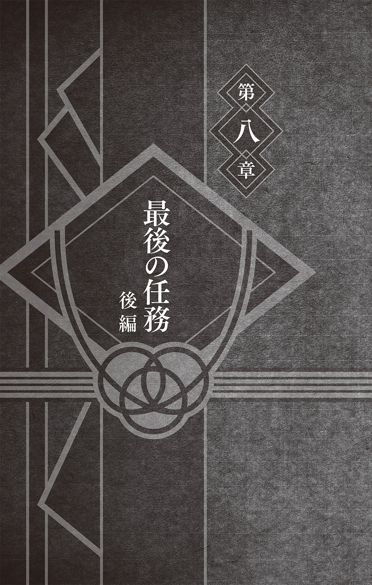
「さて......いよいよだな」
「第八班最後の任務だ！ 行くぜお前ら！」
気合い充分といった様子で、キバが声を張りあげる。
シノとキバ、そして赤丸は、長い道のりを経て空区の入口にたどり着いていた。
太い朱色の柱に支えられた立派な門をくぐって、街に足を踏み入れる。
直後、目の前に広がった光景に、一行は息を吞んだ。先ほどまでやたらと張りきっていたキバですら、神妙な面持ちになってしまっていた。想像以上だった。
無数の建物の群れ――とでも表現しようか、壁が剝がれ落ち、傾いた看板は色褪せ、窓ガラスも割れている店の数々が、競い合うかのようにごちゃごちゃと建ち並んでいた。
もちろんそこには誰もいない。無人の廃墟が、延々と続いていた。
街の中心には背の高い建物も多く乱立しており、かつてはかなりの数の人たちがこの場所で暮らしていたことを物語っていた。空区がどうしてこうなっているのか、元いた住人たちはどこに行ってしまったのか、シノとキバはそれを知らない。
ただ、見たことすらないはずの、活気にあふれていたであろう当時の光景を、気がつけば想像してしまっていた。ここには親子がいて、兄弟がいて、友達がいて、恋人がいて、きっと木ノ葉隠れの里となにひとつとして変わらない人々の営みがあったのだ、と。
あたりは、ひっそりとしていた。物音ひとつしない。ごくまれに、風の音が聞こえるくらいだ。壊れた窓から建物内に吹きこんだ風が音を立てるのだろう。静寂の中、どこまでもむなしく響く風の音が、さながら廃墟群があげる悲鳴のように感じられた。
シノは、栄枯盛衰という言葉を思い浮かべた。
だが、この有り様を、そんなありきたりなたったひと言で表してしまっていいものなのだろうか。そう躊躇してしまうほどに、あまりにも物悲しい光景だった。
「寂しい場所だ。本当に人など住んでいるのか......？」
シノがぽつりとつぶやくと、キバが鼻をぴくりと動かした。
「間違いなくいるぜ......。どうやら、それなりの人数がな」
キバが、「こっちだ」と先頭に立ち建物に入っていく。赤丸とシノもそれに続く。
建物内もまた、外と同じようにごちゃごちゃしていた。
ふたりと一匹は、薄暗く長い通路を慎重に進んでいく。複雑に入り組んだ通路は、まるで迷路のようだ。水なのかガスなのか不明だが、壁にはパイプ類が張り巡らされていた。
見たところ、もともとこのような造りだったわけではなく、長い年月をかけて増築をくり返していった結果このような奇妙な通路が生まれたようだ。
――やはり、侵入者対策だろうか......。
色がちぐはぐになっている壁を眺めながら、そんなことを考える。
「カビくせえなぁ。おまけに辛気くさい場所だぜ」
前を行くキバがそう口にした直後――
「辛気くさくて悪かったニャ」
壊れた換気用ダクトから、ぬるんと猫が躍り出てきた。
「なっ......!?」
突如として行く手に現れた猫の姿に、キバが動揺した。鼻で感知できなかったためだ。赤丸が身構え、低いうなり声をあげる。シノは瞬時にあたりを警戒した。
「その額当て、木ノ葉の忍ニャ？」
猫が話しかけてきた。どうやら周囲に他の猫はいないようだ。灰色がかった毛の猫で、鼻先と口もとの毛並みだけ白かった。爛々とした目でこちらを睨めつけてくる。
「犬くさい・虫くさい・犬そのもの。まったく、ろくでもないやつらだニャ」
シノたちをひとりひとり順に見やりながら、いきなりそんな暴言をぶつけてきた。
しかしキバは、そんなことは意に介さず、猫に向かって賞賛の言葉を贈る。
「こいつは驚いた。無臭とはな。たいした猫だぜ......！」
「忍猫は毛づくろいで身体の臭いを完全に消すのニャ。ただの猫とは違うのニャ」
「噂に聞いていた忍猫か......」
シノは、目の前の猫をまじまじと見つめた。
見た目は、どこにでもいるようなごくふつうの猫だ。仕草も、まるきり猫そのものだ。ただし、着物を着て、人の言葉をしゃべっていた。
空区には、猫たちの楽園というもうひとつの顔があった。廃墟となった街にはたくさんの猫たちが暮らしているという。多くはふつうの、つまりは人の言葉をしゃべらないただの猫なのだが、その中には忍猫という人語や忍術を身につけた驚異の猫たちがいた。
空区に住む闇商人の一族に代々仕えているという忍猫こそが、この街の実質的な支配者といっても過言ではない。忍猫たちは他のふつうの猫たちと協力し、昼夜問わず街全体に監視の目を光らせているらしい。そうして、侵入者を速やかに排除するのだ。
どうやら、天井や壁に張り巡らされたパイプの一部は、猫たちの秘密の通路になっているようだ。おそらくは建物中、いや、街中がこうなっているのだろう。どこへ行っても、猫の手から逃れることはできないように街全体が造られているのだ。
そんな忍猫たちがいるおかげで、この街の安全は保たれているというわけだ。
しかし、シノたちはあくまでも蜂蜜酒を探しに来ただけなのだ。悪さをしに来たと誤解されて追い払われてはたまらない。そこでシノは、できるだけ穏やかな声で話しかけた。
「オレたちは怪しい者ではない。人を捜している。情報が欲しい」
「長いコートでフードを目深にかぶったサングラスの男ニャ......！ とても怪しいニャ」
「確かに......」
なぜかキバが納得した。そのことに少しだけ腹を立てて、シノは語気を強めた。
「フードやサングラスを身に着けているからといって怪しい者とは限らない。なぜならオレは怪しくない者だからだ。そして、本当に怪しい者ほど、それを隠すためにまったく怪しいと思わせないような格好をしているものだ......」
「落ち着けよシノ。猫相手に声を荒らげてもしょうがねェだろ」
「さっきから犬くさくてかなわないニャ。ゲロを吐きそうニャ」
「アァッ!? おう猫てめぇコラそこに座りやがれッ!!」
「落ち着けキバ。冷静になるんだ。オレを見習うといい」
「さっさと立ち去るがいいニャ。出ていかないと八つ裂きにするニャ」
度重なる忍猫の挑発に、ついにキバが動いた。
「へっ、上等じゃねーか。情報を訊くのはつかまえて締めあげてからでいいよな？」
鋭い瞳で忍猫を睨みつけたまま、拳をバキバキと鳴らして、今度は肩と首を回す。
こうして軽く身体をほぐしていく。そして――
「行くぜ、赤丸！」
キバが床を蹴った。それとほぼ同時に、赤丸も走りだしていた。
「愚かな人間どもニャ」
そう言うと、忍猫は特に慌てることもなく天井を見上げた。そうして、後ろ肢の片方をグググッと持ち上げると、自身の首の付け根を激しく搔いた。
「あ？ なんだそりゃあ？」
そのままキバが忍猫に迫ったその瞬間――
「ギャイン！」
キバのとなりで、赤丸が甲高い声をあげて倒れた。
「どうした赤丸!? うっ、これはッ!?」
床の上でのたうち回る赤丸に続いて、キバもその場に崩れ落ちてしまう。
「あっ、ちょっ、これ、うあ、くうっ、うひぃ、かあっ、くっ」
赤丸と同じく床の上を転げ回りながら、奇妙なうめき声を漏らすキバ。無我夢中といった様子で髪の毛や服をバタバタとはたいている。
シノの眼は、忍猫の体毛から飛び出してきたある生物の姿を捉えていた。
「ほう、ノミか......。ノミを飛ばして攻撃しているのか。さすがは忍猫と名乗るだけのことはある。これは珍しい。さながら『忍法・蚤手裏剣』といったところか......」
「れっ、冷静に分析ィィッ、しっ、してないでッ、早くなんとか、してくれシノォォォ」
たくさんのノミに集られて、痒くて痒くてしょうがないのだろう。キバの悲痛な声と、赤丸の苦しげな鳴き声が、長い通路に響きわたった。
そんなキバと赤丸を救うべく、シノはその場に片膝を落とすと素早く印を結んだ。
「虫寄せの術！」
そう唱えて、床に手を付く。するとそこに、青いチャクラによって描かれた蜘蛛の巣のような模様が浮かびあがった。指先から、ちょうど扇形を描くようにして広がっていく。
すると、キバと赤丸に集っていたノミが、ぴょんぴょんと青いチャクラに引き寄せられて集まってきた。虫寄せの術とは、文字どおり近くにいる虫をおびき寄せることができるという油女一族の者なら誰でも使うことのできる基本的な術であった。
ちなみに、本来は昆虫採集や生態調査などに使用する術である。
「た、助かったぁ......」
よほど苦しかったのだろう、乱れた呼吸を整えながらキバが起きあがった。赤丸はまだ気持ちが悪いらしく、濡れたときのようにしきりに身体を振っていた。
「ノミにも勝てないとは、憐れにもほどがある犬っころだニャ」
「ナメやがってクソ猫が......っ！」
余裕の表情を浮かべていた忍猫に飛びかかるキバ。
「つかまえたぜっ！」
キバが、がっちりと忍猫を摑んだ途端、その身体がバラバラと崩れた。
「なにっ!?」
小石？ いや違う。あれは猫の餌――カリカリだ。確かに今しがたまでそこにいたはずの忍猫が、いつの間にかカリカリでつくられたニセモノに変わっていたのだ。
「なるほど、『猫餌分身』か......」
「感心している場合かよっ！」
「そろそろ去るがいいニャ。猫の顔も三度までニャ。この先は爪も出していく所存ニャ」
ゆらりと、通路の奥の闇の中で忍猫の目が光った。
忍猫たちはこうして侵入者を拒み続けているのだ。街と闇商人の一族を守るために。
だが、行商人が訪れているということは、無条件で追い返されるはずはない。
シノはそう考える。しかし、どうすれば忍猫の警戒が解けるのかわからない。
キバが苛立たしげに吼えた。
「ああくそっ、つかまえられねえ情報も聞けねえじゃどうしようもねェぞ！」
「情報が欲しければマタタビを用意するニャ。でも無理ニャ。お前たちはマタタビを持っていないニャ。ニオイでわかるんだニャ。犬くさいから早く帰ってほしいのニャ」
そうか。マタタビが通行証代わりとなっていたのか。迂闊だった。相手は猫なのだ。
「まずいぞキバ......。このままでは、埒が明かない。なぜならオレたちは、マタタビなどこれっぽっちも用意していないからだ......」
忍猫に聞かれないように、シノがキバの近くでそう囁いた。
「こうなったらオレの蟲で――」
「待てシノ。ここはオレに任せてくれ」
そう言ってキバは、腰のベルトに装着していたポーチから兵糧丸を取り出した。
「よし猫。これをやる。取り引きをしようぜ。養蜂家の居場所だ」
キバが兵糧丸を忍猫に向かって投げる。
「馬鹿にしてるニャ。これはどう見てもマタタビではないニャ。マタタビでは......」
クンクンと兵糧丸の匂いを嗅いでいた忍猫が、急に静かになる。そして、兵糧丸を舐めはじめた。ピンク色の舌でしきりにペロペロと舐め続ける。
「なんニャ？ なんだニャこれは？ マタタビが入っているニャ？」
そのまま、忍猫は床にへたりこんでしまう。マタタビを舐めたネコ科特有の状態だ。
「どうだ？ これで取り引き成立だろ？」
キバがニヤリと笑みを浮かべる。
「どういうことだキバ？ 兵糧丸にマタタビでも入れていたのか？」
「いや、ありゃあイヌハッカだ。マタタビと似た成分が入っている」
犬塚家特製の兵糧丸は、主に忍犬に食べさせることを目的としてつくられていた。それがまさか忍猫にも効果があるとは思わなかった。やはり、キバは頼りになる男だ。
忍猫は、兵糧丸に夢中になりながらも悔しそうに声を漏らした。
「ぐぬぬニャ。こんな犬くさいやつに丸めこまれるなどプライドが許さないのニャ」
そう言って、兵糧丸をぱくりと咥えたかと思ったら、そのまま走りだした。
「あ、オイ！ ねこばばするんじゃねえ！ このクソ猫が！」
脱兎のごとく、むしろ脱猫か？ とにもかくにも逃げだした忍猫をキバが追いかける。
「待ちやがれコラッ！」
そんなキバの怒鳴り声が、あたりに響きわたる。
忍猫を追うキバの背中を、シノと赤丸も追いかける。素早い忍猫を追って、迷路のようにくねくねと曲がる通路を駆け抜けていく。
そして、曲がり角をまがった途端、シノはその場で立ち尽くしていたキバの背中を眼前に捉えた。ぶつかりそうになりながらも、慌てて足を止める。
「どうしたキバ......見失ったか？」
訊ねるも、キバは振り返らない。
見ると、キバの目の前に、先ほどの忍猫を抱きかかえたひとりの女が立っていた。
綺麗な栗色の髪に、ぱっちりとした瞳の若い女だ。歳もそう変わらないだろう。
キバと女は互いに見知っているかのように見つめ合っていた。
女が、シノの様子を上から下まで見て後ずさる。
「待て。オレは決して怪しい者ではない......。ここにいるキバの仲間だ」
なにか言われる前に先手を打つ。すると、女の表情がやわらかくなった。
「そうだったんですか。いきなりだったので驚いちゃいました」
そう言って、女が微笑んだ。
「放すニャ！」
忍猫が身をよじるも、女の腕から脱出できないでいた。その様子を見てシノは訊ねた。
「この猫の飼い主......ということでいいのだろうか？」
シノの質問に戸惑いつつも、女が答えた。
「ええ。あ、あの、うちの猫がなにか......？ 大きな声が聞こえてきたもので......」
「人を捜している。兵糧丸を渡したのだが、なにも言わずに持っていってしまった」
「ああ、そうでしたか。取り引きはちゃんとしろっていつも言っているんですけど」
「こんな犬くさいやつとはごめんだニャ」
ジタバタしながら忍猫が叫ぶ。
「犬くさい......？ この人が？」
女が、キバをじっと見つめた。シノもまた、キバの様子を窺った。なぜだか先ほどからキバは、ぽかんと口を開けたままなにも言わないのだ。
「あの、すみません。うちの猫が、失礼なことを......。あっ、私はタマキと言います。武器屋です。そしてこの子はモモ。いつも私のことを守ってくれるんです」
女――タマキが名乗る。すると突然キバが、
「モモっていうんですか。きっ、奇遇ですねえ。うちの犬も赤丸っつーんですよハハッ」
などとわけのわからないことを言いだした。
一体、今の話のどこに奇遇の要素があったのだろうかと、シノは悩んでしまう。
心なしか、赤丸が憮然とした表情になっていた。こんなふうに、いつもとは違う御主人の姿を見たら、さすがに赤丸とてこうなるのだろう。
「忍犬使いなんですか？ すごい」
目を輝かせるタマキに見つめられ、キバが挙動不審になる。そわそわと、あっちを見たりこっちを見たり、髪の毛をいじったり髭をなでたりしはじめる。
「いや、まあ、へへっ、それほどでも......。あっ、ほら、すごいって言ってもアレだぜ？ オレなんか次期火影の内定をもらっているって程度の話だからな」
「そんなすごい方がなんでこんなところに!?」
タマキが驚愕する。赤丸がうつむいて「クゥーン」と悲しげな声で鳴いた。シノはなにも言わなかった。ただ、数分前まで「クソ猫が！」などと怒声をあげていたあのキバは、一体どこに行ってしまったのだろうとか、そのようなことを考えていた。
「――なるほど、養蜂家を捜していたんですね」
「ああ、友人の結婚祝いでな。蜂蜜酒を贈ろうと考えている」
「へえ、オシャレですね」
キバとタマキの会話を黙って見守る。なんとなく打ち解けてきたようだ。ふたりだけで会話が弾んでいる。シノは、自分と同じく会話に入れない赤丸の頭をよしよしとなでた。
どこか困っているような、なんとも言えない顔をしている赤丸が、なでられて気持ちよさそうに目を細めながらシノを見上げていた。蟲使いである自分が、こうして忍犬と長いこといっしょに過ごし、心通わせるようになるとは思わなかった。
ぼんやりとそんなことを考えていると、
「――じゃあ、案内しますね」
「知ってんのか？ そりゃありがてえ」
どうやら話がついたようだ。道案内をしてくれるらしい。タマキが、「この街は迷うから」と苦笑しながらキバと並んで歩いていく。無言のまま、シノと赤丸もあとに続いた。
複雑な通路を歩き回り、外に出たかと思ったらまた建物の中に入り、また外に出たかと思ったら、今度は似たような建物ばかりが集まっている細い路地を歩いていく。
「それで、その養蜂家ってのは、どんなやつなんだ？」
「んー、顔は見たことがないんですよねぇ」
「そりゃあ一体どういうことだ......？」
「会ったことはないんですけど、確かにいるというか......」
「なんだそりゃ」
そんな、和気藹々と語り合うキバとタマキの後ろ姿を眺めながら、歩き続ける。
案内はありがたい。これほどまでに複雑な街中では、さすがに現地の人に訊かなければ、いくらキバの鼻やシノの蟲があったとしても、目当ての養蜂家を見つけるには骨が折れたことだろう。実際、先ほどから出会うのは猫ばかりで、一度も人には会っていない。
崩れかかった塀の上、瓦礫の隙間、割れた窓ガラスの店の中、ありとあらゆるところから、猫たちの視線を感じる。一見すると、寝転がり前足なんかを舐めながら穏やかにくつろいでいるように見える猫たちだが、通りかかるシノたちを確実に視界に捉えていた。
シノは、あたりを見まわしながらふと思う。
物悲しい廃墟と、そこで日向ぼっこをしている猫たち。まるで、世界からある日突然人間だけが消えてしまったかのような光景だ。ここでは人間が異分子なのだ。
タマキと忍猫のモモがいなければ、今頃取り囲まれていたのではないだろうか。
件のモモは、見るからに不機嫌そうな様子でタマキのそばを歩いている。タマキが、キバと仲良さそうに話しているのが気に入らないのだろう。
身振り手振りを大袈裟にしながらキバが話すと、タマキがクスクスと笑った。
シノは、いつもどおり寡黙を貫いていた。
赤丸は、容赦のない猫たちからの視線に身をすくめて歩いていた。
そんな調子で一行は、すでに街はずれまでやって来ていた。
あれほどまでにごちゃごちゃと建ち並んでいた建物もしだいに数を減らしていき、ついに一軒もなくなっていた。その代わり――というわけではないだろうが、あたりには濃い霧が立ちこめはじめていた。しだいに視界が悪くなっていく。
これはただごとではないと、シノは気を引き締める。注意深くあたりを観察する。
一方、キバとタマキ、ふたりの他愛のない話はまだ続いていた。すぐそばにいるはずなのに、自分とこのふたりとの間にある空気はなにか違うと、シノは思った。
霧などおかまいなしといった様子で、タマキが続ける。
「あれ？ そういえば、この前木ノ葉の里でも会いませんでしたか？ 私、最近木ノ葉に引っ越したんですよねぇ。でも、今でもこうして、ちょくちょく空区にも里帰りしているんですよ。そうそう、この前うちのおばあちゃんが全裸で猫の群れに――あ、ここです」
不意に、タマキが立ち止まった。
おばあちゃんは一体どうなってしまったのだろうと思いながら、シノも足を止める。
見ると、霧の中に、ぼんやりと竹藪が浮かびあがっていた。
「この竹藪に住んでいる......はずです」
丁寧に案内してくれたわりには、ずいぶんと曖昧な物言いだ。
「はずってどういうことなんだ？」
「ええっと、つまり、誰も会ったことがないんです」
「それなのになんで養蜂家ってわかるんだ？」
「これを見てください」
タマキが、竹藪の前に建っている一対の石碑を指し示した。
石碑に巻かれた朽ちたしめ縄を見て、シノが静かにつぶやく。
「道祖神か......」
「はい。ここには毎日野菜などがお供えされます。ところが、次の日に来るとお供え物はなくなっていて、代わりに蜂蜜や蜂蜜酒の入った小瓶が置かれているんです。私たちは、そうして蜂蜜を置いていく誰かのことを便宜的に『養蜂家』と呼んでいるだけなんです」
「なんで誰も会いに行こうとしねえんだ......。ふつうどんなやつか気にならねえか？」
キバが呆れ顔を見せる。確かに、『ふつう』はそう思うだろう。
だが、ここは『空区』だ。
まともではないやつが住んでいる可能性は十二分にある。猫の目を恐れて大人しくしてさえいれば、流れ者だろうと脱獄犯だろうと、誰も気にしないのではないだろうか。
「道祖神があるのを見てわかるとおり、もともとここは神聖な場所なんですよね。だから空区の住人はわざわざ竹藪の中には入らないんです。どのみちなんの用もないですし」
えへへ、とタマキが笑う。
神聖な場所に何者かが住んでいることはどうでもいいらしい。
やはり空区の住人たちは、ふつうとはやや違う独自の考え方を持っているようだ。
「でもオレたちは用があるんだよなあ......。ここで何日もお供え物が蜂蜜酒に変わるのをぼんやりと待っているわけにもいかねーしな」
「どうせお前らには見つけられないニャ。猫ですら迷う竹藪ニャ」
モモが意地の悪い顔をして笑った。ようやく口を開いたかと思ったらこれだ。
だが、キバは動じない。
「オレたちは忍だ。迷わねーよ」
モモに向かってそう言うと、キバは霧に包まれた竹藪に足を踏み入れた。
タマキとモモに別れを告げ、一行は霧深い竹藪の中を歩いていた。
振り返ると、すでに入口は見えなくなっていた。なるほど、これは迷う。これでは空区の住人たち、タマキやモモが入りたがらないのも当然だ。
そしてどのみち、顔も知らない相手を捜すとなると、ここから先はシノやキバのような感知能力の高い忍でもなければ不可能だ。忍でないタマキの来る場所ではない。
もっとも、それを言ってしまうと、ここは忍ですら踏みこんではいけない場所なのかもしれない。道祖神は、人の住む世界と神の住む世界――その境界を分ける役目を持っているという。さながらここは、人の世界とは隔絶された神の世界ということだ。
ろくに前も見えないほどに立ちこめている霧が、よりいっそうそんな気にさせる。
「よっと......ひとまずこれでいいだろ」
キバが、近くにあった竹にクナイを投げた。
まだ入口からそう遠くないこの場所に、目印をつけておくためだ。
しばらく進んだら、またそこに目印をつけるつもりだ。この先、等間隔にそれをくり返していけばいい。これで、帰るときにも迷わずに済むというわけだ。
「まずはオレの鼻で捜すからよ、見つけたらお前の蟲を飛ばして......ぶぇくしっ!!」
キバが盛大にくしゃみをした。
「へっ、あの娘がウワサしてるのかもしれねーな......」
そして、ずずっと鼻を啜りながらそんなことを言う。
「......惚れたのか？」
シノがぽつりと口にした。すると――
「はぁ!? バッカおめぇ違げーよ！ べつにそんなんじゃねーし！」
キバがえらく焦りだした。いつもよりも必要以上に声を大にして否定する。
「オレは......お邪魔虫だったか......？」
「だから違げーって言ってるだろうがっ！」
「まもなくヒナタは結婚する......。キバ、これでお前まで結婚したらオレはいよいよひとりきりになってしまう。そのときは赤丸を置いていけ。なぜなら、言葉は通じなくとも、赤丸はオレの唯一の理解者だからだ......」
「は？ 意味わかんねー！ なんでそうなるんだよ！」
キバが吼えると、キバを見上げて赤丸も吠えた。
「ワン！」
「ばっ、赤丸!? お前までなんてことを言いやがる！ それに髭は関係ねェだろ！」
ひと声吠えただけなのに、なにやらそれなりのやりとりがあったらしい。キバが、耳まで真っ赤にして怒鳴り散らした。怒りか恥ずかしさか、両方だなこれは。
シノが黙って納得していると、キバはひどく乱暴な口調で言い放った。
「ああもうっ、ごちゃごちゃ言ってねーでいくぞオラ！」
そのまま背を向けてずんずんと歩いていってしまう。
「ったくよぉ......竹のニオイが強くて捜しづれェなあ！」
先ほどから、キバがずいぶんとぶっきらぼうになっている。
だがシノは、こんなキバのわかりやすいところを気に入っていた。もちろん、気に入っていたといっても、それは『今となっては』という話だ。
初めて会った時は、自分とまるで真逆な性格ゆえにイライラすることのほうが多かった。
忍者学校の休み時間、シノがいつも机の上で蟲たちを散歩させていたのに対して、キバは級友たちと大声をあげながら廊下や校庭を走り回っていたし、授業中は授業中で、黙って先生の話を聞いているシノに対して、キバは寝ているか騒ぐかのどちらかだった。
つまりは、キバはナルトに次ぐ......どころか、自分が一番目立っていないと気が済まない性格だからだろう――ナルトと競い合うようにしていたずらをしたり騒ぎを起こしたりしていた問題児だったのだ。こいつとだけは同じ班になりたくないと思ったものだ。
しかし、今シノは、そんな元問題児とともに任務をこなしている。いつの間にか、こうしてふたりでいっしょにいるのが当たり前になっている。人生とはわからないものだ。
なぜだか昔のことを思い出しながら、歩を進めていく。
視界は、相変わらず悪かった。似たような景色が続いていた。乱立する竹の間を、濃い霧が漂っている。絵に描いたような風景だなとシノは思った。
「ちょっと待て。おかしいぞ......」
いきなり、キバが低い声でつぶやいた。
「竹のニオイじゃねえ......なんだこの微かな甘い香りは......？」
鼻をぴくりとさせて、キバがあたりを見まわした。もちろん、シノにはキバの言う甘い香りとやらを感じ取ることはできない。それくらい微かなものなのだろう。
が、目の前の異変には、すぐに気づいた。
「キバ......あれを見てみろ......」
シノが指し示した先――そこには、クナイの刺さった竹があった。
入口付近で、目印にとキバが投げたクナイだ。それからしばらくの間、前へと進み続けていたはずだ。それが目の前にあるはずがない。
「幻術か......？」
違和感を覚えながら、シノはとっさに身体の中の蟲たちをざわつかせた。体内のチャクラをわざと乱して、幻術を解除しようとしたのだ。しかし、まったくなにも変わらない。本来ならば遥か後方にあるはずのクナイは依然としてそこにあった。
「くそっ、解除できねえ......なんだこりゃあ？」
声をひそめながら、キバが鋭い視線をあたりに向ける。
「『狐狸心中の術』ってやつかシノ？」
「『魔幻・此処非の術』にも似ているが......どちらも違うな......」
木ノ葉屈指の幻術使いである紅のもとで学んできたふたりだ。正直、他の忍たちよりも幻術の知識には自信があった。無論、対処方法もしっかりと叩きこまれている。しかし、それでもこんな術は聞いたことがない。そもそも、これがただの幻術ならば、とっくに解除できているはずだ。ということは、幻術に似た別のなにか......なのだろうか？
「しゃあねーな。とりあえずオレと赤丸の牙転牙で直進してみるか？」
キバが、もっともシンプルな答えを導き出した。竹を避けながら道なりに進むのではなく、それを無視して一直線に進んでみるというのだ。シノは無言のまま頷いてみせた。
「よしっ、それじゃあ行くぜ赤丸！ ......赤丸？」
キバが、きょろきょろと周囲を見まわした。シノもあたりを確認する。ふたりして、霧の中に目を凝らしていく。しかしいくら捜しても、先ほどまで確かにそこにいたはずの赤丸がいないのだ。赤丸が、鳴き声ひとつあげることなく跡形もなく消えてしまっていた。
「噓だろ......赤丸！ おいっ、赤丸！ なんでだよ!? 赤丸のニオイが消えてる！」
突然のことに、キバが取り乱した。そして、濃霧の中に飛びこんでいく。
「どこだ赤丸!? 返事しろ！ 赤丸！」
「待てキバ！ 落ち着け！」
シノは慌ててキバの後を追う。赤丸を呼びながら走るキバの背中が、深い霧に包まれていく。近くにいるはずなのに、霧のせいで距離がうまくつかめない。走っても走っても、キバに追いつくことができない。すぐに、キバの姿が見えなくなってしまう。
「シノ......ニオイが強くなってるぜ。今ならお前にもわかるはずだ。こいつは、そうか、蜂蜜のニオイだ......。この甘い香り......間違いねえ......！」
霧の中から声がした。同時に、キバの気配が消えた。
「キバ......！」
刹那――シノの周囲に、無数の寄壊蟲が姿を現した。
シノが両腕を振るうと、寄壊蟲はシノを中心として素早く前後左右に散っていく。さらには上空にまで舞い上がり、あたり一帯は、さながら黒い霧に包まれたようになった。
しかし一斉に飛び立った蟲たちは、シノの思ったとおりには動いてくれなかった。
なにも見つけられずに、すぐに引き返してきたのだ。
「馬鹿な......」
二度、三度と蟲を放つが、そのすべてが同じ反応を示した。周辺に生えている竹の間を行ったり来たりしながら、なにも見つけられずに帰ってきてしまう。
所在なげにふらふらと周囲を飛び回る蟲たちの様子に、シノは冷や汗を流していた。
チャクラに反応するはずの寄壊蟲が、なににも反応しないということは、つい先ほどまでそこにいたはずのキバの存在そのものが、きれいさっぱり消えているということを意味していた。ただ霧が深くて見失っただけではないということだ。
――ありえない......。
シノは必死に思考を巡らせた。消えてしまう前に、キバが最後に言った言葉を思い出す。甘い香りが強くなっている、蜂蜜の匂いがすると言っていた。そして、それはシノにもわかるくらいに強い匂いだとも言った。だが、いくら感覚を研ぎ澄ませても、シノには蜂蜜の甘い香りなんて微塵も感じられないのだ。
しかしながら、そうやって己の感覚を研ぎ澄ませて集中していたことが功を奏すことになる。シノは、なにも見つけることができずに戻ってきてしまった蟲たちの羽音の中に、いつもとは違う別の羽音が混じっていることに気づいたのだ。
はっと見上げると、霧の中から複数の影が飛び出してきた。寄壊蟲とはくらべものにならないくらい大きな体。黄色と黒の警告色。スズメバチだ。
スズメバチが、一直線にシノ目がけて飛んでくる。
シノは、とっさに近くにいた蟲を駆使して飛来するスズメバチを薙ぎ払った。黒き刃と化した寄壊蟲が、霧の中を縦横無尽に飛び回る。すると、不意にスズメバチの体がどろりと溶けた。そして、攻撃を仕掛けた蟲を次々と包みこんでいった。
「なにっ!? この技は......！」
蟲たちを巻きこんだまま、粘性の強い液体がぼとぼととシノの周囲に降りそそいだ。
――蜂蜜......か？
キバの言っていた甘い香りが霧に混じる。
ここに来てようやく、シノの鼻でも蜂蜜の匂いを感じ取ることができるようになっていた。しかもそれが、しだいに強くなってきている。
再び、霧の中からスズメバチが飛び出してきた。シノもまた、蟲を操って迎え撃つ。
――竹が邪魔だ......。
それは、時間にすればコンマ数秒という僅かなものであった。
乱立する竹と竹の間を器用に飛び回り、竹を盾にするように動いたスズメバチを攻撃しようとシノの注意が一瞬そちらに向いてしまったまさにそのとき――
シノの足下に散らばった蜂蜜が、再び獰猛なスズメバチへと姿を変えていた。
しまった......！ と思ったときには、スズメバチはすでにシノの懐に飛びこんでいた。シノの白い首筋に、その毒針が容赦なく叩きこまれる。シノの身体が、ぐらりと揺れた。
ただのハチ毒ではない。対忍用に調合された毒であった。
スズメバチの操り方といい、その毒性をここまで強めて育てあげていることといい、これはずいぶんと腕のいい蟲使いだ。ハチ使いのことを養蜂家とは、よく言ったものだ。
姿の見えぬ敵の正体を確信するのと同時に、シノはその場に倒れ伏した。
しばらくして、霧の中から音もなく敵が姿を現した。
一歩一歩、倒れ伏したシノに向かって近づいてくる。
異様な姿であった。
顔は、ハチの顔を模した暗部面で隠れていて見えない。だが、見えないのは顔だけではなかった。面以外の全身ほぼすべてを、群がる無数のミツバチが覆っていたのだ。
いや、むしろ人の形をしたミツバチの群れと言ったほうがわかりやすいか。
これこそが、誰もその顔を見たことがないという空区に住まう養蜂家の姿であった。
全身に蜂をまとった養蜂家が、ゆっくりと歩いてきた。
「木ノ葉の、油女一族だな......」
倒れたシノを見下ろして、つぶやく。静かだが、張りのある声だった。少年のようにも聞こえるが、線の細い青年のような声にも聞こえる。落ち着いた女の声と言われればそのような気もしてくる。そんな中性的で不思議な声だった。
「そのとおりだ」
シノは、そんな中性的な声に背後から答えた。倒れ伏していたはずのシノが、ぼろぼろと崩れていく。それは何千、何万もの蟲によって精巧に形づくられた蟲分身であった。
「この私を欺くとは......たいしたやつだ......」
特に感情のこもっていない声とともに、養蜂家が周囲を見まわした。分身を解いた蟲も加わり、すでに養蜂家はシノの操る寄壊蟲によって完全に包囲されていた。
主人の危機を察してか、全身を覆ったミツバチが、せわしなく動き回る。
「だが、なぜだ......確かに毒は......」
食らわせたはず――そう言いたいのだろう。
事実、確かにシノは毒を食らっていた。というのも、確実に毒を食らっていなければ、この手の敵は絶対に姿を見せないものだと理解していたからだ。だからシノは、あえて敵の毒をその身に受けた。シノにはそれができるだけの確固たる自信と覚悟があった。
「毒は食らった。だが問題ない。なぜなら、この程度の毒ではオレは死なないからだ」
シノは力強くそう口にした。
体内にいる蟲たちのおかげで、ある程度の毒ならば中和できた。
特にシノは、同じ一族で今は亡き油女トルネが使用していた燐壊虫という極小の毒蟲を研究し、自身の蟲に毒に対する耐性を身につけさせていた。
これによりシノは、強力な毒をも瞬時に中和させることを可能にしていた。幼い頃から兄弟同然に育ってきたトルネの、遺産とも言える蟲がシノを救ったのだった。
「まいったな......私の負けだ」
すでに勝負がついていることを悟ったのか、抵抗することなく養蜂家が負けを認めた。
「目当ては私の命か......。ここまで腕のいい蟲使いに倒されるのであれば本望だ......」
「いや、オレの目当ては......蜂蜜酒だ......」
緊迫した空気の中、シノがそうつぶやいた。
「二本......もらいたい......」
キバがいないからか、ただひたすらに静かだった。
「うちに、来るか......？」
ハチの顔をした暗部の面が振り返った。
かつて岩隠れの忍であったという養蜂家は、追っ手を恐れながらこの場所で静かに暮らしているという。つまりシノは、追っ手と間違えられて襲われたというわけだ。
「キバと赤丸......犬大好き人間とその愛犬がいたと思うんだが、どうした......？」
「安心しろ。無事だ。まだ霧の中を彷徨っている......」
そんな会話とともに養蜂家の家へと向かう。
「なぜ先にオレを狙った......？」
「蟲使いを先に叩いておかなければ厄介だからだ......」
「そうか......」
静かなやりとりを重ねていく。だいぶ会話が弾んでいるなとシノは思った。
シノは、岩隠れの里にいたという蟲使いの一族のことを知っていた。今では滅びかけているハチ使いの一族だ。この養蜂家は、その一族の末裔なのだろう。
「ここだ......」
養蜂家が立ち止まると、深い霧の中に一軒の小さな家が姿を現した。茅葺きの簡素な一軒家である。庭先には、ハチの飼育箱だろう――竹を編んでつくられた籠が並んでいた。
霧に覆われた竹林の間にひっそりと佇んでいる茅葺きの家。
まるで、物語に出てくる忍の隠れ家のような雰囲気だ。いや、実際に本物の抜け忍が隠れ住んでいるのだ。まさにそのものズバリというわけだ。
シノが家を眺めていると、養蜂家が蜂蜜酒を持ってきてくれた。受け取ると、琥珀色に輝く美しい液体が、瓶の中で静かに揺れた。
「すまない。いくらだ......？」
「お金はいらない。持っていても意味がないから......」
養蜂家が静かに答えた。この場所でずっとひとりで暮らしているのだ。お金とは無縁の自給自足の生活を送っているということか。シノはまた「そうか......」と短く返した。
「ついでに、帰り道を教えてくれるとありがたい。霧が深いからな......」
蜂蜜酒を持ってきた背囊に詰めて、なにとはなしにシノは訊ねる。すると――
「ないよ」
さらりと、そんな答えが返ってきた。
「どういうことだ？」
「帰り道はないと......そのままの意味だ......」
養蜂家は、近くの岩に腰掛けると、面の奥の瞳でじっとシノを見つめてきた。
「この竹林は結界のようなもので覆われている。一度足を踏み入れたら出られない......。見わたす限りの霧の中で、どこまでも迷い続ける。これは、そういう術なんだ......」
「術を解くわけにはいかないのか......？」
シノが訊ねる。
「残念だが、術は解けない。これは、私が私自身にかけた術だからだ......」
あまり残念ではなさそうな口ぶりだった。先ほどから、養蜂家の声にはあまり感情というものが感じられない。落ち着いているといえば聞こえはいいが、どこか平坦なのだ。
「仮に、今この場で私を殺しても解けないだろう......」
中空に視線を移した養蜂家が、そうつぶやく。
「この霧には、もともと人を惑わす特殊な成分が含まれていた......。私はそれをほんの少し利用して術式に組みこんだだけなんだ......」
シノもまた、たゆたう霧を見つめていた。この霧にそんな成分が......。そんなことが、果たして本当にありえるのだろうか。だがしかし、ありえないとは言いきれない。
養蜂家に、敵意は感じられなかった。その全身を覆っているミツバチにも敵意はない。
とても噓をついているようには思えなかった。
そしてシノは、父・シビから不可解な話を聞かされていたことを思い出す。
雲隠れの里には、不思議な滝があるという。激しい水飛沫をあげながら流れ落ちる大きな滝だ。その滝と向かい合うと、自分の本当の姿、真実の姿が映し出されるのだという。
にわかには信じがたい話だが、世の中にはそんな滝も存在しているのだ。ならば人を惑わす霧があってもおかしくはない。幻術ではないなにかも、この霧のせいということか。
シノは、家の周辺を歩き回ってみる。
どこまでも続く霧。どこまでも続く竹、竹、竹......。
変わり映えのしない風景が延々と続いていた。
蟲を飛ばしながら、試しに真っ直ぐ歩いてみても、しばらくすると目の前に養蜂家の家が現れた。そのままそこを通り過ぎて、今度はより慎重に歩き続けても、また岩に腰掛けたままぼんやりとしている養蜂家のもとにたどり着く。
――霧の成分のせいで、蟲すら迷っているということか。
蟲が役に立たない。出口がない。キバと赤丸にも会えない。八方塞がりだ。
それでもシノが、周囲の様子を探っていると、養蜂家が口を開いた。
「私は人生という名の道に迷ってここにいる......。だが、ここでの生活も悪くはない。むしろ私は、こういう生活を望んでいた。ここには今しかない。過去も未来もなく、ただ今だけがある。私は今を生きている。それだけで充分だとは思わないか......？」
養蜂家が、静かに、ゆっくり、淡々と、思いを口にしていく。
「ずっと逃げてきた。戦うことからも、忍の道からも。もともと性に合わないと思っていたんだ。だが、私は蟲使いの一族の家系に生まれ育った。忍として生きていくより他に、道はなかった......。だから、すべてを捨ててここに逃げこんだ。はじめからそれしか道がないのであれば、ずっと迷い続けて前に進まなければいいだけの話だ......」
ぽつりぽつりと紡がれる言葉が、真っ白な霧の中に溶けていく。
シノは、黙って話を聞いていた。
「人はみな迷う。私だけではない。忍でも商人でも、男でも女でも誰にでも、そしてもちろん君にも、迷いは必ずある。だから今、君はこうして霧の中で迷っているんだ」
養蜂家にそう指摘される。
「オレが......迷っている......？」
いつの間にか、喉がカラカラに渇いていた。シノはごくりと固唾を吞んだ。そして、なぜだろうか、気がつくとシノは、ヒナタと紅の顔を思い浮かべていた。
ヒナタとともに修業をしたことを思い出す。
紅のもとで任務をこなした日々を思い出す。
ヒナタは、やっとできた仲間だった。紅は、物静かな自分をよく理解してくれた。
だが――
ヒナタはまもなく結婚する。今も結婚式の準備で忙しい。
紅は子育てに忙しい。今では一線を退いてしまっている。
ふたりとも、すでにそれぞれの道を歩んでいた。
シノは、そんなふたりの後ろ姿を黙って見つめていた。
もう二度とあの頃のように第八班がそろうことはないのだろう。永遠に。
冷静を装うが、シノの呼吸は着実に荒くなっていた。霧が、肺の中に満ちていく。
――これが、オレの迷いだというのか......？
ヒナタも紅も、みなが前に向かって進んでいく中、ただひとり自分だけがその場に取り残されてしまっているかのような感覚に陥る。どこにもたどり着けず、どこにも落ち着けず、たゆたう霧のように、自分だけが前に進めていない。そんな気持ちになってくる。
これは、霧によるまやかしなのだろうか......？ いや違う。ずっとずっと考えていたことだ。ここに来てからも、ここに来る前からも、自分はずっと、迷っていた......。
そして、思っていたのだ。心のどこか片隅で。自分でも気がつかないうちに。
あの頃に戻りたい、と。
もう一度、みんなとの、第八班としての日々を送りたい、と。
「自分の迷いに......気づいたようだな......」
養蜂家が、シノを見つめていた。シノはその場に呆然と立ち尽くしていた。もう一歩も前に進めそうになかった。いくら前に向かって進んだとしても、どうせ出口にはたどり着けないのだから。もはや霧のせいで、前すら見えなくなっているのだから。
「前に進む必要などない。すべてを捨てて、ここでずっと迷っていればいい......」
養蜂家のやさしい言葉が、霧とともに身体の奥底にまで染みこんでくる。
ああ、それもいいかもしれないと、シノは考える。
これ以上先に進めないのだとしたら、これ以上先に進んでも自分の居場所がないのだとしたら、ここでただ、変わらぬ今を過ごしたい。そのほうがきっと幸せなのかもしれない。
養蜂家が、手を差し伸べてくる。ミツバチが、ざあっと動いて真っ白い手が現れた。
「君さえ良ければ、私といっしょに――」
シノは、差し伸べられた手をじっと眺めていた。
すると不意に――
第八班最後の任務だ！ 行くぜお前ら！
そんなキバの言葉を思い出した。キバの気合いの入った声が脳内で響きわたる。
――そうだ、これは......第八班最後の任務だ......！
その瞬間、不明瞭だった視界が、突然ぱっと開けたような気がした。ぼんやりとしていた頭が一気に冴えわたってくる。心なしか、あたりの霧が薄くなってきた。
「オレは、こんなところで立ち止まっているわけにはいかない。急いで里に帰らなければならない。なぜなら、大切な友の結婚式に出席しなければならないからだ......！」
サングラスの奥の瞳で、しっかりと前を見すえる。
すると、シノは自分のすぐ近くの竹にクナイが刺さっていることに気がついた。
入口付近で、目印にとキバが投げたクナイで間違いない。今の今まで近くにあったことにすら気づかなかったのだ。そして、これがここにあるということは――
なにげなく振り返ると、道の先に竹藪の入口が見えた。遠目ながら、ちゃんと一対の道祖神の姿も確認できる。間違いなくシノたちが入ってきた場所だ。
「入口......いや、出口だ......」
それもすぐ目の前に、と指し示す。
「.........？ 私には、なにも見えないよ......深い霧だけしか......」
養蜂家が、軽く小首を傾げた。声の様子から、どうも本当に見えていないらしい。
ここにきて、シノはようやく理解した。実に単純な話だ。
人を惑わす霧。その霧を使った術。人はこの霧の中で道に迷う。ここには過去も未来もない。だからこの霧には永遠の今しかない。そういう話だった。
だが、それはつまり、過去から逃げて未来を捨てているということ。
養蜂家の言っていたように、忍としての訓練を積もうが、どれだけ年齢を重ねようが、生きている限り誰にでも迷いは生じるものだ。しかしそれでも、なにがあろうと諦めずに未来を信じて進む者の前では、この霧はなんの意味もなさないのだ。
しっかりと、着実に、希望を胸に一歩一歩自分を信じて前に進むことさえできれば、たとえ深い霧に囚われ迷いそうになったとしても、やがて霧から抜け出せるということだ。
シノは、やれやれと苦笑した。霧がどこか人生に似ているように思えたからだ。
「君には道祖神の先に道が見えたのか......。そうか......」
養蜂家が、うつむいた。そうして、静かにつぶやいた。
「早く行くといい。また道を見失わないうちに......」
相変わらず平坦な口調で、感情は伝わってこない。だが、ぽつんとひとり岩に腰掛けているその姿がどこか寂しそうに見えてしまうのは、ただの思いこみだろうか。
いや、違う。
あたりを包みこむ霧も、どこまでも続く竹林も、人を寄せ付けない小さな家も、身にまとったミツバチの群れも、顔を隠す暗部の面も、そのすべてが、養蜂家にとっての結界であるということをシノは理解していた。
なぜならシノ自身も、長いコートやフードを好んで身に着けるから。
これは身を守るための盾なのだ。肉体的にというよりは、精神的に。
シノにはその気持ちが痛いほどよくわかる。
だから、正直そこに土足で踏みこんでしまっていいものなのかどうか迷う。
こんなことでさえ、人は迷うものなのだ。だが――
未だ深い霧の中にいる養蜂家を、このまま放っておくのは忍びなかった。同じ蟲使いの一族に生まれた忍として、思いこみだろうが余計なお世話だろうが、今このままなにも言わずに背を向けてしまったら必ず後悔すると、シノは思った。
そして、こんなときどうすればいいのか、シノはすでにその答えを知っていた。
こういうときは、やらずに後悔するよりも、やってみて考えるべきだ。なぜなら――
「お前は今を生きていると言った。だが、オレはそれは違うのではないかと思う」
――ナルトならこうするからだ。
「すべてから逃げている者に、果たして今があるのだろうか。過去ばかりを引きずり、未来を見ないようにしている者は、本当に今を生きているのだろうか。やがて過去となるはずの今を永遠にしてしまう者に、未来が見えるはずがないと、オレはそう思う......」
そう言って、シノは蜂蜜酒の入った背囊を背負い直した。これほどまでに、口下手な自分を恨めしいと思ったことはなかった。霧の中で迷いながら、ただただ無為な日々を過ごすのではなく、本当の意味で今を生きてほしいと伝えたかった。
未来への確固たる意志を持って前を見つめさえすれば、ただそれだけで霧は晴れるのだと伝えたかった。だが、うまく伝えられたかどうか定かではない。
うまくはいかないものだと、シノは背を向けて歩きだした。
すると――
「驚いた......」
それまで黙ってシノの話を聞いていた養蜂家が、口を開いた。
「意外だったよ。物静かな男だとばかり思っていたが、言葉や表情に出さないだけで、ずいぶんと熱い内面を持っているようだな......。熱血教師に説教された気分だ......」
静かにそうつぶやく。
口調はこれまでどおり平坦で、面を着けているため表情もわからない。
しかし、それでもきっと、苦笑していた。
「教師か......考えたこともなかったが、相方が元問題児だからな......。オレの同期には問題児が多い。極度のめんどくさがり、食い意地が張っている、いたずら小僧......。まともなのはオレくらいだろう。それでも、みな今では立派な大人になっている。逃げずに懸命に今を生きた者たちだからこそ、そういう未来にたどり着いたんだ......」
仲間たちの顔を思い浮かべながら、シノは答えた。
そして背囊を指し示すようにしながら、
「世話になった。オレは行く」
蜂蜜酒のお礼も兼ねて、そう言った。
「犬の子はどうする......？ 君と違って出られないかもしれないぞ......？」
背後から聞こえてきたその問いには、もはや振り返るまでもなかった。
「あいつはオレよりも真っ直ぐだ。道には迷わない」
確信を込めた言葉とともに、シノは出口に向かって歩いていった。
霧を抜けると、青空が広がっていた。シノはコートのポケットに手を入れると、道祖神の前でじっと待った。足下で行列をつくっていたアリを眺めて時間を潰す。
しばらくすると、竹藪の中から声が聞こえてきた。
「ひゃっほ〜、ようやく出口だぜ赤丸！」
すぐあとから「ワンワン!!」と、聞き慣れた鳴き声も聞こえてくる。
泥だらけになって竹藪から飛び出してきたキバに、シノは声をかける。
「遅かったな......キバ」
「うおっ」
ぬっと真横に立ったシノを見て、キバが仰け反った。
「ニオイでわかっちゃいるけどよ、お前もっとふつうに出てこられねーのか！」
心臓に悪いんだよ、と文句を言いながら、キバは顔の泥を手ぬぐいで拭った。
「だいぶ苦労したようだな......」
「してねーよ！ 余裕だァ！」
キバが強がる。わかりやすい男だ。
これは相当迷いに迷ったのだろう。シノがそうだったように、なんらかの悩みや未来への不安を幻術のように体験したのかもしれない。だが、キバはこうしてここにいる。
一体なにに迷い、どんな未来を夢見て進んできたのか......。
少しだけ気になったので、訊ねてみることにする。
「あの女に、告白でもするのか......？」
鎌をかけてみると、キバの顔が真っ赤になった。
「はあっ？ なんでだよっ!? なんで急にお前までタマキの話になンだよ!?」
「ほう......『お前まで』か......」
つくづくわかりやすい男だ。だが、そこがキバのいいところだ。
「だから違げーって言ってんだろ！ あのなシノ、わかってねェなあ......。そんなだからおめぇはモテねーんだよ。いいか、男ってのはなァ、ガツガツしてるとダメなんだよ」
努めて冷静を装っているのだろうが、その顔はまだ真っ赤だ。
「では、男はどうすればいい......？」
「えーっと......まずアレだ。あの......アレだよほら」
しどろもどろになりながら、冷や汗ダラダラの状態でキバが続けた。
「あーっと、そう文通！ 文通あたりからはじめるのがいいらしいぜ？」
「『らしい』......？」
「いや、文通だぜ！ 文通からはじめるのがモテる男ってもんだァ！ な、赤丸？」
苦しくなってきたのか、赤丸に助けを求めるキバ。赤丸が目をそらした。
「それよりもだ、さっさと蜂蜜酒を探さねーとまずいぜ。日が暮れちまう！」
「それはすでに手に入れた。帰るとしよう......」
「噓だろっ!? オレなんもしてねーじゃねェか！」
驚愕するキバを尻目に、シノは歩きだした。赤丸は、その場で固まってしまったキバを見上げる。そして「ワン！」と吠えながらスタスタと歩きだした。
「ちょっ、ちょっと待てよ！ ったく、なんでナルトといいお前といい、いつもおいしいところばかり持っていきやがるんだ！ オレだって霧の中で活躍してたんだからな！」
キバが恨み言を言いながら追ってくる。
霧の中でキバになにがあったのかは、赤丸だけが知っているということか。赤丸もなかなかに無口なので、キバの活躍をあれこれと言いふらしてはくれないだろう。
そんなことを考えながら歩いていると、
「おいシノ、見てみろよ！」
キバが声をあげた。何事かと振り返ると――
竹林の霧が、晴れていた。
それほど広くはない、ごくふつうの竹林だった。
「なんだよなんだよ今頃晴れてよぉ、くっそ......オレがどれほど迷ったか......」
やはり相当迷っていたのか、余裕だと強がったことも忘れてキバがぼやいていた。
しかしキバは、この霧の本当の意味を知らない。
この霧がこうして完全に晴れているということは――
「そうか......晴れたか......」
シノが思わずつぶやくと、そんなシノの顔を見て、キバが目を丸くした。
「シノ......お、お前、珍しいな......。お前がそんなに笑うなんてよ......」
「ん？ どうしたキバ？」
「あ、あれ？ 見間違いか......？ おっかしーなァ......」
竹林と、目をぱちくりさせているキバに背を向けるとシノは再び歩きだした。
「急がねばならない。なぜなら、紅先生が待ちわびているからだ」
清々しい気分だった。空は晴れわたり、霧も晴れていた。
小走りで追いついて、シノのとなりに並んだキバが、目を細めながら太陽を見上げた。時間を把握するために、陽の傾き具合を見ているのだ。
「あーあ、ったく、誰よりも早く結婚祝いを見つけてやろうと思ってたのによぉ」
「まったくだ。だいぶ時間がかかってしまったな......」
「けどよ、オレたちの結婚祝いが一番だぜ！」
「当たり前だ。オレとキバ、そして赤丸、みなで力を合わせて手に入れたものだからな」
しばらくすると、しだいに廃墟の建物が増えてきた。行きと違って、あれほどまでに多くいた猫たちの姿はなかった。やはり猫たちは、こちらを監視していたのだ。今はもう、シノたちに害はないということを悟ったのか、姿を見せることすらしない。
あるいは、タマキやモモとともに歩いていたことで、認められたのだろうか。
なんだかこの廃墟の街そのものに認められたような、そんな気分になる。
路地が入り組んできたところで、シノは指先から一匹の羽虫を飛ばした。
念のため、複雑な行程を覚えさせておいた個体だ。それを見て、キバが口笛を吹いた。
「気が利くねえ。ありがてぇぜ」
「ついていけば出口にたどり着ける」
迷うことなく飛んでいく羽虫を追いながら、シノはつぶやいた。
「これで第八班最後の任務......完了だ......！」
なんとなく、自分の口で言っておきたかったのだ。誰でもない、自分自身に言い聞かせるために。しかしそうなると、自称第八班の頼れるリーダーことキバが黙っていない。
「なんでおめぇが仕切るんだよっ！ それになあ、里に帰るまでが任務だろうが！」
「もっともだ」
素直に首肯して、これから先のことに思いを巡らせる。
「里に帰って、ナルトとヒナタ――ふたりの未来を見届けるとしよう......」
「お？ なんだ？ 今日は、やけに詩人だな」
「そうか？」
そんなやりとりをしながら、足早に進んでいく。
シノは、初めてキバと同じ班になった日のことを再び思い出していた。
「お前とはうまくやっていけそうにない。なぜならオレたちは――」
そんなことを言っていた。「なぜなら」のあとはほとんど言わせてもらえなかった。
あの頃は、未来に不安しかなかった。毎日憂鬱な日々を過ごしていた。
だが、どうだろう。
シノのとなりには今、最高に頼れる相棒がいる。
心を開いて語り合える親友がいる。
あの頃の自分に、もしもこのことを知らせることができたとしたら、幼い自分は一体どんな顔をするだろうか。なかなか悪くない未来だと思うだろうか。
しかし、これだけはハッキリしている。
――なかなか悪くない『今』だ。
たとえこの先、違う道を歩んだとしても、思い出は消えない。
その思い出の先、悪くない今の先にある未来ならば、恐れることはなにもない。
なぜなら――
シノは、ふと思い出したようにキバに問いかけてみた。
「それでキバ......内定が出ていると言っていたが、火影の就任式はいつになるんだ？」
「う、うるせぇなあ！ なれるようにがんばんだよォ！」
この絆――仲間とのつながりは、一生のものだから。
よく晴れた日だった。
里の中心、歴代火影の顔岩に見守られたその場所には、多くの人が集まっていた。
みな、正装をして、いつもよりも大人の装いになっている。
会場の設営から警備まで、ありとあらゆることに気を遣いながら、カカシは忙しそうに動き回っていた。なにせこの場所には、風影である我愛羅をはじめとする各里の影たち、他にも雲隠れの里のキラービーなど、そうそうたる面々が集まってきていたからだ。
五代目火影・綱手から助言をもらいながら、あれこれと指示を出すカカシのもとでは、さらに忙しそうにヤマトも動き回っていた。カカシに頼まれて、気がついたらいつの間にか、かなり面倒な雑用を任されてしまっていたのだ。だが、笑顔を浮かべたカカシから、「頼りにしているよ」なんて言われてしまうと、悪い気はしない。
ふだんは冷静沈着で、あまり表情を変えないヤマトが、やたらと機嫌良く、ニコニコ顔で雑用に励んでいた。先輩であるカカシを心から尊敬しているからこそのこの顔である。
そしてリーとガイは、ダンベルを持ってきて周囲の人たちを驚かせていた。
「こんな日にまで修業をしているなんて......」などと半ば呆れ気味に言われていたが、彼らが修業のためにそれを持参したわけではないということを、みなはまだ知らない。
テンテンは、熱く叫ぶリーとガイの保護者であるかのように、あれこれとふたりの世話を焼いていた。迷惑そうに、しかし、心底楽しそうに文句を言う。
シカマルは、テマリとなにやら話しこんでいた。難しい仕事の話かと思われたが、ふたりの表情は明るく、時々笑いが混じっていた。自然な笑顔を浮かべるふたりは、こうして並んで立っていても違和感がない。お似合いのふたりだ。
そんなふたりの姿を見つめながら、チョウジも微笑んでいた。
いい雰囲気のふたりの邪魔にならないようにと思いつつも、その頭の中ではすでに、会場に用意された色とりどりの料理を、どうすれば効率よくすべて取ることができるのかという難題の解決方法を模索していた。シカマルが考え出すような、なにかものすごい秘策が必要だと、チョウジは思考する。ただ、いくら考えても思いつきそうになかったので、すぐに片っ端から食べていくという結論にたどり着いて、チョウジは再び微笑んだ。
いい雰囲気といえば、いのとサイもだ。手をつなぎながらいっしょに会場入りしたふたりは、周囲から「熱いねぇ！」と冷やかされながらも幸せそうだ。
そのすぐ近くで、先ほどから何度も紅に質問をくり返しているのはキバだ。
キバは、蜂蜜酒を掲げながら意気揚々と「ナルトの野郎に千手一族の歴史を語り聞かせてやるんだ」と張りきっていたのだが、どうも歴史の理解が曖昧だったらしく、同じような質問を何度もくり返しては紅をうんざりさせていた。ついには即席で紅の歴史の授業がはじまってしまったほどである。紅の話を聞きながら、キバは慣れない手つきでちまちまとメモを取っていた。あとでカンペとして使うためだろう。
そのとなりでは、おめかしをしたミライが、赤丸の上にのって遊んでいた。
つまりはお馬さんごっこをしているわけなのだが、犬にのっても『お馬さんごっこ』なのだろうかと、シノはふと思う。そして、キバや赤丸の様子を眺めながら、蜂蜜酒を渡すのはいつ頃がいいだろうかと考える。やはり、切り札のように最後まで温存、様子見してからのほうがいいのだろうか。それとも、最初のほうがいいのか。
悩むところだ。なぜなら......と、シノは延々とひとり黙って考え事を続けていた。
会場には、次々と馴染みの顔がそろっていった。
一楽の店主テウチと、看板娘のアヤメも顔を見せる。
イルカは、会場に着いた頃からすでに感極まっている様子であった。
よく晴れた日だった。
サクラは、ひとり空を見上げていた。
そうして、同じ空の下、今もどこかで流浪の旅を続けているであろうあの人のことを考える。そうするだけで、この空と同じように、晴れやかな気持ちになる。
想う人がいる。
ただそれだけで、こんなにも幸せになれる。
まるで、天が祝福してくれているかのような、よい日だった。
そして――
日向ヒナタもまた、空の彼方に想いを馳せていた。
――ネジ兄さん......。
控え室の窓からは、雲ひとつない青空が見える。
――私、結婚します。
心の中でつぶやいて、ヒナタは、となりに立つ青年を見上げた。
精悍な横顔に、思わず胸が高鳴る。ずっと見てきたはずなのに、こうしているだけで、初めて出会った幼いあの日のように鼓動が速くなっていく。
青年の真っ直ぐな瞳の先にあるのは、火影岩だ。歴代火影の顔岩を見つめていたのだ。正確には、四代目火影・波風ミナト――自分の父親の顔岩を見つめていた。
そんな青年の横顔を見つめているだけで、ヒナタの胸はいっぱいになってしまう。
ああ、とヒナタは思う。
今、この瞬間――
こうして大好きな人のとなりに立てているということが、たまらなく嬉しい。言葉では言い表せないほど、嬉しい。幸せだと、素直にそう思う。
すると、ヒナタの視線に気づいたのか、青年と目が合った。
それだけで、ヒナタの頰は赤くなってしまう。そわそわしてしまう。
青年もまた、照れ笑いを浮かべていた。先ほどまでの精悍な顔つきから一転して、無邪気な少年のような顔になる。その様が、どうしようもなく愛おしい。
控え室に、ヒナタの父ヒアシと、妹のハナビがやって来た。そろそろ、時間のようだ。
ヒナタは、青年の腕を、ぎゅっと抱きしめた。
うずまきナルトと日向ヒナタ。
まもなく、ふたりの結婚式がはじまろうとしていた。
本書は書き下ろしです。
岸本斉史
１９７４年11月８日生まれ。岡山県出身。 年『カラクリ』でデビュー。年より週刊少年ジャンプにて『ＮＡＲＵＴＯ‐ナルト‐』連載開始。15年にわたってジャンプのトップを走り続け少年漫画の金字塔として国内外で絶大な支持を得る。
年『カラクリ』でデビュー。年より週刊少年ジャンプにて『ＮＡＲＵＴＯ‐ナルト‐』連載開始。15年にわたってジャンプのトップを走り続け少年漫画の金字塔として国内外で絶大な支持を得る。
ひなたしょう
ジャンプ小説新人賞Ｓｐｒｉｎｇ小説テーマ部門金賞受賞。年『バクマン。』スピンアウトノベライズ『ラッコ11号』と、『ヒキコモリパワード メタルジャック！』の２作品同時出版で異例のデビューを飾る。その他にも『斉木楠雄のΨ難』などのノベライズを手がける。
ジャンプジェイブックスDIGITAL
ＮＡＲＵＴＯ‐ナルト‐
木ノ葉秘伝 祝言日和
著者 岸本斉史／ひなたしょう
© 2015 M.KISHIMOTO/S.HINATA
２０１５年９月30日発行
この電子書籍は、ジャンプジェイブックス「ＮＡＲＵＴＯ‐ナルト‐ 木ノ葉秘伝 祝言日和」
２０１５年７月20日発行の第４刷を底本としています。
装丁 川畠弘行（テラエンジン）
編集協力 添田洋平（つばめプロダクション）
編集人 浅田貴典
発行者 鈴木晴彦
発行所 株式会社 集英社
〒１０１－８０５０
東京都千代田区一ツ橋２丁目５番10号
０３－３２３０－６０８０（読者係）
制作所 株式会社ＩＣＥ
本作品の全部また一部を無断で複製、転載、改竄、インターネット上に掲載すること、および有償無償に関わらず、本データを第三者に譲渡することを禁じます。なお個人利用の目的であっても、コピーガードを解除しての複製は、法律で禁じられています。
この本は縦書きでレイアウトされています。
また、ご覧になる機種により、表示の差が認められることがあります。
忍とは、堪え忍ぶ者だ、という。
不条理の中で忍耐するものだ、という。
事実である。
男は、そう確信している。
彼の生きてきた世界は、そうせねば生きられぬ場所であったからである。
砂。
それが男の生まれてより、親しんだ景色であった。
昼には摂氏四十度を超える高温になりながら、夜には氷点下にまで下がる、生物の存在を拒否する世界。
動植物はおろか、細菌すら生存を拒否する絶対の地獄。
それが、男の生きる世界である。
故に、男は堪え忍ばねばならぬ。
男の名を、我愛羅という。
＊ ＊ ＊
砂隠れの里は、そんな砂漠の片隅に、張りつくように存在するオアシスのひとつである。
奇妙な形に大地がくぼんだその地形は自然のものとは思われず、いずれ神話の時代、スサノオやアマテラスといった神々が、人智を超えた術を用いた結果ではないか、と囁かれていた。
その中枢、〈風影〉の執務室はごく質素なものである。
部屋の主である男、我愛羅は忍の多くがそうであるように、およそ奢侈というものに興味がなかった。
服などは着慣れたものがあればよいと思っていたし、部屋の調度などはごく一般的なものでいい、と思っていた。
それは彼の禁欲の表われでもあるし、かつて少年期、先代〈風影〉の息子として物質的な富には不自由しなかった時期に、孤独を味わった、という過去も関係しているのかもしれない。
「ふぅ」
ため息をついて、空を見上げる。
夕暮れの太陽に照らされたその髪は茶というよりはむしろ赤に近く、大理石を削り出したような白皙の美貌に華を添えていた。
最後に己の意志で、あの空を自由に駆けたのはいつのことだろうか。
今の彼が戦うべき相手は、書類の山である。
忍者たちは世界を意のままにしようとする〈暁〉と戦い、また大筒木カグヤをも敗った。
だがそれは、誰かに依頼されての戦いではない。
もちろん、国防の一環としての費用は大名たちが出資するところではあるが、風の国はここ十年来の軍縮政策の結果その費用を渋った。
あくまであれは、忍たちの私戦だ、というのである。
（そんな道理が通るか。だいたいおまえらは、我々に守られて生き延びたのではないか）
そう、砂隠れの忍たちが怒ったのは無理もない。
奢侈を求めぬことと、金を求めぬことは違う。
乳幼児のための清潔な産院や水に困らぬ井戸の建設。日々進歩していく科学技術に対応するための先行投資。負傷し二度と働けなくなった忍や、戦死した忍の家族への生活保障。
そうしたことを行うために必要なものは、金だ。
その金を大名たちから引き出すための仕事が、今の我愛羅の生業である。
そこには華やかな忍術合戦も、血湧き肉躍る冒険もない。
地道な書類との格闘、目立たない根回し、さほど面白くもない諸勢力の調停作業があるのみである。
それが、我愛羅のため息の理由であった。
＊ ＊ ＊
「我愛羅、いる？」
ガチャリ、とドアが開いて、ひとりの若いくノ一が入ってきた。
朝日に照り返された砂漠のように、金色に輝く髪を持つ美女であった。
〈風影〉である我愛羅にそのような気易い口を利けるのは、里でも多くはない。女となれば、ひとりしかおらぬ。
そのひとりが、このテマリであった。
「どうした」
我愛羅の口元が、わずかに弛緩した。だいたい、この姉がひとりで執務室にやってくるときは、ロクでもないことが起きるのだ。仕事ならば、兄であるカンクロウを伴っているのが、通例だからだ。
「えっへっへー」
案の定、テマリは椅子に腰掛けると、だらしなく相好を崩してみせた。
「いやー、シカマルからまた手紙が届いてさー」
「そうか」
「新開発の電子メールってやつは、まだセキュリティに信用がおけないから紙に書くって言ってさー。割と変なとこ古いんだけど、やっぱり用心深いのよね」
シカマル、というのは姉の婚約者である。
我愛羅も参加した、木ノ葉の中忍試験で知り合った、ひどくとらえどころのない忍者だ。
テマリがシカマルとの交際を告げたとき、我愛羅はえらく驚いたものだが、兄のカンクロウに言わせれば、
（いや、バレバレだろ）
ということになるらしい。
（そういうものか）
とひどく悩み、『イチャイチャパラダイス』なる恋愛小説を読んでみたこともあったが、やはりわからぬものはわからぬのであった。
「電子メールの暗号化システム開発については進めさせている。詳しいことは、〈雷影〉殿から届いたTHX-1138ファイルを」
「イヤそういうことじゃなくてね」
「......電子メールの話ではないのか？」
「は―――――」
肩をすくめてテマリはひどく大仰なため息をついた。
「なんでそういうとこは、木ノ葉のナルトよりよっぽどダメかな、我愛羅は」
「今の発言に何か問題があったのか？」
「ある。おおあり」
びしい！ とテマリは扇子を突きつけた。
「女の子がこういう話をしてるときは、手紙の中身の話を聞いてほしいものなのよ。わかる？」
「緊急事態か？」
「いや、だからね」
テマリは苦笑いをしたが、それ以上の説明を放棄したようでもあった。
「式よ式、式の日ー取ーり」
「ああ......」
確かにそれは、我愛羅の懸案事項のひとつとして、脳内のコルクボードにピンで留められていた。
テマリが〈風影〉の姉であるように、その夫となる奈良シカマルは木ノ葉隠れの里の重鎮である。
その婚儀となれば、もはやそれは政治のことだ。
本人たちの意志だけで決められることではない。
判断を誤れば、百を超える忍が死ぬことにもなりかねぬのである。
古来、砂隠れと木ノ葉隠れは因縁浅からぬ仲である。
そもそも五影が生まれたとき、砂隠れは木ノ葉との密約によって豊穣な土地を獲得し、生き延びたという過去がある。
以降も、南方の砂隠れが、北方の木ノ葉のより豊かな土地を狙う、という構図は続いた。我愛羅とテマリが、木ノ葉のナルトやシカマルと出会ったのも、その謀略の渦中においてである。
このように書くと砂隠れが一方的な侵略者であるように感じられるやもしれないが、忍の世界はそのように単純ではない。実際には、木ノ葉の側もまた、幾度となく砂隠れに対して様々な不安定化工作を行っており、長い年月の間ふたつの里は、表面的な同盟関係とは別に、緊張を保ってきたのである。
だからこそ、先代〈風影〉の姫であるテマリが、木ノ葉の奈良一族に嫁ぐ、ということには大きな政治的な意味があった。
ふたつの里が名目だけの同盟ではなく、本格的な緊張緩和を行う、という意志表明であったからである。
「木ノ葉側はこちらの条件を吞んだ、と認識していいんだな」
「散文的ねえ。どれだけあたしとシカマルが頭をひねったか」
「ふたつの里の警備担当者もな」
「可愛くないわねー。スナオにうらやましいって言いなさいよ」
むに、とテマリは我愛羅の頰を引っ張った。
かつての我愛羅なら即座に殺していたところだったが、今は毛頭、そんなつもりはない。
むしろ、意外と悪くないのではないか、と思っていた。
が、この〝家族〟という関係と、男女のことがどのように違うのかは、今ひとつわからぬ。
ただ、テマリの相好の崩れぶりなり、親友であるうずまきナルトが日向ヒナタに向ける不思議な微笑みなどを見るにつけ、
（どうも、違うらしい）
と思うのみだ。
我愛羅の母は、〈人柱力〉である我愛羅を産み落としてすぐに、死んだ。
父は後妻を娶らなかった。
今にして思えばそれは、父なりの母への筋の通し方だったのではないかとも、思う。
「ともあれ、木ノ葉隠れの里が条件を吞んでくれたのなら、よしとしよう」
我愛羅は立ち上がった。
「どこへ行くの？」
「別の件で、長老会議に呼ばれている。召喚される前に顔を出したほうが、やつらの機嫌もいいだろうさ」
＊ ＊ ＊
「るぐぉぉぉぉぉぉぉぉぉっっっっ！」
砂が、渦を巻いた。
巨大な人の姿が、砂塵の中に形を取る。
（デカいじゃん！）
カンクロウはその偉容に、敵ながら驚嘆せざるを得なかった。
十......いや、二十メートルはあろう。
小さなビルほどの大きさがあった。
口寄せで喚起される霊的存在ならばともかく、忍者自身がこれほどに巨大化するのは、稀である。
（秋道一族の倍加術とも違う......！ なるほど、手配帳でＡクラスに指定される抜け忍だけのことはあるか！）
「カンクロウ様！ ここは自分が！」
「！」
部下のひとり、アマギが跳躍した。
「まだ敵の出方が見えてない！ 動くには早いじゃんよ！」
「そのようなことでは、敵の術を勢いづかせるだけです！」
アマギは、まだ若い。
中忍試験を十三でクリアし、十五でカンクロウの直属となった、カグヤとの戦いを知らぬ世代である。
栗色の髪がまだあどけない、少女のようにも見える中性的な少年であった。
「行きます！」
アマギの袖口から、十......いや、二十本もの小柄が放たれた。同時にこれだけの短刀を投げるだけでも芸術的な腕であったが、上忍たるカンクロウにすら、一瞬本数を惑わせるほどのタイミングの取り方が、巧みだった。
「うおおおおおおおお！」
巨人が、うるさげにその小柄を払おうとする。
だが、それはアマギの予測のうちだった。
「かかった！」
アマギの投擲した小柄が、銀色の帯を引く。まるで流星雨のように、小柄は軌道を変え、巨人の腕を躱して、その心臓に次々と突き刺さった。
（やはり、チャクラ糸か）
忍者の用いるチャクラを糸に伝導させ、これを用いて傀儡人形を扱う技は、砂隠れの得意とするところである。
これを小柄のコントロールに利用し、ある種のホーミング弾のように用いることに、アマギの独創があった。
（だが、若い）
「るうううううう！」
巨人が、全身に力を込めた。
「！」
異変に気づき、アマギが小柄を引き抜こうとする。が、一拍、否、半拍ほど遅れた。
稲妻だ。
巨人の全身から放たれた稲妻が、カンクロウと周囲の忍者たちをまとめてなぎ払った。
「アマギ！」
カンクロウたちはいい。
迅雷の衝撃で体勢が崩れただけのことである。だが、チャクラ糸を通して高圧電流の直撃を浴びたアマギは、そうはいかなかった。
糸の切れた傀儡のように、アマギの体が宙に舞う。
＊ ＊ ＊
「ア――――」
死ぬ瞬間、人は走馬燈を見るという。
アマギは自分の死がもっと英雄的なものだろう、と想像していたが、事実はそうではなかった。
初陣から幾度もの戦いを生き延び、自分の術が敗れるはずがない、という思いこみが、少年を惑わせた。
（こんな......）
こんなところで死ぬのか、という惑いだけがあった。
（まだ僕は......何もしていないというのに......）
意識が、深淵の闇へと堕ちる。
「おい」
その体を、抱きしめる暖かい腕があった。
「ア......？」
アマギはそれを一瞬だけ、父か、母ではないかと思った。
そう考えてしまうことは、恥ではない。人が、いくさ場で感じる当然の感情である。
「生きてるか」
カンクロウだった。
赤い、人ならざる何かを象ったクマドリの下で、優しい瞳が彼を見ていた。
＊ ＊ ＊
「磁遁・雷神我の術、というらしいじゃん」
アマギを比較的安全そうな岩陰に隠すと、カンクロウはそう言った。
「その名の通り、己の肉体にスカラー場を展開し、その電磁気力によって周囲の質量物を吸収、見せかけの肉体として巨大化する術だ。ま、磁石で集めた砂鉄で人の姿を作る術じゃんよ」
ブリーフィングで一度解説した内容ではあるが、それをもう一度アマギに説明してやるのは、平常心を取り戻させるためだ。
忍者は、常に任務というものに身を置く訓練をした特殊な人々である。どれだけ血を流し、死の恐怖に怯えていても、任務の情報を聞くだけで、精神が自然に平静を取り戻すようにできているのである。
それが、人としての幸福なのかどうか、カンクロウは知らない。
ただ、今は目の前の若い部下が、恐怖の中で死なねばいい、と思うだけである。無論、応急の止血もする。
「スカラー場の展開には雷遁を使っているが、電磁気力の供給そのものは、歩行による圧電効果と、地中の花崗岩を破砕することによる放電効果で行っている。本人のチャクラ以上のエネルギーを自然界から取り出せるのがウリだな」
「......すみません」
アマギはぎゅっ、とカンクロウの手を握った。
まだ、意識が混濁しているようだった。
なぜ詫びたかはわかる。
自分が、尊敬する上忍の足を引っ張っている、と思ったのだろう。誰でもそうだ。生まれて初めてのＡ級任務なら、なおさら。
（まあ、Ａ級任務を最初にこなして動揺しないのは我愛羅だけじゃんよ）
カンクロウは、あの人形のような顔をした弟のことを思った。
＊ ＊ ＊
我愛羅が、最初のＡ級任務――つまり、上忍クラスの忍者との交戦を想定したミッションに挑んだのは、十二のときである。
木ノ葉の中忍試験と、それに伴う、かの大蛇丸による〈木ノ葉崩し〉の一件が終わって、さほどの時も経たぬ頃だ。
伝説の三忍が関与し、複数の血継限界の術者が交錯した〈木ノ葉崩し〉そのものが、内々では事実上超Ａ級任務として扱われていたが、それでもやはり、当時のカンクロウたちにとっては、〈Ａ級〉という言葉には、ある種の憧憬のようなものがあった。
あの頃、カンクロウは十四で、姉のテマリは十五だった。
今から思い出すと、ひどく懐かしい。
あの戦いの中で、三人は出会ったのだ。
うずまきナルトという、太陽に。
＊ ＊ ＊
「カンクロウ様、来ます！」
下忍の声が、カンクロウを回想の世界から引き戻した。
「じゃあ、ちょっと行ってくるじゃん。今度は手はず通りにな」
「......はい」
アマギは、素直だった。
困難な任務の中で、自分が死ぬかもしれない、と想像できた天才児は、また強くなるだろう。
雷鳴を纏った巨人が一歩踏み出した。
カンクロウは、その巨人の進路上にわざと飛び出してみせる。
忍者と忍者の戦いで、姿をさらす、というのは、これは十中が八、九まで誘いの隙である。
我愛羅やうずまきナルトのようなごく一部の例外はいるが、例外は例外だ。
この場合のカンクロウの動きも、無論、誘っているのであるし、巨人もそれはわかっている。
が、巨人は、カンクロウに向けてずしん、ずしん、と歩きだした。
自分の〈雷神我〉によほどの自信があるのだろう。
（似ているな）
似ている、と感じたのは、弟である我愛羅のことである。
砂と電磁場、形は違うが、どちらも〈絶対防御〉の術だ。
無敵の装甲でその身を守り、装甲そのものが武器となる。違うといえば、〈雷神我〉は巨大化の術で、我愛羅のそれは巨大化のような派手派手しさを伴わない、ということか。
だが、巨大さには、見かけ以上のメリットがある。
（速い！）
あっという間に、巨人はカンクロウの眼前に迫っていた。
人は、巨大なものを、〝遅く〟感じる。
クジラでも、飛行船でも、雷車でも、十尾のような怪物であっても、大きなものは非常にゆっくりと見える。
だが、それは単に目の錯覚なのだ。
一歩の歩幅が大きいほうが、速いのである。大人と子供の徒競走を考えてみればわかることだ。
巨大なものは、速い。
小兵が素早さで巨人をかき回せる、というのは幻想である。
巨人の足が、カンクロウ目がけて無造作に振り下ろされた。
足の裏だけで、小さな家よりも大きい。踏みつぶされるどころか、すりつぶされてしまうことだろう。
ずん。
ずん。
ずん。
三度まで、カンクロウはその跳躍で躱した。
だが、四度目の攻撃で、カンクロウは避けきれず、上に飛んだ。
巨人の膝を蹴って、顔を狙う動きである。
上忍クラスの忍は、宙に舞う木の葉ほどの足場があれば、それを蹴って跳躍することができる。巨人の足などは、絶好のものだ。
が、〈雷神我〉はただの術ではない。
（カンクロウ様！）
アマギは叫びこそしなかったが、心の内底で悲鳴をあげた。
カンクロウの足が巨人の膝に触れた瞬間、カンクロウの肉体が巨人の足そのものを駆動させている電磁場によって、バラバラに、文字通り四散したのである。
巨人が、にたあり、と笑う。
五体そのものが、彼の武器なのだ。
触れた箇所すべてを破壊する、それは絶対防御、というより絶対攻防の陣であった。
遠距離よりの攻撃を受けつけず、触れたものを破砕する。
巨人は、これまでの人生で敗北の土の味を知らぬ。
故に、カンクロウも嗤った。
「！」
一挙動とは出ていない。半挙動にわずか。
四散したカンクロウが、無数の弾丸となって、巨人の全身に突き立ったのである。
ざ、と砂が動く。
カンクロウが立っていたはずの土中より、姿を現わしたのは、まごうことなきカンクロウの黒頭巾であった。
単純なカラクリである。
跳躍すると見せたカンクロウはその実、背に負った傀儡人形を己の身代わりとして巨人に向かわせ、みずからは地中に潜ったのである。
単純な詭計であるが、そのタイミングの盗み方、人間心理の虚の突き方には、カンクロウ独自の工夫があった。経験の浅いアマギが騙されたのも無理からぬことである。
まして、巨人がその足下を注視できるはずがない。その真なる弱点は、視点が高すぎることにあるのだ。
「ウゴオオオオオオ！」
巨人が身をよじった。
アマギにそうしたように、電磁波を傀儡人形の糸に送りこもうというのだ。
だが、果たせるかな。
その身をよじり、苦悶したのは巨人の側であった。
「ただ破片を撃ちこんだわけじゃないじゃんよ」
その様子を見て、カンクロウは満悦の笑みを浮かべる。
観客の前で手品を披露する、芸人の顔であった。
経絡系、である。
忍術の要、生体エネルギー・チャクラの導管である経絡系に、過たずカンクロウは己のチャクラ糸を撃ちこみ、いわば、相手を〝生きる傀儡〟としたのだ。
もちろん、カンクロウには他者の経絡を完全に見切る、〈白眼〉のような術はない。だが、たゆまぬ研鑽によって、油断した相手の経絡系に己のチャクラを流しこみ、逆流させ、術を暴走させるくらいのことはできるのだ。
〈雷神我〉を維持できなくなった巨人が、膝を突く。
熟練した忍であれば、数秒で立ち直るだろう。
そして敵手は熟練した忍であった。
ただ、彼にとって不運なのは、当初よりカンクロウが伏せさせておいた中忍三名が、飛燕の早業で巨人......否、巨人であった忍を取り押さえたことである。
＊ ＊ ＊
「テロリスト、元・石隠れの里上忍、〈雷神我〉カジュウラ。召し捕ったり」
カンクロウは言うや否や、巨人の主であった抜け忍、カジュウラの口と手に枷を着けた。
言うまでもなく、自決を防ぐためである。
「殺さぬのですか」
傷ついたアマギが、悔しそうな顔をした。
「こやつには、自分の後輩が三人殺されました。その過程で、民も十数人」
「そうだな」
カンクロウにはもう、その程度の死で感情を露わにするような心理はなかった。あの戦いでは、その数十、数百倍の忍が死んだのだ。
「殺したいか」
「殺したいです」
「では、殺せ」
カンクロウはクナイをアマギに手渡した。
「ただし、こやつを殺せば、殺された下忍や民が帰ってくるという保証がおまえにできるならだ。どうだ、できるか」
「そ、それは」
「できねば、殺したあとにおまえを殺す。死んだ忍は、そのつながりも里も吐かぬし、秘術の情報も持たぬ。ただのタンパク質と骨の塊だ。そんな無駄なものを作るやつは、俺の部下にはいらんじゃん」
「......できません」
「そうか」
いい返事だった。
もう何度か、修羅場を生き延びられれば、きっといい忍になれるだろう。
「アマギ。殺したいのは俺も同じじゃん」
「......隊長」
「こいつは雇われテロリストで、わかっているだけでも百人以上の女子供を殺したやつじゃんよ。そりゃ、生かしておきたくはないじゃんよ」
じろ、とカンクロウは転がされたカジュウラを見下ろした。目にも目隠しが打ってある。瞳術を使わぬとは限らぬからだ。
「それでも、憎いから殺したら、やっぱり俺たちはこいつらと同じになっちまうじゃん。それは、できない」
「忍とは、堪え忍ぶ者......」
「そうだ」
ニカッ、とカンクロウは笑った。
見下すのではなく、同じ道を歩こうとする男の笑みだった。
「さあ帰るじゃん！ 今日は、おまえらがＡ級任務を無事にこなしたお祝いじゃん！ 山ほど、羊の串焼きをおごってやるじゃん！」
おおおお、と若い忍たちから今度こそ歓声があがった。
＊ ＊ ＊
「――以上が、三日前に行われたカジュウラ捕縛作戦の結果です。カジュウラの尋問結果から、その背後組織もあぶり出せつつあります。一両日中には、組織を一網打尽にいたしましょう。そのあとの身柄は、五影会談にて」
我愛羅は、並み居る相談役の長老たちに長い報告書を読み終えてみせた。
砂隠れの里の支配者は〈風影〉たる我愛羅だが、その実際の権力者は、前線を引いた老忍たちである。
彼らは里を構成する複数の部族の代表者たちであり、我愛羅も彼らを無視して意志決定をすることはできない。毎週の報告会は、事実上、彼ら長老たちと〈風影〉の意思疎通の場であった。
「ウム――さすがは〈風影〉。我ら一同、何の心配もいらぬ」
目の前のしわだらけの顔が、一斉にうなずく。
「さて、ところでなア」
正面に座る我愛羅の後見、相談役筆頭であるエビゾウがにたあり、と破顔してみせた。
「そら来やがった」
と我愛羅の朋友、うずまきナルトなら舌を出すところだが、我愛羅はそんなことは言わない。
ただ、予想通りだな、とわずかに眉をくもらせるのみである。
「ここから先は爺と婆の茶飲み話よ。ナア〈風影〉」
「はい」
なにが茶飲み話であるものか。
ここから先が、つまりは相談役との報告会の〝本題〟なのだ。
これまでの報告など、相談役たちはとうに聞き知っている。これを告げるのは、単なる儀式、セレモニーに過ぎない。
相談役たちが〝私的〟に〈風影〉に依頼することが、つまりは砂隠れの真の意志なのである。
他愛のないこともある。
たとえば、孫の下忍がどうも任務運が悪いので、少し担当の中忍に話してみてくれんか、とか。
あるいは、道路の砂だまりがひどくて難渋をしているから、大名のほうにおまえから口を利いてくれんか、とか。
いわゆる地域の顔役としての話である。
それならばいい。
忍者としての顔が覗くと、性質が悪いのだ。
曰く、わしの術にどうにも不可欠な千年サボテンの出物がない。雪の国の薬商が持っているというから、若い者を派遣してくれぬか。
曰く、雨隠れの忍に秘伝書を盗み取られた。表沙汰にはできぬから、〈風影〉、どうかメンツを保つために秘密裏に解決してくれ。
曰く、医療忍者の予算拡充にかこつけて、我が部族の毒使いにもひとつかふたつ、特別上忍のポストを作ってもらいたい。
そういう、〝汚れ仕事〟や、〝横車〟が、相談役たちの〈風影〉へと押しつけたいことのすべてなのである。
〈風影〉に就任した当初は律儀に聞いていた我愛羅も、最近はそれらをいなしたり、聞き流したりする術を覚えた。すべてを聞き入れていたら、〈風影〉の立つ瀬も、彼が進める五里間の緊張緩和もありはしないからである。
（何が来るか――）
腹の丹田、チャクラに意識を込める。
これは冗談ごとではない。
熟達した忍者には、声にチャクラを乗せて、一瞬で人の意識を奪う、いわゆる瞬間催眠や不動金縛りの技を日常的な会議の場で使う者がいる。忍者にとって、折衝の場もまた戦と同じなのだ。
「我愛羅よ」
「はい」
「そろそろ、おまえも二十になったか」
「ハ......」
「早いものよのう。若き天才忍者、砂瀑の我愛羅と呼ばれた〈人柱力〉の子供が、これほどに......！」
ガハハハハ、とエビゾウの側に座るトウジュウロウが笑った。
病み衰えたエビゾウに続き、砂隠れの相談役ではナンバー・ツーと目されている男である。現役を引いてからまだ数年、さすがに筋量こそ衰え、髪と髭は真っ白になってはいるが、眼力にはいささかの衰えもない。巌のような老雄であった。
「〝木ノ葉崩し〟ではその天才もキリキリ舞いさせられたものであったなあ。ハハハ、猿も木から落ちるか」
「お恥ずかしい限りにて」
昔の我愛羅なら、反射的に殺していたかもしれなかったが、今の我愛羅にそんなつもりはない。人の世界は、こういう言葉のやりとりでできあがっていて、そこで一々殺したりしないからこそ、母なりナルトなりが愛した今のこの世界があるのだ、ということはわかっている。
だから、殊勝に頭を下げてみせることも覚える。
（老人たちは話の枕が長い――結局、何が言いたいのだ？）
自分の働きぶりに文句をつけたい、という顔でもない。
むしろ、相談役たちには弛緩した雰囲気がある。和やかさだ。おそらくは、これからの〝議題〟について、とうに根回しがすんでいて、そこに意見対立もないのだろう。
「二十といえばな、もういい年だ」
「は」
「だからな、我愛羅よ」
エビゾウが何度か首を縦に振って、また笑った。
赤子のような笑みだった。
「嫁を取れ」
「は――は？」
我ながら、間の抜けた声だ、と我愛羅は思った。
虚を突かれる、という言葉がある。
虚とは、意識の外にある死角である。
人は三百六十度、すべての方向を見ることはできないが、たとえば視界の外から友達がやってきたり、あるいは飼い猫が足下にじゃれついてきても、それを知覚できる。
これは、意識が周囲の外なる世界に常に飛んで、〝見えていない〟場所を〝見て〟いるからである。
忍者はこれを鍛えに鍛え、第六感までを駆使して、ほぼ全周囲・全感覚で世界を捉えている。それでも認識しきれないものがあるとすれば、それは想像もしていない場所である。想像していないものは、絶対に見えないし、認識できないからだ。
これを〝虚〟と言う。
まさにこのとき、我愛羅は虚を突かれた。
エビゾウが幻術使いであれば、死んでいたやもしれぬ。
冷たい汗が、背を流れた。
常人ならば覚えぬ戦慄を覚えるのも、彼が生粋の忍者であるからだ。
（まだ――修業が足りない）
「おそれながら、なぜ、自分が」
「わからぬか」
「――――もしや、姉、テマリのことですか」
「然り」
エビゾウがうなずいた。
「よいか。先代〈風影〉の嫡子は三人。テマリ、カンクロウ、そして我愛羅だ。そして、〈人柱力〉としての力を発揮したお主が、〈風影〉となった。その血統の重要性は、理解できよう」
「ハ――」
忍の世界は、多くが世襲である。
もちろん、実力を示せば、襲名が他家から成されることも決して珍しいことではない。たとえば木ノ葉隠れの里の重鎮たる猿飛の家からは、三代目以降〈火影〉は出ていない。
が、忍の術の無視できぬ多くの部分が遺伝による以上、その家を保っていくためには、やはり血縁は重要になる。
「無論、家を残していくだけなら養子ということでもよい。だが、やはり血の継承がなくば、世人はそれを受け入れぬ」
「砂隠れの里の根本は部族にある。部族は、血を尊ぶ」
「..................」
老人たちの言葉に否定できる要素はなかった。
うかつに反駁すれば、一気に攻めこまれる、と我愛羅は見た。だから彼は、老人たちの言葉を辛抱強く聞く、聞き役としての孫のように振る舞った。
「そこでな。テマリが木ノ葉の奈良の家に嫁ぐ......これはいい。我らもそれを認めた」
「じゃがのう」
医療忍者相談役のひとり、イカナゴが扇子で膝を打った。
「もし、この先におまえやカンクロウに不幸があったとしよう。そのとき、テマリと奈良シカマルの間に子が儲けられていたとしよう。すると......その子は、〈風影〉の唯一の血脈、となろう」
「おっしゃりたいことはわかります。そうなれば、その子を養子として迎え、〈風影〉の血を保つ必要がある。ですが」
我愛羅は、嫌なことを口にしているな、と思った。
自分はあれほど親に道具にされたことを呪ったのに、今、姉の生まれてもいない子を祝福するより先に、政治の道具であるかのように語っている。権力の椅子は壮麗で巨大だが、ひどく寒々しかった。
「ですが、そうなれば、奈良の家は外戚ということになる。当然、砂隠れの政局に木ノ葉が深く関わることになる......相談役の皆様は、それを恐れておいでだ、ということですね」
「左様」
「しかしそれならば長幼の序というものがございます。自分ではなく、まず兄カンクロウに」
我愛羅がそう言ったのは、別に面倒事を兄に押しつけようと思ったからではない。
カンクロウには、我愛羅にはない如才なさがある。若い忍者たちを飲みに連れていったり、悩みを聞いたり、そういうことができるのは、自分ではなくカンクロウのほうであるらしい。
我愛羅もそういうことをしよう、と思ったことはあるのだが、どうもうまくいかない。周囲の若者たちは我愛羅を尊敬しているのであって、我愛羅に自分たちの目線に降りてきてほしいわけではない、ということであるようだ。
『そりゃそーだろ。我愛羅は我愛羅だ。オレでもカンクロウでもねーってばよ』
いつのことだったか、ナルトはそう言って、笑った。
『一緒にバカやって遊ぶ友達もいればさ、困ったときに側にいてくれるとすげえありがたい友達もいるだろ？ 我愛羅は、どっちかっつうと後のほうだってばよ』
その言葉は、ナルトにとっては日常の会話だったかもしれないが、我愛羅には救いになった。
何よりも、ナルトの中で自分が友達、という言葉に何の迷いもないことが、嬉しくもあった。
であるから、カンクロウのほうがいわゆる〝リア充〟であるのだし、カンクロウのほうがよいのではないか、と考えたのは、我愛羅の忍者らしい冷静さなのである。
「それも考えた。が、カンクロウには断られてな」
「......ほう」
一拍遅れたのは、カンクロウが面倒事を押しつけた、とこれは悟ったからである。
兄、カンクロウにはどこか飄々としたところがある。我愛羅と同様の白皙の美貌を、わざと化粧に隠して、道化のように振る舞っているところがある。何かに縛られる、というのが嫌な男で、我愛羅とトウジュウロウが推挙してカウンターテロ部門の責任者としたときも、だいぶ手こずったものだ。
「〈風影〉であるお主が妻を娶らぬのに、自分が妻帯するのは不遜。まずは我愛羅に、とな。確かに、筋は通っている」
「......いかにも」
「それだけではない。総領が未だ未婚で後継者を定めぬ、という事実は、大名衆が砂隠れを攻撃する格好の材料ともなっている」
「まあ、我愛羅よ」
エビゾウの黄ばんだ目に、優しさの微粒子のようなものが宿った。
「政治のこと、〈人柱力〉のことだけではないぞ。儂らはな、お主に過酷な運命を背負わせてしまった。家庭というものを与えてやれなんだ。故に、お主には幸福になってもらいたい。それが死んだ者たちへのたむけにもなろう」
「..................」
亡父へのわだかまりは、もうない。
穢土転生がもたらした再会は、過去の澱を洗い流してくれた。
確かに、それがひとときだったとしても、自分は愛されて生を受けたのだ、と思える。
「なればこそだ、我愛羅。里の者も......いや、おそらくは他里の友たちも、それを望んでいよう」
「相手は、すでに用意してある。よい娘だぞ」
「うむうむ」
写真までが出てきた。
もはや逃げられぬことは必定だった。
死地にあって、じたばたとあがいて見苦しくするのは忍のやることではない。その死地をどう生かすか考えるべきなのだ。
「......わかりました」
我愛羅は、頭を下げた。
我知らず、冷や汗が出ている。
あまりにも勝手の違う任務であることは間違いない。
「見合いの件、謹んでお受けいたします。吉日を選び、先方にご連絡いただければ、幸い」
そう言うのが、精一杯だった。
不条理に忍耐するのが、忍であるという。
忍とは堪え忍ぶことだ、という。
だがまた、まっすぐ己の言葉を曲げないことが、忍道であるともいう。言葉を貫くために、忍び生きるのだという。
男には、そのどれが正しいのかわからなかった。
強いて言うならば自分がただ、今置かれている現状に忍耐し続けることができないということは、わかっていた。
それが、己を忍でなくする道であったとしても。
男は、己の想いを曲げずにいることしかできなかった。
そのような男であった。
＊ ＊ ＊
見合いの席が設けられたのは、砂隠れの里から少し離れた、三日月型のオアシスの高級ホテルであった。
砂漠を見たい、という物好きな金持ちたちや、都会では味わえぬ賭博やナイトライフを味わおうという観光客などを集める、派手派手しい土地柄である。
忍者たちの領域というわけでもなく、といって大名たちの完全な支配下というわけでもない。
忍の両家が顔を合わせるには、うってつけの場所であった。
もちろん、ホテル全体を従業員に至るまで砂隠れが借り切っていることは言うまでもない。そもそも、このようなことのために、砂隠れの重鎮がダミー会社を通して経営しているホテルなのである。
そのようなところが、今の我愛羅の、新しい戦場であったのだ。
＊ ＊ ＊
（窮屈だ）
それが生まれて初めての三つ揃いのダークスーツに対する我愛羅の率直な感想であった。
「我慢しなさい。お見合いなんだから」
ぎゅう、と姉はそんな我愛羅の首をネクタイで絞めた。
「いい？ 今日の主賓はあなたなんだからね。あなたより格上の服を、他の参加者は着られないの。この意味はわかるでしょう？」
「......ああ」
冠婚葬祭というのは、それに関わる家の〝格〟を見せつける場だ。
それが影忍ともなれば、否も応もない。
（砂隠れの五代目〈風影〉は、みすぼらしい男であった）
そのような風評が流れれば里の傷にもなるし、それを聞かされた若い忍が他の里とのもめ事を起こすかもしれない。
密偵であり、破壊工作員である忍者が風評を気にするのは一見奇妙に思えるかもしれないが、逆である。
その活動が表に出ることなく、証拠も死体も残さぬ忍にとっては、どれだけの任務をこなしたか、どれほどの戦士であるか、という評判こそが死命を決するのである。何より、忍ならざる大名たちにはそもそも、他の手段で彼らを評価することができない。
だからこそ、どの里も任務の難易度設定や手配帳の評価には気を使う。
だが、やはり、窮屈ではあった。
「もう大丈夫だ、テマリ。ネクタイは自分でやれる」
「ほう」
テマリの目が据わった。
「今我愛羅が締めてるのは、どのノットかわかるんだろうね？」
「ノット？」
「結び方！」
また、ぎゅ、と姉が首を絞めた。
「今日は主賓なんだから、ただ締めてればいいってもんじゃないのよ。もっと余裕を持たせて、ディンプルだって形を作って......シカマルもこういうのは全然わからないのよね......男っつうのは、どうしてこう......よし！」
何がよし、なのかはわからないが、テマリは満足そうなので、ひとまずそれでよいことにした。
「胸ポケットのチーフはシルクでいいわよね。中に解毒剤仕込んでおくから。ただ、何かあるまで出すんじゃないわよ。これ、折り目にも意味があるんだから」
「暗号術か？」
「礼儀作法！」
バン！ と我愛羅の肩を叩くと、テマリは姿見のほうに向き直らせた。
（なるほど）
不思議なものだが、確かに普段の自分とは違っていた。
元々、我愛羅は端正な顔立ちである。そこに、わざわざ波の国から取り寄せた、わずかに光沢のあるダークブルー生地がよく映えた。
靴は子羊の革を丹念に磨きあげたもので、目立たぬように蹴り用の鉄板が仕込まれている。宝石を塡めたタイピンとカフスにも小型の手裏剣を仕込んであるが、見た目のバランスは大きく崩れていない。
まず、美丈夫と言ってよいだろう。
「よしよし」
満足げに何度かテマリはうなずいた。
「ま、姉らしいことができるのもこれで最後かもしれないんだから、面倒、見させなさいよね」
それはテマリの本音なのだろう、と思えたから、嬉しいことだった。
＊ ＊ ＊
人の津波か、ゼツの軍勢か、というほどの挨拶責めにあってようやく抜け出した頃には、日が落ちていた。
これでまだ見合いの当日ではなく、前日の宴なのだというから恐れ入る。
何しろ、砂隠れの里は砂漠の真ん中にある。見合いの相手はもちろん、来賓にしたところで、天候ひとつでたどりつけないこともある。
したがって見合いの期日の前後にはバッファが取ってあり、本日はいわば前夜祭なのであった。
「我愛羅様、このたびは」
「〈風影〉がいよいよ婚礼ともなれば、めでたいことです」
「婚儀の折は、是非ともまた盛大な祝いを」
押し寄せる客の大群をさばくだけでも、一苦労であった。それぞれの顔を覚え、如才ない対応ができるのは、我愛羅の非凡な記憶力あってのものである。招待客の中には、先代の頃に父の命で自分の暗殺計画に関わった者もいる。そうした人々に作り笑顔を向けるのが、今の我愛羅の戦場だ。
だから、その人波の向こうのバーカウンターに、久々に会う兄、カンクロウを見つけたときは、ホッとした。
相変わらずトレードマークの頭巾は脱いでいなかったが、タキシード姿が意外と堂に入ったものであった。
「よう」
「ああ」
「元気そうだな」
カンクロウは水割りのグラスを掲げてみせた。我愛羅も、冷えた茶の入ったグラスを不器用に掲げてみせる。
「相変わらず、酒はやらないのか」
「判断力が鈍る。対応力も落ちる。臓器に負担がかかる。好んで飲むおまえの気が知れん」
「まあ、そう言うな」
苦笑して、カンクロウはグラスの中の琥珀色の液体を干した。
「――人間は、とかく間尺に合わないことをしたがるもんじゃん」
「......そうだな」
それは、わかる。
それを否定するほど、我愛羅ももう、子供ではない。
少なくとも、触れる者すべてを殺し続けてきた自分に、他人の非理性的な行動を非難する資格はないだろう、と思っている。もちろん、〈風影〉としての立場はまた別にあるが、それは掟に則ったものだ。感情を元にして、他人を居丈高に裁くようなことは、我愛羅にはもうできない。
「だからよ。酒に付き合ってやることだって、仕事のうちだってことじゃんよ」
「そういう......ものか」
「ああ」
微笑んで、カンクロウはどこから取り出したものか、グラスをひとつ我愛羅に滑らせた。
口に、運ぶ。
「！」
まずかった。
（なんでこんなものを、カンクロウたちは喜んで飲んでいるんだ）
しみじみとまずかった。
胃の腑がただ熱くなり、辛いとも苦いともつかず、どうもなんというかまずかった。マロングラッセが苦手なのはこのためではないか、と思えるほどであった。
戦場でよりまずい兵糧丸などを喰うこともできたし、野草や泥を啜る訓練も受けていたが、それとはまた別のものだ。つまりこれは薬物の味で、摂取する訓練を受けていても、それを嗜好品として受容するのはまた別の問題なのだ。
「まずいか」
兄は、ニヤニヤとそれを見ていた。どうやらその様子が面白くてたまらないらしい。
「うまくは、ない」
「そういうものじゃん」
何がそういうものなのかはわからなかったが、カンクロウはしみじみとうなずき、そして座っていたスツールを離れた。
「......もう行くのか、カンクロウ」
「元々、ここの警備主任に引き継ぎをして、あとは顔出しだけじゃんよ。明日は滞りなく見合いが進むということなら、オレは里に戻るじゃん。あとは、テマリに任せる」
「わかった。息災でな」
「うまくやるじゃん、色男」
久々の兄弟の会話は、それだけだった。
これでも、この半年の会話としては、破格に長い。
〈風影〉である弟と、砂隠れのカウンターテロ部門の責任者である兄は、公務でこそ会話する機会は多かったが、プライベートでの接触は、加速度的に減りつつあった。
ふたりの接着剤だった姉、テマリが里を去る今、もはや、三人がひとつの生命体のように任務をこなしていたあの頃は、ひどく遠い幻のようにも、思えた。
＊ ＊ ＊
夜の闇の中を、忍たちが駆けていく。
必要とあれば忍者も雷車や汽車、飛行船などを使うが、基本的に徒歩であるのは、単にそれが常人よりもはるかに速いからである。道なき道を行き、千里の行程を休みなしに駆け続けることができる忍にとって、己の二本の足こそはもっとも信頼できる道具である。
ましてそれが、安定した道など望むべくもない夜の砂漠であればなおさらであった。ラクダよりも強靭で馬よりも速く、忍者は砂の大海を駆けることができる。
その先頭を走るのはカンクロウであり、その側には、先の戦いの傷を癒やしたアマギの姿がある。
木ノ葉隠れの里との技術協力において、医療忍者の技術は大きな発展を見た。五代目〈火影〉こと、伝説の医療忍者である綱手姫より伝授された医療忍術の秘伝の効果はめざましく、全身を電光で焼かれたアマギがほんの数日で任務に復帰することを可能ならしめたのだ。
「......カンクロウ様」
アマギが、口を開いた。
「やはり、解せません」
「何がじゃん」
わかってはいたが、カンクロウはあえて問うた。
周囲の若者――まあ、さほど年は変わらぬが――が何を不満に思っているのかは、わかっていてもわかるわけにはいかなかった。
「あのような贅を尽くした宴が、威信のためとはいえ、必要なのでしょうか」
「みすぼらしい御輿をありがたがるやつはいないじゃん。大名にも、各部族にも、砂隠れの力を見せる必要があるじゃん」
「だとしても、です」
アマギの言葉には、怒気があった。
「下忍たちは、風の国の軍縮政策の中で、使い捨てにされて死んでいきます。そんな情勢下で、あのような」
「..................」
アマギの周囲の部下たちも、その言葉に反駁はしない。
皆、思いは同じなのだ。
「軍縮体制下であればこそ、その必要性をアピールする必要があるじゃんよ」
「そのアピールは、大名たちに有効なのですか」
悩ましい問いだった。
彼らは世界を救った。
そのことに、いささかのやましさもない。
だが、あの戦いを知らぬアマギたち若手にとっては、尊敬する先輩である我愛羅やカンクロウが報われた、とは見えぬし、自分たちはさらに報われていない、と感じるのである。
なぜなら、国家間の戦が激減した今、若い忍者たちには手柄をあげる機会は巡ってこないからだ。
「対テロ戦や、抜け忍狩りという形で、俺たちの出番はいくらでもある。迷い犬を探し回ったり、大名の家を掃除するだけが、忍者の仕事じゃないじゃんよ」
「ですが、あれでは大名や商人たちに媚びているようにしか見えません」
アマギの言葉は、重かった。
「我ら忍の者は、古来より大名たちを操り、天下に覇を唱える存在であったと聞いております」
「表の政治事は、大名に委ねる。それが忍のルールじゃん。権力にまみれ、金・酒・色に溺れれば、俺たちは忍ではなくなってしまう」
「六道仙人の教えは、胸に刻んでおります」
チャクラを使う者たちの中で、侍と忍者を分けるのは、突き詰めれば〈忍宗〉の教えをどう捉えるか、である。侍たちはより精神主義的な方向に分かれた分派であるが、忍もまた、〈忍宗〉の示した、『チャクラによる人のつながりを、どのように生きるか』という教えと無縁ではない。
現実主義の塊のような忍者たちが哲学的であることは、民から見れば奇異なことであるかもしれないが、忍術は現実を認識に従属させる技でもあるのだから、精神的な啓発は必要なのである。
「ならばなおのこと、まつりごとに媚びるのは、忍道に背くことなのではありませんか」
「アマギ」
カンクロウは声のトーンを低くした。
一定の批判は、許容する。
それが我愛羅の方針であった。そうでなければ、かつて殺人鬼であった己に付き従うような者はいない、と考えたからである。批判を許すことはガス抜きにもなるし、また不満をくみ取ることは組織を強くする、と考えたからである。
だが、それでも許せぬ一線はあった。
「我愛羅は、己の言葉は曲げぬ男じゃん。あいつは、砂隠れのために戦っている。それは、事実じゃん」
「......わかっております」
そうなのだ。
アマギも、他の忍たちも、我愛羅こそを希望と信じて、忍者に志願した者たちである。
長老に支配された砂隠れを変える、若き英雄だと。
だからこそ、その我愛羅が体制に絡め取られたように見えることは、許せぬことなのだろう。
少年たちは、潔癖なのだ。
かつての我愛羅がそうであったように。
「我々は、前線で命を張るカンクロウ様こそが、我らを導く者だと思っております」
アマギの言葉は、いやに重く聞こえた。
そこには打算はなく、純粋な信頼だけがあったからだ。
（だから、困るじゃん）
自分の任務のことだけを考えていられた頃が懐かしかったが、そうもならなかった。
＊ ＊ ＊
オアシスの湖上に月が輝いていた。
冴え冴えとした、ひどく冷たい月だった。
我愛羅はあてがわれたスイートルームの屋根から、月を見ていた。結局、酒というものにはなじめなかったが、何もしない日、というのは珍しいことだったから、その意味では心楽しくあった。
いや、正確には何か仕事を見つけてこなそうとしたのだが、
「アホか！」
というテマリの一喝で、ご破算になったものである。
「いい？ 見合いってのは、どういう家庭を作るかってことなんだよ。そんなときに仕事を優先する男ってのがどう見られるか、ちょっとは考えな」
長い、説教であった。
が、同時に、なかなか仕事を他人に任せる気にならないのもまた、事実である。
我愛羅には、絶対防御の力がある。
こと、一般の忍者が相手ならば不死身と言っても過言ではない。
昔はそれ故に、人を傷つけることにためらいはなかった。
今は、逆だ。
自分ではない、絶対防御を持たぬ誰かが傷つくことは、辛い、とわかった。
驕り、と言われればそうなのかもしれない。
が、それでもなお、死地に誰かを追いやって、自分が安全な場所にいることは、辛いことだった。
「ここにいたか、我愛羅」
〈風影〉である彼を、名で呼べる者は少ない。
一陣の風とともに彼の傍らに立った中年の忍、バキは、その数少ないひとりであった。砂漠の花崗岩を風が年月をかけて削り出したような、武骨一辺倒の男である。
「バキか。どうした？」
彼は、我愛羅が下忍だった頃からの上司である。現在は立場上は我愛羅の部下であるが、事実上は後見人のひとり、というほうが実相に近い。
故に、お互いの間に面倒な挨拶だのなんだの、というものはない。
ふたりの間には師弟であり戦友でもある信頼のみがあり、そこには虚飾の入りこむ隙間はない。
「なぜ、カンクロウを里に戻し、俺を見合いの警備などに呼んだ？」
「？」
我愛羅はわずかに首をかしげた。
「当初からその予定だ、とカンクロウからは報告を受けているが」
「この件は公務ではあるが、同時に〈風影〉の家の内々のことでもある。故にカンクロウ自身が担当する、と聞かされていた。それが急に俺に引き継ぎの連絡があった」
「............妙な............？」
たとえ身内のことであっても、否、身内のことであればこそ、不審な動きについては警戒をおこたるべきではなかった。
「カンクロウを呼び戻すか？」
「今からでは間に合うまい。すでに、俺の手の者を里に戻らせている。いずれ命令系統は割れよう」
「......陰謀とすれば粗雑だな。前後のつじつまを合わせれば、すぐに首謀者が割れかねぬ」
「無論、単なる連絡の手違いということもありえる」
バキがそう言ったのは、決して楽観論や、カンクロウをかばおうという意図ではない。
先の戦いで、あまりにも多くの中堅・ベテランの忍者を失ったことで、どこの里も老人と若者の比率がひどく高くなってしまっている。結果、事務仕事や調整のような、経験が物を言う地味な裏方仕事に割ける人手が大きく減じているのだ。
錯誤が錯誤を重ねて、さらなる混乱を招くようなこともありえる。
そして残念ながらミスを犯さない人間はいないのだから、ミスを許さないのではなく、ミスそのものを前提として、揺るがない計画を行うのが、組織人のあり方であろう。
「ありえることだ。バキ。だが、発覚するより先に事を起こす、拙速にこそ価値のある陰謀ということも、ありえよう」
「然り」
「......私事の見合いではあるが、今さら中止もならん。警備は引き続き頼む。調査もな」
一拍だけ逡巡して、我愛羅は言葉を続けた。
「木ノ葉の忍も招かれている。テマリにも、内密に」
「心得た」
バキは姿を消した。
我愛羅はしばらくの間、背負った瓢簞を撫でていたが、唇は、言葉を紡ぎ出しはしなかった。
＊ ＊ ＊
はらり、とかぶっていたベールが取れて、ひどく透き通り、固体化した風があればこのようだろうと思われる美しく整った横顔が姿を現した。
美しい、女だった。
月並みすぎる表現であったが、我愛羅にはあいにくと広いボキャブラリーというものはなかったから、そういう表現になった。
「ホウキ族の、ハクトと申します」
黒真珠のようにつややかな髪が、肩口のあたりで綺麗に切りそろえられていた。楚々としたたたずまいの着物だが、よく見ると上質の生地が使われ、嫌味にならぬ程度に玉石で飾られていた。
肌はどこまでも白くまたつややかで、ほっそりとしていたがしかし瘦せすぎというほどではなく、ごくうっすらとした脂肪の下に、忍者としての鍛錬を窺わせる筋肉の影があった。
（美しい）
それが我愛羅の率直な感想であった。
てらいや、邪念はない。
先入観なくものを見られるのは、彼の美質といえただろう。事実、ハクトの清楚で飾りけのない、山百合の花にも似た美貌は、まず第一級の美女と言えた。
ホウキの一族は女系だという話で、付き添いの親族もひとりを除いてみな老婆であった。両親は、すでに戦に倒れたという。我愛羅の側も似たようなもので、テマリだけが親族付き添い、という形になっていた。数を増やしても威圧的になりすぎるので、世話役の同席を我愛羅が厭ったのである。
「我愛羅です。〈風影〉を襲名しております」
「今日は、どうかよろしくお願いします」
「は......！」
湖面を望む、レストランの個室である。
そんな場所で、このような美姫とふたり向かい合っている、というのは、生まれてこの方、初めての経験であった。
（動きに隙が多い......医療忍者、という話だが）
医療忍者は前線における生残能力を尊ばれるが、それでも我愛羅のクラスと比較すると、やはり体術のスキルでは見劣りする者が多い。木ノ葉の春野サクラなどは、例外の類いである。
が、ハクトの背後に立つ、ひどく分厚いメガネをかけたくノ一の身ごなしは堂に入ったもので、上忍クラスであることを窺わせた。老婆たちの中で、ひとりだけ我愛羅やハクトとさほど変わらぬ若さであることから見ても、護衛の類いであろう。
（いずれにせよ、妻となってくれるのなら、体術が問題になるわけではないしな）
そこまで考えたところで、我愛羅はわずかに赤面した。
眼前の乙女が、自分の妻になる、という想像がようやく現実に結びついたからである。
いや、無論それはこの見合いがうまくいってからのことではあるのだが、それについて想像を巡らすな、というのもこれは酷な話であろう。
「では、あとは若い方同士で」
通り一遍のセリフを口にして、世話役の老人たち、ついでに我愛羅側の親族ということで出席していたテマリが退席をする。
「我愛羅」
すっ、とテマリが弟の耳元に口を寄せた。
他者に聞こえぬように、唇の動きと発音にずれを発生させ、秘密の会話を行う、忍者独特の話法である。
「ホウキ族の女は、夫になる男にしか素顔を見せないそうよ」
「.........？」
「ニブいわね」
いたずらっぽく、テマリは我愛羅の首を抱くようにした。
「脈アリってことでしょ？」
「あ、ああ......！」
視界の向こうで、ハクトが微笑んでいた。
＊ ＊ ＊
古人曰く。忍術に陽忍と陰忍あり。
陽忍とはすなわち、情報戦において人と人とのつながりや公開情報を分析して敵の意図を探り出すことである。対人諜報や、電子諜報などがこれにあたる。
一方で陰忍とはすなわち、敵地への潜入や破壊を行うことによって、敵の情報を得るなどして、こちらの意図通りの結果を導くことである。世人の考える忍の技とは、これであろう。
無論、上忍である我愛羅はこのいずれにも通じている。熟達した陽忍の技の使い手は、何の変哲もない新聞の鉄鋼相場の値動きを見て、敵軍が兵を動かしたがっているかどうか、新型輸送艦建造の噂が真実かどうかをたちどころに看破することができるのだ。
故に、忍者は熟達した外交官でもある。
Ａ〜Ｂ級任務の中には、大名や大企業の関わる外交交渉をまとめたり、人質解放交渉などを行うものも多い。逆に、大名の派遣している外交官が、実は上忍クラスの忍者で、諜報活動を代行していることもある。
だが、しかしである。
それをこなせるのは、つまり私情が挟まらないからである。
いざ、目の前に妙齢の女性が座り、緊張の面持ちで自分を見ている、という状況に対して、どのように接すればいいのか、ということとは、別なのである。
砂隠れの里には、我愛羅を慕うくノ一は多い。
だが、それが色恋に発展したことがないのは、いわゆる〝悪い虫〟をこっそり排除してきたテマリの働きもあるが、それ以上にやはり、上司と部下、という関係性であろう。
もとより我愛羅にそのような意志はないし、部下たちの意識も、むしろ憧れのアイドル、というほうが正確なのである。
故に、眼前のハクトに対して、我愛羅は何を言えばよいのかわからぬまま、五分が過ぎようとしていた。
（まずい）
戦闘でいえば、これはもう敗着である。
相手の出方もわからぬままずるずると精神力を消費した忍者は守っているのではなく追い詰められているのであり、やがて死ぬ。
それは、我愛羅がよく知っていることである。
「「あの」」
ふたりの言葉が、中空でぶつかり、その意味を察して、ふたりはまたうつむいた。
（いかん）
本番前にさんざん、姉から様々なアドバイスを受けたはずだったが、それらの言葉はどうしても記憶野から引き出すことができなかった。
〈無限月読〉にかけられたときに似ている。
己の心が、己の思うままにならぬ状態だ。だが、幻術ではない。断じて違う。もっと別の何かだった。
だが我愛羅は忍である。ただの忍者ではない。世界の忍の頂点に立つ五影のひとりである。
己の内なる気を静め、数々の精神統一法を駆使すると、ふたたび彼は口を開いた。
「......ええと、ご趣味は？」
凡庸極まる、あるいはその凡庸さが極まった故にもはや彼にしか口にできない類いのセリフではあったが、時として忍者の戦いの中では、凡庸すぎる一点突破こそが状況を動かすものであることは、かのうずまきナルトを見てもわかることである。
「読書と......それから、琴を、少々。我愛羅様は？」
「サボテンの栽培を」
＊ ＊ ＊
「あのバカ」
天井裏に潜み、事の次第を見守っていたテマリは天を仰いだ。
「凡庸にもほどがあるっつーのよ。その会話の何が弾むわけ？ 相手の言ったことをきちんと受けて、返しやすいボールを投げろってあれほど言ったのに......ったく、シカマルといい我愛羅といい、なんでアタシの周りの男っつうのはこういうときに常識がないのか......」
もちろん、ハクト側の親族や他の要人たちと会話をしているべきなのだが、そこを抜け出すくらいのことはテマリには朝飯前である。他人に常識をどうこう言える資格があるのか、という疑問は、毫もない。
＊ ＊ ＊
「サボテン......？」
「サボテンです。鉢植えが主ですが、最近は小さな温室を作ろうかと思っています」
もはや致命的だ、と天井裏でテマリは絶望的な顔になった。
（誰があんたの話をしろと言った！ 相手に話させるの！ そこをうまくやれる男が、いい男なのよ！）
だが。
「わたくし、村の外に出たことがないので存じませんが、サボテンというのは、人の世話が必要なものなのですか？」
「はい。サボテンは砂漠のものだ、と思われがちですが、実際には土より芽を出す一般的な植物です。水を蓄えることは得手ですが、水がなければ育ちませんから、水やりにも工夫がいります」
「まあ」
ハクトは顔を少しほころばせ、驚いてみせた。
「わたくし、サボテンは水をやらずに育つものだと思っていました」
「自分も最初はそう思っていまして、よく枯らしてしまいました。ですが、生長期には鉢が乾かないほどに水をやる必要があります。生育が緩慢になれば、少しでいいのです。そこでやりすぎると、今度は根腐れてしまって......あ、いや、すみません。自分のことばかり」
「いいえ」
にこり、とハクトは笑った。作り笑いとは見えなかった。
「お会いするまで、〈砂瀑の我愛羅〉と恐れられる忍者の方は、どれほど恐ろしい方かと思っていました。けれど、サボテンのお話を聞いていると、印象が変わりました」
＊ ＊ ＊
（お、おお？）
予想外のなりゆきに一瞬戸惑ったテマリだが、すぐにガッツポーズを取った。
（よし、押せ！ そこだ！ 攻めろ！）
もはや格闘技観戦の客のような顔であった。誰も彼も、彼女の常識の範疇で動くわけではない。今回の場合、それがよい方向に働いた、ということであろう。
＊ ＊ ＊
「ね、我愛羅様。わたくし、サボテンの花というのを見たことがないのですが......本当に、サボテンは花をつけるものなのですか？」
「ええ」
我愛羅は、背後の瓢簞から砂を取り出すと、その砂でサボテンを象ってみせた。その先端部に、大輪の、えも言われぬ美しい花が咲く。
「このような花を咲かせます。タマサボテンの中には、二十年に一度しか花を咲かせない品種もあると聞きますが、自分が育てているものは、一年か二年に一度、というものがほとんどです」
「綺麗ですね......」
「ありがとうございます」
園芸家なら誰でもそうするように、我愛羅もまた、我が子を褒められたときの親のような顔をした。それは、彼がかつて育ての親である夜叉丸に向けられたのと、同じ種類の笑顔であった。
「花が咲けば、サボテンは植え替えてやらないといけません。命を生み出すときに、サボテンは生命力を消費するんです。それがまた、育てる側の楽しみですが......」
「本当に、お優しいんですね」
「優しい......？」
似合わぬ言葉だった。
かつて、世界のすべてを憎んでいた自分が、そのように言われる日が来るとは、思わなかった。
＊ ＊ ＊
（まあ、確かに。村から出たことのないホウキ族のお姫様なら、我愛羅の昔を知ってるわけじゃないものね）
人は、過去の印象を引きずりながら、今の人間を認識する。
我愛羅が周囲から畏怖されているのは、やはり過去の、残忍な時代あってのものだ。
過去を知らないハクトが、今の我愛羅を、素直に優しい、と捉えるのは、おかしなことではないのかもしれない。
だとすると、それはとても喜ばしいことだ、とテマリは思った。
とてもとても、喜ばしいことだ。
＊ ＊ ＊
「あなたが〈風影〉になってより、ホウキの暮らしは大変に落ち着きました。知っての通り、我らの一族は、医療忍者や諜報の専門家など、いわゆる裏方です。そして、これまでは砂隠れの政治の中枢には置かれていませんでした。理由は、ご存じでしょう？」
「ええ。あなた方がかつて、木ノ葉隠れから砂隠れに下った一族だからだ、と」
そのようなホウキの一族が結婚の相手に選ばれたのは、トウジュウロウが強く推したからだという。長年の忠誠を重く見、また諸部族に対して中立であるが故に、外戚が強くなりすぎない、ということもある。
「そうです。ホウキの一族は、火と風の国境にあるが故に、ふたつの大国の間で翻弄されてきました。けれど、あなたは偏見なく、ホウキを使ってくださった」
「......それは、買いかぶりです。自分は、使えるものを使ったにすぎません」
それもまた、ひとつの事実だった。
権力基盤が脆弱な我愛羅には、過去のしがらみだのなんだので、使わなくていいコマ、などというものはなかったのだ。〈風影〉として必死に、里のためだけを考えて行動した結果、それが公平になった......というのが、我愛羅の認識である。
「それでも、そういう方であれば、お会いしてみたい、と思ったのは、確かです」
「そうですか」
言葉は平凡だったが、我愛羅は、未だ彼が知らぬ安堵のような感情を味わっていた。
確かにそれは、彼が戦い続けた政治という戦場の成果が、報われたのだと思えたからだ。
その喜びは、初めてサボテンが花をつけたときのそれに、似ていた。
男は、忍耐を続けていた。
生まれた一族のため、血の宿命のため。
愛する人と結ばれないこともまた、忍者としてのやむを得ない道だと思っていた。
だが、男の前に現われた影は、あまりにも壮麗で、あまりにも輝かしかった。
男が欲してやまない何もかもを持っているその影を、男は憎み、妬み、そして悲しんだ。
故に男は、忍耐することをやめようと思った。
影の名を、〈風影〉と言った。
＊ ＊ ＊
突如、爆音が響いた。
（！）
反射的に、我愛羅はテーブルを蹴って飛び、向かい側に座るハクトを抱きかかえるようにして、床に倒す。
「伏せろ！ 喋るな！」
乙女に戸惑っていた純情な青年の姿はない。ためらわず、ハクトを暴れないように押さえつける。
（爆発は......二百メートルほど西か。陽動だろうが......）
次の爆発がこの建物ではない、とは限らない。
瓢簞から展開した砂で防壁を作り、盾にする。それでも伏せなければならないのは、自分はともかくとして、ハクトが衝撃波や轟音などで傷つくことを避けるためだ。
「テロ......ですか」
「おそらく」
ハクトに怯えの色はあるが、パニックの気配はない。
鍛えられているのだ、とわかる。
が、実戦の空気というものは違う。顔面はすでに蒼くなり、恐怖していることがひしひしと伝わってくる。
（爆発の地点に、バキたちは向かわざるを得ないはずだ）
陽動作戦、というものが厄介なのは、囮だとわかっていても、それに対応しなければ負けてしまう、という事実だ。
テロというものが、攻撃側に圧倒的なアドバンテージがあるのはまさにこれなのである。
防御側である我愛羅たちはあらゆる時間、あらゆる場所への攻撃を警戒せねばならないが、攻撃者は自由に、自分の望む場所を攻撃できるからだ。
義兄となるシカマルの言葉を借りて言えば、
「盤面が無限に広くて、王様があちこちに配置されてて、おまけにこっちの布陣を見てから敵が駒を毎回好きな場所に置ける将棋みたいなもんだ。しかも敵の王様はどこに置いてあるかすらわからねー」
ということになる。
（どうする......？ 砂の防壁を続けるか......？）
それは弱気だ、と二秒で我愛羅は判断した。
砂による防御は、亡き母のチャクラが自動で行うが故に、事実上無限に使用できる。が、それ以外のことには自分のチャクラが必要だ。動く、探知する、反撃する――それらのチャクラは今は豊富だ。今は。
（敵はオレの能力を把握している、と考えるべきだ。絶対防御でしのぎきれる攻撃は、かけてこない）
先の忍界大戦で得たものは大きいが、失ったものもある。
そのひとつが、術の秘伝の多くが失効したことである。他里の忍者たちの前で、秘術の数々を晒すことになった。その結果として、多くの術のアドバンテージが失われた。我愛羅の絶対防御も、例外ではない。
「あなたは」
震えるハクトの手首をぎゅっ、と握った。
おぼろげに、母か、夜叉丸がそうしてくれて、安心した覚えがあったからだ。
「オレが守る」
砂の結界を解く。
同時に、手裏剣が来た。窓外からだ。
「読めている！」
手のひらに集中した風遁で、弾く。
窓から飛びこんできた影は、ふたつ。
「離れないで」
左手で抱くようにしながら、後方の壁に向かって飛んだ。
右上方、窓とは九十度別の方向に、あらかじめ隠しておいた手裏剣を投げる。
「ぐあっ」
短い悲鳴がして、血の雨がしぶいた。
同時に、飛びこんできた影ふたつが崩れる。
案の定だ。
傀儡の術である。
チャクラを巡らせた糸で動かした人形を突入すると見せ、そちらに我愛羅が向かえば背後から本人が襲う。見え透いた手だ。
スライディングで遮蔽物の陰に滑りこむ。
ハクトは、羽根のように軽かった。動きのさまたげにはならないが、手が使いづらいのだけが、難儀する。
（外の護衛が来ないのは、倒されたということか）
案じてもいないし、怒ってもいない。
ただ、それを事実として冷静に受け止めるのみである。死は、死だ。
＊ ＊ ＊
（不覚......！）
一方、天井裏に潜んでいたテマリもまた、暗闇より現われた糸使いの忍者によって、その四肢を絡め取られていた。両足、胴、右腕、左手、喉が絡め取られ、動く部位といえば、わずかに左肩のみ、というところ。
こちらはまったくの出歯亀による自業自得以外の何物でもない。
「ククク......！ あがけ、あがけ」
糸の先より、嘲弄する声がする。
忍者が己の位置を晒しても良い、と考えるのはただひとつ、勝利を確信したときだけだ。
当然であろう。
「怯えろ......あえげ！ だがこの糸は、年経たる大蜘蛛のそれをチャクラにてより合わせたるもの。そなたがあがけばその身を締めあげ、チャクラを奪う。貴様ら得意の風遁ごときで、切れはせぬ、ほどけはせぬ」
胸乳が締めあげられ、呼吸が途切れそうになる。
声の主の言葉に偽りはないようだった。
（だが......やつは己の言葉に酔っている）
相手が〝おんな〟と見れば、かさにかかって調子に乗る男の忍は多い。逆にくノ一でも、相手が男と見ればテンションが上がるやつはいるのだから、人間の愚かさ加減に変わりはない。
しかし、そこにつけこむのもまた、くノ一である。
「くっ......！ ひと思いに、殺せ！」
多少わざとらしいのではないか、とも思ったが、自信はあった。風に乗せて声を飛ばしているから、聞こえたはずである。
「ほう」
果たして、闇の奥で動く気配があった。
（食いついた）
後は、その餌をどう釣り上げるかである。
＊ ＊ ＊
壁際に追いこまれた我愛羅は、テマリのことに気づいてはいない。
もっとも、気づいていたとしても、我愛羅はハクトを優先したであろう。
姉に対して薄情なのではなく、テマリを信じているからであるのは、言うまでもない。
考えているのは、まずハクトを生かし、次に己をどう生かすか、である。
「我愛羅様」
ハクトの目が、我愛羅の横顔を覗きこんだ。
その瞳が、濡れていた。
無理もない。
今、彼女は目の前で生まれて初めて、人が死ぬのを見たのだ。
いくさ場の死は、病院のベッドの上で死ぬのとはまるで違う。
さっきまで動いていた人が、突如として、無念の表情を浮かべて動かなくなるのだ。そして、それは次の瞬間に、自分に訪れるかもしれないのである。
その状況に恐怖するなというのは、酷だ。
恐怖は想像力と、生きていたいという欲がもたらすものだからである。つまり、希望があるから、明日のことを考えることができるから恐怖するのだ。
本当に絶望した人間が恐怖しなくなるのを、我愛羅は幾度も見ている。
つまり、ハクトが恐怖しているのは、健全さの証なのだ。
（だが、まずい）
医療忍者であり、下忍の資格こそ持っているとはいえ、やはりハクトは事実上の素人である。
もっとも恐ろしいのは、素人である彼女がその恐怖に負けて、我愛羅の予想できない行動を取って、傷つくことである。
「御免！」
ハクトを抱いて、飛ぶ。
狙いは、狙撃手が遠くから狙っている窓である。
敵は、狙撃手を配置した窓以外の場所から我愛羅が逃れると考えているはずである。そこに待ち伏せの忍を伏せていよう。
そこが我愛羅の付け目であった。
窓のへりを蹴って跳躍する。
眼下に、ホテルの庭園が一気に開けた。
悪手である。
護衛対象をかばいながら、狙撃手の待ち構えるオープンフィールドに出る。
忍者学校の答案なら零点であろう。
だが、それゆえに、狙撃手の対応は一拍遅れた。
眼前より、超音速のクナイが迫る。雷遁か風遁の類いで加速されたものであろう。通常の忍なら、意識する前に脳髄を貫かれて死んでいる。
しかし、我愛羅の瓢簞より展開された砂は、そのクナイをこともなげに払った。〈砂の盾〉。我愛羅の意志すら関わりなく、彼を守る絶対防御である。
超音速の衝撃波は、風遁で殺す。ハクトを抱きながらでも、印の動きにはいささかの揺るぎもない。
庭木を蹴って跳躍。
砂を展開し、グライダーのようにして、狙撃手の方角へと、飛ぶ。
（あそこか）
建設中のビル、鉄骨の足場に隠れるようにして、都市迷彩の忍者がふたり。
狙撃手の護衛と標的の観測を務める観測手の忍が、我愛羅に気がついて慌てふためいているのが見えた。
（遅すぎる。いつもいつも、狙撃対象が逃げ惑うだけだと思うなよ）
奇襲に慣れた狙撃手の多くは、自分が奇襲し返されるとは思っていない。
それが、数えきれぬ暗殺を生き延びた我愛羅の実感である。
「目を閉じて」
「――はい」
急降下。すれ違いざまに、砂の刃が観測手の首を切断する。
狙撃手より先に観測手を倒したのは、護衛を兼ねているのが通例だからだ。
どのような忍であったのか。どのような人生を送っていたのか。そもそもなぜ、自分を殺すつもりになったのか。
今の我愛羅は、そのようなことは考えない。
考えるのは〈風影〉に戻ってからである。
この時はただ、一匹の雄として、腕の中で震える女を守りたいと考えるだけである。
初めての色恋の香りに惑う純情な青年はいない。ただ、乾いた砂漠の風のような、透徹した意志が凝固した〈おとこ〉がいた。
狙撃手が印を組む。
風遁。
真空刃だ。
大気の間にチャクラで真空の層を作り出し、周囲との気圧差によって対象を切断する、基礎的な技である。
人体を破壊するのに、凝った技術は必要ない。信頼性の高い技を用いるのは、正しい判断だ。
相手が、ただの忍者であれば。
形成された真空刃を、〈砂の盾〉が弾き返す。
ただの砂ならば、気圧差によって吹き散らされるだろうが、我愛羅の砂の一粒一粒にはチャクラが込められ、魂が宿っている。
ごう、と砂が躍った。
人の手の形をとった砂塵の渦が、狙撃手の気道を正確に締め落とす。
殺すつもりはない。
死体は何も喋らないからだ。
「大丈夫か」
蒼白になっているハクトを、鉄骨の陰に降ろす。
「私は大丈夫です。我愛羅様は」
「オレは......」
言いかけて、我愛羅は眉をくもらせた。
工事現場のエレベーターが動き、中からひどくニヤついた笑みを浮かべた、同じ顔をした忍者がふたり、降りてきたからだ。中肉中背の一見、何の変哲もない若い男ふたりだが、消しようもない気配を纏っていた――血の臭いだ。
「〈風影〉様だな？」
「貴様らは？」
「俺は金色エトロ。こっちは弟の金色メトロ。お楽しみのところ悪いが......死んでくれや」
エトロと名乗った男の瞳に、殺意の赤が宿った。
望むところだった。
＊ ＊ ＊
「へっ......物わかりがいいじゃねえか」
好色そうな笑みを浮かべて、男はテマリに近づいてきた。
足下で我愛羅が去ったらしいのに慌てていないのは、この忍者に与えられた任務が、護衛の排除だからだろう。
とはいえ、自分が叩かれれば、この忍者が我愛羅のもとへ向かうのは火を見るより明らかだ。
たかだか糸使いごときにあの我愛羅が倒されるとも思えないが......しかし、そのような楽観が足をすくうのもまた事実である。
何より、自分が死んでしまったら話にならない。
「オレぁよう、こう見えても慈悲深いほうでなあ」
男の息が首筋にかかる。
（今だ！）
ためらわず、テマリは唯一自由になる左肩の関節を外した。
「!? こいつ......！」
無論、肩が外れたからと言って腕が外れるわけではない。だが、その結果として、わずかにテマリを拘束していた糸がたわむ。
袖に仕込んでおいた爆破用の符を取り出すには、十分すぎる隙間だった。
「これで！」
相手にぶつけるような愚かなことは考えない。
狙うのは、テマリ自身だった。
至近距離、爆発。
男が飛び退く。
だが、遅い。
右腕と胴、そして左足が動くようになった。
それだけ動けば十分すぎる。
全身が焼けつくように痛むが、それは生きている証拠だ。
沈みこむように、男の糸を回避しながら、右腕で左肩をはめ直す。
第二撃。
左手で抜いた扇子から風を放ち、糸を弾く。弾体が軽いのが、こちらの付け目だ。
舞う。
右足は未だ固定されたままだが、それをあたかもポールダンスの支柱のようにして、テマリが踊る。
第三撃を回避しつつ、踊るように舞うように、扇子が残された糸を切り裂く。
「さて......楽しませてくれたお返しはするわよ！」
この期に及んでも糸にこだわるのは、糸こそ強力だがそれ以外の技は持ち合わせていない、ということだろう。
（でも、念には念を......と！）
得意の風攻撃や口寄せには、屋内故に頼りがたい。
仕込んでおいた手裏剣を、まるで花でも撒くように投げ上げる。男が、糸を引き戻して、盾を形成した。
「そう来ると思った！」
扇子を、投げ上げた手裏剣目がけて振り下ろす。
（風遁・閃光華美！）
流星雨のように、扇子に打たれた手裏剣が風を纏って床に当たり、そして跳ね上がる。
「！」
男が真意に気づいた。
だがもう遅い。
盾の死角から、跳弾となって突入した手裏剣が、男の全身に突き刺さる。
全身から血の花を咲かせて、どう、と男が倒れた。
「やれやれ......！」
どうにかしのいだが、こちらの消耗も著しい。
「ミスった......！」
ぐらり、と視界が揺らぐ。
（このままだと......完全にアタシ、ばかじゃん......！）
その体を、誰かが支えた。
（え......？）
薄れゆく意識の中で、相手の顔が像を成した。
「アア――！」
意外な顔ではあったが、少なくとも、味方ではあった。
「悪いけど......ちょっと、我愛羅のこと、頼まれてくれるかな？」
＊ ＊ ＊
エトロとメトロ、と名乗ったふたりの忍者は、へらへらと笑いながら、鉄骨の上を歩いてくる。
他にエレベーターが動く気配もなく、周囲に殺気もない。
残る刺客たちはバキたちによって制圧された、と見るべきだろう。
だが、それでも自分に向けて詰めてくる、ということは、彼らが本命、ということだ。
「元・石隠れの〈金色の双子〉か。手配帳で見た顔だな」
「へーえ。〈風影〉様にも名が知れるとは、オレたちもえらくなったもんだねえ、メトロ」
「..................」
饒舌な兄に比べて、弟は無口なようだった。
とりあえず、派手なピアスをしているのが兄、派手な指輪をジャラジャラいわせているのが弟、と我愛羅は認識することにした。
双子忍者は、その容貌の類似性をトリックの材料に使ってくることも多い。あたりをつける材料は多いほどよいのである。
「聞いている。商船やビル破壊が専門の、卑劣な抜け忍だとな」
「へーえ、へーえ。まあ、殺した数ならあんたには負けないよ。タンカー、ビル、なんだって壊したよ」
にたあり、と笑って、エトロは耳のピアスを撫でた。
「でもねえ、でもねえ。あんたみたいに殺しちゃいないよ、砂瀑の我愛羅」
「.........！」
「聞いてるよ。ほとんど同期だからさあ。〈木ノ葉崩し〉の中忍試験よりチョイ先に中忍になったから顔は合わせてないけど......砂隠れの殺人鬼、ってあんた評判だったもんなあ。気に入らないやつは殺す......前に立ったやつは殺す......敵も味方もお構いなしだ。ま、それに比べりゃあ、オレたち兄弟は自分の意志で殺してんだからヨォ、全然、全然！」
背後のハクトが、恐怖で震えたのがわかる。
目の前のふたりに対してだけではない。自分に対してもだ。
今ならわかる。
あの頃、自分は愛されていないと、そして愛されることに価値などないと思いこんでいた頃の、罪の重さが。
背負った愛が消えないように、背負った科もまた消えはしない。永遠に。
「能書きはそこまでだ」
「おやぁ？ 痛いとこ突かれて気にしちゃってますぅ、〈風影〉様？」
痛くないとは言わないが、我愛羅は口舌弁論の徒ではない。
喋っていたのは、時間稼ぎだ。
（砂縛柩！）
敵の足下に這わせていた砂が、あぎとを形成し、ふたりをもろともに喰らい尽くす。
（！）
が、手応えはなかった。
（分身か！）
使い古された手だが、それをこうも巧妙にやってのけるのは、幻術を組み合わせているのだろう。
だが、そう気づいたときには、我愛羅も砂縛柩の砂を展開して、センサー代わりにはしている。チャクラを巡らした砂を広範囲に展開することで、動体の位置を確認することができる。個体識別は難しいが、この場合、動いているものがすなわち敵だ。
（直上か）
真上。
重なり合うように、太陽を背にしてエトロとメトロの兄弟は我愛羅の上を取っていた。
「行くぜェ！」
兄が熔遁で炎の輪を展開し、そこに弟が鋼遁で鋼鉄の弾を形成する。
「見せてやるぜ！ 〈金色の双子〉の殺し間ってヤツをなァ！」
たかだか巨大な鉄の塊を作り出した程度で、我愛羅の絶対防御を抜けるとも思えなかったが、〈双子〉は射線上にハクトを置いていた。
見え透いた手だが、乗らないわけにもいかない。〈風影〉が縁談の相手たる姫を失った、となれば、その権威は失墜する。
否。
そのようなことは問題ではない。建前だ。
たとえハクトが見知らぬどこか里人の娘であったとしても、あるいは女でなかったとしても、やはり我愛羅はそうしただろう。戦う力のない者が、自分の庇護を求めているなら、それが彼の〝護る〟意味だった。
（頼む！）
砂が巨大な防壁となり、我愛羅とハクトの盾となる。
「やっぱりそうするかよ！ ヒーロー気取りが、今さらだってんだ！」
炎の輪をくぐるようにして、巨弾が放たれた。
思ったほどの速度、たとえば先ほどの狙撃のような超音速ではない。十分に我愛羅の盾で反応しきれる速度だ。
（質量も、十分支えられる......！）
事実、そうなった。
着弾！
巨弾を砂の盾が弾き、止める。
貫通するより早く、チャクラの込められた砂が補修していくのだ。かつては都市全域に対する爆撃すらも止めたことのある盾だ。たとえ一トン二トンの岩であっても止めてみせる、という自負が我愛羅にはある。
だが。
「危ない、我愛羅様！」
「!!」
ハクトの警告が、一瞬だけ我愛羅の反応を早くしてくれた。
巨弾が、変形したのだ。
（いや......溶けた!?）
熔遁の効果だ。
金属弾体の中に封じこめられた熔遁の炎が、内部で炸裂したのだ。
内部で炸裂した炎のエネルギーは、弾体の中で紅蓮の螺旋を描く。その衝撃波による超高圧にさらされた金属弾体はあたかも液体のように振る舞い、着弾した瞬間、一点、すなわち着弾点目がけて噴出する。
これは衝撃波そのものも同様だ。金属弾体は、衝撃波を一点に集中させる鏡の役割をする。
するとどうなるか。
「伏せろ!!」
砂を集中させる。だが、一点に集中された熔遁の炎は、絶大な威力をもって、その砂の防御を穿つ。
「ぐっ！」
撃ち抜かれた。
砂が崩壊し、周囲に飛び散る。
直撃ではない。だが、炎の嵐が、我愛羅とハクトを覆う。
（風遁・八重疾風！）
多重にミルフィーユ状に積み重ねた真空の障壁で、焦熱そのものが直撃するのはかろうじて避けた。
右上腕に焼けつくような痛み。
久しぶりだ。
痛みはいつでも、教訓を与えてくれる。
（侮ったつもりはなかったが......！）
「ハハハハ！ どうだい、どうだい？ なんでオレたち兄弟が呼ばれたか、わかったかい？」
砂塵の向こうから、嘲笑が響いた。
「確かにな。オーバーキルな忍術にも使い道はある、か。人間ひとり殺すには、何ともおおげさな技だ」
「質量のある物体なら、壊せないものはないさ。あんたには城ひとつと同じ価値があるって判断したってことよ」
もっともだ。
もちろん、この状況を脱する手はいくらもある。
問題は、その手を切ることで、ハクトが傷つくことだ。それだけは避けねばならない。
（一瞬でいい......何か、やつらの気をそらせれば......！）
今の防御でチャクラを消費しすぎた。上忍クラスを相手の二対一で、こちらから攻勢に出るのは難しい。勝つことが問題なのではない。どう勝つか、それだけなのだ。
「護衛の連中をアテにしてるなら来やしねえぜ......あっちには、手練れの衆をざっと二十は集めてある。あの〝暁〟にだって負けやしない」
〝暁〟並は吹かしすぎもいいところだが、兄弟の腕を見れば、手練れであろうことは間違いない。バキはともかく、部下の中忍たちと比較すれば、互角とみて良いだろう。
そしてこのふたりが、暗殺者の最大戦力であろうことは疑いもない。ふたつの〈血継限界〉を組み合わせ、擬似的な〈血継淘汰〉を模すことに成功したほどの使い手である。その実力が秀でていることは認めざるを得ない。
（増援は、当てにできん。腕一本でも、くれてやるか）
捨て鉢でも何でもない。
忍者というのは現実主義者である。
増援は間に合わぬ、と判断したまでのことである。
そしてこの場における勝利条件の最大のものは、ハクトを護ることにある。そう誓った以上、その言葉を貫けないのならば、忍道も何もあったものではない。
そのときだ。
虚空を引き裂いて一本の手裏剣がメトロに襲いかかった。
棒手裏剣、と呼ばれる、刃のついていない鉄の棒である。一撃の切断力は劣るが、その重量故に、直撃すれば馬をも倒す。
手で打ち払ったメトロは、その重さを理解していなかった。
チャクラを込めた故に骨こそ折れなかったが、重量によって、腕がわずかにしびれたのである。
（誰が投げたかは、どうでもいい）
味方である、と信じるほうが先であった。
「ままよ！」
今を逃せば、次に機会は巡ってこない。
（砂城狼角！）
周囲を取り巻く砂が渦を巻いた。
先の攻撃で撒き散らされた砂である。
ただ受けそびれたわけではない。
むしろ派手に砂を撒き散らしたのは、反撃のための布石である。
ただ一瞬、相手の先の先を取る時間が必要だったのだ。
砂の中に、バクン！ といくつもの瞳が開く。
その瞳はすべて、我愛羅の視神経に直結している。
常人ならば流れこんでくる膨大な情報量で瞬時に正気を失ってしまうところだが、我愛羅ならばできる。
砂の中にあるすべての情景を、同時に我愛羅は知覚する。
その行為には、ある種の安らぎすらあった。
なぜなら、我愛羅の持つ砂は、彼の母の魂が宿る砂だからである。そのチャクラのあり方が、我愛羅の意識とは別に砂を動かしてくれているのである。
その砂とつながっている我愛羅には、疲労はあっても苦痛はない。それは、母が護ろうとしてくれた意志そのものであり、彼が護りたいと思う意志を、母が支えてくれている証である。
それだけで、十数個の視界を同時共有するという行為に、耐えていけるのだ。
「そこだ！」
文字通り、四方八方から砂の弾丸がエトロとメトロのふたりを包みこむ。
「やべえ！ メトロ！」
弟の生み出した巨大な鋼鉄の盾が、砂の弾丸を弾く。
だが、そんなものでは止めきれない。
あらゆる死角から、我愛羅の展開した砂の弾丸が襲いかかるからだ。単なる乱射ではない。視覚を同期させることによってのみ可能となる、砂の結界陣である。
エトロとメトロのふたりは、急所への直撃を避けるので手一杯だった。
「加勢いたします」
す、と見慣れぬ影が、我愛羅の側に降り立った。
女だった。
ハクトに似た、すらりとした肢体の、冴え冴えとした三日月を思い起こさせるくノ一である。
不似合いな瓶底状のメガネを除けば、まず一級の美女といってもよかった。
（あれは――）
記憶をたどった。
ハクトの付き添いで見た女忍者だ。
どこかで見たような、という印象があったが、ハクトに似ている、という以外の何かがあるとも思えなかった。いずれにせよ、今考えることではない。
「テマリ様より、こちらの場所を伺い、助成に参りました」
「――助かる」
なぜテマリが自分たちの位置を知っていたのかについてはとやかくは言わぬ。自分を案じていてくれたくらいのことは、わかるからだ。
「ホウキ一族のシジマ――参る」
手品のように出現した棒手裏剣、その数、十本の指の間に、八本。
その八本を同時に、〝打つ〟。
大ざっぱに手裏剣を〝投げる〟と言うが、これは厳密には正しくない。厳密には、〝打つ〟である。対象の一点に運動エネルギーを〝打ちこんで〟倒す、という殺意が肝要で、〝投げる〟という行為だけが目的の煙玉などとは違う。
シジマ、と名乗った女の棒手裏剣には、その殺意がまごうことなく打ちこまれていた。
八条の流星が、エトロ目がけて伸びた。
「舐めるな、舐めるなァ！ こんな鉄の棒なんぞは！」
怒りの形相すさまじく、エトロの炎が棒手裏剣を溶かす。
（！）
大気が変化したのを感じ、我愛羅は周囲に風を集めた。
その予測は正しかった。
「な、なんだ!?」
八本の棒手裏剣が、爆発したのだ。
飛散する手裏剣の破片が、エトロの全身に突き刺さり、凄惨な血のしぶきをあげる。
（圧縮空気か！ 風遁を使い、大量の空気を内包した手裏剣を打ったのか――熔遁で棒手裏剣が破壊されれば、その空気が溢れ出すと同時に、手裏剣そのものが無数のつぶてとなって相手を倒す......！）
「――兄者！」
無言だったメトロが、焦りの声をあげた。
その隙を見逃す我愛羅ではない。
「どこを見ている。オレはここだ。貴様らの獲物から目を離すな」
「!!」
砂の嵐が、巨大な刃となった。
メトロの鋼鉄の盾をかいくぐるようにして、多頭蛇のように伸びた砂の剣が、メトロの全身を切り刻む。
「メトロォ―――――！」
エトロが慟哭する。
血の涙だった。
メトロの体が、落ちる。
高層ビルの頂点近くからの落下だ。おまけに、全身の急所を我愛羅によって切り裂かれている。助かるまい。
「うおおお！ 人殺し、人殺しがぁ！」
エトロがチャクラも尽きよ、と無数の炎の弾丸を放つ。
もはやそれは我愛羅を殺しに来た冷徹な殺し屋の顔ではない。弟を奪われた兄の、悲憤である。
「身勝手な理屈もあったものだな」
だが、弟を失った今、それは炎の弾丸に過ぎぬ。
もはや我愛羅の絶対防御の敵ではない。
己とハクトを守りながら、我愛羅が突進する。
「貴様の破壊したビルや、沈めた船にも人は乗っていた――ただ、それを想像もしなかった貴様の罪だ」
「あ、ああああ――ば、バケモノ――」
巨大な砂の塊が、傲慢なテロリストを吞みこんでいく。
その光景は、確かに人のものではない、と思えたかもしれない。
「そうだな」
ごり。
ごり。
ごうり。
慣れ親しんだ感触。
人の命が、砂に染みこんで消えていく。
「オレも、おまえも、忍というバケモノ、人殺しだ」
ぞり。
ぞり。
ぞり。
もう、エトロは、あるいはエトロだったものは、動かない。
「それを自覚して――その力を律して生きていく。そうできないなら――忍者ですらない」
消えた。
跡形もなく。
それが、我愛羅の日常だった。
＊ ＊ ＊
「我愛羅様！」
駆け寄ってきたハクトが最初にしたことは、着物の袖から美しい袱紗を取り出すと、それを包帯代わりに我愛羅の焼けた肌に巻いてくれることだった。
「すみません......私をかばって......」
ハクトの瞳が、濡れていた。
「せめて、手当をさせてくださいまし」
「いや、この程度の傷は問題ない。あなたの手をわずらわせるような......」
「ダメです！」
きっ、とその濡れた瞳が、上目遣いに我愛羅を睨みつけた。
「戦いの中ならば、〈風影〉様の命に従います。ですが、今は戦いのあとですから、医療忍者の言うことを聞いてください。火傷の跡を不潔にしておけば、どのような雑菌が入るかわかりません」
「あ、ああ......」
ハクトの手際は、良い。
風遁を用いて火傷を冷やすと、携帯していた清潔な水で患部を洗い流し、チャクラで細胞を補修しながら、手際よく布を巻く。
「この袱紗は、元々包帯にもなるよう特注させたものです。細胞の自然治癒を助けますから、外さないでください」
「......すまない」
「いえ――」
にっこり、とハクトは気丈に微笑んだ。
「本当のことを言うと、まだ怖くて震えております。ただ、こうしていつも訓練してきたことをすれば、安心していられるのです」
「オレもです」
「え？」
「オレも同じです。訓練して、習い覚えた忍術を使って誰かを護っているときだけ、怖さを忘れていられる。オレは――忍者は、そういうものではないでしょうか」
たぶん、ナルトならこうするのではないかと思い、我愛羅は不器用な笑顔を作った。
その笑顔がハクトの瞳に映っているのを見て、そしてハクトが微笑みを返してくれたのを見て、我愛羅は、敵を殺したときとは違う、別種の達成感を得ることができた。
＊ ＊ ＊
「見合いを続ける――？」
バキの報告は、我愛羅を戸惑わせた。
「通例の対処だからな」
バキはしれっとしたものだった。突入してきた忍の半数は、この男に斬られたという。それでも、汗ひとつかいていないのは、さすがの技だと言えた。
「テロによって公的な行事が中止できるとなれば、活気づく連中も多い。こういうのは、ヤクザ者の脅迫と同じだ。一度こちらが弱気を見せれば際限なく寄せてくる」
「しかしな......オレはともかく、ハクトが傷つく可能性はある」
「ほう」
にたあり、とバキは老獪な男の笑みを浮かべた。
「気に入った、ということか」
「いや、それは」
「嫌いではあるまい」
「......まあ、そういうことになる」
カカカ、と笑って、バキは我愛羅の肩を叩いた。
「それなら、なおさらこの縁談を続けねばならん――それでな、カンクロウのことだが」
バキの瞳が、我愛羅のそれを覗きこんでいた。油断ならぬ、策謀の世界に生きる男の目だった。
バキは、数枚の写真を取り出した。
見知らぬ若い忍者が、相談役のトウジュウロウと面会している。
「トウジュウロウ殿？」
「会っているのは、カンクロウの部下、マイヅルだ。カンクロウはこの半年ほど――おまえに対して不満を抱く若い忍者たちに担ぎあげられようとしている」
「......〈風影〉宗家の嫡男としてか」
「そうだ」
バキの言葉には、一片の情も介入していなかった。ただ、事実だけを述べる口調だった。
「後方で自分たちを死地に追いやるだけの我愛羅より、前線で共に命を賭けてくれるカンクロウのほうがふさわしい......というのが言い分らしい」
「カンクロウが、裏切ると？」
「その可能性も考慮しておく、ということだ。この見合い話自体、陽動ということはありえる。おまえに里を空けさせるための、な」
「確かに、都合のいい襲撃ではある。外部にとってではなく、内部にとって......」
我愛羅の権力基盤は盤石ではない。
〈暁〉に一度殺されたときには、生死不明の段階で、〈風影〉の座から降ろされそうになったこともある。たとえそれが、先代の〈風影〉が暗殺され、大蛇丸に身を乗っ取られた、という里全体のトラウマに根ざしているとしてもだ。
だから我愛羅は、陰謀を巡らし続ける他にない。
たとえ、もっとも信頼する味方を欺くことになってもだ。
＊ ＊ ＊
バキに警護を委ね、与えられた部屋に戻ろうとした折、我愛羅はホテルの廊下でハクトと出会った。あの護衛のシジマも一緒である。
「これは......何やら、とんでもないことになってしまいましたね」
「私も......こういう方針だとは、聞かされていませんでしたから」
「権力というのは、階段に似ている、と亡くなった父が言っていました」
自分が、父の言葉を反芻することがあるとは、と我愛羅は我知らず驚いていた。
あの第四次忍界大戦で思いがけず再会したことで、わだかまりはなくなったつもりではあったが、想い出のようなものはない、と思っていたからだ。
「階段？」
「上に登れば登るほど見通しはよくなるが、足下は見えなくなる、と」
「そうですね」
ハクトはくすり、と笑った。不快な笑みではなかった。
「でも、我愛羅様には、代わりに足下を照らしてくれる人がたくさんいますから、それは好ましいことだと思います」
「！」
我愛羅は目を丸くし、一礼したハクトが廊下を歩き去っていくのを、人形のように見守っていた。
＊ ＊ ＊
「やるじゃない」
「テマリか」
特徴的なシルエットはそのままだったが、廊下の角で様子を窺っていた姉のテマリは、あちこちが包帯に包まれた痛々しい姿だった。
「もういいのか？」
「ホウキの医療忍者って優秀よね。もう大丈夫よ」
「そうか。なら、ひとつ頼まれてくれ」
「ふーん。ハクトのこと？」
「そうだ」
我愛羅は照れもしなかったし、悪びれもしなかった。
す、と一通の文を取り出す。
「これを、頼む」
「なるほど。少しはわかってきたじゃない」
にや、とテマリが唇を微笑ませた。
「何か、面白かったか？」
「あんたも......父さんに似てきたな、って思って」
「......そうか」
「そうよ」
テマリは、廊下の窓越しに、空を見上げた。雲ひとつない、雨も降らない、切ない空を見上げた。
火の国のように、水や森に恵まれぬ、砂とともに生きる人々の空だ。
「あたしたちはここで生まれた。父さんと母さんの子として。あたしやカンクロウに〈素質〉があれば、あんたに〈守鶴〉を背負わせることもなかった......」
「いいさ。〈守鶴〉は友だ」
「ありがとう」
テマリは今度こそ、屈託なく笑った。
「本当は、少しだけ。あたしだけ幸せになっていいのかな、って悩んでたの。でも、好きにやるわ」
「そうしてくれ」
今まで、テマリがどれだけ自分を犠牲にして、里と我愛羅を支えてくれたのかは、よくわかっている。もう、自分の幸福を求めてもよいはずだった。
「じゃ、この手紙の件はね、確実に」
「頼む」
それだけ言って、我愛羅はあてがわれた部屋で休むことにした。眠れるときに眠っておくのは、かつて〈守鶴〉に取りつかれていたときからの習慣のようなものだった。
＊ ＊ ＊
袱紗からほんのわずかに漂うハクトの香りは、懐かしい記憶を思い起こさせた。
遠い昔、おそらくは生まれたそのとき、未熟児だった自分を思ってくれた母の記憶か。それとも、育ての親である夜叉丸の想い出か。あるいは、カンクロウやテマリのようでもあったし、ナルトとの想い出のようでもあった。
やがて、我愛羅はまどろみの中へと落ちていった。
＊ ＊ ＊
「まずいことになった」
甘い夢の終焉を告げたのは、バキだった。
断りもなく寝室の枕元に立っていることで、その緊急性がわかる。
故に、我愛羅も細かいことを聞こうとは思わない。
「どうした」
と短く問うのみだ。
それだけでいい関係だった。
「ハクトが、拉致された」
「！」
我愛羅は一瞬、ほんの一瞬だけ、自分が鈍っているのではないか、と己を呪い、ついで腕に巻かれた包帯を見て、そのようなときではない、と考え直した。
〈風影〉が狙いだと思いこんでいたのは、バキも我愛羅も同じだ。
忍に必要なのは、悔いることではない。
今を堪え忍んで、貫くことだ。
一線を越えてしまえば、後は決壊するだけだ。
それは堤防でも人の心でも、同じだ。
だが、男はこれまでの間、不条理に耐え続けてきたのだから、それは許されることだと思ったし、女もまた、そう思っていた。
が、忍耐をしなくなった忍者は、忍者ではない。
忍者は、忍び、堪えるから忍者なのだ。
では、忍者でなくなった忍者はどうなるのか。
決まっている。
獲物になるのだ。
＊ ＊ ＊
「単身でハクトを追う......!?」
我愛羅がそう言いだしたとき、バキは正直なところ驚愕と困惑を禁じ得なかった。
まともな頭領の思考ではないからだ。
が、我愛羅は断固としてそれをやる、という。
「せめて、俺の部下からふたり、連れていけ。だが、捜索範囲を考えれば、三個小隊はいるだろう」
「ダメだ」
かつての部下はにべもなく首を振った。
「そうなれば、任務ということになる。公的な記録に残さぬわけにはいかん」
「―――！」
バキはようやくに、我愛羅の狙いを悟った。
記録に残れば、この件が公に出る。
この場合の公とは、もちろんＴＶやラジオのニュースの話ではない。
砂隠れの里の上層部において、という話である。
（正式な婚儀の場ではないとはいえ、ホウキ族の姫、そして〈風影〉の妻となるべき女を、〈風影〉が守れなかった。これは大きな失点、攻撃材料となる）
もちろん、我愛羅は自分の名声を惜しむような小さな男ではない。
彼が危惧しているのは、砂隠れの里が揺らぐことによって、ようやく目鼻のつき始めた緊張緩和への里程標が崩壊すること、ただそれだけなのである。
それをして、権力への執着と言う者がいれば、
（勝手に言わせておけばいい......）
という決意が、我愛羅の眼差しからは見て取れた。
男の顔であった。
「わかった。この場のことは、我らに任せろ。何事もなかったように振る舞う。朝まではな」
「ああ。日の出までには、ハクトを連れ戻す――！」
＊ ＊ ＊
「出立なさるのですか」
オアシスの出口付近で、女は我愛羅を待っていた。
「では、お連れください」
分厚い硝子のレンズの奥から、強い意志を帯びた眼差しが、〈風影〉を見つめていた。
「気持ちはありがたいが」
我愛羅の言葉を、シジマはきっ、と視線で遮る。
「これは、そもそも私の任務。護衛をことごとく倒され、傷を負った私が行うべきものです」
シジマは、そう言って脇腹の傷を見せた。
ハクトの護衛についていたホウキ族の中忍三名はことごとく声もなく気絶させられ、わずかに意識を保っていたシジマも、脇腹を毒針で突かれて倒れた、という。
「足手まといだ」
我愛羅はとりあわず、その脇を過ぎて去ろうとする。
が、その袖を、強い意志を込めたシジマの手がつかんだ。
「毒は抜けていますし、急所ではありません。治療は受けましたから、やれます」
「............」
はねのけようとしたが、我愛羅はなぜかそうできなかった。
（そうか）
覚えている。
誰かを強く思って、その身を投げ出そうとする忍の声音だ。
分厚いレンズに阻まれてその眼を覗きこむことはできないが、その言葉には、真摯さがあった。
「似ているな」
「え？」
「おまえのようなことを言う型破りな忍者は、頑固で扱いづらい。たとえオレが死んでも追ってくるようなやつだ」
「おっしゃることがわかりませんが」
「......追い返すのが面倒になった、と言ってるんだ」
我愛羅は少し、ため息をついた。
不快な気分ではなかった。
＊ ＊ ＊
「そうか」
老人は、報告を聞き終えると、至極満足そうにうなずいた。
トウジュウロウである。
「すべては計画通り、というわけだな」
「はい」
彼の前に傅いているのは、カンクロウの部下、マイヅルである。
トウジュウロウは、若者を彼の前に這いつくばらせるのを好んだ。マイヅルのように見目麗しい青年であれば、なおさらである。
それは、嫉妬故だ。
彼はかつて、砂隠れでも最強と呼ばれた体術の使い手であった。
体術だけではない。
風遁の術も、口寄せも、幻術も、どの分野においても彼はぬきんでた存在であった。だが、何よりも、その軽やかな身のこなしこそ、彼のアイデンティティであると言ってよかっただろう。
しかし彼は老いた。
瞳は彼の思うように世界を捉えず、足はかつての彼のように飛ばず、指は思うままにならなかった。
それでも、人は彼を超人と、老いて矍鑠たる英雄と称えた。
（だが、違う）
そうではない。
老いることは、降りることだ。
己のいた頂点から、少しずつ下っていくことなのだ。
凡百の忍者より、老いた我が身が優れていることが何になろう。頂点にいた若き日の己よりも、今の自分が上に行けぬこと。ただそれだけが口惜しいのだ。
故に、トウジュウロウは若さを憎んでいる。
若者たちは彼よりも劣っているが、いつかは追い抜いていくことができるからだ。
（だから、儂は証明し続けるのだ。儂が、この里にとって必要な人間であることを）
トウジュウロウは、マイヅルにいくつかの指示を出すと、満足げにソファにその身をもたせかけた。
＊ ＊ ＊
砂漠の夜は、寒い。
昼間に太陽から降り注いだ熱を保持してくれる雲や大気中の水分、川や海や森といったものがほぼ存在しないからである。
だから、昼間には岩の上で目玉焼きが作れるほどに熱いのに、夜には凍傷を起こしかねないほどに冷えるのである。
『火の国は風の国を征服できなかったのではない。欲しなかったのだ』
そう、火の大名たちが言うのも無理からぬことである。
その冷えきった砂漠を、我愛羅とシジマは、ひたすらに駆けていく。
我愛羅の術で空を飛ばないのは、発見されるリスクを恐れていることもあるし、足跡を正確にたどるためでもある。また、チャクラの消費を防ぐためでもある。
「そこの砂丘を右だ。やはり、火の国の国境線に向かっているな」
ハクトをさらった忍者は、ひとりだった。
足跡でわかる。
手練れと見て良いだろう。シジマたち護衛を倒したあとでありながら、息が乱れている様子がない。風遁を用い、足跡を消しながら移動する腕も巧みだった。
「相手がオレなのが、不運だったな」
我愛羅の独白は、不遜さの故ではない。
砂、この砂漠の砂を家族として生きてきた我愛羅が相手でなければ、間違いなく広大な砂漠で追いきれず、逃げおおせていたことだろう。間違いなく第一級の、忍の技だ。
さらさらと、我愛羅が歩くところ、見る間に砂たちはほぐれ、まるで歌を歌うかのように、足跡を露わにしてくれる。砂は、噓をつかない。
「国境線なら、我らホウキの土地の側を通ります」
「そうか。おまえたちは、元々火の国の民だったな」
「――はい」
少し、シジマの表情が暗くなった。
「気にするな。咎めているのではない。事実の確認だ。土地勘はおまえのほうがある。この先に、隠れられるような場所はあるか？」
「忍の足で一時間ほど。古代都市の遺跡が。呪われた土地として、遺跡荒らしも近づかぬ場所です」
「なるほど」
砂漠には、いくつもの古代の都市が眠っている。はるか昔、この土地が砂漠でなかった頃に作られたのではないか、というが、詳細は定かではない。一説によれば、六道仙人や神々、大筒木カグヤの頃だともいう。
「よし、休憩だ」
「――なぜですか？ 早く、ハクト様を追わねば」
我愛羅は、バキから受け取ったシジマの任務記録を脳内で読み返していた。
ほとんどの任務が潜入、暗殺、護衛。ホウキ族の機密に関わるらしく、詳細な任務内容は隠蔽されていたが。
（屋外での任務経験は乏しかったな）
我愛羅は座りやすい砂丘の斜面を見つけると、布を敷いてそこに座した。
「休め。おまえが思った以上に、体温が低下している」
「え」
「座れ。〈風影〉の命だ」
権威に物を言わせるのは好みではなかったが、何よりもハクトの命がかかっている。
「わかりました」
す、と品よく、しかしやや遠慮がちに、シジマは我愛羅の側に座した。
「それでいい」
携帯コンロを取り出し、小型のヤカンを火にかける。水筒の水と角砂糖をたくさん、それにミントの葉と茶葉だ。
しゅんしゅん、とヤカンがよい音を立て始めるまでの間、我愛羅は星を見ていた。
星が好きだとか嫌いだとかではない。
星は、天測の手段であり、目印のない砂漠で現在位置を確認するための欠くべからざる道具である。
だから、我愛羅のような砂漠の忍は、習慣的に星を見る。
風の国の空は、どこまでも高い。
地表近くは砂埃で汚れているが、空の果ては、透き通っている。街の灯りも、光を遮る雲もないからだ。
星は、空に浮かぶ砂のようなものだ。冷たく、人を暖めてはくれないが、ただ美しく、穢れなく空にある。
（そこで争っているオレたち人間のほうが、汚れている）
ヤカンの茶が沸いた。
携帯用の金属の湯飲みに、高い位置から煮出した茶を注ぐ。
高い位置から注ぐのは、砂埃を泡にまとめるためだ。そうしないと、茶が粉っぽくなってしまう。泡だけを残して飲むのである。
「飲め。体を温めろ」
「はい」
差し出した湯飲みを手渡すとき、我愛羅の指がシジマのそれに触れた。
（......似ている）
星の光に照らされたシジマは、分厚いメガネを除けば、本当にハクトによく似ていた。
（同じ一族である、というだけではあるまい）
そう踏んだが、それ以上のことに踏みこもうとは思わなかった。
家庭が複雑で、それに傷ついた自分が、他人の家庭のことに用もないのに踏みこむのはよいことではない、と考えているからである。
「......温かい」
メガネをくもらせながら、シジマは少し、安堵したような声を出した。
「そうだろう」
我愛羅も一口飲む。
砂糖の甘みと、茶葉とミントの香り。
慣れ親しんだ、砂漠の味だ。
「夜間の砂漠では、人間は体温と糖分を失っていく。恐ろしいのは、自覚がないところだ」
「自覚がない？ 私、そうだったのでしょうか」
「誰でもそうなる。オレでもだ」
茶を、もう一口飲む。
「砂漠は、人間が生きる環境ではない。それ故に、人間の中にある生きる力、自律能力すら狂う。暑いこと、寒いことを感じられなくなって野垂れ死んだ異国の忍者を、オレは何人も見てきた」
それは、〈絶対防御〉に守られた我愛羅でも例外ではない。
あらゆる攻撃を弾き返すことができても、自然に勝利することはできないのだ。
「そうならないためには、機械的に対処するしかない。二時間に一度、休憩を取る。休憩を取って、甘い茶を飲む。そうする、と決め事にしておけば、体が不調を感じずとも、対処はできる」
風が、巻いた。
また砂漠が色を変える。
「ハクトをさらった忍者は、休憩を取ってはいない。だが、そのような強行軍は長続きをしない。きちんと休んだほうが、最終的には早くなる。忍び堪えるために必要なのは精神論ではない。技術だ」
「――ひとつ、伺ってもよろしいですか」
半ばほど減った茶の器を見ていたシジマが、どこか遠くを見るような声音で、言った。
「何だ？」
「なぜ、ここまでなさるのですか？」
「〈風影〉の、砂隠れの威信のためだ。オレは、里の未来を背負う〈風影〉だからな」
「それだけ、ですか？」
「無論、ハクトのことは大切に思っている。人任せにするつもりはない」
順序が逆だったかもしれない、と思ったが、我愛羅は自分の生真面目さに噓をつけるような男ではなかった。
「どうした？」
「......いえ。なんでもありません」
「そうか。では、そろそろ行くとしよう。追いつけるはずだ」
立ち上がり、我愛羅は椀にわずかに残った茶と、ヤカンの中の茶葉とを、仰々しく砂漠の風の中へと投げた。
「――それは、何かの忍術ですか？」
「まじないだ」
いたって真面目な顔で我愛羅は答えた。
「まじない？」
「姉――テマリから習った。〈風影〉の一族に伝わるものだ。恋人を取り戻すために砂漠の精霊に力を借りるのだと」
「そうですか」
少しだけ、シジマは優しい微笑みを浮かべた。
「では、その精霊の力も借りて、願いを果たせるように――私も、微力を尽くします」
「頼む」
そしてふたつの影は、また走りだす。
＊ ＊ ＊
（ここまで状況が早くなるとは、思わなかったじゃん）
砂隠れに戻ったカンクロウは、苦虫をかみつぶしたような顔をしていた。
「カンクロウ様」
彼のもとを訪ねてきた若い忍者たちは、ざっと二十。
いずれも、第四次忍界大戦の後に頭角を現わし、彼が手塩にかけてきた部下たちである。
あどけない、と言ってもよい、十代の少年少女たちばかりだ。
「我々は熟慮の結果、やはり現体制には従えない、と判断いたしました」
「まったまた、大きく出たもんじゃんよ」
道化めかして首を振ったが、彼らの目は真剣だった。
そうだろう、と思う。
「我らには、もはや働きの場は与えられず、緊張緩和の美名の下に、予算だけが減らされていきます」
「我々は現体制の、我愛羅様の弱腰にもはやついていくことができません！」
「我らに苦しい生活を強いておきながら、あのような派手派手しい見合いの席などと」
「僕たちを導けるのは、カンクロウ様、先代様の嫡男であるあなた様だけです！」
「..................」
彼らの気持ちは、わかる。
大名たちは、砂隠れの忍を、換えの利く道具だと考えている。それどころか、緊張緩和を受けて、より安価な里に任務をアウトソーシングすることで、費用を節約しようとしている。
無論、民の税を預かる者たちが、その使い道を熟慮するのは正しいことだ。
が、忍が国を守り、大名が国を統べる、というあり方もまた、古来からの約定であったはずだ。
我愛羅が、無力なわけではない。
弟は、全力を尽くして、砂隠れの民たちを、そして風の国の民たちを、ひいてはこの大陸全土の人々を、よりよく生かす道を考えている。
そして、一歩一歩、そこに向かい進んでいる。
だが、すべての人間を満足させることはできない。
我愛羅が選んだ道は、〈平和〉だ。
〈砂隠れのみの繁栄〉ではない。
忍界大戦をふたたび引き起こし、他の里を打ち倒し、より豊かな土地を手に入れれば、確かに若い忍者たちの言うとおり、忍は報われるかもしれない。
だが、それは屍の上の繁栄、憎悪に支えられた栄光だ。
さらに言えば、負ければどうするのか。負けたときに、今度こそ砂隠れは立ち直れないのではないのか。
だから我愛羅は、ただの理想論ではなく、現実的な国益を考えて、〈平和〉を選んだ。協調は即座に利益をもたらさないが、最終的な互恵関係によって、砂隠れにこれまでにない富をもたらす。そう考えたからだ。
「我愛羅を、殺すつもりじゃん？」
「！」
若い忍者たちに、動揺が走った。
皆、第四次忍界大戦に直接参戦はしていなくても、我愛羅の伝説的な戦いぶりは知っている。大筒木カグヤとその眷属を向こうに回し、神々の領域に及ぶほどの戦いをくぐり抜け、月より訪れた傀儡たちとも戦ったという〈風影〉の中の〈風影〉。
我愛羅への信仰は、クーデターを口にしている今でも、絶対的であった。
「そうは――申しておりません」
「ただ我々は、我愛羅様には相談役の地位に就いていただき、カンクロウ様を〈風影〉にと考えております」
「実際的な政治の場からは我愛羅様に引いていただくのです」
（なるほどな......考えたものじゃん）
それならば、対外的にはクーデターとは見なされにくい。
あくまで砂隠れの中の政変であれば、他の里がどうこうと介入するような筋合いのものではないからだ。
「カンクロウ様！」
――砂隠れは、相対的に見れば貧しい里だ。
無論、より貧しい里はある。
我愛羅の代になってから改善されたことのほうが、はるかに多いとも思っている。
だが、他里と交流したことで、若い忍者たちは自分たちが〈貧しい〉と認識してしまった。他者をうらやむようになったのだ。
たとえ今が、カンクロウやテマリたちからすれば、「〝木ノ葉崩し〟の頃に比べたらえらいマシになったもんじゃん」という生活だったとしても、彼らにとっては今が、今なのだ。
「カンクロウ様！」
「カンクロウ様！」
「どうか、ご決断を！」
四十いくつかの真摯な眼差しが、カンクロウをじっと見ていた。
答えなければ、ならなかった。
＊ ＊ ＊
立ち並ぶ墓標のようだ、と我愛羅は感じた。
遺跡荒らしたちが近寄らないのもわかる。
さらさらとした白い砂は、白骨が砕けて水晶になったのではないか、と思えるほどに美しく、そこから生えているように見えるいくつものコンクリートの建物は、はるかな太古の人々が作り出した高層建築物である。
そこに、人が住んでいたことは、今でもわかる。
今とさほど変わらぬ椅子、かつて街灯だったであろう折れ曲がった鋼鉄の柱、ひどく広い街路、誰も乗っていないままレールの上で固定された雷車、砂に埋もれかかったパソコン......。
そこに住んでいた人々がどこへ去ったのかはわからない。
ただ、月光と星明かりに照らし出される濃密な死の気配だけがそこにあった。
白い白い、砂の墓地。
その中央に、ハクトがいた。
傍らには、ひとりの見知らぬ忍。
年の頃なら、我愛羅とさほど変わらぬ。中肉中背だがよく鍛えられており、刈りそろえられた黒髪がどこか、我愛羅と似ていた。
「ハクトをさらったのは、おまえか」
縛られてもいない、抱えられてもいない。
それをさらった、と言うべきかどうかは迷ったが、他に表現もない。
男がひとり、女がひとり。
そういうことだろう、とは思う。
が、立場の言わせる言葉というものは、あるのだ。
「ホウキ族のシゲザネにございます」
男は悪びれもせず、涼やかな眼差しでこちらに歩み出した。
砂を踏みしめる、ぎゅっ、ぎゅっ、という音がする。
「名は聞いている。金掘の達人とか」
「聞き及んでいただけたなら、光栄。四代目様より受け継いだ術で、微力なれど、お手向かいいたす」
「父は、貴様の技を褒めていた」
我愛羅の言葉に噓はない。
面識こそないが、ホウキのシゲザネといえば、独特の忍術によって土中より金属結晶を取り出す、鉱物採掘や要塞破壊のプロとして知られている男である。
磁遁使いで、同じように砂金を取り出す技で里の財政面に貢献していた父より、教えを受けたこともあるという。
（皮肉なものだ）
我愛羅の術にも父の影響はあるが、それよりも〈人柱力〉として生まれ持った砂を操る力のほうが特徴的である。父、四代目の術を受け継いだと真に言える者は、三姉弟の中にはいない。
だから、目の前の男が父の弟子である、というのは奇妙な感慨を抱かせる。
「誰にそそのかされたかは知らぬが、貴様のやっていることは囮に過ぎない。このような任務で、犬死にをするつもりか」
「......覚悟の上です」
シゲザネ、と名乗った男の眼差しには、後ろめたさはなかった。
死地に赴くことを決意したものだけが持つ眼差しがあった。
その瞳の色は、傍らに立つハクトと同じだった。
それで、我愛羅は納得した。
「我愛羅様！ 先に仕掛けます！」
「！」
シジマが、走りだした。
手には棒手裏剣を握り、フェイントの分身を繰り出しながら、水晶の粉のように輝く砂を蹴って、飛ぶ。
「シゲザネ！ ホウキの者でありながら、姫をさらった報いを受けよ！」
流星のように、棒手裏剣が空を切る。
「シジマか！」
シゲザネが素早く印を組む。
水遁。
この砂漠には似つかわしくなく、また、使い手も少ない技だ。
（だが、それだけに水遁に対処する術も、オレたちには乏しい）
砂が、揺れた。
（足下か！）
砂の盾を展開。
シジマまでは間に合わない。
水だ。
地下水の槍が、シゲザネの足下から吹き上がる。
超高圧の、水の刃だ。
可燃性の粉塵やガスが飛び交う坑道で、火花をあげずに岩盤を掘削するための術である。
だが、それが直撃すれば、肉だろうと骨だろうと両断できることは、事実だ。
シジマの棒手裏剣が、シゲザネの水によって粉砕される。
封じられた風が爆発し、水流の勢いも弱まったが、それでも空中にいるシジマの皮膚と衣服を切り裂き、血をしぶかせるだけの威力はあった。
「チ！」
舌打ちをして、我愛羅は走った。
自分についてきたシジマが、目の前で無惨に殺されるのを見たくはない。
シジマを捨て駒にして、シゲザネの術の全貌を見破るほうが正解であるだろうが、そのような正解はクソ喰らえであった。
我愛羅という男は、正解のために生きたことは一度もない。
愛のために生きる男である。
愛とは、無償で誰かに手を差し出すことである。
だから、我愛羅は走る。
「お命、頂戴！」
シゲザネが、さらに水を繰り出す。
「だが、単純な攻撃だ」
鋭角をつけた砂の盾で、受けるのではなく、そらす。
超高圧の水の刃であっても、その運動エネルギーそのものに角度を与えてやれば、有効な切断を行うことはできない。
我愛羅の周囲で、白い砂の華が咲いた。
あたかもそれは、大輪の薔薇のごとくに。
弾く、弾く、弾く。
弾かれた水が嵐になって、我愛羅の周囲を取り巻くが、それらは風と砂に吸いこまれて、届くことはない。
遠距離戦闘は、ハクトを危険にさらす可能性が高い。
接近戦でケリをつける。
そう判断し、さらに我愛羅は距離を詰める。
そのときだ。
「我愛羅様、シジマ、逃げて！」
これまで、哀しげに戦場を見守っていただけだったハクトが、叫んだ。
「ハクト！」
シゲザネも予想外だったのだろう。一瞬、振り返る。
それで対処する余裕が生まれた。
シゲザネが新しい印を組んだ。
膨大なチャクラを練っているのを感じる。
（大技か）
とっさに防御の構えを取る。
ごう、と足下の砂が、渦を巻いた。
（流砂!?）
水分を含んだ砂がその水分飽和によって、擬似的な流体のように振る舞う現象、それが流砂である。
（先の水流による攻撃は、砂中に水分飽和を起こすための布石か！）
あたかも大渦が船を引きずりこむがごとく、我愛羅の体は見る間に、腰まで引きずりこまれていく。防御姿勢を取っていなければ、一瞬で流砂に吞まれていただろう。
だが、この砂がくせ者だった。盾で弾き返していればいいという問題ではない。盾を構成している砂そのものが敵だからだ。といって、流砂そのものはシゲザネのチャクラで操られているために、そのすべてのコントロールを取り返す、ともいかない。
（やられた......この土地自体が、罠だったか！）
だが、脱出は不可能ではない。
一点突破で砂を巻き上げ、飛翔すれば、脱出はできよう。
事実、そうしようとしたのだ。
しかし我愛羅はそうしなかった。
流砂の中に引きずりこまれてゆく、シジマの姿を見てしまったからだ。
先の攻撃で傷ついたシジマには、流砂から脱出する目はない。
砂中に引きずりこまれれば、窒息死は免れない。たとえ、シゲザネを倒したとしても、間に合わぬだろう。この膨大な砂の中に引きこまれたら、我愛羅でも探すことはできないのだ。
そして我愛羅は、シジマへと向かい、飛んだ。
「我愛羅様!? なぜ......！」
「喋るな」
砂中に引きこまれようとするシジマの手をつかみ、抱き寄せるようにしながら、周囲に砂の盾を展開する。
（飛行での脱出は間に合わないか......！）
「息を止めろ」
砂の渦が、ふたりを吞みこんでいく。
我愛羅はみずからの周囲に砂でドームを展開し、必死に空気を維持しながら、闇の底へと落ちていった。
＊ ＊ ＊
「わかった」
カンクロウは熟考の闇から覚めて、はっきりとうなずいた。
「おお！」
「カンクロウ様！」
「カンクロウ様！」
「オレたちも、我愛羅を〈風影〉に就けるためには、それなりのことをやったわけじゃん。それを繰り返すだけのことじゃん」
「ありがとうございます！」
歓呼の声。
戻ることはもうできない。
「それで、具体的な配備は終わってるのか？」
「もちろんです」
提出された計画書を見て、カンクロウは心の中でため息をついた。
教本で教えた通りの都市制圧プランだ。要点は押さえているが、創意工夫が足りない。もっと言えば、突発事への想定が足りない。たとえばそう、うずまきナルトのような。
赤ペンで加えられるだけの修正を加えて、カンクロウは計画書を返した。
「わかった。だが、約束しろ。血を流すな。血を流せば、報復を招く。あくまで平和的に上層部を制圧し、我愛羅の権限を奪う」
「はい！」
「この計画の立案者は？」
「自分です」
誇らしげにマイヅルが一歩を踏み出した。その頰は紅潮していた。
「そうか。おまえたちの気持ちは、よくわかった。悪いようにはしないじゃん」
ふたたびの歓呼の中で、カンクロウは見えるはずのない空を見ていた。
あの安らかなゆりかごには、もう戻れない。
＊ ＊ ＊
――闇。
――――深い闇。
どろり、とした赤いものが広がっている。
血だ。
幼い我愛羅の周囲には、いつも血の臭いがした。
「どうして、ボクはみんなと違うの」
〈人柱力〉として生まれ、〈風影〉の子でありながら、父にすら暗殺されそうになった彼は、人との交わり方を、傷つけることでしか理解できなかった。
どれだけ殺しただろう。
ただ気に障ったというだけで殺した者もいれば、任務の途上で殺した者もいる。
叔父である夜叉丸のように、育ての親でありながら、刺客となったが故に殺した者もいる。
善悪の理非はなかった。
ただひたすらに殺した。
殺して殺して殺し続けて、文字通りの屍山血河を築いた。
それが自分を愛することだと――思っていたのだ。
＊ ＊ ＊
目覚めると、目の前にあったのは、美しい女の顔だった。
「......ハクト？」
「お目覚めですか、我愛羅様」
我愛羅を介抱していたのは、シジマだった。
「シジマか。すまない」
女性の顔を他の人間と取り違えるのは不誠実だ、くらいの認識は世間知らずの我愛羅にもあった。
「いえ......お目覚めで何よりです」
予想外にチャクラを使ってしまったようだった。
体が重い。
「ここは？」
「地下の空洞のようです。地下水脈だったところが、砂の流れる洞窟になっているようですね」
ようやく暗闇に目が慣れてきた。
シジマの手にした緊急用のライトスティックに、古代のビルの影らしいものが照り映えて見える。
空は見えない。よほど深く流されてきたようだった。
「あれから、どれほど経った？」
「三時間ほど」
「そうか」
呼吸を整え、チャクラの回復を待つ。
ハクトは害された様子はなかった。即座に殺されはしないだろう。
夜明けまではまだ間がある。焦らぬことだ。
「ひとつ、教えてください」
「答えられることならば」
「――なぜ、私を助けたのですか？」
シジマは、心底不思議そうだった。
あそこで見捨てられる、と思っていたのだろう。
それを悲しんでいた風もなかった。
忍者とはそういうものだからだ。まず任務があって、次に己がある。そう考えるのが当然だ。
「理由はない」
「ない、って......！ あなたの妻になる姫と、あなた自身を捨ててまで、私を救う価値などはないはずです！ 私は、ただの忍で......！」
「おい」
その言葉に、我愛羅は少し苛立ちを覚えた。
「命の価値が、人によって違うようなことを言うな」
「え？」
「誰の命も、価値は同じだ。まして、砂隠れの民なら、すべてオレの家族のようなものだ」
我愛羅は、自分でも理解できない怒りを覚えていた。
「――確かに、上に立つ忍者は、部下に死ねと命じねばならないこともある。だが、それは最後の最後まで生の可能性を求めあがいてからだ。死地に赴くことと自殺は違うし、信じて困難な任務を託すことと見殺しにすることは違う」
「それは、わかります。ですが、これは我愛羅様の名誉のかかった戦いのはず。もし、妻となるべき女性を奪われたと明るみになれば」
「わかっている。オレをよく思わない連中はここぞとばかりに宣伝に用いる――いや、そのための計略だろう」
「なら、なぜ」
「オレが助けたいと思ったからだ」
我愛羅は、シジマの硝子の瞳を覗きこむようにして言った。
「......昔、〈木ノ葉崩し〉の戦いの中で、オレはあの男と出会った。うずまきナルト。ひどく奇妙な忍者だった」
「あの伝説の......？」
「術も、心得も、ひどいものだった。〈人柱力〉として、人間らしく生きることを許されたオレとは違う......おちこぼれのバカだ。そう思った」
まだ、幼かった頃。中忍試験のときの記憶だ。その頃の我愛羅は、内部から木ノ葉の里を崩壊させるための密偵として、中忍試験に参加していた。
「だが......そのナルトは、オレに真っ正面からぶつかってくれた。生きることの意味を、痛みの価値を......人を愛するというのがどういうことなのか、教えてくれた」
懐かしい想い出だった。
ナルトだけではない。ロック・リーがいた。春野サクラがいた。いずれ義兄となる奈良シカマルがいた。テマリとカンクロウは、自分を恐れながらも支えてくれていた。
皆若く幼かった。
「オレはあの男と出会って、自分以外の世界を愛することを覚えた――そしていつかは、母や兄姉たちがしてくれたように、誰かを愛せるようになりたい。そんな風に思えたのは――ナルトがいたからだ」
あの長く暗い闇を、照らし出してくれた光。
それがナルトだった。
＊ ＊ ＊
今でも、覚えている夢がある。
あの〈無限月読〉の中で見た夢だ。
父がいて、母がいて、夜叉丸がいて、幼い自分は血にまみれていなくて、そして、友達としてナルトがいた。
妙なもので、恋人とか、地位とか、忍者としての栄光とか、そういうことはまるで夢に見なかった。
ただ、ひどく、ひどく幸福だった。
あの夢を捨てたことを、後悔はしていない。
今こうやって、夢ではなく現実を生きているのは、自分たちが選び取った未来だと信じている。
けれど、あの夢を豊かにしてくれたのは、ナルトだ。ナルトに出会っていなければ、きっと、友がいる幸福、という幻想を抱くことすらできなかっただろう。
そして、友と家族は、確かに彼の側にいるのだ。
＊ ＊ ＊
「ナルトがそうすることには、何の得もなかった。憎い敵として、オレを殺してもよかった。ただ、そうしなかった。だから」
我愛羅は、苦笑した。
「オレも理屈に合わないことをしてみたいと思うようになった」
言葉にすると、確かにばかばかしいことではあった。
だが、妙にすがすがしかった。
「理屈に合わないこと、ですか」
「ああ。あの砂漠を渡っていく風のように、あらゆるものに縛られず、それでいてあらゆるものを愛する......本当は、そうやって生きてみたい、と思う」
「......そうですね」
何か遠くを見るような目で、シジマはうなずいた。
「だが、そうはできない。オレには、捨てられないものが、守るべきものが多すぎる」
「あなたは、〈風影〉ですものね」
シジマは微笑んだ。
ハクトの笑みとも、テマリのそれとも違う。
おぼろげに、はるかな昔に見た母の笑みに似ている、と一瞬だけ我愛羅は思ったが、これはどうもテマリが言う〝マザコン〟というやつではないか、とも考えた。
「私も、そうです」
シジマはメガネのふちを、すっ、と形のよい指でなぞった。
「私は」
メガネを、外す。
その瞳は、閉じられていた。
ハクトとうり二つの、しかし、より悲しみをたたえた笑顔がそこにあった。
「木ノ葉の秘術〈写輪眼〉を複写する、という研究のために、身を捧げました」
「......大蛇丸か」
「はい」
木ノ葉の伝説の忍でありながら魔道に落ちた忍、大蛇丸は一時期、砂隠れの〈風影〉を殺して成り代わり、非道な実験を行っていた。その情報は現在に至るも解明されていなかったが、まさかこんな足下に、被験者がいようとは。
「実験は失敗に終わり......私は、己の目を封印しました。瞳術を制御する術を持たなかったからです。そして一族の後継者としての資格を、妹、ハクトに委ねました」
また、分厚いメガネをシジマはかけ直した。
なるほど、あの戦いに不釣り合いなメガネも、それならば納得がいく。あれは、制御できない瞳術をセーブするための拘束具なのだ。
「なぜ......それをオレに？」
たとえ同じ里であっても、不用意に術を明かさない。
それが忍者の鉄則だ。
術理を明かすことは、己の命を差し出すことに等しいからだ。
「私も......理屈に合わないことを少しだけしてみたくなった。いけませんか？」
すっ、とシジマが立ち上がった。
弱々しい光に照らされて、ひどくその姿は、美しく見えた。
「いや」
我愛羅も立ち上がる。
「悪くはない」
「この空洞より出る道は、風遁で探り当ててあります。ご案内します」
「頼む。なるべくチャクラを浪費したくない」
疲労は遠くに去りつつあった。
追跡の時だ。
この世のものはすべて、対になっている。
女と男、夜と昼、陰と陽、影と光。
その間を生きる者たちがいる。
それが、忍である。
＊ ＊ ＊
我愛羅たちが、ハクトとシゲザネをふたたび見つけたのは、火の国の国境に近い、砂漠の途切れる一帯である。
砂漠といっても、むしろ荒野に近い。そこかしこに背丈の低い木々が生え、このあたりに雨の恵みがあることを表わしている。
他国の者たちには殺風景な景色に見えるかもしれないが、砂漠に住む我愛羅たちにとっては、雨が降るというだけでも楽土のように思える。
地平線の向こうには、ぼんやりと濃緑の森が見える。
つまりは、あの向こうには、水の恵みに満ち、太陽を灼熱の悪鬼のように憎まぬ民が住んでいる、ということだ。
ふたりは手を取り合い、夜明けの近づく地平線をじっと見ていた。
その先に、希望という名の未来があるかのように。
（見逃すか）
一瞬だけ、そういう考えも頭をかすめた。
だが、やはり我愛羅は砂隠れの頭領だった。
それをやめてしまうことは、できない。
＊ ＊ ＊
「シゲザネ。ハクト姫を返してもらう」
傷つき消耗したシジマを少し後ろに下げ、我愛羅は迷いを断ち切って、ふたりの背後から声をかけた。
あえて奇襲しなかったのは、ハクトへの敬意なのかもしれなかった。
「我愛羅様!?」
ハクトの声に、狼狽と、後ろめたさの微粒子があった。
「ハクト、下がれ」
シゲザネが、前に出る。
その顔には、先ほどのような余裕はない。
そうだろう。
休みなしで国境まで駆けてきたのだ。
そして、あの廃都ひとつを覆い尽くすほどの流砂だ。
体がただですむはずがない。
無様だ、とは思わぬ。
〈風影〉を手玉に取るほどの忍はそうはいない。
これだけの逸材を見いだせなかったことは責められても仕方がない、と思うばかりだ。
「見事な腕だ。オレは、〈風影〉として貴様を誇りに思う。砂隠れに戻るつもりはないか」
おためごかしではない。本心だった。
心からその腕を、惜しい、と思った。
その瞳に宿る覚悟を見れば、先の傭兵部隊のように金目当て、殺し目当てでないこともわかるから、なおさらだ。
「光栄に存じます」
シゲザネが、その手の中に水遁手裏剣を生み出した。それが答えだった。
そうだろう、と思う。
そういう男だから、こういうことになったのだろう。
「我愛羅様！」
何かに耐えかねた表情をして、ハクトがこちらへと走ってきた。
「ハクト!?」
「我愛羅様、どうかおやめください！」
必死の眼差しだった。
あの日のナルトに似ていた。
「シゲザネは、私の......」
「皆まで言わなくていい」
いくら我愛羅でも、男女の間柄であろうことは、わかる。
計画は他の誰かの絵図であろうが、それに乗ってみせたのは、つまり、そういうことなのだ。
我愛羅に我愛羅の人生があるように、ハクトにはハクトの人生がある。それは、一日二日のつながりで、わかるようなことではない。
「シジマたちがさほどの抵抗もしなかったこと、逆にそのシジマを殺さなかったこと。シゲザネについていくハクトの足跡に乱れはなかった。連れ去った人間をあらかじめ知っていた、ということだろう」
我愛羅は、悪人を演じようと決めた。
「誰に使嗾されたかは知らないが、見合い話までを進めておき、公的に婚約者の地位を得た後に出奔。〈風影〉の権威を落とす。ホウキの土地を出ることができなかったハクトは、そこのシゲザネと駆け落ちする。そういう筋書きか」
「そこまでわかっていながら、なぜ」
そう言ったのは、シジマだった。
「言っただろう。オレは〈風影〉だ。他の何かになることはできない」
「..................」
「それは、私がホウキの姫であることしかできなかったのと同じです」
潤んだハクトの眼差しが、我愛羅を見つめていた。
我愛羅のことを大切に思ってくれたことは、噓ではないのだろう。
ただ、それ以上に側にいるシゲザネという男が大切なのだ。
「私が生まれ育った土地を出て、自由になるためには、あなたとの見合いの席以外、機会はありませんでした。利用してしまったことはお詫びします。ですが」
「詫びはいい」
我愛羅の瓢簞から、砂が展開された。
戦いの合図だ。
「色恋のことに、干渉しようとは思わない。正式に婚約を取り交わしたわけではない。周囲がそう見ているだけだ。オレにあなたを縛る資格はない。だが――」
砂塵が、剣のように鋭くなる。
「里を抜ける忍を、見過ごすことはできない。掟に従わずにその力を振るう忍者は――人に害を為す」
それは、〈暁〉を始めとするテロリストたちと戦い抜いた我愛羅の実感である。
忍者は、ひとりでその気になれば城ひとつ、町ひとつすら破壊できる。
それが縛られているから、忍者は社会と共存できている。いや、共存していかなければならない。
故に。
「では――あらためて、参る！」
「来い」
足下は砂礫の大地だ。
流砂を構築することはもうできまい。
だが、我愛羅のほうも、人目を引く大規模な術は使えない。この戦いは表沙汰になってはならないからだ。派手な広域攻撃を行えば、国内はもちろん、他国の忍の不要な注意を引く。
すなわち、条件は五分。
水の槍が、闇を引き裂いた。
だが、その技はすでに我愛羅の把握するうちにある。
「ムダだ」
砂の盾が、その攻撃をことごとく弾き、あるいは吸収する。
どれほど水の量が多くても、砂には勝てない。
地下水脈が、砂漠を潤すことができないのと同じことだ。
水の嵐が、我愛羅の前でことごとく消えていく。
そのたびごとに、ハクトの表情が哀しくなるのが、切なかった。
「砂にできないことは、何もない」
距離を詰める。
近距離ならば体術で制圧できるはずだ。
盾を分厚くし、前に出た、そのとき。
ひときわ巨大な槍が、飛んだ。
身を、ひねる。
「！」
脇腹に灼熱の痛みが走る。
砂の盾を貫通した水流の槍が、えぐって抜けていったのだ。
（これほどとは......！）
絶対防御を破った者は、シゲザネひとりではない。だが、ここまで鋭利に貫いた者となると、数えるほどだ。
「なぜ......！ 避けられた......!?」
よほどその術に自信があったのだろう。シゲザネの言葉には、狼狽の色があった。
そして、そのようなことを口にしてしまうのは、つまりこの男が熟達した鉱山技術者であっても、熟練の兵士ではないからなのだろう。それは、我愛羅とシゲザネの生きてきた世界の違いであった。
それは生き方の優劣ではないが、戦場における優勝劣敗の差を分けるものでは、確かにあった。
「ハクトだ」
「え......？」
「ハクトの瞳の色を見ていた」
「何を言っておられる!?」
シゲザネの言葉には、戸惑いと嫉妬の色があった。
それはそういうものだろう。
だが、我愛羅が戦いの中でハクトの目を覗いていたのは、未練がましい思いからではない。いくさ場において、あらゆる情報を認識し、観測し、それを分析して戦う――それが忍だからである。
「ハクトの瞳の色が、最後の槍を繰り出すときに、変わった。人の死に怯える色だ。オレの戦いぶりを知りながらそう感じた、ということは、シゲザネ、おまえの術が絶対防御を貫けると確信していた、ということだ」
「それで致命傷を避けたとおっしゃるのか......ッ！」
シゲザネの表情には、色濃い畏怖があった。
「オレは〈風影〉だ。この砂漠を渡る風と砂は、誰であっても捕らえることができない......！」
人の形を取った死神のように、我愛羅はまた一歩を踏み出した。
＊ ＊ ＊
『主要施設への部隊展開、完了しました』
「そうか」
マイヅルよりの報告を受けてトウジュウロウは満足げに笑った。
カンクロウが計画を微調整したときは、気づかれたかとも思ったが、そのような様子はない。
皮肉にも、我愛羅が再建のために鍛え抜いた忍者たちが、彼の足下をすくうのである。
その皮肉さが、トウジュウロウを満足させた。
＊ ＊ ＊
「だが――盾を破った秘訣までは、解明できておりますまい！」
「どうかな」
そう言いながらも、我愛羅はシゲザネの放った水の槍を、サイドステップで回避してみせた。
超音速で接近する槍とて、自分を狙ってくることはわかっているのだから、予想される位置にいなければよいだけのことである。我愛羅の体術なら、それはできる。
もちろん、シゲザネもその回避運動を予測して、水の槍を放つ。
が、ことごとく当たらない。
それは、地表面に薄く張り巡らせた砂をセンサーにして、我愛羅が地下水の変動を事前に予知しているからでもある。
発射される場所がわかれば、ある程度どこに飛んでくるかは予測できる。後は、フェイントを織り交ぜて、高速で回避をすればいい。
詰める。
詰める。
詰める。
避ける。
避ける。
詰める。
飛び退く。
また詰める。
詰める避ける詰める避ける避ける避ける詰める詰める詰める滑る飛ぶ走る避けるまた詰める飛び退く旋回する飛ぶ詰める詰める詰める避ける避ける詰める詰める避ける避ける............！
「我愛羅様、おやめください！」
ハクトの声がした。
止まるわけにはいかない。
止まるべきではない。
止まってはならない。
我愛羅が我愛羅であるために。
一度は、添い遂げてもよいかと思った女の思い人へ、砂の刃を振り下ろす。
「くっ、だが！」
シゲザネの足下から、裂帛の気合とともに水の槍が放たれた。
「至近距離なら！」
槍が、分裂した。
回避しきれない。
だが、〈砂の盾〉は、その槍をことごとく防ぎきった。我愛羅が父より受け継いだ、磁遁である。きらきらと輝く微細な金属の盾が、水の槍を弾いていた。
彼とて、自分の術の秘伝が外部に漏れたことは理解している。その対策のひとつが、これまで使うことのなかった、父の技だった。それを母のもたらした砂の盾とあわせ、盾とする――。
「な――！」
「オレは、能書きを述べる前に行動する主義でな」
その盾から伸びた砂の刃が、シゲザネの首筋に突き立てられた。
「どのようにして盾を貫いたか、推測はできていたが、確認するほどヒマではなかった。が――結局当てるに至ったことは、称賛に値する」
「地中の水酸化カルシウムと火山岩を取り出し、水に混ぜて砂にぶつけることで砂そのものをコンクリートに変え、硬化させることで砂の盾を粉砕する――四代目様の生み出したカラクリが、こうも――」
シゲザネの声には、称賛と、羨望の色があった。
「父が、オレを殺すために生み出した術か」
「――そうだ。結局、磁遁を用いたより効率のいい解法が生み出されたため、使われることはなかったが――」
「..................」
父を責めるつもりは、もうない。
〈人柱力〉のポテンシャルは危険すぎる。それが暴走したとき、止める術を用意しておくのは当然のことだ。火は便利だが、その側に水を用意しておかなければ、いざ火災になったときにどうすることもできない。我愛羅たち〈人柱力〉は知恵のある火なのだ。
「昔のオレなら、殺せただろう。だが、今のオレは、殺せない」
「なぜだ」
シゲザネの声は、肺腑から血を絞り出すように悲痛だった。
「〈風影〉の血は特別なのか。〈人柱力〉のチャクラとオレたち俗人のチャクラは、それほどの差があるのか。どれほど努力しても、血統弱き者に、幸福になる資格はないというのか！」
「血は関わりない」
我愛羅の声は、砂のように熱く、砂のように冷たかった。
確かに、忍の世界では血統が物を言う局面は多い。
今、我愛羅がシゲザネの術を破った〈磁遁〉がそうだ。父より受け継いだ〈血継限界〉と呼ばれる、遺伝的形質なくしては発現できない術である。これを用い、我愛羅は砂の組成を瞬時にランダム変化させることで、セメント化を防いだのである。
まだ自家薬籠中のものとは言えなかったが、奇計に奇計で対するには、十分であった。
だが、たとえば木ノ葉の春野サクラがそうであるように、何の変哲もない家系から、努力によって飛び抜けた偉大な忍が現われることはある。いや、そもそも多くの達人たちは、みずから磨きあげた技や努力によって、ぬきんでた何者かになったのだ。
血統に甘え、血統に堕して、結果を出すことができなかった忍たちを、我愛羅は数多く見ている。自分とテマリ、カンクロウのように兄弟全員が傑出した忍である、というのは、数少ない幸運であり、彼らの努力の結果なのだ。
そして、何よりも。
「血は、オレやハクトを縛る鎖だ。それが幸福を意味しないことは、シゲザネ。貴様が知っていることではないのか」
「それは――！」
「......オレはこの力を望んだわけではない。オレが求めていたのは、誰かと対等の友であれる力、ただ家族と過ごせる力だ。〈風影〉の家に生まれず、〈人柱力〉でもないおまえたちのほうが......オレにはよほど、選ばれた者に見える」
それは素直な心情の吐露だった。
なぜ、そんなことを話してしまったのか、我愛羅にもわからなかった。
ただ、正面からぶつかることが礼儀なのだ、と思っただけだ。
＊ ＊ ＊
「通信局、制圧しました」
「雷車駅、制圧。送れ」
「第六忍具廠、順調。送れ」
暗い部屋の各所に置かれたモニターには、カンクロウ率いる忍者たちが次々と里の要所を制圧していく様子が映し出されている。
トウジュウロウの想定よりもはるかに素早い。
が、トウジュウロウは、それを若者たちの優秀性だとは思わない。
自分の策がいかに優れたものであるか、という愉悦に酔いしれるだけである。
「あとは......！」
＊ ＊ ＊
「平凡であることは選ばれたもの......そうかもしれません。ですが、幸福になるためには、犠牲が必要なのです」
背後で、シジマが身構える気配があった。
驚きはない。
やはり、と思うだけだ。
「よせ」
シジマが、ハクトたちの逃亡を助けていたことは、最初からわかっていた。
殺されていなかった護衛。シジマの案内によって引きこまれた流砂の罠。あげればいくらでも証拠は列挙できる。
何より、シジマ自身が語ったとおり、ハクトはシジマの妹なのである。
「我愛羅様。お覚悟を」
「おまえの術で、オレを倒すことはできない」
「確かに」
シジマは、棒手裏剣を足下に投げ捨てた。
乾いた音を立てて、棒手裏剣が転がる。
「術ならば、そうでしょう」
シジマの指が、メガネに触れた。
「！ やめろ、シジマ！」
「それは......なりません、姉上！」
シゲザネとハクトの声音が変わった。
おそらくは、命をかけた術が来る。いや、術ではない。それは、生死を賭したより根源的な何かだ。
（瞳術か！）
拘束していたメガネが、外れる。
シジマの美しく整った素顔が露わになる。
（そうか）
ようやく、我愛羅は彼女が誰に似ているかを理解した。
夜叉丸に似ているのだ。
誰よりも愛深き故に、己の命を狙った育ての父たる人物に。
彼が女だったら、きっとシジマのような表情になるのだろう。
あのときと同じ、あきらめと、希望と、我愛羅のまだ知らぬ何かを孕んだ、そんな顔だった。
その瞳が、開いた。
そこにあるのは、人の瞳ではない。
七色の輝きを宿す、虚無の渦であった。
瞳術を制御すべきチャクラの経絡が人工的な処置によって乱れているのだ。かつて、人為的に人ならぬ何物かに近づけられた大蛇丸の部下たちやサスケと同じ、それは罪の烙印だった。
（身体が......熱い......！）
予期していた以上に、それは強烈だった。
意識が、根こそぎ刈り取られる。
虚無の深淵が、我愛羅を引きずりこもうとしているかのようだった。
砂が、巻き上がる。
我愛羅の制御の範囲を超えている。
いや、もしかしたら砂に込められた母のチャクラすらも。
だがそれでも、我愛羅はシゲザネののど笛に突きつけた刃を解くことはなかった。ここで彼を逃がしてしまえば、すべてが無に帰すからだ。
「このまま......！ 私と我愛羅様のチャクラをことごとく暴走させ、互いの術力にて死をもたらしめる......！ それが、私の最後の力......！」
「大蛇丸の置き土産というわけか」
術を仕掛けたシジマのほうが、よほど苦しそうだった。
我愛羅は一度死んだこともある。肉体的な苦痛には慣れている。恐ろしいのは、それではない。
ただ、哀しいだけだ。
我愛羅には、シジマの瞳に映る七色の虚無は、彼女が流す涙のように見えた。
「妹のために、死ぬつもりか」
我愛羅の言葉はあくまで静かだった。
苦痛を感じていないわけではない。
全身の経絡が引きちぎられ、麻酔なしで歯を引き抜かれるような痛みが全身を貫き、体内で巨大な熱を持った己のチャクラが噴出しそうになるのを必死でこらえている。
だが、我愛羅は〈風影〉だ。
たとえそれが抜け忍であっても、己の部下たちの前で、無様に泣きわめくようなことは、許されるものではなかった。
「私が......大蛇丸の甘言に乗らなければ......妹は、一族を背負うこともなければ、そのために恋をあきらめねばならぬこともなかった......！」
「ならば、なぜあの洞窟でオレを殺さなかった」
「！」
一瞬、瞳術が乱れた。
＊ ＊ ＊
その問いは、シジマに対しては当然のものだった。
無論あのとき、倒れている我愛羅に幾度となく、必殺の一撃を射込もうと決意したのだ。
自動防御は我愛羅が眠っていても働くが、それでもなお、己の瞳術を全開にすれば、目覚めている我愛羅を相手にするよりは容易に、致命傷か、あるいはそうでなくても追撃を不可能にするほどの傷を負わせられたはずだ、という確信はあった。
できなかった理由は、ひとつしかない。
眠っている我愛羅が、泣いているのを見たからである。
命を賭けて自分を救おうとしてくれた青年が、腕の中で泣いているのを見れば、殺せるものではない。
それは、シジマの信じようとしていた最後の忍者としての節を曲げることになるからだ。
故に。
「それが、私の忍道だからです」
＊ ＊ ＊
「そうか」
その答えは、我愛羅を満足させた。
人はそれを異形と呼ぶかもしれないが、我愛羅にはシジマが、己の身を何かに捧げる、美しいものに見えた。
そのような崇高なもの、あのときナルトが見せてくれた気高さのようなものが、砂隠れの里に生まれてきたのならば、〈風影〉として戦ってきたことは無意味ではなかったのだ、と思えた。
誰かのために、己を投げ出せる心が、そこにあったからだ。
（忍者は、もう、ただ任務をこなすだけの機械ではない）
「ならば、その言葉は曲がるまい」
シジマの足下で、我愛羅が展開していた砂が巻き上がる。
その五体を、砂が拘束した。
「まさ......か......！」
驚愕するシジマに向けて、左手を伸ばしてみせる。
「オレは生まれついてから、〈人柱力〉として、常に〈守鶴〉に意識を乗っ取られようとする恐怖と戦い続けてきた。世間の忍よりは......心を奪われることには慣れている」
我愛羅の中の膨大なチャクラ、その片鱗が目を覚ました。
ようやくにシジマは、自分が何を、誰を相手にしていたのかを本当の意味で理解した。
風が縛られないように、〈風影〉もまた支配されないのだ。
もう誰にも。決して。
「さらばだ」
砂の刃が、針のように伸びる。
＊ ＊ ＊
砂隠れの里は、死んだように眠っている。
その陰で蠢動する忍者たちのことに、誰も気づいていないかのように。
後は、カンクロウが合図を出すだけだ。
「カンクロウ様」
何かに耐えかねたように、傍らのアマギがカンクロウの耳元に口を寄せた。
「本当に、これでよろしいのでしょうか」
「今さら何を言ってるじゃん。おまえも、皆と同じ意見だったじゃん？」
「......わからなくなりました」
アマギは、軽く首を振った。
「忍とは、堪え忍ぶことだ、とカンクロウ様はおっしゃいました。自分たちはもしかして、取り返しのつかないことをしているのではないでしょうか」
何かを言おうか、とも思ったが、カンクロウは苦笑いをするだけに留めた。
自分の頭で考える、というのは口で言うほど容易ではない。ようやくその道程を歩み始めた人間に、頭ごなしに説教をするほど、自分が年を取ったとは思いたくなかった。
「大丈夫じゃん」
「え？」
「まあ、オレに任せておくじゃんよ」
我愛羅に、という言葉を、カンクロウは吞みこんだ。
＊ ＊ ＊
「う......あ......」
砂漠に、血がしぶいた。
ぽたり、ぽたりと、鮮血が乾いた大地に染みこんでいく。
「我愛羅......様......!?」
ハクトの驚愕も無理はなかった。
我愛羅の伸ばした砂の刃が貫いたのは、拘束されたシジマではない。
その後ろの、小さな砂だまりだった。
そこから、人血が噴出しているのだ。
「な......ぜ......この位置が......わかった......」
苦しそうに這い出してきたのは、見合いの席を襲撃した兄弟の片割れ、メトロであった。
全身を包帯で覆い、瀕死の重傷でありながらも、メトロはまだ生きていた。
おそらくはあの落下のあと、死を偽装し、我愛羅に一矢報い、このスキャンダルを告発するためにずっと尾行を続けていたものであろう。
「つけられていることはわかっていた。が、気取っていることを悟られたくはなかったのでな」
休憩の折の砂撒きも、シゲザネと戦うたびに派手に砂を撒いたのも、すべてはこのためである。砂による探知によって、我愛羅はメトロの位置にあたりをつけ、彼が自分と、ハクトたちに手出しをせぬよう見張り続けていた。
そして、メトロが我愛羅を奇襲するよりも、シジマの術に囚われたと見せて、我愛羅がメトロを刺すほうが、先だったのだ。
「トウジュウロウの差し金か」
びくり、とメトロの身体が震えた。雄弁な答えだった。
罠にかけられたのが自分であることを、ようやくこの無口な忍は悟ったのだ。
「やはりそうか。ハクトを使嗾し、オレを里から引き離し、そして醜聞をでっちあげて謀殺する。老人の考えそうなことだ」
「兄者の......かた......き......！」
貫かれながら、メトロの身体が動いた。
ぐばあ、と砂が巻き上がる。
瞳術の効果で、制御は難しくなっていたが、放出して殺すだけなら、むしろ造作もない。
一瞬で、メトロの肉体が骨も残さず消滅する。
＊ ＊ ＊
「あ、ああ......」
シジマは、そしてハクトとシゲザネも、その圧倒的な光景を目に、もはや戦意を喪失していた。
これが、〈風影〉だった。
上忍ふたりを同時に相手にし、しかも傷ついた身でシジマの瞳術を受けながら、さらに上忍ひとりを殺してみせる。
才能も、努力も、実戦経験も、何もかもが違っていた。
（私たちは、なんという人に手を出してしまったのだ）
夜明けの近づく空の下で、我愛羅はまさに、人の形を取った死神だった。
＊ ＊ ＊
我愛羅は、砂に汚れたシジマのメガネをぬぐうと、そっとその顔にかけさせた。
そして、その拘束を解き、ふたたびハクトとシゲザネへと向き直る。
「我愛羅様......」
ふたりは、互いの想いをもはや隠すことなく、その手を握り合い、覚悟を決めた表情で我愛羅を見ていた。
「..................」
砂が、ふたりを包みこむ。
「やめて、やめてください！」
我愛羅に、シジマの身体がすがりついた。
「もう......勝敗は決したはずです。監視者もおりません」
「言ったはずだ、シジマ。抜け忍を許すことはできない。そして――ハクトとシゲザネは、里に戻ることを望まないだろう」
そして何より、我愛羅は里に戻ったハクトが、籠の鳥になることを――ましてや、自分の妻になることを望まなかった。
ハクトを好いていないのではない。
その逆である。
逆であるから、男は、それを吞みこまねばならぬのである。
「オレの砂に吞みこまれたものは......骨も残らない。砂瀑送葬で、痛みもなく冥土へ送る」
砂が、渦を巻いた。
「まっすぐ、自分の言葉は曲げない。それがオレたちの忍道だ――！」
そう。
ハクトを護ると誓った言葉は、噓ではない。
＊ ＊ ＊
「あ――」
シジマは、そのとき確かに見た。
ハクトが笑っていた。
解放される、そのような笑みだった。
あきらめではない。
信じているのだ。
自分があのとき、我愛羅を殺せなかったように。
我愛羅の瞳の中にある、暖かい何かを。
信じている、そんな目だった。
だからシジマは、ただ、妹を見送ることにした。
＊ ＊ ＊
もはや、砂隠れの里は完全にカンクロウの配下たちによって制圧されていた。
モニターと通信が送りこんでくるそれらの報告に、トウジュウロウは深く、深く満足し、何度もうなずいた。
「よし、あとは、マイヅル。おまえがカンクロウを逮捕するのだ」
「は？」
マイヅルは、さすがに意外そうな顔をした。
「そうであろう。クーデターの首謀者は、これは捕らえねばならん。ヤツを捕縛し、先代の一族をことごとく追放する。それで、あとはおまえが〈風影〉になれば、改革は完了する」
「カンクロウ様を、欺いておられたのですか」
「騙し騙されは忍の常よ。ときには、味方すらも欺かねばならぬ。まあ、この場合、儂がきゃつの味方であったとは言えぬわけだが......あのような古めかしい傀儡師には、似合いの舞台だったと言えるのではないかな」
「でしょうな」
突如。
マイヅルの肉体が、崩れた。
四肢が、首が、胴が、バラバラになって、衣服とともに床に落ちる。
「な、な、な、な」
「何事だ、じゃん？」
ゆらり。
暗闇の中から、影が動いた。
白皙の美貌に、赤いクマドリ。
カンクロウである。
「ば、ばかな」
トウジュウロウは狼狽した。
モニターには、確かに〈風影〉の執務室を制圧するカンクロウの姿が映っているのだ。
だが、目の前に立つカンクロウは幻術などではない。あるはずがない。老いたりとはいえ、上忍の目をこうもごまかせるはずがないのだ。
「幻術ではないじゃんよ、もちろん」
「傀儡......!?」
「いかにも」
ニヤリ、とカンクロウは笑った。
「例の月から来た連中の一件で、いろいろと思うところがあって、視認できないほど細い糸繰りで、超遠距離の傀儡を動かす術に凝ってたじゃんよ。マイヅルなんて忍はいない――あんたは最初からずっと、オレの人形相手に楽しくお話してたわけじゃん。おかげで、物証も証言も集まったわけじゃん」
「......儂の知らない術......だと......!?」
トウジュウロウは後ずさった。
彼の久しく忘れていた感情。それは、恐怖だった。
「で、では、我愛羅も......」
「もちろん、最初から知ってたじゃんよ。でなきゃ、こんなに手際よく、合成映像は流せないじゃん」
「合成......!? これがか......！ 忍術というのか......」
「忍術っつうよりは科学技術じゃん。もちろん雷遁使いも混ざってはいるけどな」
ぱちん、と芝居がかってカンクロウは指を弾いた。
彼の背後より現われたアマギが、トウジュウロウの身体を拘束していく。
「オアシスの別働隊は、テマリから連絡を受けたバキ様に撃破されたそうじゃんよ。まあ、いわゆるチェックメイトってやつじゃん？」
「時代が変わった、ということか......」
トウジュウロウはがっくりとうなだれた。
認めざるを得なかった。
時は流れ、人は変わったのだ。彼の知らない忍術が生まれ、彼の知らない忍者が誕生する。
それは確かに、彼が老いた、ということだ。
「......抵抗はせん。今、ようやくわかった」
「何がじゃん？」
「我々砂隠れは、新しい世代を迎えつつある、ということだ。儂は、先代の〈風影〉の背中だけを見ていて、おまえたちが儂の後ろから迫っていることに、気づいていなかった......我愛羅を〈風影〉に据え、後ろから操っていたつもりが、この有様か......だがな」
ぎらり、とトウジュウロウは瞳を光らせた。
「いつかおまえたちも、時の流れに復讐される。新しい忍たちが、おまえたちを置いていく日が来るのじゃぞ」
「そりゃあ」
カンクロウはバン、とアマギの背中を叩いて、誇らしげに笑った。
「楽しみなことじゃん！」
＊ ＊ ＊
バキの周囲に、十数名の忍たちが倒れていた。
いずれも、我愛羅の身柄を狙って配備されていた、トウジュウロウの配下たちである。
そのことごとくが、バキの刃にかかって、地に伏していた。
（まさか、我愛羅がオレにすら気取られずに、これだけの罠を仕掛けていたとはな......）
怒りは、微塵もない。
嬉しかった。
時代は変わろうとしているのだ。
（四代目様......ようやく、自分の奉公も、終わろうとしております）
バキは、かねてから打診のあった相談役就任の件を、真面目に検討するつもりになった。
＊ ＊ ＊
「終わったぞ」
「ようやくか」
岩陰から姿を現わしたのは、木ノ葉の忍だった。
シジマも、顔は資料写真で見たことがある。
奈良シカマル。
我愛羅の姉、テマリの婚約者である。
言うまでもなく、我愛羅がテマリに文を言づけた相手であった。
「ったく......人を気楽に呼び出しやがって。面倒な義弟ができたもんだぜ」
シカマルは、忍連合の重鎮とは思えないほどの弛緩した表情で頭を搔いていた。見合いの席でテマリを助けた彼は、テマリより文を受け取り、動いていた。文に、このことを予測していた我愛羅の要請が書かれていたことは、言うまでもない。
「オレの見合いをずっと監視していたんだろう？ おあいこだな、義兄上」
「チ......」
隠れている間よほど我慢していたのか、シカマルはタバコを取り出すと、一本つけた。
「抜け忍シゲザネは、ハクト姫を殺した。我愛羅は、そのシゲザネを討って、ハクト姫を弔った......まあ、そういうことでいいんだな」
「察しが早くて助かる」
「よくある筋書きだからな。テマリから連絡があった時点で、こういうオチになると思ってたよ」
シカマルの吐き出した紫煙が、明け始めた空に、白い輪を描く。
「砂瀑送葬は、骨も残さない。立ち会った義兄上が証言してくれれば、異を唱える者もいるまい――そのあとで、木ノ葉に新しい忍がふたり増えようと、それはオレの関与するところではない」
「そういうことだな」
我愛羅の言葉を受けて、ニヤリ、とシカマルが笑った。
「ア――」
シジマは、泣きそうになった。
我愛羅の砂の下で、確かにふたつの影が動いたのが見えたからだ。
ただ、砂が包みこんで、ふたりを隠しているだけなのだ。
「使い古された手で、披露するのは多少気恥ずかしいがな」
「定石ってのは、勝手がいいから使われるもんさ。ハクトの素顔を見たことがあるやつは、ホウキ族の中でもほとんどいない。こっちは、問題にならんだろう。シゲザネのほうは、ちょいと顔を変えてもらう必要があるだろうがな」
「それこそ、ハクトの領分だろう」
「そうだな」
「できれば、ハクトは姉に......テマリにつけてやってくれ。木ノ葉と砂隠れでは風習も暮らしぶりも違う。身近な者がいれば、安心だろう」
「わーかった、わかった。まあ、悪いようにはしないさ」
くるり、とシカマルは背を向けた。
後のことは任せろ、という合図だろう。
「行くぞ、シジマ」
「え......」
シジマは、どう答えていいかわからなかった。
自分は裏切り者として消されるのではないか、という想いが、どうしても消えなかったからだ。
我愛羅が信じられないのではない。
そういう世界しか見てこなかったから、我愛羅に対してどう接していいかが、本当にわからないのだ。
「..................」
我愛羅は数秒、そんなシジマを見ると、困ったように頭を搔いた。
見れば、シカマルが何やら妙に嬉しそうな笑みを浮かべて、ちらちらとこちらを見ている。ゴシップが気になる、という顔だ。
ため息をついて、我愛羅は言葉を続けた。
「どうした。おまえは任務を達成した。夜明けまでに、オアシスに戻る」
「本当に、それでいいのですか」
「〝事実〟は先に述べたとおりだ。ここでおまえを処分するのは、〝事実〟に反する」
我愛羅の言葉はそっけなかったが、その奥には、暖かさがあった。
「砂隠れにはこれからも、おまえのような忍が必要だ」
「――ハイ」
シジマは、メガネを外し、瞳を閉じて一礼し、そしてもう一度、閉じた瞳の奥から、我愛羅を見た。
「これからも、〈風影〉様にお仕えさせていただきます――一命を賭して」
「頼む」
それだけ言って、我愛羅は跳躍した。
シジマも、それを追うように跳ぶ。
ふたつの影が砂塵の彼方に消えていくのを確認してから、シカマルは満足そうに、ハクトとシゲザネを掘り出す作業に取りかかった。
＊ ＊ ＊
「終わったな」
我愛羅たち三姉弟は、砂隠れを見下ろせる丘の上から、ようやく静けさを取り戻した里を眺めていた。
クーデター騒ぎの処理は、円滑だった。
カンクロウが部下たちに命じて、トウジュウロウに同調していた老人たちを制圧させたことで、膿は、出せたといえる。
あとは粛々と、我愛羅が里の掟を実行するだけだ。トウジュウロウたちは、名目をつけて里の中枢を追われることになろう。
「いやもう、寝たいじゃんよ」
カンクロウの目元には、化粧のものではない隈があった。クーデターの狂言からこちら、ずっと部下たちの指揮に追われていたのだ。
「シカマルみたいなこと言わないの」
その顔がよほどおかしいのか、テマリは指を指して笑った。我愛羅も、少し笑う。三人の笑顔は、どこかやはり似ていた。
血は、誰かを縛る鎖かもしれない。
だが、それはやはり、絆なのだ。離れてしまっても、自分たちはやはり姉弟であるし、新しい兄を持ち、やがては甥、姪、と呼ばれる新しい家族を迎えることにもなるだろう。
「変わらないな、ふたりは」
「ちぇ」
「フフ。そうかもね」
変わっていくものもある。だが、変わらないものもある。
砂漠に似ている、と我愛羅は思った。
彼が生まれたこの砂漠は、いつも風が作り出す別の顔をしている。だが、やはりそれは、砂漠なのだ。
自分たちも同じようになれるだろう、と、信じた。
＊ ＊ ＊
忍とは、堪え忍ぶものである。
不条理に耐え、風雪に耐え、戦い続けるものである。
そして、忍は、理不尽に勝利するものである。
降り注ぐ刃の下で、決して消えない心。
それが、忍である。
それが、忍者である。
それが、我愛羅である。
故に、砂隠れを渡っていく風は、これからも優しいだろう。
本書は書き下ろしです。
岸本斉史
１９７４年11月８日生まれ。岡山県出身。 年『カラクリ』でデビュー。
年『カラクリ』でデビュー。 年より週刊少年ジャンプにて『ＮＡＲＵＴＯ‐ナルト‐』連載開始。15年にわたってジャンプのトップを走り続け少年漫画の金字塔として国内外で絶大な支持を得る。
年より週刊少年ジャンプにて『ＮＡＲＵＴＯ‐ナルト‐』連載開始。15年にわたってジャンプのトップを走り続け少年漫画の金字塔として国内外で絶大な支持を得る。
小太刀右京
ライター集団チーム・バレルロール代表。ゲームデザイナー、脚本家として多数の企画に参加。映画『ＢＯＲＵＴＯ‐ＮＡＲＵＴＯ ＴＨＥ ＭＯＶＩＥ‐』の脚本協力をつとめる。
ジャンプジェイブックスDIGITAL
ＮＡＲＵＴＯ‐ナルト‐
我愛羅秘伝 砂塵幻想
著者 岸本斉史／小太刀右京
© 2015 M.KISHIMOTO/U.KODACHI
２０１５年９月30日発行
この電子書籍は、ジャンプジェイブックス「ＮＡＲＵＴＯ‐ナルト‐ 我愛羅秘伝 砂塵幻想」
２０１５年７月20日発行の第３刷を底本としています。
装丁 高橋健二＋川畠弘行（テラエンジン）
担当編集 六郷祐介
編集協力 添田洋平（つばめプロダクション）
編集人 浅田貴典
発行者 鈴木晴彦
発行所 株式会社 集英社
〒１０１－８０５０
東京都千代田区一ツ橋２丁目５番10号
０３－３２３０－６０８０（読者係）
制作所 株式会社ＩＣＥ
本作品の全部また一部を無断で複製、転載、改竄、インターネット上に掲載すること、および有償無償に関わらず、本データを第三者に譲渡することを禁じます。なお個人利用の目的であっても、コピーガードを解除しての複製は、法律で禁じられています。
この本は縦書きでレイアウトされています。
また、ご覧になる機種により、表示の差が認められることがあります。

１
空を覆う闇羽衣。静かにきらめく満天星。
穏やかに見守る白銀の月はゆりかごのように優しく人を包みこむ。
しかし、月光は人の足下を照らすにはあまりにも心許ない。
光が必要だ。進むべき道を照らす強い光が。
そんな人々の願いを叶えるように闇は次第に海の向こう、山の果てに追いやられる。
星は逃げ、月は隠れて、夜に終わりを告げるもの。
始まりの光――〝暁〟。
かつてその光が忍界を焼きつくそうとした。
２
谷底を流れる川の水しぶきが風にさらわれ舞いあがる。
ここは渓谷に沿うように広がる豊かな森。枝葉を伸ばす大樹は樹齢数百年はあるだろう。そんな木々の隙間から微かに零れる光を感じつつ確かな足取りで進む者がいる。
精悍な顔立ちに、強い力を宿した瞳。少年と言うには大人びていて、大人と言うにはまだ青葉の若さがある彼は、名前をうちはサスケといった。
復讐心に駆られ、全てを憎み、何もかも切り捨て一人生きていこうとしていたのは少し前の話。
今は己の罪を知り、自分自身を、そしてこの忍界を見つめ直すために一人旅をしている。
闇に囚われていたサスケがこうやって木漏れ日を浴びながら穏やかに歩けるようになったのは、木ノ葉隠れの太陽とも言うべき存在、うずまきナルトのおかげだった。
サスケが断ち切ろうとした繫がりを必死で食い止め繫ぎ止め、決して放さなかったナルト。彼のおかげで今の自分がいる。
支えてくれたのはナルトだけではない。
何度冷たく突き放そうとも、サスケの凍てついた心に春の日差しを与えようとひたむきに愛してくれた春野サクラ。
サスケの師として、忍として、葛藤しながらも第七班の一員としてサスケを見守り続け、今もサスケを信頼し、世界を見る自由を与えてくれたはたけカカシ。
他にも多くの人の助けがあった。今、それを実感できている。
「......ん......？」
森の清涼な空気を吸いながら進んでいると、木の幹が折り重なるように並んでいた視界の先に強い光を感じた。
「あそこで森は終わりか」
光のほうへ進み、森を出ると意外な光景が広がる。そこにはサスケの背丈程度の若木が一面に広がっていたのだ。
「......森の子供か」
太陽の光をさんさんと浴びる若木の様子にそんなことを思う。しかもそれだけではない。
「白い花......」
若木の根本に、白く美しい花が絨毯のように咲き乱れていたのだ。
吹き抜ける風が花の甘い香りを運んでくる。その景色に誘われるようにサスケは若木に近づき花を見下ろした。不思議なもので、花を見ていると穏やかな気持ちになる。
昔のサスケだったらこんな風に景色を楽しむことなどなかっただろう。花の存在にさえ気づかなかったに違いない。
こうやって様々なものを見落としてきたのだろうと思いながら、サスケは花を踏まぬように足を踏みだす。
「行くぞぉー、紙手裏剣だぁッ！」
そんなサスケの耳に、威勢のいい声が聞こえてきた。反射的にそちらを見ると幼い少年が若木の合間を縫うようにして走っている。年は七、八歳だろうか。しましま模様の帽子を被っていた。
「シュシュシュシュシュンー！」
少年は自ら効果音を叫びながら力一杯何かを投げている。よくよく見ればそれは紙を折って作った紙手裏剣のようだ。当然、殺傷能力はない。
少年は真っ直ぐ飛ばしたいのだろうが、すぐ近くの谷底から吹きあがる風に煽られ、紙手裏剣は四方八方に散っていた。
「うわあああああ、やーらーれーたー！」
そこでまた別の声が聞こえる。少年から少し離れた場所に、また別の少年が立っていたのだ。こちらは十歳を超えているだろう。賢そうな顔をしているが、まるで紙手裏剣が当たったかのように胸を押さえよろめいている。
「どーだぁ！ コミツの紙手裏剣殺法だぞぉ。オオミツ兄ちゃんも一撃ドッカーンだ！」
「......コミツ。ドッカーンって言葉だと、手裏剣っぽくないですよ」
どうやらこの二人は兄弟で、兄がオオミツ、弟はコミツというらしい。
「じゃあ今度はボクの番ですね」
オオミツは散らばった紙手裏剣を一つ拾いあげ、コミツにヒラヒラと振ってみせた。コミツは「ノタノタ避けてやるぞぉ！」と叫びながら逃げていく。
「ノタノタじゃ当たっちゃいますよー」
オオミツはニコニコと笑いながら弟を見つめ、紙手裏剣をふわりと投げた。紙手裏剣は上手く風を捉え、緩やかな放物線を描きながら飛んでいく。
「あたッ！」
そして、帽子を被ったコミツの頭に見事ヒットした。
「なんだよー、なんで当たるんだよー、わいたたただよぉー」
「それを言うならあいたたたでしょ。そもそも痛くないでしょうし」
「そんなことないよ、手裏剣、頭に突き刺さってるよぉ、ボッサボサだよぉ」
「グッサグサね。ほら、足下に落ちてますよ」
オオミツは花の上に落ちた紙手裏剣を指さす。
「あーあ、オレもオオミツ兄ちゃんみたいに格好よく飛ばしたいなぁ。オオミツ兄ちゃん、何かボツでもあるの？」
コミツは紙手裏剣を見下ろし悔しそうに言う。
「コツね。んー......運がよかっただけですよ」
「噓だぁ！ ねぇねぇ、オレにも教えてよぉ！」
駄々をこねるコミツにオオミツは困ったように微笑んで、ぽんぽんと頭を撫でた。
「............」
そのしぐさが、表情が、サスケに過去の自分を思いださせる。尊敬する兄、イタチを追い、駆け回っていた頃の自分だ。
「なんだよぉ、いっつも子供扱いして！ オレだってやるときはやれるんだぞぉ！」
コミツは憤慨した様子で足下の紙手裏剣を取ろうとした。
「あ」
しかし、山側から吹いた風が紙手裏剣をさらっていく。
「おいおい、待ってよ！」
コミツは両手を伸ばして、花の上をすべるように転がっていく紙手裏剣を追った。その目には紙手裏剣しか映っていない。紙手裏剣は止まらない。
「......！ コミツッ！」
オオミツの表情がさっと青ざめた。
「コミツッ！ そっちは崖が......！」
ここは渓谷、谷の上。コミツが顔を上げたときには崖の縁。
「う、うわああ！」
谷底を見たコミツは恐怖に体が竦む。
「コミツ！」
オオミツが駆けだしたところで、山側から谷の方へといっそう強い風が吹き抜けた。風は花びらを飛び散らせただけではなく、動けなくなっていたコミツの体にも叩きつける。
「うわわわわ......！」
コミツの体が押されるように谷底へと傾いた。
「コミツううううううう――ッ!!」
オオミツがコミツに必死で手を伸ばすが、すんでのところで届かない。
「うああああああああああ！」
コミツの小さな体は紙手裏剣もろとも谷底へ吸いこまれていった。
「......目を開けろ」
兄弟が想像したのは〝死〟ただ一つだっただろう。
しかしサスケは呼びかける。谷底に落下していたはずのコミツに。
「だ、だれ......」
「............」
目を丸くしてサスケを見つめるコミツ。サスケは足底にチャクラを集め、崖面から水平に立っていた。そして、右手でコミツの服を摑んでいる。
「コ、コミツ!?」
谷底を覗きこむように崖から身を乗りだしたオオミツは、サスケとコミツを見つけて啞然とした。サスケはコミツを摑んだまま崖を歩いて登る。
崖の上にたどり着き、コミツを下ろすと、コミツはヘタリとその場に座りこんだ。
「コミツ！」
オオミツが抱きしめる。すると緊張の糸が切れたのか、コミツが「わーん、心臓がゴクゴクしたよぉー！」と言ってオオミツにしがみついた。
「それを言うならドキドキかバクバクでしょ！」
「ううん、ドクドクだった」
「そんなのどうでもいいよ！ コミツ、ちゃんと周りを見て行動しないと危ないじゃないか！」
叱りつけながらも心底安堵した様子のオオミツだったが、ハッと気がつき立ちあがる。
「あの、すみません！ コミツを助けてくださってありがとうございました！」
深々と頭を下げ感謝するオオミツ。コミツも真似するようにペコリと頭を下げる。サスケはそんな兄弟を見下ろしながら、もう一つ助けだしたものを差しだした。
「......オレの紙手裏剣！」
サスケは紙手裏剣も摑んでいたのだ。コミツは紙手裏剣を受け取ると感動した様子でサスケを見上げる。あどけない瞳がサスケの目をじっと覗きこんだ。
「ナルト目の兄ちゃん、忍者なの？」
思いがけない言葉に今度はサスケが目を丸くする番だった。
「......ナルト？」
顔には出ないものの戸惑いを感じるサスケの左目をコミツが指さす。
「目がブルブルしててナルトみたいだから」
「グルグルでしょ......」
どうやらコミツにはサスケの輪廻眼が食べもののナルトの渦を連想させるようだ。
「それでそれで、忍者なのッ？」
前髪でも伸ばして瞳を隠しておかなければ人目についてしまうなと思いながら、サスケは短く「ああ」と答える。
「すっごい......！ やっぱ忍者って格好いいや！」
ほんの数秒前まで震えていたのが噓のように、コミツが興奮して拳を握る。
「なぁなぁ、ナルトの兄ちゃん、オレに忍術教えてくれよ！ オレも忍者になりたいんだよぉ！」
「何を言ってるんですか、コミツ。すみません、家族以外の人を見たのも久しぶりだから、遊んでもらいたいんだと思います。気にしないでください」
オオミツが困りながらコミツを押さえるが、コミツはグイグイとサスケに近づいてくる。面倒なことになってしまった。
「オオミツ兄ちゃん、遊びじゃないから、修業だから！」
コミツの主張にサスケは幼かった頃の自分を思いだす。サスケも小さいとき、こんなキラキラした目でイタチを見ていたのだろうか。
「......ハァ」
こういうことをするのはガラではないのだが、サスケは一つ息をつき、彼らに手を伸ばした。
「貸せ」
サスケの手は紙手裏剣に伸びている。
「やった！」
コミツは嬉しそうに紙手裏剣をサスケに渡した。
「............」
今度は谷底から風が吹いてくる。再び舞った白い花びら。サスケの目がそのうちの一枚を捉えた。
「あ！」
「わっ」
サスケは流れるようなしぐさで紙手裏剣を投げる。彼ら兄弟が投げたときとは比べものにならない速度と回転数だ。そして手裏剣は狙った花びらに突き刺さる。
「う、うわぁ！」
「す、すごいです......！」
コミツも、コミツを諫めていたオオミツも口をあんぐりと開けて大興奮だ。
「......紙でもこれくらいのことはできる」
チャクラも使っていない。腕があればこれくらいのことはできるのだ。
「ナルトの兄ちゃんスゲェや......！」
花びらが突き刺さったままの紙手裏剣を拾いあげ、コミツが嚙みしめるように呟く。
「......サスケだ」
「え？」
「サスケ。オレの名だ」
さすがに〝ナルト〟と呼ばれるのは抵抗がある。コミツはきょとんとしたあと、すぐにニカッと笑って言った。
「サスケ兄ちゃん！」
３
たかが紙手裏剣、されど紙手裏剣。
谷底からも山頂からも入り乱れるように風が吹き抜けるこの場所では、紙手裏剣を真っ直ぐ飛ばすだけでも至難の業のようだ。
「こうして......こうだ」
口が立つわけでも面倒見がよいわけでもないサスケにできることなどたかが知れている。サスケは紙手裏剣を投げるフォームを見せると「あとは自力でやれ」と言った。
「わかった！ サスケ兄ちゃん、オレのフォーム、うっかり見ててくれよ！」
「しっかりでしょ......」
本来なら早々に立ち去るところだが、コミツのあどけない眼差しに負けるように若木の根本に腰を下ろす。
「すみません......相手をさせてしまって」
申し訳なさそうに頭を搔くオオミツに「気まぐれだ。飽きたら去る」と簡潔に伝えた。突き放した物言いだが、オオミツはサスケの飾らない態度に安堵した様子で頭を下げる。そして、コミツをサポートするように彼が投げた手裏剣を拾い始めた。
「............」
コミツが手裏剣を投げ、オオミツがそれを拾う。オオミツが拾ってきた手裏剣をコミツは当たり前のように受け取り、また投げる。そしてまたそれをオオミツが拾う。
「......おい」
その光景をしばらく眺めていたサスケが、二人に呼びかけた。
「なになにサスケ兄ちゃん!?」
コミツはアドバイスをもらえると期待したようだが、サスケは言う。
「オオミツ、お前はオレの隣にいろ。コミツ、お前は紙手裏剣を自分で拾え」
「えーッ！」
めんどくさいじゃん、と唇を尖らせるコミツに、
「言うとおりにしないならここでお開きだ」
とサスケが立ちあがる。
「あ、待って待って！ わかったよぉ......ちゃんこ自分で拾えばいいんだろ」
「ちゃんこじゃなくてちゃんとだよ......」
コミツはしぶしぶ了承し、紙手裏剣を拾いに走った。オオミツはコミツの言い間違いを訂正しながら、サスケの隣に立つ。
「あの、ボク、拾う係でよかったんですけど......」
こっそりそう言うオオミツだったが、サスケは軽く睨みつけた。オオミツがビクッと震える。
「自分で取りに行くことで飛距離の変化を知ることができる。それから、いちいち取りに行かなければならないことで、一投に重みが増す。お前が手伝っていたら甘えて成長しない」
「あ、......なるほど、そうですね」
オオミツは反省した様子で、その場に腰を下ろした。めんどくさいと言っていたコミツは真面目に手裏剣を拾いに行っている。
その姿を見ていたオオミツの表情が少しずつ曇っていった。
「......ダメなんです、ボク。過保護というかなんというか......コミツが失敗しないように、先回りして手を貸すクセがあって......。そのくせ、肝心のときには助けられない。今日、サスケさんがいなかったらコミツはどうなっていたか......」
不甲斐ない自分を嘆くようにオオミツは膝を抱えて顔を埋める。サスケはそれを横目でチラリと見て、またコミツへと視線を戻した。
兄とはこうやって無意識のうちに、弟のことまでを背負って生きていく生きものなのだろうか。
「サスケ兄ちゃん！ もっかい手本見せてよ！」
一方、オオミツの気持ちなど知りもせず無邪気にはしゃぎ甘えるコミツの姿は、やはりサスケと重なるものがあった。
４
それから、どれほど時間がたっただろう。コミツは思いの外、根性があったようで、休むことなく延々と紙手裏剣を投げ続けていた。当初に比べると腕も上がり、かなり真っ直ぐ飛ばせるようになっている。
「すごいね、コミツ。見違えるようですよ」
最初こそ沈んでいたオオミツだったが、コミツの成長を我がことのように喜んだ。褒められたコミツも得意げだ。自分の成長を実感しているのだろう。
「......あ」
しかし、その目が西の空を映したとき、何かに気づいたように表情を暗くした。それは傾く日の光。今日が終わっていく合図。
兄弟の姿に自らの過去を重ね、ついつい長居をしてしまったサスケだが、そろそろ頃合いだろう。静かに立ちあがり、このまま別れるつもりだったのだが、サスケの耳に思いがけない言葉が飛びこむ。
「......〝暁〟だ」
――〝暁〟。その言葉に、体がぴくりと反応した。
「コミツ、あれは暁じゃありませんよ。暁は、夕暮れではなく、夜明けの光ですから」
オオミツがコミツの言葉をやんわりと訂正する。幼いコミツには夜明けの光も、日暮れの太陽も同じように見えるのかもしれない。
反射的に反応した自分をサスケは小さく笑う。
ただ、コミツの表情は晴れず、彼はしましまの帽子を深く被りオオミツにしがみついた。
谷底から、冷たい風がまた吹きあげ、花弁が西の空へと飛ばされる。オオミツは弟の頭を撫で、赤く染まる西の空を見た。
「......ボクたちの家族は〝暁〟に殺されたんです」
その言葉にサスケは目を見開く。
赤い赤い夕日。それが突然、滲み広がる血の色に見えた。あれによく似た赤を知っている。
黒い衣に、赤い雲模様。
久方ぶりに出会った兄、イタチが着ていた衣。
そして、サスケ自身も身に纏った衣。
それは〝暁〟の象徴。
兄弟の暗く重く沈む表情が、サスケの罪を浮かびあがらせていく。
――〝暁〟。
一人一人が国を落とせる力を持ち、多くの忍に恐怖を与えた組織。忍界の闇を内包した存在。
脳裏に〝暁〟の衣がはためく。
これは、そんな彼ら〝暁〟の話だ。
１
写せ世界。
響け大地の営みよ。
感触は己に他者の存在を知らせ、幸福の甘みと不幸の苦みは人を育てる。
命の香りがかぐわしく、繫がりあうは個と世界。
視覚、聴覚、触覚、味覚、嗅覚。
人の五感は己がこの世界に生きていることを教えてくれる。
ならばその一つ、視覚に類い希なる力、写輪眼を宿したうちは一族は、世界とより深く繫がるために生まれてきたのかもしれない。
しかし、その強固な繫がりは永遠ではなかった。
見えるものも見えないものも見通せるこの瞳は次第に力をなくし、世界を遠ざけ、やがてぷつりと閉ざされる。視力をなくしてしまうのだ。
繫がりに愛され、繫がりに裏切られる。繫がりに翻弄される一族、それが、うちはなのだろうか。
そして自分も、その縛りの中にいるのだろうか。
「............」
夜露を凌ぐために入った洞窟。そこから男が一人抜け出す。
冷たい夜風に、赤い雲が浮かんだ衣が、黒い髪とともに揺れた。
空はこの衣に反して雲一つなく、丸い月が浮かんでいる。その月光を捉える両目は写輪眼だ。
男は月を見上げたままゆっくり己の額に触れる。忍の証明、額当て。刻まれたのは木ノ葉隠れの里の紋様。しかしそれだけではない。その木ノ葉の紋様を横一線に切り裂く傷、抜け忍の証がそこにはあった。
うちはイタチ。
由緒正しきうちは一族の天才ともてはやされた男は、今では一族殺しの反逆者。
ただ、あらゆる繫がりを断ち切ったイタチが唯一断ち切ることができなかったものがあった。
弟がいる。この額当て、二つに裂かれた木ノ葉のように深く傷つけた弟が。
こんな月の日は特に思い出す。うちはのクーデターを止めるため、うちはの血にまみれたあの日のことを。
イタチとサスケ、兄弟の愛情で結ばれていた繫がりは、今ではサスケのイタチに対する憎しみの縛りへと変わり、複雑に絡みあっている。そうイタチが仕向けたのだ。何も知らせず、何も伝えずに。
イタチの脳裏に、今度は別の男の姿が蘇る。
それは、イタチが兄のように慕っていた同じうちはの一族、うちはシスイだ。
彼もあのとき、うちはのクーデターを止めようと必死で戦い、散っていった。
――......頼めるのは親友のお前だけだ。この里を......うちはの名を......守ってくれ......。
木ノ葉を想い、うちはを想い、表に出ることなく影に徹して散ったシスイ。彼の生き様こそ忍の道。己も彼のようにとイタチは思う。罪を背負い、汚名を被ることなど、この〝暁〟の衣を纏うのと同じようにイタチにとって造作ないことだ。
罪を犯し続ける兄を見れば、サスケもイタチを殺すことに躊躇しないだろう。そうでなければ困る。
愛する者を手にかける辛さをイタチは誰よりも知っているのだ。
サスケがイタチを殺すときは、哀しみなど何一つ感じずに殺してほしい。イタチはその日を夢見ている。
ただ、その結末まではまだ時間がかかりそうだ。
イタチは月の光を遮るようにまぶたを閉じる。
この目はまだ人の血をすする。そう、今これからも――
「眠れませんか、イタチさん」
背後からイタチを呼ぶ声が聞こえた。振り返れば、大刀〝鮫肌〟を背負った巨軀の男、元忍刀七人衆であり、かつて霧隠れの怪人と呼ばれた干柿鬼鮫が立っている。〝暁〟におけるイタチのパートナーだ。
「黙って出ていかれるので〝暁〟を抜けるのではないかと思いましたよ」
冗談とも本気とも判別つかない言葉だ。イタチが目を細めると鬼鮫がニヤリと笑う。
「そう睨まないでください。一人の時間を邪魔するのは心苦しいのですが〝暁〟のツーマンセルは互いを監視しあう目的もある。いつ誰が裏切るかわかりませんからね。大蛇丸のように」
「............」
大蛇丸とは、イタチと同じ木ノ葉の出身で、自来也、綱手とともに伝説の三忍と称された男である。
己の欲求を満たすためならどんな手段でも使う冷酷な男で、この〝暁〟も彼にとっては手段の一つだった。彼は〝暁〟に在籍しながら、天賦の才を持つイタチの体を狙っていたのだ。
しかし、どうあがいてもイタチには敵わないと判断した彼は〝暁〟を抜けた。
当時、大蛇丸と組んでいた傀儡使いのサソリは、この離反で随分と痛い思いをしたらしい。
「そう考えるとアナタと組んでいられることが誇らしいですよ。なにせアナタはうちはの天才。アナタが〝暁〟を裏切った日には、私がその天才を殺す大役を任されるのですから」
イタチは何も答えず視線を再び月へと戻す。
「そんなことをわざわざ言いに来たのか」
「ふふ......わかっていますよ。もちろん、無駄口を叩きに来たわけじゃない」
同じように月を見上げた鬼鮫。その手が背中の〝鮫肌〟に伸びた。
「さて、どちらでしょう......ね！」
鬼鮫がそう発すると同時に、あれだけハッキリと見えていた月が霞んだ。月光を遮るのは雲ではない。突如深い霧が立ちこめ、近距離にいるはずの鬼鮫さえ見えなくなった。
「......どうやら私のようですね！」
――忍法、霧隠れの術。
霧隠れの里で多く使われる水遁の術だ。
鮫肌を引き抜こうとする鬼鮫の後方上部から一斉にクナイが飛んでくる。鬼鮫は鮫肌を軽々と振り回し、全てのクナイを叩き落とした。
しかし、鬼鮫がクナイに意識をとられるなか、霧の中から新たに影が飛び出してくる。
「鬼鮫、霧隠れの追い忍だ！」
姿を見せた忍は霧隠れの紋様が入った面を被っていた。抜け忍である鬼鮫を狙って現れたのだろう。
イタチの言葉に鬼鮫が反応するよりも早く、追い忍は素早く印を結ぶ。
「水遁・水弾の術ッ！」
反らした体を勢いよく前に倒すと、口から吐きだされた水が鬼鮫の体に叩きつけられた。
更に新たな追い忍が現れ術を唱える。
「水牢の術！」
水弾の術で鬼鮫の体に叩きつけられていた水が重くなり、鬼鮫の体を囲って球になった。最初の追い忍が水弾の術で水を生みだし、もう一人の追い忍がその水を使って脱出不可能な水の檻を作ったのだ。
「よし、このまま鬼鮫を連れていくぞ！」
狙いは鬼鮫ただ一人。彼らは鬼鮫を連れ去ろうとする。
「新人ですか？ 舐められたものですね」
しかし水牢の中、鬼鮫が不敵に笑った。
「鬼鮫、派手にやりすぎるな」
「それは相手次第でしょうね」
イタチの忠告にそう答え、鬼鮫が印を結ぶ。
「な、なんだと......ッ!?」
鬼鮫は水牢内の水を大きく飲みこんだ。
――水遁・爆水衝波ッ!!
鬼鮫が術を唱えると、水牢の水とは比べものにならない量の水が鬼鮫の口から吐きだされる。
「くっ、馬鹿な！ 決して破られることがない水牢だぞ......!?」
水牢の術を発動させた追い忍は焦った様子で水牢に両手をつき、鬼鮫を押さえこもうとした。
しかし、際限なく溢れだす水に一気に膨張、内側から圧迫された水牢は、まるで水風船が破裂するように弾け飛ぶ。
「......派手になる前に終わってしまいましたか」
解放された鬼鮫はゴキッと首をならして鮫肌を構えた。
「では、こちらも攻撃といきましょうかね」
鬼鮫は、水牢の術を破られ体勢を崩した追い忍に一気に詰め寄る。
「ウラァアッ!!」
「ギャッ！」
大刀〝鮫肌〟を相手のみぞおちに叩きつけ、骨が折れる感触を楽しみながら勢いよく〝削る〟。追い忍の腹の肉がえぐれ血が飛び散るなか、〝鮫肌〟はしっかりと相手のチャクラを喰らい、鬼鮫の力に変えた。
「クッ」
枯れ葉のように脆く舞い飛ぶ仲間を視界に捉えながら、もう一人の追い忍は印を結ぶ。
「仲間の死を前にしながらも確実に印を結ぶ。さすが追い忍ですね。ですが、アナタたちのおかげで地の利はこちらにある」
鬼鮫の周囲には水が池のように広がっていた。
「いきますよ......水遁・水鮫弾の術ッ！」
その水が鮫の形となって、牙を剝く。鬼鮫が得意とする術の一つだ。
「チッ！ 水遁・水陣壁......」
追い忍が水の壁を作ってガードするよりも早く、水鮫弾が泳ぎきる。
「ぎゃああああああ！」
追い忍は水の鮫に食われ飲みこまれ、勢いよく吹っ飛んだ。
「同郷同士、手の内は知れてますよ」
周囲を覆っていた濃霧が晴れだし、再び月明かりが照らす。鬼鮫は〝鮫肌〟を背に戻した。
「......ッ!?」
しかしそこで、イタチは別のチャクラを感じたのだ。
「鬼鮫、フォーマンセルだ！」
素早く指示を飛ばした途端、草むらから二人、別の男が飛びだした。
「『地の利はこちらにある』だっけなぁッ!? その言葉、このキイロ様が再利用してやるぜ！」
自らをキイロ様と名乗る男は、先ほどの追い忍とは違い仮面を着けていない。それどころか忍の証でもある額当てすらしていなかった。
ただ、大きな口を叩くだけのことはあり、複雑な印を瞬時に結んでみせる。大技が来る。
「水遁・水龍弾の術!!」
キイロの叫びに呼応するように鬼鮫の濡れた足下から水龍が現れた。チャクラの練度が高いのだろう。太く硬い水龍がとぐろを巻くようにして鬼鮫の体を襲う。
「くッ！」
印を結ぶ暇がなく、背中の〝鮫肌〟に手を伸ばすこともできない。水龍に鬼鮫の体が圧迫された。
「解！」
ところが、鬼鮫に致命傷を与える前にキイロは術を解除したのだ。水の塊であった水龍がパンと弾けて空に舞い、まるで雨のように大地に降りそそぐ。
「コダカァ！ いくぜ！」
最後の一人、コダカと呼ばれた男は厚手のコートの下で既に印を結んでいたようだ。周囲に無数の小さな光が舞っている。キイロも新たに印を結んだ。
「しっかり、打ちこめよ！ 水遁・怒苦雨！」
キイロが術を唱えると、雨のように降りそそいでいた水が黒く変色し、鬼鮫の体にへばりついた。黒い雨は視界を奪うように目も覆う。
「わかった......！ 雷遁・感電針々！」
コダカが術を唱えると、光の粒が針のように伸びた。それが一斉に鬼鮫へと飛んで突き刺したのだ。
数こそ多かったものの一つ一つは細く小さく、それこそ針先でつつかれた程度の痛みしか感じない。
「............！」
しかし、鬼鮫は皮膚を押さえた。
「これは......」
突き刺さった場所のいくつかが、見る間に赤く腫れていく。それだけではなく腫れた箇所からしびれが広がり、鬼鮫は思わず膝をついた。
「ヒャッハー！ 霧隠れの怪人もこれで終わりだぁッ！」
この好機を逃すはずがない。キイロが刀を引き抜き鬼鮫の首を狙う。
「......油断したな、鬼鮫」
そんなキイロの刀を、イタチがクナイで容易く止めた。
「なっ......」
「見慣れない技を使う」
虚を突かれたキイロの腹をイタチは足底で思い切り蹴りつける。
「ガハッ！」
「キイロ！」
蹴り飛ばされたキイロの体をコダカが受け止め、距離をとるように後方へ跳ぶ。
「すみませんね、イタチさん。どうやら毒を打ちこまれたようだ。水遁で毒を作り、あの雷遁で、体内に打ちこんだんですかねぇ......」
毒としびれで動きが制限されているらしい鬼鮫が腫れあがった手で〝鮫肌〟を引き抜く。
「仕方ありません、削るとしましょう」
鬼鮫は〝鮫肌〟を躊躇なく自分に向けた。そして患部を深く削っていく。
「あ、あいつ、自分の肉を......」
「なに、ビビってんだよコダカァ！」
肉ごと削ぐ鬼鮫を見て声を震わせたコダカをキイロは怒鳴りつける。
「テメェはいっつもそうだ、この根性なしが！ 追撃かますぞ！」
「だけどキイロ！ 〝一発目〟は打ちこんだんだ。それにあの写輪眼......うちはイタチが参戦するとヤバイ。ここはいったん引こう！」
「黙れよ！ ついでにイタチも倒して名をあげてやらぁ！ ラスト〝二発目〟だ、いくぞコダカ！」
コダカの制止を聞かず、キイロは印を結ぶ。
イタチは静かに目を閉じ眼球に力を込めた。
「富も名声もこの目を前にすれば全て色あせ、そして......消える」
――万華鏡写輪眼、幻術〝月読〟。
――......ッ!? な、こ、ここは......。
突然世界は暗闇に。その中にいるのはイタチとキイロの二人だけ。引きずりこんだ〝月読〟の世界。
――どういうことだ、何をした！
キイロは両手両足を縛られ湖の縁に立たされている。
――これから四十八時間、お前は溺れ続ける。
イタチの言葉に「何を言ってんだ！」とキイロが喚いた。そんなキイロの背をトンと押す。
――な......ッ!!
ドボン。
水音を立ててキイロの体が湖に落ちた。
「ああああああ......！」
「キイロ!?」
突然黙りこみ、泥まみれの土の上に倒れこんだキイロが言葉にならない声をあげる。呼吸は乱れ、全身から脂汗を噴きだす姿にコダカは慌てて彼の体を揺すった。
「ああ、あああ！」
瞬時にして四十八時間の責め苦を味わったキイロは、救いを求めるように手を伸ばす。
「あらら、人生終わっちゃいましたね」
月読にかかったキイロを見て鬼鮫が笑う。イタチはクナイを手に取り、真の意味で二人の人生を終わらせるべく足を踏みだした。
「キイロ！」
コダカがキイロの名を強く呼び、空気を求めるように天につき伸ばした手を取った。彼はキイロの手を固く握りしめ、もう一度名を叫ぶ。
「しっかりしろ、キイロッ！」
その懸命さにイタチの足が止まった。
「にぃ......さ......」
コダカの叫びに答えるように、キイロがかすれた声をあげる。
「たすけ、て......、コダカ兄、さん......ッ」
恐怖に震える子供のように、絞りだされた声はイタチの胸を突く。
「......くッ」
キイロの悲痛な叫びにコダカは彼の体を肩に背負うと逃げるように姿を消した。
「......やれやれ、ようやく痛みとしびれが和らいできたところだったのですが」
鬼鮫は鮫肌を土に差し、ゆっくり立ちあがる。
「どうやら兄弟だったようですね。それにしても奇妙な術だ」
「......霧隠れの術じゃないのか？」
「あの水遁と雷遁の合わせ技は初めて見ました。二人とも追い忍の面も額当てもしていませんでしたし、霧隠れが別に雇った忍と考えるべきか......」
まぁ、私も霧隠れを離れてそこそこたちますしね、と鬼鮫が肩をすくめる。
「水遁で作った毒で体を覆い、その毒を雷遁で打ちこむ......。珍しい連携技ですね。毒が完全に抜けるまではまだもうしばらくかかりそうですよ」
鬼鮫は毒が含まれているのであろう足下の黒い水を見る。しかしイタチは鬼鮫の考えに同意しなかった。
「奇妙な光を無数にくらったというのに腫れた箇所は多くないな」
「あれ自体はそれこそ針のようで大した攻撃力はありませんでしたからね。私の体を傷つけるまでには至らないものも多かったのでしょう」
「............」
イタチは視線を黒い水面に落とす。
「イタチさん？」
首を傾げる鬼鮫を無視するようにイタチは視線を動かした。そして草むらの中に目的のものを見つけだし、俊敏にクナイを投げつける。
「......ネズミ？」
クナイが捕らえたのは草むらを移動していた野ネズミ。
「まさか敵のトラップですか？」
「いや、違う」
背中に傷を負ったものの、ちゃんと生きているネズミを摑んだイタチは黒い水の中へぽちゃんと落とす。ネズミは驚いたように水の中で暴れ、それこそ濡れ鼠になりながら脱出すると逃げていった。
それを見て、鬼鮫も何かに気づいたようにイタチを見る。
「今のネズミ、傷口にも黒い水が入っていたはずなのに、何の症状も出ていませんでしたね」
鬼鮫が受けた毒には即効性があった。ならば、あのネズミにも同じ症状が出てもいいはずだ。
「あのコンビ術、恐らく水遁に毒があると見せかけ実は違う。あの雷遁に仕掛けがあるはずだ......」
イタチは彼らの言葉を思いだす。
雷遁を使ったコダカは 〝一発目〟は打ちこんだ、と言っていた。
そしてキイロが〝二発目〟を〝ラスト〟だと叫んでいた。そこに秘密が隠されているような気がするのだが。
「......ひとまず今は休め、鬼鮫。キイロという男に月読をかけたが術のかかりが悪かった。回復すれば、再びお前を狙ってくるだろう」
「次は殺しますよ」
「根拠のない自信は油断を生む。先ほどのお前のようにな」
毒を受け、膝をついたことを指摘すると、鬼鮫がククと笑う。
「口数が多いわけではないアナタですが、口論も強い」
「別に口論をしたつもりはない」
端的に答えながらイタチの視線が黒い水から、水遁によって泥まみれになった周辺へと移動する。
「............」
そこで、イタチの目があるものを捉えた。
――これは......。
「今からでも追いましょうか、あの兄弟」
黙りこむイタチに鬼鮫がそんなことを言う。
「そう遠くは離れていないでしょう。すぐ見つかりますよ」
それはイタチも同意見だ。
キイロが幻術にかかった以上、そう遠くない場所に身を隠し、状態を確認するはずだ。
――助けてコダカ兄さん......ッ。
そしてなにより彼らが兄弟であるならば、助けを求める弟の声に、兄が冷静でいられるはずがない。イタチの写輪眼を使えばたいして時間をかけずに二人を見つけだすことができるだろう。
「............」
しかしイタチは、泥の縁に落ちていたあるものを踏みつけ、ねぐらにしていた洞窟へと歩を進める。
「その状態では万全に戦うことはできないだろう」
「たいしたことありませんよ」
「共食いに気をつけろと言ったのはお前だったと思うが」
「.........！」
それは、鬼鮫と初めて出会ったときのこと。
鬼鮫は卵から孵化した鮫の稚魚が仲間と共食いするという話をし、〝暁〟の仲間となったイタチにも気をつけるようにと忠告してきたのだ。油断すれば、殺しますよと。
だからあえて今それを引用する。
不十分な状態で戦いに挑んで弱れば、この写輪眼の餌食になるのはお前かもしれないのだと。
「......クク。やはり口論も強いようだ」
鬼鮫はそう言って、イタチのあとに続く。
水遁の水は黒い水もろとも静かに土の中に吸いこまれていった。
月は次第に西の空へ。
大木のうろの中、聞こえるのは虫の羽音と弟のうめき声。
汗ばむ弟の手を握りしめ、破壊された弟の精神を探し繫ぎあわせるようにチャクラを送り続ける。
「キイロ......」
意識が戻らぬまま夜が明けていくのだろうか。最悪の事態が頭を過り、コダカのチャクラが乱れる。
「......しっかりしろ、ボクは兄貴だろ」
己を叱咤してキイロの回復を待つなか、ふいに、キイロの口から「コダカ......？」と声が零れた。
「キイロ！ 意識が戻ったのか！」
キイロは大声に顔をしかめ、ゆっくりとまぶたを開く。
「な、に、握ってんだよ......気持ち悪ぃなッ！」
覚醒とともにキイロは兄の手を振り払った。
「クソが......」
キイロは額を押さえながら起きあがり、「鬼鮫はどうしたんだ、仕留めたのか」と問うてくる。
「あ、いや......あのあと、いったん引いて......」
コダカの返答にキイロの目がつりあがった。
「何やってんだよテメェはよぉ！」
「ぐっ！」
キイロの拳がコダカを殴りつける。コダカはバランスを崩し、木のうろから転落した。
キイロがもう一発殴ろうと飛びだしたところで、虫の羽音が大きくなる。
「チッ」
キイロは振りあげた拳を下ろし、忌々しげにコダカを見た。
「キ、キイ......」
弟の顔は怒りと憎しみに満ちあふれている。
「なにが一子相伝の秘術だ......。長男に生まれたからって調子に乗りやがって......！ オレが先に生まれてりゃ、それはオレのもんだったのによ！ そしたらもっと楽に殺しまくれただろうに！」
「コダカ......これは元々、人を殺めるためのものじゃ......」
「うるせぇッ！ その術さえなけりゃ、てめーなんか用なしなのによ！」
そう叫んだ直後、キイロの体がぐらりと揺れる。意識が戻ったとはいえ、月読による精神疲弊は酷いのだ。一瞬で終わるその術が、人としての人格や記憶を全て奪ってしまうことも少なくない。
「キ、キイロ、今は休んで......」
「触んじゃねぇ！」
体を支えようとしたコダカの手をキイロは思いきり払いのける。
木に手をつき、肩で息をする弟を見てコダカは表情を曇らせた。
「なぁ、もうこんなことやめよう。金を稼ぐために霧隠れのスカウトに応じたけど、もう十分稼いだじゃないか......。あとは村に帰って、みんなで静かに」
「黙れよッ!!」
コダカの言葉を遮るようにキイロは叫ぶ。
「伝統を捨て、旅を捨て、ひとつところに留まるようになったクズどもなんかと一緒に暮らせるか！ それに忘れたのか！ あいつらはオレたちを切り捨てようとしたんだぞ！ なんで平気な顔してんだよ！ 憎めよ！ 恨めよ！」
キイロの目がギラリと光る。
「名をあげて見返してやるんだよ......そのために、あいつらはうってつけじゃねぇか！」
元忍刀七人衆、霧隠れの怪人、干柿鬼鮫。
写輪眼を宿すうちは一族の天才、うちはイタチ。
ともに国際手配されている〝暁〟の一員。この二人を討ち取ればあっという間にヒーローだ。
「干柿鬼鮫には〝一発目〟を打ちこんでるんだ！ うちはイタチだって......要はあの目を見なきゃいいんだろ。次はこうはいかねぇ」
「......キイロ......」
「回復し次第、二人を狙う。わかったな、根性なし！」
キイロはそう吐き捨てて、再び木のうろに戻り横になった。
コダカは虫の羽音を聞きながら空を見る。月の光は弱まり東の空が明るくなり始めた。弟に殴られた頰に手を当て、コダカは唇を固く嚙みしめる。
「ゴメンよ......オオミツ、コミツ......」
２
翌朝。すっかり日が昇ったところで鬼鮫とともに洞窟を出る。
「やれやれ、しつこい毒でした」
鬼鮫はそんな風に言うが、通常の忍であれば回復に相当時間がかかるであろう毒も、驚異的なチャクラ量と他者の力を取りこみ持ち主の力に変える〝鮫肌〟を持った鬼鮫を前にすれば形無しだったようだ。
「それではあの兄弟を探しますかね。こちらの情報を霧隠れに持って帰られても面倒ですから」
二人は跳躍すると、木の枝を足場に森の中を走りだす。
「イタチさんの月読を喰らったのですから、弟の方は未だ再起不能だとは思いますが」
それにイタチは首を振る。
「いや......強靭な精神力や、優れた医療忍術がなくとも回復する場合はある」
「と、いうと？」
不思議そうに尋ねる鬼鮫にイタチは答えた。
「〝愛〟というものだ」
鬼鮫は一瞬きょとんとして、小馬鹿にするように笑う。
「〝愛〟......ですか。冷徹なアナタからそんな言葉を聞くことになるとは思いませんでしたよ。これほど移ろいやすいものはないように思いますが」
「感情が人に与える影響はことのほか大きい。月読は幻術による精神破壊。その精神を繫ぎあわせることができれば回復も不可能ではない」
それには相手を救いたいという強い気持ち、愛情なくして成り立たない。
そこまで聞いて鬼鮫は「なるほど」と思いだしたように呟く。
「兄がそれになりうる、ということですか」
「可能性がないとは言いきれないという話だ。確定した話ではない。月読はそんな生やさしい術ではないからな。ただ、最後になってみるまで結果はわからないということだ」
イタチの返しに鬼鮫はフッと笑った。
「自分で可能性を示しておいて、自分でその可能性を否定するなんて、イタチさんの思考は相変わらず複雑怪奇ですね」
鬼鮫は「そういえば」と続ける。
「初めて出会ったときも、どんな奴でも最後になってみるまで自分がどんな人間かはわからない......と言っていましたっけ。ということは、今の私たちは私たち自身のことさえ理解できていない状況だ。そして、己のことさえわからないのだから、人のことなんてわかるはずがない......イタチさんはそう言いたいのですか？」
「さぁな」
「クク......。本当にアナタは冷たい」
そう言いながらも鬼鮫はどこか楽しそうだ。考えてみれば出会った当初から鬼鮫はイタチを立てているように見えた。霧隠れで仲間殺しの専属任務に就いていた鬼鮫にとって、一族殺しを遂行したイタチは、それこそ〝暁〟という枠を超えた仲間意識を感じさせる存在なのだろうか。
人は同じ痛みを持つ者同士でしか理解しあえないという。
もし、鬼鮫が寸分の狂いもなくイタチの気持ちを理解しているのであれば、鬼鮫自身も仲間の血に濡れた手を嘆き、心に深い傷を負っていることになるのだろうか。
いや、とイタチは否定する。
結局考えたところでわからない。鬼鮫には鬼鮫の歩んできた道のりがある。それをわかった風に語るのは傲慢だ。
それに、やはりイタチと鬼鮫は違う。
影に徹し、木ノ葉の、うちはの礎になるため死に向かって歩んでいるイタチとは違い、彼は干柿鬼鮫という男を肯定してくれる存在を欲し、同胞殺しの影を背負いながらも光が当たる日を待ち望んでいるように見えることがあるのだ。
しかし、この世界にそんなことはありえないことも彼は痛烈に理解しているのだろう。
ならば彼はどこに進んでいくのか。この世界とは別の領域にでも足を踏みこもうとしているのか。〝暁〟にそれがあるのだろうか。
結局、それもただの空想でしかない。全ては死を迎えるその瞬間にならなければわからない。
今はあの兄弟を見つけだし、始末するのが〝暁〟であるイタチの任務。
〝暁〟から一定の信頼を得なければ、〝暁〟の深い情報は得られない。
〝暁〟が木ノ葉に手を出さないようにするためにも、イタチは〝暁〟にとって使い勝手のよいコマの一つであらねばならないのだ。
兄弟、というワードはイタチにとって憂鬱な響きがあるが。
「......待て」
写輪眼で周囲を探りながら前進していたイタチだが、あるものが視界をかすめ立ち止まった。
「あの兄弟を見つけたんですか？」
「いや、違う」
イタチはそれを刺激しないよう気配を消して追跡した。真似るように慎重にあとに続いた鬼鮫もそれに気がつく。
「蜂、ですか？」
そう、イタチの前を飛ぶのは一匹の蜂。毒蜂だ。しかもそれだけではない。
「足に白いこよりがついていますね」
蜂の足には細い紙こよりがついていた。
「この手の毒蜂の巣を探す際、死肉の臭いで毒蜂をおびき寄せ、毒蜂が肉をほふっている間にこよりをつける」
昔ながらの手法だ。
「そのあと、巣に戻る毒蜂をこよりを頼りに追いかけるということですか。しかし何の目的で？」
「人を襲う毒蜂を巣ごと駆除するためだったり、この毒蜂やその幼虫を食べるためだったりと様々だ」
「そういえば蜂の子は高タンパクでしたかね」
任務中の食糧確保は忍にとって重要任務。非常食は常備しているが、現地調達で済ませる場合も多い。場合によっては虫も食料にする。食べられる虫の知識も忍ならそれぞれ持っているだろう。
「私は食べるならカニやエビの方がいいですがねェ」
「味覚は二の次だ」
「イタチさんは昆布のおむすびがお好きでしょう」
「今はそんなことどうでもいい」
毒蜂はぐんぐん進んでいく。
この毒蜂の活動範囲は巣を中心に一里（約三・九キロメートル）程度だったはずだ。それが既に三里も移動している。
この違和感に思いだすものが一つあった。昨夜、鬼鮫が襲われた際、泥の上に転がっていたものだ。
それはこれと同じ毒蜂。
「............」
イタチはクナイを取りだし、蜂に気取られないようにしながら一気に加速する。そして、両目を凝らし、蜂に最も近い部分でこよりを切った。
重みが消えたことに蜂が驚いたようにぐるりと旋回したが、また真っ直ぐ飛んでいく。
「............」
イタチは切り離したこよりを丁寧に広げた。すると手のひらほどの大きさになる。
「真っ白ですが、これは......」
一見何の変哲もない紙に見えるが微量のチャクラを感じるのだ。
「イタチさん、ちょっとお借りしてもいいですか」
鬼鮫に渡すと鬼鮫は親指でぐっと紙を押さえ、チャクラを流しこむ。
「！」
すると、紙に文字が浮かびあがってきた。
「......昔、暗号部の〝護衛〟についていたこともありましてね......。そこにいたくノ一がこういった特殊な紙を取り扱っているのを見ました」
浮かんだ文字は言葉になる。言葉は文章を紡ぎだす。
「............」
書き記されていたのは――家族への想い。
お前たちのためにと村を離れてどれくらいがたつだろう。
もしかしたらこれが最後の手紙になるかもしれない。
体大事に、健やかに。
遠く離れても、お前たちのことを見守っているよ。
「......家族に宛てたもの、のようですが」
これがどうしたのだと鬼鮫は言いたげだ。イタチは蜂が消えた方角を見つめる。
「木ノ葉に油女一族という蟲使いの一族がいる」
「油女一族......聞いたことがありますよ。誕生とともに体を蟲に貸しだし、自らのチャクラを与え続けることで虫を自在に操る一族でしたか」
イタチは「ああ」と頷いた。
「油女一族が使う蟲とは違うが、あの毒蜂も主人の命令を聞き、手紙を家族に渡すため、飛んでいるように見えた。それから昨晩、泥水に混じって蜂が死んでいるのをオレは見た」
「蜂が？」
蜂の活動時間は主に日中。夜は巣で休んでいることが多い。だからこそ不審に思ったのだ。
「もしかするとあの兄弟は油女一族のように毒蜂を操るのかもしれない」
イタチの推測に鬼鮫は顎に手を添え、考えこむような仕草を見せた。
「そういえばあの毒の症状は蜂に刺されたときのものに似ていました。では〝一発目〟というのは......」
「人間は蜂に刺されると、体内に蜂毒アレルギーの抗体を持つことがある。この抗体が多い人間は、再び蜂に刺されたとき、身体に重篤な症状を発症する場合がある」
〝一発目〟とは、相手の体にこの抗体を生じさせる攻撃だったのかもしれない。
そしてキイロが『ラスト〝二発目〟だ』と叫んでいたということは――
「お前があの兄弟の毒蜂にもう一度刺されたら、死に至る可能性がある」
イタチの言葉に鬼鮫はハッと鼻で笑った。
「蜂の攻撃を防げばいいってことでしょう？ 死と隣りあわせは日常ですしね」
そう言うだろうとは思っていた。忍とはそういうものだ。イタチも小さく笑い、蜂が去った方角から、今度は蜂が元々飛んできた方角へと視線を移す。そこにあの兄弟がいるはずだ。
イタチはあの兄弟が家族に宛てた手紙を握りつぶす。
「行くぞ」
「ええ」
――こんな手紙など出さず、弟を連れてさっさと逃げればよかったのに。
３
毒蜂を見つけた時点で目星はついていた。
森の中でもひときわ太い巨木を見つけたイタチは、周辺を飛ぶ毒蜂の姿を確認する。鬼鮫に目線で合図を送ると、鬼鮫はニヤリと笑った。
「......キイロ！ あいつらだ！」
しかし、飛んでいた毒蜂は見張り役だったのか、巨木の根本に座っていたコダカが俊敏に声をあげる。
「どうやら雷遁使いの兄が蜂使いのようですね」
キイロが木のうろから飛びだして、慌てて印を結ぼうとした。
「おっと、そうはいきませんよ」
鬼鮫は印を結びかけたキイロの手を鮫肌で狙う。
「つぅッ！」
かする程度ではあったが、削られた手から血が飛び同時にチャクラを奪いとった。
「昨日は散々やられましたからねぇ」
「キイロ！」
「うっせぇな！ さっさと準備しろ！ ......水遁・水弾の術！」
距離をとるように後方に飛んだキイロは印を結び直し、口から天に向かって水を吐く。それは昨日と同じく雨のように降りそそいだ。しかし、昨日よりも圧倒的に水の量が少ない。
「チクショウ、水が少ないが仕方ねぇ......。コダカァ、行くぞ！ ラストの〝二発目〟だ！」
「あ、ああ......」
二人は昨夜と同じように印を結ぶ。あの連携技だ。
「くるぞ鬼鮫」
「同じ技を二度は喰らいませんよ。まずは......水遁勝負といきますか」
鬼鮫はキイロに対抗するように印を結ぶ。
一方イタチは雷遁を発動させようとしているコダカを見た。コダカの周りに光が大量に出現している。
イタチはその光を見つめ、ぐっと瞳に力を込めた。
――あれは......。
すると、いくつかの光の中にうっすら見える影がある。更に目を凝らすと、それが毒蜂であることをしっかり捉えた。
更にはコダカのコートの中にも蠢く存在を感じ取る。コートの中だけではない、体の中にも――
「いくぞ、水遁・怒苦雨ッ」
コダカを見ているうちにキイロが術を唱え、黒く変色した水で鬼鮫を覆おうとした。
「水遁・水鮫弾の術！」
対抗するように鬼鮫も術を放つ。すると、鮫の形を模した水鮫弾が怒苦雨に喰らいついた。
「オレの怒苦雨が......！」
怒苦雨を飲みこみ黒く変色した水鮫がそのままキイロに襲いかかる。
「ギャッ！」
まともに喰らったキイロが吹き飛び木に叩きつけられた。
「キ、キイロ！ ......くっ、雷遁・感電針々！」
弟を気にしながらも、鬼鮫が術を放つことでできた一瞬の隙を狙うように、コダカが問題の術を使う。
発光していた光の粒は細い針となって一斉に鬼鮫に飛びかかった。
今度はイタチが印を結び、腹からせりあげたものを頰で押さえ、狙う。
「水遁・水飴拿原！」
水に大量のチャクラを練りこみ、術名のとおり、水飴のような粘着性を持たせたそれを、コダカの雷遁に向かって放った。
元より殺傷能力は乏しいコダカの雷撃は、イタチの練った水飴拿原を貫くことなく途中でチャクラが切れた。
イタチの水遁は粘着性を保ったまま地面にべちゃりと落下する。その中には身動きできなくなった毒蜂が捕らえられていた。
「ボ......ボクの蜂が......」
術を破られたコダカの顔が青ざめる。
「弟の怒苦雨は視界を奪うためのトラップ。お前の雷遁もいわば目くらまし。本命はお前のチャクラを纏い雷遁並の速さを手に入れた毒蜂での攻撃だ。そして相手に毒蜂アレルギーの抗体を持たせる。まずこれが〝一発目〟」
イタチの水遁に捕らえられた蜂を見ながら術の種明かしをする。
「だが敵は毒の原因を、まずは怒苦雨だと思う。怒苦雨ではないと勘づいたとしても、次に疑うのは雷遁の術だ。結果、毒蜂の存在には気づかせず〝二発目〟を突き刺し、ショック症状を引き起こして死に至らせる......どうだ、違うか？」
ピクピクと動いていた毒蜂は、次第に力をなくしていく。コダカは術を見破られ顔を強張らせている。
「イタチさんと言えば火遁かと思いきや、水遁でしたか」
「木ノ葉にこの術を使う者がいた。本来、地面にまき散らし、敵の足止めをする術だが虫を捕らえるのにもってこいだろう」
冷静な情報分析に洞察力。これもまたイタチの強みである。
イタチの目は、コダカの術が本来どういった場面で使われるかも見破っていた。
これは戦いのための術ではない。
「......ビビってんじゃ、ねぇよ、このろくでなし......！」
そこで、鬼鮫の攻撃を受けて吹っ飛んでいたキイロが現れる。衝撃に内臓をやられたのか口から血を零しながらも戦意は失っていなかった。
「こいつら倒せばオレの名が忍界に響き渡るんだよ！ コダカ、ひるんでねぇで〝二発目〟を打ちこみやがれ！」
「キイロ！ もう無理だ。こんな人ら相手に敵うはずがない。大体この術は――」
コダカの言葉を引き継ぐようにイタチは言う。
「危機に瀕した際、逃げるための術、だろう」
イタチの言葉にコダカは固く目を閉じる。
「うっせーぞテメェ！ コダカ！ もうここにきて逃げる選択肢なんかねぇんだ！ 全力で殺せ！」
急かす弟の声にコダカは覚悟を決めたのか、はたまた諦めたのか。厚手のコートに手をかけ、脱ぎ捨てる。
「これは......」
現れたコダカの体の表面には隙間なくびっしりと毒蜂が蠢いていたが、異変を感じた毒蜂はコダカから離れ、凶暴に飛び回る。
「......あなたの言うとおりです。ボクらは元々、養蜂を生業にして生きる一族の人間。一族は花の蜜を求め、季節とともに旅をする。だけど旅に危険はつきものだ。一族の安全を守るため、ボクら蜂部家がこの秘術を伝承してきた。蜂を使う一族は他にもいるそうですが、ボクら蜂部の秘術は自己防衛のために生みだされた独自の秘術」
獰猛な毒蜂を従えながらも自分たちの命を守るための行為なのだ。奪うための秘術ではない。
「フン......元をたどれば蟲使いの油女一族に繫がるって話もあるがな。だが、蜂部の秘術は一子相伝。毒蜂は長子にのみ伝えられ、二番目の子供は長子を守るため、忍術を覚える」
キイロは毒蜂を見て憎らしげにそう語る。
「しかしそれなら、何故アナタたちは一族の傍にいないのです？ 一子相伝の秘術であれば代用も利かないでしょう」
不思議がる鬼鮫にキイロは拳を握りしめた。
「危険を冒しながらも収穫したオレたち一族の蜜は、薬にも使えるほど質が高かった！ だけど一族はいつしかその危険を恐れ、旅をやめ、村を作り定住するように......」
「一族は、養蜂も捨てました」
それを聞いて、イタチはすぐに察した。安全を求める者たちが、何を恐れるかを。
「危険を忘れた一族は、蜂部の力を恐れるようになった！ 代々一族を守り続けたこの蜂部をだッ!!」
強い力は忌み嫌われる。彼らの話はイタチにしても、鬼鮫にしても、遠い話ではなかった。
「親が他界したあと、毒蜂と呼ばれるボクと、忍術を身につけたキイロへの当たりは強くなった。村にいては仕事も与えてもらえない。ボクたちにはまだ下に弟たちがいる。ボクたちは弟たちを養っていかなければならない......」
先ほど見つけた手紙は、コダカがその弟たちに宛てたものだったのだろう。
「ちょうどその頃、ボクたちの秘術を聞きつけた霧隠れの忍がスカウトに来た。ボクらは村を出て、様々な任務を行うようになった」
「忍の世界はいいぜ......！ 力があれば認められる、力があれば何でもできる！ 村のクズどもとは大違いだ」
キイロの言葉にコダカは表情を曇らせる。そんなコダカにキイロは気づかない。
「無駄話は終わりだ、コダカ、やっちまえッ！」
そこにコダカの意思はあるのだろうか。哀しげな表情を浮かべたまま、コダカが両手を広げた。
「......行け！」
周囲を飛んでいた蜂が集まり、大きな塊となってイタチたちに襲いかかる。
「水遁・水飴拿原！」
先ほど同様、蜂に向かって水飴拿原を使うが、毒蜂の数が段違いだ。すり抜けた蜂はイタチと鬼鮫を狙う。
「鬼鮫、いったん水牢の術をかけておけ！」
「防戦は好きじゃありませんが仕方ないですねェ......。水牢の術！」
本来、水牢は敵を水の中に閉じこめる術だ。しかし鬼鮫はそれを自分にかける。
「クッ......」
毒蜂が果敢にも水牢につっこんだが、蜂が水の中を泳げるはずもなく途中で息絶えた。鬼鮫の体をすっぽり包みこむ水牢は蜂の攻撃を一切受けつけない。
それを横目に確認しながらイタチは跳躍した。
結ぶ印は火遁の印。
本来であれば術者であるコダカを狙うのが好ましいが、イタチは「なんとかしろよ！」とコダカを怒鳴りつけるキイロを捉えていた。
兄弟のことなら、痛いほどわかる。
「火遁・豪火球の術ッ！」
うちは一族の十八番、豪火球の術。灼熱の炎がキイロに向かう。
自分が狙われるとは思っていなかったのか、虚を突かれたキイロが啞然と炎を見上げた。
「――ッ！ キイロ！」
炎がキイロを焼きつくすよりも早く、コダカが跳ぶ。懸命に伸ばした手がキイロの体を突き飛ばした。
「っぎゃああああああああああああああ!!」
燃え盛る炎。コダカの体が燃えあがる。
「コ、コダカ......」
地べたに座りこみ何もできないキイロ。
炎を全て吐きだし周辺の木々が燃えるなか、コダカの姿が浮かびあがった。
皮膚がただれ、肉が焼ける異臭を放つその体。それでも、二本の足で立っている。
「毒蜂が庇ったのか」
焼け焦げ燃えつき姿形は残っていないが、コダカの傍にいた毒蜂が彼を守ろうとしたようだ。
コダカは最後の力を振り絞るように残った蜂たちを呼び寄せる。
鬼鮫は水牢に守られており、手が届かない。
イタチにはまだ〝一発目〟さえ打ちこんでいない。
勝敗は既に決しているかと思われたが、ここにきて、コダカの瞳に強い意志が宿った。これが彼の最後の攻撃になるだろう。イタチは彼の一挙一動を逃さぬよう、目を開いた。
「......襲え......ッ！」
叫びとともに毒蜂がコダカの意志を背負って空を飛ぶ。イタチか、鬼鮫か。答えはそのどちらでもなかった。
「え、は、おい、おいッ！」
毒蜂が向かったのは弟のキイロだったのだ。そして、一斉に刺す。
「ぎゃああああああ！」
激しい痛みにキイロが叫び転がるが、毒蜂は容赦なく彼を追い何度も突き刺した。
「どういうことですか」
予想外の展開に、鬼鮫も目を見張る。コダカはその場に座りこみ、苦しむ弟を見ながら醜く笑った。
「どうしたってあなたたちに勝てるはずがない......だからボクは、ボクの願いを叶えるんです」
願い？ と問いかけるイタチにコダカはこくりと頷く。彼は体を引きずるようにして、蜂に襲われ身動きできないキイロの傍に近づいた。
「ボクは本当は、忍になんてなりたくなかった......人を殺したくはなかった......差別と偏見に満ちあふれようとも、貧しくとも、細々と養蜂を続けて、家族みんなでいられれば、それで......なのにキイロが......！」
キイロのすぐ傍まで近づくと、コダカはクナイを取りだした。
「キイロが......！ キイロがボクから全て奪った......ッ！ キイロはボクを憎んでいたけど、それ以上にボクはキイロを憎んでいたッ！ もう逃げられない、どうせここで死ぬ、だったらボクの手でッ」
コダカはクナイを持った手を大きく振りあげる。
「呪われた毒蜂の運命とともに、蜂部を終わらせるよ......」
蜂に覆われたキイロの体をコダカはクナイで突き刺した。
「コ、ダカ......兄さ......」
「大丈夫だ......、ボクも一緒に、死ぬから......」
コダカはキイロを突き刺したクナイで己の心臓を刺す。
「それでもボクは、お前も......他の弟たちも......愛しているよ......」
崩れた体がキイロに重なる。毒蜂は主を失ったことを悲しむように彼らの皮膚の上を這いずり回り続けた。
「......兄弟というものは愛情が憎しみに変わると手がつけられませんね」
水牢の術を解いた鬼鮫がそう呟いた。彼ら蜂部兄弟に向けられた言葉が、何故かイタチにも突き刺さる。
他に方法はなかったのか。
人は安易にそう言うだろう。だが追いつめられた人間の選択肢など、極端に少ない。
「......これ以上ここにいたら興奮した毒蜂に刺される可能性がある。行くぞ」
「ええ」
動かなくなった二人を瞳におさめ、静かに背を向ける。
頭を過るのは弟、サスケの姿。
憎しみの果てにたどり着く場所は本当にイタチが思い描いた道だろうか。
しかしすぐにその思考を否定した。
サスケは優しい子だ。驚くほどに純真で、大事な人間の色にすぐ染まる。
それは心の弱さを作り、向上心を消すのだ。
だから黒く、黒く、真っ黒く、憎しみという闇で塗りつぶす。
戦が続くこの世界、欲望に晒されやすいうちはの血が、瞳が、生き延びるためには、誰にも負けない強さを手に入れるほかないのだから。
――サスケ。
彼に全てを託して死ぬ覚悟はとっくにできている。あとは彼がイタチのもとに上り詰めるのを待てばいい。
ただ一つだけ、後悔するならば。
コダカのように、本当の想いを告げることなく死ななければならないことだろう。
――お前も......他の弟たちも......愛しているよ。
キイロに聞こえていたかどうかわからない。だがこの世界に打ち明けることができた想い。
全てを胸に抱えたイタチにとって、それがただただ、羨ましかった。
最期の瞬間、己は何を語るのだろうか。それもやはり、死の瞬間までわからない。
１
人は生きることを美しい言葉で飾り立て、さも崇高なことのように言う。
しかし、生きることは奪うこと。罪を重ね続けること。
腹の足しにもならない美徳を説いて何になる。
略奪者として、加害者として、傲慢に生きることこそ自然の摂理。
ご託はいらない。それが永遠の略奪者。
「......なぁ、もういい加減切りあげようぜ」
谷底から吹きあげる風が、森の中に清涼な空気を流す。
四方を山に囲まれ、人里からも遠く離れたこの場所は、ねぐらにするにはちょうどいいだろう。
しかし、ジャシン教を信仰し、ジャシン様への贄を、殺戮を求めている飛段にとって、これほど退屈な場所はなかった。
こんなつまらない場所にいる理由が、金儲けのためだと思うと、〝暁〟のルールを無視して原因を作る相手を殺したくなる。
そうはいっても、殺したところで死なないのは相手も自分も同じなので、無意味な争いになりそうだが。
「あー、戒律守るためにも、こんなつまらない森はさっさと抜けて、目につく者全て殺戮したいぜー」
〝暁〟という組織に不承不承身を置いている飛段は、目の前を歩く男、〝暁〟でコンビを組んでいる角都に訴えかける。
「千五百万両の賞金首がこの森にいるらしいと換金屋の男が言っていた。あいつは金にならない話はしない」
信憑性のある情報だと角都は言いたいのだろう。だが、やはり飛段にとってはどうでもいい話だった。
そもそも信仰心で形作られた宗教信者にとって金への執着は御法度の一つ。
信じられるものは金だけなどと頻繁に口にする角都は、飛段と真逆の存在とも言える。
飛段はうんざりした表情を浮かべ、ふと目についた切り株に腰かけた。元は大木だったのか、その上に寝転がれるほどの大きさだ。
「あてもなく歩きまわんのはもーゴメンだ。今日も儀式をやれないことを懺悔する祈りを捧げなきゃなんねーし、探すなら角都、お前一人で行ってこいよ。オレはここから一歩も動かねーからな」
飛段はジャシン教のシンボルマークがついたネックレスを取りだす。
今度は角都が「また祈りか......」と呆れながら、飛段が腰かけた切り株を見た。
「............」
そして何かに気づいたようだ。
「......単純なことを見落とすところだった」
「んぁ？ 何をだ？」
「この近辺に人がいると見て間違いないだろう」
「はぁーっ？」
周囲は険しい山々に囲まれ、どこまでも続く広い森。もはやここは人ではなく獣の領域だ。
既に何度も角都には訴えたが、こんなところに人がいるはずがない。
しかし角都は飛段が腰かける切り株を顎で指す。
「その切り株、落雷や倒木で自然にできたものではない。人の手によって切られたものだ」
飛段は腰かけた切り株を改めて見る。切り口はテーブルのように真っ平らだ。
「あー、まぁそうだけどよ」
そこは納得したが、だからといって人がいる可能性に関しては頷けない。
「すげー昔に誰かが切って持ってったとかじゃねーの。例えば礼拝堂の椅子を作るとかでさぁ」
「それにしては切り口が真新しい」
「ん？ んー、それもそうか......いやだけどさぁ！」
とにかくこんな森から早くおさらばしたいのだ。
「こんだけ探したっていないんだぜ！ 向こうからやってこねーかぎり見つけだすの無理だろ！」
だから諦めよう、そう、続けるつもりだったのだが。
「......な、なんだお前たちぁッ！」
突然、見知らぬ男の声が響いたのだ。さすがにぎょっとしてそちらを見れば、中年の男が立っている。
喜怒哀楽の変化が乏しい角都だが、相手の顔を確認した途端、機嫌がよくなったのを飛段は感じた。
「どうやら向こうから来てくれたようだ」
「マジかよ！」
機嫌がよくなったのは角都だけではない。
「よっしゃああああッ！ ジャシン様ぁーッ！ やっと儀式ができそうですよォー！」
久方ぶりに会えた人間。懺悔のために握りしめていたネックレスだったが、儀式を行う祈りに変え、飛段は勢いよく切り株から立ちあがる。
「今日はもう一歩も動かないんじゃなかったのか」
「儀式ができるとなれば別だっての！ いい加減儀式しとかねーとジャシン様の祝福が遠ざかるしな。ジャシン様との繫がりが薄れたらオレはオレでいられなく......」
「......そういう宗教感覚はわからんが、お前の話が長い所為で千五百万両が逃げようとしているのはわかるぞ」
見れば角都の言うとおり、相手はこちらに背を向け一目散に走りだしている。
「せっかく見つけた千五百万両だ。逃がすくらいならオレが殺すが」
「オレが殺るっつってんだろ！ てめーはそこから一歩も動くな！」
飛段は怒りながら切り株を指さす。角都はやれやれと腕を組み、言った。
「......飛段。調子に乗っていたら死ぬぞ」
「それをオレに言うかァ、角都！」
飛段はニヤリと笑って土を蹴る。距離は一瞬で縮まり、飛段は三枚の刃を備えた大鎌を振り下ろした。
「ギャッ！」
刃は相手の身をかすめ血を散らす。しかし、致命傷とまではいかない。
「く、くそ、こうなったら戦ってでも......」
逃げきれないと思った相手が振り返り印を結ぼうとするが、相手の血を手に入れた飛段は「ゲハハハハァ！」と高笑いした。
飛段は衣の内側からもう一つの武器を取りだす。ただの棒に見えるが、飛段が上下に振ると先端が伸び、鋭い槍になった。
「ジャシン様ァアアッ！ オレの信仰見せつけてやりますよオオォオッ！」
飛段は尖った先端を己の手のひらに突き刺した。予想外の行動に賞金首は目を丸くする。
「クク......」
武器を引き抜き、溢れる血を地面に垂らして描くのはジャシン教のマーク。その中心に立った飛段は大鎌にへばりついていた相手の血をべろりと舐めた。すると、体にガイコツに似た紋様が浮かびあがる。
「条件は整った......コレコレコレコレェエエエエェッ！ ジャシン様がお喜びだぜええぇぇッ！」
テンションはもはや最高潮。もう我慢できない。あの最上級の痛みを今すぐこの体に。
「いくぜええッ!!」
飛段は己の心臓を突き刺した。飛段の行動に戸惑うばかりだった男は、何が起きたのか理解することなく心臓に激痛が走り、口から血を噴きだす。
「気持ちイぃ......ッ！」
久しぶりに味わう死の感触。それは強い快感へと変わり飛段の体を支配する。賞金首は結局、何もすることができず死んでいった。飛段の荒い呼吸だけがこの場に残る。
「......す、すごい」
ところが、また新たな声が聞こえたのだ。
死の痛みを余すことなく堪能し、最後の余韻も嚙みしめようとしていた飛段は現実に引き戻される。
「誰だ、ジャマすんのはッ！」
警戒と苛立ちを含んだ目で声の主を見たのだが、確認するなり脱力した。
こんなところに人なんかいない、散々そう言っていたのに、今度は十代くらいの少年が木の陰からこちらを見ていたのだ。しかも嬉しそうに。
土遊びでもしていたのか、手には泥団子を握りしめている。
「なんだぁ、お前」
飛段は思わず首を傾げた。
「......どうした、飛段。祈りは終わったのか」
何か様子がおかしいことに気づいて、切り株で待機していた角都が姿を見せた。
「これからだっての！ つーか角都、子供がいんぜ」
飛段が木陰から覗きこむ少年を指さすと、角都は飛段を見る。
「飛段、子供といえども気を抜くな......死ぬぞ」
「死ねるもんなら死にてーっつーの。つーかこんなガキにやられるか！」
飛段は再び鎌を摑み、ぐるりと一回転させた。
「とりあえず殺すか」
早々に片づけてしまおうと思ったのだが少年は逃げようともしない。それどころか頰を上気させている。
「......待て、飛段。奇妙なガキだな......」
不審に思ったのか、鎌を構えた飛段を角都が止めた。
「まぁ、たしかになぁ......」
鎌を下ろして少年を見下ろすと、彼は拳をぎゅっと握りしめ、「あの！」と前のめりになりながら聞いてくる。
「その技ってどうやってやってるんですか！ 痛くないんですか！」
「ハァ？ 痛てーに決まってるだろ。死ぬほどってレベルじゃねー、まさに死ぬ痛みだからな」
「死ぬ痛み......！ 相手を殺すために自分も死の痛みを味わう......相手の死を体に刻みつける......格好いい......ッ！」
はしゃぐ少年を見て、飛段は角都に「こいつ、変だな」と言う。
「オレにしてみればお前も変だがな......」
「んだとぉーッ！」
思わず声を荒らげる飛段だが、少年はやはり臆さず、更に聞いてきた。
「死ぬ痛みって、辛くないんですか！ 怖くないんですか！」
「あぁ......？ オレはジャシン教の信者だぜ？ ジャシン様がオレを見守ってくれてるのがわかれば怖いものなんかねーよ」
「ジャシン教、ジャシン様......」
少年はそのワードを何度も繰り返す。そして、答えを見つけたようにパッと顔を上げた。
「あのッ！ ボクもジャシン教に入りたいです！ どうやったら入れますか！」
思いがけない言葉に角都が「とんでもないバカだな、このガキ」と言う。
「おい、どういう意味だよ！ ジャシン教は世界最強唯一無二の宗教だぞ！ 入信したい奴がいてもおかしくねーだろ！」
ほんの少し前、この少年を変だと言った飛段だが、角都の言葉に何故か飛段も含まれているような気がして反論する。
「あの！ そうです！ おかしくないです！」
飛段に同意するように少年も一緒になって叫んだ。角都は「信じられるのは金だけだがな」と自分の主張を口にしつつ、少年に問う。
「お前、名前は」
角都が人に名前を聞くとは珍しい。
「あの、歩々月っていいます！」
歩々月。飛段は改めて彼を見る。見た目はどこにでもいそうな、愛嬌のある少年だ。しかし、飛段の儀式で殺された人間を見ても動じないどころかジャシン教に入信したいと言いだすのだから、頭のネジが飛んでいる。
そうは言っても、ジャシン教の信者が増えるのは喜ばしいことだ。
この少年が本気なら、ジャシン教の成り立ちから素晴らしい教え、厳しい戒律まで事細かに教えなければならない。
ひとまず、今の飛段がすべきことは――
「殺戮を終えた祈りがまだ終わってねーんだよ。話はそれからだ」
飛段は己の血で描いたジャシン教のマークの上に横たわる。
「ジャシン教の儀式......！ あの！ しっかり拝見します！」
歩々月は少し距離を置き、正座した。まさに見学の体勢だ。
「......その無駄に長い祈り省略できんのか」
「祈りに長いとか短いとかいう概念ねーから！ この罰当たりが！」
２
「つーわけで、ジャシン教は殺戮がモットー。『汝、隣人を殺戮せよ』『右の頰を打たれたら左の心臓を奪え』他にも代表的な格言は......」
角都曰く無駄に長い祈りを終え、体中の特殊な紋様が消えたあと、飛段は熱心な眼差しで儀式を見守っていた歩々月にジャシン教の教えについて説き始めた。
「あの、殺戮こそが本物の救いってことになりますよね、それって。でも、殺戮を行うためには力が必要ってことですか」
「おお。こっちが殺戮されちまったらジャシン教の崇高な教えを世界に伝えることができなくなる。ジャシン教の教えを永遠にするため、信者たちの数多の犠牲の上に生みだされたのがオレの不死って訳だ」
ジャシン教の教義について語れるのは久しぶりだ。語るうちに熱が入ってきた。しかし、逆に冷めている男がいる。
「......お前たちの話につきあうのは飽きた。いい加減切りあげろ」
賞金首の死体は切り株の根本に転がし、本人は切り株に腰かけて、こちらの話を無視するように黙っていた角都が文句をつけてくる。
「おい！ こっちはてめーのバイトに何日つきあわされたと思ってんだよ！ それに比べたらたいしたことねーだろ！」
人のこと言える立場かと怒鳴りつけ、
「お前の目的だって達成したじゃねーか！」
と転がる死体を指さす。それに対して角都は首を横に振った。
「こいつの家族にも賞金がかかっている」
「ハァ......？」
「察しが悪いな......こいつの家族も探すと言っている」
「......ハァッ!?」
あとは森を出るだけだと思っていたというのにまさかの延長戦発言。
「何言ってんだよ！ こいつ探すだけで何日かかったと思ってんだ！ 無駄歩きはもうゴメンだぜ！」
ろくに儀式もできないこんな森、さっさと抜けたいのだ。しかし角都は「バカかお前は」と言う。
「バカってどういうことだよ！」
「こいつがここにいたってことは巣が近いってことだ」
「巣？」
「そう遠くない場所にこいつの住み処があるはず。そこに家族がいる可能性も高い」
それに、と角都が歩々月を見る。
「おい、小僧。お前、どこから来た」
「え？ あの、ボクですか？」
「こんな山深い森でガキが一人生きていけるはずがない。この辺に隠れ里があるんじゃないのか」
歩々月は迷うように視線を泳がせたが、飛段が「どーなんだ？」と尋ねると素直に頷いた。
「あの、あります、ボクが住んでいる村......。このすぐ近くです」
歩々月が村の方角を指さす。それは飛段たちが歩いてきた方角だ。
「はぁ？ オレらはそっちから来たけど、村なんかなかったぞ」
「あのあの、でもあるんです」
噓をついているようには見えない。飛段が角都に戸惑った視線を送ると、角都は足下に転がっていた賞金首の髪を摑み、ぐいっと持ちあげた。泥土と血に染まった男の顔があらわになる。
「こいつもその村の住人か？」
歩々月は死体に怯むことなくぐっと体を寄せて賞金首の顔を確認した。
眉間に皺を寄せ、大きな目を細めて、一生懸命考えているようだったが最終的には首を捻る。
「あの、多分村の人だと思うんですけど......見覚えないんですよね」
「そんだけ規模がデカイ村なのか？」
「そんなことはないです。ひととおり、村の人の顔はわかりますよ。この人も村にいればわかったんでしょうけど......」
村人の顔はわかり、この男も村人だろうと予想を立てているのに見覚えがないとは矛盾している。そもそも村があるかどうかも疑わしい。その疑念を歩々月も感じたのだろう。
「あの、村に行きたいならボク案内します！」
どうやらその疑念を晴らしたいらしい。
「だってよ」
とりあえず行ってみればいいのではないかと思う飛段とは違い、角都は慎重だ。
「お前はオレたちがこの賞金首......お前が住む村の人間を殺す姿を目撃した。そしてオレたちはこれから、この男の家族を殺そうとしている。何故、その手引きをしようとする？」
「それはあの！ ボクもジャシン教に入りたいからです！ 正直、ボクはあの村が好きじゃないし......」
歩々月は持っていた泥団子を落ち着きなくいじる。
「なんだぁ、お前、村が嫌いなのか」
「はい......。実はボクの村も、それこそ宗教によく似た共有価値観というのがあって......」
「共有価値観？」
「過去は全て消し去り、幸福に生きるのがモットーなんです。ハッピーじゃないことは忘れてしまえって。平和を愛し、この世の楽園に変えるんだ、って」
「ふーん、なるほど。うちの宗派とは合いそうにねーな」
飛段の言葉に歩々月が「そうなんです！」と同意する。
「ボクの友達がここで生きていこうって言うから我慢してたんですけど......死の痛みさえも体に刻みつけて生きていく飛段さんを見て、これだって！ ボクもあんな生き方したいって思ったんです！ だから信じてください！」
歩々月は真っ直ぐな瞳で飛段を見つめてくる。
「......ひとまず村に案内してもらおうか。お前の言葉を信じるのはそれからだ」
横から角都にそう言われ、歩々月はこくりと頷いた。
少年は切り株を始点に真南へと歩きだす。
「どうすんだぁー、角都？」
歩々月のあとに続きながら、飛段はやる気なさげに角都に問うた。
「ここまで来たんだ、取れる金は取っておく」
「ホンット、お前は金、金、金、金だな！」
果たして歩々月が言うようにすぐ近くに村はあるのだろうか。そしてそこに、角都が狙っている賞金首の家族もいるのだろうか。
金にはとんと興味がないが、もし、村があるなら殺戮を行うことができるかもしれない。
ここ数日、ジャシン様に贄を出せず懺悔ばかりしていたのだ。その穴埋めができるなら、飛段はそれでよかった。
３
「......ここです」
そう言って歩々月が示したのは断崖絶壁だった。
崖から下を覗きこめば、底を流れる川が見える。あの川が月日をかけて、この崖を削っていったのだろう。
谷を吹き抜ける風は強く、時折、崖底の水をさらって森に運んでいる。
「......こんなトコに村があるはずねーだろ！」
思わず叫んだ飛段に「あのあの、ちゃんとあるんです！」と歩々月が言う。
彼は持っていた泥団子を飛段と角都に見せてから、思いきり対岸の崖に投げつけた。
「何やってんだ？」
小さな泥団子を目を凝らして追っていると、泥団子が向こうの壁に衝突――しない。
「んぁ、消えた......ッ？」
泥団子は対岸に到達したと同時に、姿が消えて見えなくなったのだ。
「ちっ、幻術か......」
状況を理解したのか角都が周囲を鋭く睨みつける。
「おいおい、角都、どういうことだよ！」
「気づかぬうちに幻術にかけられていたようだ。その所為で、オレたちにはここが崖にしか見えない」
そこで谷底から強い風が舞いあがった。
崖の縁に立っていた影響で、風に含まれた川の水が霧のように頰に触れる。角都はすんと鼻をならして「これが原因か」と呟いた。
「なぁなぁ、どういうことだよ！」
「あの、舞いあがる川底の水に幻術作用がある香りを練りこんで、飛ばしているんです。香りにはリラックス効果もあるので、森の清涼な空気だと勘違いさせ、幻術にかかっていることを意識させない力があります」
考えてみると、この一帯はやたらと空気が綺麗に感じられた。
角都は素早く印を結ぶ。
「解！」
幻術返しを行い、改めて崖を見た角都は「そういうことか......」と納得した表情だ。
「角都！ オレにも見せろよ！」
必死で訴えかける飛段に「自分でやれ」と文句を言いながらも角都が飛段の幻術も解いてやる。
「......！ マジかよ......」
飛段はその光景に息を飲んだ。
崖の中腹には巨大な穴があり、その穴の中に家が建ち並んでいたのだ。
芸術のことしか頭にない〝暁〟メンバー、デイダラがこれを見たら、すぐに爆破したくなりそうな不思議な情緒がある。
「......村の人は〝桃源郷〟って呼んでます......」
快活だった歩々月だが、村を見てその目が暗く濁ったような気がした。しかし、飛段にとってはどうでもいい話だ。
「あそこに、賞金首の家族がいんのかね。どうする角都よ。皆殺しにしちまうか？」
飛段と角都が揃えば、あの程度の規模の村を殲滅することなど造作ない。しかし角都はいや、と否定する。
「かなり特殊な環境だ......内部を探って損はないだろう」
「金の臭いでもすんのか？」
「......まぁな」
どうせなら派手に暴れたかったのだが、潜入捜査をするなら儀式は先延ばしだ。飛段のテンションが一気に下がる。
「あの、村の人たちは〝村の中では〟それぞれお互いの顔を把握しています。そのまま村に入るとすぐにバレるんじゃないかと」
歩々月は角都を心配するようにそう言った。
「これだけ人目を避けている村だ......そうなるだろうな」
「どーすんだよ角都」
やっぱ皆殺しにするか？ と安易に提案する飛段だったが、歩々月が「あの」と話に入ってくる。
「よかったら、変化の術でボクの姿を使ってください。それならバレませんから」
自分の顔を指さす歩々月。角都はそれを聞いて「フン」と鼻をならし、印を結んだ。
「おー」
寸分違わず同じ見た目だ。並ぶとどちらが本物かわからない。
「角都、オレは？」
「お前は潜入に向いていない......ここで待っていろ」
そうなるだろうと思ったが、つまんねーの、と唇を尖らせる。
「あの、村の作りは複雑なので、道案内がいないとわかんないと思います。村に入ったら少し奧に木の柱があるのでそこに行ってください。そしたらボクの友達の〝飴雪〟が近づいてくるはずです。そしたら――」
歩々月はその場にしゃがみこむと土を集めてこねくり回す。それはあっという間に大きな泥団子になり、それを角都に差しだした。
「これを飴雪に渡せば上手くいくと思います」
なんてことのない泥団子が一体何になるのだと思ったが、角都はそれを受け取った。
「で、村への入り方は？」
崖の中腹にある村は、中に入るのも難しそうだ。
「ジャンプです」
しかしここにきて随分と原始的な方法がきた。
「おいおい、なんだよそれ」
「下手に道を作ったら、人に気づかれたり、侵入されやすくなったりするから、作ってないそうです。みんな、忍者だからなんとか入れます」
「つーことはお前も忍者なのか？」
とてもそうは見えないのだが。歩々月は泥がついた両手をこすりあわせ、こくりと頷く。
「飛段、お前はそいつを見張っていろ。行ってくる」
方法がそれしかないなら飛ぶしかない。角都は崖を蹴り、高く跳躍した。先ほど歩々月が対岸の崖に向かって投げた泥団子の軌道と同じ動きだ。
「長く生きてるだけあって、なんだかんだで器用だよなー、角都はよ」
彼は見事に着地し、特にこちらを振り向くこともなく村の方、穴の奧へと消えていく。
「さて、と。オレは待機か。つまんねーな」
「あの、よかったらジャシン教についてもっと詳しく聞かせてください！」
体をほぐすように首をならし、ぐっと両腕を伸ばしていると、歩々月が言う。
〝暁〟に入ってからというもの、周りは無神論者ばかり。飛段がジャシン教について語ろうとしてもろくに聞かない。
「仕方ねーな！ そもそもジャシン教ってのはなー」
「......珍しい作りだな」
飛段がジャシン教について語りだした頃。角都は村に足を踏み入れていた。
入り口近くには村の住人らしき男が数人おり、なにやら印を結んでいる。
恐らくこの男たちが吹きあげる川の水に幻術をかけているのだろう。毎日休むことなくこれを続けているのだとしたら、相当な用心深さだ。
外から見たときはわからなかったが、穴の中は想像以上に奥行きがあり、びっしりと建物が並んでいる。ここで人探しをするのはかなり時間がかかりそうだ。
飛段がしびれを切らして暴れださないかが気がかりだが、あの歩々月という少年がいればジャシン教話でしばらくもつだろう。
入り口から少し奧に入ると、歩々月が言っていたように太い大木の幹が柱となって穴を支えていた。家でいえば大黒柱だ。
ここにいれば彼の友人とやらがやってくるはずなのだが。角都は窮屈に感じる歩々月の姿のまま、周囲を見渡す。
「......歩々月」
すると、木の陰からこちらに向かって呼びかける声が聞こえた。
目をやると、褐色の肌に銀の髪、男とも女とも判別のつかないすらりとした体軀の人間が現れる。中性的だがどうやら男らしい。年は歩々月よりも少し上だろう。
「〝飴雪〟か」
名を呼ぶと、彼は何かを察したように足を止める。彼の視線は角都が手に持っていた泥団子へと移った。角都は歩々月に言われたようにその泥団子を手渡す。泥団子からはチャクラを感じる。
「............」
彼はそれを手に取ると、すぐに握りつぶした。泥団子に込められていたらしいチャクラが彼の体に入りこむ。
「なるほど......そういうことですか......」
どうやらこの泥団子は伝達の役目を果たしていたらしい。
「わかりました。私は飴雪......歩々月の友人です......」
深々と頭を下げた飴雪は「案内しますよ......」と言って歩きだした。
歩々月が一体どんな風に角都のことを伝えたのか判断がつかないが、丁重に客人をもてなすような仕草だ。
ただ、歩々月とこの飴雪という少年二人を全て信用するほど角都も青くはない。
「何故私が協力するか......それを疑問に思っておられますか......？」
飛段や歩々月に比べるとこの少年は随分察しがいいようだ。
「簡単なことです......。私には意思がない......歩々月の望むまま、ただ生きている......。目を凝らしたところで何も見えない......そう......私は空っぽな器......」
まるで生きた亡霊、唇から漏れる言葉はまさに虚無。
「......歩々月は友達がこの村で生きようと言うからここで生きていると言っていたが？」
歩々月から聞いた内容にそぐわない言葉に、角都が問う。
「村で生きる......それも歩々月の意思......私は......飴雪でしかありませんから......」
飴雪の返事は答えになっていない。不可解なことばかり口にする。
「私のことはどうぞ気になさらずに......あなたはあなたの器を満たす探しものを......」
穴倉の村は光が乏しく陰気に見えるが、村人は明るく笑顔で行き来している。
「やぁ、今日も平和だね」
「ちゃんと前を向いているかい」
「今日も私たちは生きている、幸せだねぇ」
村人は会うたびにそんな言葉を口にした。
「......平和と幸福の押しつけだな」
飛段を連れてきていたら暴れだしていそうだ。
「これがこの村の共有価値観です......過去は消し去り、幸福に生きる......」
「お前はそれが成り立つと思っているのか？」
「......さぁ......私は歩々月のことしかわからない......わからないけど、ただ......」
「ただ？」
飴雪が静かに振り返り、穴倉の対岸、緑豊かな森の方へと視線を向ける。
「あなたたちが殺した男の顔を歩々月がわからなかったというなら......実際はそういうことなのでしょう......〝桃源郷〟など存在しない......ここは......〝偽りの谷〟」
飴雪は瞳を泥のように濁らせ、そう吐き捨てた。
「......つーわけで、ジャシン教の教えこそ最強なんだぜ」
角都が〝桃源郷〟を調べている最中、崖沿いにいると再び幻術にかかるかもしれないと言われ、切り株のところに戻った飛段と歩々月。何を聞いても感動しきりの歩々月は「ますます入信したくなりました！」と熱く語った。
「あの！ でも、殺戮って難しいですよね......。平和を望む人たちに逆に殺されてしまいそうですし」
「そいつらも全部殺せば問題ねーよ。大体、平和を口にする奴ほど薄っぺらいもんはないぜ」
飛段は馬鹿にするように鼻で笑い、更に続ける。
「昔、オレの周りにも平和主義の無神論者がいた。戦いを避け、人を傷つけることを恐れる臆病者だ。こういう奴らはみんな口ばっか」
「そうなんですか？」
飛段は「ああ」と頷く。
「平和ボケに愛想が尽きてオレが牙を剝いたとき、こいつらが何をしたかわかるか？ オレを殺そうとしたんだよ。平和が好きで、戦いを嫌うなら、オレのなすがまま死ねばいい話なのにな」
飛段の話に、歩々月はハッとした表情を浮かべ、「たしかに」と同意した。
「結局は、自分が安全安心で死を遠ざけた世界で生きたいって願望を人に押しつけてるだけなんだよ。それを壊されそうになれば平気で相手を殺そうとする。死の恐怖から逃げたければ、死ねばいいのによ」
ただそれで全員自ら死んでしまったらジャシン様に捧げる贄がなくなるので困るが。
「死の恐怖から救うためにも、殺してあげるしかない......」
歩々月は飛段の言葉を自分なりに嚙みしめているようだ。
語りすぎて気づけば夕暮れ。角都はまだ賞金首の家族を探しているのだろうか。
相変わらず金にがめついと思っていると、歩々月が「そういえば」と言う。
「あの、汝、隣人を殺戮せよ......ということは、飛段さんは角都さんも殺さなきゃいけなくなるんですか？」
歩々月が言うように、今となっては角都が最も近い存在かもしれない。しかし飛段は「隣人じゃねーな、角都は」と言う。
「隣人じゃない？」
「あの守銭奴はオレとは真逆な存在だぜ？ 隣人なんてガラじゃねーな」
それを聞きながら歩々月の体がビクンと震えた。彼は何かを確認するように胸を押さえ頷いている。
「そうですね......飛段さんと......角都さんは違う......ボクと......飴雪みたいに......」
歩々月は目を細め、静かに笑った。彼は崖の方へと視線を向ける。
「あの、角都さんそろそろ戻ってこられると思います」
歩々月が言ったようにたいして間をあけず角都が戻ってきた。しかし手ぶらだ。
「なんだー。いなかったのか？」
「村人全員の顔を確認したが、顔を見た限りでは家族らしき人間は見当たらなかった」
それならば、もうあの村には用はない。飛段は足下に転がる賞金首を見下ろす。村人全員皆殺しもいいが、この死体を早いところ換金所に持っていかなければ腐ってしまいそうだ。なにせ森を出るだけで数日かかるのだから。
「それじゃ、さっさと森を抜けよーぜ」
飛段はそう言って立ちあがる。ところが、
「いや......今日はここに野宿する。早朝発つぞ」
角都がまだここに留まると言いだしたのだ。
「ハァーッ!? もうこんなとこに用はねーだろ！ 腐るぞこれ！」
「............」
死体を指さし主張するが、角都はそれを無視して野営の準備を始める。
「あの、じゃあボクもこの辺で失礼します。明日出立されるなら、お見送りに来ますね！ それでは！」
歩々月もまたぺこりと頭を下げて崖の方へと駆けていった。
「......随分お前に心酔してるな」
「ジャシン教の教えがすばらしいってことだぜ」
飛段はこれ見よがしに自慢する。角都はそれもフンと軽く受け流し、視線を歩々月が帰っていった崖に向けたまま言った。
「明日、あのガキと村にいた飴雪を殺して森を離れる」
その言葉に飛段はパチパチと瞬く。
「は？ なんでだ？」
「オレたちのことを知りすぎた」
「そりゃそうだけどもよ。だったら今殺しちまえばよかったんじゃねーの？」
今までここにいた歩々月も、角都が村で出会ったという飴雪も、殺すタイミングはいくらでもあったはずだ。
角都は転がる賞金首を見る。
「一見、村にこいつの家族はいなかった......だが、落ち着きなくうろついている村人はいた」
「落ち着きなくうろつく人間なんてどこにでもいねーか？」
特別視する必要性を感じないのだが。
「あの村は特殊だ。村人たちは誰しも幸福を語り、負の感情を覆い隠している」
「なんだそれ。気持ちワリィな」
「その中で、不安を滲ませ誰かを探すようにしている人間を見た」
「じゃあ、殺せばいいじゃねーか」
飛段はますますわからないと腕を組んで首を傾げる。何をもったいつけているのだろうか。
「......一晩様子を見る......そうすればこの谷の真実が見えるだろう......」
角都の真意は見えないが、彼が高揚しているのはわかった。金に結びつきそうな予感があるのかもしれない。
金目的に人を殺すなど、ジャシン教の教えに反するが、角都が金のために動けばそこには戦いがつきものだ。
「......暴れられんならそれでいーわ」
４
日が沈み、森は月の光を通さず闇に包まれている。
木の枝に座り、幹を背もたれに休んでいた飛段だったが、ふいに自分を呼ぶ声が聞こえた。
「んん......？ なんだよ......」
目をこすり、大きなあくびをしようとしたところで角都が飛段のいる木に飛び移り、口を押さえてくる。
「むぐッ！」
「見ろ」
それどころではないのだが、角都が示す場所に視線を送って気がついた。複数の明かりがある。誰かいるようだ。耳を澄ませば、彼らの話し声も聞こえてきた。
「こんな時間まで帰ってこないなんて何かあったんじゃ......」
「そんなハッピーじゃないこと口にしたらダメだよ。みんなで探そう」
「そうだよ。それに、この〝桃源郷〟で何があるっていうんだい」
飛段は角都の手を払い、改めて彼らの様子を見る。彼らは手にたいまつを持ち何かを探しているようだった。
「恐らくあの賞金首の身内だ」
「あの賞金首の？ 間違いねーのか？」
たいまつの明かりが一人一人の顔も照らしている。
「姿形は違うがな」
「はぁ？」
「ここはオレがやる」
角都は〝暁〟のコートに手をかける。脱いだ、その背には四つの面。
「......おい、あれ！ 木の根本に誰か倒れて......」
「いやっ、そんな！ あなた――ッ！」
村人たちが切り株の傍に横たわる死体を見つけたのだ。森に響き渡る悲鳴に隠れ、角都の体からブチブチと肉を突き破るようにして〝心臓〟が飛びだす。無数の黒い繊維がとぐろを巻くようにしながら形を作る、角都の滝隠れの禁術、地怨虞。
「な、なんだ、このチャクラはッ」
禍々しいチャクラに気づいた村人が木の上にいる飛段たちを見上げるよりも早く、角都が印を結んだ。
「雷遁・偽暗!!」
途端、暗い森に閃光が走る。
「......瞬殺かよ」
「お前がいつも時間をかけすぎるだけだ......」
直撃した電流に村人たちは何もできぬまま倒れた。即死だ。
「んー......？」
木から下り、村人たちの顔を見下ろした飛段だったが、ふと気がついた。
「見た目変わってねーか？」
たいまつの明かりで照らされた顔をおぼろげながらもインプットしていたのだが、ここに倒れている者たち全員、姿形が変わったように見える。角都は賞金首に駆け寄っていた女の顔を改めて見た。
「間違いない、この顔......こいつの家族だ」
「おいおい、どういうことだよ。色々おかしくねーか？」
角都は飛段の問いかけを無視して彼女に付き添っていた別の村人たちの顔も見ていく。
「......やはりな......そういうことだったか......。〝偽りの谷〟......。よく言ったものだな」
「おい角都！ ちゃんと説明しろよコラッ！」
しびれを切らしたように叫ぶと、角都がようやくこちらに向き直った。
「飛段、こいつらは全員、常に自分たちに変化の術をかけて生きていたようだ」
「変化の術？ なんでだよ」
「ここで死んでいる者たちは全員〝賞金首〟だからだ」
「ハァッ？」
賞金首の顔など把握していないが、飛段は改めて転がる死体の顔を見る。
「恐らく、命を狙われることに怯え、人目を避けてこんな森深くまでやってきて村を作ったんだろう」
角都は納得した様子だが、飛段はまだわからない。飛段は最初に殺した賞金首を指さす。
「だけど、こいつの顔はわかってたじゃねーか」
この男が現れたとき、飛段はすぐに狙っていた賞金首だとわかったのだ。そうなると、変化の術は使っていなかったということになる。
「あのガキの言葉を思いだせ。こいつを見て何と言った」
あのガキとは歩々月のこと。飛段は彼の言葉を思い返す。
――あの、多分村の人だと思うんですけど......見覚えないんですよね。
――この人も村にいればわかったんでしょうけど......。
「恐らく、この賞金首は村の外に出て変化の術を解いていたんだろう。そこでオレたちにはちあった」
だから角都はこの男が賞金首だとわかり、一方、村での変化していた顔しか知らなかった歩々月はこの男が誰だかわからなかったということなのだろうか。
「なんでそいつは術を解いてたんだ？」
「自分自身を偽り生きることに息苦しさを感じていたんじゃないのか。結局、過去から逃げられなかったということだ」
「ふーん？」
話を聞いてもいまいち事情は飲みこめなかった。はっきりわかっているのは、あの村の住人が賞金首だらけということ。
「つーことはなんだ、あの村は......」
「宝の山だ」
飛段と角都は月光を感じる崖の縁に出る。ジャシン教のネックレスを口元に添え、ジャシン様への祈りを捧げた飛段がニヤリと笑った。
「中には名のある賞金首もいるかもしれない。油断するな、死ぬぞ」
「ハッ。殺せるもんなら殺してほしーぜ、角都」
その会話を合図にするかのように二人は跳躍する。
「よっしゃああああああ！ ジャシン様あああああ、オレやっちゃうからああああ！ 皆殺しにしちゃうからああああ！」
絶叫とともに村に着地した飛段を見て、この村を隠す幻術をかけていた忍が「何事だ！」と臨戦態勢に入った。
しかし、所詮は戦いに背を向け、平和ボケした忍たち。儀式に入るまでもなく三枚刃の大鎌が相手の首を飛ばす。
「お」
絶命とともに術が解けたのだろう。飛んだ首の顔が変わった。
角都も術を使い村人を殺していく。賞金首の顔を覚えている角都の方が、変化の術が解けるのを見るのは楽しいことだろう。
「飛段、オレはこの村の村長を狙う......重要な地位にいる奴ほど高額な賞金首の可能性が高いからな」
「それオレもやりてーんだけどォ！」
「お前にはうってつけの相手がいるだろう」
「ハァ？」
何のことだと疑問符を浮かべた飛段の正面に見知った顔が現れた。
「飛段さん......」
それは、ジャシン教に入信したいと言っていた歩々月だ。騒ぎを聞きつけ駆けつけたのだろう。すぐ傍には飛段は初見の飴雪がいる。
真っ直ぐ自分を見ている歩々月は、突然の襲来者に戸惑い逃げまどう村人の中で異質に見えた。
「......てめーはちゃんと儀式してやるから待ってな！」
飛段は大鎌を握り直し一気に加速する。
「まずはこっちだああああ！」
刃が狙うのは歩々月のわずか後ろで佇んでいた飴雪。刃は飴雪の頭を貫いた。
「.........!?」
普通であれば頭蓋骨が割れ、血や脳みそが飛びだしてくるところ。しかし、手応えがない。まるで軟らかな土を突き刺したかのような感覚だ。
「......っ、分身の術か！」
飴雪の体が土塊に変わり、泥のように崩れる。
「土遁系かぁ？」
土遁に精通している岩隠れの忍たちが使っているのは、岩分身の術だったように思う。ただ、飴雪の分身は岩分身にしては手応えがなく、砂分身というには硬い。
「この手の分析は得意じゃねーんだよなぁ......。......んん？」
そう思いながら歩々月を見ると、彼の姿形は今潰した分身、飴雪のものに変わっていた。
「なんだてめーは」
「............」
歩々月だったはずの少年はうつろな目で己の両手を見下ろす。その瞳にじわじわと生気が宿り、チャクラが溢れだすのが感じられた。
「......おいおいマジかよ」
今まで感じたことのない異質なチャクラの気配がする。
「私は......飴雪......」
歩々月だった少年は、己を飴雪だと語る。
「あの日から......歩々月として生きてきた......だって私は空っぽだから......」
「ハァ？」
「飛段さん......私は今まで、友人、歩々月に変化してこの村で生きていました......傍らに、自分の分身を携えて......」
ならば、目を輝かせジャシン教の話を聞いていたのが、この飴雪だというのか。
「自分でありながら、自分ではない偽りの存在......それが......分身〝飴雪〟......それをあなたは殺してくれた......。だから私は今、本当の飴雪になれた......」
そこで飴雪が拳を握る。
「あなたが私を解放してくれたああぁぁぁぁぁああああああッ!!」
飴雪はバン、と両手を合わせ、印を結ぶ。殺気を隠すことなく飛段にぶつけてくる。
「おいおい、いい感じにヤバイじゃねーかよおおォオッ！」
飛段は鎌を振りあげ飴雪を狙った。それを防ぐように飴雪は両手を地につけ叫ぶ。
「......泥遁・泥水壁!!」
「〝泥遁〟!?」
初めて聞いた遁術。見れば飴雪が触れた部分から地盤が緩み泥に変わった。それが壁のように噴きあがり、泥水となって飛段に襲いかかる。
「ゲェ！ 汚ねーなッ！」
真っ向から泥水壁を喰らった飛段は泥まみれだ。しかもこの泥、体にまとわりつきどんどん固まっていく。
「私はようやく解放されたんです！ だから、だから......誰よりも尊敬するアナタをッ、私の隣人であるアナタを殺しますッ！ 泥遁・泥底無!!」
動きが鈍った飛段に飴雪が更に追撃を仕掛ける。
「なっ!?」
体がズン、と沈む感覚を覚え飛段が足下を見ると、立っていた場所が泥に変わり、底なし沼へと変貌していた。その泥から無数の手が伸びだし、飛段の体を摑んで沼の底に引きずりこもうとする。
「チィッ！」
飛段は衣の袖からロープを伸ばし、すぐ近くにあった家屋の突起に巻きつけた。そのまま、力業で体を引き抜く。
「見たことねー遁術使うじゃねぇかよ、てめー！」
飛びあがった屋根から見下ろせば沼はどんどん広がっていた。まるで黄泉への入り口のようだ。
角都であればすぐにこの状況を分析するのだろうが、飛段はそういったことが不得手だ。しかし、これだけはわかる。
「血継限界か......！」
先代より受け継がれし血を持たずして手に入れることはできない、遺伝による才能、血継限界。
類い希なる才能は羨望と嫌悪という両極端の感情を向けられる。血継限界を持って生まれたというだけで、人とは異なる人生を送る者も多い。
同じ〝暁〟である木ノ葉のうちはイタチの写輪眼も血継限界だが、彼は同胞うちは一族を皆殺しにしたと聞いた。
「そう......私は水遁と土遁の力を使い、泥遁を生みだす......。血継限界といえば聞こえはいいが、最強の忍と謳われる千手柱間は同じ水遁と土遁で、類い希なる力、木遁を練りだしていた......」
誰も真似できない至高の遁術と名高い木遁。しかし、飴雪が使うのは泥遁。
「我が一族は地を這い蹲る穢れた泥......周囲の者たちはみんな私の一族を嘲り笑った......」
飴雪は泥で汚れた己の手を見下ろす。
「そんな私に優しくしてくれたのは......歩々月だけだったのに......！」
飴雪のチャクラが、再びぶわりとふくれあがった。
「泥遁・泥人形ッ！」
泥沼から人型の泥人形が無数に現れる。泥人形は屋根の上にいる飛段を狙って壁を這い登り、両手を大きく広げるようにして近づいた。
「チッ」
泥人形に片っ端から大鎌で斬りつけたが、真っ二つになった泥人形は、それぞれすぐに手が生え足が生え、止まることなく飛段の体に抱きつく。
「うお、なんだこいつら......ッ」
泥人形は飛段に触れると、まるで体をコーティングするようにへばりつき、口や鼻から強引に体の中へ侵入してきた。
「ガハッ、ゲボッ......！」
不味い泥が口内を塞ぎ、更には気道に入りこもうとする。このままでは呼吸できない。体内を全て泥で埋められてしまう。
「っの......ッ！」
飛段は尖った一本槍を取り出し、自らの肺に突き刺した。
「......ゲボォ！」
肺からこみあげた血で、気道をふさごうとしていた泥を無理矢理押しだし、吐き捨てる。
「......チクショー！ むちゃくちゃ苦しいじゃねーか、てめェッ！ 痛みと違う辛さがあんぞ！」
そう言っている間にも泥人形は次々と沼から現われ、飛段を狙ってやってくる。
飛段は屋根を蹴ると、肺から抜いた槍で飴雪を狙った。
「そこだ！」
新たな印を結ぼうとしていた飴雪だったが、結び終えるよりも早く槍の先端が彼の頰に届く。皮膚を裂き、血が飛び散った。
「......っ」
搾取した血液。飛段はそれを舐め取る。即座に体が変色し浮かびあがる紋様。飛段は肺からこみあげる血を地面に吐きつけジャシン教のマークを描く。
「ゲハハハハァッ!! 準備は全て整......」
これで終わりだ。まさにそう思った瞬間、飴雪が術を放つ。
「......泥遁・泥底無」
何をしたところで全て遅いはずだった。
「......なッ!! 陣が......ッ!?」
ところが、飛段が地面に描いたジャシン教のマークが歪み崩れ泥に変わってしまったのだ。沼から離れ、再び血で描こうとするも、これもまたすぐに飴雪の泥底無に狙われ泥に溶けていく。
「ハァ――ッ!? マジかよ!!」
ここにきて飛段は気づいた。
飛段にとってこの泥遁は相性が最悪であると。
飴雪は両手を伸ばしゆっくりと口角をあげる。
「もっと見せてください、ジャシン様に祈りを捧げる姿を......」
「......ッ！」
飛段は上空から殺気を感じ反射的に避ける。間髪いれずに飛段が立っていた場所に泥人形が落ちてきた。
ここは崖に穴を掘って作った村。天井も壁も岩と土でできている。その天井も泥と化し始め、顔を出した泥人形が引力に引きずられ落ちてくる。
「泥ヤローがッ！」
それでも真っ向から勝負を挑もうとしたところで「飛段」と呼ぶ声が聞こえる。見れば屋根の上、見知らぬ男を背負った角都がいた。
「角都！ 手ェ貸せッ！」
「村長は獲ったが他にも大物がいる可能性がある......全員殺してからだ。思っていたよりも人数が多い。時間がかかる」
肩に背負っているのが村長なのだろう。
「んなもん、てめーの術で村ごと破壊しちまえばいいじゃねーかよッ！」
「お前はバカか。こいつらは全員変化の術を使っているんだ、顔が確認できる程度の死体損壊にしておかなければ判別がつかないだろう...」
「そりゃそーか。......ってホントてめーは金のことばっかだな！」
文句を言えば、角都が何を思ったのかトンッと飛び、飛段のすぐ近くに着地する。
「ここで戦っても意味がない、森に戻れ。死ぬぞ」
助けてくれるのかと思いきや、それだけ言って角都は他の村人を狙いに行く。
飛段はハッと笑って、遠のく背中に叫んだ。
「オレにそれを言うのかよ、角都！」
飛段は泥人形を飛び越え、村の入り口へと走り、対岸の森へと跳躍した。
飴雪も飛段を追うように森へと着地し、再び泥底無を仕掛ける。木を支えていた土が泥へと変わり、木の根が浮きあがり、次々倒れていく。
「逃がしませんよ、飛段さん......！ 土は全て泥に変わる......地上にいる限り、私から逃げることはできないのです......！」
沼を跳び越え、倒木を避け、飛段は駆けた。確かに窮地。それでも飛段の目はあるものを捉えている。
飛段は後方を振り返り飴雪とある程度距離が離れていることを確認すると、槍で己の手を突き刺した。傷口をえぐるようにぐるりと大きく回し引き抜けば、血が溢れだす。
「飛段さん、もう終わりにしましょうかッ！」
飴雪は両手を合わせ印を結ぼうとした。
「......ッ！」
そこで、飴雪の足に激痛が走る。
膝が折れ、泥混じりの土の上に転倒した飴雪はハッと顔を上げた。
「準備は整った!!」
己の腿に槍を突き刺した飛段の足下にはジャシン教のマーク。そのジャシン教のマークが描かれたのは――大きな切り株。
腰を休め、目印代わりにもなっていたこの切り株に飛段は血で紋様を描いたのだ。
「まわりくどいこと言いやがるぜ角都」
――ここで戦っても意味がない、森に戻れ。
それがヒント。彼は切り株にマークを描けと暗に示したのだ。おかげで地の利があると油断した飴雪に一杯食わせることができた。飛段は槍を引き抜き、己の左胸に先端を添える。飛段の勝ちだ。
「さすがですね、飛段さん......」
飴雪は飛段を見つめ穏やかに笑う。
「これからてめーは死ぬほど痛ぇ思いをするぜ！」
「ええ......それこそ私が望んでいたものです......」
飴雪は足の痛みを堪えながら起きあがり、姿勢正しく座った。
「周囲に蔑まれていた私を救ってくれたのは、歩々月でした......。ですがある日、私が住んでいた村に人身売買を生業とする忍集団がやってきて村の女子供を連れ去った......その中に、歩々月もいた......」
飴雪はその日のことを思い出すように遠くを見つめる。
「私は歩々月を助けるために泥遁を使った......敵は、ほぼ壊滅......それがきっかけで、賞金首になりました......でも私の首を獲ろうとしたのはそいつらだけじゃなかった」
達観した瞳で、飴雪は言う。
「泥遁の力を目の当たりにし、恐れた村の人たちは、私を殺そうとした......」
よくある話だ。この世界にはびこる理不尽の一つ。弱者は弱さを楯に己の命を脅かす強者を狩ろうとする。
「それに気づいた歩々月が、この〝桃源郷〟の話を聞きつけ逃げようと言いました......過去は全て捨てて忘れて、幸せに暮らそうと......だけど、逃げる約束をした夜、勘づいた村人に歩々月は殺された......」
飴雪の目から涙が零れ落ちる。
「私も一緒に死にたかった、だけど歩々月が前を向いて生きろと言うから一人〝桃源郷〟にやってきた......でも......私のために死んだ歩々月を忘れられるはずがない......こんな〝偽りの谷〟で幸せになれるはずがない......」
涙を流しながらも飴雪が笑う。
「私に光を教えてくれた歩々月は私の所為で死んでしまったけれど......私に光を見せてくれた飛段さんに殺してもらえる......ジャシン様の贄になれる......」
飴雪はそれを心から喜んでいる。飛段にもそれがわかった。
「飛段さん、一つだけ、お願い事をしてもいいですか。ジャシン様に捧げたいものがあるんです」
「捧げたいものォ？」
「ええ......」
飴雪は答えを聞く前に目を閉じ、印を結びだした。
「汝、隣人を殺戮せよ......」
今まで見たものとは段違いに複雑な印を淀みなく結んでいく。チャクラが彼の体全体を覆う。
「真っ先に狙うべきはこの隣人だったッ!! 泥遁・地盤泥化!!」
飴雪は突如立ちあがり、森の先、村の方角へと手を伸ばす。何をするか察した飛段が、木の上に駆け登った。そこから、彼の村〝桃源郷〟が見える。
「こいつは......」
その桃源郷がある崖が、一気に泥化していった。村を支えていた土塊が、支える力など何一つない泥へと変わり村が一気に崩れ落ちる。そして、谷底の深い川に飲みこまれた。
「おいおい、角都は大丈夫かァ!?」
思わず心配したが、角都なら大丈夫だろう。飛段は息を吐くように笑うと木から飛び降りた。
「やるじゃねぇかよッ!!」
右手に構えたのはいつもの槍。切り株に着地すると同時に飛段はそれで勢いよく心臓を貫く。
「ジャシン様がァ......お喜びになってるぜ......ッ！」
死の痛みに恍惚の表情を浮かべながら飛段は叫ぶ。
「......よかった」
それを聞いて、大量の血を吐きだしながらも飴雪は嬉しそうに笑った。
「どうやら殺したようだな......」
あわや巻き添えを食らいかけた角都だったが、無事に村を脱出した。
殺した中でも高額な賞金首たちもしっかり連れだしている。
ただ、この村で最も高い賞金首は――飴雪だった。
彼は村を襲った忍集団だけではなく、歩々月を殺した村人たちも全員殺している。
闇の賞金首であり、手配帳に載っている指名手配犯でもあるのだ。
「影分身とはいえ、村に自分本来の姿を置いていたということは、どこかで見つかりたかったのかもしれんがな......」
角都は切り株の上に横たわり祈りを捧げる飛段と、死んで転がる飴雪を見る。
道案内をしていた飴雪は虚無の表情を浮かべていたが、今は満足げだ。
村を襲った忍集団も、自分が生まれ育った村の人間も、結果的に自分の親友も殺してしまった飴雪にとって、殺戮を肯定してくれるジャシン教の存在は救いになったのかもしれない。
「しかし、その祈り、いつ終わるんだ......さっさと換金所に行きたいのだが」
いつものぼやきに飛段は祈りの最中であるにもかかわらず珍しく楽しげに笑う。
どうしたのだと首を傾げる角都に飛段は言った。
「今日は〝殉教者〟が出たからいつもより長くなるぜ」
１
永久の美、一瞬の美、それぞれが語る最高の美しさ。
そのためには自らの体までも差しだす。
それが――芸術コンビ。
「質の高い粘土が欲しいんだよな......うん」
あちこちからもうもうと煙が立つ〝平原〟。
ほんの数刻前まで町があったこの場所で、独り言にしては随分大きな声をあげる。
金の髪を高い位置でくくり、腰にぶら下げたカバンを碧い瞳で見つめるのは、この町を破壊した本人、デイダラだった。
元は岩隠れの忍で爆破部隊に属していたが、里を抜け、反国家分子に加担し爆破テロを巻き起こしていたところを〝暁〟に目をつけられ、今ではその一員だ。
今日も組織に命じられ町を一つ破壊した。こういった大規模な破壊工作はデイダラの得意とするところである。
「............」
デイダラの言葉を無視するように爆破から生き残った残党を殺しつくしたのが、デイダラとコンビを組んでいるサソリだ。
体を深くかがめ、体を引きずるように動いているのはサソリの十八番、傀儡・ヒルコ。元砂隠れ、傀儡部隊の天才造形師と謳われたサソリの本体は、じつはこのヒルコの中にある。本体の容姿はサソリが里を抜けたときのまま、少年のような面立ちだ。
「なぁ、サソリの旦那。どっかにオイラのアートを表現しやすい粘土はねーかな」
「ああ？ 粘土？」
今度は反応したサソリにデイダラは両手を開いてみせた。デイダラの手には舌なめずりする口がそれぞれついている。この口に粘土を喰わせて起爆粘土を作り、その起爆粘土をアーティスティックに造形して全てを破壊する爆遁に変えるのだ。爆発は芸術。デイダラは常に新しい芸術を求めている。
「感性を刺激するためにも基礎から見直すのが大事なんスよ......うん」
「それで、粘土を調達してーってのか」
「オイラのアートをもっとビンビンに感じてくれる粘土があれば、オイラの芸術に磨きがかかるはずだ......うん」
両手の口に粘土を飲みこませチャクラを練りこむ際、素早くチャクラを吸収する粘土もあれば、なかなかチャクラと混じりあわない粘土もある。
他にも、爆発の力に差違が現れるなど、粘土によって様々な変化があった。
今は、最も自分に合う粘土を使っているのだが、慣れは感性を鈍化させていく。ちょうど、今回の任務で粘土が減った。ここで心機一転、新しい粘土を見つけて芸術に磨きをかけようという魂胆だ。
「粘土、か」
一方、サソリも傀儡造形に粘土を使うことがある。
「そうだな......風の国の中でも、川の国との国境寄りに〝陶の里〟ってのがある」
「陶の里？」
「そこは忍術とは無縁な陶芸の里だ。オレも何度か足を運んだことがあるが、あそこなら質のいい粘土があるかもしれねーぞ」
陶芸と言えばこれもまた芸術だ。デイダラのアート心をくすぐる出会いもあるかもしれない。そう思うとじっとしていられなくなる。善は急げ。デイダラはカバンに手をつっこんだ。
「よし」
粘土でできあがったのは愛らしいフォルムの鳥。それをポンと投げて印を結べば、たちまち人が乗れるサイズへと変わる。
「じゃあ行こうぜ、サソリの旦那」
鳥の背に飛び乗り振り返ると、サソリは「ああ？」と不機嫌そうに言った。
「組織への報告が先だろ。なんで今すぐ行かなきゃなんねーんだよ」
「デカイ仕事をすませたあとは、リフレッシュが必要なんスよ、うん」
デイダラの言葉に「なにがリフレッシュだ」とサソリは呆れる。しかし、デイダラの言いだしたら聞かない性格を熟知しているサソリは「仕方ねぇな」とぼやきつつ鳥の背に乗った。
「よし、陶の里へ出発だぜ！ うん！」
羽を広げて勢いよく飛びあがる鳥。デイダラが太陽の方角を指させば、鳥もそちらに向かって飛び始めた。
「......そっちじゃねぇぞ」
冷静にサソリがつっこんだ。
２
「......へぇー、意外と賑わってんだな、うん！」
破壊した町を出て約四日。砂隠れの里との接触は極力避けた方がよいというサソリの言葉に従い、深い森が続く川の国の上空を飛んで、ようやく風の国へと入った。
たどり着いた陶の里は小山に囲まれた盆地にある。砂隠れの里を筆頭に砂漠のイメージが強い風の国だが、ここは緑が多くて水も豊かだ。
規模は村というより町といったところ。勝手に人の少ない辺境地を想像していたデイダラには賑やかに見えた。
そんな町の中には多くの煙突があり、至るところからもうもうと煙が上がっている。
「サソリの旦那、あれって何だ？」
「陶器を焼く窯の煙だ。ここでは日夜、窯に火が焚かれてる」
「なるほどなー......。んん？ 旦那、じゃああれは？」
今度は太陽に反射するようにキラキラと光る何かが街中にあることに気がついた。
「あれは陶製のタイルだ。ここの里の奴らは壁や歩道にも陶器を使ってんだよ」
「へー」
常時煙を上げる窯に、街中を装飾する陶器のタイル。
町の中心にはひときわ輝く寺院のような建物もあり、まさに芸術の里だ。
「オイラのアートで破壊したら美しく散りそうだな......うん」
「おい、何しに来たか忘れんなよ」
うんざりした様子で忠告するサソリの言葉を聞きながら、人目を避けるように町から少し離れた雑木林に着地する。
「......うん？ どうしたんだ、旦那」
笠を被り、準備を整え町へ向かおうとしたところで、サソリが町とは違う方角を見ていることに気がついた。
「ここにも人が住んでるみてーだな」
見れば、雑木林の先からももくもくと上がる煙があった。恐らく陶器を焼く窯があるのだろう。
町の喧噪を嫌う年寄りでもいるのだろうかと思ったところで、突然、ガシャン！ と何かがけたたましく割れる音が響いた。
「......んおお？」
音は一回だけではなく、ガシャン、ガシャンと続いている。サソリと顔を見合わせたデイダラだったが、その破壊音にはくすぐられるものがあった。
「......サソリの旦那、ちょっと様子見てくるぜ、うん！」
デイダラは返事を待たず駆けていく。
デイダラが着陸した雑木林は、小山の中腹にあった。急勾配を登っていくと、坂に沿うようにしていくつも並ぶ窯を見つけた。
「あれか......うん」
そんな窯のすぐ傍に一人の女が立っている。年は二十代半ばだろう。無造作に束ねた髪はぼさぼさで、体中すすにまみれている。正直汚い。その女が手に白いツボを持っていた。彼女はそのツボをグルグルと回し、丹念に見つめてから息を吐く。そして、キッと顔を上げた。
「私の求める究極の白はこれじゃな――いッ！」
「.........!!」
女はそう叫ぶと両手を大きく振り上げ、ツボを地面に思いきり叩きつけた。ガシャンと大きな音がする。見れば彼女の周囲には、破壊された陶器が無数に散らばっていた。あの破壊音の正体はこれだったようだ。
「......お前も芸術は爆発だと思うのか！ うん！」
その光景を見て、デイダラは思わず飛びだした。
破壊に美を見出すデイダラは、彼女も自分に近い感性を持っているのではないかと思ったからだ。
「......!? なんだ、お前は」
突然姿を見せたデイダラを見て、当然、女は困惑した。
「オイラも芸術を追求するもんだ！ お前も作品を破壊することで一瞬の美を感じてんだろ、うん！」
「破壊が美......？ そんなわけないだろ」
女はすぐに否定した。
「壊してたのは......コレが失敗作だからだ」
「......だったら全部失敗したってことか？」
そう言いながら、待っているのもしゃくだったのか、雑木林からサソリが姿を見せる。
その言葉に女は唇をゆるく嚙んだ。
「......そういうことだ。アンタたち、余所の人間だな。陶器の買いつけなら里に行けばいい。〝余所の人間好み〟のものならいくらでもある」
女はそう言って、陶器の破片を踏みつけ窯の裏手にある作業場に向かう。愛想のない女だ。
「その前にオイラのアートも見てみろよ、うん！」
否定されたものの、勝手にシンパシーを感じたデイダラは、女を呼び止め起爆粘土で小鳥を作った。
「アート......？」
「しっかり見てろよ、うん！」
小鳥を相手の眼前まで近づけて、印を結ぶ。
――喝ッ！
「......っ！」
瞬きをする間も与えず爆破させたので、威力は小さいものの女は驚いた様子で耳を押さえた。
「どうだ！ アートを感じただろ、うん！」
自慢げに語るデイダラを見て、女は言う。
「......随分チャチな作りだな」
「なんだとォ！ オイラの芸術をバカにすんのか！」
端的な言葉に瞬時にキレたデイダラ。女は渋い顔をしつつ「バカにしているわけではない」と答える。
「アートという言葉を使う奴は、解釈が難しい複雑怪奇な作品を作ることが多いから、そういう作品が出てくると思ったんだ。予想に反してシンプルなものが出てきて、つい、チャチだと言ってしまった。悪いな」
謝っているのか貶しているのかわかりにくいが、一応、反省しているようだ。
「私はこういうシンプルな作品は好きだ。親しみやすさも感じた。爆破は理解しがたいがそういう芸術もあるのだろう」
相手は淡々と感想を述べる。デイダラの作品を全て良しと思っているわけではなさそうだが、理解は示しているらしい。
「私は漢入。究極の白......〝花咲き〟の技術を蘇らせるために生きている。花が咲かなければ全て失敗」
散らばる陶片を改めて見下ろす彼女、漢入の横顔が悔しさに歪む。
「......アンタが芸術を追い求める人間なら、陶の里の品を気に入るかどうかわからないが、ひとまず町に行けばいい。私は土を練る。ではな」
そして漢入は作業場へと消えていった。
「〝究極の白〟に〝花咲き〟技術......って何なんだ、うん？」
デイダラは転がる陶片を一つ拾いあげ目線の高さに持ちあげる。表面には光沢を持たせるための釉薬が塗られており、色は美しい白だった。これ以上に白くという意味なのだろうか。
「......んー、まぁ、いいか！ 旦那、いつまでもこんなところにいねぇで町に行こうぜ！ アートがオイラを呼んでるんだよ、うん！」
「てめーが待たせてたんだろが、殺すぞ」
漢入の言葉に引っかかりを感じながらもデイダラは雑木林を抜け、陶の里に向かった。
３
「......へぇ、ホントに町中陶器だらけだな、うん！」
色とりどりの陶製タイルで舗装された道を進みながらデイダラは表情明るく周囲を見渡す。町には陶芸店が多く建ち並び、店の外壁にも陶製のタイルが貼りつけられていた。そんな外壁のタイルを大きな荷物を背負った貿易商たちが熱心に見ている。
「なぁ、旦那。なんであいつらは店の中に入んねぇんだ？ うん」
どうせなら、中に入って品を見ればいいのに。
「......こんだけ店が多けりゃ、いちいち中に入って確認するのも手間がかかる。その手間を省くために、こうやってタイルを貼りつけてんだよ」
「てことは......どういうことなんだ、うん？」
飲みこみが悪いデイダラにサソリが更に説明する。
「これは店の奴らが抱えている窯元......陶芸師が作ったタイルを貼りつけてんだ。サンプルって奴だな」
言われてよくよく見れば、店によってタイルの質もデザインも様々だ。
「外壁を見りゃ取り扱ってる品も大体想像できるってことか、うん」
「目利きになれば尚更な。その上、多くの陶芸師を抱えている店は、タイルも多種多様になってくる」
デイダラの正面にある店の外壁のタイルはまばらだ。対して、道の向かい側にある店は大きく、外壁にびっしりタイルが貼りつけられている。貿易商たちもそちらの店に流れていた。
「便利なシステムだけど、権力の象徴っぽいところもあるんだな......うん」
「ハッ、権力の象徴か......。あながち間違ってねーかもな。現に......見てみろ」
サソリは町の中央へと視線を向ける。そこには巨大な建築物があった。
「寺っぽいな......うん」
「そう見えるだろうな。だけどあれは寺じゃねぇ......ここの里長の屋敷だ」
陶製タイルの道を真っ直ぐ進んでいくと、その屋敷に行き着く。どうやらこの町は、この屋敷を中心に作られているらしい。
「でけーぜ......うん」
屋敷の前に立つと、その大きさに圧倒された。外壁にはサソリが言っていたように何千何万というタイルが貼りつけられている。
「通称、陶神屋敷だ。陶の里は代々この陶神家が治めている」
タイルは全て絢爛豪華。一枚一枚、芸術性が高い。どうやら今もタイルを貼りつける工事をしているらしく敷地内では多くのタイルが運搬されていた。
――しかしだ。
「......旦那はこのアート、どう思うんスか？」
サソリの本体は傀儡の中にある。その本体がデイダラの問いに笑ったような気がした。
「悪趣味だな」
デイダラが「そうなんだよ、うん！」と頷く。
この陶神屋敷に限ったことではない。
里中に陶製タイルを敷き詰め、一見して芸術を感じることができる町作りには感心するのだが、それを形作る作品の一つ一つが無駄に豪華で自己主張が激しく、鼻につく。
この陶神屋敷を見てその思いを強くしていたのだが、サソリが言った「悪趣味」という言葉は的を射ていて、デイダラの気持ちをすっきりさせた。
「前に来たときはここまで悪趣味じゃなかったんだがな」
「うん？ 前は違ったのか？」
「ああ。そのときは、町全体がシンプルな白で統一されていた」
サソリの言葉を聞いて、漢入が話していた究極の白という言葉を思いだす。
「ただ、前に来たときよりも買いつけに来ている貿易商は多いし、町は賑わってる。町自体は豊かになったようだ」
「ま、芸術は流動的だからな......うん」
サソリが見たシンプルな白い町も見てみたかったが、過去の作品を振り返るのも進歩がない。
「旦那、さっさと粘土を探しに行こーぜ、うん！」
もう町はいい。芸術のために粘土を探さなければ。
４
「......これで中に入れるな」
〝暁〟メンバーのほぼ全員に言えることだが、デイダラとサソリもその例にもれず短気だ。潜入捜査は向いておらず、里の陶芸に使われている粘土が里の周囲を囲む小山の一つから採掘されていることを調べあげるまでに、何人か殺してしまった。
「こういうチマチマしたことを自分でやんのはめんどくせぇ」
しかも、採掘所の粘土は気安く採れるものではないらしく、小山を削ってできた入り口には見張りが数名。
その見張りも、サソリの傀儡・ヒルコの尾に突き刺され転がっている。誰にも気づかれず穏便にというのは二人にとって難しい。
「サソリの旦那は部下を使うことも多いよな......うん」
死体を踏みつけ中に入れば、洞窟のような道が続いていた。点々と灯るたいまつの明かりを頼りに奥へと進んでいく。
「使えるコマは多い方がいいからな」
「そういえば旦那の傀儡も仕込めるもんはなんでもかんでも仕込んでるもんな......うん」
「傀儡としての機能を最大限に発揮するために計算して仕込んでんだ。なんでもかんでもじゃねぇ」
ヒルコの尾がゆらりと揺れたのを見てデイダラは肩をすくめる。
「おっと、別に旦那を怒らせたかった訳じゃねーぜ、うん」
怒るような気はしていたが。
「オイラは洗煉されたアートから生みだされる圧倒的力量、全てを破壊する爆発に魅力を感じてるわけだから、オイラの周りに部下がごちゃごちゃいたら、アートの邪魔になんだろ......うん」
元々、自由に芸術活動をしたい人間なのだ。どこにも属さず、何にも媚びず、自分のアートを表現する。そして、それを世界の人々に認めさせる――
だがそこで、ふいに頭を過るものがあった。
「......ッ」
デイダラは思わず目を押さえる。
デイダラの脳裏に鮮明に焼きつけられたもの。
両脇に勇ましい仏像を従え、後光に照らされながら、その光よりも鮮烈な瞳――うちはイタチの写輪眼。
どこまでも冷たく、全能を思わせるかのような悟りを含んだ瞳を見て、デイダラは思ってしまった。これは芸術だと。
自分の芸術は完璧だ、そう思いながらあの瞳を思いだすたびにデイダラの心が波立つ。自分の芸術を完成させるためにも、イタチに打ち勝つことが必要だ。だからこそ、こうやって今も自分に満足することなく、芸術を突き詰めているのだ。粘土探しもその一つ。
「......そういや旦那。大蛇丸のところにやった旦那の部下はどうしてんだ」
「ああ？ 急にどうしたんだ。あとお前もわかってんだろ。術をかけたあとどうなるかは俺にもわからん」
サソリは自分の部下にスパイ行為をさせる際、潜脳操砂の術を使うことがある。これは、極小サイズの針を部下の脳内、記憶中枢に刺すことにより記憶を封じる術だ。
スパイ捜査は神経消耗戦。それが長期ともなれば疲弊は激しく、逆にこちらの情報が漏洩してしまうことも少なくない。
他人を、更に自分を偽りながら生きることは、想像以上に過酷なことなのだ。だからこそ記憶を封印することで任務を遂行しやすくする、それが潜脳操砂の術。
そして、その術をかけたスパイが、元〝暁〟である大蛇丸の下にいる。サソリの部下の中でもとりわけ優秀な人間が送りこまれていたはずだ。
サソリは元々大蛇丸と組んでおり、彼を強く憎んでいる。
そして、大蛇丸はデイダラにとっても、自由なアート活動を奪った憎むべき相手である。なにせ、大蛇丸が〝暁〟を抜けたことが原因で、新しいメンバーを求めた〝暁〟に目をつけられたのだから。
大蛇丸は周囲に疎まれながらも、その能力は高く評価されている。誰もが無視できない存在だったことは間違いない。
その大蛇丸がうちはイタチに執心していたそうだ。
どいつもこいつもイタチ、イタチ、イタチ。何故あの男の瞳ばかり認められるのだ。
「大蛇丸はオイラがぶっ殺してやる......うん」
サソリから諫める言葉は返ってこない。それこそ、手駒は多い方がいいというところなのだろう。大蛇丸を殺すための手駒は。
「んー、ここか、うん」
ようやくたどり着いた採掘所。比較的広い空洞があり、粘土を採るための道具なども置かれていた。
デイダラは粘土を取ると手の口に喰わせ、チャクラを練りこむ。
「うんうん、なるほど......うん、うん」
吐き出された粘土をぎゅっと握りしめて作ったのは蜘蛛型だ。それを粘土層の壁に放り投げる。印を結び「――喝！」と唱えれば蜘蛛型は小規模な爆発を起こした。張りついていた粘土層に穴が空き、粘土が飛び散る。
「どうだ？」
サソリの言葉にデイダラは首を捻って振り返った。
「オイラのアートが伝わりきってない感じがするぜ......うん」
悪くはないのだが、今までのものを圧倒的に超えるパワーは感じられない。これならわざわざ持って帰るほどでもなかった。
「悪りーな、旦那。せっかく教えてもらったのに......うん」
デイダラは陶の里に案内してくれたサソリに謝る。サソリはそれには答えず、散らばった粘土を見下ろした。
５
採掘所の見張りも含めて、既に何人か殺している。この規模の町であれば、一日とたたず騒ぎになるだろう。
用も済んだのだからさっさと去ろうと思っていたデイダラだったが、サソリが「確認したいことがある」と言いだしたため、再び町へ戻っていく。
「どこ行くんだ、旦那」
「............」
カラフルな陶製タイルの道を進み、近づいてきたのは町の中心、陶神屋敷。
サソリの言葉を借りて、心の中で「悪趣味だな......うん」と思っていると、なにやら屋敷の方が騒がしいことに気がつく。
「なんだぁ？」
よくよく見ると、何人かが揉めているようだった。
「これ以上〝花咲き〟の作品を処分するのは止めろ！ 陶の里に伝わる遺産だぞ！」
その中心に屋敷の人間を怒鳴りつけている女がいる。それはこの里にやってきて最初に出会った人間、漢入だった。
「まぁぁぁぁたお前か漢入！ 時代は変わった。〝花咲き〟の時代は終わったのだッ！」
漢入に対し、極彩色の衣をはおり、七色に光る陶器のアクセサリーを至るところに身につけた、悪趣味の極みとも言える、でっぷりとした男が言い放つ。年は四十代だろう。
「......陶神豪焼。恐らくあれが今の里長だ」
「あの脂ぎって、テカテカしてる奴が里長なのか......うんッ？」
デイダラの故郷、岩隠れの里を長年取りしきる土影・オオノキは、一見長生きしすぎたただのジジイだったが、実戦経験豊富で忍としての才能は豊かだった。デイダラがいつかぶっ殺してやろうと思っている人間の一人だ。無視できない存在と言ってもいい。
そしてここは陶の里。様々な陶芸師がいるであろうこの場所で頭をはるくらいなのだから、相応の人間がやっているのだろうと思ったのだが、豪焼は身につけた陶器のアクセサリーが光るばかりで、本人からトップに立つ者のオーラのようなものは出ていない。
「見ろ！ この屋敷を！ 地味で貧乏くさい〝花咲き〟よりも美しくゴォォォォジャスな造りッ！ 町も色鮮かに生まれ変わり、今では買いつけも増え、潤い豊かになった！ 全てオレの手腕だ！」
豪焼は己の力を誇示するように両手を広げた。
「客人用に豪華な品を作ることに文句をつけているわけではない！ 代々受け継がれてきた技術を捨て滅ぼし、更にはなかったことのようにしているお前が許せないんだ！ 今のお前を摩焼じい様が見たらどう思うと......」
「......うるさい黙れえええええッ!!」
叫びながら、豪焼が漢入の頰を思いきりひっぱたいた。漢入の細い体が飛び、地面に叩きつけられる。
「か、漢入」
「大丈夫か......」
周りで見ていた里の住人が彼女に駆け寄ろうとしたが、そんな人々を豪焼がぎょろりと睨む。
「ダァァァァァレのおかげで豊かな生活ができてると思ってる！」
そう言われて、人々の足が止まった。
「摩焼のジジイは里を捨てて消えたんだ！ 今ではオレが里長だ！ 逆らう奴は里から追いだすぞッ！」
豪焼の言葉に人々はみな顔を見あわせて、漢入に小さく「ゴメンよ......」と呟き、逃げるように去っていった。豪焼はフンと鼻をならして漢入を見下ろす。漢入はそんな豪焼を睨みつけた。
「穢れなき白に浮かびあがる〝花咲き〟、ここは美を尊び芸術を愛する里じゃなかったのか......ッ」
「フンッ！ なぁぁぁぁにが美を尊び芸術を愛するだ......芸術が何になる！ 芸術で腹がふくれるのか！」
豪焼は漢入を蹴り飛ばす。
「芸術を語る人間は妄想癖の酷いナルシストッ！ 現実など見えてないただのクゥゥゥズだぁぁぁぁぁ！」
豪焼がそう言った途端、デイダラは腰に下げたカバンの中に手をつっこもうとした。
「......おい、止めとけ」
こめかみに青筋を浮かべるデイダラにサソリが言う。
「芸術をバカにしてんだぜ!! 殺していいだろ、うん!!」
「ここがどこかわかってんのか。人通りが多い往来だぞ。余計な騒ぎを起こすな」
サソリの冷静な言葉にデイダラは憎らしげに舌を打つ。
「漢入ゥ、この里にお前の理解者は一人もおらんのだ、芸術などという幻に取り憑かれた愚かな女よ！」
豪焼はそう吐き捨てて極彩色の羽織を翻し、屋敷の中へ戻っていこうとする。
「......うん」
デイダラはもう一度カバンに手をつっこみ、指の関節一つ分程度しかない蜘蛛型を作った。サソリは呆れているようだが今度は何も言わない。それをよいことにデイダラは蜘蛛型を豪焼の羽織に投げつけ、屋敷のドアを開けた瞬間「喝」と唱えた。
途端、ボンっと音を立て、豪焼の衣が燃える。
「ななななななななな、なぁぁぁぁぁぁぁんだこりゃぁぁぁぁぁぁぁぁッ！」
「ご、豪焼さまッ！」
突然燃えだした衣を見て、部下たちが慌てて火消しに走る。太い体を揺らして騒ぐ豪焼は滑稽だった。
「アンタたちは......」
腹を抱えて笑っていると、漢入がこちらに気づいたようだ。
彼女はデイダラのことも、デイダラが見せた爆発するアートのことも思いだしたのだろう。よろよろと立ちあがるとこちらに歩み寄ってくる。
「......すまないな」
「ああ？ オイラがムカついたからやっただけだぜ、うん」
それでも漢入は屋敷の中を走り回る豪焼を見て微笑む。
「アンタのアートの良さが今、少しわかった。爽快だな」
良いものが見られた、ありがとうと、漢入は律儀に頭を下げて去ろうとした。
そんな彼女に、サソリが声をかける。
「おい、小娘。〝満開の摩焼〟はどうしたんだ？」
それに、漢入が振り返った。
「摩焼じい様を知っているのか！」
思わず叫んだ漢入だったが、刺すような周囲の視線を感じ押し黙る。
彼女は西日を浴びてなおいっそう煌びやかに輝く陶神屋敷を複雑な表情で見上げて言った。
「......ここでは話しにくい......町を出よう」
６
「なんだこれ、陶器でできてんのか......うん？」
つれてこられたのは、漢入の窯から更に登ったところにある神社だった。名を陶神神社というらしいのだが、ここに、目がさめるような白い鳥居がある。よくよく見れば陶器でできているようだ。
「ん......？」
そしてこの白い鳥居には、まるで咲き乱れる花のような紋様が浮かびあがっていた。
「それが〝花咲き〟だ」
漢入が蘇らせようとしている技術。彼女に言われて、デイダラは普段使っているスコープを左目にはめ、模様を見る。
「......ヒビじゃねーか、うん」
そう、陶器の表面には細かいひび割れができており、それが花の形を模していた。
「そうだ。〝花咲き〟は陶器の表面に針先よりも細いヒビを無数に作って、花のように見立てる技術。小さなヒビが陰影となって白い陶磁器に模様を描きだすのだ」
漢入は花咲きの鳥居にそっと触れる。
「しかし陶器に花を咲かせるのは至難の業。ヒビが深ければ陶器は壊れるし、ヒビが浅くて少なければ花には見えない。膨大な知識と経験、熟練の技なくして花咲きは成り立たないのだ。花咲きの技術を習得することは陶の里の人間にとってこれ以上ない誉れだった。そして......」
漢入は鳥居から手を離し、サソリを見る。
「この花咲きの技術を誰よりも愛し、花咲きに誰よりも愛されたのが先代陶神、摩焼様だ。摩焼じい様が生みだす花咲きは全て満開の花」
漢入は胸元から陶器のペンダントを取りだす。見れば丸い陶器の表面に花の模様がびっしりと浮かびあがっていた。摩焼が手がけたものなのだろう。
「それで〝満開の摩焼〟か......うん」
「ああ。親を亡くした私を引き取ってくれた恩人でもある。このペンダントは私が陶芸家になりたいと言ったとき、摩焼じい様がくれたものだ。師弟の証でもあり、摩焼じい様も同じものを持っている」
豪焼とは違い、こちらはかなりの技術者だったらしい。
「だけど旦那、なんで先代を知ってたんだ？」
「......うちのババアが花咲きの陶器を傀儡に使用したことがあったからな」
サソリの言葉に漢入は合点がいったように頷く。
「傀儡......聞いたことがある。砂隠れの里に依頼されて花咲きで傀儡のパーツを作ったと」
「花咲きは火に強く、なによりチャクラの伝導率が良い。そのヒビ割れが人間の血管みてぇにチャクラをくまなく通していくんだからな。......量産できないのが難点だが」
「依頼主の希望どおりにパーツを作れるのは摩焼じい様しかいなかったとも聞いている」
「ああ。その摩焼も自分の芸術活動が最優先だ」
人に頼まれてものを作るより、自分が作りたいものを作る方がよかったのだろう。
「その摩焼が里を捨てるだなんてよっぽどなことに思えるがな」
「摩焼じい様は里を捨てたりなんかしない！」
漢入は拳を握り、声を荒らげる。
「確かに......確かに、晩年、摩焼じい様は少しおかしかった。この里を捨てて、新天地を探すと言いだしたり、この里にいてはダメだと怒りだしたり」
「それで、一人でどっか行っちまったのか、うん？」
「わからない......。ある日、忽然と消えてしまった。しかもいなくなったのは摩焼じい様だけじゃない。花咲きの技術を持っていた他の陶芸師たちもだ。残されたのは手紙が一枚。『新天地を見つけたら帰ってくる』......ただそれだけ。もう十年前の話だ」
漢入は花咲きのペンダントをぎゅっと摑む。
「それから、息子の豪焼が里長となった。豪焼は〝花咲き〟を嫌い、受けのよい、派手で豪華な陶器を作ることを推奨した。それが高値で取引されるようになり、町は裕福になったが......逆に花咲きの技術は急速に廃れていった。今では誰一人、花を咲かせることができない」
日が暮れ、冷たい風に木が揺れる。漢入は小山のふもとに広がる陶の里を見た。里から立ち昇る煙が、風に吹かれて流れていく。
「豪焼はああ見えて腕は良い......だが、芸術よりも金を選んだこの里に未来はない。早々に見切りをつけて里を去るのが正しいことかもしれないが、いつか摩焼じい様が戻ってくるのではないかと思うと離れられない」
そこまで言うと、彼女は自分のことを長々と語ってすまないと詫びた。
「日が暮れてきた。今から旅路に戻るのも危険だろう。宿がなければ私の家を使えばいい。部屋はある」
それにデイダラがサソリを見る。
「どうする、旦那？」
サソリは一瞬考える素振りを見せてから、
「宿を借りるか」
と答えた。用心深いサソリにしては珍しい。
「んじゃ、よろしく頼むわ、うん」
漢入は「ああ」とわずかに微笑んだ。
７
窯の裏手にあった漢入の家は一人で住むには広く、デイダラとサソリ、それぞれに部屋を割り与えてくれた。デイダラは二階の部屋だ。
考えてみれば、〝暁〟の任務で町を破壊してからこの数日、空の移動を続けてろくに休んでいない。部屋には小さな机と粗末なベッドしかないが、疲れを取るには十分だ。衣を脱ぎ、軽装でベッドに横になりながら、デイダラは両手を合わせ軽く揉む。新しい爆発の構想を練ることにも余念がない。
恐らくサソリも〝傀儡〟の手入れをしているのだろう。サソリは己の体自体もメンテナンスが必要なのだから。
「ん？ 変な臭いがするな......うん？」
鼻を突くような臭いに気がつき、デイダラは身を起こした。小窓がわずかに開いており、そこから臭ってくる。外を見ると、窯から立ち昇る煙が見えた。どうやらあの煙の臭いのようだ。窯の前には漢入がおり、火の調整をしている。デイダラは窓を開け放つと、そこから地上に飛び降りた。
「まだやってんのか......うん」
「......ッ！ どこから出てきたんだ」
突然背後に現れたデイダラを見て漢入はたいそう驚いたが、すぐに窯に視線を戻した。
「花咲きは火の調整が最も難しいと言われている......今は仕上げ前だ。目が離せない」
赤い炎を巻きあげる窯の中。ここで陶器が焼かれている。ただ、爆発になれているデイダラには火力が弱いように見えた。
「もっと一気に燃やしちまった方がいいんじゃねーの、うん」
芸術は爆発だからな！ と熱く語るデイダラだが、漢入は「そんなことをしたら陶器が粉々になるだろう」と言った。
「そういえばあんたの連れは何も食べなくてよかったのか？」
漢入はデイダラたちに簡単な食事を作ってくれたのだが、サソリは食べることなく、早々に部屋に入っていたのだ。
「ああ、旦那はいいんだよ。旦那の芸術に飯はいらねーからな......うん」
「身内が砂隠れの傀儡使いらしいな。サソリ......と言ったか。サソリも傀儡使いなのか？」
「ベラベラしゃべるのはクールじゃねぇが、まぁ、そういうことだな。オイラと一緒で芸術を追い求める忍だ......うん」
「アンタとサソリは芸術性がかなり違いそうだが」
「まーな。なにせ求めてるもんが違うから。しょっちゅう衝突するぜ。オイラには旦那の芸術が理解できねーしな、うん」
漢入はふうん、と呟き、薪をくべる。
「だったらなんで一緒にいるんだ？」
素朴な疑問だったのだろう。その問いかけにデイダラは特に悩むことなく、
「でもま、芸術家としてサソリの旦那は尊敬できる相手でもあるんだよな......うん」
と答えた。好きで一緒にいるわけでもないが、これでも一応サソリに一目置いている。
「サソリの旦那は自分の芸術のために、人間である自分を殺し続けてんだ。ま、さすがにこれ以上殺す部分もなくなったみてーだけど......うん」
永久の美を求め、自らの体も傀儡へと変えていったサソリ。既に胸の核を除いては人の部分はない。
「なるほどな......」
デイダラの説明だけでは事情を全て察することはできないだろう。それでも漢入は何か感じるものがあったようだ。
「アンタたちには覚悟があるんだな......」
漢入は一つ息を吐く。
「摩焼じい様がいなくなって既に十年......いつの間にか私も、芸術を諦めたこの里に染まっていたのかもしれない」
「芸術ってのは流動的なもんだ。毎日同じことやってても意味ねーぜ、うん」
デイダラはべつに、漢入に対して教訓じみたことを言ったわけではない。ただの自分語りだ。
それでも漢入は胸に突き刺さったようで言葉をなくしている。
「ふぁ......眠くなってきた。オイラは部屋に戻るわ、うん」
好き勝手話したデイダラはあくびを嚙み殺し、漢入のことなど気にせず家に戻った。今度はちゃんと玄関から入り、階段を上がろうとしたのだが。
「......デイダラ」
そんなデイダラを待っていたかのようにサソリが部屋から出てきた。
「サソリの旦那。どうしたんスか」
「さっさと準備をしろ。行くぞ」
デイダラは思わず瞬く。サソリは構わず続けた。
「粘土を盗りに行く」
瞬いていた目を大きく開いて、デイダラはニッと笑った。眠気はもうない。
「すぐ来るぜ......うん！」
「待たせんなよ」
芸術こそデイダラのエネルギー。
漢入に気づかれないように家を離れ、最初に向かったのは陶神神社だった。暗闇の中でさえうっすら光っているように見える真っ白い鳥居をサソリが見上げる。
「まずは確認だ」
〝暁〟の衣の下から、ヒルコの尾がゆらりと姿を見せたかと思いきや、突然、鳥居を攻撃した。陶でできた鳥居はヒルコの尾に破壊され崩れ落ちる。
噴煙が舞い飛び、それがキラキラと輝くのを見てデイダラは、
「旦那！ なんでオレにやらせてくれなかったんだよ！ ずりぃよ、うん！」
と叫んだ。
「吹っ飛ばしたんじゃ意味ねーんだよ。デイダラ、破片を拾って触ってみろ」
「初めて見たときからオイラのアートで吹っ飛ばしたいと思ってたのに」
「うるさい黙れはやくしろ」
抜け駆けだとブツブツ文句を言いながら、デイダラは破片の一つを拾いあげ、指でなぞる。
「.........！」
指先で感じる陶器の感触。何故かこれが粘土だった頃の感触を想像できた。それが、採掘所にあった粘土とは比べものにならないほど、上質な粘土であっただろうことも。
「旦那、これ......」
サソリは確信を得たように鼻で笑って、煙が立ち昇る里を見る。
「里を守るためなら何でも犠牲にする上に他人なんかろくに信じねぇババアが認めていた花咲きだ。技術はもちろん、素材も最高に決まっている」
「だったら他に粘土の採掘所があるってことか......うん」
ならばそれはどこにあるのか。デイダラの疑問にサソリの視線は里に向けられたままだ。いや、正確に言えば町の中央。そこからも煙は上がっている。
「デイダラ、芸術をバカにする奴に良い品を作れると思うか？」
――豪焼はああ見えて腕はいい。
漢入の言葉が蘇る。それが今は猛烈な違和感となってこみあげた。
「素材が良ければ、ある程度上手くできることはあるがな」
サソリは漢入の言葉から全てを読み取っていたのだ。
「へへ......そんな奴の作品なんかたいしたことねーに決まってるぜ、うん！」
８
陶器で作られた灯籠の明かりが、町を静かに照らしている。その明かりを受けて光る陶製タイルの道を踏み、やってきたのは陶神屋敷。豪華絢爛な門の前に立ったデイダラはニヤリと笑う。やっと自由にアート活動ができる。
「いくぜ、芸術は爆発だッ！」
デイダラの手から飛び出したのは愛らしい小鳥の形を模した起爆粘土たち。それが飛び立ち、一斉に門へとつっこむ。
――喝ッ!!
小鳥は爆発し、門を木っ端みじんに吹き飛ばした。他人の芸術がデイダラのアートの力で一瞬の美へと昇華する。
「これこそ芸術だぜ......うん！」
「な、なんだ何事だッ!?」
すぐに屋敷の護衛たちが駆けつけた。金があるだけのことはあり、忍を雇っていたようだ。
「なんだ貴様ら！」
デイダラたちを見つけた見張りがクナイを手に飛びかかってくる。
「フン」
すると、サソリの〝暁〟の衣の中から細い細いチャクラ糸が飛び出した。それが飛びかかってきた見張りに貼りつく。
「ほらよ」
サソリが軽くチャクラ糸を動かせば、跳躍から一転、見張りは地面に叩きつけられた。
「終わりだ」
見張りの右手を操り、クナイを自ら喉に突き刺させる。
「ど、どういうことだ......」
仲間が突然自害した姿を見て、他の見張りたちは啞然とした。
「よそ見してたらオイラのアートが見えないぜ......うん！」
そんな他の見張りたちに、今度はデイダラが蜘蛛型を投げる。
――喝ッ！
爆破とともに吹っ飛ぶ体。圧倒的な力の差に元々たいした信念もない忍たちは震えあがって逃げだす。
「デイダラ、たしか屋敷の中央に陶神家の作業場があるはずだ。回り道すんのもめんどくせぇ。適当に爆破して道を作れ」
「芸術に適当なんてもんはないぜ、うん！」
ここはまさに正面突破。デイダラはカバンに両手をつっこんだ。
「......どういうことだこれは......ッ」
陶神神社の方角から盛大な破壊音が聞こえてすぐ、何事だと駆けつけた漢入はそこで、破壊された花咲きの白鳥居を見た。
訳がわからず呆然と立ちすくんでいると、今度は町の方角から爆発音が響く。見れば里の中心、陶神屋敷から火の手が上がっていた。
「まさか......」
漢入は神社から駆け下りて、家の中へと飛びこんだ。
「いない......いない！」
部屋は既にもぬけの殻。そうしているうちに、町から新たな爆発音が聞こえてくる。
「......くッ」
漢入はぐっと唇を嚙みしめると、町に向かって走りだした。
「ここが作業場か」
突然の襲撃に屋敷の中は阿鼻叫喚。使用人たちが悲鳴をあげて逃げまどっている。
この作業場にも誰もおらず、ろくろの上には粘土が放りだされていた。
「もしかしたらこれが......うん」
デイダラはろくろの正面に立つと粘土に手のひらを押しつけた。手の口は粘土をムシャムシャと食べていく。
普段と異なる感触。練りこまれるチャクラの感覚。吐きだした起爆粘土をぎゅっと握りしめ、造形すれば普段以上の滑らかさ。
「きたぜ......うん」
デイダラの体が興奮で震える。作ったのはオーソドックスな蜘蛛型だったが、普段の何倍も輝いて見えた。
「サソリの旦那！ この粘土、いつも使ってる奴と比べものにならねーぜ！ より滑らかな曲線が、デフォルメの美しさを極限まで高めている。これぞ芸術革命だ、うんッ！」
蜘蛛型を高く掲げて叫んだデイダラだったが、サソリはデイダラに見向きもせずヒルコの尾を使って作業場の棚を次々とひっぱりだして床に落としている。
「旦那、オイラのアートを......」
なんとしてでもこの芸術の良さを伝えたいデイダラだったが、サソリは「興味ねぇよ」とここにきて冷たく言い放った。
「興味ねぇってどういうことだよ、うん!?」
導火線が短いどころか全くないデイダラが叫ぶ。それも無視してサソリは何かを探しているようだ。
床に散乱した棚の中には、陶芸のことが書き記された巻物が入っている。サソリはそれを開いて中身を確認していた。
「......これだ」
なにやら小難しい薬の配合が記された巻物を見つけて、棚を荒らしていたヒルコの尾が止まる。
「......釉薬の秘伝書？」
漢入も陶器に使っていた釉薬。釉薬とは陶器の表面に光沢を出す塗り薬のようなものだ。サソリとは無縁なものに思えるのだが、サソリはその巻物を衣の中へと入れる。
「いいか、釉薬ってのは成分次第じゃ毒にもなることがあるんだよ。そんな釉薬の危険性も含め最も熟知しているのはこの陶の里。その中でも最も歴史が古い陶神家に釉薬の秘伝書があったってことだ」
サソリは傀儡のカラクリに毒を仕込んでいるため、毒に造詣が深い。毒は常に解毒剤とのいたちごっこ。常に新しい毒を生みださなければ、毒は効果を発しない。そのため、釉薬の毒性についても興味があったのだろう。
「......サソリの旦那、もしかして初めからそれが目的だったのか、うん？」
「オレがお前のためだけに動くはずがねぇだろ」
まさにそのとおりである。
なんだかこめかみに青筋がたちそうになったが、デイダラの手には革命的な蜘蛛型があった。
「旦那、オイラの目的はまだ達成してないぜ！ この粘土のありかを見つけださないと......うん！」
どこかにこの粘土の採掘所があるはずだ。
爆破による炎はますます勢いを増していた。消火作業も意味をなさない勢いだ。そんななかを「豪焼の奴見つけねーとな、うん」と慌てることなく進む。
「さすがに屋敷の中にはいないだろー、うん」
「豚の丸焼きになっちまうからな」
そんなことを話しながら、庭に足を向けた。
「.........！」
すると、視界を何かが横切ったのだ。
「旦那、あれ！」
見ればバスローブ姿のでっぷりした男が、屋敷を飛び出し庭を突き抜け、敷地の奧へと走っていく。
「旦那！ 豪焼だ、うん！」
この革命的蜘蛛型を投げて動きを止めようとしたが、サソリが「待て」と制した。
「動きが怪しい。あとをつけるぞ」
「つーか目立つな、うん！」
丸い巨体がドスドスと走る姿は見失う方が難しい。しかも絶望的に足が遅い。必死で走っていることは伝わってくるが、あまりのじれったさに気が短いサソリが「殺すか」と呟いた。今度は「旦那がまだ殺すなっつったんだろ、うん！」とデイダラが止める。
「ん、やっと着いたのか？」
ようやく豪焼の動きが止まったのは広大な敷地の中でも隅の隅。そこには、膝丈ほどもない小さな鳥居があった。色は白く光沢があるため、恐らく陶神神社にあった鳥居と同じく花咲きの陶器でできたものだろう。
ここにきて、豪焼がきょろきょろと周囲を警戒し始めた。不審に思ったデイダラは左目にスコープをつけ、目をこらす。すると、鳥居のすぐ傍、草むらに隠れるように作られた鉄の入り口を見つけた。
「旦那、多分あれが採掘所への入り口だ、うん！」
あそこに粘土がある。確信めいた予感が走り、身を低くしていたデイダラは立ちあがった。場所がわかったのだ。もう待つ必要はない。
「さてと、てめーには言ってやりたいことがあったんだよな......うん」
突然姿を見せたデイダラに、豪焼は驚き後ずさる。
「な、何だお前は！」
――芸術が何になる！ 芸術で腹がふくれるのか！
――芸術を語る人間は妄想癖の酷いナルシストッ！ 現実など見えてないただのクゥゥゥズだぁぁぁぁぁ！
豪焼が発した芸術を軽んじる言葉。芸術を愛し、芸術に生きるデイダラには許せるものではない。
「ここはクールにいくぜ。いいか、芸術ってのはな......」
デイダラは蜘蛛型を豪焼に放り投げる。緩やかな放物線を描き飛んでいく起爆粘土。あんぐりと口を開けてそれを見ている豪焼。デイダラは立てた二本指を鼻筋に当てた。
「爆発だッ!!」
――喝!!
この里の上質な粘土で作った起爆粘土がカッと閃光を放ち破裂する。その威力は今まで使っていたものとは比べものにならない。デイダラが立っている位置まで熱風が届く。
「ハッ、すげぇぞ、うん！」
豪焼に感じた不快な気持ちも全て爽快に吹っ飛ぶ。期待以上の出来だ。
これで粘土も手に入る――そう思ったのだが。
「......おい、この扉、封印術が施されてて開かねぇぞ」
爆発に巻きこまれ跡形もない鳥居のすぐ傍、草が燃えつきあらわになった地下に続く鉄の扉を見てサソリがぼやく。
慌てて確認すると、扉には無数の札が貼りつけられており、しかもあの爆風を受けながら焦げてさえいなかった。
「封印術!? 忍者でもねーのになんでそんなものかかってるんだよ、うん！」
「こういう昔から続いている家ってのは、忍術は使えなくても特殊な技能を編みだしたりしてんだよ」
扉に貼られた札を読み取りながらサソリが言う。
「どうやらこれは、陶神家の人間だけが開け閉めできる封印術のようだな」
「......てことは」
「この扉は開かねー」
「............」
「............」
まさかの事態に二人の間に沈黙が流れる。しかしデイダラは負けなかった。
「......ここまで来て手ぶらで帰るなんて、オイラのアート魂が黙ってないぜ、うん！」
陶神家の作業場で見つけた粘土を新たに手に喰わせ、今度はチャクラを多めに練りこむ。
「......オイラの十八番、Ｃ２ドラゴンだ、うん！」
デイダラは粘土に練りこむチャクラの量を状況に応じて使い分ける。デイダラはドラゴンの背に飛び乗った。
「旦那、飛ぶぜ！」
サソリはやれやれといった様子でデイダラの後ろに乗る。そして、空に羽ばたこうとしたそのときだ。
「......デイダラ、サソリ！」
既に誰もが逃げだしてしまった屋敷に漢入が駆けこんできた。彼女はキッとデイダラたちを睨みつける。
「やっぱりアンタがやったんだな......何故こんなッ」
「うるせェな」
漢入の言葉を遮ったのはサソリだった。
「神社でも思ったが、他人のことをああだこうだと無駄口ばかり」
サソリは見下げるように言う。
「てめーは摩焼のジジイを言い訳に里にしがみついてるだけだろ」
「.........！」
「ノコノコこんなところにやってきたのがその証拠だ。てめーは芸術よりもこの落ちぶれた里を選んだんだ。......くだらねェな」
漢入はサソリの指摘に絶句して、何も言い返せなかった。
「行くぞ、デイダラ」
言われて、デイダラはドラゴンの羽を広げる。
「......違う」
そこで、漢入が拳を握りしめ顔を上げた。
「私はお前たちが花咲きの作品を壊したことが許せなかっただけだッ！」
恐らく陶神神社の鳥居のことを言っているのだろう。
「だからここに来た！ 私の大事なものを傷つけたからだ！」
それは、ただの強がりだったのかもしれない。それでも漢入の眼差しに芸術家としての強い意志を感じた。
「だったらここから離れた方がいいぞ......うん」
デイダラがそう言うと同時にドラゴンが浮かびあがる。
「永久に花咲きの美が消えるかもしれないからな......うん」
漢入はデイダラが何を言っているのかすぐにはわからなかったようだ。しかし、言葉を飲みこみ、咀嚼してようやく理解した。
「......っ」
漢入は表情を歪ませると、デイダラたちに背を向け、走りだした。ドラゴンはゆっくり空へと昇っていく。
「一宿一飯の恩はあるからな、うん」
「休む前に家を出たし、大体オレは飯を食ってねぇ」
漢入に借りなど何一つないと言いたいのだろう。そんなサソリをデイダラが鼻で笑う。
「旦那が鳥居を壊すから悪いんスよ、うん」
「ああ？ なんでそうなるんだよ」
ドラゴンの長い尻尾がゆらゆら揺れる。左目のスコープで町を見下ろしながらデイダラは言った。
「オイラだって花咲きを爆発させたいって思うにきまってんじゃないスか......うん」
サソリが大きな白鳥居を壊したとき、白い花が飛び散るようでまさにアートだった。デイダラが爆発させていれば、もっと美しく昇華されたはずだ。デイダラはそれが見たい。だからこそ――作り手が必要だ。
上空から陶の里を見下ろす。中心にある陶神屋敷は赤く燃え盛り、町の陶製タイルを赤々と照らしていた。極彩色にいろどられて統一感がなかった町が赤一色に染まる風景は美しい。
ドラゴンの長い尾が、突然、内側にのめりこむようにして短くなった。尾の粘土がドラゴンの体内を通り、また別の形に造形されてドラゴンの口から顔を出す。
「今はこれで満足しておくか......うん」
吐きだされた新たなドラゴンは陶神屋敷に向かって羽を広げた。
「く......っ」
陶神屋敷から休むことなく全力で走り、汗をボタボタとたらした漢入は、自らの窯の前に立っていた。本当は、もっと遠くに逃げなければならない。しかし窯の中には自分が作った作品がある。
またいつものように失敗作かもしれない。それでもここから逃げたくはなかった。
陶の里の空は赤く燃え、遥か上空に龍がいる。
「.........！」
その龍の口から、新たな龍が生み出された。その龍が町の中心へと急降下する。漢入は覚悟を決め、目を閉じた。
――喝ッ
今まで聞いたことのない轟音と空気までも破壊するかのような衝撃波。
「......うん！」
形あるものが破壊され砕け散る。何もかも奪う膨大なエネルギー。たった一瞬で終わり、たった一瞬でしか見ることができない究極の美。
デイダラはこれを見るたびに確信する。
「芸術は爆発だッ!!」
爆風は漢入のところまで到達し、窯の火が一気に燃え盛った。
９
芸術の里として繁栄したその町は、今はただの瓦礫の山。
あちらこちらで炎が燻るなか、陶神屋敷と呼ばれていた場所にはひときわ深く大きな空洞ができていた。
爆発でできた穴ではない。
「......でけーな、うん」
その空洞にドラゴンを着地させデイダラはぐるりと辺りを見回す。陶神屋敷の地下に、巨大な粘土の採掘所があったのだ。
恐らく豪焼は火の手から逃れるため、ここに避難しようとしていたのだろう。
「やっと見つけたぜ、うん！」
地上から遠く離れたこの場所に、粘土はあった。
デイダラはその粘土を取り、手に喰わせ確認する。素早く練りこまれるチャクラ、インスピレーションをかき立てる張り。まさに上質な粘土だ。
しかし、採掘所を改めて見てデイダラは肩を落とす。
「なぁ、旦那。粘土、少なくねーか？」
そうなのだ。ようやく見つけたこの採掘所。しかし粘土の量は多くない。他に粘土が貯えてある場所はないかと採掘所をくまなく探していると、わかりにくいところに隠し部屋を見つけた。
「こういうところにあるんじゃねーのか、うん！」
意気揚々と中を覗きこんで、思わず目を丸くする。
「......旦那、旦那、ちょっと見てくれよ、うん」
「ああ？」
デイダラは、捜索には手を貸さず、陶神家からくすねた釉薬の秘伝書を見ていたサソリを呼んだ。
「ドクロの山だぜ、うん」
そこには白骨化した遺体がいくつも転がっている。
「............」
サソリがそれを注意深く観察し、何かに気づいたのかその一体に尾を伸ばした。尾はドクロの首もとにあったネックレスを拾いあげ、強引に奪う。頭蓋骨が転がっていく。
「なんだ、旦那。欲しかったのか？ うん」
「見てみろ」
首を傾げるデイダラに差しだされたネックレス。そこには丸い陶器のペンダントが付いていた。白くて光沢があり、そして、満開の花が咲いている。これには見覚えがある。
「......漢入が持ってた奴だよな、うん」
彼女が大事そうにしていたペンダントと同じだった。
「てことは、このドクロ......」
転がった頭蓋骨を眺め、デイダラはその名を思いだす。
「〝満開の摩焼〟なのか、うん」
このペンダントは師弟関係の証だとも漢入は言っていた。
「裏に摩焼の銘も入っている。間違いないだろう」
サソリは隠し部屋から離れると、地中奥深くまで掘られたこの採掘所を改めて見渡す。
「......元々、少なくなってきていたのかもしれねぇな」
「うん？ どういうことだ、旦那」
サソリは一つ息を吐く。
「大体人間ってのは、生きるために必要な資源がある場所に家を構える。水とか食料がいい例だが、ここは陶の里だ。陶磁器を作るために必要なものが揃った場所に住みつき里として発展したんだろう。要するに、この粘土だな。だが、長い年月をかけて、その資源を使いつくしてしまったのかもしれねぇ」
ここから地上を見上げれば、遥か高い。
「恐らく花咲きの技術は、この粘土なしじゃ成り立たないんだろう。だから摩焼は里を捨て新天地を目指そうと言ってたんじゃねぇのか」
「それに、息子の豪焼が反対したってところか、うん」
悪趣味なほどに町を飾り立て、煌びやかな装飾を身につけていた豪焼の姿を思いだす。
「高度な花咲きの技術だが、どっちかっつーと玄人向けだ。一般人は派手で豪華な品が好きだからな。あの小娘が、摩焼とともに優れた花咲き陶芸師も消えたと言っていたが、豪焼は私利私欲のために花咲きの技術を自分の親父ごと封印したんだろ。大した悪党だな」
豪焼を小馬鹿にするようにサソリは言う。何故か、サソリが苛立っているように感じた。肉親を殺した豪焼に何か思うところでもあるのだろうか。
しかし、サソリはすぐに普段どおりに戻る。
「ま、そうはいってもここの粘土は高級品だ。自分の陶芸用には使ってたんだろ。それに、他の奴らには普通の粘土を使わせておきながら、絢爛豪華な物作りに転換させることで町を繁栄させたんだ。そういう意味じゃ、やり手だったかもな」
サソリは短気だが、どこか達観しているところもある。豪焼への評価も客観的で的を射ているのだろう。ただ、金儲けや里の繁栄に関してデイダラは興味がない。気になったのは別のことだ。
「じゃあ、もう花咲きは消えちまうのか、うん？」
ここにある粘土は全てデイダラが持っていくつもりである。そうはいってもたいした量はないが、花咲きを作るために必要な粘土は消えるのだ。
「さぁ、知らねぇな。ただ」
「ただ？」
「......満開の摩焼は諦めてなかったみたいだからな」
果たして、あの娘は――
10
目覚めは痛みによって引き起こされた。痛みによって生きていることを実感した。
「う......」
漢入は頭を押さえ起きあがる。背中の下には家の周辺の雑木林から飛ばされてきたのであろう枝葉が積み重なっていた。どうやらこの枝葉が衝撃を吸収してくれたらしい。
「......ッ、作品は！」
真っ先に思ったのは、窯の陶器たちのことだった。周りの風景が様変わりしたなかで漢入は窯を探す。
「あ、あれは......っ」
立ち昇る煙を見つけ重い体を引きずるようにして近づくと、破壊された窯があった。中にあった陶器も全て割れている。漢入はその場に座りこんだ。
「.........？」
しかし、その割れた陶器の破片が真白く輝いていることに気づく。刻まれた模様も見えた。漢入は着ていた服を引きちぎり両手にぐるぐる巻くと窯の中からまだ熱を持つ破片を拾いあげた。
「これは......」
そこには、美しい花模様が浮かびあがっている。これぞまさに究極の白、〝花咲き〟だった。
「バカな、どうして......ッ」
――もっと一気に燃やしちまった方がいいんじゃねーの、うん。
デイダラの言葉が蘇る。同時に、爆風に煽られ一気に燃え盛る窯の様子も思いだした。
「そうか......、仕上げで一気に高温にして意図的にヒビを作るのか......ッ！」
陶器を大事にするあまりに、火に勢いを持たせきれていなかった漢入。それではダメだったのだ。それこそ、爆発するくらいの勢いで燃やさなければ。
粘土はこの高温に耐えきれなかったらしいが、漢入にとっては大いなる一歩だった。
「土だ......あとは高温に耐える粘土さえ見つければ......」
そこでまた蘇る声がある。満開の摩焼と呼ばれ、花咲きの技術をほしいままにした陶神摩焼の言葉だ。あとはこの里で穏やかに朽ちる日を待てばよかったはずの摩焼は言った。
――漢入。いくら老いぼれようとも芸術のため、ワシは新天地を探しに行くのだ......！
花咲きが刻まれた破片をぎゅっと握りしめ、漢入は涙をこぼす。そんな漢入の頭上から何かが落ちてきて、彼女のすぐ傍でカシャンと音をたてて割れた。
見ればそこには落下した衝撃で割れたペンダントがある。漢入はそれに見覚えがあった。摩焼が師弟の証だと言ってくれたものだ。
「どうして」
漢入はそれを握りしめ、空を見上げる。するとそこには翼を広げ飛び去っていく龍がいた。
ここからは見えないが、あの背にはデイダラとサソリが乗っている。漢入は窯の中にあった破片と壊れたペンダントを両手に摑み、立ちあがった。
「必ず私が花咲きの技術を蘇らせてみせるッ!!」
龍はこちらのことなど気にもせず、高く高く飛んでいく。
己を貫き通す芸術はある意味、誰かに対する暴力なのかもしれない。
強すぎる個性は他者の理解など得られないのかもしれない。
それでも我が道を進んでいく。
高く飛ぶ龍の背に、あの二人の生き様が浮かびあがるようだった。
１
思い出はいつも雨の中にある。
ざぁざぁと降りそそぐ雨の音に呼ばれるように小南は窓際へと足を進めた。見えるのは天に向かってそびえる塔と、雨を受け水かさを増した水路。
変わり映えのしない風景、色の乏しい世界、それがここ、雨隠れの里。
火の国、土の国、風の国という強大な軍事力を持つ三国に囲まれ、数多くの争いに巻きこまれてきた。大国である彼らはこの土地を戦場にしたのだ。
理不尽な暴力によって踏みにじられた命は数知れず。小南もその争いの被害者だ。
親も亡くした。家もなくした。食べものもろくにない。
もはや手に入れられるものは己の死だけ。そんな絶望のなか、小南を救ってくれた人がいた。
『......食えよ』
ぶっきらぼうで、それなのにじんわり染みこむような暖かみがあって。
驚く小南の眼差しに、ニッと笑う少年。
――弥彦。
全てを失った小南に再び大事なものを与えてくれた人。
「――小南」
そのとき、ふいに名前が呼ばれた。振り返ると男が立っている。
深く突き刺さったピアスに輪廻眼。喜怒哀楽など失せた表情。
ペイン天道、今ではもう笑うことのない弥彦の体。
「マダラがこちらに向かっているようだ」
弥彦の声を通じて話しかけてくるのは小南にとって弥彦と同じように大事な人、長門。小南は「わかったわ」と頷き雨に背を向けた。
「〝偽りの谷〟に、尾獣の情報を持つ人物がいるらしい」
椅子に腰かけ、仮面で顔を覆った男、〝うちはマダラ〟がペインと小南を見て言う。
マダラ。忍であれば誰もが一度は耳にする、伝説と化した忍の一人だ。死んだはずの男でもある。
「......そこは角都と飛段が跡形もなく破壊したと聞いたが？」
マダラの言葉にペインが疑問の声を投げかける。
〝桃源郷〟とも呼ばれていた偽りの谷は、闇の賞金首となり、命を狙われた者たちが、人目を避けるように暮らしていた村だった。それを角都たちが見つけて全滅させたという報告をしばらく前に聞いていたのだが。
「それが、村から逃げて助かった奴がいたみたいなんだよね。確認済みだよ」
「ソイツガ、岩隠レノ里出身デ、人柱力ノ側近ダッタ可能性ガアル」
マダラの代わりに回答したのは、もはや人から逸脱した存在に見えるゼツだ。
いつも陽気にしゃべるのが左半分、饒舌な白ゼツ。冷静でいて毒舌なのは右半分の黒ゼツ。彼らは二つの人格を宿しながら、土中を移動したり、木に同化したりと特殊な能力を持っており、諜報や後方支援などを得意としている。
「そういうことだ。尾獣と人柱力はそれぞれ里の機密事項。容易く入手できる情報ではない」
「外に零れだした情報は拾っておく必要があるということか」
「そうだ。我々の目的のためにもな」
強く語るマダラにペインも「ああ」と同意する。マダラは満足げに頷き「それで、だ」と続けた。
「〝暁〟のメンバーを偽りの谷に向かわせるわけだが......」
マダラの視線が、突然、小南に定まる。
「今回は小南、お前に行ってもらう」
「.........！」
椅子に深く腰かけていた小南の体が、思わず前に傾いた。
「なにを......。私はここから離れるわけにはいかない」
小南にはペインとこの雨隠れの里を繫ぐ様々な役目がある。なによりペインを――長門を守らなければならない。
「元々角都と飛段が見つけだした村だ。彼らに任せればいいだろう」
「奴らは今、別の任務に就いている」
「だったら他のメンバーに......」
「小南」
マダラが強めの口調で小南の言葉を遮る。
「お前にも〝暁〟として貢献してほしいと言っているのだ」
棘のある言い方に小南は眉をひそめる。
「どういう意味だ」
「〝暁〟のメンバーが方々で活動しているなか、お前はいつだってペインの傍にべったり。それでは周りに示しがつかない」
小南をマダラの写輪眼が睨みつける。それでも納得がいかず睨み返した小南だったが、ペインが「小南......」と間に入った。
「ここは問題ない。平和のためだ」
短い言葉ではあるが、小南を黙らせる力がある。ペインが小南に行くようにと言っているのだ。小南は唇を嚙みしめ「わかったわ」と答える。マダラは満足した様子で立ち上がった。
「偽りの谷まではゼツに案内させる」
「ゼツに......？」
指名に白ゼツが「よろしくぅー、ハハハァー」と楽しげに手をヒラヒラとさせ、黒ゼツが「ウルサイゾ」と叱った。
「なに、難しい任務でもない。よい報告を期待しているぞ......ではな」
用は終わったとマダラが早々に去っていく。その背中を小南はもう一度睨みつけた。
うちはマダラ。小南は彼を信用しているわけではない。
マダラが去ったあと、小南は任務の準備をするため自室に戻った。ゼツが言うには、ここから偽りの谷まで最低でも五日はかかるとのことだ。往復十日。内容次第では更に長引く。その間、長門の傍にいられないのだ。
――心配する気持ちは全てあいつに注げ。
弥彦が〝暁〟のリーダーだった頃、弥彦を気遣う小南に彼がそう言ったことがあった。
あいつとは長門のことだ。弥彦は長門が平和への架け橋になる男だと信じていた。だから長門を優先するようにと常々彼は小南に言っていたのだ。弥彦もまた、小南にとって大事な人であるにもかかわらず。いや、小南のそんな気持ちを知っているからこそ、弥彦はそう言っていたのかもしれない。
「............」
小南は胸元に忍ばせていた厚手の手すき和紙を取りだす。それは二つ折りにされており、そっと開くとボロボロになった押し花が現れた。花弁の縁は茶色く変色し、花の色も黄ばんでいる。
小南は小さく息を吐き、またその押し花を胸元に戻すと部屋を出た。
「あ、小南が来たぁー。はやくはやくー！」
広間に戻ると、待っていた白ゼツが明るく声をかけてくる。そこにはペインもおり、黙ってこちらを見ていた。
「デハ、マズハ雨隠レヲ出ルゾ」
「あははぁ、先、行ってるねー」
そう言って、ゼツが姿を消す。すぐにでも追わなければならないが、小南はペインに歩み寄り、彼の輪廻眼を見た。
「......長門、気をつけて」
瞳の先にいる長門にそう伝える。彼の力を疑っているわけではない。彼は無敵、彼こそ世界に平和を与える存在。
ただ、全てを一人で背負い無理をする彼だからこそ一人にするのは心配なのだ。
「わかっている」
長門は淡々と答え押し黙る。小南はわずかな胸の痛みを覚えながらも「行ってくるわ」と伝えて塔を出た。
今日もこの国は雨が降っている。
２
雨隠れの里を出てしばらくすると、雨が消え青空がのぞき始めた。
雨雲に閉ざされていない空はどこまでも広く高い。そして、太陽の光は眩しく、まるで自分は全ての生きものに平等なのだとでも言うかのように大地を照らしている。それが、少し憎らしかった。
雲のない世界は、こんなにも様々な色で溢れている。
「あ、小南、ここここー」
偽りの谷へと続く山のふもとで、小南はゼツと合流した。彼らは既に木と同化している。
「ココハマダ、山道ガアル。ソレヲ目印ニ山頂ヘト進メ」
「......わかった」
会話は最低限。さっさと次の合流地点に進もうとした小南だったが、突然白ゼツが、
「ああああああー！」
と叫んだ。
敵かと思い警戒したが、彼の視線は何故か傍にあった木の根本に向けられている。
「......どうした」
「小南小南、見てこれ！」
「.........？」
ゼツの体が木の根本に移動し、白ゼツが「これこれ」と何か指さしている。警戒を完全に解くことはせず、小南は覗きこむ。そして、思わず息が止まった。
「これ、小南がつけてる花にそっくりじゃない？」
そこにあったのは白い花。白ゼツが言うように小南の紙で作った花の髪飾りに似ている。
しかし、それ以上に小南を驚かせた理由があった。
ふわりと香る甘い匂い。それが、小南の記憶を呼び覚ます。
あれはそう、弥彦がまだ生きていた頃。
小南は彼と二人で国境近くの村に立ち寄ったことがあった。目的は物資補給だ。
小雨が降るこの村は交通の要衝であり、様々な人々が行き交う場所。店には物珍しい異国の品も並んでいる。一般人を対象にした店もあれば、度重なる戦に備え、忍に忍具を売りさばく店もあった。
「――小南、起爆札や煙玉があるぞ」
奥まったところに忍具を売る店を見つけて弥彦が品を覗きこむ。
「でも値が張るわね」
つけられた値札は資金が乏しい弥彦たちが手に入れるには少し高かった。弥彦たちに限らず、雨隠れの人間にはなかなか手が届かない金額だ。
「......ここは火の国に近い。木ノ葉の忍御用達の宿もあるようだ。これも、木ノ葉の忍たちに高く売りつけるつもりなんだろ」
悔しそうな表情を浮かべる弥彦に、奧にいた店主が「冷やかしなら帰っておくれ」と言い放った。
この店の店主だって、雨隠れの人間だというのに、自分の国のことなど考えていない。岩隠れや砂隠れの忍が攻めこんできたとしても、今度は彼らに媚びを売って生きていくのだろう。
そして、雨隠れのこの村で買われた忍具が、別の雨隠れの人間を殺すのだ。
雨隠れのような小国では、国の尊厳など保てない。弥彦の悔しそうな顔を見て、小南も胸を痛める。
結局、ろくな買いものはできず、雨隠れの厳しい現状を思い知っただけだった。そうして、肩を落としながら村を去ろうとしたところで弥彦がふと足を止める。
「どうしたの、弥彦？」
不思議に思い首を傾げると、弥彦は「ちょっと待っててくれ」と言って走りだした。彼の行く先を目で追っていると、途中で弥彦が振り返り「向こうを向いててくれ！」と言う。何故だろうと疑問に思ったが、小南は素直に背中を向けた。遠くで弥彦が誰かと何か話している声が聞こえる。やがて静かになり、こちらに駆けてくる音が聞こえた。
「.........？」
しかし、彼の足音が途中で止まる。
「弥彦？」
振り返らぬまま名前を呼ぶと、彼は意を決したように歩きだし、そのまま早足で小南の横を通り過ぎた。
慌ててあとを追う小南に、弥彦が後ろ手に何か差しだしてくる。小南は思わず目を見張った。
彼の手に、一輪の白い花があったのだ。
「弥彦、これ......」
「売りものにならなかったみたいだ」
話しながら彼は早足で進んでいく。握っている花も上下に忙しなく揺れた。よくよく見れば茎は曲がり、花びらには傷がある。
小南はこっそり後ろを振り返った。すると、そこに花売りがいる。
あの花売りが傷ついた花を剪定しようとしたところで、弥彦が声をかけ、安く譲ってもらったに違いない。
たとえ傷ついていたとしても、太陽の光が乏しく、延々と雨が降る雨隠れにとって花は贅沢品。
この現状を客観的には理解できる。しかし、突然のことに呆然と花を見つめることしかできなかった。
すると、弥彦が急に立ち止まり、やはりこちらを見ないまま、小南に花を差しだしてくる。ふわりと甘く優しい香りがする。
「小南の髪飾りに似てるだろ」
弥彦は「ガラじゃないけど捨てられるのはもったいなかったし」と早口でまくし立てた。そして、チラリと小南を見て、またすぐに目をそらす。
小南の赤らんだ頰に気づいたからだ。
「うー、あー、その、なんだ......」
弥彦の顔も赤く染まっていく。小南はぐっと息を飲みこんで、そっと花に手を伸ばした。
小南が花を受け取ると弥彦はすぐに歩きだす。手と足が一緒に動いている。
そんな彼の背中を見ているだけで胸がいっぱいになって、小南は目尻を指先で拭うと彼の背中に言った。
「......ありがとう......」
弥彦はやはりこちらを振り返らず、耳を真っ赤にさせたまま「おう......」と頷いた。
「......ん、小南、どうしたの」
そこで、突然現実に引き戻される。思い出の中にあった曇天と雨は消え、眩しい光に目が霞む。
「......私は」
「呆ケテイタゾ」
ナニヲヤッテイルンダ、と黒ゼツが小言を言う。小南は思わず顔を押さえ、素直に「すまない」と答えた。その反応を意外に思ったのか、ゼツが目を丸くしている。
小南は手を下ろし、木の根本に咲く花を改めて見た。美しく咲く花は、あの日、弥彦がくれた花によく似ている。
「気になるなら取っちゃえば？」
花を見ている小南を見て、白ゼツは無遠慮に白い花をブチブチと引き抜いた。
「はい」
乱雑な花束が小南に差しだされる。困惑しながらもひとまず受け取った。
「じゃあ、ボクたち先に行ってるから」
「ハヤク来ルヨウニナ」
ゼツはそのまま、土の中へと溶けこんでいく。
彼らが去り、小南は胸元に忍ばせていた押し花を取りだした。その隣に、この白い花を並べる。
「............」
胸がズキズキと痛み、小南は思わず顔を伏せた。
３
「ココカラハ、北ニ見エル山ヲ目印ニ、シバラク進メ。川ヲ三ツ越エタトコロデ合流ダ」
「獣の領域だから食べられたりしないようにねぇー」
たどり着いた山頂で、ゼツに新たな道を提示される。
正直、彼らの指示どおりに動くのは不快だったが「ああ」と答え、目的地を目指した。
白ゼツの言っていたとおり、道はなく獣の領域。木の枝を飛び移りながら周囲に気を配る。
一つめの川はすぐに越え、休むことなく駆けたが、時折、衣の中から花の匂いがした。
山のふもとで見つけた白い花を捨てることができなかったのだ。
花の香りを嗅ぐとまた別の記憶が蘇る。
弥彦に花を貰ったあとの話だ。
「花が......」
花を持って帰って数日もすると、花は次第に萎れだした。紙の花とは違い、手折られた花の寿命は短い。このまま自然に帰してやるのも道かもしれないが、小南はこの花を失いたくなかった。
「............」
そこで小南は、弥彦と長門が出払っているときに、この花を紙に包み、その上に重石を置いて押し花を作ろうとした。
「......できた」
重石を置いてから四日後。一人の時間ができたときにこっそり花を確認する。初めて作ったので少々形が悪くなってしまったが、それでも満足だった。これで、もっと長く手元に置くことができる。
「......綺麗だね」
「ッ!!」
そんな小南の背後から、押し花を覗きこむようにして言ったのは長門だった。
「な、長門」
いつの間に帰ってきていたのだろう。珍しく狼狽える小南を見て長門が微笑む。
「ここ何日か、小南がやたらと何か気にしてるように見えたけど、それだったんだね」
アジトの壁にあるかえる板をひっくり返して長門が小南の隣に座る。小南は包んでいた紙に押し花を戻して隠すように机の隅に置いた。
「怪我はなかった？」
「大丈夫だよ。弥彦もじきに帰ってくる」
「そう。だったら食事の準備をしないと」
「そうだね」
出会った頃、今にも死んでしまいそうなほどに、か細く弱々しかった長門。
輪廻眼という特異な瞳を宿し、その力の強大さに震えていたこともあったが、今では心身ともに立派な忍だ。
「......なんだか急に、自来也先生のことを思いだしたよ」
食事の準備をしながら、長門はかえる板を見つめる。
自来也、それは小南たちに忍術を教えてくれた木ノ葉隠れの忍だ。
彼は忍術だけではなく、生きていく上で大切なことも多く教えてくれた。
「先生が去ったとき、泣いている弥彦を小南が慰めていたよね。またいつか会えるって」
「ええ」
「ボクは先生に約束したことがある。だから......それを手に摑んでから、再び先生に会いたいな」
大きく成長したが、変わらないものはある。
出会った当初から心優しかった少年は、今でもその優しさを胸に抱いていた。
争いのない世界を摑む。それが彼の願い。
弥彦も同じだ。この雨隠れを救うため、身を粉にして戦っている。
そして二人の夢は小南の夢でもある。
「そうね。私も......一緒に摑みたい」
彼らの夢を肯定するように頷きながら小南は言った。すると、何故か長門がふふ、と笑う。
「長門？」
「......うん、なんていうのかな......最近気づいたことがあるんだけど」
「気づいたこと......？」
長門の表情は穏やかだ。
「今はまだ、失うことだらけのこの国で、命を賭して戦っているなか、そんなこと考える余裕がなかったんだけど......ううん、気づけなかったんだけど」
「？」
「小南はボクたちとは違うものを摑めるかもしれないよ」
小南はきょとんとして長門を見る。
「私が？ 何を......？」
長門の視線は押し花へと向いた。
「ねぇ、小南」
長門がいたずらっぽく笑う。
「花はいつか実を結ぶよ」
その言葉の意味は、当時、わからなかった。
「血の涙を流す雲が消え、暁の光が万物を平等に照らし、雨隠れの大地にも花が咲き乱れれば、ボクにとって大事なものが、守りたい人が増える日も来るのかもしれないね」
「......ッ」
小南は思わず立ち止まった。胸が痛い。
暖かい思い出は今の小南に痛みを作る。木の幹にもたれかかり額を押さえると、じんわりと汗が滲んできた。
辛い環境のなか、絶望を味わいながらも這いあがり、希望を宿した長門。
そんな彼は今――雨隠れの塔の中、暗い部屋にこもり、一人苦しんでいる。
頰はこけ、あばらは浮きあがり、命をチャクラに変えながら目指す平和は、あのとき目指した平和とは全く異なるものだ。
「ふー......」
小南は深く息を吐き額を拭う。ふと見下ろせば、木の根の周辺に枯れたように見える花があった。
「あれは......」
木から飛び降り膝をついて近くで見ると、山のふもとで見た花がここでは枯れていた。
どうしてだろうと不審に思ったが、小南はすぐに気がつく。
「これ......」
よくよく見れば、茎の先端にふっくらとした実。手に取り割れば、そこには種がぎっしりと詰まっていた。
恐らくここの花々は、ふもとに咲いていた花よりも先に咲き、そして実を成し、次の世代へと繫げたのだろう。
そのとき森の中を風が吹き抜け、木々がしなるのと同時に小南の手のひらにのせていた種が土の上に落ちた。
「............」
来年になれば、この種が芽を出し、葉を広げ、花を咲かせ、また実を結ぶ。
その晩、木の枝をベッドに休む小南の手には、花の種があった。
――花はいつか実を結ぶよ。
長門の言葉が蘇る。長門があのとき夢見たものが、今の小南にはわかった。
小南は種をぎゅっと握りしめる。
「だけど、今はもう......」
もはや己は実を結ばない花。
４
「遅カッタナ」
ようやく三つ目の川を越えたところで、ゼツが退屈そうに待っていた。どうやらペースが遅れていたようだ。
「ここからは川の上流に向かえばいいだけだよ」
彼らが言うには、上流区域は谷になっているそうで、偽りの谷はその谷の中腹に作られた村だったらしい。
しかし、角都と飛段によって破壊され、大規模な土砂崩れを起こしたそうだ。
「ここからあと半日ってところかな。谷がえぐれたようになっているから見ればわかると思うよ」
「道案内ハ、ココマデダ。アトハ任セタ」
最後まで同伴するのかと思いきや、どうやら違ったらしい。
「早々に済ませて雨隠れに戻る」
「......期待シテイルゾ」
川に沿って駆けていると、次第に谷が深くなってきた。谷底を風が吹き抜け、時に川の水をさらう。それが舞いあがり霧のように小南の肌に触れた。降りそそぐ雨になれている小南にとっては、突き刺さる日差しよりも安心する感触だ。
森も次第に深くなり、人の気配など何一つしなくなる。本当にこんなところに人がいるのだろうか。
「............」
山のふもとで手折った花は、既に枯れだしている。それでも不思議なもので、香りは残っていた。この匂いを嗅ぐたびに、昔の記憶が蘇る。
思い出はいつも雨の中、そして、弥彦と長門がいる。しかし、三人で笑いあえた思い出は、あの日を境に消えることになる。
あの日――弥彦が死んだ日だ。
武力に頼らない平和を目指し、賛同者を集めていた弥彦たちを雨隠れの長、半蔵が始末しようとした。
そして弥彦の命を奪う原因になったのが小南なのである。半蔵は小南を捕らえ、その命を駆け引きの材料にしたのだ。
半蔵は小南を助けたければ弥彦を殺せと長門に言った。
――私のことはいいから二人ともここから逃げて!!
雨に濡れながら叫んだ言葉、心の底からそう思った。
自分の命などどうでもいい、二人が生きてくれればそれでいい。
しかし、そう思ったのは小南だけではなかった。
クナイを持って震える長門の手を摑み、弥彦は躊躇なく自分の命を差しだしてしまったのだ。
そして弥彦は息絶えた。
しかし、あの日死んでしまったのは弥彦だけではないと小南は思っている。
長門もまた、あの日、あの瞬間、死んだのだ。
長門は〝人〟である自分を殺したのだ。
誰よりも優しく、誰よりも繊細で、それでも懸命に戦おうとしていた長門は、夢も希望も捨て、〝神〟になった。
――憎しみがはびこるこの世界に、本当の痛みを。
人は学ばない愚かな生きもの。痛みを与えて躾けるほか道はない。
そしていっときの平和を生みだす、それが長門の夢。
長門はマダラと手を組んだ。
〝暁〟には弥彦の思想とは真逆の忍が加入するようになった。
目的のためなら全て殺す、目的のためなら全て壊す。
そして行き着く先は――
――本当にそれでいいのか？
突然、そんな声が聞こえたような気がした。
ハッと驚き顔を上げると、折り重なる木々の向こうに光が見える。そして、優しい花の香りがした。
戸惑いながら歩を進めると、どこまでも続くと思った森の先に花畑が広がっていた。
「これは......」
雲はなく、空は晴れ渡り、日が照らすその場所には一面、白い花が咲いている。
花の香りは優しく、甘く、小南を包みこむ。
――小南の髪飾りに似てるだろ。
弥彦の声が蘇る。耳まで真っ赤にしながら、小南に花を贈ってくれた弥彦の。
――血の涙を流す雲が消え、暁の光が万物を平等に照らし、雨隠れの大地にも花が咲き乱れれば、ボクにとって大事なものが、守りたい人が増える日も来るのかもしれないね。
長門の声が聞こえる。優しく穏やかな声が。
そして過去の記憶が小南に訴えかけてくる。
長門をこのまま、破滅の道に進ませてよいのかと。
弥彦の望んだ道から外れ、奪わなくてよい命を奪い、もはや歩むは悪の道。
――こんなこと、弥彦が望むはずがない。
感情が波立つ、不安がこみあげる。後悔が胸を押しつぶす。
弥彦の姿が頭を過る。
『......小南』
彼の真っ直ぐな目が、自分を見つめる。自分より幼い姿のまま。
『わかってる、小南が苦しんでいることは』
あの日からずっと、小南は思っている。
自分が死ねばよかったと。
あのとき、自ら命を絶ち、弥彦と長門を逃がしていればこんなことにはならなかった。
小南が死ねば彼らは悲しんでくれただろう。
しかし、きっと彼らは立ちあがる。
弥彦がいれば長門を明るい世界に導いてくれる。
そしていつか平和を摑み、三人で暮らしたあのアジトで、自来也を招き語りあうのだ。
そこで、小南の名前も出してくれればそれでいい。
それでも二人が笑ってくれればそれでいい。
しかし、弥彦は死んでしまった。そして小南では長門を正しい道に連れていくことはできない。
全てを歪めたのは小南なのだ。
『もう止めよう』
弥彦が苦しげな表情を浮かべ、小南に手を差しのべる。
彼は言った。
『せめて小南だけでも救われてくれ......』
「......誰だッ!!」
そこで、小南は叫んだ。手を髪飾りに添え、その紙の一つを抜き取り、正面に投げつける。紙は紙手裏剣となって咲き乱れる白い花に突き刺さった――ように見えた。
しかし、花は花弁を散らすことも傷つくこともなく変わらず咲いている。確信を得た小南は両手を合わせた。
「解!!」
それと同時に、世界が歪む。
「これは......」
咲き乱れていた花は消え、小南の足下、一歩進んだ先は谷底へと続く奈落だった。
花畑があった場所は崖が崩れ、ぽっかりと穴があいていたのだ。穴の周辺は粘土のように硬くなった土が剝き出しになっている。
小南は確信する。ここが〝偽りの谷〟だと。
「チッ、幻術を解いたか！」
そこで背後から何者かが飛びかかってきた。ここでは足場が心許ない。小南は谷の対岸へと跳躍する。
広い森の中、そこだけは大木が倒れ土の中に埋まっていた。飛段と角都が戦った名残なのかもしれない。
「......村の敵だ、逃がさねぇぞ！」
敵は男が一人。この男がマダラたちが言っていた忍で間違いないだろう。小南は息を吸いこみ力を込める。そして体から紙を飛ばそうとしたところで再び脳裏に声が響いた。
――小南、もう止めるんだ。
それは弥彦の声だ。
「......ッ」
今度はそれだけではない。
「......！ 弥彦......」
彼が目の前に立っている。
――もういいんだ、小南。頼む。お前だけでも救われてくれ。
彼の声とともにふわりと甘い香りがした。甘い、甘い、この香り――
「......これかッ！」
小南は胸元から白い花と種を取り出し投げ捨てた。花の匂いが遠のき、弥彦の姿が薄れる。しかし完全には消えない。小南は花の香りが染みこんでいた〝暁〟の衣も脱ぎ捨てる。
――小南。
なのに小さく聞こえる弥彦の声。伸ばされる手。
小南は意を決し、押し花を包んでいた手すき和紙を取りだした。
「弥彦を侮辱するなッ！」
その紙にチャクラを練りこみ、弥彦の幻影に投げつける。紙手裏剣となったそれは幻影をすり抜け、そして。
「ギャッ......！」
幻影の背後から小南を襲おうとしていた男の眉間に突き刺さった。
幻術が完全に解けた小南は、大量の紙を生みだし男を襲う。
「ひぃ......！」
体中に紙が貼りつき、まるでさなぎのように体を覆われた男はその場に倒れこんだ。
「クソッ、オレの花幻嗅の術が破られるなんて......ッ！」
小南は足下に転がる男を見下ろす。
「嗅覚刺激による幻覚か」
恐らくこの男は幻覚作用のある香りを花に宿すことができるのだ。それは生花に限ったことでもなかったらしい。ただ、匂いが離れてしまえば幻術も薄れる。
「何故気づいた！ この幻術は記憶をなぞり、どんな人間でも戦意を喪失させる術なんだぞ！」
「噓だらけだからだ」
小南は吐き捨てるように言う。
「弥彦が私に長門を見捨てさせるような真似なんかするはずがない」
白い花畑を見たあのときから、噓だらけ。
確かに、自分の所為で弥彦は死んだ。それを後悔している。自分が死ねばよかった、そう思ったこともあった。
だが、長門を非難するような気持ちは一切ない。
小南は弥彦と長門を信じている。たとえどんな道を歩もうとも、その全てを肯定し続ける。何故なら小南にとって彼らが全てだからだ。
小南は男を見下ろした。
「お前は私の大事な人たちを汚した」
もはや小南も、血に濡れすぎた。
５
肉塊と化した死体を背に小南は歩きだす。男はマダラが言ったとおり、岩隠れの忍で四尾の人柱力とも面識があったようだ。
しかし、側近というほどでもなく、四尾の人柱力がどこにいるかもわからないらしい。結局無駄足だ。
「............」
土の上には弥彦がくれた花、押し花が落ちている。
思い出は甘く美しい。日に照らされた色鮮やかな世界は、咲き乱れる美しい花は、小南に別の道があるかのように囁く。
しかし、小南が最も美しいと思う花は、あの雨が降り続ける国にあった。
小南は花を踏みつけ走りだす。
弥彦と長門の思いは、未だ枯れていないのだから。
「......あれだけお膳立てしたのに情けないね」
土の中から顔を出し、去っていく小南の背中を眺めながら白ゼツが呟く。
「ねぇ、オビト？」
呼びかけに森の奧で一部始終を見ていたオビトが姿を見せた。
マダラと名乗り暗躍しているが、それは仮の姿であり偽りの姿でもある。
「小南が死ねば、長門の憎しみもいっそう強化されるんじゃないかと思ったんだがな......」
仮面の奧、写輪眼の瞳は感情など映さない。
「小南ハ、オレタチニ対シテ、ドコカ反抗的ダシナ」
「初めてあいつらに出会ったとき、弥彦が小南に、オレには近づくなと言っていた。多分小南はそれを覚えている」
彼女が信じるものは、弥彦と長門だけなのだ。
「ただ、長門さえいれば裏切ることもないことはわかった」
彼女にとって最も弱いであろう部分を攻撃しても揺るがなかったのだ。心配はいらないだろう。
「この件は終わりだ。やることは山ほどある。行け」
「はいはい、わかったよ」
「マッタク、オビトハ人使イガ荒イ」
オビトの言葉にゼツは姿を消す。
風が吹き抜け、オビトの衣が揺れた。
「全てはオレの手のひらの上......」
見下ろした手のひらを、月の見えない真昼の空に伸ばす。
「待っててくれ、リン......」
元は、血の雨に泣く国を照らすための光だった。
いつしかそれは意味を変え、形を変え、一番深い闇へと変わった。
――〝暁〟。
刻まれた名は悪として、英雄たちとともに永遠に残っていくのだろう。
〝暁〟は――消えない。
「......ボクたちの家族は〝暁〟に殺されたんです」
旅の道中、出会った幼い兄弟、オオミツとコミツ。
弟のコミツにねだられ、サスケは彼に紙手裏剣を教えてやった。
兄弟の姿にかつてのサスケとイタチを思いだし、穏やかな気持ちを感じていたのだが、西の夕日を眺めながら呟かれた言葉にサスケの胸が締めつけられる。
当時、闇に染まったサスケは多くの者を手にかけた。奪った命の数も名前も、全ては覚えていない。
もしかすると、サスケがこの兄弟の大事な人を奪った可能性もあるのだ。
これが、己が背負った罪なのか。サスケは痛烈に自覚する。
「おいこら、ガキンチョども！」
そこで、突然背後から怒鳴り声が聞こえた。オオミツとコミツは焦った様子で振り返る。
「花を踏むなっていつも言ってんだろ！」
現れたのは、サスケよりも年上であろう男だ。
「キ、キイロ兄ちゃん......！」
どうやらこの二人には更に兄がいたようだ。二人は慌てて足下を確認し、花を避ける。キイロは「よし」と言いながら視線をサスケに向けた。
「......ッ！」
そして、ハッとした表情を浮かべたのだ。
「アンタ......いや、あの人は死んだはずだ......」
サスケの顔を見て、思いだしたらしい〝誰か〟。サスケはすぐに察知する。この男はイタチを知っているのだと。サスケの中に、ある可能性が芽生えてくる。
「キイロ兄さん、この人......サスケさんがコミツを助けてくれたんです」
サスケとキイロの間で流れたピリッとした空気には気づかず、オオミツがキイロにサスケを紹介した。
「コミツを......？」
「コミツ、崖から落ちそうになって」
「ああああ、オオミツ兄ちゃん、それはジーだよ、ジー！」
「シーでしょ」
慌てて誤魔化すコミツだがキイロの鋭い目に負けて「ごめんなさい」と項垂れた。
「......弟を助けてくれたんだな。ありがとう」
「いや......」
感謝の言葉を素直に受け取ってよいのかどうかわからず口を閉ざすサスケを見て、キイロも何か感じとったようだ。彼はオオミツとコミツに「家からあれを持ってきな」と声をかける。
二人は表情をパッと明るくさせて「わかった！」と走っていった。
残ったのはサスケとキイロ、二人だけ。もはや無駄な会話は必要ないだろう。
「イタチを知っているのか」
単刀直入に聞けば、キイロは「ああ」と頷いた。
「昔、霧隠れで兄貴と一緒に忍をやっていたことがある。そのとき、霧隠れの怪人、干柿鬼鮫と戦うことになった。そこに、うちはイタチもいた」
〝暁〟でイタチが組んでいたのが干柿鬼鮫だ。サスケの脳裏にコンビを組んでいた頃の二人が蘇る。
「オオミツが、〝暁〟に家族を殺されたと言っていた」
「......ああ。そのとき、兄貴がな」
聞いてサスケは後悔した。オオミツとコミツに関わってしまったことをだ。家族を殺した男の弟とはしゃいでいただなんて、彼らにとって苦痛でしかない事実ではないか。
イタチと直接戦ったというキイロも、サスケを見て古傷をえぐられるような思いでいるかもしれない。
イタチが背負ってきたものの大きさをサスケは知っている。しかし、イタチに家族を殺されたこの兄弟に、それを理解してくれと言う気はもはやなかった。自分の世界にこもっていたときとは違い、今のサスケはこの兄弟の痛みも察することができるからだ。
ただ、それでもイタチの立場を考えるとサスケ自身の胸が痛む。そしてなにより、サスケ自身も己の目的のために〝暁〟に在籍していたのだ。彼らの家族を奪った存在の一部であることには変わりない。
自分のような人間は安易に人と触れあってはいけないのではないか。己の罪の深さにサスケはそう思う。
「でも、兄貴を殺したのはオレなんだよ」
しかし、そこで、キイロが思いがけない言葉を放った。無意識のうちに落ちていた視線が上がる。
「オオミツとコミツにも話したんだがな。理解するまでまだ時間がかかるんだろ」
「どういうことだ」
「自分の力を過信し、名をあげることに必死になっていたオレは、兄貴の制止を聞かず、うちはイタチと干柿鬼鮫に戦いを挑んだ。その結果、兄貴が死んだ。どう考えてもオレの所為だろ？」
キイロはそう言って息を吐く。
「そんなバカな弟を、それこそ命がけで......兄さんは守ってくれた」
彼の視線は兄を偲ぶように茜さす西の空へと移動した。
「オレの兄貴は、特殊でな。生まれたときから体に蜂を飼ってたんだ。危害を加えようとする存在を攻撃する毒蜂と......兄貴の体内で、兄貴のチャクラをエサに特殊な蜜を作るミツバチだ」
それは木ノ葉の油女一族のようなものだろうかとサスケは想像する。
「ローヤルゼリーっていうんだけどな。ミツバチたちは兄貴のチャクラを喰って、生命の源にローヤルゼリーを貯めこむ......そう、心臓にだ」
キイロが親指でトン、と自分の心臓を指さした。
「生まれたときから貯め続けてる、生命エネルギーみたいなもんだよ。兄貴は〝暁〟の二人を欺くために毒蜂でオレを仮死状態にさせて、それを流しこんだ。兄貴の心臓から、オレの心臓に。それで、兄貴は死んだ」
兄から弟へ、注ぎこまれた命。語るキイロの周りには、蜂が数匹飛んでいる。もしかすると、その珍しい術も一緒に引き継がれたのかもしれない。
「だからさ。〝暁〟がどうこうって話じゃねーんだよ。それに」
西の空を眺めていたキイロの視線がゆっくりとこちらに向く。
「多分、イタチは、オレが生きていることも、オレの兄貴がやろうとしていることも気づいていた。なにせ、写輪眼を持っているからな。それでもとどめを刺さなかった」
キイロはサスケの顔をじっと見た。
「放っておけば死ぬって思ったのかもしれねーけど、あれだけの忍がみすみす見過ごすとは思えない。なんでだろうってずっと思ってたんだけど、謎が解けた気がするわ」
谷底から穏やかな風が吹く。白い花の花弁が飛ぶ。キイロはフッと微笑んだ。
「イタチにも弟がいたからなんだろうな」
思いがけない言葉に、サスケは目を見開く。キイロは「オレはさ」と続けた。
「あれから忍の世界から退いて、弟たちと花の蜜を求めて一緒に旅をしてたんだ。今はここで、この花の蜜をとって生活している」
キイロは膝をつき、そっと白い花に手を添える。
「この花の蜜は希少価値が高くて薬にもなるんだ。本来、もっと山を下ったところに生えてるんだがな。鳥か獣がここまで種を持ちこんだのか、群生しているのを見つけた。オレがそれを広げて今じゃ花畑だ。ま、少量ずつしかとれないもんだから、生活カツカツだけどよ。今は、なんつーか、結構いい感じで生きてんだよ」
そう語るキイロの表情には、言葉どおり生気が漲っている。
「んで、こうやってオレが生きてんのは、オレの兄貴と、アンタの兄貴のおかげだ。知らないところで、意外なものが繫がってたりするんだぜ。感謝してるよ、オレは」
己の未熟さが兄を死に至らしめたとはいえ、〝暁〟が兄を奪ったことには違いないだろう。それでも感謝していると言えるのは、彼が己の罪と向かい合い生きている証拠なのかもしれない。しかもそれを、イタチの弟であるサスケに正直に打ち明けているのだ。その強さの源は何なのか。そう考えたとき、突然、崖の下からドオオオオンという爆発音が聞こえてきた。一体何事だと警戒したが、キイロが慣れた様子で「ああ、大丈夫だ」と答える。
「この下に、陶芸の窯があんだよ」
「陶芸の窯......？」
「ああ。特別な陶芸品でさ。ここらへんにしかない、泥みてーな粘着性のある土を使って作ってるんだとさ」
そう言いながらも、彼は心配するように崖の下を覗いている。そこで、左手の薬指に、白い陶器の指輪がはめられていることに気がついた。
その指輪には、美しい花模様が浮かんでいる。
「兄ちゃーん！」
日は沈み、空は次第に藍色。そこへ、オオミツとコミツが戻ってきた。
「.........？」
見ればオオミツが小さな赤ん坊を抱いている。
「おいおい、なんでこいつを連れてきたんだよ。ようやく寝かしつけたってのに」
キイロが持ってくるようにと言ったのはこの赤ん坊ではないらしい。
「家に一人じゃ寂しいかと思って」
オオミツの言葉にキイロは苦笑して「まぁ、そうだな」と言って赤ん坊を抱きあげた。兄弟に見せる表情とはまた違う、どこか頼もしい顔は、父の顔。
「チキンとこれも持ってきたよ！」
「きちんね」
オオミツの後ろからコミツが右手を高く持ちあげている。その手には小さな瓶が握られていた。キイロはそれを受け取り、サスケに差しだす。
「これは......」
「蜂部の蜂蜜だ。弟を助けてくれた礼だよ」
「一舐めしたら、すっごく元気になるんだよ！」
今度は言い間違えずにコミツが言う。透明な瓶の中でキラキラと輝く蜂蜜。キイロの腕の中で眠る赤ん坊。そして、明るい笑顔を浮かべる彼ら兄弟を見てサスケは瓶を受け取り、頭を下げた。
大戦で、多くの人が多くのものを失った。
しかし人はこうやって懸命に生きている。
「また来てね、サスケ兄ちゃん！」
「本当にありがとうございました！」
別れ際、離れていくサスケにオオミツとコミツがいつまでも手を振っている。
そんな二人の隣で、キイロが声をあげた。
「なぁ、サスケ！」
最後の最後にキイロが問う。
「お前の兄貴も優しかったかッ？」
その言葉に、胸がぎゅっと締めつけられる思いがした。
しかしサスケはしっかり彼ら兄弟を見つめ答える。
「ああ！」
〝暁〟にも家族はいる。
〝暁〟にも愛したものがある。
彼らもまた、忍であり、人なのだ。
本書は書き下ろしです。
岸本斉史
１９７４年11月８日生まれ。岡山県出身。 年『カラクリ』でデビュー。
年『カラクリ』でデビュー。 年より週刊少年ジャンプにて『ＮＡＲＵＴＯ‐ナルト‐』連載開始。15年にわたってジャンプのトップを走り続け少年漫画の金字塔として国内外で絶大な支持を得る。
年より週刊少年ジャンプにて『ＮＡＲＵＴＯ‐ナルト‐』連載開始。15年にわたってジャンプのトップを走り続け少年漫画の金字塔として国内外で絶大な支持を得る。
十和田シン
福岡県在住。ジャンプジェイブックスにて『東京喰種』のノベライズを手がける。
ジャンプジェイブックスDIGITAL
ＮＡＲＵＴＯ‐ナルト‐
暁秘伝 咲き乱れる悪の華
著者 岸本斉史／十和田シン
© 2015 M.KISHIMOTO/S.TOWADA
２０１５年９月30日発行
この電子書籍は、ジャンプジェイブックス「ＮＡＲＵＴＯ‐ナルト‐ 暁秘伝 咲き乱れる悪の華」
２０１５年７月20日発行の第２刷を底本としています。
装丁 高橋健二＋川畠弘行（テラエンジン）
担当編集 六郷祐介
編集協力 添田洋平（つばめプロダクション）
編集人 浅田貴典
発行者 鈴木晴彦
発行所 株式会社 集英社
〒１０１－８０５０
東京都千代田区一ツ橋２丁目５番10号
０３－３２３０－６０８０（読者係）
制作所 株式会社ＩＣＥ
本作品の全部また一部を無断で複製、転載、改竄、インターネット上に掲載すること、および有償無償に関わらず、本データを第三者に譲渡することを禁じます。なお個人利用の目的であっても、コピーガードを解除しての複製は、法律で禁じられています。
秘伝シリーズ合本版特典
岸本斉史先生描きおろしカバー用イラスト
カバー下表紙用名場面イラスト
紙版初版限定しおり用イラスト